ERP/WMS/零售系统-发票管理系统-修订版：2026-11-11
1 开发目的
业务价值
1、合规：每一笔货物流转（卖出、退回、调拨、退给供应商、进口）都有税局已授权的发票；单价、CFOP（业务类型代码）、收方证件号、引用的原发票等由系统按税局要求自动带出，降低罚款和税务稽查风险。
2、少出错：发票类型和发票模型、CFOP、取消时限、能否开票都由系统按规则判断，收银员、店员不需要懂税法。开票失败时，系统直接显示税局返回的原因、该原因的含义、修改位置、修改内容及负责修改的人员。用户修改完成后，点击【修改重提】。
3、不漏开发票：断网时收银台照常收款，并当场离线开出 NFC-e
65（Contingência），网络恢复后系统自动上传税局。需要开具 NF-e 55
的订单，在网络恢复后补开。开票成功后，系统自动将发票发送到客户登记的邮箱。有待上传的离线发票时不能交班。
4、对账清楚：订单详情的【发票信息】列出这一单开过的全部发票（包括已取消的、已被开退票冲销的）；发票管理的【单据信息】写明来源单号。
要解决的核心问题
1、门店卖给个人开了 NFC-e 65 后，顾客又要公司发票（NF-e 55）：NFC-e 65
开出 30 分钟内、超过 30
分钟分别怎么处理，并保证同一笔货物不会同时存在两张有效发票。
2、顾客退货、换货：NFC-e 65 只能用于销售，退回的货物必须开具 NF-e 55
入库发票（销售退票）；仅退款不开票。
3、调拨：同一发票主体内调拨不开票；同一家公司不同发票主体之间开货物调拨或货物转移；调给另一家公司（加盟店）开销售发票。
4、税局拒绝（Rejeição）、税局拒绝使用（Denegada）、超时未收到税局回复、税局停止服务时分别如何处理；发票号被占用时如何跳号、如何作废发票号段（Inutilização）。
5、一个地址对应一个
CNPJ（企业税号），对应一个发票主体；门店或仓库隶属于哪个发票主体，即使用该发票主体的证书和号段开票。
2 版本变更
| 版本 | 日期 | 变更人 | 变更内容 |
|---|---|---|---|
| v1.0 | 26/10/2026 | 产品 | 首版。覆盖：总则（发票主体、发票类型、出票规则、取消时限、退换货与退款开票、断网补开、发票号与 Key、列表筛选、与税局交互）；财务（电商）或财务（零售）› 发票主体、税种管理、发票管理（草稿中、开票中、开票失败、近期发票、历史发票、异常发票）、检查发票号、作废发票号；财务（电商）› 采购发票（采购发票、退货发票）；收银台（收银、订单管理、交班日结）；订单（收银订单〔含门店预订单〕、批发订单、退货订单、换货订单）；采购 › 采购退货单；库存 › 调拨管理；设置 › 开票设置、开票关系。 |
| v1.1 | 29/10/2026 | 产品 | 每个功能点改为第 7 级标题，在目录中逐个列出；功能点下按需写字段规范（没有字段的不写）和完整用例规则。补齐：财务（电商）› 发票主体、税种管理（4.4.1.1、4.4.1.2，零售两节顺延为 4.4.1.3、4.4.1.4）；收银台 › 交班日结（4.4.3.5）；发票号管理（4.4.13）；平台仓发票（4.4.14）；巴西 DC-e（4.4.15）；邀请会计师与会计师工作台（4.4.16）；设置 › 开票设置（4.4.17）。另：开票失败原因与处理指引对照表由附录改为第 4 章独立一节（4.4.18），原附录 B～D 顺延为 A～C。开票失败 › 修改重提补充一条业务规则：重新提交后税局再次拒绝的，发票回到开票失败，失败原因更新，发票号和 Key 不变。用户可以再次修改重提。 |
| v1.2 修订版 | 11/11/2026 | 产品 | 1、采购 › 采购退货单去掉开票流程；采购发票 › 退货发票整页去掉，原第 7.2 节、第 8.1～8.9 节删除。采购退票在 采购发票 ›【已导入】›【更多】›【开退货发票】或 发票管理 › 草稿中 ›【创建发票】开出，只关联采购发票。2、草稿中【创建发票】增加发票类型“采购退票”；【引用】改名为【关联】，下拉为关联订单、关联调拨单、关联采购发票；关联调拨单增加筛选条件和列。3、设置 › 调拨设置增加开关【调拨单出库前是否开票】（第 6.2 节、第 9.10 节）。4、收银台断网时离线开出 NFC-e 65（Contingência），新增开票状态“离线已开票（待上传）”和 设置 ›【收银开票设置】（第 6.3 节）；NF-e 55 仍不能离线开。5、收银台 › 订单管理 的发票信息表和【查看】弹窗按状态分段显示。6、设置 ›【收银开票设置】增加临近上传截止提醒、门店设置表（含开票主体列）；收银台 › 订单管理 的【取消发票】弹窗与后台统一，超过取消时限时【取消发票】置灰并显示浮层。7、批发订单补充【刷新】（开票中）和【查看发票信息】的说明。 |
3 术语 / 图例定义
| 术语 | 定义 |
|---|---|
| NF-e 55 | 电子发票（Nota Fiscal Eletrônica），发票模型 55。以下情况开这种发票：卖给企业、货需要运输、退货入库、调拨、采购退货、进口采购。税局授权后 24 小时内可以取消。电商的发票全部是 NF-e 55。 |
| NFC-e 65 | 电子消费者发票（Nota Fiscal de Consumidor Eletrônica），发票模型 65。门店当面卖给个人（最终消费者）时开，只能用于销售（货物出库）。税局授权后 30 分钟内可以取消。 |
| DANFE | NF-e 的打印件（A4 整页）。货物运输时，必须随货携带已授权发票的 DANFE。 |
| 简易DANFE | NF-e 的简化版打印件，版面比 A4 DANFE 小。 |
| DANFE-面单 | 简易 DANFE 的面单版式，用于贴在包裹上。 |
| NFC-e 小票 | NFC-e 65 的打印件，用收银台的热敏小票机打印；只有零售有。 |
| CC-e | 更正单（Carta de Correção Eletrônica）。发票已授权后，只更正不影响金额、数量、税额的信息（如地址、备注、商品描述）时开具。法规没有规定开具期限；每张原发票最多开 20 次。 |
| Key（Chave de Acesso） | 每张已授权发票的 44 位编号，全国唯一，用来在税局查询发票。各位的含义见 4.2.7。列表显示前 4 位 + ****** + 后 4 位，鼠标悬停时显示完整的 44 位。 |
| série | 序列号，3 位数字（如 001）。同一个 CNPJ 可以同时使用多个序列号，每个序列号的发票号各自从 1 开始往上编。 |
| CFOP | 业务类型代码，说明这张发票对应什么业务，如：5102 州内销售、6102 跨州销售、5152（州内）或 6152（跨州）转移、1202 或 2202 销售退回入库。 |
| CST / CSOSN | 商品的税务情况代码：一般纳税企业用 CST，简易税制（Simples Nacional）企业用 CSOSN。该代码在税种里配置，开票时带到每个商品上。 |
| NCM | 商品的 8 位海关商品编码。每个开票商品都必须有 NCM；缺少或编码不存在时，税局会拒绝。 |
| CEST | ICMS-ST（代扣代缴）商品的专用编码，与 NCM 配套使用；应填未填或与 NCM 不匹配时，税局会拒绝。 |
| IE | 州税号（Inscrição Estadual）。开票方必须有；收方分三种：有州税号、免登记（ISENTO）、非纳税人。 |
| CNPJ | 企业税号，14 位，格式 00.000.000/0000-00。前 8 位代表公司；第 9～12 位代表该公司的第几个经营点（0001 = 总部）；最后 2 位是校验位。 |
| CPF | 个人税号，11 位。为个人买家开票时为选填项。 |
| CSC（ID 和令牌） | 开 NFC-e 65 必须用的安全码，要按州、按 CNPJ 分别向州税局申请：CSC ID 为 6 位数字（如 000001），CSC 令牌为 32～36 位字母和数字。没有配置 CSC 的发票主体不能开 NFC-e 65。 |
| A1 证书 | 企业的数字证书文件（带密码），开票时用它给发票签名。同一家公司的分支可以使用总部的证书；另一家公司必须使用自己的证书。 |
| SEFAZ | 州税局，负责接收发票，并授权或拒绝。 |
| Rejeição | 税局拒绝接收这张发票，同时返回一个返回码和原因（如 Rejeição 778）。发票号没有被占用。NF-e 55 改正后点【修改重提】；NFC-e 65 到【收银台 › 订单管理】打开该订单，点击【开票】重新开票。系统里显示为“开票失败”。 |
| Denegada | 税局接收了这张发票，但不允许使用（拒绝使用），原因是开票方或收方在税局的登记信息存在问题（如欠税）。这个发票号已被占用，不能再用，也不能作废，只能跳过。系统里发票状态显示为“已拒绝”。 |
| Inutilização | 作废发票号段：把没有用过、以后也不会用的发票号段报送税局作废（例如发票号重复后跳过的号）。在【作废发票号】页面操作。 |
| 发票主体 | 一个经营地址对应一个 CNPJ（含州税号 IE），也对应一个发票主体。每个有独立地址的总部、门店、仓库都要建一个发票主体，各自开票、各自使用自己的号段。 |
| 关联门店/仓库 | 隶属于发票主体的门店、仓库（必须和发票主体在同一个地址）。这些门店、仓库开票时，都用这个发票主体的 CNPJ、证书和号段。 |
| 货物调拨 | 同一家公司、不同发票主体之间，从仓库调货到仓库时开的发票（NF-e 55，CFOP 5152 / 6152，不征 ICMS）。 |
| 货物转移 | 同一家公司、不同发票主体之间调货，调出方或调入方有一方是门店时开的发票（NF-e 55，CFOP 5152 / 6152）。在税务上和货物调拨一样都属于【转移】（Transferência），只是业务名称不同。 |
| 销售退票 | 顾客把货退回时开的入库发票，发票模型一律为 NF-e 55，引用原发票，只列退回的商品。退货订单、换货订单的退回件开这种发票。 |
| 采购退票 | 把货退给供应商时开的出库发票（NF-e 55）。在 财务（电商）› 采购发票 ›【已导入】›【更多】›【开退货发票】，或 发票管理 › 草稿中 ›【创建发票】（发票类型选“采购退票”）开出。一张采购退票只关联一张采购发票，不关联采购退货单。 |
| 进口采购 | 进口商自己开的 NF-e 55 入库发票：收方是国外出口商（填对方的外国税号），单据信息写进口申报单号（DUIMP 或 DI）。 |
| 修改重提 | 开票失败后，在整页中改正税局指出的错误，再重新提交税局。 |
| 处理指引 | 点开票失败原因旁边的【处理方法】，打开【处理方法】弹窗，内容分三部分：①系统提示的异常 ②异常说明 ③处理方法（已自动核查、修改位置、修改内容、处理人、修改后操作）。 |
| 本次要改 | 【修改重提】整页顶部的提示条：写明本次需要修改的位置和修改方法，点击【前往修改】直接跳转到对应字段。 |
| 离线开票（Contingência） | 巴西税局认可的离线开票方式：断网时收银机先在本地签发 NFC-e 交给顾客，联网后在规定时间内补传税局。本系统只对收银台、门店预订的 NFC-e 65 离线开票，开票方式（tpEmis）为 9。NF-e 55 不能离线开具，断网时先完成收款，网络恢复后补开。离线开票开关和各州上传时限在 设置 ›【收银开票设置】配置，见 6.3。 |
| 离线已开票（待上传） | 开票状态的一种：NFC-e 65 已在收银台离线开出并打印给顾客，尚未上传税局。显示在【开票中】。网络恢复后系统自动上传，也可以在 收银台 › 订单管理 点【立即上传】。后台【收银订单】【门店预订单】【换货订单】列表里这类行的操作列也有【立即上传】。后台这三个列表的开票状态格显示“开票中”，下方灰色小字“离线已开票（待上传）”；收银台 › 订单管理 的订单卡片显示标签“离线已开票（待上传）”。收银台和后台的开票状态筛选都可以选“离线待上传”，只列出这类订单。税局授权后变为“已开票”；被税局拒绝的进入“开票失败”。 |
| 开退票 | 在 财务（电商）或财务（零售）› 发票管理 › 已开票-近期发票，对一张已超过取消时限的销售发票开一张退票，把原发票冲销。只冲销税务，不生成退货单，不变动库存。 |
| 小票补开 | 开票类型的一种：顾客购买时未索取发票，事后要求开具时补开的发票；发票类型仍是“销售发票”。 |
4 功能需求
4.1 产品定义
功能定位
面向巴西零售及电商企业的开票中心：对订单、售后、调拨、采购退货、进口采购等业务单据，按巴西税法自动判断开
NFC-e 65 还是 NF-e 55、用哪个发票主体、用哪个
CFOP，并提交税局授权。开票中心同时管理开票失败、取消发票、开具
CC-e、开退票、打印、导出、检查发票号、作废发票号的全过程。
目标用户
| 角色 | 在系统里做什么 |
|---|---|
| 收银员 | 在 收银台 › 收银 收款并开 NFC-e 65；断网时离线开出 NFC-e 65，网络恢复后在 收银台 › 订单管理 点【立即上传】或等系统自动上传；需要开具 NF-e 55 的订单在网络恢复后补开；顾客要求开具公司发票时点击【开票】并在弹窗里选 NF-e 55；办理换货、退货退款、仅退款；交班。 |
| 门店店长 | 查看本店收银订单、门店预订单、退货订单、换货订单的开票状态；处理本店的开票失败、取消发票；发起调拨。 |
| 财务 | 维护发票主体、税种；在发票管理处理开票失败（修改重提）、取消发票、开具 CC-e、开退票、重开发票、打印、导出；检查发票号、作废发票号；给批发订单开票。 |
| 电商运营和开票员 | 处理电商平台订单的开票：在草稿中创建发票、在【开票中】跟进开票进度、对开票失败的发票修改重提、在近期发票打印 DANFE、处理异常发票 |
| 会计和税务顾问 | 被邀请进入系统（邀请会计师和会计师工作台）；确认 CFOP、税种及退票的开具方式；到税局处理登记问题（如 Denegada）；导出 XML 报税前检查是否跳号。 |
业务范围
1、电商：财务（电商）›
发票主体、税种管理、发票管理、发票号管理、平台仓发票、巴西
DC-e、采购发票、发票报表。电商的发票都是 NF-e 55；另有巴西 DC-e（给 CPF
个人或非纳税人开的申报单）。
2、零售：财务（零售）›
发票主体（零售）、税种管理（零售）、发票管理、发票号管理、发票报表；零售的发票有
NFC-e 65 和 NF-e 55 两种发票模型。
3、各业务单据的开票：收银台（收银、订单管理、交班日结）；订单 ›
收银订单（含门店预订单）、批发订单；售后管理 › 退货订单、换货订单；库存
› 调拨管理；设置 › 开票设置、开票关系、调拨设置、收银开票设置。采购退票在
采购发票 和 发票管理 › 草稿中 开具，采购 › 采购退货单
不开票。
4.2 产品框架
4.2.1 发票主体是什么，按 CNPJ 判断（不设场所类型）
1、一个发票主体对应一个经营地址和一个 CNPJ（含州税号
IE）。巴西每个经营地点都是独立的纳税点，各自有 CNPJ
分支号和州税号，各自开票、各自使用自己的号段。每个有独立地址的总部、门店、仓库都要建一个发票主体；仅有办公室、没有货物需要开票的地址无需建立。
2、不设【场所类型】（自 25/10/2026
起取消总部、仓库、直营店、加盟店单选项）。原因：同一个地址只有一个
CNPJ、一个发票账号，总部办公室、仓库、门店在同一栋楼时共用一个发票主体。以下事项由系统按
CNPJ 自动判断，不需要人工填写：
| 要判断的 | 怎么判断 |
|---|---|
| 总部还是分支 | CNPJ 第 9～12 位为 0001 的是总部（Matriz），其他为分支（Filial）。1、编辑页【公司信息】的【公司类型】按 CNPJ 自动显示 Matriz 或 Filial，置灰不能改；2、新增弹窗不填；3、列表不显示这一列，也没有场所类型筛选。 |
| 是不是同一家公司 | CNPJ 前 8 位相同的为同一家公司；不同的为另一家公司（如加盟店）。 |
| 能不能沿用总部的 A1 证书、税务类型 | 同一家公司的分支可以使用总部的（税局只核对 CNPJ 前 8 位）；另一家公司必须使用自己的。 |
| 门店还是仓库 | 根据关联的门店或仓库本身判断；一个发票主体下可以同时有门店和仓库。 |
| 要不要开 NFC-e | 根据编辑页【开具的发票模型】是否勾选 NFC-e 判断。勾选后才显示【NFC-e 配置】（CSC 令牌、CSC ID），与总部或分支无关。没有配置的，列表显示“未配置”。 |
3、关联门店/仓库（零售）：
（1）一个发票主体可以关联多个门店、多个仓库，前提是这些门店、仓库都和发票主体在同一个地址；门店和仓库可以同时关联。
（2）必须关联：每个发票主体至少关联一个门店或仓库；最后一个不能删除，要更换时先关联新的再删除旧的。【新增】弹窗不选择关联门店/仓库（只填写
CNPJ、A1 证书、A1
密码），新增后到编辑页的【关联门店/仓库】板块关联。编辑页没有关联任何门店或仓库时点击【提交】，系统拦截并提示：“请至少关联一个门店或仓库”。未关联门店或仓库的发票主体，列表【关联门店/仓库】单元格提示：“发票账号未关联门店/仓库，请先关联门店/仓库”。
（3）一个门店或仓库只能挂在一个发票主体下；已关联其他发票主体的，不出现在选择列表中。
（4）不能跨公司关联：只能选择与本发票主体 CNPJ 前 8
位相同的门店或仓库；候选列表按发票主体所在城市列出。
（5）分支门店、仓库属于哪家公司，系统按 CNPJ 前 8
位自动识别，无需关联到总部。
4、联邦税（PIS、COFINS、IRPJ、CSLL）由总部统一汇总申报。
4.2.2 发票类型
1、发票类型共 7
类：销售发票、销售退票、货物转移、货物调拨、采购退票、CC-e、进口采购。发票类型不区分发票模型，同一个发票类型既可以是
NFC-e 65，也可以是 NF-e 55。
2、发票管理的【发票类型】列分三行显示：方向（出库或入库）·
发票类型 · 发票模型（NFC-e 65 或 NF-e 55）。发票类型为 CC-e
的发票只显示一行“CC-e”，不显示方向和发票模型：CC-e
是附在原发票上的更正，不属于出库或入库。近期发票、历史发票中的 CC-e
只出现在【全部】【CC-e】页签。CC-e
不进入开票中、开票失败，这两个页面没有
CC-e，查询条件【发票类型】中也没有
CC-e。对应哪张原发票，见【单据信息】列。
| 方向 | 发票类型 | 零售可用的模型 | 电商模型 | 来源单据 |
|---|---|---|---|---|
| 出库 | 销售发票 | NFC-e 65 / NF-e 55 | NF-e 55 | 收银订单、门店预订单、换货订单的换出件、批发订单、线上订单（电商平台订单）、开给加盟店的调拨 |
| 入库 | 销售退票 | NF-e 55 | NF-e 55 | 退货订单、换货订单的退回件 |
| 出库 | 采购退票 | NF-e 55 | NF-e 55 | 采购发票（关联一张原采购发票） |
| 出库 | 货物调拨 | NF-e 55 | NF-e 55 | 调拨单（同一家公司不同发票主体之间，仓库调到仓库） |
| 出库 | 货物转移 | NF-e 55 | NF-e 55 | 调拨单（同一家公司不同发票主体之间，调出方或调入方有一方是门店） |
| 入库 | 进口采购 | NF-e 55 | NF-e 55 | 进口采购 |
| — | CC-e | NF-e 55（NFC-e 65 不能开具 CC-e） | 与原发票相同 | 更正单 |
3、零售不另设【消费者发票】【消费者退货】“NFC-e 销售发票”“NFC-e
销售退票”等发票类型。卖给顾客的发票一律称为“销售发票”（NFC-e 65 或 NF-e
55），顾客退货开具的发票一律称为“销售退票”（NF-e 55）。发票是 NFC-e 65
还是 NF-e 55，以第三行的发票模型区分。
4、【小票补开】是开票类型，不是发票类型；补开的发票，发票类型仍是“销售发票”。
5、各状态下出现的发票类型：（1）草稿中：只有销售发票、货物转移、货物调拨、进口采购（【创建发票】还可以选“采购退票”，但采购退票不能保存草稿，点【开票】后提交税局，发票进入【开票中】，不出现在【草稿中】列表）；页签为【全部】【出库】【入库】（【全部】包含出库和入库）。（2）开票中、开票失败：有
CC-e 以外的 6
类；页签为【全部】【出库】【入库】（【全部】包含出库和入库）。（3）近期发票、历史发票：有全部
7 类；页签为【全部】【出库】【入库】【CC-e】。
6、【入库】页签包括：销售退票（NF-e 55）、进口采购（NF-e
55），零售、电商相同。导入的采购发票（供应商开给我方的发票）不在近期发票和历史发票的【入库】页签，在
采购发票 模块，并且不能取消、不能开具 CC-e。
4.2.3 出票规则
1、开哪种发票由三个要素决定，与单据名称无关：
| 要素 | 规则 |
|---|---|
| ① 买家主体 | 买家是个人（填写 CPF 或不填写），或企业购买自用的，开 NFC-e 65；企业购买后转卖，或顾客要求开具公司发票的，开 NF-e 55 |
| ② 交付方式 | 顾客当面带走商品的，可以开 NFC-e；需要运输的，开 NF-e（同城送货能否开 NFC-e，以所在州的 RICMS（州 ICMS 条例）为准）。 |
| ③ CFOP | 由商品税种和收货地所在州决定：1、普通商品，同州：5102；2、普通商品，异州卖给有州税号（IE）的纳税人：6102；3、普通商品，异州卖给没有州税号的买家（个人或没有 IE 的公司）：6108，并计算 DIFAL 和 FCP；4、ICMS-ST 商品，同州：5405 |
2、各单据开什么发票：
| 单据 | 判定 | 开什么票 | CFOP |
|---|---|---|---|
| 收银订单（门店现场结账） | 个人 · 当面 | NFC-e 65 销售发票 | 5102 |
| 门店预订单（门店付款 · 约期到店自提） | 个人 · 当面 | 收银台收款时自动开 NFC-e 65 | 5102 |
| 线上商城（APP 或 H5 · 配送到家）或电商平台订单 | 个人 · 运输 | NF-e 55 销售发票 | 5102 / 6108（ICMS-ST 商品同州 5405） |
| 批发订单（企业客户） | 企业 · 运输 | NF-e 55 销售发票 | 5102 / 6102 |
| 收银订单或门店预订单上点【开票】、发票类型选 NF-e 55（顾客要公司发票） | 企业 | NF-e 55 销售发票，不引用原 NFC-e 65 | 5102（到店购买，按州内销售） |
| 退货订单（退货退款） | 货入库 | NF-e 55 销售退票，引用原发票，只列退回的商品。 | 1202 / 2202 |
| 退货订单（仅退款） | 货没有退回 | 不开票（无需开票） | — |
| 换货订单 | 退回件 + 换出件 | 1、退回件开 NF-e 55 销售退票；2、换出件的发票模型按这次换货的买方身份确定：买方是公司（CNPJ）或有州税号的，默认开 NF-e 55，也可以改开 NFC-e 65（改时提醒）；个人现场购买的，默认开 NFC-e 65，也可以改开 NF-e 55 | 退回件 1202 / 2202；换出件 5102（到店购买，按州内销售） |
| 调拨：同一发票主体内（同一地址、同一 CNPJ） | — | 无需开票，只调整库存。 | — |
| 调拨：同一家公司不同发票主体，仓库调到仓库 | — | 货物调拨，不确认收入。 | 5152 / 6152 |
| 调拨：同一家公司不同发票主体，调出方或调入方有一方是门店 | — | 货物转移，不确认收入。 | 5152 / 6152 |
| 调拨给另一家公司（CNPJ 前 8 位不同，如加盟店） | — | 销售发票，确认收入。 | 5102 / 6102 |
| 采购退票（采购发票 ›【开退货发票】或 发票管理 › 草稿中 ›【创建发票】） | 货退给供应商 | NF-e 55 采购退票，只引用一张原采购发票；退货商品跨几张采购发票，就分别开几张采购退票。 | 按原采购发票 |
| 进口采购 | 货入库 | NF-e 55 进口采购，收方填国外出口商的外国税号。 | 按进口申报 |
3、调拨开票关系（设置 › 调拨设置 › 开票关系，共 4
行；同页的开关【调拨单出库前是否开票】见
6.2）：（1）同一发票主体内调拨的，不开票（固定，不能修改）；（2）同一家公司不同发票主体之间，从仓库调到仓库的，开货物调拨（可以修改）；（3）同一家公司不同发票主体之间，调出方或调入方有一端是门店的，开货物转移（可以修改）；（4）不同公司之间调拨的，开销售发票（固定，不能修改）。调出方、调入方是门店还是仓库，根据调拨单上所选的门店或仓库判断；是否为同一家公司，根据两端发票主体的
CNPJ 前 8 位是否相同判断。
4、同一发票主体内调拨：调拨单审核通过后直接进入“待出库”，不进入【待开票】。开关【调拨单出库前是否开票】开启时，列表【开票类型】【开票状态】显示“无需开票”，下一行灰字显示：“调出方、调入方隶属于同一个发票主体，无需开票”。行上不显示【开票】【重新开票】【打印发票】【取消发票】。开关【调拨单出库前是否开票】默认关闭。关闭时，调拨单审核后直接进入“待出库”，调拨管理不显示“待开票”状态及开票相关功能，出库不拦截；需要发票时，在
发票管理 › 草稿中 ›【创建发票】关联调拨单开票，见 9.10。
5、调拨单开货物转移或货物调拨时，开票商品单价取当前商品的结存成本（移动加权平均），金额
= 单价 × 数量。调给另一家公司开销售发票时，单价填售价。
6、发票模型为 NF-e 55 的发票必须有收方证件号（CPF、CNPJ
或外国税号）。
7、出库的 NF-e 不能引用 NFC-e（Ajuste
SINIEF 32/2025，2026-12-14 起生效）：订单上点【开票】选 NF-e 55 新开的 NF-e
55 单独开具，不引用原 NFC-e 65；退货入库的 NF-e 引用原 NFC-e
不受此限制。
4.2.4 取消发票时限
适用：所有有【取消发票】的地方：财务（电商）或财务（零售）› 发票管理 › 已开票-近期发票、异常发票；订单 › 批发订单（开关【批发订单出库前是否开票】开启时）、收银订单和门店预订单、退货订单、换货订单；库存 › 调拨管理 的调拨单（开关【调拨单出库前是否开票】开启时）；收银台 › 订单管理。
货已运出：法规要求货物没有运出才能取消（Ajuste SINIEF 07/05 第十二条）。发票管理不做系统拦截，只在取消弹窗里提示：“已开具 CT-e 或 MDF-e 的发票，提交取消后税局将拒绝。货物已交付物流的发票，按法规不能取消，请提交前自行确认。”。已开具 CT-e 或 MDF-e 的，由税局判断（Rejeição 690）；货物已交付物流但没有开具这两种单据的，税局查不到，系统也无法判断，由用户自行确认。
1、NF-e 55：税局授权后 24 小时内可以取消；超过 24
小时不能取消。
2、NFC-e 65：税局授权后 30 分钟内可以取消（全国最多 30
分钟，各州可进一步缩短，以所在州税局规定为准）。超过 30
分钟不能取消。
3、取消理由：必填，15~255
个字符，会上传税局；发票状态为“已取消”“已拒绝”的发票不能再取消。
4、弹窗显示：取消弹窗对点击的这一行（或勾选的每一张）逐张显示发票号、开票时间、【距超时】（还剩
X 小时 Y
分）。临近时限时显示橙色“即将超时”。已超时的显示红字“已超时”，取消理由输入框和【提交】置灰。
5、时限内取消后：这张单据的开票状态回到“待开票”，用户在原单据自己的页面点击【开票】重新开票（收银台
› 订单管理
的订单同样回到“待开票”）。被取消的发票保留在发票记录里，发票状态为“已取消”。采购退票没有来源业务单据，取消后关联的原采购发票恢复对应商品的可退数量。
6、超过时限：发票不能取消。（1）未关联收银订单、门店预订单或换货订单的发票（如批发订单的发票、手工开的发票）：货物已退回的，到
财务（电商）或财务（零售）› 发票管理 ›
已开票-近期发票【开退票】；货物没有退回的，不能开退票，请联系会计师处理。需要重开时，到近期发票点【更多
› 重开发票】再开一张，原发票已超过授权后 24
小时，同样请联系会计师处理。（2）关联收银订单、门店预订单或换货订单的发票，在近期发票、历史发票都不能开退票，也不能重开。点【开退票】时提示：“这张发票关联收银订单、门店预订单或换货订单，不能在这里开退票。顾客退货请在
订单 › 售后管理 › 退货订单
办理，办理退货退款时系统会自动开具销售退票（引用原发票），不用在这里开。”。点【重开发票】时提示：“该发票关联收银订单
/ 门店预订单 / 换货订单，不能重开。在取消时限内（NFC-e 65 授权后 30
分钟内，NF-e 55 授权后 24
小时内），可以在近期发票或订单上【取消发票】，取消后订单回到“待开票”，再到订单上重新【开票】；超过时限的，请联系会计师处理。”。顾客实物退货在
订单 › 退货订单 中办理。
7、重开后：原发票和新开的发票都在近期发票里；按开票时间超过最近三个自然月后，才自动移到历史发票（异常发票按
90
天）。批发订单的发票重开成功后，原订单上的发票号换成新发票的发票号、开票时间改为新发票的开票时间、开票状态保持“已开票”；新发票的取消时限从新发票的开票时间重新计算。
8、入库发票：近期发票 › 入库 页签的发票可以取消（授权后
24 小时内）；历史发票 › 入库 页签没有【取消发票】，只有【开具
CC-e】。
9、换货订单只取消自己的销售发票：换货订单只有换出件的销售发票，取消时只取消这一张（NFC-e
65 授权后 30 分钟内、NF-e 55 授权后 24
小时内），取消后换货订单回到“待开票”，再点【开票】重开；关联退货订单的销售退票（授权后
24 小时内可以取消）在退货订单上单独取消，两张单据互不影响。
10、收银订单、门店预订单、换货订单上开 NF-e
55：（1）只能在“待开票”点【开票】，在弹窗里选择
NF-e 55
开具（换货订单只对自己的销售发票选择）；“已开票”“待提货”“已提货”都不能这样开。（2）“已开票”“待提货”：已开 NFC-e 65
需要改开 NF-e 55 的，授权后 30
分钟内先【取消发票】，订单回到“待开票”，再点【开票】并在弹窗里选 NF-e
55；超过 30 分钟不能取消，也不能改开，请联系会计师处理。（3）“已提货”（顾客已提走货）：不提供改开。顾客需要公司发票的，办理退货（商品须退回），系统开销售退票，再以公司名义重新下单开票。（4）这三类订单的发票不能在发票管理开退票，订单不会因开退票回到“待开票”；发票在时限内被取消后，订单才回到“待开票”，原发票显示“已取消”：收银台
› 订单管理
显示在该订单的【历史发票】区块；后台显示在该订单详情页【发票信息】页签的历次发票表格。
4.2.5 退货、换货、退款开票
1、退货退款开销售退票：顾客将货物退回门店，提交后生成一张退货订单。系统自动开
NF-e 55 入库发票（销售退票，CFOP 1202 /
2202），发票只列退回的商品，并引用原发票（refNFe）。开票成功后显示【已开票】；开票失败的进入“开票失败”，可以点击【开票】重试；发票被取消后回到“待开票”，可以重新开票。NFC-e
65 只能用于销售，因此退货一律开具 NF-e 55，不开具 NFC-e 65。
2、仅退款不开票：货物未退回、仅退还款项时，只生成退款记录（退货订单，退款类型【仅退款】）。开票状态显示“无需开票”，没有【开票】按钮；后台退货订单详情和 收银台 › 订单管理
的【发票信息】提示：“仅退款：货物未退回，无需开票。”。【仅退款】的单据只出现在退货订单的【全部】里，不出现在待开票、开票中、开票失败、已开票。
3、换货生成两张关联单据、各开一张发票：换货时生成互相关联的退货订单和换货订单。退货订单（退回件）开
NF-e 55
入库发票（销售退票，引用原发票，只列退回的商品）；换货订单（换出件）按一笔新销售开销售发票，发票模型按这次换货的买方身份确定（买方是公司（CNPJ）或有州税号的，默认开
NF-e 55，也可以改开 NFC-e 65（改时提醒）；个人现场购买的，默认开 NFC-e
65，也可以改开 NF-e
55）。退回金额记为【店内抵用】，用来支付新商品，差额多退少补。
4、换货不取消原发票再重开：无论间隔多长时间、货物是否已被取走，一律开具两张发票；顾客原来那张发票不取消，继续有效。收银员无需判断货物是否已交付，系统也不提供该勾选项。
5、换货完成后自动开票：用户在 收银台 › 订单管理
选中订单，点击【退换货】，选择换货，选择退回的商品，填写退款信息后完成换货。系统自动生成互相关联的退货订单和换货订单（显示在列表最上面，开票状态为“已开票”），退货订单开销售退票、换货订单开销售发票。断网时，换货订单的销售发票为
NFC-e 65
且开启离线开票的，当场离线开出（“离线已开票（待上传）”），退货订单的销售退票（NF-e
55）进入“待开票”，网络恢复后只补开这张销售退票；换出件为 NF-e 55
或关闭离线开票的，两张单据都进入“待开票”，税局拒绝时进入“开票失败”，在其中任何一张上点【开票】，两张一起补开。后台 订单 › 收银订单或门店预订单
的【售后】也可以换货，与收银台使用同一套流程（换货、退货退款、仅退款），结果相同。
6、换货订单的【开票】：用于自动开票失败后重新开票，或发票被取消后重新开票。换货订单和关联退货订单都在“待开票”时，在其中任何一张上点【开票】，退货订单的销售退票和换货订单的销售发票一起开具；只有一张在“待开票”时，只开这一张。弹窗【应开票种】按单据显示，如“退货订单：销售退票
· NF-e 55（入库），引用原票
000694410；换货订单：销售发票”。换货订单的销售发票在弹窗里可以选 NFC-e
65 或 NF-e 55。
7、销售退票不能再开退票：销售退票本身已经是退货发票，因此近期发票的【开退票】只用于销售发票。销售退票授权超过
24
小时后发现开具错误的，按错误类型处理：（1）只是地址、备注、商品描述等信息错误的，开具
CC-e；（2）金额或数量错误的，回到对应的退货订单上处理。
8、页面名称：退货订单、换货订单开票弹窗的【应开票种】写“销售退票（NF-e
55 入库）”“销售发票（NFC-e
65）”；发票管理的发票类型统一叫“销售退票”，第二行显示发票模型 NF-e
55。
9、均可在发票管理中查询：退货订单、换货订单开出的发票都出现在
财务（零售）› 发票管理 ›
已开票-近期发票（【入库】【出库】【全部】页签），单据信息写退货单号或换货单号（和原订单号）；退货退款自动开的销售退票同时写进原订单详情的【发票信息】。在订单上点【取消发票】后，近期发票里对应的那张发票变为“已取消”（只改被取消的那一张）。
4.2.6 断网后如何开票
1、NFC-e 65
离线开票（Contingência）：设置
›【收银开票设置】的【断网时离线开票】开启时（默认开启），收银台断网、无法连接税局，或税局停止服务（Status
108 暂停、109 服务不可用）时，收银台和门店预订收款时当场离线开出 NFC-e
65。开票方式（tpEmis）为 9，发票号和 Key 照常使用本发票主体 NFC-e
序列号的下一个号。
2、离线开出后：开票状态为“离线已开票（待上传）”，显示在
财务（零售）› 发票管理 ›【开票中】和 收银台 ›
订单管理。网络恢复后系统自动上传税局，收银员也可以在 收银台 › 订单管理
点【立即上传】。后台【收银订单】【门店预订单】【换货订单】列表里离线开出、尚未上传的行（开票状态格显示“开票中”，下方灰色小字“离线已开票（待上传）”），操作列也有【立即上传】，作为自动上传之外的手动上传方式。上传时发票号和 Key
不变。税局授权后变为“已开票”；被税局拒绝的进入“开票失败”，处理方法见本节第
6 条。
3、上传时限：离线开出的发票须在所在州规定的时限内上传税局。时限在
设置
›【收银开票设置】按州配置，未单独设置的州默认为开票后第一个工作日，各州时限请参考
6.3 的目录。
4、NF-e 55
不能离线开具：顾客要求开具公司发票（NF-e
55）的订单、退货入库的销售退票等 NF-e
55，断网时不能开出。收银员先登记邮箱，网络恢复后在【订单管理】点【开票】补开，开票成功后发票自动发送至登记的邮箱。退货订单的销售退票是 NF-e 55
入库票，不能离线开具；断网时须在网络恢复后补开。换货时，若换出件的销售发票为 NF-e
55，则退货订单的销售退票和换货订单的销售发票都不能离线开具；网络恢复后在退货订单或换货订单上点击【开票】，2
张发票一起补开，开票成功后 2
张发票自动发送至客户登记的邮箱。
5、关闭离线开票时：设置
›【收银开票设置】的【断网时离线开票】关闭后，断网时 NFC-e 65
也不离线开出，按第 4
条的补开方式处理：订单记为“待开票”，网络恢复后补开。
6、上传被拒：离线发票上传后被税局拒绝的，进入“开票失败”，不能改开
NF-e 55。处理方法请参考 5.4.4.4 的目录。
7、整体流程：
（1）结账：收银员照常收款。
（2）网络正常：当场开 NFC-e 65；开票结果页的按钮：打印 NFC-e
发票、打印小票、登记邮箱并发送发票、完成；登记邮箱后立即发送（XML +
DANFE）。
（3）网络异常，NFC-e
65：收款照常完成，系统当场离线开出 NFC-e
65。结果页标题为“网络异常，已离线开票”。小票上印有“NFC-e EMITIDA EM
CONTINGÊNCIA”和进入离线的时间，打印两份：一份交给顾客，一份留店，授权后留店的一份可以销毁。结果页有【登记邮箱】，提示：“发票授权后自动发送至该邮箱。”。
（4）网络异常，NF-e
55：收款照常完成，发票没有开出，订单记为“待开票”。收银员先登记邮箱，网络恢复后在
收银台 › 订单管理（或后台 订单 ›
收银订单或门店预订单）找到“待开票”的订单，点击【开票】，订单进入【开票中】，税局授权后变为“已开票”，发票自动发送至登记的邮箱。
（5）上传：网络恢复后系统自动上传离线开出的
NFC-e 65，也可以在 收银台 › 订单管理 点【立即上传】。后台【收银订单】【门店预订单】【换货订单】列表里离线开出、尚未上传的行（开票状态格显示“开票中”，下方灰色小字“离线已开票（待上传）”），也可以点操作列的【立即上传】。
（6）后台单据（批发订单、调拨单，以及在后台对收银订单或门店预订单发起退货）在网页上操作：本机断网时，点击【开票】或提交均无法发送，提示：“网络异常，提交失败，请检查网络后重试”。单据停留在原状态，不进入“开票失败”。
（7）自动发邮件：发票变为“已开票”时，结账时登记过邮箱的，系统自动将发票（XML
+ DANFE）发送至该邮箱，发票信息显示【已自动发送
时间】；没有登记的，提示【补开后请打印或另行交给顾客】。
（8）交班：有待上传的离线发票时不能交班，提示：“有待上传的离线发票，不能交班。请在【订单管理】点【立即上传】，上传成功后再交班。”。NF-e
55 待补开的单只提醒，不拦截交班：显示【待补开 N
张】和【去补开】（点击后打开【订单管理】）。
8、涉及的模块：
| 模块和页面 | 规则 |
|---|---|
| 收银台 › 顶栏网络状态 | 显示【● 网络正常 / ● 网络异常】，旁边显示“待上传 N”（本班次离线开出、尚未上传税局的发票张数）和“待补开 N”（本班次断网结账、NF-e 55发票未开出的张数）。 |
| 收银台 › 收款 › 开票结果页 | 网络正常、网络异常已离线开票、网络异常 NF-e 55 未开出三种结果页，见上。 |
| 收银台 › 收款 › 开票被税局拒绝（如临时商品缺 NCM） | 提示：“补上 NCM 后重开；或先完成收款，回头在【订单管理】补开”。 |
| 收银台 › 订单管理 › 列表和详情 | 离线开出的发票，开票状态显示“离线已开票（待上传）”，详情显示：“开票情况：收银台断网，已离线开票（待上传）”。行上有【立即上传】。NF-e 55 未开出的订单，开票状态显示“待开票”；详情显示：“发票邮箱：xxx / 未登记”“开票情况：结账时网络异常，发票未开出”。 |
| 收银台 › 订单管理 ›【开票】 | 弹窗说明“此处仅用于补开待开票的订单（含结账时因网络异常未开出的订单）和开票失败的订单”。提交后显示【开票中】，授权后显示【已开票】。有邮箱的自动发送发票，并显示“已自动发送”。 |
| 订单 › 收银订单或门店预订单 › 开票失败 ›【开票】 | 弹窗多一行【发票邮箱】（显示结账时登记的邮箱，没有登记的显示“未登记”）；提交时提示：“税局授权成功后，登记了邮箱的会自动把发票发过去”。 |
| 收银台 › 交班日结 | 见上（8） |
| 财务（零售）› 发票主体 › NFC-e 配置 | 没有【离线开票】开关和【离线补传时限】，这两项在 设置 ›【收银开票设置】配置。 |
| 设置 › 收银开票设置 | 【断网时离线开票】开关（默认开启）、门店设置和各州上传时限，请参考 6.3 的目录。 |
| 财务（零售）› 发票管理 › 已开票-近期发票 | 补开成功的发票和其他发票一样显示（出库 · 销售发票 · NFC-e 65），开票类型为【小票补开】。离线开出并授权的 NFC-e 65 同样显示在这里。 |
| 财务（零售）› 发票管理 › 开票中 | 离线开出、尚未上传的 NFC-e 65 显示在这里，开票状态为“离线已开票（待上传）”。 |
| 调拨单出库、采购退票（NF-e 55） | 税局停止服务时，只能等待税局恢复（系统自动重试 3 次），NF-e 55 不能离线开。货物运输必须随货携带已授权发票的 DANFE，税局恢复前不得出库。 |
9、风险：NF-e 55 事后补开时，发票上的时间晚于实际交易时间；遇到税务检查，或顾客投诉没有拿到发票时，有罚款风险。离线开出的 NFC-e 65 超过所在州规定的上传时限未上传的，同样有罚款风险。
4.2.7 发票号与 Key 规则
1、发票号：9 位数字（如
000000720），在同一发票主体（CNPJ）+ 同一发票模型 +
同一序列号（série）下连续递增。同一 CNPJ 可以同时使用多个序列号（如
001、002）。在发票主体编辑页维护 NF-e 号段、NFC-e 序列号。
2、Key（Chave de Acesso）44 位结构：
| 段 | 位数 | 内容 | 例（35261045123456349074650010000007201011334300） |
|---|---|---|---|
| 州代码 | 2 | 开票方所在州的 IBGE 州码 | 35（圣保罗） |
| 年月 | 4 | 开票年月 YYMM | 2610（2026 年 10 月） |
| 开票方 CNPJ | 14 | 发票主体 CNPJ（不带点和横线） | 45123456349074 |
| 模型 | 2 | 发票模型：55 或 65 | 65 |
| 序列号 série | 3 | — | 001 |
| 发票号 | 9 | Key 的第 26～34 位 | 000000720 |
| 开票方式 | 1 | 1 = 正常开票；9 = 离线开票（收银台 NFC-e 65 离线开出时） | 1 |
| 随机码 | 8 | 系统生成 | 01133430 |
| 校验位 | 1 | 按前 43 位计算 | 0 |
3、州码（常用）：35 SP 圣保罗、33 RJ 里约热内卢、31
MG 米纳斯吉拉斯、41 PR 巴拉那、42 SC 圣卡塔琳娜、43 RS 南大河、32 ES
圣埃斯皮里图、29 BA 巴伊亚、13 AM 亚马孙、53 DF 联邦区。
4、校验位算法（模 11）：前 43 位从右往左依次乘以权重
2、3、4、5、6、7、8、9（到 9 后再从 2 开始循环），乘积相加后除以 11
取余数。余数为 0 或 1 时，校验位 = 0；否则，校验位 = 11 − 余数。
5、显示：列表的 Key 列显示前 4 位 + ****** + 后 4
位（如 3526******4300），鼠标放上去用浮层显示完整的 44 位和
ID；【CC-e】页签的 CC-e 记录，浮层除 Key 和 ID
外，另显示事件编号和协议号；取消发票、开具 CC-e 等弹窗里的发票号取自 Key
的第 26～34 位。每张已授权的发票都必须有 Key。
6、发票号的占用：（1）Rejeição（税局拒绝）不占用发票号，改正后可以用同一个发票号重新提交；（2）Denegada（税局拒绝使用）已占用发票号，不能再用，也不能作废，只能跳过；（3）发票号段被其他系统占用（Rejeição
539）时，必须跳号或另开一个序列号。跳过的发票号要到【作废发票号】报送作废（Inutilização）。
7、检查发票号：按月检查发票号是否连续，发现跳号（Numeração
faltante）。导出 XML 报税前，必须先检查并确认没有跳号。
4.2.8 和税局交互的通用说明
1、提交授权（NFeAutorizacao）：系统用发票主体的 A1
证书签名，带上发票模型（55 或 65）、序列号（série）、发票号、开票方 CNPJ
和 IE、收方证件号、CFOP、NCM、CEST、CST 或 CSOSN、金额等提交税局；NFC-e
另外带上 CSC。提交后单据进入【开票中】，再用 NFeRetAutorizacao
查询结果。
2、税局返回的四种结果和处理：
| 结果 | 意思 | 系统怎么处理 |
|---|---|---|
| 授权（cStat 100，Autorizado o uso） | 税局接收并授权 | 1、发票变为“已开票”，生成 44 位 Key 和授权号（Protocolo），进入近期发票；2、原单据的开票状态变为“已开票”，并继续进入下一步（如调拨单进入“待出库”）；3、登记了邮箱的，自动发送 XML + DANFE |
| 拒绝（Rejeição xxx） | 税局拒绝接收，发票号仍可使用。 | 1、发票进入“开票失败”，失败原因显示税局返回的原文和返回码，旁边的【处理方法】打开【处理方法】；2、可以点【验证发票XML】（按发票类型自动判断 55 / 65）先在本地进行检查；3、NF-e 55修改完成后点击【修改重提】，整页顶部【本次要改】写明修改位置和修改方法，点击【前往修改】跳转到对应字段；NFC-e 65 修改完成后，到【收银台 › 订单管理】打开该订单，点击【开票】重新开票。 |
| 拒绝使用（Denegada，如 301 开票方登记异常） | 税局已接收，但不允许使用，发票号已被占用。 | 1、发票状态为“已拒绝”，不能取消；2、无法在系统中修改，需要会计或财务到州税局处理登记问题，处理完成后回到原单据点击【重新开票】（会使用新的发票号）；3、Denegada 期间不得反复重新提交，每提交一次即占用一个发票号。 |
| 超时或未收到回执 | 断网或税局超时，无法确定税局是否已授权。 | 按超时处理：发票进入“开票失败”，原单据的开票状态同为“开票失败”；发票数据本身没有问题，5 分钟后重新提交。 |
3、不得直接重新提交：没有收到税局回复就直接重新提交，会被税局拒绝（Rejeição
204，Duplicidade：同一 CNPJ + 序列号 +
发票号已授权），还会无故占用一个发票号。遇到 204
时，应点击【查税局状态】，将系统中的发票更新为【已开票】。不得作废这张已授权的发票后重开。发票号重复但
Key 不一致（Rejeição
539），说明号段被其他系统占用。此时应到发票主体将起始编号修改为税局已使用号码之后的号码（跳号），或启用新的序列号，并对跳过的号段报送作废（Inutilização）。
4、税局停止服务（Status 108 暂停 / 109
服务不可用）：无需修改数据。系统自动重试 3 次（间隔 5 / 15 / 30
分钟），税局恢复后自动授权。收银台的
NFC-e 65 在 设置 ›【收银开票设置】开启离线开票时走离线开票，见
4.2.6。NF-e 55 不能离线开，NF-e 55
对应的货物须在发票开出后才能出库。
5、事件（RecepcaoEvento）：取消发票（带取消理由，15~255
个字符，时限见 4.2.4）、开具 CC-e（每张原发票最多 20
次，没有时间限制）都作为事件报送税局。税局授权后，系统更新原发票的状态和记录。
6、作废号段（NFeInutilizacao，Inutilização）：在【作废发票号】页面，把没有使用的发票号段（门店、发票模型、序列号、起始发票号、截止发票号、作废原因）报送税局作废。已使用（已授权、已拒绝）的发票号不能作废。
7、拉取进项发票（NFeDistribuicaoDFe）：供应商开给我方的采购发票从税局拉取到
采购发票 模块；这类发票只有开票方能取消或开具 CC-e，我方不能。
8、成功和失败提示：开票、取消发票、开具
CC-e、开退票、作废号段操作成功后，都要提示结果。失败时，用字段下方红字或业务拦截提示说明原因。
9、单张和批量提交的结果提示：
（1）单张提交（在列表行上点【开具
CC-e】【取消发票】【开退票】【重开发票】）：成功时，系统关闭弹窗，在页面顶部提示成功，几秒后自动消失。开具
CC-e 提示：“发票 {发票号} 的 CC-e 开具成功”。取消发票提示：“发票
{发票号} 取消成功”。开退票提示：“发票 {原发票号}
的退票已提交开票，请在【开票中】查看进度”。重开发票提示：“发票 {发票号}
已提交重开，请在【开票中】查看进度”。失败时，弹窗不关闭，已填写的内容保留，在弹窗顶部用红字显示失败原因，用户修改后可以再次提交。失败原因以“开具失败：”“取消失败：”“开退票失败：”“重开失败：”开头，后面接税局返回的原因。

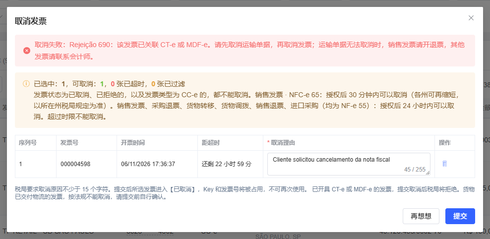
（2）批量提交（勾选多张发票后点【开具 CC-e】【取消发票】【开退票】）：系统关闭弹窗。全部成功时，不弹结果弹窗，只在页面顶部提示成功张数。开具 CC-e 提示：“CC-e 开具成功 N 张”。取消发票提示：“取消成功 N 张”。开退票提示：“已提交 N 张退票，可在【开票中】查看进度”。有失败时，弹出结果弹窗（【开具 CC-e 结果】【取消发票结果】【开退票提交结果】）。弹窗第一行显示：“成功 N 张，失败 M 张”。开退票显示：“已提交 N 张，失败 M 张”。开退票提交后要等税局返回结果，此时只表示已提交。【开退票提交结果】在这一行上方另显示一句说明：“退票已提交，税局的授权结果稍后返回。被税局拒绝的退票会进入【开票失败】，可在那里查看原因并处理。”。第一行右侧为【导出失败明细】。下方表格只列失败的发票，列为序列号、发票号、发票类型、失败原因。失败原因以“开具失败：”“取消失败：”“开退票失败：”开头，后面接税局返回的原因（如 Rejeição 690、Rejeição 501）。张数较多时，表格在弹窗内滚动显示。点【导出失败明细】，导出全部失败记录，列与表格相同。

（3）有失败的发票时，表格右上方显示【导出失败明细】（带导出图标）。点击后一次导出本次全部失败的发票，导出文件包含发票号、结果、失败原因三列。
5 发票系统
本节按模块展开，见 5.1～5.6，以及第 6～9 章。
5.1 发票主体（零售）
位置
财务（零售）› 发票管理 › 发票主体（零售）
5.1.1 业务场景说明
功能说明：零售的开票方档案。一个发票主体对应一个经营地址和一个 CNPJ，保存公司信息、序列号、A1 证书、NFC-e 配置，并关联这个地址上的门店和仓库。这些门店、仓库开票时，统一使用本发票主体的 CNPJ、A1 证书和序列号。
设置原因：
- 巴西每个经营地点都是独立的纳税点，各自有 CNPJ 分支号和州税号，各自开票，各自使用自己的号段。因此，每个有独立地址的总部、门店、仓库都要建立一个发票主体。
- 同一家门店每天会同时开出两种发票模型：收银台当面销售开 NFC-e 65；批发给企业、调拨开 NF-e 55。两种发票模型使用两套独立的号段，必须分别配置。
- NFC-e 必须带 QR Code，供消费者验证真伪；QR Code 要用 CSC 生成。CSC 要按州、按 CNPJ 分别向州税局（SEFAZ）申请，没有配置 CSC 的门店不能开 NFC-e。
- A1 证书过期后不能开票。
系统需解决的问题：
| 要解决的问题 | 系统怎么做 |
|---|---|
| 门店、仓库开票时应使用哪个 CNPJ、证书和号段 | 在发票主体上关联门店/仓库 |
| 两种发票模型的号段不能混用 | 【开具的发票模型】选 NF-e 和 NFC-e，分别配置序列号和起始编号。 |
| 未配置 CSC 时无法开具 NFC-e | 勾选 NFC-e 后才显示【NFC-e 配置】；列表直接显示“已配置”或“未配置”。 |
| 财务需要直观识别哪些发票主体尚无法开票 | 列表显示关联门店/仓库、NFC-e 配置、A1 证书剩余时间；证书到期时显示红字，并带【更换】按钮。 |
5.1.2 流程图
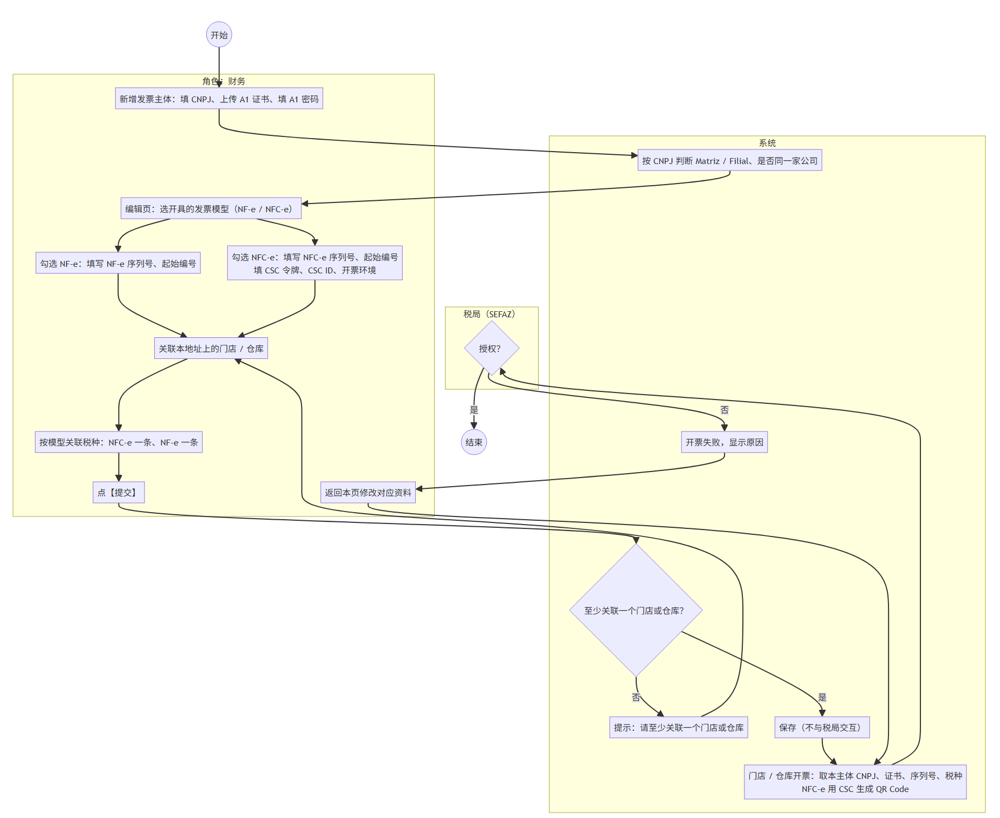
5.1.3 和税局（SEFAZ）的数据交互
本页保存时不与税局交互。这里配置的资料，在开票时随发票一起提交税局。
开票时上述资料的用途：
| 项 | 开 NFC-e 65 | 开 NF-e 55 |
|---|---|---|
| 发票号 | NFC-e 序列号和起始编号 | NF-e 序列号和起始编号 |
| 开票方 | 本发票主体的 CNPJ、州税号（IE）、地址 | 同左 |
| 签名 | 本发票主体的 A1 证书 | 同左 |
| 税种 | 本发票主体关联的 NFC-e 税种 | 本发票主体关联的 NF-e 税种 |
| QR Code | 用 CSC 令牌 + CSC ID 生成，写入发票 XML | 无 |
| 发送方式 | NFeAutorizacao（发票模型 65）；【开票环境】决定提交到生产环境还是测试环境。 | NFeAutorizacao（发票模型 55） |
| 资料错误的后果 | CSC 填写错误：税局拒绝这张 NFC-e，按开票失败处理。 | 和发票号相关的拒绝（如 Rejeição 562）：开票失败的处理指引提示用户回到本页修改序列号和起始编号 |
5.1.4 关键业务约束
•
一个门店或仓库只能关联一个发票主体（BR-04）；每个发票主体至少关联一个门店或仓库，最后一个不能删除（BR-02）。
• 只能关联与本发票主体同一地址、同一家公司（CNPJ 前 8
位相同）的门店或仓库（BR-05）。
• NF-e 和 NFC-e
的号段不能共用同一套序列号；跳过的发票号要报送作废，以免被税务机关处罚。
• 编辑发票主体的【序列号】板块中，NF-e 和
NFC-e
为两个横向页签，每个页签只显示本发票模型的序列号和起始编号；只有该发票主体开具了这种发票模型，才显示对应的页签。
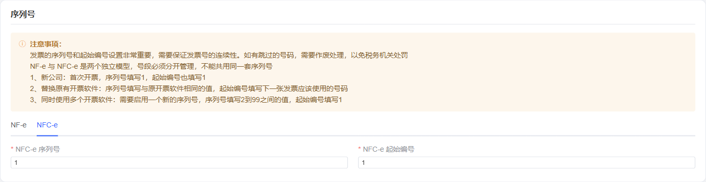
• 仅有办公室、没有货物需要开票的地址无需建立发票主体。
5.1.5 原型
下面是 财务（零售）› 发票管理 › 发票主体（零售）的原型截图，包括列表页、新增弹窗、编辑页各板块和删除提示。序列号板块的 NF-e、NFC-e 两个页签见 5.1.4。
一、列表页
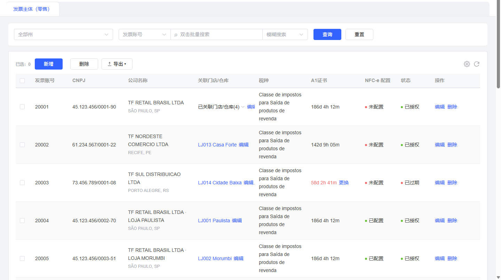
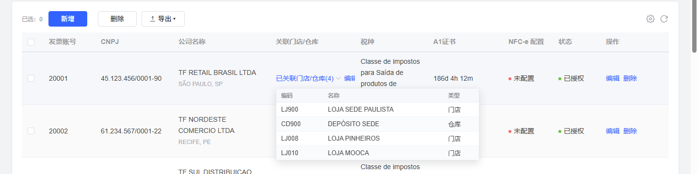
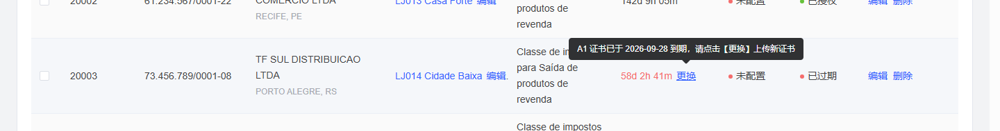
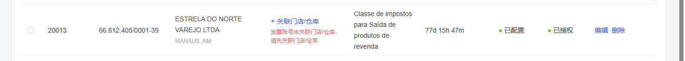
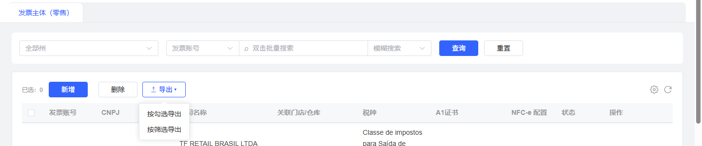
二、新增弹窗
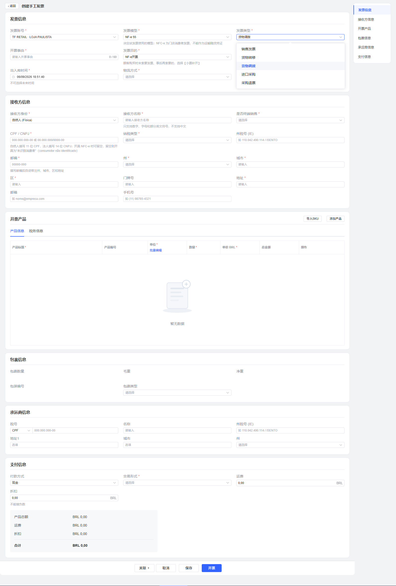

三、编辑页
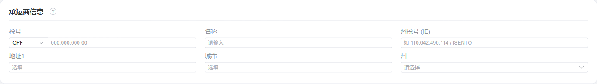
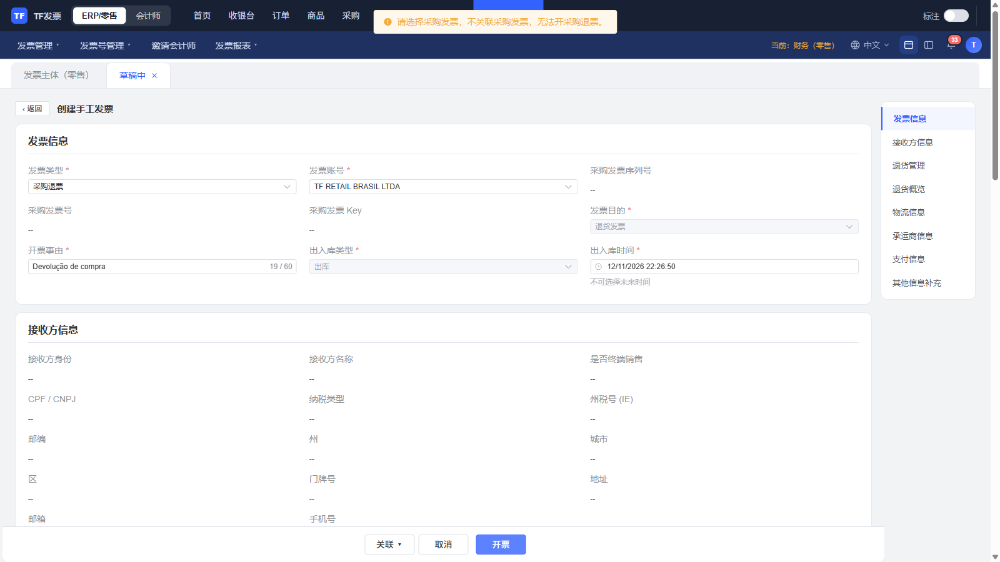
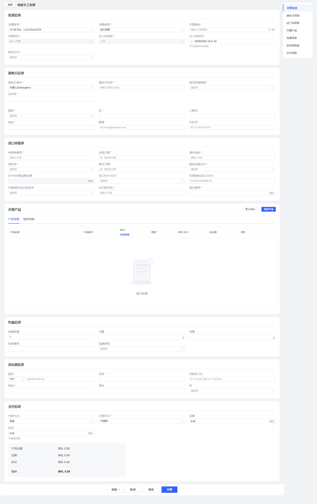
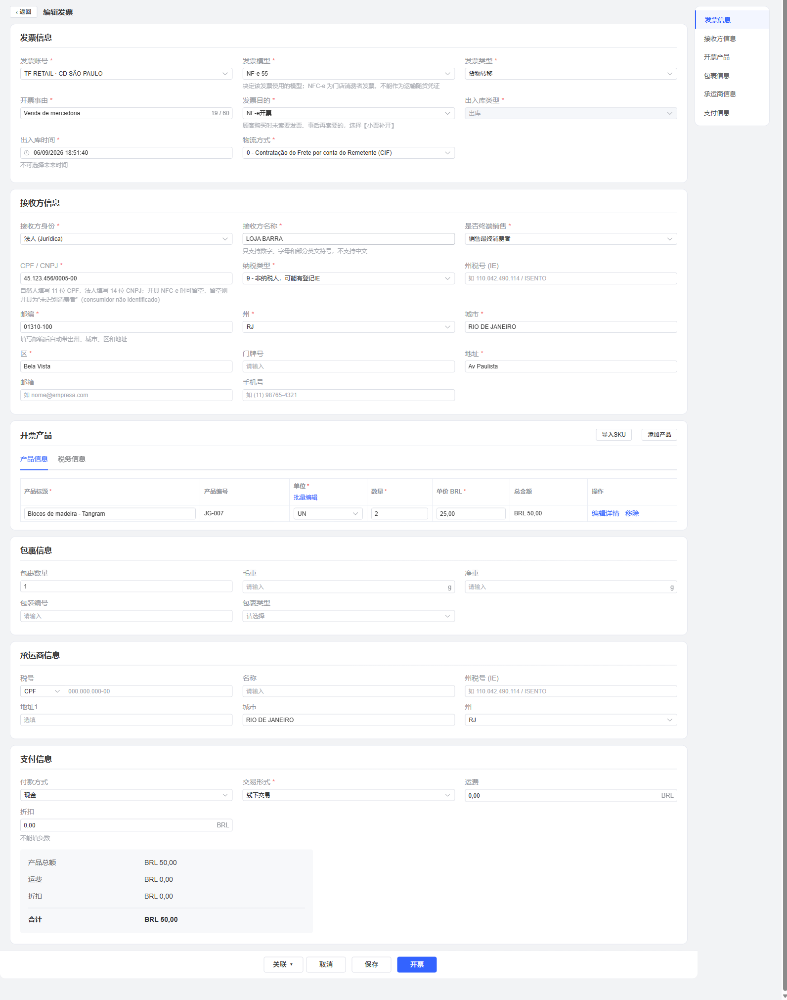

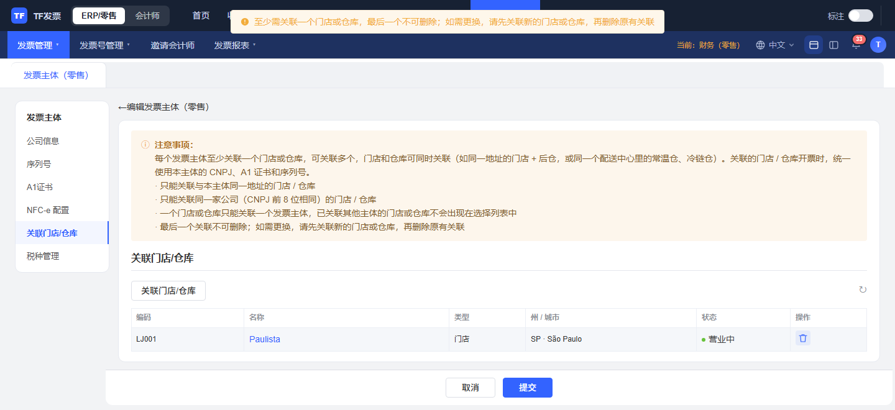
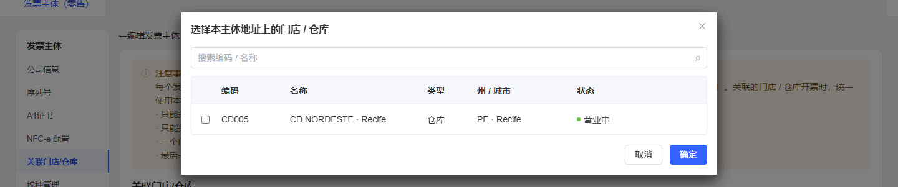
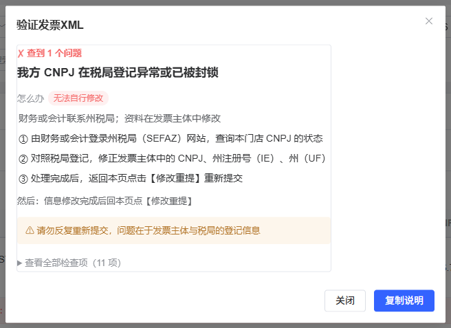
四、删除
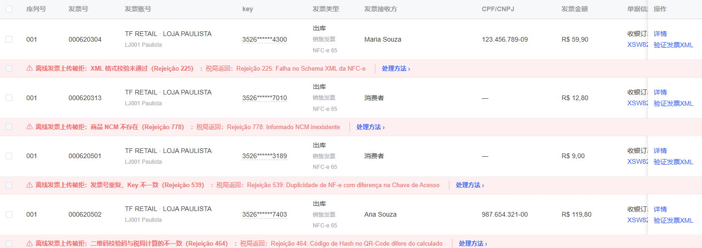
5.1.6 字段规范
本节按功能分别列出字段规范，请参考 5.1.6.1 的目录及之后各小节。
5.1.6.1 查询发票主体（零售）
1、查询条件
| 字段名称 | 类型 | 是否必填/必选 | 默认值 | 约束规则 |
|---|---|---|---|---|
| 州 | 下拉选择 | 否 | 全部州 | 选项：全部州、AM、BA、MG、PR、PE、RJ、RS、SP。按公司地址所在的州筛选发票主体。 |
| 组合搜索 | 组合搜索（字段下拉、输入框、匹配方式下拉） | 否 | 双击批量搜索 | 字段可选：发票账号、CNPJ、公司名称、门店，默认为“发票账号”。匹配方式可选：模糊搜索、精确搜索、前缀搜索，默认为“模糊搜索”。 |
2、列表字段
| 字段名称 | 类型 | 是否必填/必选 | 默认值 | 约束规则 |
|---|---|---|---|---|
| 发票账号 | 只读文本 | 否 | 回显 | 发票主体的编号，如 20001。 |
| CNPJ | 只读文本 | 否 | 回显 | 格式为 00.000.000/0000-00。 |
| 公司名称 | 只读文本 | 否 | 回显 | 第一行显示公司名称，第二行用灰字显示城市和州，如“SÃO PAULO, SP”。 |
| 关联门店/仓库 | 只读文本（链接） | 否 | 回显 | 1、关联了多个门店或仓库时，显示“已关联门店/仓库(N)”，点击后展开浮层，列出编码、名称、类型。2、只关联了一个时，显示该门店或仓库的编码和名称，鼠标悬停时提示：“关联门店/仓库：{编码} {名称}”。3、没有关联时，显示【+ 关联门店/仓库】，下方红字显示：“发票账号未关联门店/仓库，请先关联门店/仓库”。4、有关联时，后面带【编辑】。 |
| 税种 | 只读文本 | 否 | 回显 | 显示本发票主体关联的税种名称。 |
| A1证书 | 只读文本 | 否 | 回显 | 显示 A1 证书的剩余有效期，格式为“Nd Nh Nm”。证书已过期时，剩余有效期显示为红字，后面带【更换】，鼠标悬停【更换】时提示：“A1 证书已于 {到期日期} 到期，请点击【更换】上传新证书”。 |
| NFC-e 配置 | 只读状态 | 否 | 回显 | 取值：“已配置”（绿点）、“未配置”（红点）。 |
| 状态 | 只读状态 | 否 | 回显 | 取值：“已授权”（绿点）、“待授权”（橙点）、“已过期”（红点）。 |
5.1.6.2 导出发票主体（零售）
无。
5.1.6.3 新增发票主体（零售）
| 字段名称 | 类型 | 是否必填/必选 | 默认值 | 约束规则 |
|---|---|---|---|---|
| CNPJ | 文本输入框 | 是 | 00.000.000/0000-00 | 14 位数字，按 00.000.000/0000-00 格式显示，末两位为校验位。第 9～12 位为 0001 时为总部（Matriz），其余为分支（Filial）。前 8 位相同视为同一家公司。 |
| A1证书 | 上传 | 是 | 无 | 按钮文案为【上传证书】，上传 A1 数字证书文件（.pfx）。 |
| A1密码 | 密码输入框 | 是 | 请输入 | 填写所上传 A1 证书的密码。 |
5.1.6.4 编辑发票主体（零售）
1、公司信息
| 字段名称 | 类型 | 是否必填/必选 | 默认值 | 约束规则 |
|---|---|---|---|---|
| 公司名称 | 文本输入框 | 是 | 回显 | 开票方的公司名称，开票时写入发票。 |
| CNPJ | 文本输入框（置灰） | 是 | 回显 | 新增时录入，编辑页不能修改。 |
| 开具的发票模型 | 复选框组 | 是 | 回显 | 选项：NF-e、NFC-e，至少勾选一个。只勾选 NF-e 时，隐藏【NFC-e 配置】板块和【序列号】板块的 NFC-e 页签。只勾选 NFC-e 时，隐藏【序列号】板块的 NF-e 页签。字段下方提示：“仅开具 NF-e 的主体（如仅用于办公或仓储的总部）无需申请 CSC，下方的【NFC-e 配置】将自动隐藏”。 |
| 公司类型 | 下拉选择（置灰） | 是 | 回显 | 选项：Matriz、Filial。按 CNPJ 自动显示，不能修改。字段下方提示：“根据 CNPJ 自动显示：第 9～12 位为 0001 时为 Matriz（总部），其余为 Filial（分支），不可修改”。 |
| 税务类型 | 下拉选择 | 是 | 回显 | 选项：Simples Nacional、Lucro Presumido、Lucro Real。字段名后面带【点击查询】，用于到税局查询该 CNPJ 的税务类型。税务类型决定【税种管理】板块展示哪些税种。 |
| 州税号(IE) | 文本输入框 | 是 | 回显 | 以数字开头，可包含“.”“-”“/”，共 2～18 个字符。免税时填写 ISENTO。占位提示为“如 110.042.490.114 / ISENTO”。 |
| 邮箱 | 文本输入框 | 是 | 回显 | 须为邮箱格式，占位提示为“如 nome@empresa.com”。 |
| Logo | 上传 | 否 | 回显 | 按钮文案为【Logo】。仅支持 JPG、JPEG、PNG 格式，图片不超过 200KB，且像素需小于 200x200。 |
2、地址信息
| 字段名称 | 类型 | 是否必填/必选 | 默认值 | 约束规则 |
|---|---|---|---|---|
| 邮编 | 文本输入框 | 是 | 回显 | 8 位数字，可写成 00000-000 格式，占位提示为“如 01310-100”。 |
| 州 | 下拉选择 | 是 | 回显 | 选项为巴西 27 个州的代码，如 SP、RJ。 |
| 城市 | 文本输入框 | 是 | 回显 | 填写城市名称，如 São Paulo。 |
| 区 (Bairro) | 文本输入框 | 是 | 回显 | 填写所在区的名称，如 Bela Vista。 |
| 门牌号 | 文本输入框 | 是 | 回显 | 填写门牌号，如 2100。 |
| 地址 | 多行文本框 | 是 | 回显 | 最多 200 个字符，输入框右下角显示已输入字数，达到 200 个字符后不能继续输入。 |
5.1.6.5 序列号
| 字段名称 | 类型 | 是否必填/必选 | 默认值 | 约束规则 |
|---|---|---|---|---|
| NF-e 序列号 | 文本输入框 | 条件必填 | 回显 | 位于【NF-e】页签。【开具的发票模型】勾选 NF-e 时显示且必填。1～3 位数字，同时使用多个开票软件时填写 2～99 之间的值。 |
| NF-e 起始编号 | 文本输入框 | 条件必填 | 回显 | 位于【NF-e】页签。【开具的发票模型】勾选 NF-e 时显示且必填。1～11 位，只能输入数字和“.”，填写下一张 NF-e 应该使用的号码。 |
| NFC-e 序列号 | 文本输入框 | 条件必填 | 回显 | 位于【NFC-e】页签。【开具的发票模型】勾选 NFC-e 时显示且必填。1～3 位数字，与 NF-e 序列号分开管理。 |
| NFC-e 起始编号 | 文本输入框 | 条件必填 | 回显 | 位于【NFC-e】页签。【开具的发票模型】勾选 NFC-e 时显示且必填。1～11 位，只能输入数字和“.”，填写下一张 NFC-e 应该使用的号码。 |
5.1.6.6 A1证书
| 字段名称 | 类型 | 是否必填/必选 | 默认值 | 约束规则 |
|---|---|---|---|---|
| A1证书 | 上传 | 是 | 回显 | 显示当前证书的文件名，没有证书时显示“暂无证书”。字段名后面带【更换】，用于重新上传 A1 证书文件（.pfx）。 |
| 证书剩余有效期 | 只读文本 | 否 | 回显 | 显示 A1 证书的剩余有效期，格式为“Nd Nh Nm”。下方提示：“到期前请点【更换】上传新证书；证书过期后无法开票。” |
| A1密码 | 密码输入框 | 是 | 回显 | 填写 A1 证书的密码，输入框右侧可以切换显示或隐藏密码。 |
5.1.6.7 NFC-e 配置
| 字段名称 | 类型 | 是否必填/必选 | 默认值 | 约束规则 |
|---|---|---|---|---|
| CSC 令牌 | 密码输入框 | 条件必填 | 回显 | 【开具的发票模型】勾选 NFC-e 时显示且必填。32～36 位字母或数字，占位提示为“32～36 位字母数字”。 |
| CSC ID | 文本输入框 | 条件必填 | 回显 | 【开具的发票模型】勾选 NFC-e 时显示且必填。6 位数字，占位提示为“6 位数字，如 000001”。 |
| 开票环境 | 下拉选择 | 条件必填 | 回显 | 【开具的发票模型】勾选 NFC-e 时显示且必选。选项：生产、测试。选“生产”时 NFC-e 提交到税局的生产环境，选“测试”时提交到测试环境。 |
5.1.6.8 关联门店/仓库
1、关联门店/仓库表格
| 字段名称 | 类型 | 是否必填/必选 | 默认值 | 约束规则 |
|---|---|---|---|---|
| 编码 | 只读文本 | 否 | 回显 | 门店或仓库的编码，如 LJ001、CD005。 |
| 名称 | 只读文本 | 否 | 回显 | 门店或仓库的名称。 |
| 类型 | 只读文本 | 否 | 回显 | 取值：门店、仓库。 |
| 州 / 城市 | 只读文本 | 否 | 回显 | 格式为“州代码 · 城市”，如 SP · São Paulo。 |
| 状态 | 只读状态 | 否 | 回显 | 门店或仓库的营业状态，如“营业中”。 |
2、选择本主体地址上的门店 / 仓库弹窗
| 字段名称 | 类型 | 是否必填/必选 | 默认值 | 约束规则 |
|---|---|---|---|---|
| 搜索编码 / 名称 | 搜索输入框 | 否 | 搜索编码 / 名称 | 按编码或名称查找候选的门店和仓库。 |
| 选择门店/仓库 | 表格复选框 | 是 | 未勾选 | 可以多选。候选只包含与本发票主体同一地址、同一家公司，且没有关联其他发票主体的门店和仓库。表格列为编码、名称、类型、州 / 城市、状态。没有候选时，表格显示“没有可关联的门店”。 |
5.1.6.9 税种管理
| 字段名称 | 类型 | 是否必填/必选 | 默认值 | 约束规则 |
|---|---|---|---|---|
| 发票模型 | 只读文本 | 否 | 回显 | 取值：NFC-e、NF-e。每种发票模型只能关联一条税种。 |
| 编号 | 只读文本 | 否 | 回显 | 税种的编号，如 TR10021。 |
| 税种名称 | 只读文本 | 否 | 回显 | 税种的名称，如 Classe de impostos para Venda ao consumidor (NFC-e)。 |
5.1.6.10 删除发票主体（零售）
无。
5.1.7 用例规则
本节按功能分别列出用例规则，请参考 5.1.7.1 的目录及之后各小节。
5.1.7.1 查询发票主体（零售）
• 前置条件：
1、用户已登录系统，具备“财务（零售）-发票管理-发票主体（零售）-查询”权限。
2、发票主体（零售）列表中存在至少一条发票主体。
• 操作流程：
1、用户点击顶部【财务（零售）】，再点击【发票管理】下的【发票主体（零售）】，系统进入到发票主体（零售）列表页面，默认显示全部发票主体，每页
50 条，可以切换为每页 10、25、50、100 条。
2、用户选择州，或在组合搜索中选择字段、输入内容、选择匹配方式，点击【查询】按钮，系统按查询条件刷新列表。
3、用户点击【重置】按钮，系统清空查询条件，列表恢复显示全部发票主体。
4、用户点击【关联门店/仓库】列的“已关联门店/仓库(N)”，系统展开浮层，列出已关联门店和仓库的编码、名称、类型。
5、用户点击【关联门店/仓库】列的门店名称、【编辑】链接或【+
关联门店/仓库】链接，系统进入到编辑发票主体（零售）页面，回显数据，并显示【关联门店/仓库】板块。
6、用户点击【A1证书】列的【更换】链接，系统进入到编辑发票主体（零售）页面，回显数据，并显示【A1证书】板块。
•
后置条件：列表展示与当前查询条件一致的发票主体，可继续执行【新增】【编辑】【删除】【导出】等操作。
• 校验规则：无。
• 提示消息：无。
• 消息通知：无。
•
操作日志：查询/查看不输出操作日志。
5.1.7.2 导出发票主体（零售）
• 前置条件：
1、用户已登录系统，具备“财务（零售）-发票管理-发票主体（零售）-导出”权限。
2、发票主体（零售）列表中存在至少一条发票主体。
• 操作流程：
1、用户在发票主体（零售）列表勾选发票主体，点击【导出】按钮，在下拉菜单中选择【按勾选导出】，系统导出勾选的发票主体，提示：“已导出
{N} 条记录”。
2、用户在发票主体（零售）列表设置查询条件，点击【导出】按钮，在下拉菜单中选择【按筛选导出】，系统导出符合当前查询条件的全部发票主体，提示：“已导出
{N} 条记录”。
•
后置条件：系统生成导出文件，不改变发票主体数据。
•
校验规则：当用户选择【按勾选导出】时，若没有勾选任何发票主体，则提示：“请选择数据”。系统不导出。
• 提示消息：无。
• 消息通知：无。
•
操作日志：用户操作成功后，系统在操作日志模块记录：操作时间、操作账号、操作模块、操作功能、操作明细、IP地址。
| 字段 | 字段说明 | 规则/示例 |
|---|---|---|
| 操作时间 | 操作发生时间 | 精确到：年月日时分秒，格式：DD/MM/YYYY HH:mm:ss |
| 操作账号 | 登录系统的账号名称 | 例如：ana@tfretail.com.br |
| 操作模块 | 具体菜单名称 | 例如：财务（零售）-发票管理-发票主体（零售） |
| 操作功能 | 本次操作触发的功能动作名称 | 例如：导出 |
| 操作明细 | 本次操作的详细信息 | 例如：导出发票主体：2 条，范围=按勾选导出 |
| IP地址 | 操作终端 IP | 例如：189.45.12.8 |
5.1.7.3 新增发票主体（零售）
• 前置条件：
1、用户已登录系统，具备“财务（零售）-发票管理-发票主体（零售）-新增”权限。
2、用户已取得该经营地址的 CNPJ 和 A1
证书文件。
• 操作流程：
1、用户在发票主体（零售）列表点击【新增】按钮，系统打开新增发票主体（零售）弹窗。弹窗下方显示说明：“同一公司的分支（门店、仓库）填写与总部
CNPJ 前 8 位相同的分支号；其他公司（如加盟店）填写其自身的
CNPJ。属于总部还是分支、是否为同一公司，由系统根据 CNPJ
自动判断”。
2、用户填写表单字段，点击【继续】按钮。校验通过后，系统保存发票主体，并按
CNPJ 自动确定公司类型（Matriz 或 Filial）。
3、用户点击【取消】按钮，系统关闭弹窗，不执行任何操作。
• 后置条件：
1、生成一条发票主体数据，可在发票主体（零售）列表查询到。
2、新发票主体还没有关联门店或仓库，列表【关联门店/仓库】列显示【+
关联门店/仓库】和红字提示，用户需要点击操作列的【编辑】补全公司信息、序列号、NFC-e
配置、关联门店/仓库和税种。
•
校验规则：当用户点击【继续】时，若有字段未填写或填写不正确，则在字段下方红字提示。系统不保存。
• 提示消息：
在当前页面的字段下面红色字体提示：
| 字段名称 | 未填写/未选择提示 | 输入错误提示 |
|---|---|---|
| CNPJ | 请输入CNPJ | CNPJ格式不正确 |
| A1证书 | 请上传A1证书 | - |
| A1密码 | 请输入A1密码 | - |
• 消息通知：无。
•
操作日志：用户操作成功后，系统在操作日志模块记录：操作时间、操作账号、操作模块、操作功能、操作明细、IP地址。
| 字段 | 字段说明 | 规则/示例 |
|---|---|---|
| 操作时间 | 操作发生时间 | 精确到：年月日时分秒，格式：DD/MM/YYYY HH:mm:ss |
| 操作账号 | 登录系统的账号名称 | 例如：ana@tfretail.com.br |
| 操作模块 | 具体菜单名称 | 例如：财务（零售）-发票管理-发票主体（零售） |
| 操作功能 | 本次操作触发的功能动作名称 | 例如：新增 |
| 操作明细 | 本次操作的详细信息 | 例如：新增发票主体：CNPJ=45.123.456/0009-34 |
| IP地址 | 操作终端 IP | 例如：189.45.12.8 |
5.1.7.4 编辑发票主体（零售）
• 前置条件：
1、用户已登录系统，具备“财务（零售）-发票管理-发票主体（零售）-编辑”权限。
2、发票主体（零售）列表中存在目标发票主体。
• 操作流程：
1、用户在发票主体（零售）列表，点击操作列的【编辑】按钮，系统进入到编辑发票主体（零售）页面，回显数据。页面左侧为板块导航：公司信息、序列号、A1证书、NFC-e
配置、关联门店/仓库、税种管理，默认显示【公司信息】板块。
2、用户在【公司信息】板块填写表单字段（勾选或取消勾选【开具的发票模型】后，【序列号】板块的页签和【NFC-e
配置】板块随之显示或隐藏），点击【提交】按钮。校验通过后，系统保存全部板块的内容，提示：“发票主体已保存（含
NFC-e 配置）”。系统返回发票主体（零售）列表。
3、用户点击【取消】按钮，系统返回发票主体（零售）列表，不执行任何操作。
• 后置条件：
1、发票主体数据更新为最新编辑结果，发票主体（零售）列表数据同步刷新。
2、之后开票时，按新的公司信息和地址信息生成发票。
• 校验规则：
1、当用户点击【提交】时，若任一板块有字段未填写或填写不正确，则页面顶部提示：“有内容未填或填写不正确，已标红，请修改后再试”。字段下方显示红字提示，左侧导航中对应板块的名称标红并带提示图标。系统不保存。
2、当用户在【开具的发票模型】取消勾选全部选项时，系统在字段下方提示：“请选择开具的发票模型”。系统隐藏【序列号】和【NFC-e
配置】板块。
• 提示消息：
在当前页面的字段下面红色字体提示：
| 字段名称 | 未填写/未选择提示 | 输入错误提示 |
|---|---|---|
| 公司名称 | 请输入公司名称 | - |
| 开具的发票模型 | 请选择开具的发票模型 | - |
| 税务类型 | 请选择税务类型 | - |
| 州税号(IE) | 请输入州税号(IE) | 州税号(IE)格式不正确 |
| 邮箱 | 请输入邮箱 | 邮箱格式不正确 |
| 邮编 | 请输入邮编 | 邮编应为 8 位数字 |
| 州 | 请选择州 | - |
| 城市 | 请输入城市 | - |
| 区 (Bairro) | 请输入区 (Bairro) | - |
| 门牌号 | 请输入门牌号 | - |
| 地址 | 请输入地址 | - |
• 消息通知：无。
•
操作日志：用户操作成功后，系统在操作日志模块记录：操作时间、操作账号、操作模块、操作功能、操作明细、IP地址。
| 字段 | 字段说明 | 规则/示例 |
|---|---|---|
| 操作时间 | 操作发生时间 | 精确到：年月日时分秒，格式：DD/MM/YYYY HH:mm:ss |
| 操作账号 | 登录系统的账号名称 | 例如：ana@tfretail.com.br |
| 操作模块 | 具体菜单名称 | 例如：财务（零售）-发票管理-发票主体（零售） |
| 操作功能 | 本次操作触发的功能动作名称 | 例如：编辑 |
| 操作明细 | 本次操作的详细信息 | 例如：编辑发票主体：发票账号=20004，邮箱：“fiscal@tfretail.com.br”→“fiscal.paulista@tfretail.com.br” |
| IP地址 | 操作终端 IP | 例如：189.45.12.8 |
5.1.7.5 序列号
• 前置条件：
1、用户已登录系统，具备“财务（零售）-发票管理-发票主体（零售）-编辑”权限。
2、发票主体（零售）列表中存在目标发票主体，且【开具的发票模型】至少勾选了
NF-e 或 NFC-e 中的一个。
• 操作流程：
1、用户在编辑发票主体（零售）页面，点击左侧导航的【序列号】，系统显示【序列号】板块。板块上方显示注意事项，下方为【NF-e】【NFC-e】两个页签，只显示已勾选的发票模型对应的页签。
2、用户在【NF-e】【NFC-e】页签间切换填写表单字段，点击【提交】按钮。校验通过后，系统保存，提示：“发票主体已保存（含
NFC-e 配置）”。系统返回发票主体（零售）列表。
3、用户点击【取消】按钮，系统返回发票主体（零售）列表，不执行任何操作。
• 后置条件：
1、发票主体的序列号和起始编号更新为最新编辑结果。
2、之后开具 NF-e 时按 NF-e
序列号和起始编号取号，开具 NFC-e 时按 NFC-e
序列号和起始编号取号。
•
校验规则：当用户点击【提交】时，若序列号或起始编号未填写或格式不正确，则页面顶部提示：“有内容未填或填写不正确，已标红，请修改后再试”。左侧导航的【序列号】标红。系统不保存。
• 提示消息：
在当前页面的字段下面红色字体提示：
| 字段名称 | 未填写/未选择提示 | 输入错误提示 |
|---|---|---|
| NF-e 序列号 | 请输入NF-e 序列号 | NF-e 序列号格式不正确 |
| NF-e 起始编号 | 请输入NF-e 起始编号 | NF-e 起始编号格式不正确 |
| NFC-e 序列号 | 请输入NFC-e 序列号 | NFC-e 序列号格式不正确 |
| NFC-e 起始编号 | 请输入NFC-e 起始编号 | NFC-e 起始编号格式不正确 |
• 消息通知：无。
•
操作日志：用户操作成功后，系统在操作日志模块记录：操作时间、操作账号、操作模块、操作功能、操作明细、IP地址。
| 字段 | 字段说明 | 规则/示例 |
|---|---|---|
| 操作时间 | 操作发生时间 | 精确到：年月日时分秒，格式：DD/MM/YYYY HH:mm:ss |
| 操作账号 | 登录系统的账号名称 | 例如：ana@tfretail.com.br |
| 操作模块 | 具体菜单名称 | 例如：财务（零售）-发票管理-发票主体（零售） |
| 操作功能 | 本次操作触发的功能动作名称 | 例如：编辑 |
| 操作明细 | 本次操作的详细信息 | 例如：编辑发票主体：发票账号=20004，NFC-e 序列号：“1”→“2”，NFC-e 起始编号：“1”→“1” |
| IP地址 | 操作终端 IP | 例如：189.45.12.8 |
5.1.7.6 A1证书
• 前置条件：
1、用户已登录系统，具备“财务（零售）-发票管理-发票主体（零售）-编辑”权限。
2、发票主体（零售）列表中存在目标发票主体。
• 操作流程：
1、用户在编辑发票主体（零售）页面，点击左侧导航的【A1证书】，或在发票主体（零售）列表点击【A1证书】列的【更换】链接，系统显示【A1证书】板块，回显证书文件名、证书剩余有效期和
A1密码。
2、证书到期前，用户点击【A1证书】后面的【更换】链接，重新上传
A1 证书文件，并填写新证书的
A1密码，点击【提交】按钮。校验通过后，系统保存，提示：“发票主体已保存（含
NFC-e 配置）”。系统返回发票主体（零售）列表。
3、用户点击【取消】按钮，系统返回发票主体（零售）列表，不执行任何操作。
• 后置条件：
1、发票主体的 A1 证书和
A1密码更新为最新编辑结果，列表【A1证书】列同步显示新证书的剩余有效期。
2、之后开票时，使用新的 A1
证书签名。
• 校验规则：当用户点击【提交】时，若
A1密码未填写，则页面顶部提示：“有内容未填或填写不正确，已标红，请修改后再试”。左侧导航的【A1证书】标红。系统不保存。
• 提示消息：
在当前页面的字段下面红色字体提示：
| 字段名称 | 未填写/未选择提示 | 输入错误提示 |
|---|---|---|
| A1证书 | 请上传A1证书 | - |
| A1密码 | 请输入A1密码 | - |
• 消息通知：无。
•
操作日志：用户操作成功后，系统在操作日志模块记录：操作时间、操作账号、操作模块、操作功能、操作明细、IP地址。
| 字段 | 字段说明 | 规则/示例 |
|---|---|---|
| 操作时间 | 操作发生时间 | 精确到：年月日时分秒，格式：DD/MM/YYYY HH:mm:ss |
| 操作账号 | 登录系统的账号名称 | 例如：ana@tfretail.com.br |
| 操作模块 | 具体菜单名称 | 例如：财务（零售）-发票管理-发票主体（零售） |
| 操作功能 | 本次操作触发的功能动作名称 | 例如：编辑 |
| 操作明细 | 本次操作的详细信息 | 例如：编辑发票主体：发票账号=20003，A1证书：“TFSUL_0001.pfx”→“TFSUL_0002.pfx” |
| IP地址 | 操作终端 IP | 例如：189.45.12.8 |
5.1.7.7 NFC-e 配置
• 前置条件：
1、用户已登录系统，具备“财务（零售）-发票管理-发票主体（零售）-编辑”权限。
2、发票主体的【开具的发票模型】已勾选
NFC-e。
3、用户已向所在州的税局（SEFAZ）申请到本
CNPJ 的 CSC。
• 操作流程：
1、用户在编辑发票主体（零售）页面，点击左侧导航的【NFC-e
配置】，系统显示【NFC-e 配置】板块。板块上方显示注意事项：“CSC（含令牌与
ID）需按州、按 CNPJ 分别向 SEFAZ 申请；未配置 CSC 的门店无法开具
NFC-e”。
2、用户填写表单字段，点击【提交】按钮。校验通过后，系统保存，提示：“发票主体已保存（含
NFC-e 配置）”。系统返回发票主体（零售）列表。
3、用户点击【取消】按钮，系统返回发票主体（零售）列表，不执行任何操作。
• 后置条件：
1、发票主体的 NFC-e
配置更新为最新编辑结果，列表【NFC-e 配置】列显示“已配置”。
2、之后本发票主体关联的门店可以开具
NFC-e，开票时用 CSC 令牌和 CSC ID 生成 QR
Code，并按开票环境提交到税局的生产环境或测试环境。
• 校验规则：当用户点击【提交】时，若
CSC 令牌、CSC ID
未填写或格式不正确，则页面顶部提示：“有内容未填或填写不正确，已标红，请修改后再试”。左侧导航的【NFC-e
配置】标红。系统不保存。
• 提示消息：
在当前页面的字段下面红色字体提示：
| 字段名称 | 未填写/未选择提示 | 输入错误提示 |
|---|---|---|
| CSC 令牌 | 请输入CSC 令牌 | CSC 令牌格式不正确 |
| CSC ID | 请输入CSC ID | CSC ID格式不正确 |
| 开票环境 | 请选择开票环境 | - |
• 消息通知：无。
•
操作日志：用户操作成功后，系统在操作日志模块记录：操作时间、操作账号、操作模块、操作功能、操作明细、IP地址。
| 字段 | 字段说明 | 规则/示例 |
|---|---|---|
| 操作时间 | 操作发生时间 | 精确到：年月日时分秒，格式：DD/MM/YYYY HH:mm:ss |
| 操作账号 | 登录系统的账号名称 | 例如：ana@tfretail.com.br |
| 操作模块 | 具体菜单名称 | 例如：财务（零售）-发票管理-发票主体（零售） |
| 操作功能 | 本次操作触发的功能动作名称 | 例如：编辑 |
| 操作明细 | 本次操作的详细信息 | 例如：编辑发票主体：发票账号=20004，CSC ID：“000001”→“000002”，开票环境：“测试”→“生产” |
| IP地址 | 操作终端 IP | 例如：189.45.12.8 |
5.1.7.8 关联门店/仓库
• 前置条件：
1、用户已登录系统，具备“财务（零售）-发票管理-发票主体（零售）-编辑”权限。
2、发票主体（零售）列表中存在目标发票主体。
• 操作流程：
1、用户在编辑发票主体（零售）页面，点击左侧导航的【关联门店/仓库】，或在发票主体（零售）列表点击【关联门店/仓库】列的门店名称、【编辑】链接或【+
关联门店/仓库】链接，系统显示【关联门店/仓库】板块。板块上方显示注意事项，下方表格列出已关联的门店和仓库。
2、用户点击【关联门店/仓库】按钮，系统打开选择本主体地址上的门店
/
仓库弹窗，列出可以关联的门店和仓库。用户可以输入编码或名称查找，勾选一个或多个门店或仓库，点击【确定】按钮。系统关闭弹窗，把勾选的门店或仓库加入表格，提示：“已关联
{N} 个门店 / 仓库”。
3、用户在选择弹窗点击【取消】按钮，系统关闭弹窗，不执行任何操作。
4、用户点击表格某一行操作列的删除图标，系统从表格中移除这一行。
5、用户点击页面的【提交】按钮。校验通过后，系统保存，提示：“发票主体已保存（含
NFC-e 配置）”。系统返回发票主体（零售）列表。
6、用户点击页面的【取消】按钮，系统返回发票主体（零售）列表，本次增加或删除的关联都不保存。
• 后置条件：
1、发票主体关联的门店和仓库更新为最新编辑结果，列表【关联门店/仓库】列同步刷新。
2、新关联的门店和仓库开票时，使用本发票主体的
CNPJ、A1
证书和序列号。被移除的门店和仓库可以重新关联到其他发票主体。
• 校验规则：
1、当用户在选择弹窗点击【确定】时，若没有勾选任何门店或仓库，则提示：“请先选择门店或仓库”。系统不关闭弹窗。
2、当用户删除关联时，若表格中只剩这一个门店或仓库，则提示：“至少需关联一个门店或仓库，最后一个不可删除；如需更换，请先关联新的门店或仓库，再删除原有关联”。系统不删除。
3、当用户点击【提交】时，若表格中没有关联任何门店或仓库，则提示：“请至少关联一个门店或仓库”。系统不保存。
4、已关联其他发票主体的门店或仓库，不出现在选择弹窗中。
• 提示消息：无。
• 消息通知：无。
•
操作日志：用户操作成功后，系统在操作日志模块记录：操作时间、操作账号、操作模块、操作功能、操作明细、IP地址。
| 字段 | 字段说明 | 规则/示例 |
|---|---|---|
| 操作时间 | 操作发生时间 | 精确到：年月日时分秒，格式：DD/MM/YYYY HH:mm:ss |
| 操作账号 | 登录系统的账号名称 | 例如：ana@tfretail.com.br |
| 操作模块 | 具体菜单名称 | 例如：财务（零售）-发票管理-发票主体（零售） |
| 操作功能 | 本次操作触发的功能动作名称 | 例如：编辑 |
| 操作明细 | 本次操作的详细信息 | 例如：编辑发票主体：发票账号=20007，关联门店/仓库：新增 CD005 CD NORDESTE · Recife |
| IP地址 | 操作终端 IP | 例如：189.45.12.8 |
5.1.7.9 税种管理
• 前置条件：
1、用户已登录系统，具备“财务（零售）-发票管理-发票主体（零售）-编辑”权限。
2、发票主体（零售）列表中存在目标发票主体。
• 操作流程：
1、用户在编辑发票主体（零售）页面，点击左侧导航的【税种管理】，系统显示【税种列表】，列出本发票主体已关联的
NFC-e 税种和 NF-e
税种。上方提示：“仅展示和当前税务类型、所在州一致的税种”“每种发票模型只能关联一条税种：NFC-e
一条、NF-e 一条。点【+
新增税种】时，已关联过的模型不可再选。”。
2、用户点击税种操作列的【编辑】链接，系统进入到编辑税种管理（零售）页面，回显数据。
3、用户点击【+
新增税种】按钮，系统进入到新增税种管理（零售）页面，公司名称带入本发票主体的公司名称。
4、用户点击【IBPT预估税率】按钮，系统按
IBPT 标准为商品预估税率。
•
后置条件：查看税种列表不产生数据变更。新增或编辑税种保存后，税种列表刷新。
•
校验规则：当本发票主体已关联某一发票模型的税种时，新增税种不能再选择该发票模型。
• 提示消息：无。
• 消息通知：无。
•
操作日志：查询/查看不输出操作日志。
5.1.7.10 删除发票主体（零售）
• 前置条件：
1、用户已登录系统，具备“财务（零售）-发票管理-发票主体（零售）-删除”权限。
2、发票主体（零售）列表中存在目标发票主体。
• 操作流程：
1、单个删除：用户在发票主体（零售）列表，点击操作列的【删除】按钮。
2、批量删除：用户勾选多个发票主体，点击列表上方的【删除】按钮。
3、所选发票主体不满足删除条件时，系统打开提示弹窗，说明不能删除的原因。用户点击【关闭】按钮，系统关闭弹窗，不执行任何操作。
4、所选发票主体满足删除条件时，系统删除所选发票主体。
•
后置条件：被删除的发票主体从发票主体（零售）列表移除。
• 校验规则：
1、当用户点击列表上方的【删除】按钮时，若没有勾选任何发票主体，则提示：“请至少勾选一项”。系统不删除。
2、当用户点击操作列的【删除】按钮时，若该发票主体有发票状态为“开票中”的发票，或仍关联门店、仓库，则打开提示弹窗，显示：“该发票主体不允许被删除”。弹窗内容为两条处理办法：“1、请在【发票管理】页面中，等待”开票中”的发票处理完成”“2、解除发票主体与门店、仓库的关联”。系统不删除。
3、当用户批量删除时，若所选发票主体中有不满足删除条件的，则打开提示弹窗，显示：“所选发票主体中存在不允许被删除的主体”。弹窗内容与单个删除相同。系统不删除。
• 提示消息：无。
• 消息通知：无。
•
操作日志：用户操作成功后，系统在操作日志模块记录：操作时间、操作账号、操作模块、操作功能、操作明细、IP地址。
| 字段 | 字段说明 | 规则/示例 |
|---|---|---|
| 操作时间 | 操作发生时间 | 精确到：年月日时分秒，格式：DD/MM/YYYY HH:mm:ss |
| 操作账号 | 登录系统的账号名称 | 例如：ana@tfretail.com.br |
| 操作模块 | 具体菜单名称 | 例如：财务（零售）-发票管理-发票主体（零售） |
| 操作功能 | 本次操作触发的功能动作名称 | 例如：删除 |
| 操作明细 | 本次操作的详细信息 | 例如：删除发票主体：发票账号=20013，CNPJ=66.812.405/0001-39 |
| IP地址 | 操作终端 IP | 例如：189.45.12.8 |
5.2 税种管理（零售）
位置
财务（零售）› 发票管理 › 税种管理（零售）
5.2.1 业务场景说明
模块定义：零售开票时取用的税务模板。一条税种属于一家公司（发票主体），只对应一种发票模型（NF-e 或 NFC-e）。税种中配置交易性质，以及 ICMS、IPI、PIS、COFINS 在各种情况下的 CFOP、CST、税率。
设置原因：
- 提交税局的每张发票 XML 都必须带 CFOP、CST、税率，填写错误时税局直接拒绝；门店收银员不具备税务知识，无法逐单手工填写。
- 零售同时开两种发票模型，税务处理不同：NFC-e 65 只能开给最终消费者，并且是州内当面交付；NF-e 55 用于配送、批发、调拨。
- 零售门店多、分布在多个州，赠品和样品的税务处理可能按门店或按州不同。
系统需解决的问题：
| 要解决的问题 | 系统怎么做 |
|---|---|
| 收银员不具备税务知识，无法逐单手工填写。 | 把税务设置做成税种，发票主体关联税种后，开票时系统自动取用。 |
| NFC-e 和 NF-e 的税务处理不同，不能混用。 | 税种增加【适用模型】，一条税种只对应一种发票模型；发票主体的 NFC-e、NF-e 各关联一条税种。 |
| 税种按销售、转移、退货、赠品和样品分用途，数量多，查找不便。 | 列表可以按适用模型、用途、门店筛选 |
| 赠品和样品的税务处理按门店或按州不同 | 样品和赠品税种可以指定适用范围：全公司、指定门店或指定州 |
5.2.2 流程图

5.2.3 关键业务约束
•
税种保存时不提交税局，配置错误时无法当即发现，要到开票时才会被税局拒绝（如
Rejeição 590、Rejeição
337）。因此，页面提示用户修改前先咨询专业的税务顾问或会计师。
• 税种修改完成后，需回到对应单据重新开票。
• 修改税种只对之后开的发票生效。
5.3 发票管理（电商 + 零售）
5.3.1 草稿中
位置 财务（电商）› 发票管理 › 草稿中；财务（零售）› 发票管理 › 草稿中
5.3.1.1 业务场景说明
功能说明：财务（电商）或财务（零售）› 发票管理 › 草稿中，列出财务手工创建、还没有提交税局的发票。页面有【全部】【出库】【入库】三个页签：【出库】页签包含销售发票、货物转移、货物调拨，【入库】页签包含进口采购。【创建发票】还可以开具采购退票（关联一张采购发票），规则请参考 5.3.1.4 的目录。
设置原因：
- 有些发票没有业务单据可以自动开票，只能手工开，例如：线下商定的一笔销售、一次门店之间或仓库之间的调货、一批进口货物入库。
- 发票提交税局后就不能修改，开具错误时只能取消发票或开退票，所以提交前需要一个可以反复修改、核对的地方。
- 手工开票要填的字段多，税局校验严格，提交前要先查出问题，减少开票失败。
系统需解决的问题：
| 要解决的问题 | 系统怎么做 |
|---|---|
| 没有业务单据也要开票 | 点【创建发票】，打开整页【创建手工发票】，手工填写发票内容。 |
| 手工填写的字段多，容易出错。 | 1、点【关联】，把已有订单或调拨单上的产品和接收方带入；采购退票点【关联】›【采购发票】，带入供应商和原票商品；2、点【添加产品】【导入SKU】，批量带入商品。 |
| 调拨单不在调拨管理开票时也要能开票 | 点【关联】›【调拨单】，选一张未开票的调拨单开票；开关【调拨单出库前是否开票】关闭时，只能在这里开票。 |
| 退货给供应商要开采购退票 | 发票类型选“采购退票”，关联一张采购发票后填写退货内容，点【开票】提交税局。 |
| 提交前需要能够修改和核对 | 点【保存】存为草稿；之后点行上的【编辑】继续修改。采购退票不能保存草稿。 |
| 提交前先发现会被税局拒绝的问题 | 点【开票】后，先弹出【开票前检查】，逐项列出检查结果和【未通过的后果】。 |
| 创建错误或不再需要的草稿 | 点行上的【删除】，确认后删除这张草稿。 |
电商与零售的差异
页面结构、页签、行操作、弹窗和整页，电商与零售基本相同，只有以下不同：
1、【发票账号】：电商从电商的发票主体中选择（如
APAUL COM LTDA、TEX INC DISTRIBUICAO
LTDA）；零售从零售的发票主体中选择（如 TF RETAIL · LOJA
PAULISTA），并在第二行用灰字显示门店编码和名称（如 LJ001
Paulista）。
2、【单据信息】：显示关联的单号，包括电商订单号（电商另显示平台订单号）、批发订单号、调拨单号、原采购发票号（采购退票）、进口申报单（DUIMP）；没有关联单据的显示【无关联单据】。
3、【创建手工发票】：电商和零售都只开
NF-e 55，不显示【发票模型】。

5.3.1.2 流程图
草稿中的处理流程如下。
flowchart TB
S(("开始")) --> A["点【创建发票】，打开整页【创建手工发票】"]
subgraph sg1["角色：财务"]
A --> B["手工填写，或点【关联】带入订单、调拨单的产品和接收方（采购退票关联采购发票）"]
B --> C{"现在开票？"}
F["行上操作"]
F1["【编辑】继续修改"]
F2["【开票】二次确认"]
F3["【删除】二次确认"]
end
subgraph sg2["系统"]
D{"内容符合规范，且有开票产品？"}
D1["字段下方提示具体错误"]
G["保存为草稿，回到列表；草稿进入【出库】或【入库】页签，不占用发票号"]
H["开票前检查，按实际内容逐项显示结果"]
I["提交税局，回到列表，发票进入“开票中”"]
J1["发票带发票号和 Key 进入“已开票-近期发票”"]
J2["发票进入“开票失败”，列表行下方显示失败原因"]
J3["发票进入“开票失败”，按【处理方法】处理"]
J4["按超时处理，发票进入“开票失败”；5 分钟后重新提交"]
K["删除草稿"]
end
subgraph sg3["税局（SEFAZ）"]
L{"返回结果？"}
end
C -->|"否，点【保存】（采购退票没有【保存】）"| D
D -->|"否"| D1 --> B
D -->|"是"| G --> F
C -->|"是，点【开票】"| H
H -->|"点【确认开票】"| I
H -->|"点【仍然保存为草稿】"| G
F --> F1 --> B
F --> F2 --> I
F --> F3 --> K --> E(("结束"))
I --> L
L -->|"授权 Autorizado"| J1 --> E
L -->|"拒绝 Rejeição"| J2 --> E
L -->|"拒绝使用 Denegada"| J3 --> E
L -->|"超时：30 秒内未返回结果"| J4 --> E
5.3.1.3 和税局（SEFAZ）的数据交互
【保存】【编辑】【删除】都不与税局交互。只有点【开票】并确认后，才提交税局。
提交开票时的交互方式：
| 项 | 说明 |
|---|---|
| 触发时机 | 1、在整页点【开票】，弹出【开票前检查】，再点【确认开票】；2、在列表行上点【开票】，在二次确认框里确认。 |
| 调用接口 | 先用 NFeAutorizacao 提交，再用 NFeRetAutorizacao 查询结果。 |
| 发票模型 | 电商和零售：全部为 NF-e 55；采购退票一律为 NF-e 55，finNFe = 4（发票用途：退货），CFOP 按税收性质带出，refNFe（引用的原发票）= 所关联采购发票的 Key |
| 传输内容 | 1、序列号（série）、发票号（按发票主体的号段自动取号）；2、开票方（发票主体）的 CNPJ、IE、州；3、接收方的 CPF、CNPJ（进口采购为外国证件号）、IE、地址、邮编；4、出入库类型、出入库时间、物流方式；5、每行产品的 NCM、CEST、原产地、税种编号、CFOP、单位、数量、单价；6、运费、折扣、合计。系统用 A1 证书签名后生成 44 位 Key。 |
| 进口采购另需传输 | 进口申报单（DUIMP）编号、注册日期、清关地点、州、日期、国际运输方式、进口中介方式、海关费用 |
| 授权（Autorizado） | 发票连同发票号和 Key 进入【已开票-近期发票】 |
| 拒绝（Rejeição xxx，如 210 IE 无效、778 NCM 不存在、205 发票号已被占用） | 发票进入“开票失败”，列表行下面显示失败原因。 |
| 拒绝使用（Denegada，如 302 收货方税务不合规） | 发票进入“开票失败”，按页面上的处理指引处理。 |
| 超时（税局 30 秒内没有返回结果） | 按超时处理，发票进入“开票失败”；发票数据本身没有问题，5 分钟后重新提交。 |
5.3.1.4 关键业务约束
•
草稿中的发票类型只有销售发票、货物转移、货物调拨、进口采购四类。【创建发票】选“采购退票”时不能保存草稿，只能点【开票】提交税局。
• 一张采购退票只关联一张采购发票，不关联采购退货单；退货商品跨几张采购发票，就分别开几张。
• 一张调拨单只能被一张发票关联；发票取消后，调拨单回到“未开票”。
• 草稿没有提交过税局，不占用发票号；删除草稿不影响税局。
• 发票提交税局后不能撤回，开具错误时只能取消发票或开退票。
•
手工开具的发票，在各列表的【单据信息】列下方显示橙色【手工开票】标签；没有关联单据的，显示【无关联单据】。
5.3.1.5 功能点详细介绍
本菜单共 4 个功能点。每个功能点依次说明：原型、字段规范、用例规则；【创建发票】按发票类型分为 5 个子章节，见 5.3.1.5.1。
5.3.1.5.1 创建发票
【创建发票】按发票类型分为 5 个子章节：销售发票、货物转移、货物调拨、采购退票、进口采购。每个子章节依次说明：关键业务约束、和税局（SEFAZ）的数据交互、流程图、原型、字段规范、用例规则。各发票类型共有的字段和规则写在 5.3.1.5.1.1 销售发票中，其他发票类型只写与销售发票不同的部分。
1、发票类型为销售发票的发票是出库发票，发票模型为 NF-e 55（电商和零售相同）。
2、可以点【关联】›【电商订单】【批发订单】或【调拨单】带入产品和接收方。调给另一家公司（CNPJ 前 8 位不同，如加盟店）的调拨单开销售发票，CFOP 州内 5102、跨州 6102，单价填售价。
3、本节的字段和规则是各发票类型共有的部分，货物转移、货物调拨、采购退票、进口采购在各自的子章节中只写不同的部分。草稿中的其他约束请参考 5.3.1.4 的目录。
【保存】不与税局交互。点【开票】并在【开票前检查】点【确认开票】后，系统用 NFeAutorizacao 提交税局，再用 NFeRetAutorizacao 查询结果；传输内容和税局返回结果的处理请参考 5.3.1.3 的目录。销售发票的发票模型为 NF-e 55（电商和零售相同）。
flowchart TB
S(("开始")) --> A["发票管理 › 草稿中 点【创建发票】"]
A --> B["选择发票账号，发票类型选“销售发票”"]
B --> C["可点【关联】›【电商订单】【批发订单】或【调拨单】，带入产品和接收方"]
C --> D["填写发票信息、接收方信息，添加产品"]
D --> E["填写包裹信息、承运商信息、支付信息"]
E --> F{"点【保存】还是【开票】"}
F -->|"保存"| G{"必填项都已填写？"}
G -->|"否"| G1["字段下面红字提示，并提示：有内容未填或填写不正确，已标红，请修改后再试；系统不保存"]
G1 --> D
G -->|"是"| G2["生成草稿，回到草稿中列表"]
G2 --> Z(("结束"))
F -->|"开票"| H["弹出【开票前检查】"]
H -->|"仍然保存为草稿"| G2
H -->|"确认开票"| I["提交税局，发票进入【开票中】"]
subgraph sg2["税局（SEFAZ）"]
I --> J{"税局返回结果"}
end
J -->|"授权"| K["发票进入【已开票-近期发票】"]
J -->|"拒绝、拒绝使用或超时"| M["发票进入【开票失败】，显示失败原因"]
K --> Z
M --> Z
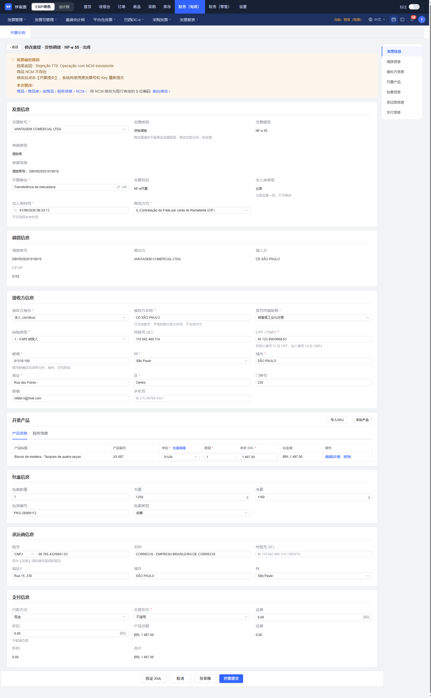
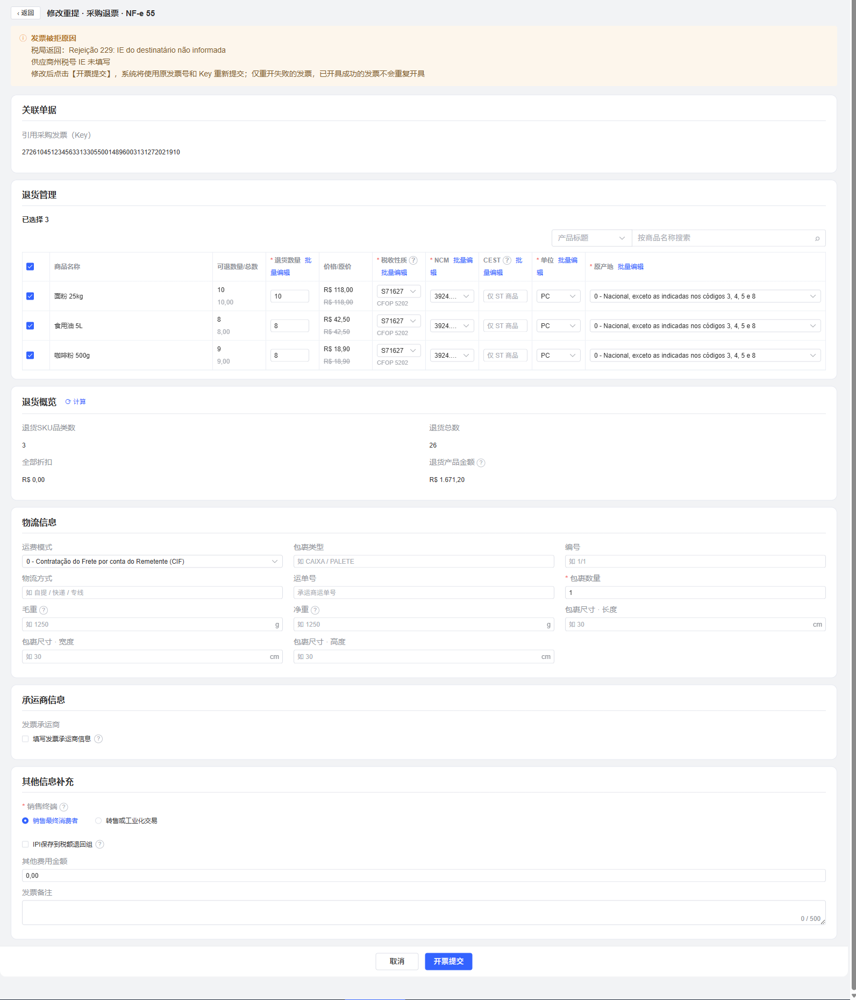
| 字段名称 | 类型 | 是否必填/必选 | 默认值 | 约束规则 |
|---|---|---|---|---|
| 发票信息 | ||||
| 发票账号 | 下拉框 | 是 | 请选择 | 从本系统已建的发票主体中选择（电商从电商的发票主体中选择，零售从零售的发票主体中选择）。【关联调拨单】弹窗只列出调出方属于所选发票账号的调拨单；发票类型为采购退票时，未选发票账号就点【关联】›【采购发票】，提示：“请先选择发票账号。”。 |
| 发票类型 | 下拉框 | 是 | 请选择 | 选项：销售发票、货物转移、货物调拨、进口采购、采购退票；切换发票类型后，页面按所选发票类型显示对应字段。选采购退票时，页面板块按本表【采购退票】部分显示，不显示包裹信息、本表的承运商信息、开票产品、进口申报单。 |
| 开票事由 | 输入框 | 是 | 请输入开票事由 | 2～60 个字符，不支持中文；右下角显示字数 0 / 60。发票类型为采购退票时，预填“Devolução de compra”，可以修改。 |
| 发票目的 | 下拉框 | 是 | NF-e开票 | 1、发票类型为进口采购的，锁定为“NF-e开票”，不能修改；2、发票类型为销售发票、货物转移、货物调拨的，可选 NF-e开票、补充发票、调整发票、退货发票，电商和零售相同；3、发票类型为采购退票时，固定为“退货发票”，只读。 |
| 出入库类型 | 下拉框 | 是 | 出库（发票类型为进口采购时为入库） | 置灰不能改，由发票类型决定。发票类型为采购退票时，固定为“出库”。 |
| 出入库时间 | 日期时间框 | 是 | 当前时间 | 格式 DD/MM/YYYY HH:mm:ss；不能选择未来时间。发票类型为采购退票时相同，可以修改。 |
| 物流方式 | 下拉框 | 是 | 请选择 | 6 个选项 0 / 1 / 2 / 3 / 4 / 9。1、选 9 - Sem Ocorrência de Transporte 时，不显示包裹信息和承运商信息；2、发票类型为采购退票时，不显示这个字段（采购退票的物流内容在【物流信息】板块填写）。 |
| 接收方信息（销售发票、货物转移、货物调拨） | ||||
| 接收方身份 | 下拉框 | 是 | 自然人 (Física) | 选项：自然人 (Física)、法人 (Jurídica) |
| 接收方名称 | 输入框 | 是 | 请输入接收方名称 | 只支持数字、字母和部分英文符号，不支持中文。最多 60 个字符。 |
| 是否终端销售 | 下拉框 | 是 | 请选择 | 选项：销售最终消费者、转售或工业化交易。 |
| CPF / CNPJ | 输入框 | 是 | 000.000.000-00 或 00.000.000/0000-00 | 自然人填 11 位 CPF，法人填 14 位 CNPJ，校验位必须正确。 |
| 纳税类型 | 下拉框 | 是 | 9 - 非纳税人，可能有登记IE | 选项：1 - ICMS 纳税人、2 - 免于在 ICMS 登记的纳税人、9 - 非纳税人，可能有登记IE。 |
| 州税号 (IE) | 输入框 | 否 | 如 110.042.490.114 / ISENTO | 填 ISENTO 或以数字开头的 2～18 位（可含 . - /）；纳税类型选 1 时必须填写，否则税局退回 210 |
| 邮编 | 输入框 | 是 | 00000-000 | 8 位数字，格式 00000-000；填写后自动带出州、城市、区、地址。 |
| 州 | 下拉框 | 是 | 请选择 | 巴西 27 个州 |
| 城市 | 输入框 | 是 | 请输入 | 必须与邮编、州对应；2～60 个字符。 |
| 区 | 输入框 | 是 | 请输入 | 必须与邮编对应 |
| 门牌号 | 输入框 | 否 | 请输入 | 最多 60 个字符。 |
| 地址 | 输入框 | 是 | 请输入 | 无 |
| 邮箱 | 输入框 | 否 | 如 nome@empresa.com | 邮箱格式 |
| 手机号 | 输入框 | 否 | 如 (11) 98765-4321 | 巴西手机号格式（区号） 9XXXX-XXXX |
| 开票产品 › 产品信息 | ||||
| 产品标题 | 表格内输入框 | 是 | 带入商品标题 | 1～120 个字符 |
| 产品编号 | 只读 | 否 | 带入 SKU | 不能编辑 |
| 单位 | 表格内下拉框 | 是 | UN | 选项 UN、KG、PAR、KIT、CX 等巴西计量单位；可以批量填写。 |
| 数量 | 表格内输入框 | 是 | 空 | 必须大于 0；最多 4 位小数。 |
| 单价 BRL | 表格内输入框 | 是 | 0,00 | 必须大于 0；最多 2 位小数；关联调拨单时取结存成本。 |
| 总金额 | 只读 | 否 | BRL 0,00 | = 数量 × 单价 BRL |
| 开票产品 › 税务信息和编辑详情 | ||||
| 税种编号 | 表格内下拉框 | 是 | 请选择 | 选项 407300 / 598861 / 407301 / 407302 / 407303（税种管理里的税种）；可以批量填写。 |
| NCM | 表格内输入框 | 是 | 8 位数字 | 8 位数字；支持 AI 推荐和 NCM 查询表；可以批量填写。 |
| CEST | 表格内输入框 | 否 | 选填 | 7 位数字（如 03.007.00）；可以批量填写。 |
| 原产地 | 表格内下拉框 | 是 | 0_Nacional, exceto as indicadas nos códigos 3, 4, 5 e 8 | 0～8 共 9 个原产地代码；可以批量填写。 |
| 包裹信息 | ||||
| 包裹数量 | 输入框 | 否 | 1 | 整数 |
| 毛重 | 输入框 | 否 | 请输入 | 单位 g；最多 3 位小数。 |
| 净重 | 输入框 | 否 | 请输入 | 单位 g；最多 3 位小数。 |
| 包装编号 | 输入框 | 否 | 请输入 | 最多 60 个字符。 |
| 包裹类型 | 下拉框 | 否 | 请选择 | 选项 Outros(s)、Volume(s)、Unidade(s)、Caixa(s)、Pacote(s)、Envelope(s)、Pallet(s)、Saco(s) |
| 承运商信息 | ||||
| ? 帮助（板块标题旁） | 图标 | 否 | 无 | 鼠标悬停显示：“承运商信息会写入发票（NF-e 的运输信息）。由物流公司或第三方承运商负责运输时填写；自提或使用自有车辆运输时无需填写。税号和名称须同时填写或同时留空，其余选填。”。5 种发票类型的承运商信息字段、顺序和占位相同。 |
| 税号 | 带下拉的输入框 | 否 | CPF；000.000.000-00 | 左侧下拉框选择 CPF 或 CNPJ；CPF 11 位、CNPJ 14 位；须与【名称】同时填写或同时不填。 |
| 名称 | 输入框 | 否 | 请输入 | 须与【税号】同时填写或同时不填；最多 60 个字符。 |
| 州税号 (IE) | 输入框 | 否 | 如 110.042.490.114 / ISENTO | 填 ISENTO 或以数字开头的 2～18 位 |
| 地址1 | 输入框 | 否 | 选填 | 最多 60 个字符。 |
| 城市 | 输入框 | 否 | 选填 | 最多 60 个字符。 |
| 州 | 下拉框 | 否 | 请选择 | 巴西 27 个州 |
| 支付信息 | ||||
| 付款方式 | 下拉框 | 否 | 现金 | 选项：现金、支票、信用卡、借记卡、PIX、银行转账、Mercado Pago、其它 |
| 交易形式 | 下拉框 | 是 | 请选择（进口采购为不适用） | 选项：不适用、线下交易、网络交易、电话交易、其它非线下交易 |
| 运费 | 输入框 | 否 | 0,00 | 单位 BRL；≥ 0；最多 2 位小数。 |
| 折扣 | 输入框 | 否 | 0,00 | 单位 BRL；不能填负数；最多 2 位小数。 |
| 产品总额、运费、折扣、合计 | 只读 | 否 | BRL 0,00 | 按开票产品、运费、折扣自动汇总 |
| 【关联】下拉 | ||||
| 关联 | 下拉按钮 | 否 | 无 | 原【引用】改名为【关联】，在页面底部，下拉共四项：电商订单、批发订单、调拨单、采购发票。1、发票类型为销售发票时，显示【电商订单】【批发订单】【调拨单】；2、发票类型为货物转移、货物调拨时，只显示【调拨单】；3、发票类型为采购退票时，只显示【采购发票】；4、发票类型为进口采购时，不显示【关联】。5、关联订单开具的发票一律为 NF-e 55。 |
| 关联调拨单弹窗 › 查询条件 | ||||
| 调拨单号 | 输入框 | 否 | 空 | 无 |
| 开票类型 | 下拉框 | 否 | 空 | 选项：销售发票、货物转移、货物调拨 |
| 调出方 | 下拉框 | 否 | 空 | 选项为调拨单的调出门店或仓库 |
| 调入方 | 下拉框 | 否 | 空 | 选项为调拨单的调入门店或仓库 |
| 创建时间 | 日期框 | 否 | 空 | 开始时间不能晚于结束时间 |
| 关联调拨单弹窗 › 列表 | ||||
| 调拨单列表 | 只读表格 | 否 | 回显 | 列：调拨单号、调出仓、调入仓、商品、开票类型、开票状态、创建时间。只列出调出方属于当前发票账号、开票类型与当前发票类型一致、开票状态为“未开票”的调拨单；每行前为单选按钮，一次只能选一张。 |
| 关联电商订单弹窗 › 列表 | ||||
| 电商订单列表 | 只读表格 | 否 | 回显 | 列：订单号、订单类型、发票接收方、CPF/CNPJ、金额、下单时间、开票状态。只列出已付款、未取消、开票状态为“未开票”的电商订单。 |
| 关联批发订单弹窗 › 查询条件 | ||||
| 订单号 | 输入框 | 否 | 空 | 无 |
| 关联批发订单弹窗 › 列表 | ||||
| 批发订单列表 | 只读表格 | 否 | 回显 | 列：订单号、订单类型、发票接收方、CPF/CNPJ、金额、下单时间、开票状态。只列出状态为“待开票”“待出库”“已发货”、开票状态为“待开票”的批发订单；收银订单、门店预订单、换货订单不出现。 |
• 前置条件：
1、用户已登录系统，具备 财务（电商）› 发票管理 或 财务（零售）› 发票管理
的菜单权限。
2、系统里已经建好发票主体（【发票账号】下拉里有可选项）。
3、税种管理里已经有税种（【税种编号】下拉里有可选项）。
• 操作流程：
1、用户进入 发票管理 ›
草稿中，点筛选区右侧的【创建发票】，系统打开整页【创建手工发票】。
2、用户选择【发票账号】【发票类型】，系统按发票类型显示或隐藏对应的字段和板块。
3、用户可以点底部的【关联】›【电商订单】【批发订单】或【调拨单】，在弹窗里搜索并选中一行，点【关联】，系统把产品和接收方带入。关联调拨单时，提示：“已关联该调拨单，接收方、商品与
CFOP
已带出”。没有选中就点【关联】时，提示：“请先选择调拨单”。用户点弹窗里的【取消】，系统不执行任何操作。关联调拨单时，系统带出接收方、商品、数量、金额和
CFOP（货物转移、货物调拨为 5152 或 6152，销售发票为 5102 或
6102），单价取结存成本。关联电商订单或批发订单时，系统带出接收方身份（CPF
为自然人，CNPJ 为法人）、接收方名称、CPF /
CNPJ，以及订单的产品（产品标题、产品编号、单位、数量、单价，CFOP 默认为
5102），提示：“已关联该订单，产品与接收方信息已带入”。没有选中就点【关联】时，提示：“请先选择订单”。接收方地址、州税号、NCM、税种编号不带出，需要用户填写；目的州与开票主体不在同一州时，用户须将
CFOP 改为 6102。
4、用户填写发票信息、接收方信息（进口采购另外填写进口申报单）。
5、用户点【添加产品】，勾选商品后点【添加】；或点【导入SKU】，上传文件后点【导入】。产品同时进入【产品信息】【税务信息】两个页签。用户填写数量、单价，补充税种编号、NCM、CEST、原产地（可以点行上的【编辑详情】，在弹窗里填写后点【保存详情】）。用户点【移除】，系统删除这一行。
6、用户填写包裹信息、承运商信息、支付信息，系统自动汇总
产品总额、运费、折扣、合计。
7、用户点【保存】：1、必填项都已填写时，系统生成草稿，回到“草稿中”列表，列表多一行；2、有未填的必填项时，字段下面红字提示，并提示：“有内容未填或填写不正确，已标红，请修改后再试”。系统不保存。
8、用户点【开票】：系统弹出【开票前检查】。1、用户点【确认开票】，系统提交税局，发票进入【开票中】，提示：“已重新提交税局，该发票已移至【开票中】；对应的原单据同步变为“开票中”。”。2、用户点【仍然保存为草稿】，系统把它存为草稿。
9、用户点【取消】，系统不保存，关闭整页，回到“草稿中”列表。
• 后置条件：
1、保存成功后，【草稿中】对应页签新增一张草稿（发票类型为销售发票、货物转移、货物调拨的在【出库】页签，发票类型为进口采购的在【入库】页签）。【单据信息】显示关联的单号（没有关联单据的显示【无关联单据】）和【手工开票】标签，创建时间为保存时间。
2、提交开票后，发票出现在【开票中】，发票号显示“–”，等待税局返回结果。
2.1、关联调拨单的发票提交后，调拨单的开票状态随发票变化：发票在开票中，调拨单为“开票中”；发票授权，调拨单为“已开票”；发票开票失败，调拨单为“开票失败”。发票取消后，调拨单回到“未开票”，可以再被关联。
3、操作成功后，系统记录操作日志。
• 校验规则：
1、当用户点【保存】或【开票】时，若有必填字段未填写或未选择，则字段下面红字提示，并提示：“有内容未填或填写不正确，已标红，请修改后再试”。系统不保存。
1.1、一张调拨单只能被一张发票关联。已被其他发票关联、开票状态不是“未开票”的调拨单，不出现在【关联调拨单】弹窗中。电商、零售共用同一批调拨单；开关【调拨单出库前是否开票】开启时，调拨管理和草稿中两处都能对未开票的调拨单开票。
2、当用户输入【开票事由】时，若少于 2 个字符、超过 60
个字符或含中文，则在字段下面红字提示，系统不保存。
3、当用户输入“CPF / CNPJ”时，若位数不是 11 位或 14
位，或校验位不正确，则在字段下面红字提示，系统不保存。
4、当用户输入【邮编】时，若不是 8
位数字，则在字段下面红字提示，系统不保存。
5、当用户输入【州税号
(IE)】【邮箱】【手机号】时，若格式不正确，则在字段下面红字提示，系统不保存。
6、当开票产品为空，用户点【保存】或【开票】时，开票产品下面红字提示：“请添加开票产品”。系统同时提示：“有内容未填或填写不正确，已标红，请修改后再试”。系统不保存。
7、当用户输入【数量】【单价 BRL】时，若不大于
0，则在字段下面红字提示，系统不保存。【数量】超过 4 位小数、【单价 BRL】超过 2
位小数时，也在字段下面红字提示，系统不保存。
8、当用户输入【NCM】时，若不是 8
位数字，则在字段下面红字提示；【CEST】填写了但不是 7
位数字时，在字段下面红字提示，系统不保存。
9、当用户输入【运费】【折扣】【海关费用】【加项折扣金额】时，若为负数或超过
2 位小数，则在字段下面红字提示，系统不保存。
10、当承运商的【税号】【名称】只填了其中一个时，只填名称的，在【税号】下面提示：“请输入税号”。只填税号的，在【名称】下面提示：“请输入名称”。系统不保存。
11、当用户选择【出入库时间】时，不能选择未来时间。
12、当用户在【添加商品】弹窗里没有勾选任何商品就点【添加】时，提示：“请先勾选商品”。勾选的商品已经在列表里时，提示：“所选商品已在列表中”。系统不重复添加。
13、当用户点【开票】时，系统按 A1 证书、发票号段、出入库时间、接收方
CPF/CNPJ、接收方
IE、接收方名称、产品行、NCM、原产地、CFOP、中介标识、承运商 12
项做开票前检查，并在弹窗里显示每一项的结果和【未通过的后果】。有不通过的项时，弹窗下方提示：“有
1
项未通过。请修正后点击【确认开票】，或点击【仍然保存为草稿】。”。
14、当用户输入的内容超过字段的字数上限时，系统不截断，在字段下面红字提示，如“城市最多
60 个字符”。【城市】少于 2 个字符时，提示：“城市至少 2
个字符”。系统不保存。
• 提示消息：
在当前页面的字段下面红色字体提示：
| 字段名称 | 未填写/未选择提示 | 输入错误提示 |
|---|---|---|
| 发票账号 | 请选择发票账号 | - |
| 发票类型 | 请选择发票类型 | - |
| 开票事由 | 请输入开票事由 | 开票事由至少 2 个字符；开票事由最多 60 个字符；开票事由格式不正确 |
| 发票目的 | 请选择发票目的 | - |
| 出入库时间 | 请选择出入库时间 | 出入库时间格式不正确 |
| 物流方式 | 请选择物流方式 | - |
| 接收方身份 | 请选择接收方身份 | - |
| 接收方名称 | 请输入接收方名称 | 接收方名称不能包含特殊字符；接收方名称最多 60 个字符 |
| 是否终端销售 | 请选择是否终端销售 | - |
| CPF / CNPJ | 请输入CPF / CNPJ | CPF / CNPJ格式不正确 |
| 纳税类型 | 请选择纳税类型 | - |
| 州税号 (IE) | - | 州税号 (IE)格式不正确 |
| 邮编 | 请输入邮编 | 邮编应为 8 位数字 |
| 州 | 请选择州 | - |
| 城市 | 请输入城市 | 城市至少 2 个字符；城市最多 60 个字符 |
| 区 | 请输入区 | 区至少 2 个字符；区最多 60 个字符 |
| 门牌号 | - | 门牌号最多 60 个字符 |
| 地址 | 请输入地址 | 地址至少 2 个字符；地址最多 60 个字符 |
| 邮箱 | - | 邮箱格式不正确 |
| 手机号 | - | 手机号格式不正确 |
| 产品标题 | 请输入产品标题 | 产品标题最多 120 个字符 |
| 单位 | 请选择单位 | - |
| 数量 | 请输入数量 | 数量须大于 0；数量最多 4 位小数 |
| 单价 BRL | 请输入单价 BRL | 单价 BRL须大于 0；单价 BRL最多 2 位小数 |
| 税种编号 | 请选择税种编号 | - |
| NCM | 请输入NCM | NCM应为 8 位数字 |
| CEST | - | CEST应为 7 位数字 |
| 原产地 | 请选择原产地 | - |
| 包裹数量 | - | 包裹数量须为整数 |
| 毛重 | - | 毛重最多 3 位小数 |
| 净重 | - | 净重最多 3 位小数 |
| 包装编号 | - | 包装编号最多 60 个字符 |
| 包裹类型 | - | - |
| 税号（承运商） | 请输入税号（只填了名称时） | 税号格式不正确 |
| 名称（承运商） | 请输入名称（只填了税号时） | 名称最多 60 个字符 |
| 州税号 (IE)（承运商） | - | 州税号 (IE)格式不正确 |
| 地址1（承运商） | - | 地址1最多 60 个字符 |
| 城市（承运商） | - | 城市最多 60 个字符 |
| 交易形式 | 请选择交易形式 | - |
| 运费 | - | 运费不能为负数；运费最多 2 位小数 |
| 折扣 | - | 折扣不能为负数；折扣最多 2 位小数 |
• 消息通知：无。
•
操作日志：用户操作成功后，系统在操作日志模块记录：操作时间、操作账号、操作模块、操作功能、操作明细、IP地址。
| 字段 | 字段说明 | 规则/示例 |
|---|---|---|
| 操作时间 | 操作发生时间 | 精确到：年月日时分秒，格式：DD/MM/YYYY HH:mm:ss |
| 操作账号 | 登录系统的账号名称 | 例如：ana@tfretail.com.br |
| 操作模块 | 具体菜单名称 | 例如：财务（零售）-发票管理-草稿中 |
| 操作功能 | 本次操作触发的功能动作名称 | 例如：创建发票 |
| 操作明细 | 本次操作的详细信息 | 例如：创建手工发票草稿：发票账号 TF RETAIL BRASIL LTDA · LOJA PAULISTA，发票类型 销售发票，发票模型 NF-e 55；创建采购退票：关联采购发票 001 / 000000628，退货 10 件，R$ 184,08 |
| IP地址 | 操作终端 IP | 例如：189.45.12.8 |
1、发票类型为货物转移的发票是出库发票，发票模型只有 NF-e 55。
2、同一家公司（CNPJ 前 8 位相同）不同发票主体之间调拨，调出方或调入方有一方是门店的，开货物转移，不确认收入，CFOP 州内 5152、跨州 6152，不征 ICMS。
3、点【关联】›【调拨单】时，弹窗只列出调出方属于所选发票账号、开票类型为“货物转移”、开票状态为“未开票”的调拨单；带出的商品单价取结存成本（移动加权平均），金额等于单价乘以数量。一张调拨单只能被一张发票关联。
4、其余约束请参考 5.3.1.5.1.1.1 的目录。
请参考 5.3.1.5.1.1.2 的目录。货物转移的发票模型为 NF-e 55，产品行的 CFOP 为 5152 或 6152。
flowchart TB
S(("开始")) --> A["发票管理 › 草稿中 点【创建发票】"]
A --> B["选择发票账号，发票类型选“货物转移”"]
B --> C["可点【关联】›【调拨单】，带入接收方、商品、数量、金额和 CFOP（5152 或 6152），单价取结存成本"]
C --> D["填写发票信息、接收方信息，核对产品"]
D --> E["填写包裹信息、承运商信息、支付信息"]
E --> F{"点【保存】还是【开票】"}
F -->|"保存"| G{"必填项都已填写？"}
G -->|"否"| G1["字段下面红字提示，并提示：有内容未填或填写不正确，已标红，请修改后再试；系统不保存"]
G1 --> D
G -->|"是"| G2["生成草稿，回到草稿中列表"]
G2 --> Z(("结束"))
F -->|"开票"| H["弹出【开票前检查】"]
H -->|"仍然保存为草稿"| G2
H -->|"确认开票"| I["提交税局，发票进入【开票中】"]
subgraph sg2["税局（SEFAZ）"]
I --> J{"税局返回结果"}
end
J -->|"授权"| K["发票进入【已开票-近期发票】"]
J -->|"拒绝、拒绝使用或超时"| M["发票进入【开票失败】，显示失败原因"]
K --> Z
M --> Z
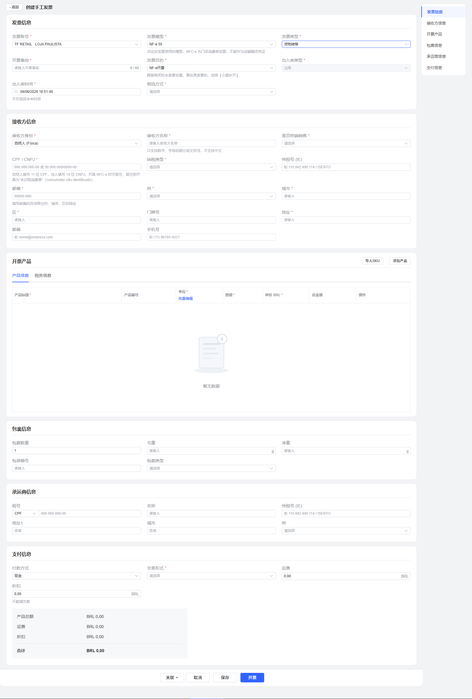
字段与销售发票相同，请参考 5.3.1.5.1.1.5 的目录。不同之处：发票模型只能为 NF-e 55；【关联调拨单】弹窗只列出开票类型为“货物转移”的调拨单；关联调拨单时单价取结存成本。
请参考 5.3.1.5.1.1.6 的目录。不同之处：关联调拨单时，系统带出接收方、商品、数量、金额和 CFOP（5152 或 6152），单价取结存成本；保存成功后，草稿在【草稿中】的【出库】页签。
1、发票类型为货物调拨的发票是出库发票，发票模型只有 NF-e 55。
2、同一家公司（CNPJ 前 8 位相同）不同发票主体之间调拨，从仓库调到仓库的，开货物调拨，不确认收入，CFOP 州内 5152、跨州 6152，不征 ICMS。
3、点【关联】›【调拨单】时，弹窗只列出调出方属于所选发票账号、开票类型为“货物调拨”、开票状态为“未开票”的调拨单；带出的商品单价取结存成本（移动加权平均），金额等于单价乘以数量。一张调拨单只能被一张发票关联。
4、其余约束请参考 5.3.1.5.1.1.1 的目录。
请参考 5.3.1.5.1.1.2 的目录。货物调拨的发票模型为 NF-e 55，产品行的 CFOP 为 5152 或 6152。
flowchart TB
S(("开始")) --> A["发票管理 › 草稿中 点【创建发票】"]
A --> B["选择发票账号，发票类型选“货物调拨”"]
B --> C["可点【关联】›【调拨单】，带入接收方、商品、数量、金额和 CFOP（5152 或 6152），单价取结存成本"]
C --> D["填写发票信息、接收方信息，核对产品"]
D --> E["填写包裹信息、承运商信息、支付信息"]
E --> F{"点【保存】还是【开票】"}
F -->|"保存"| G{"必填项都已填写？"}
G -->|"否"| G1["字段下面红字提示，并提示：有内容未填或填写不正确，已标红，请修改后再试；系统不保存"]
G1 --> D
G -->|"是"| G2["生成草稿，回到草稿中列表"]
G2 --> Z(("结束"))
F -->|"开票"| H["弹出【开票前检查】"]
H -->|"仍然保存为草稿"| G2
H -->|"确认开票"| I["提交税局，发票进入【开票中】"]
subgraph sg2["税局（SEFAZ）"]
I --> J{"税局返回结果"}
end
J -->|"授权"| K["发票进入【已开票-近期发票】"]
J -->|"拒绝、拒绝使用或超时"| M["发票进入【开票失败】，显示失败原因"]
K --> Z
M --> Z

字段与销售发票相同，请参考 5.3.1.5.1.1.5 的目录。不同之处：发票模型只能为 NF-e 55；【关联调拨单】弹窗只列出开票类型为“货物调拨”的调拨单；关联调拨单时单价取结存成本。
请参考 5.3.1.5.1.1.6 的目录。不同之处：关联调拨单时，系统带出接收方、商品、数量、金额和 CFOP（5152 或 6152），单价取结存成本；保存成功后，草稿在【草稿中】的【出库】页签。
1、发票类型为采购退票的发票是出库发票，发票模型只有 NF-e 55，用于把货物退给供应商。
2、一张采购退票只关联一张采购发票（只列出【已导入】的采购发票），不关联采购退货单；退货商品跨几张采购发票，就分别开几张。退货数量不能超过可退数量（可退数量等于总数减去已开退票数量）。
3、采购退票不能保存草稿，页面底部只有【关联】【取消】【开票】；提交后不出现在【草稿中】，进入【开票中】的【出库】页签。
4、其余约束请参考 5.3.1.5.1.1.1 的目录。
请参考 5.3.1.5.1.1.2 的目录。采购退票一律为 NF-e 55，finNFe = 4（发票用途：退货），CFOP 按税收性质带出，refNFe（引用的原发票）为所关联采购发票的 Key。
flowchart TB
S(("开始")) --> A["发票管理 › 草稿中 点【创建发票】"]
A --> B["选择发票账号，发票类型选“采购退票”"]
B --> C["点【关联】›【采购发票】，选中一张采购发票后点【关联】"]
C --> D{"可退数量大于 0，且采购发票未被取消、未被否决？"}
D -->|"否"| D1["不带入，提示不能再开退票"]
D1 --> Z(("结束"))
D -->|"是"| E["带出采购发票 Key、接收方信息（供应商）和原票商品"]
E --> F["填写退货管理、物流信息、承运商信息、其他信息补充"]
F --> G["点【开票】，在确认弹窗里点【开票】"]
G --> I["提交税局，采购退票进入【开票中】的【出库】页签"]
subgraph sg2["税局（SEFAZ）"]
I --> J{"税局返回结果"}
end
J -->|"授权"| K["进入【已开票-近期发票】"]
J -->|"拒绝、拒绝使用或超时"| M["进入【开票失败】，显示失败原因"]
K --> Z
M --> Z
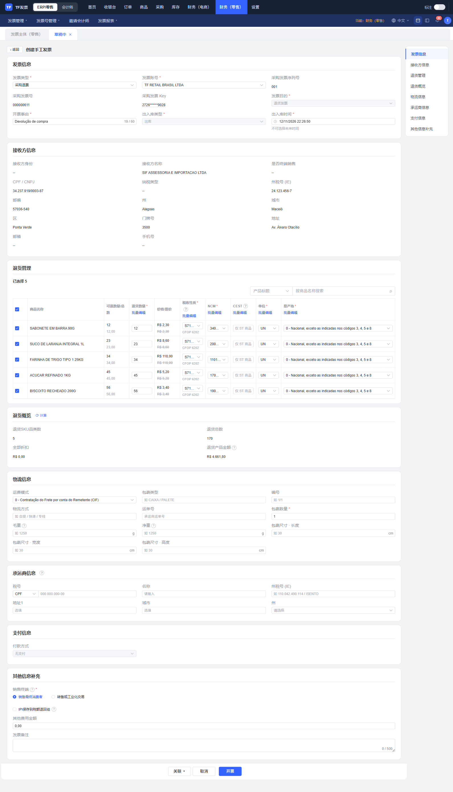

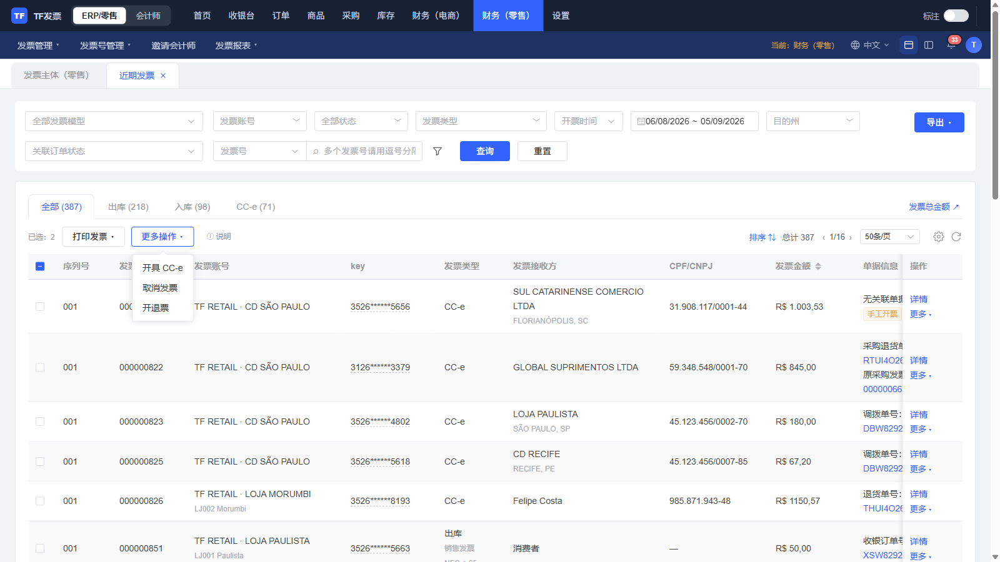
【发票信息】中与销售发票相同的字段（发票账号、发票类型、开票事由、发票目的、出入库类型、出入库时间）请参考 5.3.1.5.1.1.5 的目录，采购退票的取值见该表各行的说明。采购退票的其他板块和【关联采购发票】弹窗如下：
| 字段名称 | 类型 | 是否必填/必选 | 默认值 | 约束规则 |
|---|---|---|---|---|
| 采购退票 › 发票信息（发票类型选“采购退票”时显示；板块顺序：发票信息、接收方信息、退货管理、退货概览、物流信息、承运商信息、支付信息、其他信息补充） | ||||
| 发票信息字段顺序 | 说明 | 否 | 无 | 依次为：发票类型、发票账号、采购发票序列号、采购发票号、采购发票 Key、发票目的、开票事由、出入库类型、出入库时间。各字段的规则见本表【发票信息】部分和下面三行。 |
| 采购发票序列号 | 只读 | 否 | 未关联时显示“–” | 关联采购发票后带出所关联采购发票的序列号，不能修改。 |
| 采购发票号 | 只读 | 否 | 未关联时显示“–” | 关联采购发票后带出所关联采购发票的发票号，不能修改。 |
| 采购发票 Key | 只读 | 否 | 未关联时显示“–” | 关联采购发票后带出所关联采购发票的 Key，中间打码显示；鼠标悬停显示完整的 44 位 Key，并可复制完整 Key；不能修改。 |
| 采购退票 › 接收方信息 | ||||
| 接收方信息 | 只读 | 否 | 关联采购发票后带出；未关联时显示“–” | 由所关联的采购发票带出供应商作为接收方，全部只读，不能修改。字段为：接收方身份、接收方名称、是否终端销售、CPF / CNPJ、纳税类型、州税号 (IE)、邮编、州、城市、区、门牌号、地址、邮箱、手机号。放在【发票信息】之后、【退货管理】之前。 |
| 采购退票 › 退货管理 | ||||
| 商品名称 | 只读 | 否 | 关联采购发票后带出原票商品 | 每行一个原票商品，行首有勾选框；可以按商品名称或 NCM 搜索。 |
| 可退数量/总数 | 只读 | 否 | 回显 | 可退数量 = 总数 − 已开退票数量。 |
| 价格/原价 | 只读 | 否 | 回显 | 取自原采购发票。 |
| 退货数量 | 数字输入框 | 是 | 回显 | 大于 0 的整数；不能超过可退数量；可以批量填写。 |
| 税收性质 | 下拉单选 | 是 | 回显 | 选项：S71627、S71628、S71630、S71631、S71649。选择后系统自动带出 CFOP：S71627 带出 5202（州内退货）；S71628 带出 6202（跨州退货）；S71630 带出 5201；S71631 带出 6201；S71649 带出 5949（非退货性质出库）。可以批量填写。 |
| NCM | 下拉单选 | 是 | 回显 | 8 位数字；可以批量填写。 |
| CEST | 文本输入框 | 否 | 仅 ST 商品 | 7 位数字；只有属于替代纳税清单的商品需要填写；可以批量填写。 |
| 单位 | 下拉单选 | 是 | 回显 | 可以批量填写。 |
| 原产地 | 下拉单选 | 是 | 回显 | 0～8 共 9 个原产地代码；可以批量填写。 |
| 采购退票 › 退货概览 | ||||
| 退货SKU品类数 | 只读 | 否 | 0 | 退货数量大于 0 的商品种类数。 |
| 退货总数 | 只读 | 否 | 0 | 各行退货数量之和。 |
| 全部折扣 | 只读金额 | 否 | R$ 0,00 | 按原采购发票的折扣带出。 |
| 退货产品金额 | 只读金额 | 否 | R$ 0,00 | 等于各行退货数量乘以价格之和，不含运费和其他费用。点板块标题旁的【计算】重新汇总。 |
| 采购退票 › 物流信息 | ||||
| 运费模式 | 下拉单选 | 否 | 0 - Contratação do Frete por conta do Remetente (CIF) | 选项：0、1、2、3、4、9 |
| 包裹类型 | 输入框 | 否 | 如 CAIXA / PALETE | 最多 60 个字符。 |
| 编号 | 输入框 | 否 | 如 1/1 | 最多 60 个字符。 |
| 物流方式 | 输入框 | 否 | 请输入物流方式，如自提/快递/专线 | 最多 60 个字符。 |
| 运单号 | 输入框 | 否 | 承运商运单号 | 最多 60 个字符。 |
| 包裹数量 | 数字输入框 | 条件必填 | 1 | 运费模式不是 9 时必填；整数，至少 1。 |
| 毛重 | 数字输入框 | 否 | 如 1250 | 含包装的总重量；单位 g；大于 0，最多 3 位小数。 |
| 净重 | 数字输入框 | 否 | 如 1250 | 不含包装的商品重量；单位 g；大于 0，最多 3 位小数。 |
| 包裹尺寸 · 长度、宽度、高度 | 数字输入框 | 否 | 如 30 | 三个字段；单位 cm；大于 0，最多 2 位小数。 |
| 采购退票 › 承运商信息 | ||||
| ? 帮助（板块标题旁） | 图标 | 否 | 无 | 鼠标悬停显示：“承运商信息会写入发票（NF-e 的运输信息）。由物流公司或第三方承运商负责运输时填写；自提或使用自有车辆运输时无需填写。税号和名称须同时填写或同时留空，其余选填。”。 |
| 税号 | 带下拉的输入框 | 否 | CPF；000.000.000-00（选 CNPJ 时为 00.000.000/0000-00） | 左侧下拉框选择 CPF 或 CNPJ；CPF 11 位、CNPJ 14 位；须与【名称】同时填写或同时不填。 |
| 名称 | 输入框 | 否 | 请输入 | 须与【税号】同时填写或同时不填；最多 60 个字符。 |
| 州税号 (IE)（承运商） | 输入框 | 否 | 如 110.042.490.114 / ISENTO | 填 ISENTO 或以数字开头的 2～18 位。 |
| 地址1（承运商） | 输入框 | 否 | 选填 | 最多 60 个字符。 |
| 城市（承运商） | 输入框 | 否 | 选填 | 最多 60 个字符。 |
| 州（承运商） | 下拉框 | 否 | 请选择 | 巴西 27 个州。 |
| 采购退票 › 支付信息 | ||||
| 付款方式 | 只读 | 否 | 无支付 | 固定为“无支付”，不能修改。放在【承运商信息】之后、【其他信息补充】之前。 |
| 采购退票 › 其他信息补充 | ||||
| 销售终端 | 单选 | 是 | 销售最终消费者 | 选项：销售最终消费者、转售或工业化交易 |
| IPI保存到税额退回组 | 复选框 | 否 | 不勾选 | 非 IPI 纳税人的，勾选。 |
| IPI商品备注 | 文本域 | 否 | 请输入 | 勾选【IPI保存到税额退回组】后显示；5～500 个字符；可以使用变量 [IPI-DEVOLVED]（含方括号）作为退回 IPI 金额的说明。 |
| 其他费用金额 | 金额输入框 | 否 | 0,00 | 不能为负数；最多 2 位小数。 |
| 发票备注 | 文本域 | 否 | 选填，将原样打印在发票补充信息中 | 最多 500 个字符。 |
| 关联采购发票弹窗 › 查询条件 | ||||
| 发票号 | 组合搜索 | 否 | 批量搜索请用逗号,分隔 | 可选发票号、序列号或 Key；多个用逗号隔开。 |
| 时间 | 组合日期 | 否 | 空 | 可选开票时间或导入时间；开始时间不能晚于结束时间。 |
| 发票账号 | 下拉多选 | 否 | 全部发票账号 | 无 |
| 供应商 | 下拉多选 | 否 | 全部供应商 | 无 |
| 关联采购发票弹窗 › 列表 | ||||
| 采购发票列表 | 只读表格 | 否 | 回显 | 列：序列号、发票号、Key、商品信息、供应商、采购单、发票账号、原票计税金额、时间。每行前为单选按钮，只能选一张。只列出所选发票账号下【已导入】的采购发票，可以按发票账号、供应商筛选；没有符合条件的采购发票时，列表显示“暂无数据”。 |
• 前置条件：请参考 5.3.1.5.1.1.6
的目录。另外，所选发票账号下有【已导入】、可退数量大于 0
的采购发票。
• 操作流程：
1、发票类型选“采购退票”时：用户先选【发票账号】，再点底部的【关联】›【采购发票】，在弹窗里筛选后选中一张采购发票，点【关联】，系统带出采购发票
Key、接收方信息（供应商）、原票商品和退货管理的回显数据，提示：“已关联采购发票
<序列号> / <发票号>，带出 N
个商品；接收方、采购发票序列号、发票号和 Key
已填入。”。没有选中就点【关联】时，提示：“请先勾选采购发票”。用户依次填写退货管理、物流信息、承运商信息、其他信息补充；退货概览按退货数量自动汇总，也可以点【计算】重新汇总。页面底部只有【关联】【取消】【开票】，没有【保存】。
2、发票类型选“采购退票”时，用户点【开票】，系统打开确认弹窗“确认对以下商品开具退货发票吗？”；用户点【开票】，系统提交税局，提示：“开票已提交税局，【发票管理（电商/零售）】›【开票中】›【出库】均已新增该发票。”。用户在确认弹窗点【取消】，系统关闭弹窗，不执行任何操作。
• 后置条件：
1、采购退票提交后，生成一张状态为“开票中”的采购退票，出现在发票管理（电商、零售）【开票中】的【出库】页签，单据信息显示原采购发票号；所关联采购发票的可退数量相应减少。采购退票不保存草稿，不出现在【草稿中】。
2、操作成功后，系统记录操作日志。
• 校验规则：
1、当发票类型为采购退票、用户未选【发票账号】就点【关联】›【采购发票】时，提示：“请先选择发票账号。”。系统不打开弹窗。
2、当用户选择的采购发票可退数量为 0
时，系统不带入，提示：“该采购发票的货物已全部退货（可退数量 = 总数 −
已开退票数量 =
0），不能再开退票。”。在税局已被取消的采购发票，提示：“该发票已在税局取消，不能再开退票。”。已被税局否决的采购发票，提示：“该发票已被税局否决，不能再开退票。”。
3、一张采购退票只能关联一张采购发票。退货商品来自多张采购发票的，分别开具。退货数量超过可退数量时，系统不提交，在字段下面提示：“退货数量须在
1~N 之间”（N 为这一行的可退数量）。
4、当用户未关联采购发票就点【开票】时，提示：“请选择采购发票，不关联采购发票，无法开采购退票。”。系统不提交。
5、当承运商的【税号】【名称】只填了其中一个时，只填名称的，在【税号】下面提示：“请输入税号”。只填税号的，在【名称】下面提示：“请输入名称”。系统不提交。
6、当用户输入的内容超过字段的字数上限时，系统不截断，在字段下面红字提示，如“运单号最多
60 个字符”。系统不提交。
• 提示消息：
在当前页面的字段下面红色字体提示：
| 字段名称 | 未填写/未选择提示 | 输入错误提示 |
|---|---|---|
| 退货数量（采购退票） | 请输入退货数量 | 退货数量须为整数；退货数量须大于 0；退货数量须在 1~N 之间（N 为可退数量） |
| 税收性质（采购退票） | 请选择税收性质 | - |
| NCM（采购退票） | 请选择NCM | NCM应为 8 位数字 |
| CEST（采购退票） | - | CEST应为 7 位数字 |
| 单位（采购退票） | 请选择单位 | - |
| 原产地（采购退票） | 请选择原产地 | - |
| 包裹数量（采购退票） | - | 包裹数量须为整数；包裹数量须大于 0 |
| 包裹类型（采购退票） | - | 包裹类型最多 60 个字符 |
| 编号（采购退票） | - | 编号最多 60 个字符 |
| 物流方式（采购退票） | - | 物流方式最多 60 个字符 |
| 运单号（采购退票） | - | 运单号最多 60 个字符 |
| 税号（采购退票承运商） | 请输入税号（只填了名称时） | 税号格式不正确 |
| 名称（采购退票承运商） | 请输入名称（只填了税号时） | 名称最多 60 个字符 |
| 地址1（采购退票承运商） | - | 地址1最多 60 个字符 |
| 城市（采购退票承运商） | - | 城市最多 60 个字符 |
| 销售终端（采购退票） | 请选择销售终端 | - |
| 其他费用金额（采购退票） | - | 其他费用金额不能为负数；其他费用金额最多 2 位小数 |
| 毛重（采购退票） | - | 毛重须大于 0；毛重最多 3 位小数 |
| 净重（采购退票） | - | 净重须大于 0；净重最多 3 位小数 |
| 包裹尺寸（采购退票） | - | 包裹尺寸须大于 0；包裹尺寸最多 2 位小数 |
| 州税号 (IE)（采购退票承运商） | - | 州税号 (IE)格式不正确 |
| IPI商品备注（采购退票） | - | IPI商品备注至少 5 个字符；IPI商品备注最多 500 个字符 |
| 发票备注（采购退票） | - | 发票备注最多 500 个字符 |
• 消息通知：无。
• 操作日志：请参考 5.3.1.5.1.1.6
的目录，操作明细如“创建采购退票：关联采购发票 001 / 000000628，退货 10
件，R$ 184,08”。
1、发票类型为进口采购的发票是入库发票，发票模型只有 NF-e 55，不显示【发票模型】；【发票目的】锁定为“NF-e开票”，【出入库类型】为“入库”，【交易形式】默认为“不适用”。页面底部不显示【关联】。
2、接收方填国外出口商，【接收方身份】默认为外国人（Estrangeiro），【证件号】填外国税号；需要另外填写【进口申报单】，产品行的【编辑详情】另外填写进口采购的字段。
3、保存成功后，草稿在【草稿中】的【入库】页签。其余约束请参考 5.3.1.5.1.1.1 的目录。
请参考 5.3.1.5.1.1.2 的目录。进口采购另需传输：进口申报单（DUIMP）编号、注册日期、清关地点、州、日期、国际运输方式、进口中介方式、海关费用；接收方传外国证件号。
flowchart TB
S(("开始")) --> A["发票管理 › 草稿中 点【创建发票】"]
A --> B["选择发票账号，发票类型选“进口采购”"]
B --> C["填写发票信息、接收方信息（国外出口商）"]
C --> D["填写进口申报单，添加产品并在【编辑详情】填写进口采购字段"]
D --> E["填写包裹信息、承运商信息、支付信息"]
E --> F{"点【保存】还是【开票】"}
F -->|"保存"| G{"必填项都已填写？"}
G -->|"否"| G1["字段下面红字提示，并提示：有内容未填或填写不正确，已标红，请修改后再试；系统不保存"]
G1 --> D
G -->|"是"| G2["生成草稿，回到草稿中列表"]
G2 --> Z(("结束"))
F -->|"开票"| H["弹出【开票前检查】"]
H -->|"仍然保存为草稿"| G2
H -->|"确认开票"| I["提交税局，发票进入【开票中】"]
subgraph sg2["税局（SEFAZ）"]
I --> J{"税局返回结果"}
end
J -->|"授权"| K["发票进入【已开票-近期发票】"]
J -->|"拒绝、拒绝使用或超时"| M["发票进入【开票失败】，显示失败原因"]
K --> Z
M --> Z

与销售发票相同的字段请参考 5.3.1.5.1.1.5 的目录，进口采购的取值见该表各行的说明。进口采购的接收方信息、进口申报单和产品行的编辑详情如下：
| 字段名称 | 类型 | 是否必填/必选 | 默认值 | 约束规则 |
|---|---|---|---|---|
| 接收方信息（进口采购） | ||||
| 接收方身份 | 下拉框 | 是 | 外国人(Estrangeiro) | 选项：自然人 (Física)、法人 (Jurídica)、外国人(Estrangeiro) |
| 接收方名称 | 输入框 | 是 | 请输入接收方名称 | 国外出口商名称；只支持数字、字母和部分英文符号，不支持中文；最多 60 个字符。 |
| 是否终端销售 | 下拉框 | 是 | 请选择 | 选项：销售最终消费者、转售或工业化交易 |
| 证件号 | 输入框 | 是 | 空 | 5～20 个字符（外国税号） |
| 国家 | 下拉框 | 是 | 请选择 | 全部国家 / 地区，可以输入文字筛选。 |
| 区 | 输入框 | 是 | 空 | 2～60 个字符；不支持中文。 |
| 门牌号 | 输入框 | 否 | 空 | 最多 60 个字符。 |
| 地址 | 输入框 | 是 | 空 | 2～60 个字符；不支持中文。 |
| 邮箱 | 输入框 | 否 | 如 nome@empresa.com | 邮箱格式 |
| 手机号 | 输入框 | 否 | 如 (11) 98765-4321 | 巴西手机号格式 |
| 进口申报单（仅进口采购） | ||||
| 申报单编号 | 输入框 | 是 | 请输入内容 | DUIMP 或 DI 申报单号；最多 60 个字符。 |
| 注册日期 | 日期框 | 是 | 请选择日期 | 格式 DD/MM/YYYY |
| 清关地点 | 输入框 | 是 | 请输入内容 | 最多 60 个字符。 |
| 清关州 | 下拉框 | 是 | 请选择 | 27 个州简称（AC～TO） |
| 清关日期 | 日期框 | 是 | 请选择日期 | 格式 DD/MM/YYYY |
| 国际运输方式 | 下拉框 | 是 | 请选择 | 选项：海运、河运、湖运、空运、邮政、铁路、公路 |
| AFRMM海运附加费 | 输入框 | 否 | 空 | 置灰不能填写，单位 BRL |
| 进口中介方式 | 下拉框 | 是 | 请选择 | 选项：自营进口、代理/委托进口、受托进口/代销进口 |
| 代理/委托进口CNPJ | 输入框 | 否 | 00.000.000/0000-00 | 14 位 CNPJ |
| 代理/委托进口所在州 | 下拉框 | 否 | 请选择 | 27 个州简称 |
| 出口商代码 | 输入框 | 是 | 请输入内容 | 最多 60 个字符。 |
| 海关费用 | 输入框 | 是 | 空 | 单位 BRL；≥ 0；最多 2 位小数。 |
| 开票产品 › 编辑详情（仅进口采购） | ||||
| 境外制造商代码 | 输入框 | 是 | 请输入内容 | 无 |
| Drawback | 输入框 | 否 | 请输入内容 | 无 |
| 加项编号 | 输入框 | 是 | 请输入内容 | 无 |
| 加项序号 | 输入框 | 是 | 请输入内容 | 无 |
| 加项折扣金额 | 输入框 | 否 | 请输入内容 | ≥ 0；最多 2 位小数。 |
| 商品税基 | 输入框 | 是 | 请输入内容 | 无 |
| 进口税率 | 输入框 | 是 | 0,00 | 单位 % |
| IOF税率 | 输入框 | 是 | 0,00 | 单位 % |
• 前置条件：请参考 5.3.1.5.1.1.6
的目录。
• 操作流程：请参考 5.3.1.5.1.1.6
的目录。用户另外填写接收方信息（国外出口商）和进口申报单，在产品行点【编辑详情】填写境外制造商代码、加项编号、加项序号、商品税基、进口税率、IOF税率等字段。
•
后置条件：保存成功后，草稿在【草稿中】的【入库】页签；其余请参考
5.3.1.5.1.1.6 的目录。
• 校验规则：请参考 5.3.1.5.1.1.6
的目录。
• 提示消息：
在当前页面的字段下面红色字体提示：
| 字段名称 | 未填写/未选择提示 | 输入错误提示 |
|---|---|---|
| 接收方名称（进口采购） | 请输入接收方名称 | 接收方名称不能包含特殊字符；接收方名称最多 60 个字符 |
| 证件号 | 请输入证件号 | 证件号至少 5 个字符；证件号最多 20 个字符 |
| 国家 | 请选择国家 | - |
| 区（进口采购） | 请输入区 | 区至少 2 个字符；区最多 60 个字符；区格式不正确 |
| 门牌号（进口采购） | - | 门牌号最多 60 个字符 |
| 地址（进口采购） | 请输入地址 | 地址至少 2 个字符；地址最多 60 个字符；地址格式不正确 |
| 申报单编号 | 请输入申报单编号 | 申报单编号最多 60 个字符 |
| 注册日期 | 请选择注册日期 | - |
| 清关地点 | 请输入清关地点 | 清关地点最多 60 个字符 |
| 清关州 | 请选择清关州 | - |
| 清关日期 | 请选择清关日期 | - |
| 国际运输方式 | 请选择国际运输方式 | - |
| 进口中介方式 | 请选择进口中介方式 | - |
| 代理/委托进口CNPJ | - | 代理/委托进口CNPJ应为 14 位数字 |
| 代理/委托进口所在州 | - | - |
| 出口商代码 | 请输入出口商代码 | 出口商代码最多 60 个字符 |
| 海关费用 | 请输入海关费用 | 海关费用不能为负数；海关费用最多 2 位小数 |
| 境外制造商代码 | 请输入境外制造商代码 | - |
| Drawback | - | - |
| 加项编号 | 请输入加项编号 | - |
| 加项序号 | 请输入加项序号 | - |
| 加项折扣金额 | - | 加项折扣金额不能为负数；加项折扣金额最多 2 位小数 |
| 商品税基 | 请输入商品税基 | - |
| 进口税率 | 请输入进口税率 | - |
| IOF税率 | 请输入IOF税率 | - |
• 消息通知：无。
• 操作日志：请参考 5.3.1.5.1.1.6
的目录。
5.3.1.5.2 编辑
页面标题为“编辑发票”。
下面是草稿中【编辑】打开的编辑发票页面的原型截图。
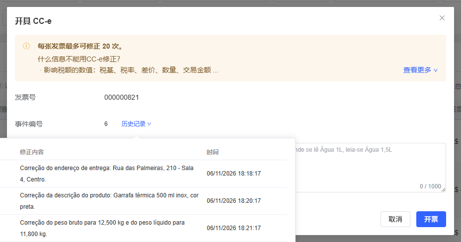
| 字段名称 | 类型 | 是否必填/必选 | 默认值 | 约束规则 |
|---|---|---|---|---|
| 发票信息 | ||||
| 发票账号 | 下拉框 | 是 | 回显 | 从本系统已建的发票主体中选择（电商从电商的发票主体中选择，零售从零售的发票主体中选择） |
| 发票类型 | 下拉框 | 是 | 回显 | 选项：销售发票、货物转移、货物调拨、进口采购；切换发票类型后，页面按所选发票类型显示对应字段。采购退票不能保存草稿，编辑页没有“采购退票”选项。 |
| 开票事由 | 输入框 | 是 | 回显 | 2～60 个字符，不支持中文；右下角显示字数。 |
| 发票目的 | 下拉框 | 是 | 回显 | 1、发票类型为进口采购的，锁定不能改；2、发票类型为销售发票、货物转移、货物调拨的，可选 NF-e开票、补充发票、调整发票、退货发票，电商和零售相同。 |
| 出入库类型 | 下拉框 | 是 | 回显 | 置灰不能改，由发票类型决定。 |
| 出入库时间 | 日期时间框 | 是 | 回显 | 格式 DD/MM/YYYY HH:mm:ss；不能选择未来时间。 |
| 物流方式 | 下拉框 | 是 | 回显 | 6 个选项。1、选 9 时，不显示包裹信息和承运商信息。 |
| 接收方信息（销售发票、货物转移、货物调拨） | ||||
| 接收方身份 | 下拉框 | 是 | 回显 | 选项：自然人 (Física)、法人 (Jurídica) |
| 接收方名称 | 输入框 | 是 | 回显 | 只支持数字、字母和部分英文符号，不支持中文。最多 60 个字符。 |
| 是否终端销售 | 下拉框 | 是 | 回显 | 选项：销售最终消费者、转售或工业化交易。 |
| CPF / CNPJ | 输入框 | 是 | 回显 | 自然人填 11 位 CPF，法人填 14 位 CNPJ，校验位必须正确。 |
| 纳税类型 | 下拉框 | 是 | 回显 | 选项 1 / 2 / 9。 |
| 州税号 (IE) | 输入框 | 否 | 回显 | 填 ISENTO 或以数字开头的 2～18 位；纳税类型选 1 时必须填写。 |
| 邮编 | 输入框 | 是 | 回显 | 8 位数字，格式 00000-000；填写后自动带出州、城市、区、地址。 |
| 州 | 下拉框 | 是 | 回显 | 巴西 27 个州 |
| 城市 | 输入框 | 是 | 回显 | 必须与邮编、州对应；2～60 个字符。 |
| 区 | 输入框 | 是 | 回显 | 必须与邮编对应 |
| 门牌号 | 输入框 | 否 | 回显 | 最多 60 个字符。 |
| 地址 | 输入框 | 是 | 回显 | 无 |
| 邮箱 | 输入框 | 否 | 回显 | 邮箱格式 |
| 手机号 | 输入框 | 否 | 回显 | 巴西手机号格式 |
| 接收方信息（进口采购） | ||||
| 接收方身份 | 下拉框 | 是 | 回显 | 选项：自然人 (Física)、法人 (Jurídica)、外国人(Estrangeiro) |
| 接收方名称 | 输入框 | 是 | 回显 | 国外出口商名称；只支持数字、字母和部分英文符号，不支持中文；最多 60 个字符。 |
| 是否终端销售 | 下拉框 | 是 | 回显 | 选项：销售最终消费者、转售或工业化交易 |
| 证件号 | 输入框 | 是 | 回显 | 5～20 个字符 |
| 国家 | 下拉框 | 是 | 回显 | 全部国家 / 地区，可以输入文字筛选。 |
| 区 | 输入框 | 是 | 回显 | 2～60 个字符；不支持中文。 |
| 门牌号 | 输入框 | 否 | 回显 | 最多 60 个字符。 |
| 地址 | 输入框 | 是 | 回显 | 2～60 个字符；不支持中文。 |
| 邮箱 | 输入框 | 否 | 回显 | 邮箱格式 |
| 手机号 | 输入框 | 否 | 回显 | 巴西手机号格式 |
| 进口申报单（仅进口采购） | ||||
| 申报单编号 | 输入框 | 是 | 回显 | DUIMP 或 DI 申报单号；最多 60 个字符。 |
| 注册日期 | 日期框 | 是 | 回显 | 格式 DD/MM/YYYY |
| 清关地点 | 输入框 | 是 | 回显 | 最多 60 个字符。 |
| 清关州 | 下拉框 | 是 | 回显 | 27 个州简称 |
| 清关日期 | 日期框 | 是 | 回显 | 格式 DD/MM/YYYY |
| 国际运输方式 | 下拉框 | 是 | 回显 | 海运、河运、湖运、空运、邮政、铁路、公路 |
| AFRMM海运附加费 | 输入框 | 否 | 回显 | 置灰不能填写，单位 BRL |
| 进口中介方式 | 下拉框 | 是 | 回显 | 自营进口、代理/委托进口、受托进口/代销进口 |
| 代理/委托进口CNPJ | 输入框 | 否 | 回显 | 14 位 CNPJ |
| 代理/委托进口所在州 | 下拉框 | 否 | 回显 | 27 个州简称 |
| 出口商代码 | 输入框 | 是 | 回显 | 最多 60 个字符。 |
| 海关费用 | 输入框 | 是 | 回显 | 单位 BRL；≥ 0；最多 2 位小数。 |
| 开票产品 › 产品信息 | ||||
| 产品标题 | 表格内输入框 | 是 | 回显 | 1～120 个字符 |
| 产品编号 | 只读 | 否 | 回显 | 不能编辑 |
| 单位 | 表格内下拉框 | 是 | 回显 | 巴西计量单位；可以批量填写。 |
| 数量 | 表格内输入框 | 是 | 回显 | 必须大于 0；最多 4 位小数。 |
| 单价 BRL | 表格内输入框 | 是 | 回显 | 必须大于 0；最多 2 位小数。 |
| 总金额 | 只读 | 否 | 回显 | = 数量 × 单价 BRL |
| 开票产品 › 税务信息和编辑详情 | ||||
| 税种编号 | 表格内下拉框 | 是 | 回显 | 从税种管理里的税种中选择；可以批量填写。 |
| NCM | 表格内输入框 | 是 | 回显 | 8 位数字；支持 AI 推荐和 NCM 查询表。 |
| CEST | 表格内输入框 | 否 | 回显 | 7 位数字 |
| 原产地 | 表格内下拉框 | 是 | 回显 | 0～8 共 9 个原产地代码 |
| 开票产品 › 编辑详情（仅进口采购） | ||||
| 境外制造商代码 | 输入框 | 是 | 回显 | 无 |
| Drawback | 输入框 | 否 | 回显 | 无 |
| 加项编号 | 输入框 | 是 | 回显 | 无 |
| 加项序号 | 输入框 | 是 | 回显 | 无 |
| 加项折扣金额 | 输入框 | 否 | 回显 | ≥ 0；最多 2 位小数。 |
| 商品税基 | 输入框 | 是 | 回显 | 无 |
| 进口税率 | 输入框 | 是 | 回显 | 单位 % |
| IOF税率 | 输入框 | 是 | 回显 | 单位 % |
| 包裹信息 | ||||
| 包裹数量 | 输入框 | 否 | 回显 | 整数 |
| 毛重 | 输入框 | 否 | 回显 | 单位 g；最多 3 位小数。 |
| 净重 | 输入框 | 否 | 回显 | 单位 g；最多 3 位小数。 |
| 包装编号 | 输入框 | 否 | 回显 | 最多 60 个字符。 |
| 包裹类型 | 下拉框 | 否 | 回显 | Outros(s)、Volume(s)、Unidade(s)、Caixa(s)、Pacote(s)、Envelope(s)、Pallet(s)、Saco(s) |
| 承运商信息 | ||||
| ? 帮助（板块标题旁） | 图标 | 否 | 无 | 鼠标悬停显示：“承运商信息会写入发票（NF-e 的运输信息）。由物流公司或第三方承运商负责运输时填写；自提或使用自有车辆运输时无需填写。税号和名称须同时填写或同时留空，其余选填。”。5 种发票类型的承运商信息字段、顺序和占位相同。 |
| 税号 | 带下拉的输入框 | 否 | 回显 | 左侧下拉框选择 CPF 或 CNPJ；须与【名称】同时填写或同时不填。 |
| 名称 | 输入框 | 否 | 回显 | 须与【税号】同时填写或同时不填；最多 60 个字符。 |
| 州税号 (IE) | 输入框 | 否 | 回显 | 填 ISENTO 或以数字开头的 2～18 位 |
| 地址1 | 输入框 | 否 | 回显 | 最多 60 个字符。 |
| 城市 | 输入框 | 否 | 回显 | 最多 60 个字符。 |
| 州 | 下拉框 | 否 | 回显 | 巴西 27 个州 |
| 支付信息 | ||||
| 付款方式 | 下拉框 | 否 | 回显 | 现金、支票、信用卡、借记卡、PIX、银行转账、Mercado Pago、其它 |
| 交易形式 | 下拉框 | 是 | 回显 | 不适用、线下交易、网络交易、电话交易、其它非线下交易 |
| 运费 | 输入框 | 否 | 回显 | 单位 BRL；≥ 0；最多 2 位小数。 |
| 折扣 | 输入框 | 否 | 回显 | 单位 BRL；不能填负数；最多 2 位小数。 |
| 产品总额、运费、折扣、合计 | 只读 | 否 | 回显 | 按开票产品、运费、折扣自动汇总 |
• 前置条件：
1、用户已登录系统，具备 财务（电商）› 发票管理 或 财务（零售）› 发票管理
的菜单权限。
2、【草稿中】列表里有这张草稿。
• 操作流程：
1、用户在【草稿中】切换到【出库】或【入库】页签，在要修改的草稿行上点【编辑】，系统打开整页，显示草稿原来的内容。
2、用户修改发票信息、接收方信息、进口申报单、开票产品、包裹信息、承运商信息、支付信息，可以使用【关联】（【电商订单】【批发订单】【调拨单】）【添加产品】【导入SKU】【编辑详情】【移除】，规则和创建发票相同。发票类型为进口采购时不显示【关联】。
3、用户点【保存】：1、必填项都已填写时，系统更新草稿，回到列表；2、有未填的必填项时，字段下面红字提示，并提示：“有内容未填或填写不正确，已标红，请修改后再试”。系统不保存。
4、用户点【开票】：系统弹出【开票前检查】。1、用户点【确认开票】，系统提交税局，草稿移到【开票中】；2、用户点【仍然保存为草稿】，系统保存草稿。
5、用户点【取消】，系统不保存修改，回到列表。
• 后置条件：
1、保存后草稿内容更新，仍在原页签。
2、提交开票后，这张草稿从【草稿中】移除，出现在【开票中】，发票号显示“–”。
3、操作成功后，系统记录操作日志。
• 校验规则：
1、当用户点【保存】或【开票】时，若有必填字段未填写或未选择，则字段下面红字提示，并提示：“有内容未填或填写不正确，已标红，请修改后再试”。系统不保存。
2、当用户修改【开票事由】时，若少于 2 个字符、超过 60
个字符或含中文，则在字段下面红字提示，系统不保存。
3、当用户修改“CPF / CNPJ”【邮编】【州税号
(IE)】【邮箱】【手机号】时，若格式或位数不正确，则在字段下面红字提示，系统不保存。
4、当用户修改【数量】【单价 BRL】时，若不大于
0，则在字段下面红字提示；【NCM】不是 8 位数字、【CEST】不是 7
位数字时，在字段下面红字提示，系统不保存。
5、当【运费】【折扣】【海关费用】为负数或超过 2
位小数时，在字段下面红字提示，系统不保存。
6、当承运商的【税号】【名称】只填了其中一个时，在字段下面红字提示，系统不保存。只填名称的，在【税号】下面提示：“请输入税号”。只填税号的，在【名称】下面提示：“请输入名称”。
7、当用户点【开票】时，系统做 12 项开票前检查，在弹窗里显示结果。
8、当用户输入的内容超过字段的字数上限时，系统不截断，在字段下面红字提示，如“城市最多
60 个字符”。【城市】少于 2 个字符时，提示：“城市至少 2
个字符”。【数量】超过 4 位小数、【单价 BRL】超过 2
位小数时，也在字段下面红字提示。系统不保存。
• 提示消息：
在当前页面的字段下面红色字体提示：
| 字段名称 | 未填写/未选择提示 | 输入错误提示 |
|---|---|---|
| 发票账号 | 请选择发票账号 | - |
| 发票类型 | 请选择发票类型 | - |
| 开票事由 | 请输入开票事由 | 开票事由至少 2 个字符；开票事由最多 60 个字符；开票事由格式不正确 |
| 发票目的 | 请选择发票目的 | - |
| 出入库时间 | 请选择出入库时间 | 出入库时间格式不正确 |
| 物流方式 | 请选择物流方式 | - |
| 接收方身份 | 请选择接收方身份 | - |
| 接收方名称 | 请输入接收方名称 | 接收方名称不能包含特殊字符；接收方名称最多 60 个字符 |
| 是否终端销售 | 请选择是否终端销售 | - |
| CPF / CNPJ | 请输入CPF / CNPJ | CPF / CNPJ格式不正确 |
| 纳税类型 | 请选择纳税类型 | - |
| 州税号 (IE) | - | 州税号 (IE)格式不正确 |
| 邮编 | 请输入邮编 | 邮编应为 8 位数字 |
| 州 | 请选择州 | - |
| 城市 | 请输入城市 | 城市至少 2 个字符；城市最多 60 个字符 |
| 区 | 请输入区 | 区至少 2 个字符；区最多 60 个字符；区格式不正确（进口采购） |
| 门牌号 | - | 门牌号最多 60 个字符 |
| 地址 | 请输入地址 | 地址至少 2 个字符；地址最多 60 个字符；地址格式不正确（进口采购） |
| 邮箱 | - | 邮箱格式不正确 |
| 手机号 | - | 手机号格式不正确 |
| 证件号 | 请输入证件号 | 证件号至少 5 个字符；证件号最多 20 个字符 |
| 国家 | 请选择国家 | - |
| 申报单编号 | 请输入申报单编号 | 申报单编号最多 60 个字符 |
| 注册日期 | 请选择注册日期 | - |
| 清关地点 | 请输入清关地点 | 清关地点最多 60 个字符 |
| 清关州 | 请选择清关州 | - |
| 清关日期 | 请选择清关日期 | - |
| 国际运输方式 | 请选择国际运输方式 | - |
| 进口中介方式 | 请选择进口中介方式 | - |
| 代理/委托进口CNPJ | - | 代理/委托进口CNPJ应为 14 位数字 |
| 代理/委托进口所在州 | - | - |
| 出口商代码 | 请输入出口商代码 | 出口商代码最多 60 个字符 |
| 海关费用 | 请输入海关费用 | 海关费用不能为负数；海关费用最多 2 位小数 |
| 产品标题 | 请输入产品标题 | 产品标题最多 120 个字符 |
| 单位 | 请选择单位 | - |
| 数量 | 请输入数量 | 数量须大于 0；数量最多 4 位小数 |
| 单价 BRL | 请输入单价 BRL | 单价 BRL须大于 0；单价 BRL最多 2 位小数 |
| 税种编号 | 请选择税种编号 | - |
| NCM | 请输入NCM | NCM应为 8 位数字 |
| CEST | - | CEST应为 7 位数字 |
| 原产地 | 请选择原产地 | - |
| 境外制造商代码 | 请输入境外制造商代码 | - |
| Drawback | - | - |
| 加项编号 | 请输入加项编号 | - |
| 加项序号 | 请输入加项序号 | - |
| 加项折扣金额 | - | 加项折扣金额不能为负数；加项折扣金额最多 2 位小数 |
| 商品税基 | 请输入商品税基 | - |
| 进口税率 | 请输入进口税率 | - |
| IOF税率 | 请输入IOF税率 | - |
| 包裹数量 | - | 包裹数量须为整数 |
| 毛重 | - | 毛重最多 3 位小数 |
| 净重 | - | 净重最多 3 位小数 |
| 包装编号 | - | 包装编号最多 60 个字符 |
| 包裹类型 | - | - |
| 税号（承运商） | 请输入税号（只填了名称时） | 税号格式不正确 |
| 名称（承运商） | 请输入名称（只填了税号时） | 名称最多 60 个字符 |
| 州税号 (IE)（承运商） | - | 州税号 (IE)格式不正确 |
| 地址1（承运商） | - | 地址1最多 60 个字符 |
| 城市（承运商） | - | 城市最多 60 个字符 |
| 交易形式 | 请选择交易形式 | - |
| 运费 | - | 运费不能为负数；运费最多 2 位小数 |
| 折扣 | - | 折扣不能为负数；折扣最多 2 位小数 |
• 消息通知：无。
•
操作日志：用户操作成功后，系统在操作日志模块记录：操作时间、操作账号、操作模块、操作功能、操作明细、IP地址。
| 字段 | 字段说明 | 规则/示例 |
|---|---|---|
| 操作时间 | 操作发生时间 | 精确到：年月日时分秒，格式：DD/MM/YYYY HH:mm:ss |
| 操作账号 | 登录系统的账号名称 | 例如：ana@tfretail.com.br |
| 操作模块 | 具体菜单名称 | 例如：财务（电商）-发票管理-草稿中 |
| 操作功能 | 本次操作触发的功能动作名称 | 例如：编辑 |
| 操作明细 | 本次操作的详细信息 | 例如：编辑草稿：发票账号 APAUL COM LTDA，发票类型 销售发票，单据信息 PTKFX2609001000，修改 接收方信息 › 州税号 (IE) |
| IP地址 | 操作终端 IP | 例如：189.45.12.8 |
5.3.1.5.3 开票
下面是草稿中【开票】的原型截图：点【开票】后弹出二次确认。
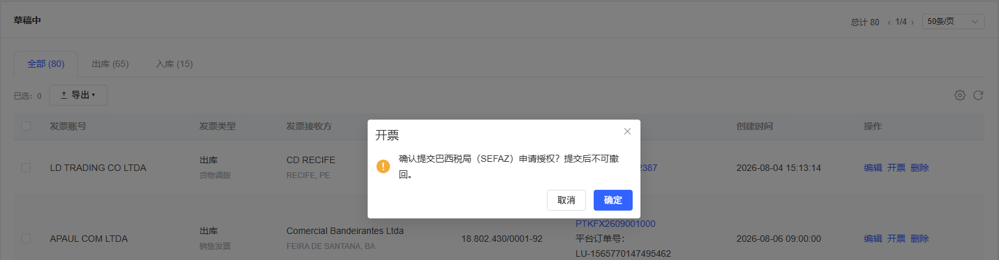
无。
• 前置条件：
1、用户已登录系统，具备 财务（电商）› 发票管理 或 财务（零售）› 发票管理
的菜单权限。
2、【草稿中】列表里有这张草稿。
• 操作流程：
1、用户在【草稿中】的草稿行上点【开票】，系统弹出二次确认：“确认提交巴西税局申请
NF-e？提交后不可撤回。”。
2、用户点【确定】，系统提交税局，草稿移到【开票中】。
3、用户点【取消】，系统不执行任何操作。
• 后置条件：
1、【草稿中】列表移除该行，页签数字减
1；【开票中】对应页签多一行，发票号显示“–”。
2、税局返回结果后：税局授权的发票进入【已开票-近期发票】；被税局拒绝或超时的发票进入“开票失败”。
3、操作成功后，系统记录操作日志。
•
校验规则：当用户点【确定】提交时，若草稿的必填项未填写完整，或数据不符合税局校验规则，则税局拒绝，发票进入“开票失败”，列表行下面显示失败原因。
• 提示消息：无。
• 消息通知：无。
•
操作日志：用户操作成功后，系统在操作日志模块记录：操作时间、操作账号、操作模块、操作功能、操作明细、IP地址。
| 字段 | 字段说明 | 规则/示例 |
|---|---|---|
| 操作时间 | 操作发生时间 | 精确到：年月日时分秒，格式：DD/MM/YYYY HH:mm:ss |
| 操作账号 | 登录系统的账号名称 | 例如：ana@tfretail.com.br |
| 操作模块 | 具体菜单名称 | 例如：财务（零售）-发票管理-草稿中 |
| 操作功能 | 本次操作触发的功能动作名称 | 例如：开票 |
| 操作明细 | 本次操作的详细信息 | 例如：草稿提交开票：发票账号 TF RETAIL · LOJA PAULISTA，销售发票 NF-e 55，批发订单号 PFUI4O260814000282 |
| IP地址 | 操作终端 IP | 例如：189.45.12.8 |
5.3.1.5.4 删除
下面是草稿中【删除】的原型截图：点【删除】后弹出二次确认。
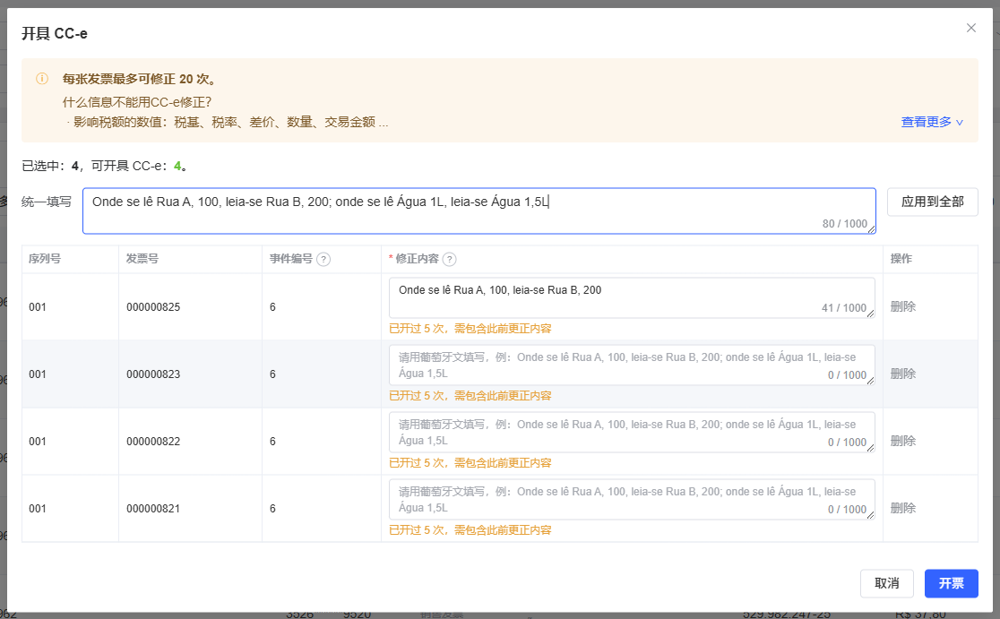
无。
• 前置条件：
1、用户已登录系统，具备 财务（电商）› 发票管理 或 财务（零售）› 发票管理
的菜单权限。
2、【草稿中】列表里有这张草稿。
• 操作流程：
1、用户在草稿行上点【删除】，系统弹出二次确认：“确认删除该草稿？删除后不可恢复。”。
2、用户点【确定】，系统删除这张草稿。
3、用户点【取消】，系统不执行任何操作。
• 后置条件：
1、【草稿中】列表移除这一行，页签数字减 1；删除后不能恢复。
2、草稿没有提交过税局，删除草稿不影响税局。
3、操作成功后，系统记录操作日志。
• 校验规则：无。
• 提示消息：无。
• 消息通知：无。
•
操作日志：用户操作成功后，系统在操作日志模块记录：操作时间、操作账号、操作模块、操作功能、操作明细、IP地址。
| 字段 | 字段说明 | 规则/示例 |
|---|---|---|
| 操作时间 | 操作发生时间 | 精确到：年月日时分秒，格式：DD/MM/YYYY HH:mm:ss |
| 操作账号 | 登录系统的账号名称 | 例如：ana@tfretail.com.br |
| 操作模块 | 具体菜单名称 | 例如：财务（电商）-发票管理-草稿中 |
| 操作功能 | 本次操作触发的功能动作名称 | 例如：删除 |
| 操作明细 | 本次操作的详细信息 | 例如：删除草稿：发票账号 TF RETAIL · CD SÃO PAULO，货物调拨，调拨单号 DBW829261019007 |
| IP地址 | 操作终端 IP | 例如：189.45.12.8 |
5.3.2 开票中
5.3.2.1 业务场景说明
功能说明：财务（电商）或财务（零售）› 发票管理 › 开票中，列出已经提交税局（SEFAZ）、还在等待税局返回结果的发票。页面有【全部】【出库】【入库】三个页签。零售收银台断网时离线开出、尚未上传税局的 NFC-e 65 也在本页，开票状态显示“离线已开票（待上传）”。
设置原因：
- 巴西的发票要经税局授权才生效。从提交到取得结果需要一段时间，在此期间发票既不属于已开出，也不属于开票失败。
- 发票尚无结果时不能操作；需要让财务了解哪些发票仍在等待结果，避免重复开票。
系统需解决的问题：
| 要解决的问题 | 系统怎么做 |
|---|---|
| 无法掌握已提交发票的处理进度 | 集中列出正在等待税局结果的发票，发票号显示“–”。 |
| 等待结果期间可能发生误操作 | 行上只有【详情】，不能修改、取消、勾选。 |
| 税局返回结果后，发票要放到对应列表。 | 税局授权的，进入【已开票-近期发票】；被税局拒绝或超时的，进入“开票失败”。 |
电商与零售的差异
页面结构、页签、行操作、弹窗和整页，电商与零售基本相同，只有以下不同：
1、筛选：零售比电商多【全部发票模型】，选项为
NF-e（模型 55）、NFC-e（模型
65）。【发票类型】列：零售在第三行用灰字显示发票模型（NFC-e 65 或 NF-e
55）；电商的发票模型全部为 NF-e
55，不显示这一行。【发票账号】：电商从电商的发票主体中选择（如 APAUL COM
LTDA、TEX INC DISTRIBUICAO LTDA）；零售从零售的发票主体中选择（如 TF
RETAIL BRASIL LTDA · LOJA
PAULISTA），并在第二行用灰字显示门店编码和名称（如 LJ001
Paulista）。【单据信息】：电商显示订单号和平台订单号；零售显示收银订单号、门店收银订单号、门店预订单号、批发订单号、退货单号、换货单号（退回件）、原收银订单号；两边都有的是调拨单号、原采购发票号（采购退票）、进口申报单（DUIMP）。
2、本页有 CC-e 以外的 6
类发票（销售发票、销售退票、货物转移、货物调拨、采购退票、进口采购），CC-e
不进入本页；【全部】页签包含【出库】和【入库】。
5.3.2.2 流程图
开票中的处理流程如下。
flowchart TB
S(("开始")) --> A["业务单据或草稿提交开票"]
subgraph sg1["系统"]
A --> B["发票进入“开票中”，发票号显示 --"]
OF["收银台断网时离线开出的 NFC-e 65，开票状态为“离线已开票（待上传）”"]
OF --> UP["网络恢复后自动上传；也可在 收银台 › 订单管理，或后台【收银订单】【门店预订单】【换货订单】点【立即上传】"]
D1["发票进入【近期发票】，原单据变为已开票"]
D2["发票进入“开票失败”，显示失败原因和处理入口"]
end
subgraph sg2["税局（SEFAZ）"]
B --> C{"返回结果？"}
UP --> C
end
subgraph sg3["角色：财务"]
F["点击【详情】查看，不可修改"]
end
B --> F
C -->|"授权"| D1 --> E(("结束"))
C -->|"拒绝、拒绝使用或超时"| D2 --> E
5.3.2.3 和税局（SEFAZ）的数据交互
本页只能查看，不向税局提交任何内容。列表里的发票是之前已经提交的，系统按税局返回的回执查询结果。
5.3.2.4 关键业务约束
• 本页只能查看，不能操作。
• 以下 6
类发票提交后都会先进入这里：销售发票、销售退票、货物转移、货物调拨、采购退票、进口采购。CC-e
不进入这里：税局当场返回结果，开具时在【开具
CC-e】弹窗里等待结果。
• 收银台断网时离线开出的 NFC-e 65
在本页，开票状态为“离线已开票（待上传）”。网络恢复后系统自动上传税局，也可以在
收银台 › 订单管理 点【立即上传】，或在后台【收银订单】【门店预订单】【换货订单】列表里这类行的操作列点【立即上传】；授权后进入【已开票-近期发票】，上传被拒的进入“开票失败”。
• 结账时因断网未能开具发票的单据不在本页（NF-e 55，以及关闭离线开票时的 NFC-e
65），这些单据仍在业务单据的【待开票】中。
• 采购退票提交后也进入本页的【出库】页签，单据信息显示原采购发票号。
5.3.3 开票失败
5.3.3.1 业务场景说明
功能说明：财务（电商）或财务（零售）› 发票管理 › 开票失败，列出提交后被税局拒绝、或税局超时没有返回结果的发票，每一行下面显示失败原因和处理入口。页面有【全部】【出库】【入库】三个页签。收银台离线开出的 NFC-e 65 上传后被税局拒绝的，也在本页。页面顶部说明第一行：“税局拒绝或未回复的发票在这里，点【处理方法】查看原因和修改位置，修改后点【修改重提】；NFC-e 65 不在本页修改重提，修改后到【收银台 › 订单管理】打开该订单，点击【开票】重新开票，离线发票上传被拒的在该订单点击【立即上传】。”第二行：“先验证发票，确认无误后，依次点击【验证发票XML】→【修改重提】→ 开票（NFC-e 65 除外）。”。
设置原因：
- 税局拒绝时只返回返回码和葡萄牙语原文，财务难以理解，也无法确定修改位置。
- 发票无法开出时，对应的业务单据无法继续处理，需要一个集中查看原因、集中处理的地方。
- 失败原因不同，处理方法也不同：有的要修改发票，有的要修改基础资料，有的只是税局系统不稳定。
电商与零售的差异
页面结构、页签、行操作、弹窗和整页，电商与零售基本相同，只有以下不同：
1、筛选：零售比电商多【全部发票模型】，选项为
NF-e（模型 55）、NFC-e（模型
65）。【发票类型】列：零售在第三行用灰字显示发票模型（NFC-e 65 或 NF-e
55）；电商的发票模型全部为 NF-e
55，不显示这一行。【发票账号】：电商从电商的发票主体中选择（如 APAUL COM
LTDA、TEX INC DISTRIBUICAO LTDA）；零售从零售的发票主体中选择（如 TF
RETAIL BRASIL LTDA · LOJA
PAULISTA），并在第二行用灰字显示门店编码和名称（如 LJ001
Paulista）。【单据信息】：电商显示订单号和平台订单号；零售显示收银订单号、门店收银订单号、门店预订单号、批发订单号、退货单号、换货单号（退回件）、原收银订单号；两边都有的是调拨单号、原采购发票号（采购退票）、进口申报单（DUIMP）。
2、本页有 CC-e 以外的 6
类发票（销售发票、销售退票、货物转移、货物调拨、采购退票、进口采购），CC-e
不进入本页；【全部】页签包含【出库】和【入库】。
5.3.3.2 流程图
开票失败的处理流程如下。
flowchart TB
S(("开始")) --> A["税局拒绝、拒绝使用或超时，发票进入“开票失败”"]
subgraph sg1["角色：财务"]
B["查看列表行下方的失败原因"]
C{"已明确修改方法？"}
D["点击【验证发票XML】"]
F["点击【更多 › 修改重提】，修改完成后点击【开票提交】"]
F2["点击【存草稿】暂存；销售退票、采购退票、CC-e 没有【存草稿】"]
end
subgraph sg2["系统"]
A --> A0{"是 NFC-e 65？"}
A0 -->|"是"| A4{"是离线发票上传被拒？"}
A4 -->|"否"| A5["不显示【修改重提】；按【处理方法】改正后，到 收银台 › 订单管理 打开该订单，点击【开票】重新开票"]
A4 -->|"是"| A3["不显示【修改重提】，可点【验证发票XML】；按【处理方法】改正后，回到 收银台 › 订单管理 的该订单点【立即上传】，用原发票号和原 Key 重新上传；Rejeição 539 或拒绝使用时不显示【立即上传】；不能改开 NF-e 55"]
A0 -->|"否"| A1{"失败原因是 Rejeição 205 或 Denegada 301、302、303？"}
A1 -->|"是"| A2["不显示【修改重提】；该发票号不能再使用"]
A1 -->|"否"| B
D1["在本地重新校验，列出发现的问题和检查项，不提交税局"]
G["发票进入“开票中”"]
G2["发票移到【草稿中】"]
H["发票回到“开票失败”，失败原因更新为本次的返回码和原因"]
I["发票进入“已开票-近期发票”，原业务单据的开票状态变为“已开票”"]
end
subgraph sg3["税局（SEFAZ）"]
J{"返回结果？"}
end
B --> C
C -->|"否"| D --> D1 --> F
C -->|"是"| F
F --> G --> J
F --> F2 --> G2
J -->|"授权 Autorizado"| I --> E(("结束"))
J -->|"拒绝 Rejeição"| H --> B
J -->|"拒绝使用 Denegada"| H
J -->|"超时：数分钟后重新提交"| H
A2 --> E
A3 --> E
A5 --> E
G2 --> E
5.3.3.3 和税局（SEFAZ）的数据交互
列表上的【详情】【验证发票XML】不与税局交互。【修改重提】页面里的【验证 XML】【取消】【存草稿】也不与税局交互，只有点【开票提交】才提交税局。
修改重提时的交互方式：
| 项 | 说明 |
|---|---|
| 销售发票、货物转移、货物调拨、销售退票 | 先用 NFeAutorizacao 重新提交，使用原来的发票号和 Key，内容为修改后的 XML；再用 NFeRetAutorizacao 查询结果。 |
| 传输内容 | 1、发票模型（NF-e 55）、序列号（série）、发票号；2、开票方 CNPJ 和 IE；3、接收方 CPF、CNPJ、IE、地址、邮编；4、每行产品的 NCM、原产地、税种、CFOP、金额；5、销售退票另外传退货 CFOP（1202 或 2202）和原发票的 Key（refNFe）。 |
| 授权（Autorizado） | 发票进入【已开票-近期发票】，原业务单据的开票状态变为“已开票”。 |
| 拒绝（Rejeição xxx） | 发票回到“开票失败”，失败原因更新为这次税局返回的返回码和原因。 |
| 拒绝使用（Denegada） | 发票回到“开票失败”，按处理指引处理；这个发票号不能再使用，列表不显示【修改重提】。 |
| 超时（30 秒无返回） | 发票回到“开票失败”，5 分钟后再重新提交。 |
验证发票XML 的检查内容：系统用本系统保存的这张发票的 XML 和税局上次返回的拒绝码，在本地重新校验，不提交税局。开票主体资格、买家 IE 是否有效、发票号是否可用、税局系统状态这四项无法在本地检查，显示“提交后由税局校验”。
5.3.3.4 关键业务约束
•
此处只列出已提交税局、被税局拒绝或超时的发票；结账时因断网没有开出发票的单据（NF-e 55，以及关闭离线开票时的 NFC-e
65）不在这里，仍在业务单据的【待开票】中。
• 收银台离线开出的 NFC-e 65
上传后被税局拒绝的，进入这里，失败原因以“开票失败：离线发票上传被拒，”开头，不能改开
NF-e 55。处理方法请参考 5.4.4.4 的目录，【处理方法】弹窗的写法见 5.3.3.6
第 3 部分。
• 离线发票上传被拒的行不显示【修改重提】。原因：发票号和
Key
已印在交给顾客的小票上，而【修改重提】页有【存草稿】，会把已开出的发票退回【草稿中】。这些行保留【验证发票XML】，结果弹窗与其他发票相同。
• 【立即上传】的入口有两处：一是 收银台 ›
订单管理
的订单详情底部，二是后台【收银订单】【门店预订单】【换货订单】列表里离线开出、尚未上传的行（开票状态格显示“开票中”，下方灰色小字“离线已开票（待上传）”），在操作列【查看】的右边。收银台
› 订单管理 发票信息表的行上没有【立即上传】。失败原因为 Rejeição
539（发票号重复）或拒绝使用（Denegada）时不显示【立即上传】。发票管理
›【开票失败】、后台订单列表上离线发票上传被拒和开票失败的行和后台订单详情（收银订单、门店预订单、换货订单）都没有【立即上传】，【处理方法】提示用户回到该订单点【立即上传】。
• NFC-e
65（含在线被拒和离线上传被拒）都不显示【修改重提】：在线被拒的，到【收银台
›
订单管理】打开该订单，点击【开票】重新开票；离线上传被拒的，在该订单点击【立即上传】。
• 采购退票的【修改重提】在发票管理打开采购退票的修改重提页（标题为“修改重提
· 采购退票 · NF-e
55”），页面字段为“引用采购发票（Key）”，没有关联采购退货单。
• 修改重提使用原来的发票号和 Key，不占用新的发票号。
• 【修改重提】页面里的【验证
XML】【取消】【存草稿】不提交税局，只有点【开票提交】才提交税局。
•
销售退票、采购退票不能存草稿，因为【草稿中】没有这两类发票：1、销售退票的修改重提页不显示【存草稿】；2、采购退票的页面本身没有【存草稿】。销售发票（NF-e
55）、货物转移、货物调拨、进口采购可以存草稿。
•
修改重提页的字段规则和【草稿中】创建发票相同：1、离开字段时，在字段下面提示错误；2、点【存草稿】【开票提交】时，未填写或填写不正确的字段都在字段下面提示，并提示：“有内容未填或填写不正确，已标红，请修改后再试”。系统不提交。
5.3.3.5 哪些发票不可以修改重提
| 发票类型 | 模型 | 能否修改重提 | 不可以的情况 |
|---|---|---|---|
| 销售发票 | NF-e 55 | 能 | 失败原因为 Rejeição 205、Denegada 301 / 302 / 303 时不可以 |
| 销售发票 | NFC-e 65（仅零售） | 不能 | 全部不可以。在线被拒的，到【收银台 › 订单管理】打开该订单，点击【开票】重新开票；收银台离线开出（tpEmis=9）、上传被拒的，到【收银台 › 订单管理】点击【立即上传】。 |
| 销售退票 | NF-e 55 | 能 | 失败原因为 Rejeição 205、Denegada 301 / 302 / 303 时不可以 |
| 采购退票 | NF-e 55 | 能（在发票管理打开采购退票的修改重提页） | 失败原因为 Rejeição 205、Denegada 301 / 302 / 303 时不可以 |
| 货物转移 | NF-e 55 | 能 | 失败原因为 Rejeição 205、Denegada 301 / 302 / 303 时不可以 |
| 货物调拨 | NF-e 55 | 能 | 失败原因为 Rejeição 205、Denegada 301 / 302 / 303 时不可以 |
| 进口采购 | NF-e 55 | 能 | 失败原因为 Rejeição 205、Denegada 301 / 302 / 303 时不可以 |
不可以修改重提的发票，列表行上不显示【修改重提】；【更多】里没有其他操作时，【更多】也不显示。CC-e 不进入【开票失败】，没有修改重提。
失败原因详细说明：
| 失败原因 | 是什么意思 | 为什么不能修改重提 |
|---|---|---|
| Rejeição 205 | 这张发票的发票号在税局已经是“拒绝使用”状态，本次又使用同一发票号提交，因此被税局拒绝。 | 问题不在发票内容，无论修改哪个字段，再提交仍然返回 205。发票号已被税局占用，系统重新开票时自动取下一个号：业务单据开的发票，回到原单据重新开票；草稿中手工创建的发票，在【草稿中】重新创建。 |
| Denegada 301 | 拒绝使用：开票方（我方）税务不合规 | 税局已经记录这个发票号，并标记为拒绝使用，这个发票号不能再使用。发票号已被税局占用，系统重新开票时自动取下一个号：业务单据开的发票，回到原单据重新开票；草稿中手工创建的发票，在【草稿中】重新创建。 |
| Denegada 302 | 拒绝使用：接收方税务不合规 | 税局已经记录这个发票号，并标记为拒绝使用，这个发票号不能再使用；要先解决接收方的税务问题，或更换接收方。发票号已被税局占用，系统重新开票时自动取下一个号：业务单据开的发票，回到原单据重新开票；草稿中手工创建的发票，在【草稿中】重新创建。 |
| Denegada 303 | 拒绝使用：接收方没有资格在该州经营 | 税局已经记录这个发票号，并标记为拒绝使用，这个发票号不能再使用。发票号已被税局占用，系统重新开票时自动取下一个号：业务单据开的发票，回到原单据重新开票；草稿中手工创建的发票，在【草稿中】重新创建。 |
和普通拒绝（Rejeição）的区别：1、普通拒绝时，税局没有接收这张发票，发票号没有被占用，修改后可以用原发票号再提交；2、拒绝使用（Denegada）时，税局已经记录这个发票号，这个发票号不能再使用。此类发票不增加【用新号重开】：发票号已被税局占用，系统重新开票时自动取下一个号；业务单据开的发票回到原单据重新开票，草稿中手工创建的发票在【草稿中】重新创建。
5.3.3.6 开票失败标准模板
电商、零售通用。
1. 列表上的失败提示
组成：依次为 ⚠ 图标、原因说明（加粗）、冒号、来源标识、税局原文、【处理方法 ›】
⚠ 商品的 NCM 税则号不存在：税局返回：Rejeição 778: Operação com NCM inexistente 处理方法 ›| 部分 | 规则 |
|---|---|
| 原因说明 | 用一句话说明错误所在，不超过 20 字，不写解决办法。 |
| 来源标识 | 三选一：税局返回、系统校验或税局未返回 |
| 税局原文 | 葡萄牙语原文，有返回码时一并显示，不翻译。 |
| 【处理方法 ›】 | 所有开票失败的行均显示，点击后打开下方弹窗。 |
2. 点击【处理方法】
① 系统报的异常
[来源标识：返回码 + 原文]
② 异常说明
[用一句话说清问题，加粗]
[可选：解释一个难懂的词，灰色]
影响：[号占没占] + [能否修改重提]（橙色）③ 处理方法
| 行 | 写法 |
|---|---|
| 已自动核查 | ❌ [查到的问题 + 实际值]（即本次失败原因）；✅ [已排除项]（最多 3 条） |
| 修改位置 | [本系统内的路径；仅最末级显示为蓝色并可点击，点击后跳转至该级所在页面，前面各级为普通文字]；需在本系统以外修改的，写明网站或机构名称 |
| 修改内容 | 单一情况：[字段] 修改为 [正确写法]；多种情况：情况一：若 [判断条件]，则 [动作]；有先后顺序：1、[第一步] 2、[第二步] |
| 注意事项 | 不得 [动作]，否则 [后果]（无此项时不显示该行） |
| 处理人 | 财务、开票员、会计师、买家、供应商 |
| 修改后操作 | 修改完成后回到【开票失败】，点击【更多 › 修改重提】，再点击【开票提交】 |
【影响】和【修改后操作】固定使用以下五种表述：
| 情况 | 影响 | 修改后操作 |
|---|---|---|
| 被拒绝，需修改发票。 | 发票号未被占用，修改后可以修改重提 | 回到【开票失败】，点击【更多 › 修改重提】，再点击【开票提交】。 |
| 需先修改资料 | 发票号未被占用，先修改资料再修改重提 | 资料修改完成后，回到【开票失败】，点击【更多 › 修改重提】，再点击【开票提交】。 |
| 税局超时 | 数据无误，5 分钟后重试 | 5 分钟后点击【更多 › 修改重提】，再点击【开票提交】。 |
| 发票号不能再使用 | 该发票号不能再使用，不能修改重提 | 业务单据开的发票，回到原单据重新开票；手工创建的发票，在【草稿中】重新创建，使用新发票号开票。 |
| NFC-e 65 被拒（收银台开出，非离线） | 发票号未被占用，不在本页修改重提 | 修改完成后，到【收银台 › 订单管理】打开该订单，点击【开票】重新开票。 |
写法规定：
• 全文只写【本系统】，不出现其他公司的系统名称。
• 按钮名和原型一致，统一写【修改重提】【开票提交】。
• ❌ 只出现一次。
• 本系统内的路径都可以点击；外部网站写名称和网址。
举例：商品 NCM 不存在（Rejeição 778）
列表上显示：⚠ 商品 NCM 不存在：税局返回：Rejeição 778: Operação com NCM inexistente 处理方法 ›
点【处理方法】显示：
① 系统提示的异常：税局返回：Rejeição 778: Operação com NCM inexistente
② 异常说明：这张发票中某个商品的 NCM 不在现行目录中。 NCM 是巴西 8 位商品税则号，必须现行有效。
影响：发票号未被占用，先修改资料再修改重提
③ 处理方法
| 行 | 内容 |
|---|---|
| 已自动核查 | ❌ 乐时薯片 NCM 19059010 不在现行 NCM 表（2022 年已废止），即本次失败原因；✅ 其余 2 个商品的 NCM 均有效；✅ CFOP 5152 与“货物调拨”匹配。 |
| 修改位置 | 商品 › 商品库 › 该商品 › 税务信息 › NCM（可点击） |
| 修改内容 | 将 NCM 修改为现行有效的 8 位编码 |
| 注意事项 | 不得随意填写一个能通过校验的 NCM，否则税率错误将在稽查时被要求补税。 |
| 处理人 | 商品负责人 |
| 修改后操作 | 资料修改完成后，回到【开票失败】，点击【更多 › 修改重提】，再点击【开票提交】。 |
3. 离线发票上传被拒（收银台 NFC-e 65）
收银台离线开出的 NFC-e 65 上传后被税局拒绝时，失败原因以“开票失败：离线发票上传被拒，”开头，后面接原因说明和返回码，例如：开票失败：离线发票上传被拒，XML 格式校验未通过（Rejeição 225）。【处理方法】弹窗的内容按下表填写。
| 行 | 写法 |
|---|---|
| 税局返回 | 返回码和葡萄牙语原文，如 Rejeição 225: Falha no Schema XML da NFC-e |
| 问题 | 一句话说明错误所在，并写明改正是否涉及税额。 |
| 修改位置 | 本系统内的路径，如 商品 › 商品库 › 该商品。涉及税额的不写修改位置。 |
| 修改内容 | 不涉及税额的写明修改方法，如删除商品名称中的特殊字符。涉及税额的不写修改内容。 |
| 注意 | 固定写明：离线发票号不能作废。涉及税额的，加写：涉及税额的内容不能自行修改后重传，请联系会计师处理。 |
| 修改后操作 | 不涉及税额的写：返回该订单，点击【立即上传】，用原发票号和原 Key 重新上传，并重新打印小票。 |
离线发票上传被拒后，不能改开 NF-e 55。
举例一（不涉及税额）：税局返回 Rejeição 225: Falha no Schema XML da NFC-e。问题是商品名称中含有特殊字符，不涉及税额。修改位置为 商品 › 商品库 › 该商品，修改内容为删除商品名称中的特殊字符。修改后返回该订单，点击【立即上传】，用原发票号和原 Key 重新上传，并重新打印小票。
举例二（涉及税额）：税局返回 Rejeição 778: Informado NCM inexistente。问题是商品的 NCM 不在现行目录中，改正会涉及税额。离线发票号不能作废，涉及税额的内容不能自行修改后重传，请联系会计师处理。
举例三（不涉及税额）：税局返回 Rejeição 464: Código de Hash no QR-Code difere do calculado。问题是小票二维码的校验码与税局计算的不一致，原因是收银机离线开票时使用的 CSC 令牌与税局登记的不一致，不涉及税额。修改位置为 财务（零售）› 发票管理 › 发票主体（零售）› NFC-e 配置，修改内容为将 CSC ID 和 CSC 令牌改为税局登记的值，处理人为财务。修改后返回该订单，点击【立即上传】，用原发票号和原 Key 重新上传（系统按正确的 CSC 重新生成二维码），并重新打印小票。
离线发票上传被拒的常见返回码：Rejeição 225（XML 格式校验未通过）、Rejeição 464（二维码校验码与税局计算的不一致）、Rejeição 539（发票号重复，Key 不一致）、Rejeição 778（商品 NCM 不存在）。
5.3.3.7 功能点详细介绍
本菜单共 2 个功能点。每个功能点依次说明：流程图、和税局的数据交互、关键业务约束、字段规范、用例规则。
5.3.3.7.1 验证发票XML
1、只有【开票失败】中被税局拒绝或税局超时的发票可以验证发票XML，包括销售发票（NF-e 55、NFC-e 65）、销售退票、采购退票、货物转移、货物调拨和进口采购。系统按发票类型使用对应的校验清单，在本地重新校验，不与税局交互。
2、以下单据不能验证发票XML：结账时因断网没有开出发票的单据（NF-e 55，以及关闭离线开票时的 NFC-e 65），这些单据不在【开票失败】中，仍在业务单据的【待开票】中。
3、开票主体资格、买家 IE 是否有效、发票号是否可用、税局系统状态这几项只能由税局校验，本地不检查，显示“提交后由税局校验”。
验证发票XML 的校验项按发票类型区分：每种发票类型有一份固定的校验清单，没有所有发票共用的一份清单。清单内容按税局规范（XSD 结构文件、纳税人手册 MOC 及技术说明）维护，结构如下：
| 分组 | 校验项 |
|---|---|
| 所有发票类型均检查 | XML 结构与必填、数字签名、Key、开票主体资格、税局系统状态 |
| 销售发票 · NF-e 55 | 收件人资料、商品税务信息、金额合计、买家 IE、发票号可用性 |
| 销售发票 · NFC-e 65 | 消费者 CPF/CNPJ、商品税务信息、金额合计、CSC 与二维码、发票号可用性 |
| 销售退票、采购退票 | 引用的原票、退货数量、退货 CFOP、原票状态 |
| 货物转移、货物调拨 | 收发双方关系、CFOP、金额一致、地址完整 |
| 进口采购 | DI 或 DUIMP 申报单、进口 ICMS、外国接收方、商品税务信息 |
离线发票上传被拒（如 Rejeição 225、464、539、778）的行同样可以验证发票XML，结果弹窗与其他发票相同。例如 Rejeição 464：弹窗显示“小票二维码的校验码与税局计算的不一致”，修改位置为 财务（零售）› 发票管理 › 发票主体（零售）› NFC-e 配置，将 CSC ID 和 CSC 令牌改为税局登记的值，不涉及税额；改后返回该订单，点击【立即上传】，用原发票号和原 Key 重新上传，并重新打印小票。弹窗另提示：“请勿手工修改二维码或 Key；离线发票号不能作废，也不能改开 NF-e 55”。
NFC-e 65 的结果弹窗中，“然后”一行写：到【收银台 › 订单管理】打开该订单，点击【开票】重新开票；离线发票上传被拒的写：返回该订单，点击【立即上传】。
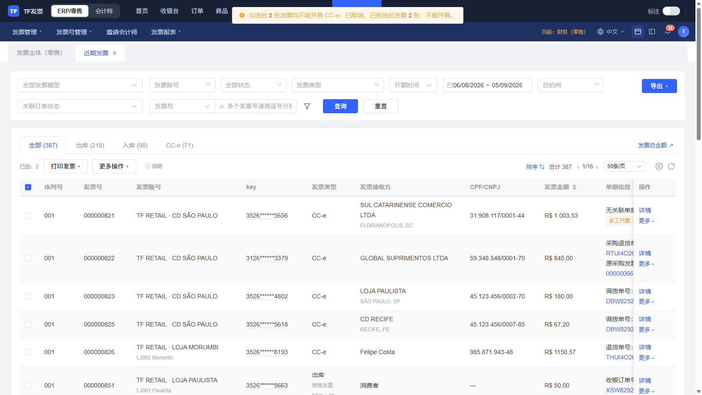
不与税局交互。系统用本系统保存的这张发票的 XML，以及税局上次返回的拒绝码和原文（列表行下面显示的失败原因），在本地重新校验。只能由税局校验的几项（开票主体资格、买家 IE 是否有效、发票号是否可用、税局系统状态等）本地不检查，显示“提交后由税局校验”。
下面是开票失败中【验证发票XML】的原型截图。

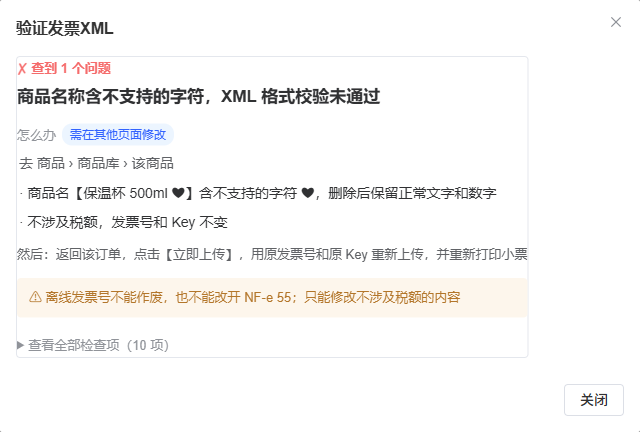
无。
• 前置条件：
1、用户已登录系统，具备 财务（电商）› 发票管理 或 财务（零售）› 发票管理
的菜单权限。
2、“开票失败”列表里有这张开票失败的发票。
• 操作流程：
1、用户在“开票失败”的发票行上点【验证发票XML】，系统用本系统保存的这张发票的
XML 和税局上次返回的拒绝码，按这张发票的发票类型（以及发票模型 NF-e 55 /
NFC-e 65）在本地重新校验，弹出【验证发票XML】结果弹窗。
2、用户查看问题和【怎么办】，可以展开【查看全部检查项】，查看每一项的结果。
3、用户点【关闭】，系统关闭弹窗，不执行任何操作。
4、用户在修改重提整页点【验证
XML】时，系统弹出通用的验证弹窗：1、问题可以在发票上修改的，用户点击【修改重提】，系统打开修改重提整页；2、需要在其他页面修改或无法修改的，用户点击【查看处理方法】，系统提示用户点击该行失败原因后面的按钮。
•
后置条件：不改变发票的任何数据和发票状态，不占用开票次数，不提交税局。
• 校验规则：无。
• 提示消息：无。
• 消息通知：无。
• 操作日志：查询/查看不输出操作日志。
5.3.3.7.2 修改重提
1、只有【开票失败】中被税局拒绝或税局超时的发票可以修改重提，包括销售发票（NF-e 55）、销售退票、采购退票、货物转移、货物调拨、进口采购。修改重提使用原来的发票号和 Key，不占用新的发票号。采购退票在发票管理打开采购退票的修改重提页（标题为“修改重提 · 采购退票 · NF-e 55”），页面字段为“引用采购发票（Key）”，没有关联采购退货单。
2、以下发票不能修改重提：失败原因为 Rejeição 205、Denegada 301 / 302 / 303 的发票，因为这个发票号在税局已经不能再使用。不能修改重提的发票，列表行上不显示【修改重提】。NFC-e 65（仅零售）都不能修改重提：在线被拒的，到【收银台 › 订单管理】打开该订单，点击【开票】重新开票；离线上传被拒的原因见 5.3.3.4。
3、修改重提页面里的【验证 XML】【取消】【存草稿】不提交税局，只有点【开票提交】才提交税局。销售退票、采购退票不能存草稿，销售发票（NF-e 55）、货物转移、货物调拨、进口采购可以存草稿。
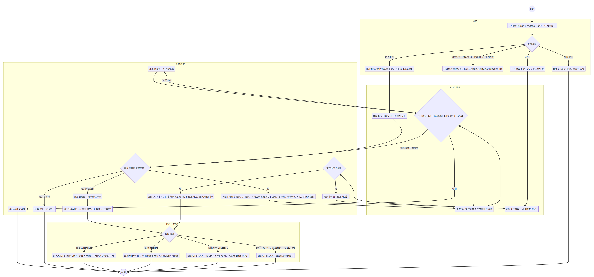
• 提交内容：
1、销售发票、货物转移、货物调拨、销售退票：先用 NFeAutorizacao
重新提交，使用原来的发票号和 Key，内容为修改后的 XML（发票模型 NF-e
55、序列号（série）、发票号、开票方 CNPJ 和 IE、接收方
CPF、CNPJ、IE、地址、邮编、每行产品的
NCM、原产地、税种、CFOP、金额；销售退票另外传退货 CFOP 1202 或 2202
和原发票的 Key（refNFe））；再用 NFeRetAutorizacao 查询结果。
2、采购退票：用 NFeAutorizacao
重新提交，使用原来的发票号和 Key，发票模型为 NF-e 55，finNFe =
4（发票用途：退货），refNFe（引用的原发票）= 原采购发票的
Key，带上改正后的字段。
• 税局返回结果及处理方式：
1、税局授权（Autorizado）：发票进入【已开票-近期发票】，原业务单据的开票状态变为“已开票”。
2、税局拒绝（Rejeição
xxx）：发票回到“开票失败”，列表行下面的失败原因更新为这次的返回码和原因。
3、税局拒绝使用（Denegada）：发票回到“开票失败”，按处理指引处理。
4、税局未回复（超时：30 秒内未返回结果）：发票回到“开票失败”，5
分钟后再重新提交。
• 【存草稿】【取消】【验证 XML】不与税局交互。
| 场景 | 结果 |
|---|---|
| 用户离开某个字段时 | 在字段下面用红字提示，如“请输入开票事由”“开票事由不支持中文”“邮编应为 8 位数字”。 |
| 用户点【存草稿】或【开票提交】时，有字段未填写或填写不正确。 | 在字段下面用红字提示，并提示：“有内容未填或填写不正确，已标红，请修改后再试”。系统不提交。 |
| 所有字段填写正确，用户点【开票提交】时。 | 弹出【开票前检查】；用户确认后，提示：“已重新提交税局，该发票已移至【开票中】；对应的原单据同步变为“开票中”。”。这张发票从“开票失败”移到【开票中】。 |
| 所有字段填写正确，用户点【存草稿】时。 | 提示：“已存为草稿，这张票已移到【草稿中】…”。 |
| 发票类型为销售退票时 | 修改重提页没有【存草稿】 |
| 发票类型为采购退票时 | 在发票管理打开采购退票的修改重提页，没有【存草稿】；退货数量不能超过原采购发票的可退数量，超过时不提交，提示这张采购发票的可退数量。提交后提示：“开票已提交，退票进入【开票中】等待税局授权”。 |
下面是开票失败中【修改重提】打开的页面的原型截图。


| 字段名称 | 类型 | 是否必填/必选 | 默认值 | 约束规则 |
|---|---|---|---|---|
| 整页 › 发票信息（销售发票、货物转移、货物调拨） | ||||
| 发票账号 | 下拉框 | 是 | 回显 | 从发票主体中选择 |
| 发票类型 | 只读 | 否 | 回显 | 不能修改；修改发票类型即成为另一张发票。 |
| 开票事由 | 输入框 | 是 | 回显（Venda de mercadorias） | 2～60 个字符，不支持中文。 |
| 发票目的 | 只读 | 否 | 回显 | 显示原发票的发票目的，不能修改：销售发票、货物转移、货物调拨、进口采购（NF-e 55）显示“NF-e开票”，销售退票（NF-e 55）显示“退货发票”。 |
| 出入库类型 | 只读 | 否 | 回显 | 与原发票一致，不能修改。 |
| 出入库时间 | 日期时间框 | 是 | 回显 | 格式 DD/MM/YYYY HH:mm:ss；不能选择未来时间。 |
| 物流方式 | 下拉框 | 是 | 回显 | 6 个选项 |
| 整页 › 接收方信息 | ||||
| 接收方身份 | 下拉框 | 是 | 回显 | 自然人 (Física)、法人 (Jurídica) |
| 接收方名称 | 输入框 | 是 | 回显 | 只支持数字、字母和部分英文符号，不支持中文。 |
| 是否终端销售 | 下拉框 | 是 | 回显 | 销售最终消费者、转售或工业化交易 |
| 纳税类型 | 下拉框 | 是 | 回显 | 1 / 2 / 9 |
| 州税号 (IE) | 输入框 | 否 | 回显 | 填 ISENTO 或以数字开头的 2～18 位；纳税类型选 1 时必须填写。 |
| CPF / CNPJ | 输入框 | 是 | 回显 | 自然人填 11 位 CPF，法人填 14 位 CNPJ，校验位必须正确。 |
| 邮编 | 输入框 | 是 | 回显 | 8 位数字，格式 00000-000；填写后自动带出州、城市、区、地址。 |
| 州 | 下拉框 | 是 | 回显 | 巴西 27 个州 |
| 城市 | 输入框 | 是 | 回显 | 必须与邮编、州对应 |
| 地址 | 输入框 | 是 | 回显 | 无 |
| 区 | 输入框 | 是 | 回显 | 2～60 个字符，不支持中文。 |
| 门牌号 | 输入框 | 否 | 回显 | 无 |
| 邮箱 | 输入框 | 否 | 回显 | 邮箱格式 |
| 手机号 | 输入框 | 否 | 回显 | 巴西手机号格式 |
| 整页 › 开票产品 | ||||
| 产品标题 | 表格内输入框 | 是 | 回显 | 1～120 个字符 |
| 产品编号 | 只读 | 否 | 回显 | 不可编辑 |
| 单位 | 表格内下拉框 | 是 | 回显 | 巴西计量单位；可以批量填写。 |
| 数量 | 表格内输入框 | 是 | 回显 | 必须大于 0 |
| 单价 BRL | 表格内输入框 | 是 | 回显 | 必须大于 0 |
| 总金额 | 只读 | 否 | 回显 | = 数量 × 单价 BRL |
| 税种编号 | 表格内下拉框 | 是 | 回显 | 从税种管理里的税种中选择；可以批量填写。 |
| NCM | 表格内输入框 | 是 | 回显 | 8 位数字 |
| CEST | 表格内输入框 | 否 | 回显 | 7 位数字 |
| 原产地 | 表格内下拉框 | 是 | 回显 | 0～8 共 9 个原产地代码 |
| 整页 › 包裹信息 | ||||
| 包裹数量 | 输入框 | 否 | 回显 | 整数 |
| 毛重 (g) | 输入框 | 否 | 回显 | 最多 3 位小数 |
| 净重 (g) | 输入框 | 否 | 回显 | 最多 3 位小数 |
| 包装编号 | 输入框 | 否 | 回显 | 无 |
| 包裹类型 | 下拉框 | 否 | 回显 | 8 个包裹类型 |
| 整页 › 承运商信息 | ||||
| 税号 | 带下拉的输入框 | 否 | 回显 | 前置下拉框选择 CPF 或 CNPJ；与【名称】须同时填写或同时不填。 |
| 名称 | 输入框 | 否 | 回显 | 与【税号】须同时填写或同时不填 |
| 州税号 (IE) | 输入框 | 否 | 回显 | 填 ISENTO 或以数字开头的 2～18 位 |
| 地址1 | 输入框 | 否 | 回显 | 无 |
| 城市 | 输入框 | 否 | 回显 | 无 |
| 州 | 下拉框 | 否 | 回显 | 巴西 27 个州 |
| 整页 › 支付信息 | ||||
| 付款方式 | 下拉框 | 否 | 回显 | 现金、支票、信用卡、借记卡、PIX、银行转账、Mercado Pago、其它 |
| 交易形式 | 下拉框 | 是 | 回显 | 不适用、线下交易、网络交易、电话交易、其它非线下交易 |
| 运费 | 输入框 | 否 | 回显 | 单位 BRL；≥ 0；最多 2 位小数。 |
| 折扣 | 输入框 | 否 | 回显 | 单位 BRL；不能填负数；最多 2 位小数。 |
| 产品总额、运费、折扣、合计 | 只读 | 否 | 回显 | 系统自动汇总 |
| 整页按发票类型的差异 | ||||
| 销售发票 · NF-e 55 | 板块 | — | — | 发票信息、接收方信息、开票产品、包裹信息、承运商信息、支付信息 |
| 销售退票 · NF-e 55 | 板块 | — | — | 发票信息、退票信息（原发票号、原发票 Key、退货原因只读；CFOP 必填，州内 1202、州外 2202）、接收方信息、开票产品、金额信息；没有包裹信息、承运商信息；不能存草稿。 |
| 货物转移、货物调拨 · NF-e 55 | 板块 | — | — | 发票信息、调拨信息（调拨单号、调出方、调入方、CFOP，只读）、接收方信息、开票产品、包裹信息、承运商信息、支付信息 |
| 进口采购 · NF-e 55 | 板块 | — | — | 发票信息、接收方信息（接收方身份、接收方名称、证件号、国家（可改）、是否终端销售、地址、区、门牌号、邮箱、手机号）、进口申报单（可改，规则同创建发票）、开票产品、包裹信息、承运商信息、支付信息 |
| 采购退票 · NF-e 55 | 板块 | — | — | 页面标题为“修改重提 · 采购退票 · NF-e 55”；顶部为【发票被拒原因】；字段“引用采购发票（Key）”只读，没有关联采购退货单；板块为退货管理、退货概览、物流信息、承运商信息、其他信息补充；底部按钮为【取消】【开票提交】；不能存草稿。字段见下方【采购退票修改重提页】。 |
| 采购退票修改重提页 | ||||
| 引用采购发票（Key） | 只读 | 否 | 回显 | 原采购发票的 44 位 Key，不能修改。 |
| 退货数量 | 数字输入框 | 是 | 回显 | 大于 0 的整数，且不能超过可退数量。 |
| 税收性质 | 下拉单选 | 是 | 回显 | — |
| NCM | 下拉单选 | 是 | 回显 | 8 位数字；可以批量填写。 |
| CEST | 文本输入框 | 否 | 回显 | 7 位数字 |
| 单位 | 下拉单选 | 是 | 回显 | — |
| 原产地 | 下拉单选 | 是 | 回显 | — |
| 运费模式 | 下拉单选 | 否 | 回显 | — |
| 包裹数量 | 数字输入框 | 否 | 回显 | 整数，至少 1 |
| 毛重 | 数字输入框 | 否 | 回显 | 含包装的总重量 |
| 净重 | 数字输入框 | 否 | 回显 | 不含包装的重量 |
| ? 帮助（板块标题旁） | 图标 | 否 | 无 | 鼠标悬停显示：“承运商信息会写入发票（NF-e 的运输信息）。由物流公司或第三方承运商负责运输时填写；自提或使用自有车辆运输时无需填写。税号和名称须同时填写或同时留空，其余选填。”。5 种发票类型的承运商信息字段、顺序和占位相同。 |
| 税号 | 下拉 + 输入框 | 否 | 回显 | 填 CPF 或 CNPJ；与名称须同时填写或同时留空。 |
| 名称 | 文本输入框 | 否 | 回显 | 与税号须同时填写或同时留空。 |
| 销售终端 | 单选 | 是 | 回显 | 选项：销售最终消费者、转售或工业化交易 |
| IPI保存到税额退回组 | 复选框 | 否 | 回显 | — |
| IPI商品备注 | 文本域 | 否 | 回显 | 可用变量 [IPI-DEVOLVED] |
| 其他费用金额 | 金额输入框 | 否 | 回显 | 不能为负数 |
| 发票备注 | 文本域 | 否 | 回显 | — |
| 弹窗 › 修改重提（单字段修正） | ||||
| 失败原因 | 只读 | 否 | 回显 | 税局返回的返回码和原文 |
| 要改的地方 | 只读 | 否 | 回显 | 如 接收方信息 › 州税号（IE） |
| 州税号 (IE) | 输入框 | 是 | 如 110.042.490.114 / ISENTO | 填 ISENTO 或以数字开头的 2～18 位 |
| 纳税类型 | 下拉框 | 否 | 回显 | 1-ICMS纳税人、2-免于在ICMS登记、9-非纳税人，可能有登记；选 1 时 IE 必填，无 IE 的应改选 9 |
• 前置条件：
1、用户已登录系统，具备 财务（电商）› 发票管理 或 财务（零售）› 发票管理
的菜单权限。
2、“开票失败”列表里有这张开票失败的发票，并且这张发票可以修改重提（见本功能的【哪些发票可以修改重提】）。
• 操作流程：
1、用户在“开票失败”的发票行上点【更多】›【修改重提】，系统按发票类型打开对应的整页或弹窗，显示原发票的内容；整页顶部显示【发票被拒原因】和【本次要改】。
2、整页（销售发票、货物转移、货物调拨、进口采购）：用户点击【本次要改】提示条上的【前往修改】，系统跳转到需修改的字段。用户修改后，可以点【验证
XML】在本地校验。用户点【存草稿】，系统保存，并提示：“已存为草稿，这张票已移到【草稿中】…”。用户点【开票提交】，系统弹出【开票前检查】。用户点【确认开票】后，系统用原来的发票号和
Key
重新提交，发票回到“开票中”，并提示：“已重新提交税局，该发票已移至【开票中】；对应的原单据同步变为“开票中”。”。
3、销售退票：系统打开修改重提整页（板块见字段规范【整页按发票类型的差异】），页面没有【存草稿】。用户填写【退票信息】里的
CFOP（州内 1202、州外
2202）等内容，点【开票提交】，后续处理与整页的【开票提交】相同。
4、单字段修正弹窗：用户填写【州税号
(IE)】、选择【纳税类型】，点【重新提交】，系统提交，提示：“已提交税局，可在【开票中】查看进度”。
5、采购退票：系统在发票管理打开采购退票的修改重提页（标题为“修改重提
· 采购退票 · NF-e
55”），页面字段为“引用采购发票（Key）”，没有关联采购退货单；板块为退货管理、退货概览、物流信息、承运商信息、其他信息补充，带出上次提交的内容。用户修改后点击【开票提交】，系统用原发票号和
Key
提交税局，发票回到【开票中】，提示：“已重新提交税局，该发票已移至【开票中】；对应的原单据同步变为“开票中”。”，该页面没有【存草稿】。
6、用户点【取消】，系统不执行任何操作，关闭页面或弹窗，发票仍在“开票失败”。
• 后置条件：
1、提交成功后，发票从“开票失败”移到【开票中】，原业务单据同步变为“开票中”，发票号和
Key 不变。
2、税局授权后，发票进入【已开票-近期发票】，原业务单据的开票状态变为“已开票”。发票再次被税局拒绝时，回到“开票失败”，失败原因更新为这次税局返回的返回码和原因。
3、存草稿后，发票移到【草稿中】。
4、操作成功后，系统记录操作日志。
• 校验规则：
1、当用户离开某个字段时，若这个字段未填写或填写不正确，则在字段下面红字提示。
2、当用户点【存草稿】或【开票提交】时，若有字段未填写或填写不正确，则在字段下面红字提示，并提示：“有内容未填或填写不正确，已标红，请修改后再试”。系统不提交。
3、当用户修改【开票事由】“CPF / CNPJ”【邮编】【州税号
(IE)】【邮箱】【手机号】时，若格式或位数不正确，则在字段下面红字提示，系统不提交。
4、当用户修改【数量】【单价 BRL】时，若不大于
0，则在字段下面红字提示；【NCM】不是 8 位数字、【CEST】不是 7
位数字时，在字段下面红字提示，系统不提交。
5、当承运商的【税号】【名称】只填了其中一个时，在字段下面红字提示，系统不提交。只填名称的，在【税号】下面提示：“请输入税号”。只填税号的，在【名称】下面提示：“请输入名称”。
6、当发票类型为销售退票，用户点【开票提交】时，若【退票信息】里的 CFOP
未填写，则在字段下面红字提示，系统不提交。
7、当用户在单字段修正弹窗提交时，若【州税号
(IE)】未填写或格式不正确，则在字段下面红字提示，系统不提交。
8、【发票类型】【出入库类型】为只读字段，不能修改。
9、当失败原因为 Rejeição 205、Denegada 301 / 302 / 303
时，列表行上不显示【修改重提】。
• 提示消息：
在当前页面的字段下面红色字体提示：
| 字段名称 | 未填写/未选择提示 | 输入错误提示 |
|---|---|---|
| 发票账号 | 请选择发票账号 | - |
| 开票事由 | 请输入开票事由 | 开票事由至少 2 个字符；开票事由最多 60 个字符；开票事由格式不正确 |
| 出入库时间 | 请选择出入库时间 | 出入库时间格式不正确 |
| 物流方式 | 请选择物流方式 | - |
| 接收方身份 | 请选择接收方身份 | - |
| 接收方名称 | 请输入接收方名称 | 接收方名称不能包含特殊字符 |
| 是否终端销售 | 请选择是否终端销售 | - |
| 纳税类型 | 请选择纳税类型 | - |
| 州税号 (IE) | 请输入州税号 (IE) | 州税号 (IE)格式不正确 |
| CPF / CNPJ | 请输入CPF / CNPJ | CPF / CNPJ格式不正确 |
| 邮编 | 请输入邮编 | 邮编应为 8 位数字 |
| 州 | 请选择州 | - |
| 城市 | 请输入城市 | - |
| 地址 | 请输入地址 | - |
| 区 | 请输入区 | 区至少 2 个字符；区最多 60 个字符 |
| 门牌号 | - | - |
| 邮箱 | - | 邮箱格式不正确 |
| 手机号 | - | 手机号格式不正确 |
| 产品标题 | 请输入产品标题 | 产品标题最多 120 个字符 |
| 单位 | 请选择单位 | - |
| 数量 | 请输入数量 | 数量须大于 0 |
| 单价 BRL | 请输入单价 BRL | 单价 BRL须大于 0 |
| 税种编号 | 请选择税种编号 | - |
| NCM | 请输入NCM | NCM应为 8 位数字 |
| CEST | - | CEST应为 7 位数字 |
| 原产地 | 请选择原产地 | - |
| 包裹数量 | - | 包裹数量须为整数 |
| 毛重 (g) | - | 毛重 (g)最多 3 位小数 |
| 净重 (g) | - | 净重 (g)最多 3 位小数 |
| 包装编号 | - | - |
| 包裹类型 | - | - |
| 税号（承运商） | 请输入税号（只填了名称时） | 税号格式不正确 |
| 名称（承运商） | 请输入名称（只填了税号时） | - |
| 交易形式 | 请选择交易形式 | - |
| 运费 | - | 运费不能为负数；运费最多 2 位小数 |
| 折扣 | - | 折扣不能为负数；折扣最多 2 位小数 |
| 退货CFOP | 请输入退货CFOP | 退货CFOP应为 4 位数字 |
| 更正内容 | 请输入更正内容 | 更正内容至少 15 个字符；更正内容最多 1000 个字符 |
（【州税号 (IE)】在整页里不是必填，【未填写/未选择提示】只用于单字段修正弹窗；整页里这个字段的【未填写/未选择提示】为“-”。）
• 消息通知：无。
•
操作日志：用户操作成功后，系统在操作日志模块记录：操作时间、操作账号、操作模块、操作功能、操作明细、IP地址。
| 字段 | 字段说明 | 规则/示例 |
|---|---|---|
| 操作时间 | 操作发生时间 | 精确到：年月日时分秒，格式：DD/MM/YYYY HH:mm:ss |
| 操作账号 | 登录系统的账号名称 | 例如：ana@tfretail.com.br |
| 操作模块 | 具体菜单名称 | 例如：财务（零售）-发票管理-开票失败 |
| 操作功能 | 本次操作触发的功能动作名称 | 例如：修改重提 |
| 操作明细 | 本次操作的详细信息 | 例如：修改重提发票：001 / 000004916，原因 Rejeição 778，修改 开票产品 › 税务信息 › NCM |
| IP地址 | 操作终端 IP | 例如：189.45.12.8 |
5.3.4 已开票-近期发票
5.3.4.1 业务场景说明
功能说明：财务（电商）或财务（零售）› 发票管理 › 已开票-近期发票，列出税局已授权、最近三个自然月内开具的发票，开票后的日常操作都在这里进行。页面有【全部】【出库】【入库】【CC-e】四个页签。
存放期限：只存放最近三个自然月（当月和前两个月）开具的发票，按开票时间计算。每月 1 日零点向后滚动一个月，超出这三个月的发票由系统自动移到【历史发票】，不需要人工操作。
| 当前月份 | 近期发票放哪些发票 | 历史发票放哪些发票 |
|---|---|---|
| 2026 年 9 月 | 01/07/2026 零点起开具的发票（7、8、9 月） | 01/07/2026 零点前开具的发票 |
| 2026 年 10 月 | 01/08/2026 零点起开具的发票（8、9、10 月） | 01/08/2026 零点前开具的发票 |
例如：一张 15/07/2026 开具的发票，9 月仍在近期发票；到 01/10/2026 零点，系统自动将其移到历史发票。
【说明】浮层的内容如下（电商、零售相同，引号内为原型原文）：
| 条目 | 内容 |
|---|---|
| 首段 | “近期发票指最近三个自然月（当月及前两个月）内开具的发票；每月 1 日零点滚动更新，更早的发票自动移入【历史发票】。” |
| 第 1 条 | “1. 取消发票：只有状态为“已开票”的发票才能取消。NF-e 55 须在授权后 24 小时内提交，NFC-e 65 须在授权后 30 分钟内提交，销售发票超过时限后只能开退票（关联收银订单、门店预订单、换货订单的除外：顾客退货请在 订单 › 售后管理 › 退货订单 办理，办理退货退款时系统会自动开具销售退票（引用原发票），不用在这里开）。取消后，发票号和 Key 仍被占用，不可再次使用。离线开出的 NFC-e 65 在授权前显示在【开票中】，状态为“离线已开票（待上传）”，不能取消；授权后进入近期发票，取消时限从授权时起算 30 分钟。” |
| 第 2 条 | “2. 开退票：只有状态为“已开票”的销售发票才能开退票（发票状态为已取消、已拒绝，或发票类型为销售退票、采购退票、CC-e、货物转移、货物调拨、进口采购的，都不支持开退票）。原发票保持不变，另开一张销售退票，显示在【入库】页签。采购退票只关联采购发票，在【采购发票】›“已导入”【开退货发票】或【发票管理】›“草稿中”【创建发票】选择“采购退票”开具，开出后显示在【出库】页签。 采购退票、货物转移、货物调拨、进口采购、销售退票超过取消时限：信息错误时开具 CC-e；其他错误请联系会计师，办理超期取消或开具反向发票。 收银订单、门店预订单、换货订单（换出件）的发票，在近期发票、历史发票不提供【开退票】：顾客退货请在 订单 › 售后管理 › 退货订单 办理，系统按实际退回的商品自动开具销售退票。同一订单重复开出的发票会进入异常发票：NF-e 55 授权后 24 小时内【取消发票】，超过后【开退票】；NFC-e 65 授权后 30 分钟内【取消发票】，超过后系统不能取消，也不开退票，请联系会计师按所在州的规定处理。” |
| 第 3 条 | “3. 货物调拨、货物转移发票：调拨设置【调拨单出库前是否开票】开启时，在【调拨管理】开票，可在【调拨管理】或近期发票【取消发票】；关闭时，在【发票管理】›“草稿中”【创建发票】关联调拨单开票，在近期发票【取消发票】。” |
| 第 4 条 | “4. 开具 CC-e：用于更正发票上不影响税额的信息（如地址、商品描述）；不能修改影响税额的数值（税基、税率、差价、数量、交易金额），不能更换买家或卖家（仅可更正地址、名称笔误），不能修改开票日期、出库日期、发票序列号和发票号，不能修改出口发票已在出口报关单（DU-E）申报的内容，不能新增或修改分期付款的期数和金额。每张发票最多开具 20 次；第二次开具时，第一次的更正将作废，须将第一次更正的内容一并重新填写。发票类型为 CC-e 的不能开 CC-e（要再次更正，请对原发票开具）；已取消、已拒绝的发票不能开 CC-e（行上不显示此按钮，批量勾选时自动跳过）。NFC-e 65 不支持 CC-e（行上不显示此按钮，批量勾选时自动跳过）；NFC-e 65 开具有误时，只能在授权后 30 分钟内【取消发票】，超时后，关联收银订单、门店预订单、换货订单的，顾客退货请在 订单 › 售后管理 › 退货订单 办理，办理退货退款时系统会自动开具销售退票（引用原发票），不用在这里开；其他的须【开退票】冲销。” |
| 第 5 条 | “5. 重开发票：按新金额另开一张发票（标记为【重开发票】，与原发票同一订单号）；原发票不会自动作废：授权后 24 小时内【取消发票】；超过 24 小时不能开退票，请联系会计师处理。关联收银订单、门店预订单、换货订单的发票不能重开。在取消时限内可以在近期发票或订单上【取消发票】，再到订单上重新【开票】。” |
| 第 6 条 | “6. 打印发票：NFC-e 65 只能打印 NFC-e 小票；NF-e 55 可打印 DANFE、简易DANFE、面单；CC-e 不能打印。已拒绝的发票不能打印。批量勾选时，不符合所选格式的发票将自动跳过并提示。” |
设置原因：
- 发票经税局授权后即成为法律文件，不能直接修改。信息错误、金额错误、货物退回等情况，各有对应的合法处理方式。
- 取消发票、重开发票都发生在开票后不久，取消发票还有时限，所以要和历史发票分开。
- 打印 DANFE、将 XML 导出给会计，都在这里操作。
电商与零售的差异
页面结构、页签、行操作、弹窗和整页，电商与零售基本相同，只有以下不同：
1、筛选：零售比电商多【全部发票模型】，选项为
NF-e（模型 55）、NFC-e（模型
65）。【发票类型】列：零售在第三行用灰字显示发票模型（NFC-e 65 或 NF-e
55；CC-e 显示 CC-e）；电商的发票模型全部为 NF-e
55，不显示这一行。【发票账号】：电商从电商的发票主体中选择（如 APAUL COM
LTDA、TEX INC DISTRIBUICAO LTDA）；零售从零售的发票主体中选择（如 TF
RETAIL BRASIL LTDA · LOJA
PAULISTA），并在第二行用灰字显示门店编码和名称（如 LJ001
Paulista）。【单据信息】：电商显示订单号和平台订单号；零售显示收银订单号、门店收银订单号、门店预订单号、批发订单号、退货单号、换货单号（退回件）、原收银订单号；两边都有的是调拨单号、原采购发票号（采购退票）、进口申报单（DUIMP）。列表组合搜索可一次输入多个单号或发票号，用逗号（,
，）、分号或换行分隔，命中任意一个即显示。
2、发票类型共 7
类：销售发票、销售退票、货物转移、货物调拨、采购退票、CC-e、进口采购。出库方向的发票类型：销售发票、采购退票、货物转移、货物调拨；入库方向的发票类型：销售退票、进口采购。
5.3.4.2 流程图
5.3.4.3 和税局（SEFAZ）的数据交互
【打印发票】【打印PDF】【导出XML】不与税局交互，内容取自系统保存的已授权发票。【开具 CC-e】【取消发票】【开退票】【重开发票】需要提交税局，提交内容和税局返回结果的处理，分别见 5.3.4.5.2.2、5.3.4.5.3.2、5.3.4.5.4.2、5.3.4.5.7.2。
5.3.4.4 关键业务约束
•
只有发票状态为“已开票”的发票才能操作；发票状态为“已取消”“已拒绝”的发票只能查看、导出、打印。
•
批量勾选的发票里有发票状态为“已取消”“已拒绝”的，系统自动跳过，并提示跳过张数和跳过原因。
• 已开具 CT-e 或 MDF-e
的发票不能取消，见 5.3.4.5.3.1 第 4 条。
• 采购退票在 发票管理
的开票中、开票失败、近期发票、历史发票的【出库】页签查看，【单据信息】只显示原采购发票号。采购退票的详情除发票信息外，另有两块只读表格：1、【冲销的原采购发票】，列为原发票号、KEY、开票日期、原票数量、原票金额、本次冲销数量、本次冲销金额、已累计冲销、剩余可退、冲销比例；2、【退货商品明细】，列为产品、NCM、退货数量、单价、来源原发票。开票失败的采购退票详情另显示税局返回的拒绝码和原文；已开票的采购退票详情另显示授权协议号和
DANFE。
• 取消时限按业务线和发票类型区分，从税局授权时开始计算：
| 业务线 | 发票 | 可以取消的时间 | 不能取消时怎么办 |
|---|---|---|---|
| 电商 | 销售发票 · NF-e 55（电商没有 NFC-e 65） | 授权后 24 小时内 | 超过 24 小时：开退票 |
| 零售 | 销售发票 · NFC-e 65 | 授权后 30 分钟内（各州可进一步缩短） | 开退票。关联收银订单、门店预订单、换货订单的发票不能开退票，顾客退货请在 订单 › 售后管理 › 退货订单 办理，办理退货退款时系统会自动开具销售退票（引用原发票），不用在这里开。 |
| 零售 | 销售发票 · NF-e 55 | 授权后 24 小时内 | 开退票。关联收银订单、门店预订单、换货订单的发票不能开退票，顾客退货请在 订单 › 售后管理 › 退货订单 办理，办理退货退款时系统会自动开具销售退票（引用原发票），不用在这里开；批发订单的发票开退票后订单回到“待开票”，在订单上重新开票；其他发票可以在近期发票点【重开发票】。 |
| 零售、电商 | 采购退票、货物转移、货物调拨、销售退票、进口采购（发票模型都是 NF-e 55） | 授权后 24 小时内 | 不能开退票。销售退票：信息错误的，开具 CC-e；金额或数量错误的，回到退货订单处理。 |
5.3.4.5 功能点详细介绍
本菜单共 7 个功能点。每个功能点依次说明：哪些发票可以操作、流程图与税局交互（不与税局交互的只写流程图）、原型（没有原型的不写）、字段规范（没有字段的写“无。”）、用例规则、操作后单据及发票流向（没有流向的不写）。业务规则只写在“哪些发票可以操作”和“用例规则”里。
5.3.4.5.1 打印发票
1、只有在近期发票的【全部】【出库】【入库】页签勾选的发票可以打印，包括销售发票（NF-e 55、NFC-e 65（零售））、采购退票、货物转移、货物调拨、销售退票、进口采购；必须先勾选发票才能打印。发票模型为 NF-e 55 的发票可以打印 DANFE、简易DANFE、面单，销售发票 · NFC-e 65 只能打印 NFC-e 小票。
2、以下发票不能打印：发票类型为 CC-e 的发票（【CC-e】页签不能勾选，没有【打印发票】；在【全部】页签批量打印时跳过），以及发票状态为“已拒绝”的发票（没有税局授权，打印件不能随货运输，批量勾选时跳过）。
3、批量勾选时按所选格式过滤：选择【NFC-e 小票】时，跳过发票模型为 NF-e 55 的发票；选择 DANFE、简易DANFE、面单时，跳过销售发票 · NFC-e 65。部分发票被跳过时，系统先弹出确认框列出跳过张数和原因；全部被跳过时，不打开预览。电商没有【NFC-e 小票】格式，零售的【入库】页签也没有该格式。
4、电商的发票模型都是 NF-e 55，没有【NFC-e 小票】格式，只有 DANFE、简易DANFE、面单三种；零售有四种格式，零售的【入库】页签都是 NF-e 55，也没有【NFC-e 小票】格式。
按页签、发票类型说明：
| 页签 | 发票类型 | 能否打印 | 原因和说明 | 打出什么 |
|---|---|---|---|---|
| 全部、出库、入库 | 发票模型为 NF-e 55 的发票：销售发票、采购退票、货物转移、货物调拨（出库），销售退票、进口采购（入库） | 能 | 已授权的 NF-e 55 有 DANFE；退货给供应商、门店之间调货、仓库之间调拨时，随货需要 DANFE；进口采购是进口商自己开具的入库发票。批量打印时选了【NFC-e 小票】格式，这张发票会跳过。 | DANFE、简易DANFE、面单 |
| 全部、出库 | 销售发票 · NFC-e 65（零售） | 能 | NFC-e 65 的法定打印件是 NFC-e 小票；批量打印时选了 DANFE、简易DANFE、面单这三种格式，这张发票会跳过。 | NFC-e 小票 |
| 全部、出库、入库 | 发票状态为“已拒绝”的发票（任何发票类型） | 不能 | 没有税局授权，打印件不能随货运输（Ajuste SINIEF 07/05 第九条 §1º）；批量勾选时跳过。 | — |
| 全部、CC-e | CC-e | 不能 | 在【全部】页签批量打印时跳过；CC-e 页签不能勾选发票，没有【打印发票】；发票类型为 CC-e 的发票只能导出 XML。 | — |
四种打印格式的差异
1、基本差异
| 项目 | NFC-e 小票 | DANFE | 简易DANFE | 简易DANFE - 面单格式 |
|---|---|---|---|---|
| 打印件名称（票面标题） | Documento Auxiliar da Nota Fiscal de Consumidor Eletrônica | DANFE | DANFE SIMPLIFICADO | DANFE SIMPLIFICADO - ETIQUETA |
| 预览弹窗标题 | NFC-e 小票预览 | 打印预览 · DANFE | 打印预览 · 简易DANFE | 打印预览 · 简易DANFE - 面单格式 |
| 适用发票 | 只有销售发票 · NFC-e 65 | 发票模型为 NF-e 55 的所有发票（CC-e 除外） | 发票模型为 NF-e 55 的所有发票（CC-e 除外） | 发票模型为 NF-e 55 的所有发票（CC-e 除外） |
| 业务线 | 只有零售 | 电商、零售 | 电商、零售 | 电商、零售 |
| 菜单位置 | 财务（零售）的【全部】【出库】页签 | 所有能勾选发票的页签 | 所有能勾选发票的页签 | 所有能勾选发票的页签 |
| 纸张 | 热敏小票，宽度不小于 56 mm | A4 到 Ofício II | 小于 A4，宽度不小于 55 mm | 小于 A4，宽度不小于 55 mm |
| 主要特点 | 有 QR 码和付款方式 | 字段最全，包括税额、运输、商品。 | 有商品清单，没有税额区和运输区。 | 没有商品，贴在包裹上 |
| 官方使用范围（系统不按此限制，由用户选择） | NFC-e 的法定打印件 | 所有 NF-e | 店外销售（Ajuste SINIEF 07/05 第九条 §5º-A） | 面向最终消费者的电商、电话销售等零售（MOC 2.12；第九条 §15） |
2、各格式打印哪些内容（✓ = 打印，— = 不打印；内容全部取自这张发票的 XML，XML 里没有的信息不能打印）
| 内容 | XML 字段 | NFC-e 小票 | DANFE | 简易DANFE | 面单 |
|---|---|---|---|---|---|
| 开票方名称 | emit/xNome | ✓ | ✓ | ✓ | ✓ |
| 开票方 CNPJ、IE | emit/CNPJ、IE | ✓ | ✓ | ✓ | ✓ |
| 开票方 UF | enderEmit/UF | ✓ | ✓ | ✓ | ✓ |
| 开票方完整地址 | enderEmit | ✓ | ✓ | — | — |
| 开票方电话 | enderEmit/fone | — | ✓ | — | — |
| 回执联（收货日期、签名） | — | — | ✓ | — | — |
| 出入库类型 | ide/tpNF | — | ✓ | ✓ | ✓ |
| 序列号、发票号 | ide/serie、nNF | ✓ | ✓ | ✓ | ✓ |
| 开票日期 | ide/dhEmi | ✓ | ✓ | ✓ | ✓ |
| 业务性质 | ide/natOp | — | ✓ | — | — |
| Key | chNFe | ✓（分 11 组） | ✓（分 11 组） | ✓（分 11 组） | ✓（分 11 组） |
| Key 条码（CODE-128C） | chNFe | — | ✓ | ✓ | ✓ |
| QR 码（不小于 25 mm） | infNFeSupl/qrCode | ✓ | — | — | — |
| 协议号、授权时间 | protNFe/nProt、dhRecbto | ✓ | ✓ | ✓ | ✓ |
| 接收方名称 | dest/xNome | 有则打印 | ✓ | ✓ | ✓ |
| 接收方证件号 | dest/CNPJ、CPF、idEstrangeiro | 有则打印；无则打印 CONSUMIDOR NÃO IDENTIFICADO | ✓ | ✓ | ✓ |
| 接收方 UF | enderDest/UF | — | ✓ | ✓ | ✓ |
| 接收方 IE | dest/IE | — | ✓ | — | 有则打印 |
| 接收方完整地址 | enderDest | — | ✓ | — | — |
| 商品编码 | prod/cProd | ✓ | ✓ | — | — |
| 商品描述 | prod/xProd | ✓ | ✓ | ✓ | — |
| 单位、数量、单价、金额 | prod/uCom、qCom、vUnCom、vProd | ✓ | ✓ | ✓ | — |
| NCM、CST、CFOP、ICMS 基数、ICMS、税率 | prod/NCM、CFOP；imposto/ICMS | — | ✓ | — | — |
| 发票总额 | total/ICMSTot/vNF | ✓ | ✓ | ✓ | ✓ |
| 税额合计区 | total/ICMSTot | — | ✓ | — | — |
| 运输信息 | transp | — | ✓ | — | — |
| 付款方式、实付金额 | pag/tPag、vPag | ✓ | — | — | — |
| 补充信息、预估税额 | infAdic/infCpl | 只打印预估税额 | ✓ | — | — |
3、批量勾选时按格式过滤
| 选择的格式 | 能打印的发票 | 跳过的发票 | 全部被跳过时 |
|---|---|---|---|
| NFC-e 小票 | 销售发票 · NFC-e 65 | 发票模型为 NF-e 55 的销售发票、采购退票、货物转移、货物调拨、销售退票、进口采购；发票类型为 CC-e 的发票；发票状态为“已拒绝”的发票 | 不打开预览，提示：“勾选的 N 张都不能打印 NFC-e 小票：NFC-e 小票只能打印 NFC-e 65 的销售发票；已拒绝的发票不能打印。”。 |
| DANFE、简易DANFE、面单 | 发票模型为 NF-e 55 的所有发票（CC-e 除外） | 零售：销售发票 · NFC-e 65、发票类型为 CC-e 的发票、发票状态为“已拒绝”的发票；电商：发票类型为 CC-e 的发票、发票状态为“已拒绝”的发票 | 不打开预览，提示原因。零售选择 DANFE 时，提示：“勾选的 N 张发票均不能打印 DANFE：NFC-e 65 只能打印 NFC-e 小票；CC-e 不能打印；已拒绝的发票不能打印。”。选择简易DANFE 时，提示：“勾选的 N 张都不能打印简易DANFE：NFC-e 65 只能打印 NFC-e 小票；CC-e 不能打印；已拒绝的发票不能打印。”。选择面单时，提示：“勾选的 N 张都不能打印简易DANFE-面单：NFC-e 65 只能打印 NFC-e 小票；CC-e 不能打印；已拒绝的发票不能打印。”。电商的提示中没有“NFC-e 65 只能打印 NFC-e 小票；”，例如选择 DANFE 时，提示：“勾选的 N 张发票均不能打印 DANFE：CC-e 不能打印；已拒绝的发票不能打印。”。 |
部分发票被跳过时：
1、打开预览前，先弹出确认框。标题为“部分发票不能打印 +
所选格式”，内容为“已选 S 张，可打印 M 张，将跳过 X
张：”。下面按发票类型分行列出跳过原因（如“已拒绝的发票 N
张：没有税局授权，不能打印”“CC-e N 张：不能打印”“NFC-e 65 发票 N
张：只能打印 NFC-e 小票”“NF-e 55 发票 N 张：不能打印 NFC-e 小票，请选择
DANFE、简易DANFE 或面单”）。按钮为【取消】【继续打印 M 张】。
2、用户点【取消】，不打开预览。
3、用户点【继续打印 M
张】，打开预览，每张可打印的发票各生成一份；弹窗底部仍显示：“本次打印 N
张（另有 F 张已跳过：{跳过原因}）”。
4、勾选的发票全部能打印时，直接打开预览，不弹确认框。
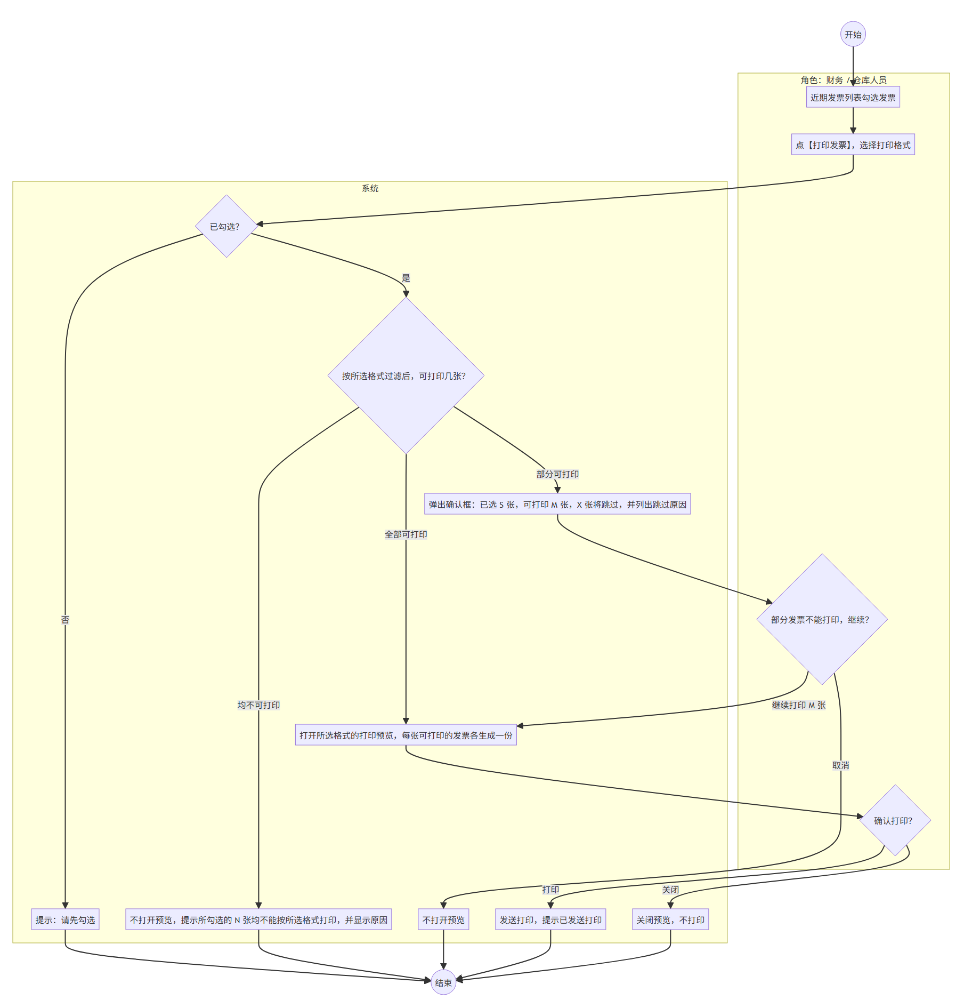
无。
• 前置条件：
1、用户已登录系统，具备“财务（电商）/
财务（零售）-发票管理-已开票-近期发票-打印发票”权限。
2、近期发票的【全部】【出库】或【入库】页签里至少有一张发票。
• 操作流程：
1、用户在近期发票的【全部】【出库】或【入库】页签，勾选一张或多张发票。
2、用户点列表上方的【打印发票】，在下拉里选择【DANFE】【简易DANFE】【简易DANFE
- 面单格式】或【NFC-e 小票】（【NFC-e
小票】只有零售的【全部】【出库】页签有）。
3、系统打开所选格式的打印预览弹窗（打印预览 · DANFE、打印预览 ·
简易DANFE、打印预览 · 简易DANFE - 面单格式、NFC-e
小票预览）。勾选的发票中有不能打印所选格式的发票时，系统先弹出【部分发票不能打印】确认框，规则见本功能的【四种打印格式的差异】。
4、用户点【打印】，系统发送打印，提示：“已发送打印”。系统关闭弹窗。
5、用户点【关闭】，系统关闭弹窗，不执行任何操作。
•
后置条件：生成打印任务，发送到打印机；发票数据和发票状态不变，近期发票列表不变。
• 校验规则：
1、当用户点【打印发票】时，若没有勾选任何发票，则不打开预览，提示：“请先勾选”。系统不执行打印。
2、当勾选的发票全部不能打印所选格式时，不打开预览，提示原因：选择【NFC-e
小票】时，提示：“勾选的 N 张都不能打印 NFC-e 小票：NFC-e 小票只能打印
NFC-e 65 的销售发票；已拒绝的发票不能打印。”。选择
DANFE、简易DANFE、面单时的提示原文见本功能【3、批量勾选时按格式过滤】表。
• 提示消息：无。
• 消息通知：无。
•
操作日志：用户操作成功后，系统在操作日志模块记录：操作时间、操作账号、操作模块、操作功能、操作明细、IP地址。
| 字段 | 字段说明 | 规则/示例 |
|---|---|---|
| 操作时间 | 操作发生时间 | 精确到：年月日时分秒，格式：DD/MM/YYYY HH:mm:ss |
| 操作账号 | 登录系统的账号名称 | 例如：ana@tfretail.com.br |
| 操作模块 | 具体菜单名称 | 例如：财务（零售）-发票管理-已开票-近期发票 |
| 操作功能 | 本次操作触发的功能动作名称 | 例如：打印发票 |
| 操作明细 | 本次操作的详细信息 | 例如：打印发票：共 3 张，发票号=[001 / 000000720, 001 / 000000721, 001 / 000000722]，模板=NFC-e 小票 |
| IP地址 | 操作终端 IP | 例如：189.45.12.8 |
5.3.4.5.2 开具CC-e
1、只有发票模型为 NF-e 55、发票状态为“已开票”的销售发票、采购退票、货物转移、货物调拨、销售退票、进口采购可以开具 CC-e。近期发票和历史发票页面均可开具 CC-e，不受开票时间限制，历史发票同样可以开具（巴西法规未规定期限）。
2、以下发票不能开具 CC-e：销售发票 · NFC-e 65（仅零售）、发票状态为“已取消”“已拒绝”的发票，以及发票类型为 CC-e 的发票。
根据巴西税法规定，销售发票 · NFC-e 65 不能开具 CC-e。
3、CC-e 只能对原发票开具，不能对新生成的 CC-e 再开具 CC-e；每张原发票最多开具 20 次。
4、已开具过 CC-e 的发票再次开具时，前一次的更正将作废，须将前一次更正的内容一并重新填写。税局以最近一次 CC-e 为准，此前的 CC-e 随之失效。例如：第一次更正了收货地址，第二次需更正商品描述，第二次的修正内容须同时写明收货地址和商品描述两处；如果只写商品描述，第一次对收货地址的更正即失效。
5、可以更正：地址、商品描述、重量、包装、承运人、备注等不影响税额的信息，以及不改变税额的 CFOP 和 CST。
6、不可以更正：金额、数量、税率、更换开票方或收货方（只修改地址等登记信息可以更正）、开票日期和出库日期、序列号和发票号、出口报关内容和分期付款。
7、开具 CC-e 不进入【开票中】和【开票失败】：
（1）开票中：CC-e 提交后，税局当场返回结果，不需要排队等待授权，因此不进入【开票中】。等待结果期间，【开具 CC-e】弹窗的【开票】按钮显示加载状态，不能重复点击。（2）开票失败：税局拒绝或未回复时，系统不生成 CC-e，原发票和事件编号都不变，这张发票不进入【开票失败】，也没有【修改重提】。单张开具时，弹窗不关闭，已填写的修正内容保留，在弹窗顶部用红字显示失败原因（以“开具失败：”开头）；批量开具时，有失败的发票时弹出【开具 CC-e 结果】，只列失败的发票，失败的可以导出；全部成功时只在页面顶部提示成功张数。
（3）重新开具：单张开具时，用户修改修正内容后再次点【开票】；关闭弹窗后，回到原发票再次点【开具 CC-e】。税局未回复（超时）时，5 分钟后重新开具。
说明：
1、CC-e 不改原发票，只是附在原发票上的一段文字，所以每张发票只需填写【修正内容】一项。批量开具时，每张发票各占一行，分别填写各自的修正内容。
2、弹窗顶部显示提示框“什么信息不能用CC-e修正？”，列出不能更正和可以更正的内容，并说明“每张发票最多可修正 20 次”。
修正内容输入规则
| 字符 | 能不能用 | 不符合时字段下方的提示（{x} 显示用户实际写的内容） |
|---|---|---|
| 字母、数字、空格、英文标点（, . ; : -） | 能 | — |
| 葡萄牙文带音字母（á ç ã é 等） | 能 | — |
| 换行 | 不能，多处更正只能写在同一段里。 | “不能换行：多处更正请写在同一段里，用英文分号“;”隔开” |
| 中文标点（，。；：！？、“”【】等） | 不能，税局会拒收。 | “包含中文标点“{x}”：请改用英文标点，如 , . ; : -” |
| 中文 | 不能，税局会拒收。 | “包含中文“{x}”：修正内容会上传税局，必须用葡萄牙文填写，例：Onde se lê Rua A, 100, leia-se Rua B, 200” |
| 箭头（→ 等） | 不能，税局会拒收。 | “包含箭头“{x}”：不能用箭头表示【改为】，请写成 Onde se lê 原内容, leia-se 正确内容” |
| 其他不在上面的字符（★ € 等） | 不能，税局会拒收。 | “包含不能使用的字符“{x}”：只能用字母、数字、空格、英文标点（如 , . ; : -）和葡萄牙文带音字母（如 á ç ã é）” |
按页签、发票类型说明：
| 页签 | 发票类型 | 能否开具 CC-e | 原因和说明 | 开出什么票 |
|---|---|---|---|---|
| 出库 | 销售发票 · NF-e 55 | 能（单张、批量） | 发票状态为“已开票”的都可以开 | 一张 CC-e，进入近期发票的【全部】【CC-e】页签。 |
| 出库 | 销售发票 · NFC-e 65（仅零售） | 不能 | 税局不接受对 NFC-e 65 开具 CC-e。行上【更多】里不显示【开具 CC-e】，批量勾选时自动跳过。 | — |
| 出库 | 采购退票 · NF-e 55 | 能（单张、批量） | 发票状态为“已开票”的都可以开 | 一张 CC-e，进入近期发票的【全部】【CC-e】页签。 |
| 出库 | 货物转移 · NF-e 55 | 能（单张、批量） | 发票状态为“已开票”的都可以开 | 一张 CC-e，进入近期发票的【全部】【CC-e】页签。 |
| 出库 | 货物调拨 · NF-e 55 | 能（单张、批量） | 发票状态为“已开票”的都可以开 | 一张 CC-e，进入近期发票的【全部】【CC-e】页签。 |
| 入库 | 销售退票 · NF-e 55 | 能（单张、批量） | 发票状态为“已开票”的都可以开具。可以更正和不可以更正的内容与其他发票类型相同，见本节第 5 条、第 6 条。 | 一张 CC-e，进入近期发票的【全部】【CC-e】页签。 |
| 入库 | 进口采购 · NF-e 55 | 能（单张、批量） | 该发票由我方自行开具，发票状态为“已开票”的都可以开。 | 一张 CC-e，进入近期发票的【全部】【CC-e】页签。 |
| CC-e | CC-e | 不能 | 发票类型为 CC-e 的发票不能再开 CC-e，要再次更正只能对原发票开具。CC-e 页签的行上只有【导出XML】，也不能勾选。 | — |
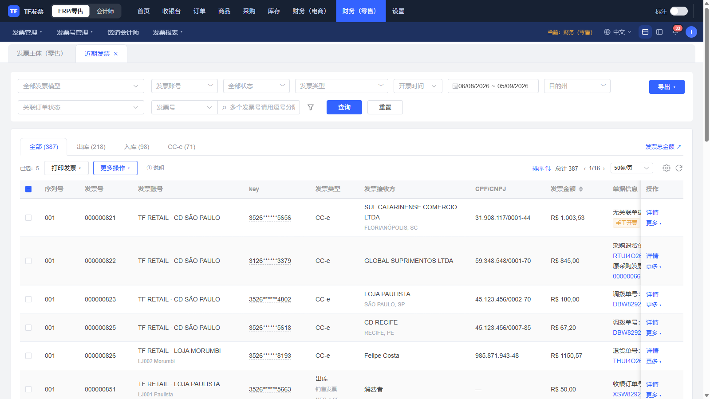
• 提交内容：系统向税局提交一条 CC-e 事件，内容包括：原发票的
Key、发票模型（NF-e 55）、开票方 CNPJ、事件编号（该原发票第几次开具
CC-e，取值 1～20）、修正内容。
• 税局返回结果及处理方式：
1、税局接受：税局登记这次更正，并返回协议号。CC-e
不是新发票，不占用新的发票号，也不生成新的
Key。系统在近期发票的【全部】【CC-e】页签增加一条 CC-e
记录，显示原发票的序列号、发票号和
Key，以及事件编号和协议号。原发票的事件编号加
1，历史记录增加一条。
2、税局拒绝（Rejeição xxx）：税局返回拒绝码和原因，系统不生成
CC-e。
3、税局未回复（超时）：系统不生成 CC-e，用户可以重新开具。界面上的提示见
5.3.4.5.2.5 用例规则操作流程第
4 条、第 5 条。
4、税局返回 Rejeição
573（重复事件）：通常发生在上一次提交超时后重新开具时，说明上一次提交已在税局登记成功。系统向税局查询这条
CC-e 事件，取回事件编号和协议号，按开具成功处理，不提示开具失败。
税局返回结果的页面截图见 5.3.4.5.2.3 原型“五、税局返回结果”。
一、列表页
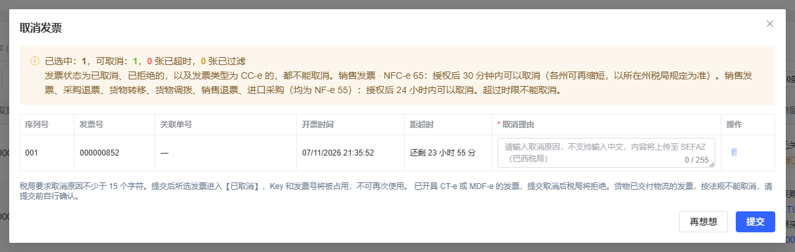
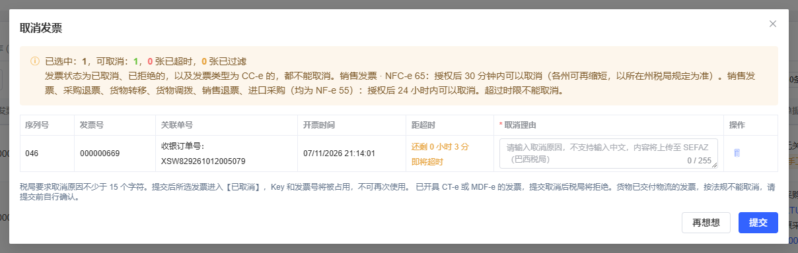
二、开具 CC-e 弹窗：可以开具的发票
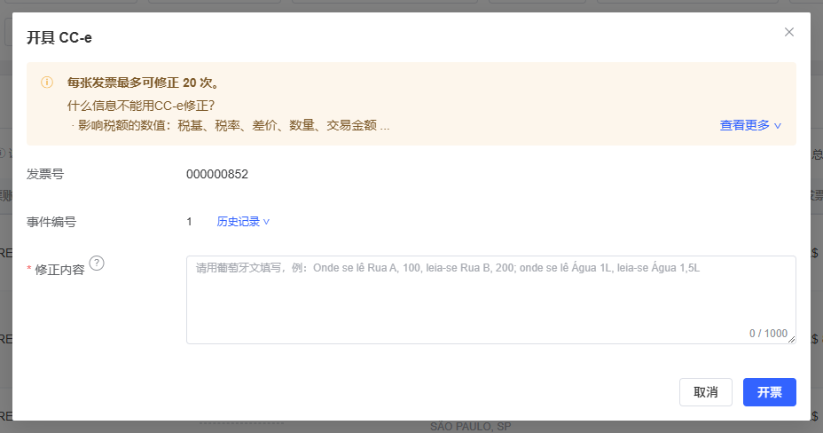

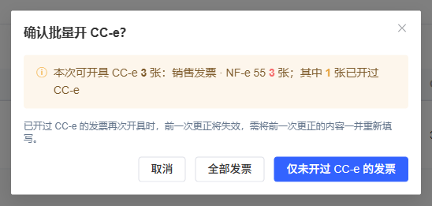

三、不能开具的发票

四、修正内容校验

五、税局返回结果


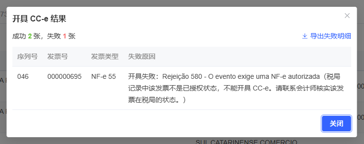
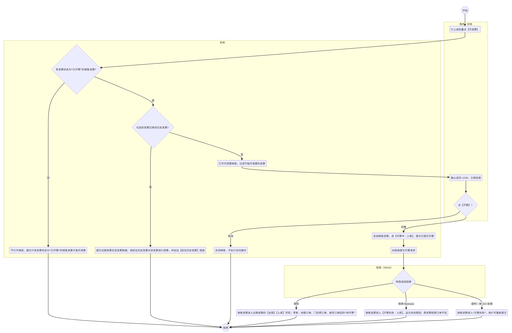
单张开具（开具 CC-e 弹窗）：
| 字段名称 | 类型 | 是否必填/必选 | 默认值 | 约束规则 |
|---|---|---|---|---|
| 发票号 | 只读文本 | 否 | 回显 | 取自所点击行的发票号 |
| 事件编号 | 只读文本 + 【历史记录】链接 | 否 | 回显 | 自动计数：该原发票已开具 N 次 CC-e 时显示 N+1；已开满 20 次时显示“20（已达上限）”；点击【历史记录】可查看每次的序号、修正内容和时间。 |
| 修正内容 | 多行文本框 | 是 | 请用葡萄牙文填写，例：Onde se lê Rua A, 100, leia-se Rua B, 200; onde se lê Água 1L, leia-se Água 1,5L | 15～1000 个字符。内容会上传税局，只能用 Latin-1 字符（见【修正内容输入规则】），不符合时字段下方逐项提示。每次打开弹窗时，修正内容为空，不保留上一次填写的内容。可以更正和不可以更正的内容见 5.3.4.5.2.1 第 5 条、第 6 条。字段名【修正内容】后有“？”，鼠标悬停时显示浮层，分 4 条显示，每条另起一行：“1、请写明错误内容及正确内容。必须用葡萄牙文填写，不能输入中文，不能换行；多处更正写在一起，用英文分号“;”隔开。”“2、已开具过 CC-e 的发票再次开具时，前一次的更正将作废，须将前一次更正的内容一并重新填写（例：第一次更正了收货地址，第二次更正商品描述时，须同时填写两处）。”“3、可以更正：地址、商品描述、重量、包装、承运人、备注等不影响税额的信息，以及不改变税额的 CFOP 和 CST；”“4、不可以更正：金额、数量、税率、更换开票方或收货方（只修改地址等登记信息可以更正）、开票日期和出库日期、序列号和发票号、出口报关内容和分期付款不能用 CC-e 更正。例：Onde se lê Rua A, 100, leia-se Rua B, 200; onde se lê Água 1L, leia-se Água 1,5L。错误示例：Onde se lê quantidade 2, leia-se 3（数量不能用 CC-e 更正）。” |
批量开具（开具 CC-e 弹窗）：
| 字段名称 | 类型 | 是否必填/必选 | 默认值 | 约束规则 |
|---|---|---|---|---|
| 统一填写 | 多行文本框 + 【应用到全部】按钮 | 否 | 请用葡萄牙文填写，例：Onde se lê Rua A, 100, leia-se Rua B, 200; onde se lê Água 1L, leia-se Água 1,5L | 最多 1000 个字符，右下角显示字数。点【应用到全部】时，把填写的内容填入表格每一行的【修正内容】，填入后每一行仍可单独修改。未填写时点【应用到全部】，提示：“请输入统一填写的修正内容”。每次打开弹窗时为空。 |
| 序列号 | 只读文本 | 否 | 回显 | 取自该发票的序列号。 |
| 发票号 | 只读文本 | 否 | 回显 | 取自该发票的发票号。 |
| 事件编号 | 只读文本 | 否 | 回显 | 该原发票已开具 N 次 CC-e 时显示 N+1。字段名后有“?”，鼠标悬停时显示：“本次开具的是这张发票的第几次更正（每张发票最多可修正 20 次）。” |
| 修正内容 | 多行文本框（每张发票一行） | 是 | 请用葡萄牙文填写，例：Onde se lê Rua A, 100, leia-se Rua B, 200; onde se lê Água 1L, leia-se Água 1,5L | 15～1000 个字符，右下角显示字数。字符规则、字段名后的“?”浮层和逐项提示与单张开具相同，错误在这一行输入框下方红字显示。该发票已开具过 CC-e 时，输入框下方显示提示：“已开过 N 次，需包含此前更正内容”（N 为该发票已开具 CC-e 的次数）。每次打开弹窗时为空。 |
| 操作 | 【删除】 | 否 | 无 | 点【删除】，把这张发票从本次开具中移除，不提交税局。只剩一张时不能删除。 |
• 前置条件：
1、用户已登录系统，具备“财务（电商）/
财务（零售）-发票管理-已开票-近期发票-开具 CC-e”权限。
2、近期发票的【全部】【出库】或【入库】页签里，有发票模型为 NF-e
55、发票状态为“已开票”、发票类型不是 CC-e 的发票。
• 操作流程：
1、单张：用户在近期发票的【全部】【出库】或【入库】页签，点操作列【更多】里的【开具
CC-e】，系统打开【开具 CC-e】弹窗，显示发票号和事件编号。
2、批量：
用户勾选多张发票，点列表上方【更多操作】里的【开具 CC-e】，系统先打开“确认批量开 CC-e？”弹窗，显示：“本次可开具 CC-e N 张：{各发票类型及张数}；其中 N 张已开过 CC-e”。下面一行说明：“已开过 CC-e 的发票再次开具时，前一次更正将失效，需将前一次更正的内容一并重新填写。”。
确认弹窗中“本次可开具”的张数不包含已修正 20 次的发票。
说明：{各发票类型及张数} 按发票类型列出张数，例如“销售发票 · NF-e 55 1 张”。
用户点【全部发票】时，对本次可开具的发票全部开具；点【仅未开过 CC-e 的发票】时，只对从未开具过 CC-e 的发票开具，已开过 CC-e 的发票不在本次开具范围内，计入“已跳过”。
若勾选的发票均已开过 CC-e，则不打开【开具 CC-e】弹窗，提示：“勾选的 N 张发票均不能开具 CC-e：已开过 CC-e 的发票 N 张：本次不开具。”。系统关闭确认弹窗。
用户点【全部发票】后，系统打开【开具 CC-e】弹窗，表格列出本次可开具的全部发票，每张一行，包括已开过 CC-e 的发票。用户点【仅未开过 CC-e 的发票】后，表格只列从未开具过 CC-e 的发票。弹窗顶部显示：“已选中：N，可开具 CC-e：M。已跳过 X 张：{跳过的类别、张数和原因}。”。可开具张数显示为绿色，跳过张数标红；没有跳过的发票时，不显示“已跳过”部分。
说明：{跳过的类别、张数和原因} 按实际情况列出，没有出现的类别不列。例如：“发票类型为 CC-e 的 N 张：不能开具，如需再次更正，请对原发票开具；已取消、已拒绝的发票 N 张：不能开具；销售发票 · NFC-e 65 共 N 张：不支持开具 CC-e；已修正 20 次的发票 N 张：已达上限，不能再开具；已开过 CC-e 的发票 N 张：本次不开具”。
用户可以在【统一填写】中填写内容后点【应用到全部】，也可以逐行填写或修改每一行的【修正内容】。点某一行的【删除】，该发票从本次开具中移除，弹窗顶部的可开具张数随之减少。
3、单张时，用户可以点【历史记录】，查看该发票以往每次的修正内容。
4、用户填写修正内容后点击【开票】。按钮显示加载状态，直到税局返回结果，期间不能重复点击。单张开具成功后，系统提示：“发票
{发票号} 的 CC-e
开具成功”。系统关闭弹窗。批量开具时，每张发票按自己那一行的修正内容提交税局；全部成功时，系统关闭弹窗，页面顶部提示：“CC-e
开具成功 N 张”。有失败时，系统关闭弹窗，弹出【开具 CC-e
结果】。近期发票的【CC-e】页签新增开具成功的 CC-e。
5、税局拒绝或未回复时：单张开具时，弹窗不关闭，已填写的修正内容保留，在弹窗顶部用红字显示失败原因（以“开具失败：”开头），用户修改后可以再次点【开票】；批量开具时，系统关闭弹窗；有失败的发票时弹出【开具
CC-e
结果】，只列失败的发票，失败的可以导出；全部成功时只在页面顶部提示成功张数，规则见
4.2.8 第 9 条。
6、开具过程中和开具失败后，CC-e
都不进入【开票中】【开票失败】：等待税局返回结果时，用户停留在【开具
CC-e】弹窗；税局拒绝或未回复的发票，单张开具时在弹窗里修改后再次点【开票】，批量开具时在【开具
CC-e 结果】中查看失败原因，之后回到原发票再次点【开具
CC-e】。
7、用户点【取消】，系统关闭弹窗，不执行任何操作。
• 后置条件：
1、近期发票的【全部】【CC-e】页签增加一条 CC-e
记录，显示原发票的序列号、发票号和 Key，以及事件编号和协议号。CC-e
不是新发票，不占用新的发票号，也不生成新的 Key。
2、原发票不变，事件编号加 1，历史记录增加本次的修正内容。批量开具时，每张发票的历史记录增加的是这一行填写的修正内容。
3、税局拒绝或未回复时，系统不生成
CC-e，原发票和事件编号不变，这张发票不进入【开票中】【开票失败】。
4、原发票的 Key 浮层只显示 Key 和
ID，不显示修正记录。原发票开具过几次 CC-e，【CC-e】页签就有几条对应的
CC-e 记录；每条记录的 Key 浮层显示 Key、ID、事件编号和协议号，与【开具
CC-e】弹窗的【历史记录】一一对应。
• 校验规则：
1、当用户点【开具 CC-e】时，若勾选的发票均不能开具（发票类型为
CC-e、发票模型为 NFC-e
65（仅零售）、发票状态为已取消或已拒绝），则不打开弹窗，提示本次勾选的发票所属类别及各类张数（张数标红，未勾选的类别不列出）：“勾选的
N 张都不能开 CC-e：发票类型为 CC-e 的 N
张：不能开具，如需再次更正，请对原发票开具；已取消、已拒绝的发票 N
张：不能开具；销售发票 · NFC-e 65 共 N 张：不支持开具 CC-e。”例：勾选 25
张已取消、已拒绝的发票，提示：“勾选的 25 张都不能开
CC-e：已取消、已拒绝的发票 25 张：不能开具。”。
2、当批量勾选的发票中部分可开具、部分不可开具时（不可开具的是发票类型为
CC-e、发票模型为 NFC-e 65（仅零售）、发票状态为已取消或已拒绝、已修正 20
次的发票），不可开具的自动跳过，不在表格中列出，只在弹窗顶部计入“已跳过”，只对表格中的发票开具。
3、当用户点【开票】时，若该原发票已开具 20 次
CC-e，则不提交税局，提示：“开具失败：该发票已修正 20 次，不能再开具
CC-e（每张发票最多可修正 20 次）。”。系统不生成 CC-e。
4、当税局拒绝时，提示：以“开具失败：”开头，后面加上税局返回的原因，不生成
CC-e。
5、当发票模型为 NFC-e 65 时，行上【更多】里不显示【开具 CC-e】。
6、当发票状态为“已取消”“已拒绝”时，行上【更多】里不显示【开具
CC-e】。
7、当用户点【开票】时，若某一行的修正内容未填写、少于
15 个字符、超过 1000
个字符，或包含不允许使用的字符，则不提交税局，在该行输入框下方以红字提示对应的错误（见下方提示消息表和【修正内容输入规则】表）；任一行有错误时，本次所有发票都不提交。
8、批量开具时，已修正 20
次的发票在打开【开具
CC-e】弹窗时即被跳过，计入“已跳过”，不提交税局。
9、当用户重新开具时，若税局返回 Rejeição
573（重复事件），则系统向税局查询并取回协议号，按开具成功处理：单张时提示：“发票
{发票号} 的 CC-e 开具成功。税局返回 Rejeição
573（重复事件），说明上一次超时的提交已在税局登记成功；系统已向税局查询并取回协议号，按开具成功处理。”。批量时在【开具
CC-e 结果】中列为成功，说明栏显示同样的内容。
• 提示消息：
在当前页面的字段下面红色字体提示：
| 字段名称 | 未填写/未选择提示 | 输入错误提示 |
|---|---|---|
| 修正内容 | 请输入修正内容 | 修正内容至少 15 个字符；修正内容最多 1000 个字符；输入不允许使用的字符时，按【修正内容输入规则】表逐项提示，多项同时出错时逐条编号列出 |
| 统一填写 | 请输入统一填写的修正内容 | — |
• 消息通知：无。
•
操作日志：用户操作成功后，系统在操作日志模块记录：操作时间、操作账号、操作模块、操作功能、操作明细、IP地址。
| 字段 | 字段说明 | 规则/示例 |
|---|---|---|
| 操作时间 | 操作发生时间 | 精确到：年月日时分秒，格式：DD/MM/YYYY HH:mm:ss |
| 操作账号 | 登录系统的账号名称 | 例如：ana@tfretail.com.br |
| 操作模块 | 具体菜单名称 | 例如：财务（电商）-发票管理-已开票-近期发票 |
| 操作功能 | 本次操作触发的功能动作名称 | 例如：开具 CC-e |
| 操作明细 | 本次操作的详细信息 | 单张开具例如：开具 CC-e：原发票=001 / 000000708，事件编号=4，修正内容=Correção do CEP do destinatário；批量开具例如：开具 CC-e：共 3 张，成功 2 张（001 / 000000670，修正内容=Correção do CEP do destinatário；001 / 000000669，修正内容=Correção da descrição do produto），失败 1 张（001 / 000000701） |
| IP地址 | 操作终端 IP | 例如：189.45.12.8 |
| 发票类型 | 对应的业务类型 | 开具后单据的发票状态是否更改 | 原发票流向 | 新发票流向 |
|---|---|---|---|---|
| 销售发票 · NF-e 55 | 订单 › 收银订单、门店预订单、换货订单、批发订单 | 不更改 | 留在原列表，发票状态不变。 | 生成一张 CC-e，进入 财务（电商）或财务（零售）› 发票管理 › 已开票-近期发票 的【全部】【CC-e】页签（从历史发票开具的同样进入近期发票）。 |
| 销售退票 · NF-e 55 | 订单 › 退货订单、换货订单的退回件 | 不更改 | 留在原列表，发票状态不变。 | 生成一张 CC-e，进入 财务（电商）或财务（零售）› 发票管理 › 已开票-近期发票 的【全部】【CC-e】页签（从历史发票开具的同样进入近期发票）。 |
| 货物转移、货物调拨、开给加盟店的销售发票（发票模型都是 NF-e 55） | 库存 › 调拨管理 | 不更改 | 留在原列表，发票状态不变。 | 生成一张 CC-e，进入 财务（电商）或财务（零售）› 发票管理 › 已开票-近期发票 的【全部】【CC-e】页签（从历史发票开具的同样进入近期发票）。 |
| 采购退票 · NF-e 55 | 没有业务单据（只关联原采购发票） | 不更改 | 留在原列表，发票状态不变。 | 生成一张 CC-e，进入 财务（电商）或财务（零售）› 发票管理 › 已开票-近期发票 的【全部】【CC-e】页签（从历史发票开具的同样进入近期发票）。 |
| 发票模型为 NF-e 55 的发票 | 没有业务单据：手工开票、电商平台订单、进口采购 | 没有业务单据，不涉及。 | 留在原列表，发票状态不变。 | 生成一张 CC-e，进入 财务（电商）或财务（零售）› 发票管理 › 已开票-近期发票 的【全部】【CC-e】页签（从历史发票开具的同样进入近期发票）。 |
| 上述可开具 CC-e 的发票，税局拒绝或未回复时 | 订单 › 收银订单、门店预订单、换货订单、批发订单、退货订单；库存 › 调拨管理；没有业务单据的发票（含采购退票） | 不更改 | 留在原列表，发票状态不变，事件编号不增加，历史记录不增加。 | 不生成 CC-e |
5.3.4.5.3 取消发票
1、只有发票状态为“已开票”、且没有超过取消时限的发票可以取消发票。包括销售发票、采购退票、货物转移、货物调拨、销售退票、进口采购。用户在近期发票的【全部】【出库】【入库】页签操作，可以单张或批量取消。历史发票没有【取消发票】。
2、取消时限从税局授权时开始计算：发票模型为 NF-e 55 的发票，授权后 24 小时内可以取消；发票模型为 NFC-e 65 的发票，授权后 30 分钟内可以取消；各州可进一步缩短。
3、以下发票不能取消发票：发票状态为“已取消”“已拒绝”的发票、发票类型为 CC-e 的发票，以及已超过取消时限的发票。
4、已开具 CT-e 或 MDF-e 的发票，提交取消后税局将拒绝（Rejeição 690）。货物已交付物流的，按法规不能取消，系统无法判断，由用户自行确认。系统不拦截，只在弹窗底部提示。
5、发票取消后，发票状态变为“已取消”。这张发票的 Key 和发票号已被占用，不能再使用。
6、超过时限后，销售发票只能开退票。采购退票、货物转移、货物调拨、销售退票、进口采购不能开退票，因此必须在时限内取消。
按页签、发票类型说明：
| 页签 | 发票类型 | 能否取消 | 时限和原因 |
|---|---|---|---|
| 出库 | 销售发票 · NF-e 55 | 能 | 授权后 24 小时内可以取消；超过时限只能开退票。 |
| 出库 | 销售发票 · NFC-e 65（零售） | 能 | 授权后 30 分钟内可以取消；超过时限只能开退票（关联收银订单、门店预订单、换货订单的除外，见 5.3.4.5.4 第 4 条）。 |
| 出库 | 采购退票 · NF-e 55 | 能 | 授权后 24 小时内可以取消；这类发票不能开退票。 |
| 出库 | 货物转移 · NF-e 55 | 能 | 授权后 24 小时内可以取消；这类发票不能开退票。 |
| 出库 | 货物调拨 · NF-e 55 | 能 | 授权后 24 小时内可以取消；这类发票不能开退票。 |
| 入库 | 销售退票 · NF-e 55 | 能 | 授权后 24 小时内可以取消；这类发票不能开退票。 |
| 入库 | 进口采购 · NF-e 55 | 能 | 授权后 24 小时内可以取消；这类发票不能开退票。 |
| CC-e | CC-e | 不能 | CC-e 页签的行上只有【导出XML】，也不能勾选，没有【取消发票】。 |
7、取消发票弹窗底部固定提示：“税局要求取消原因不少于 15 个字符。提交后所选发票进入【已取消】，Key 和发票号将被占用，不可再次使用。已开具 CT-e 或 MDF-e 的发票，提交取消后税局将拒绝。货物已交付物流的发票，按法规不能取消，请提交前自行确认。”
8、取消发票弹窗顶部第 2 行的规则说明：零售为“发票状态为已取消、已拒绝的，以及发票类型为 CC-e 的，都不能取消。销售发票 · NFC-e 65：授权后 30 分钟内可以取消（各州可再缩短，以所在州税局规定为准）。销售发票、采购退票、货物转移、货物调拨、销售退票、进口采购（均为 NF-e 55）：授权后 24 小时内可以取消。超过时限不能取消。”；电商为“发票状态为已取消、已拒绝的，以及发票类型为 CC-e 的，都不能取消。销售发票、采购退票、货物转移、货物调拨、销售退票、进口采购（均为 NF-e 55）：授权后 24 小时内可以取消。超过时限不能取消。”
已超时提示（按页面和发票类型）
| 页面 | 发票类型 | 已超时时取消理由框显示的提示 |
|---|---|---|
| 财务（电商）或财务（零售）› 发票管理 › 已开票-近期发票、异常发票：【取消发票】 | 销售发票（NF-e 55、NFC-e 65） | 已超时，不能再取消，请改用【开退票】（异常发票里发票模型为 NFC-e 65 的除外，见下一行） |
| 财务（零售）› 发票管理 › 异常发票：【取消发票】 | 销售发票 · NFC-e 65 | 已超时，不能再取消，请联系会计师按所在州的规定处理 |
| 财务（零售）› 发票管理 › 已开票-近期发票：【取消发票】（关联收银订单、门店预订单、换货订单的发票） | 销售发票（NF-e 55、NFC-e 65） | 已超时，不能再取消。顾客退货请到【退货订单】办理 |
| 财务（电商）或财务（零售）› 发票管理 › 已开票-近期发票、异常发票：【取消发票】 | 采购退票、货物转移、货物调拨、进口采购、销售退票（发票模型都是 NF-e 55） | 已超时，不能再取消，也不支持开退票。请联系会计师处理 |
| 订单 › 收银订单、门店预订单：【取消发票】 | 销售发票 · NFC-e 65 | 已超时，不能再取消。顾客退货请到【退货订单】办理 |
| 订单 › 收银订单、门店预订单：【取消发票】（已开 55 发票） | 销售发票 · NF-e 55 | 已超时，不能再取消。顾客退货请到【退货订单】办理 |
| 订单 › 批发订单：【取消发票】 | 销售发票 · NF-e 55 | 已超时，不能再取消。货物已退回的，请到【近期发票】【开退票】；货物没有退回的，请联系会计师处理 |
| 订单 › 换货订单：【取消发票】（退回件） | 销售退票 · NF-e 55 | 已超时，不能再取消，也不支持开退票。请联系会计师处理 |
| 订单 › 换货订单：【取消发票】（换出件） | 销售发票 · NFC-e 65 | 已超时，不能再取消。顾客退货请到【退货订单】办理 |
| 订单 › 换货订单：【取消发票】（换出件） | 销售发票 · NF-e 55 | 已超时，不能再取消。顾客退货请到【退货订单】办理 |
| 订单 › 退货订单：【取消发票】 | 销售退票 · NF-e 55 | 已超时，不能再取消，也不支持开退票。请联系会计师处理 |
| 库存 › 调拨管理：【取消发票】（开关【调拨单出库前是否开票】开启时） | 货物转移、货物调拨 · NF-e 55 | 已超时，不能再取消，也不支持开退票。请联系会计师处理 |
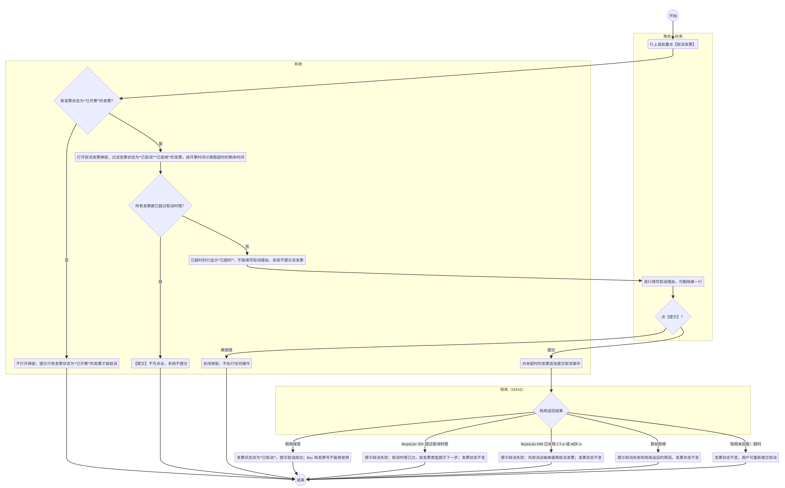
•
提交内容：系统向税局提交一条取消事件（RecepcaoEvento），内容包括：发票的
Key、发票模型（NF-e 55 或 NFC-e 65）、发票主体
CNPJ、授权协议号、取消理由。
• 税局返回结果及处理方式（各情况的提示语原文见 5.3.4.5.3.5 的校验规则）：
1、税局接受：发票状态改为“已取消”。单张时，提示：“发票 {发票号}
取消成功”。批量时，有失败的发票时弹出【取消发票结果】，只列失败的发票；全部成功时只在页面顶部提示成功张数（规则见
4.2.8 第 9 条）。
2、税局拒绝 Rejeição
501（超过取消时限）：按发票类型给出不同提示，发票状态不变。批量取消时，提示作为【取消发票结果】里这张发票的失败原因显示；单张取消时，显示在弹窗顶部。
3、税局拒绝 Rejeição 690（这张发票已关联 CT-e 或
MDF-e）：提示先取消运输单据，发票状态不变。
4、税局其他拒绝：提示：以“取消失败：”开头，后面加上税局返回的原因，发票状态不变。
5、税局未回复（超时）：发票状态不变，用户可以重新提交取消。
税局返回结果的页面截图见 5.3.4.5.3.3 原型“五、税局返回结果”。
一、列表页

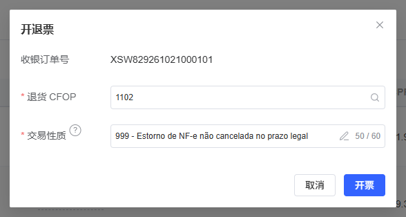

二、取消发票弹窗：可以取消的发票

三、取消发票弹窗：不能取消的发票
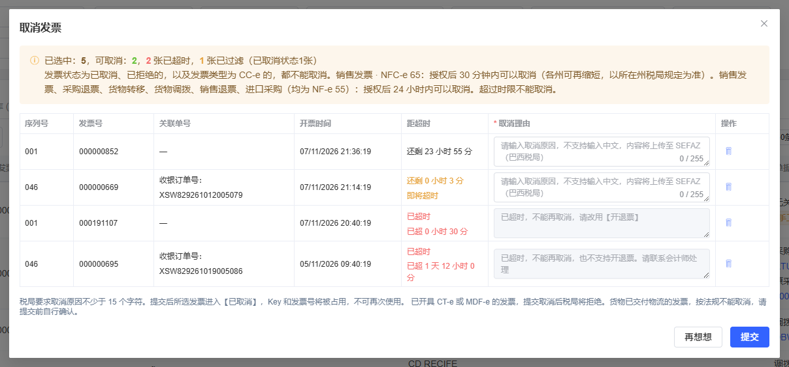
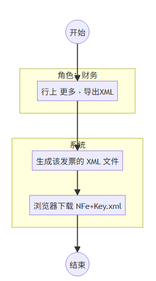
四、取消理由校验
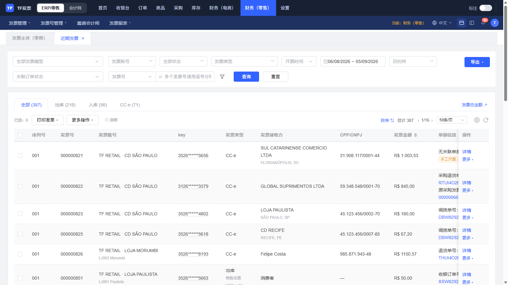
五、税局返回结果

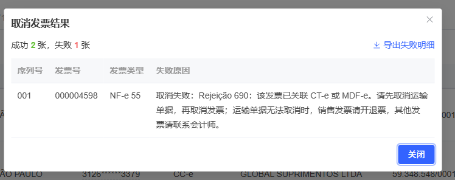
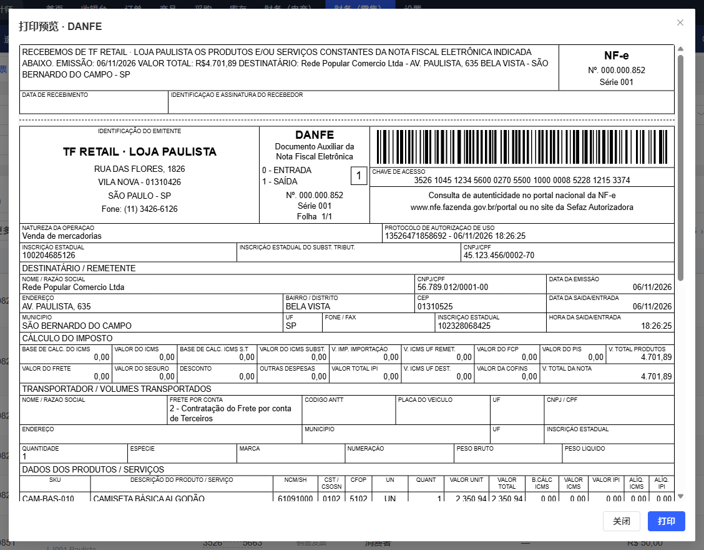
取消发票弹窗（表格形式，每张勾选的发票占一行）：
| 字段名称 | 类型 | 是否必填/必选 | 默认值 | 约束规则 |
|---|---|---|---|---|
| 序列号 | 只读文本 | 否 | 回显 | 取自这张发票的序列号 |
| 发票号 | 只读文本 | 否 | 回显 | 取自这张发票的发票号 |
| 关联单号 | 文本（只读） | 否 | 回显 | 取这张发票【单据信息】里的单号，前面带单号名称（如“收银订单号：”“调拨单号：”）；没有关联单据时显示“—”。 |
| 开票时间 | 只读文本 | 否 | 回显 | 取自这张发票的开票时间 |
| 距超时 | 只读文本 | 否 | 回显 | 按开票时间计算剩余的可取消时间：发票模型为 NF-e 55 的按 24 小时计算，NFC-e 65 的按 30 分钟计算；超过时限显示“已超时”。 |
| 取消理由 | 多行文本框 | 是 | 请输入取消原因，不支持输入中文，内容将上传至 SEFAZ（巴西税局） | 15～255 个字符，计算字数时不含首尾空格；达到 255 个字符后不能继续输入；不支持中文或特殊符号；不能只写标点或重复字符；已超时的行不能填写，占位文字按发票类型显示：销售发票为“已超时，不能再取消，请改用【开退票】”（零售中关联收银订单、门店预订单、换货订单的销售发票为“已超时，不能再取消。顾客退货请到【退货订单】办理”），其他发票为“已超时，不能再取消，也不支持开退票。请联系会计师处理”。 |
• 前置条件：
1、用户已登录系统，具备“财务（电商）/
财务（零售）-发票管理-已开票-近期发票-取消发票”权限。
2、近期发票的【全部】【出库】或【入库】页签里，有发票状态为“已开票”、且没有超过取消时限的发票。
• 操作流程：
1、单张：用户在近期发票列表，点操作列【更多】里的【取消发票】，系统打开【取消发票】弹窗。
2、批量：用户勾选多张发票，点列表上方【更多操作】里的【取消发票】，系统打开【取消发票】弹窗。弹窗顶部显示：“已选中
N，可取消 M，X 张已超时，F 张已过滤（原因）”。
3、用户可以点击某一行操作列的删除图标，将该行移出本次取消。
4、用户为每张可以取消的发票填写取消理由，点击【提交】，系统提交税局。成功后，系统提示：“发票
{发票号}
取消成功”（批量时显示【取消发票结果】），关闭弹窗，发票状态变为“已取消”。
5、用户点【再想想】，系统关闭弹窗，不执行任何操作。
• 后置条件：
1、所选发票的发票状态变为“已取消”，近期发票列表的状态列同步刷新。
2、取消后的发票号和 Key 已被占用，不能再使用。
3、取消成功后，关联的收银台订单、后台订单、调拨单同步回到“待开票”，原发票在订单发票记录中显示为“已取消”，取消时间为提交时间。
• 校验规则：
1、当用户点行上的【取消发票】时，若这一行的发票状态为“已取消”或“已拒绝”，则不打开弹窗，提示：“这张发票状态是已取消/已拒绝，不能取消。只有状态为“已开票”的发票才能取消（发票状态为已取消、已拒绝的，或发票类型为
CC-e 的，都不支持取消）。”。系统不执行任何操作。
2、当用户批量取消时，若勾选的发票全部是发票状态为“已取消”或“已拒绝”的发票，则不打开弹窗，提示：“勾选的
N
张都不能取消。只有状态为“已开票”的发票才能取消（发票状态为已取消、已拒绝的，或发票类型为
CC-e 的，都不支持取消）。”。系统不执行任何操作。
3、当弹窗打开时，若某张发票已超过取消时限（NF-e 55 超过 24 小时或 NFC-e
65 超过 30
分钟），则该行显示“已超时”，取消理由不能填写，系统不提交该发票。
4、当弹窗中所有发票均已超时时，【提交】不可点击，系统不提交。
5、当用户离开取消理由输入框或点【提交】时，按以下顺序检查，只提示第一条不符合的：未填写，提示：“请输入取消理由”。含中文或特殊符号，提示：“不支持中文或特殊符号”。少于
15 个字符，提示：“至少 15
个字符”。只有标点或重复字符，提示：“格式不正确”。有错误的行在字段下方红色字体提示，整批不提交。计算字数时不含首尾空格。取消理由最多输入
255 个字符，达到上限后不能继续输入。
6、当税局返回 Rejeição
501（超过取消时限）时，按发票类型提示，发票状态不变：销售发票，电商提示：“取消失败：Rejeição
501：取消时限已过（NF-e 超过 24
小时），请改为开退票。”。零售提示：“取消失败：Rejeição
501：取消时限已过（NF-e 超过 24 小时 / NFC-e 超过 30
分钟），请改为开退票。”。采购退票、货物转移、货物调拨、进口采购提示：“取消失败：Rejeição
501：取消时限已过（NF-e 超过 24
小时），这张发票不支持开退票。请联系会计师处理。”。销售退票提示：“取消失败：Rejeição
501：取消时限已过（NF-e 超过 24
小时），销售退票不支持开退票。请联系会计师处理。”。批量取消时，以上提示作为【取消发票结果】里这张发票的失败原因显示；单张取消时，显示在弹窗顶部。
7、当税局返回 Rejeição 690（这张发票已关联 CT-e 或
MDF-e）时，提示：“取消失败：Rejeição 690：该发票已关联 CT-e 或
MDF-e。请先取消运输单据，再取消发票；运输单据无法取消时，销售发票请开退票，其他发票请联系会计师。”。发票状态不变。
8、当税局返回其他拒绝时，提示：以“取消失败：”开头，后面加上税局返回的原因，发票状态不变。
9、当税局未回复（超时）时，发票状态不变，用户可以重新提交取消。
• 提示消息：
在当前页面的字段下面红色字体提示：
| 字段名称 | 未填写/未选择提示 | 输入错误提示 |
|---|---|---|
| 取消理由 | 请输入取消理由 | 不支持中文或特殊符号；至少 15 个字符；格式不正确 |
• 消息通知：无。
•
操作日志：用户操作成功后，系统在操作日志模块记录：操作时间、操作账号、操作模块、操作功能、操作明细、IP地址。
| 字段 | 字段说明 | 规则/示例 |
|---|---|---|
| 操作时间 | 操作发生时间 | 精确到：年月日时分秒，格式：DD/MM/YYYY HH:mm:ss |
| 操作账号 | 登录系统的账号名称 | 例如：ana@tfretail.com.br |
| 操作模块 | 具体菜单名称 | 例如：财务（零售）-发票管理-已开票-近期发票 |
| 操作功能 | 本次操作触发的功能动作名称 | 例如：取消发票 |
| 操作明细 | 本次操作的详细信息 | 例如：取消发票：发票号=001 / 000000720，取消理由=Cliente solicitou nota com CNPJ |
| IP地址 | 操作终端 IP | 例如：189.45.12.8 |
| 发票类型 | 对应的业务类型 | 取消后单据的发票状态是否更改 | 原发票流向 | 新发票流向 |
|---|---|---|---|---|
| 销售发票 · NFC-e 65、销售发票 · NF-e 55 | 订单 › 收银订单、门店预订单 | 更改：回到“待开票”，订单状态不变。 | 留在 财务（电商）或财务（零售）› 发票管理 › 已开票-近期发票，发票状态为“已取消”；订单后台详情页【发票信息】页签的历次发票表格、收银台 › 订单管理的【历史发票】区块，这张发票都标为“已取消”。 | 无（在订单上重新开票时生成） |
| 销售退票 · NF-e 55 | 订单 › 退货订单 | 更改：回到“待开票” | 留在 财务（电商）或财务（零售）› 发票管理 › 已开票-近期发票 的【入库】页签，发票状态为“已取消”。 | 无（在退货订单上重新开票时生成） |
| 换货订单（换出件）：销售发票 · NFC-e 65 或 NF-e 55；关联退货订单（退回件）：销售退票 · NF-e 55 | 订单 › 换货订单、退货订单 | 更改：被取消的那张发票所在的单据回到“待开票”，关联的另一张单据不受影响。 | 留在 财务（电商）或财务（零售）› 发票管理 › 已开票-近期发票，被取消的那张发票状态为“已取消”，另一张不变。 | 无（在该单据上补开时生成） |
| 销售发票 · NF-e 55 | 订单 › 批发订单 | 更改：订单状态和开票状态都回到“待开票”，开票时间清空。 | 留在 财务（电商）或财务（零售）› 发票管理 › 已开票-近期发票，发票状态为“已取消”；订单后台详情页【发票信息】页签的历次发票表格里，这张发票标为“已取消”。 | 无（在批发订单上重新开票时生成） |
| 货物转移、货物调拨、开给加盟店的销售发票（发票模型都是 NF-e 55） | 库存 › 调拨管理 | 更改：回到“待开票”；货已出库的调拨单：待确认。开关【调拨单出库前是否开票】关闭时，调拨管理不显示开票状态；该调拨单与已取消发票的关联解除，可以在 发票管理 › 草稿中 重新关联开票。 | 留在 财务（电商）或财务（零售）› 发票管理 › 已开票-近期发票，发票状态为“已取消”。 | 无（在调拨单上重新开票时生成） |
| 采购退票 · NF-e 55 | 没有业务单据（只关联原采购发票） | 更改：原采购发票恢复对应商品的可退数量。 | 留在 财务（电商）或财务（零售）› 发票管理 › 已开票-近期发票，发票状态为“已取消”。 | 无（需要时在 采购发票 ›【开退货发票】或 发票管理 › 草稿中 ›【创建发票】重新开具） |
| 销售发票、货物转移、货物调拨、进口采购 | 没有业务单据：手工开票（在 发票管理 › 草稿中 创建）、电商平台订单 | 没有业务单据，不涉及。 | 留在 财务（电商）或财务（零售）› 发票管理 › 已开票-近期发票，发票状态为“已取消”。 | 无；手工开具的发票可以在 发票管理 › 草稿中 重新创建。 |
5.3.4.5.4 开退票
1、只有发票状态为“已开票”的销售发票（NF-e 55，以及零售的 NFC-e 65）可以开退票。用户在近期发票的【全部】【出库】页签操作，可以单张或批量开退票。开退票后系统另开一张销售退票（入库 · NF-e 55），引用原发票。
2、以下发票不能开退票：发票状态为“已取消”“已拒绝”的发票，以及发票类型为销售退票、采购退票、CC-e、货物转移、货物调拨、进口采购的发票；【入库】【CC-e】页签没有【开退票】。已移到历史发票的发票，须到历史发票开退票。零售中关联收银订单、门店预订单、换货订单的发票也不能开退票，见第 4 条。
3、开退票只在税务上冲销原发票，原发票不变，不生成退货单，也不变动库存。电商和零售中，批发订单的发票开退票成功后，批发订单回到“待开票”。
4、零售中，关联收银订单、门店预订单、换货订单的发票（【单据信息】里有收银订单号、门店预订单号或换货单号）不能在这里开退票：单张点【开退票】时不打开弹窗并提示原因；批量开退票时自动过滤，弹窗顶部过滤原因显示“关联门店订单”。这三类订单的顾客退货在 订单 › 售后管理 › 退货订单 办理，由退货订单开销售退票。电商没有这三类订单，不受影响。同一订单重复开出的发票会进入异常发票：NF-e 55 授权后 24 小时内【取消发票】，超过后【开退票】；NFC-e 65 授权后 30 分钟内【取消发票】，超过后系统不能取消，也不开退票，请联系会计师按所在州的规定处理（见 5.3.6）。
5、开退票用于货物已退回的情况，销售退票的发票用途（finNFe）为 4（退货）。交易未发生、货物没有退回的，不开退票，请联系会计师办理超期取消。
6、开退票按原发票整张开具，不能选择商品。按商品退货由业务单据发起：顾客退货在 订单 › 售后管理 › 退货订单 办理，向供应商退货在 采购发票 ›【已导入】›【更多】›【开退货发票】或 发票管理 › 草稿中 ›【创建发票】开具采购退票。
按页签、发票类型说明：
| 页签 | 发票类型 | 能否开退票 | 原因和说明 | 开出什么票 |
|---|---|---|---|---|
| 出库 | 销售发票 · NF-e 55 | 能（单张、批量），仅限发票状态为“已开票”。 | 销售发票超过时限不能取消时，用销售退票冲销原发票。 | 一张销售退票（入库 · NF-e 55），引用原发票。 |
| 出库 | 销售发票 · NFC-e 65（零售） | 能（单张、批量），仅限发票状态为“已开票”，且未关联收银订单、门店预订单、换货订单。 | 超过 30 分钟不能取消，手工开的发票只能开退票冲销原发票；关联收银订单、门店预订单、换货订单的不能开退票，顾客退货请在 订单 › 售后管理 › 退货订单 办理 | 一张销售退票（入库 · NF-e 55），引用原 NFC-e 65 |
| 出库 | 销售发票 · NF-e 55、NFC-e 65（零售：关联收银订单、门店预订单、换货订单） | 不能（单张点击后拦截；批量时自动过滤） | 这三类订单的顾客退货在 订单 › 售后管理 › 退货订单 办理 | — |
| 出库 | 采购退票 · NF-e 55 | 不能 | 采购退票本身已经是退货发票，不能再开退票。 | — |
| 出库 | 货物转移 · NF-e 55 | 不能 | 只能取消，不能开退票。 | — |
| 出库 | 货物调拨 · NF-e 55 | 不能 | 只能取消，不能开退票。 | — |
| 入库 | 销售退票 · NF-e 55 | 不能（【入库】页签没有这个入口） | 销售退票本身已经是退货发票，不能再开退票。 | — |
| 入库 | 进口采购 · NF-e 55 | 不能（【入库】页签没有这个入口） | 只有销售发票能开退票 | — |
| CC-e | CC-e | 不能 | 发票类型为 CC-e 的发票不是销售发票；CC-e 页签的行上只有【导出XML】。 | — |

• 提交内容：系统向税局提交开票请求（NFeAutorizacao），再用
NFeRetAutorizacao 查询结果。内容包括：发票模型（NF-e
55）、序列号（série）、新发票号、发票主体 CNPJ、退货 CFOP（州内
1202、跨州 2202；ST 商品 1411/2411，自产商品
1201/2201）、交易性质、引用的原发票 Key、商品 NCM、接收方
CPF/CNPJ。
• 税局返回结果及处理方式：
1、税局授权：销售退票的发票状态为“已开票”，出现在近期发票的【全部】【入库】页签。零售中，原发票关联批发订单的，批发订单同步恢复为“待开票”。
2、税局拒绝（Rejeição xxx）：销售退票进入【开票失败 ›
入库】，显示失败原因；公司税务类型与原发票不一致的，系统在提交前拦截，不提交税局，见本节校验规则第
4 条。
3、税局未回复（超时）：进入“开票失败”，用户可以重新提交。
税局返回结果的页面截图见 5.3.4.5.4.3 原型“四、税局返回结果”。
一、列表页
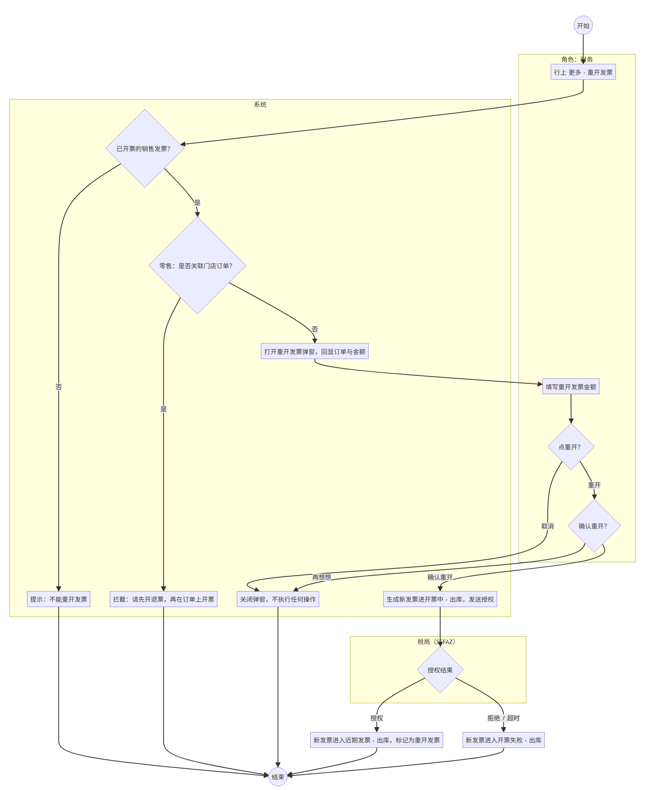
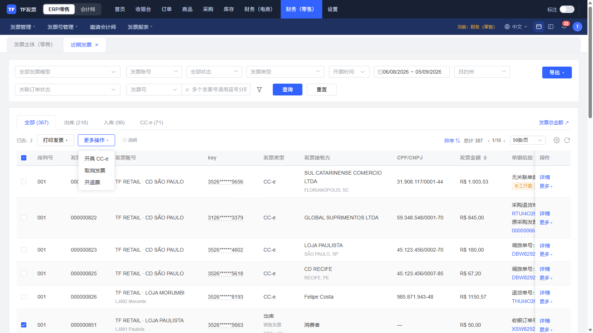
二、开退票弹窗：可以开退票的发票
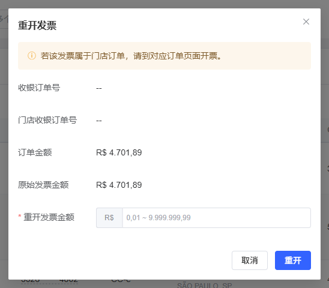
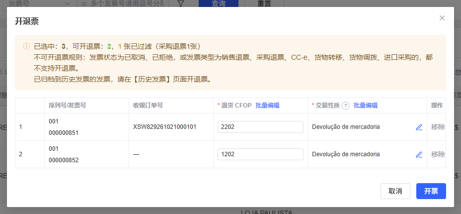
三、不能开退票的发票

四、税局返回结果
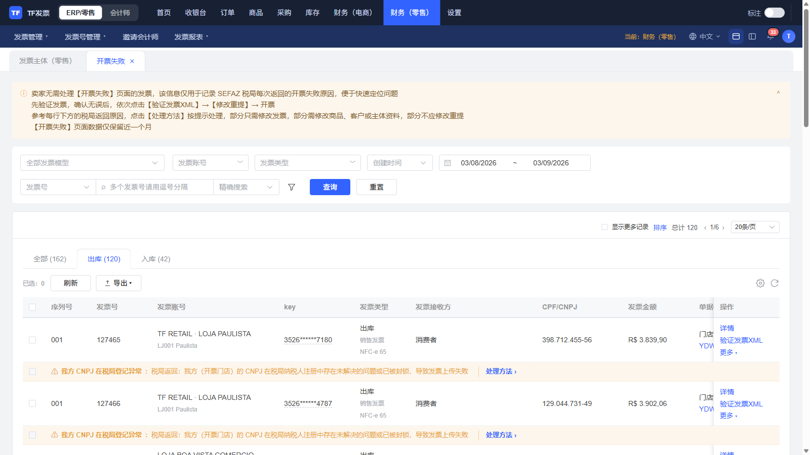
单张开退票弹窗：
| 字段名称 | 类型 | 是否必填/必选 | 默认值 | 约束规则 |
|---|---|---|---|---|
| 订单号 | 只读文本 | 否 | 回显 | 取自该行【单据信息】中的订单号 |
| 退货 CFOP | 文本框 + 选择 CFOP | 是 | 1202 | 4 位数字；可以点搜索图标【选择CFOP】选择。输入框下方说明：“州内退货用 1202，跨州用 2202；原发票为 ST 商品的用 1411/2411，自产商品用 1201/2201。”。 |
| 交易性质 | 文本（可编辑） | 是 | Devolução de venda | 最多 60 个字符；说明开票方与接收方之间的交易类型；标签后有 ? 图标，鼠标悬停显示：电商为“开退票用于货物已退回的情况：不会作废原发票，而是另开一张销售退票（入库，引用原发票）冲销原发票的税务；开具后在【入库】页签查看。交易未发生、货物没有退回的，请联系会计师办理超期取消。”；零售为“开退票用于货物已退回的情况，会另开一张销售退票（入库，引用原发票）。此处不生成退货单，不变动库存；顾客实物退货请在 订单 › 退货订单 中处理。交易未发生、货物没有退回的，请联系会计师办理超期取消。关联收银订单、门店预订单、换货订单的发票不能在这里开退票；批发订单的发票开退票成功后，批发订单回到“待开票”，可重新开票。”。 |
批量开退票弹窗（表格形式，每张能开退票的发票占一行）：
| 字段名称 | 类型 | 是否必填/必选 | 默认值 | 约束规则 |
|---|---|---|---|---|
| 序列号/发票号 | 只读文本 | 否 | 回显 | 取自这张发票；分两行显示，第一行为序列号，第二行为发票号；鼠标移到编号上时，在该编号后面显示复制图标。 |
| 订单号 | 只读文本 | 否 | 回显 | 取自【单据信息】；没有订单号时显示“—”。 |
| 退货 CFOP | 文本框 | 是 | 开票主体和接收方在同一个州为 1202，不在同一个州为 2202 | 4 位数字；点表头【批量编辑】可以一次修改所有行。 |
| 交易性质 | 文本（点笔图标编辑） | 是 | Devolução de venda | 葡萄牙语，最多 60 个字符；点表头【批量编辑】可以一次修改所有行；标签后有 ? 图标，鼠标悬停显示：电商为“开退票用于货物已退回的情况：不会作废原发票，而是另开一张销售退票（入库，引用原发票）冲销原发票的税务；开具后在【入库】页签查看。交易未发生、货物没有退回的，请联系会计师办理超期取消。”；零售为“开退票用于货物已退回的情况，会另开一张销售退票（入库，引用原发票）。此处不生成退货单，不变动库存；顾客实物退货请在 订单 › 退货订单 中处理。交易未发生、货物没有退回的，请联系会计师办理超期取消。关联收银订单、门店预订单、换货订单的发票不能在这里开退票；批发订单的发票开退票成功后，批发订单回到“待开票”，可重新开票。”。 |
• 前置条件：
1、用户已登录系统，具备“财务（电商）/
财务（零售）-发票管理-已开票-近期发票-开退票”权限。
2、近期发票的【全部】或【出库】页签里，有发票状态为“已开票”的销售发票。
• 操作流程：
1、单张：用户在近期发票的【全部】或【出库】页签，点操作列【更多】里的【开退票】，系统打开【开退票】弹窗，显示订单号和默认的退货
CFOP、交易性质。
2、批量：用户勾选多张发票，点列表上方【更多操作】里的【开退票】，系统打开【开退票】弹窗。弹窗顶部显示：“已选中
N，可开退票 M，F 张已过滤（原因）”。第 2 行为不可开退票规则，第 3
行为“已归档到历史发票的发票，请在【历史发票】页面开退票。”每张能开退票的发票占一行。
3、批量时，用户可以点表头【批量编辑】统一修改退货 CFOP
或交易性质，也可以点击某一行的【操作】将该行移出。
4、用户确认或修改字段后点【开票】，系统提示：“发票 {原发票号}
的退票已提交开票，请在【开票中】查看进度”（批量时显示开退票提交结果），关闭弹窗。
5、用户点【取消】，系统关闭弹窗，不执行任何操作。
• 后置条件：
1、生成一张销售退票（入库 · NF-e 55），先进入【开票中 ›
入库】，税局授权后可在近期发票的【全部】【入库】页签查询到。原发票不变。
2、零售：原发票关联批发订单的，批发订单的开票状态回到“待开票”。
• 校验规则：
1、当用户点行上的【开退票】时，若这一行的发票类型为销售退票、采购退票、CC-e、货物转移、货物调拨、进口采购，或发票状态为“已取消”“已拒绝”，则不打开弹窗，提示：“这张发票类型是/发票状态是
X，不能开退票。只有状态为“已开票”的销售发票才能开退票（发票状态为已取消、已拒绝，或发票类型为销售退票、采购退票、CC-e、货物转移、货物调拨、进口采购的，都不支持开退票）。”。系统不执行任何操作。
2、当用户批量开退票时，若勾选的发票全部不能开退票，则不打开弹窗，提示：“勾选的
N
张都不能开退票。只有状态为“已开票”的销售发票才能开退票（发票状态为已取消、已拒绝，或发票类型为销售退票、采购退票、CC-e、货物转移、货物调拨、进口采购的，都不支持开退票）；关联收银订单、门店预订单、换货订单的发票，顾客退货请在
订单 › 售后管理 › 退货订单
办理，办理退货退款时系统会自动开具销售退票（引用原发票），不用在这里开。”。系统不执行任何操作。
3、当勾选的发票已移到历史发票时，提示：“错误：近期发票无该发票数据，请前往历史发票对该发票进行退票。”。系统给出【前往历史发票】链接，系统不对这张发票开退票。
4、当公司税务类型与原发票不一致时，系统在提交前拦截，不提交税局，提示：“公司税务类型与原发票不一致，不能开退票。”。单张开退票时不打开弹窗；批量开退票时这些发票被过滤，过滤原因显示“公司税务类型不一致”，全部被过滤时显示上述提示。当税局拒绝时，销售退票进入【开票失败
› 入库】并显示原因；原发票和原订单均不变。
5、当零售用户点行上的【开退票】时，若这一行的【单据信息】里有收银订单号、门店预订单号或换货单号，则不打开弹窗，提示：“这张发票关联收银订单、门店预订单或换货订单，不能在这里开退票。顾客退货请在
订单 › 售后管理 › 退货订单
办理，办理退货退款时系统会自动开具销售退票（引用原发票），不用在这里开。”。系统不执行任何操作。这一行同时是销售退票、CC-e
等不能开退票的类型时，按第 1 条的提示显示。
6、当零售用户批量开退票时，若勾选的发票里有关联收银订单、门店预订单、换货订单的发票，则这些发票被过滤，弹窗顶部过滤原因显示“关联门店订单
X 张”，弹窗第 2
行不可开退票规则后面加一句“关联收银订单、门店预订单、换货订单的发票，顾客退货请在
订单 › 售后管理 › 退货订单 办理。”；全部被过滤时按第 2
条提示。
• 提示消息：
在当前页面的字段下面红色字体提示：
| 字段名称 | 未填写/未选择提示 | 输入错误提示 |
|---|---|---|
| 退货 CFOP | 请输入退货 CFOP | 退货 CFOP应为 4 位数字 |
| 交易性质 | 请输入交易性质 | 交易性质最多 60 个字符 |
• 消息通知：无。
•
操作日志：用户操作成功后，系统在操作日志模块记录：操作时间、操作账号、操作模块、操作功能、操作明细、IP地址。
| 字段 | 字段说明 | 规则/示例 |
|---|---|---|
| 操作时间 | 操作发生时间 | 精确到：年月日时分秒，格式：DD/MM/YYYY HH:mm:ss |
| 操作账号 | 登录系统的账号名称 | 例如：ana@tfretail.com.br |
| 操作模块 | 具体菜单名称 | 例如：财务（零售）-发票管理-已开票-近期发票 |
| 操作功能 | 本次操作触发的功能动作名称 | 例如：开退票 |
| 操作明细 | 本次操作的详细信息 | 例如：开退票：原发票号=001 / 000617403，退货 CFOP=1202，交易性质=Devolução de venda |
| IP地址 | 操作终端 IP | 例如：189.45.12.8 |
| 发票类型 | 对应的业务类型 | 开退票后单据的发票状态是否更改 | 原发票流向 | 新发票流向 |
|---|---|---|---|---|
| 销售发票 · NFC-e 65、销售发票 · NF-e 55 | 订单 › 收银订单、门店预订单 | 不能开退票（单张拦截、批量过滤），订单的开票状态不变。 | 不变 | 不开出新发票 |
| 换出件的销售发票 | 订单 › 换货订单 | 不能开退票（单张拦截、批量过滤），订单的开票状态不变。 | 不变 | 不开出新发票 |
| 销售发票 · NF-e 55 | 订单 › 批发订单 | 更改：回到“待开票”，订单状态不变（已发货的仍是已发货）。电商和零售相同：关联批发订单的发票取消发票、开退票成功后，批发订单回到“待开票”，并解除与该发票的关联；重开发票成功后，批发订单改为关联新开的发票。开关【批发订单出库前是否开票】关闭时，订单上不显示开票状态，只解除关联。 | 留在近期发票列表，发票状态不变；订单后台详情页【发票信息】页签的历次发票表格里，原发票状态显示“已开退票冲销”，并新增一行“入库 · NF-e 55 销售退票（冲销）”。 | 销售退票 · NF-e 55：先进入 发票管理 › 开票中 › 入库，税局授权后进入 财务（电商）或财务（零售）› 发票管理 › 已开票-近期发票 的【全部】【入库】页签。 |
| 销售发票 · NF-e 55 | 库存 › 调拨管理（开给加盟店） | 不变：开退票只冲销税务，调拨单的状态不变。 | 留在近期发票列表，发票状态不变。 | 销售退票 · NF-e 55：先进入 发票管理 › 开票中 › 入库，税局授权后进入 财务（电商）或财务（零售）› 发票管理 › 已开票-近期发票 的【全部】【入库】页签。 |
| 销售发票 | 没有业务单据：手工开票、电商平台订单 | 没有业务单据，不涉及。 | 留在近期发票列表，发票状态不变。 | 销售退票 · NF-e 55：先进入 发票管理 › 开票中 › 入库，税局授权后进入 财务（电商）或财务（零售）› 发票管理 › 已开票-近期发票 的【全部】【入库】页签。 |
| 销售退票、采购退票、货物转移、货物调拨、进口采购、CC-e | 订单 › 退货订单；没有业务单据（采购退票）；库存 › 调拨管理（同公司）；进口采购 | 更改：不能开退票 | 不变 | 无 |
5.3.4.5.5 导出XML
1、近期发票【全部】【出库】【入库】【CC-e】四个页签中，所有发票类型、所有发票状态的发票都可以导出XML；用户在行上【更多】里点【导出XML】。【CC-e】页签的行上只有【导出XML】这一个操作。
2、没有不能导出XML的发票。
3、导出的 XML 取自本系统保存的这张发票的 XML，文件名为 NFe + 44 位 Key + .xml。导出不与税局交互，发票数据和发票状态不变。
按页签、发票类型说明：
| 页签 | 发票类型 | 能否导出XML | 说明 | 导出什么 |
|---|---|---|---|---|
| 出库、入库 | 销售发票（NF-e 55，以及零售的 NFC-e 65）、采购退票、货物转移、货物调拨（出库）；销售退票、进口采购（入库） | 能 | 每张已开具的发票均有 XML | 这张发票的 XML |
| CC-e | CC-e | 能（CC-e 页签的行上只有这一个操作） | 发票类型为 CC-e 的发票不能打印、不能取消、不能开退票，只能导出 XML | 这张 CC-e 的 XML |

一、列表页

二、导出结果
无。
• 前置条件：
1、用户已登录系统，具备“财务（电商）/
财务（零售）-发票管理-已开票-近期发票-导出XML”权限。
2、近期发票列表里至少有一张发票。
• 操作流程：
1、用户在近期发票的任一页签，点操作列【更多】里的【导出XML】。
2、系统生成这张发票的 XML 文件，由浏览器下载，文件名为 NFe + Key +
.xml。
• 后置条件：导出文件已下载到本地；发票数据和发票状态不变。
•
校验规则：无。本功能没有字段校验，也没有字段之间、发票状态、权限、业务规则或异常情况的校验。
• 提示消息：无。
• 消息通知：无。
•
操作日志：用户操作成功后，系统在操作日志模块记录：操作时间、操作账号、操作模块、操作功能、操作明细、IP地址。
| 字段 | 字段说明 | 规则/示例 |
|---|---|---|
| 操作时间 | 操作发生时间 | 精确到：年月日时分秒，格式：DD/MM/YYYY HH:mm:ss |
| 操作账号 | 登录系统的账号名称 | 例如：ana@tfretail.com.br |
| 操作模块 | 具体菜单名称 | 例如：财务（电商）-发票管理-已开票-近期发票 |
| 操作功能 | 本次操作触发的功能动作名称 | 例如：导出XML |
| 操作明细 | 本次操作的详细信息 | 例如：导出XML：发票号=001 / 000000460，1 条，格式=XML |
| IP地址 | 操作终端 IP | 例如：189.45.12.8 |
5.3.4.5.6 打印PDF
1、只有近期发票【全部】【出库】【入库】页签中的发票可以打印PDF，包括销售发票（NF-e 55、NFC-e 65（零售））、采购退票、货物转移、货物调拨、销售退票、进口采购。用户在行上【更多】里点击【打印PDF】，每次打印一张。
2、以下发票不能打印PDF：发票类型为 CC-e 的发票（【CC-e】页签的行上只有【导出XML】），以及发票状态为“已拒绝”的发票（没有税局授权，行上不显示【打印PDF】）。
3、系统按这一行的发票模型打开预览：零售中，发票模型为 NFC-e 65 的打开【NFC-e 小票预览】，发票模型为 NF-e 55 的打开【打印预览 · DANFE】（A4 DANFE）；电商都打开 A4 DANFE 预览。打印不与税局交互。
按页签、发票类型说明：
| 页签 | 发票类型 | 能否打印PDF | 原因和说明 | 打出什么 |
|---|---|---|---|---|
| 出库、入库 | 发票模型为 NF-e 55 的发票：销售发票、采购退票、货物转移、货物调拨（出库），销售退票、进口采购（入库） | 能 | 发票模型为 NF-e 55 的发票，法定打印件是 DANFE | A4 DANFE |
| 出库 | 销售发票 · NFC-e 65（零售） | 能 | 发票模型为 NFC-e 65 的发票，法定打印件是 NFC-e 小票。 | NFC-e 小票 |
| CC-e | CC-e | 不能 | CC-e 页签的行上只有【导出XML】 | — |
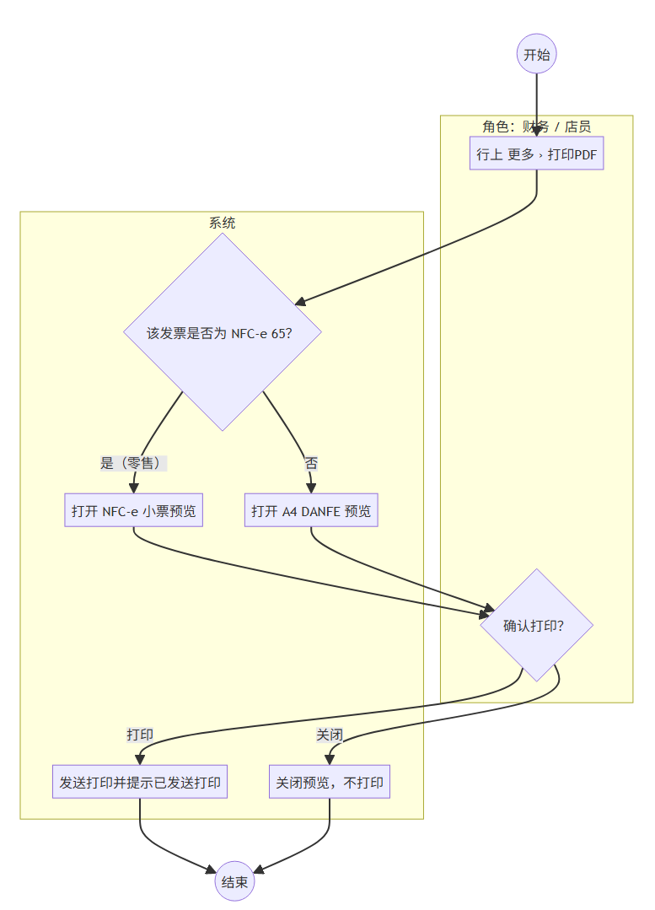
一、列表页
二、打印预览

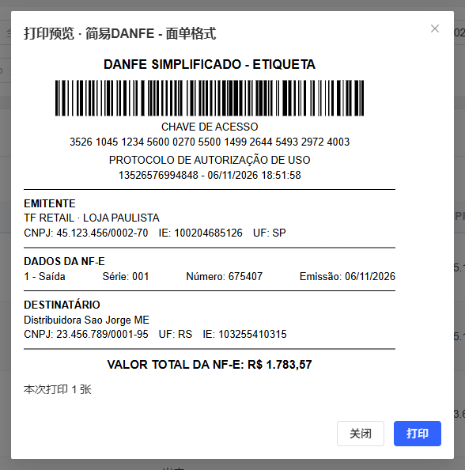
无。
• 前置条件：
1、用户已登录系统，具备“财务（电商）/
财务（零售）-发票管理-已开票-近期发票-打印PDF”权限。
2、近期发票的【全部】【出库】或【入库】页签里至少有一张发票。
• 操作流程：
1、用户在近期发票的【全部】【出库】或【入库】页签，点操作列【更多】里的【打印PDF】。
2、系统按这一行的发票模型打开预览弹窗：NFC-e 65 打开【NFC-e
小票预览】，NF-e 55 打开【打印预览 · DANFE】。
3、用户点【打印】，系统发送打印，提示：“已发送打印”。系统关闭弹窗。
4、用户点【关闭】，系统关闭弹窗，不执行任何操作。
• 后置条件：生成打印任务，发送到打印机；发票数据和发票状态不变。
•
校验规则：无。本功能没有字段校验，也没有字段之间、发票状态、权限、业务规则或异常情况的校验。
• 提示消息：无。
• 消息通知：无。
•
操作日志：用户操作成功后，系统在操作日志模块记录：操作时间、操作账号、操作模块、操作功能、操作明细、IP地址。
| 字段 | 字段说明 | 规则/示例 |
|---|---|---|
| 操作时间 | 操作发生时间 | 精确到：年月日时分秒，格式：DD/MM/YYYY HH:mm:ss |
| 操作账号 | 登录系统的账号名称 | 例如：ana@tfretail.com.br |
| 操作模块 | 具体菜单名称 | 例如：财务（零售）-发票管理-已开票-近期发票 |
| 操作功能 | 本次操作触发的功能动作名称 | 例如：打印PDF |
| 操作明细 | 本次操作的详细信息 | 例如：打印PDF：发票号=001 / 000000720，1 张，模板=NFC-e 小票 |
| IP地址 | 操作终端 IP | 例如：189.45.12.8 |
5.3.4.5.7 重开发票
1、只有发票状态为“已开票”的销售发票可以重开发票，包括电商的销售发票 · NF-e 55，以及零售中未关联收银订单、门店预订单、换货订单的销售发票（批发订单、手工开票、开给加盟店的调拨的 NF-e 55，以及手工开票的 NFC-e 65）。重开发票只能在近期发票的【全部】【出库】页签单张操作，没有批量入口。历史发票没有【重开发票】。
2、以下发票不能重开发票：
发票状态为“已取消”“已拒绝”的发票；发票类型为采购退票、货物转移、货物调拨、销售退票、进口采购、CC-e 的发票；零售中关联收银订单、门店预订单、换货订单的销售发票（在取消时限内（NFC-e 65 授权后 30 分钟内，NF-e 55 授权后 24 小时内），在近期发票或订单上【取消发票】，再到订单上重新【开票】；超过时限的，请联系会计师处理）。
用户点【重开发票】时，系统不打开弹窗，按发票类型提示后续处理方式。
3、重开发票是按新金额另开一张带【重开发票】标记的销售发票，原发票不会自动作废；先重开，再处理原发票，否则会影响缴税金额：授权后 24 小时内点【取消发票】；超过 24 小时不能开退票，请联系会计师处理。零售的批发订单重开成功后，订单换成新发票号和开票时间。
4、重开的发票不上传平台。
5、批发订单的销售发票可以在近期发票重开，重开后处理原发票：授权后 24 小时内【取消发票】；超过 24 小时不能开退票，请联系会计师处理；重开成功后，批发订单换成新发票号和开票时间。调拨单开给加盟店的销售发票可以在近期发票重开，规则同批发订单。
6、重开发票没有批量入口：每张发票均需单独填写重开发票金额，因此只能单张操作。
按页签、发票类型说明：
| 页签 | 发票类型 | 能否重开 | 原因和说明 | 开出什么票 |
|---|---|---|---|---|
| 出库 | 销售发票 · NF-e 55（电商） | 能，仅限发票状态为“已开票”。 | 金额开具错误时，按新金额另开一张发票。 | 一张新的销售发票（NF-e 55），带【重开发票】标记。 |
| 出库 | 销售发票 · NF-e 55（零售：批发订单、手工开票、开给加盟店的调拨） | 能，仅限发票状态为“已开票”。 | 未关联收银订单、门店预订单、换货订单 | 一张新的销售发票（NF-e 55），带【重开发票】标记。 |
| 出库 | 销售发票 · NFC-e 65、NF-e 55（零售：收银订单、门店预订单、换货订单） | 不能（点击后被拦截） | 已关联门店订单，不能重开：在取消时限内（NFC-e 65 授权后 30 分钟内，NF-e 55 授权后 24 小时内），在近期发票或订单上【取消发票】，再到订单上重新【开票】；超过时限的，请联系会计师处理。 | — |
| 出库 | 销售发票 · NFC-e 65（零售：手工开票，未关联订单） | 能，仅限发票状态为“已开票”。 | 未关联收银订单、门店预订单、换货订单 | 一张新的销售发票（NFC-e 65），带【重开发票】标记。 |
| 出库 | 采购退票 · NF-e 55 | 不能 | 不是销售发票 | — |
| 出库 | 货物转移 · NF-e 55 | 不能 | 不是销售发票 | — |
| 出库 | 货物调拨 · NF-e 55 | 不能 | 不是销售发票 | — |
| 入库 | 销售退票 · NF-e 55 | 不能（【入库】页签没有这个入口） | 不是销售发票 | — |
| 入库 | 进口采购 · NF-e 55 | 不能（【入库】页签没有这个入口） | 不是销售发票 | — |
| CC-e | CC-e | 不能 | CC-e 页签的行上只有【导出XML】 | — |

• 提交内容：系统向税局提交开票请求（NFeAutorizacao），再用
NFeRetAutorizacao 查询结果。内容包括：发票模型（NF-e 55；零售手工开的
NFC-e 65 重开时为 NFC-e 65）、序列号（série）、新发票号、发票主体
CNPJ、CFOP（销售 5102 或 6102）、商品 NCM、接收方
CPF/CNPJ、重开发票金额。
• 税局返回结果及处理方式：
1、税局授权：新发票的发票状态为“已开票”，出现在近期发票的【全部】【出库】页签，【单据信息】带【重开发票】标记。零售的批发订单同步换成新发票号和新开票时间。
2、税局拒绝（Rejeição xxx）：新发票进入【开票失败 ›
出库】，显示失败原因。
3、税局未返回结果（超时）：新发票进【开票失败 › 出库】，显示“错误:
税局未返回结果（超时）”。
4、无论何种结果，原发票均不变。
税局返回结果的页面截图见 5.3.4.5.7.3 原型“四、税局返回结果”。
一、列表页
二、重开发票弹窗

三、不能重开的发票


四、税局返回结果

| 字段名称 | 类型 | 是否必填/必选 | 默认值 | 约束规则 |
|---|---|---|---|---|
| 订单号（电商）或收银订单号（零售） | 只读文本 | 否 | 回显 | 取自这一行的【单据信息】 |
| 平台订单号（电商）或门店收银订单号（零售） | 只读文本 | 否 | 回显 | 取自这一行的【单据信息】 |
| 订单金额 | 只读文本（可复制） | 否 | 回显 | 取自这一行的发票金额 |
| 原始发票金额 | 只读文本（可复制） | 否 | 回显 | 取自这一行的发票金额 |
| 重开发票金额 | 金额输入框（前缀 R$） | 是 | 0,01 ~ 9.999.999,99 | 0,01～9.999.999,99；最多 2 位小数。 |
• 前置条件：
1、用户已登录系统，具备“财务（电商）/
财务（零售）-发票管理-已开票-近期发票-重开发票”权限。
2、近期发票的【全部】或【出库】页签里，有发票状态为“已开票”的销售发票（零售：未关联收银订单、门店预订单、换货订单）。
• 操作流程：
1、用户在近期发票的【全部】或【出库】页签，点操作列【更多】里的【重开发票】，系统打开【重开发票】弹窗，显示订单号、订单金额、原始发票金额。弹窗顶部说明：电商为“重开的发票不会上传到平台。”“若该订单需上传发票到平台，请前往订单页面开票。”；零售为“若该发票属于门店订单，请到对应订单页面开票。”。
2、用户输入重开发票金额，点【重开】，系统弹出二次确认：“确认重开发票？将按新金额另开一张发票（标记为【重开发票】，与原发票同一订单号）。原发票不会自动作废。重开后请处理原发票：授权后 24
小时内【取消发票】；超过 24
小时不能开退票，请联系会计师处理，否则将影响订单的缴税金额。”。
3、用户点【确认重开】，系统提示：“发票 {发票号}
已提交重开，请在【开票中】查看进度”。系统关闭弹窗，新发票进入【开票中 ›
出库】。
4、用户在二次确认框点【再想想】，系统关闭确认框，不执行任何操作。
5、用户点【取消】，系统关闭弹窗，不执行任何操作。
• 后置条件：
1、生成一张新的销售发票，带【重开发票】标记，订单号与原发票相同。新发票先进入【开票中
› 出库】，税局授权后可在近期发票的【全部】【出库】页签查询到。
2、原发票不变，发票状态仍为“已开票”。
3、零售的批发订单：原订单的发票号更新为新发票号，开票时间改为新发票的开票时间。
• 校验规则：
1、当用户点【重开发票】时，若这一行的发票类型不是销售发票，或发票状态为“已取消”“已拒绝”，则不打开弹窗，按发票类型提示后续处理方式，不执行任何操作：采购退票提示：“采购退票不能重开。如在 24
小时内且货物未出库，请先取消，再返回采购退货单重新开票。”。货物转移、货物调拨提示：“该发票不能重开。如在授权后
24
小时内且货物未运出，请先取消，再返回调拨单重新开票。”。销售退票提示：“销售退票不能重开。如在
24
小时内且货物未入库，请先取消，再返回退货订单重新开票。”。进口采购提示：“进口采购发票不能重开。如在授权后
24 小时内且货物未入库，请先取消，再在【草稿中】重新创建；超过 24
小时的，请联系会计师处理。”。CC-e 提示：“CC-e
不能重开。如需再次更正，请对原发票再开具一张
CC-e，以最新一张为准。”。发票状态为“已取消”“已拒绝”的提示：“该发票状态为已取消或已拒绝，不能重开发票。只有状态为“已开票”的销售发票才能重开发票。”。
2、当零售用户点【重开发票】时，若这一行的【单据信息】里有收银订单号、门店预订单号或换货单号，则不打开弹窗，提示：“该发票关联收银订单 / 门店预订单 /
换货订单，不能重开。在取消时限内（NFC-e 65 授权后 30 分钟内，NF-e 55
授权后 24
小时内），可以在近期发票或订单上【取消发票】，取消后订单回到“待开票”，再到订单上重新【开票】；超过时限的，请联系会计师处理。”。系统不执行任何操作。
3、当税局拒绝或未回复（超时）时，新发票进入【开票失败 ›
出库】并显示原因，原发票不变。
• 提示消息：
在当前页面的字段下面红色字体提示：
| 字段名称 | 未填写/未选择提示 | 输入错误提示 |
|---|---|---|
| 重开发票金额 | 请输入重开发票金额 | 重开发票金额须在 0,01~9.999.999,99 之间；重开发票金额最多 2 位小数 |
• 消息通知：无。
•
操作日志：用户操作成功后，系统在操作日志模块记录：操作时间、操作账号、操作模块、操作功能、操作明细、IP地址。
| 字段 | 字段说明 | 规则/示例 |
|---|---|---|
| 操作时间 | 操作发生时间 | 精确到：年月日时分秒，格式：DD/MM/YYYY HH:mm:ss |
| 操作账号 | 登录系统的账号名称 | 例如：ana@tfretail.com.br |
| 操作模块 | 具体菜单名称 | 例如：财务（零售）-发票管理-已开票-近期发票 |
| 操作功能 | 本次操作触发的功能动作名称 | 例如：重开发票 |
| 操作明细 | 本次操作的详细信息 | 例如：重开发票：原发票号=001 / 000000695，原始发票金额 R$ 1.250,00 → 重开发票金额 R$ 1.180,00 |
| IP地址 | 操作终端 IP | 例如：189.45.12.8 |
重开后，原发票不会自动作废，授权后 24 小时内【取消发票】；超过 24 小时不能开退票，请联系会计师处理。
| 发票类型 | 对应的业务类型 | 重开后单据的发票状态是否更改 | 原发票流向 | 新发票流向 |
|---|---|---|---|---|
| 销售发票 · NF-e 55；手工开具的销售发票 · NFC-e 65 | 没有业务单据：手工开票、电商平台订单 | 没有业务单据，不涉及。 | 留在 财务（电商）或财务（零售）› 发票管理 › 已开票-近期发票，发票状态不变。 | 新发票：先进入 发票管理 › 开票中 › 出库，税局授权后进入 财务（电商）或财务（零售）› 发票管理 › 已开票-近期发票 的【全部】【出库】页签，带【重开发票】标记。 |
| 销售发票 · NF-e 55 | 订单 › 批发订单 | 更改：保持“已开票”，更新为新的发票号和开票时间。 | 留在 财务（电商）或财务（零售）› 发票管理 › 已开票-近期发票，发票状态不变。 | 新发票：先进入 发票管理 › 开票中 › 出库，税局授权后进入 财务（电商）或财务（零售）› 发票管理 › 已开票-近期发票 的【全部】【出库】页签，带【重开发票】标记。 |
| 销售发票 · NF-e 55 | 库存 › 调拨管理（开给加盟店） | 不变：调拨单的状态不变。 | 留在 财务（电商）或财务（零售）› 发票管理 › 已开票-近期发票，发票状态不变。 | 新发票：先进入 发票管理 › 开票中 › 出库，税局授权后进入 财务（电商）或财务（零售）› 发票管理 › 已开票-近期发票 的【全部】【出库】页签，带【重开发票】标记。 |
| 销售发票 · NFC-e 65、销售发票 · NF-e 55 | 订单 › 收银订单、门店预订单、换货订单 | 更改：不打开【重开发票】弹窗，提示：“该发票关联收银订单 / 门店预订单 / 换货订单，不能重开。在取消时限内（NFC-e 65 授权后 30 分钟内，NF-e 55 授权后 24 小时内），可以在近期发票或订单上【取消发票】，取消后订单回到“待开票”，再到订单上重新【开票】；超过时限的，请联系会计师处理。”。 | 不变 | 无 |
| 销售退票、采购退票、货物转移、货物调拨、进口采购 | 订单 › 退货订单；没有业务单据（采购退票）；库存 › 调拨管理（同公司）；进口采购 | 更改：不打开【重开发票】弹窗，提示文字见 5.3.4.5.7.5 的校验规则第 1 条 | 不变 | 无 |
历史发票没有【重开发票】功能。
5.3.5 已开票-历史发票
5.3.5.1 业务场景说明
历史发票：开票时间早于最近三个自然月（当月及前两个月）的发票存放在此处；最近三个自然月内开具的发票在【近期发票】。页签和近期发票相同，分【全部】【出库】【入库】【CC-e】，各页签包含的发票类型同 5.3.4。 历史发票已超过取消时限（发票模型为 NF-e 55 的 24 小时，发票模型为 NFC-e 65 的 30 分钟），不能取消，不能重开。需要冲销时，开退票。 列表上方的批量操作：【全部】【出库】页签有【打印发票】和【更多操作】（【开具 CC-e】【开退票】）；【入库】页签有【打印发票】和【更多操作】（【开具 CC-e】）；【CC-e】页签不能勾选。
行上的操作（电商、零售相同）：每行有【详情】和【更多】，【更多】里的操作按页签和发票类型显示。
- 【全部】页签：所有行都有【导出XML】；发票类型不是 CC-e、发票状态不是“已拒绝”的行有【打印PDF】；出库发票（CC-e 除外）的行有【开退票】，入库发票的行没有【开退票】；发票类型不是 CC-e、发票模型不是 NFC-e 65、发票状态为“已开票”的行有【开具 CC-e】。发票类型为 CC-e 的行只有【导出XML】。
- 【出库】页签：所有行都有【导出XML】和【开退票】。采购退票、货物转移、货物调拨，以及发票状态为“已取消”“已拒绝”的行也显示【开退票】，用户点击后系统提示不能开退票的原因。【打印PDF】【开具 CC-e】的显示规则同【全部】页签。
- 【入库】页签：有【导出XML】【打印PDF】【开具 CC-e】，没有【开退票】。【打印PDF】【开具 CC-e】的显示规则同【全部】页签。
- 【CC-e】页签：只有【导出XML】。
按发票状态可执行的操作（电商、零售相同）： - 发票状态为“已开票”：按页签、发票类型可执行的操作见上文。 - 发票状态为“已取消”：行上有【详情】【导出XML】【打印PDF】。发票状态为“已拒绝”：行上有【详情】【导出XML】，因为没有税局授权，不显示【打印PDF】。这两种状态的出库发票，行上仍显示【开退票】，用户点击后不打开弹窗，直接提示原因，例如提示：“这张发票状态是已取消，不能开退票。只有状态为“已开票”的销售发票才能开退票（发票状态为已取消、已拒绝，或发票类型为销售退票、采购退票、CC-e、货物转移、货物调拨、进口采购的，都不支持开退票）。”。行上不显示【开具 CC-e】。原因：已取消的发票已经作废，已拒绝的发票没有得到税局授权，都没有税务效力，所以没有可冲销的税额和可更正的内容。 - 批量勾选的发票里有发票状态为“已取消”“已拒绝”的，系统自动跳过，并在弹窗中提示跳过张数和跳过原因。
页面上的其他功能：行上的【详情】用于查看发票详情；筛选区用于查询发票；筛选区右侧的【导出】下拉有按日期导出(XML)、按勾选导出(XML)、按筛选导出(XML)、定期导出(XML)、导出发票报表(Excel)、按筛选导出(Excel)，其中定期导出(XML)跳转到开票设置的“定期导出NF-e”卡片，按筛选导出(Excel)按当前筛选结果直接生成 Excel 文件，导出发票报表(Excel)的【类型】可选全部、销售发票、销售退票、采购退票、货物转移、货物调拨、进口采购、CC-e、作废发票号；列表上方有【排序】和【发票总金额 ↗】；页面上有【说明】浮层。这些功能不单独作为功能点描述。
列表的列为序列号、发票号、发票账号、key、发票类型、发票接收方、CPF/CNPJ、发票金额、单据信息、状态、时间，其中发票金额和时间可以排序。筛选项为发票模型（仅零售）、发票账号、状态、发票类型、开票时间或取消时间、日期范围、目的州、关联订单状态，以及组合搜索（发票号、Key、订单号，电商另有平台订单号，占位文字为“多个发票号请用逗号分隔”）和【更多筛选】（发票号范围、重开发票、是否手工发票）。各页签的发票类型选项只列出本页签方向的发票类型；零售的【入库】【CC-e】页签没有发票模型为 NFC-e 65 的选项，也没有关联订单状态；电商【CC-e】页签的关联订单状态只有已取消订单、已取消或已退货两个选项。列表显示总计和分页（50条/页、100条/页）。组合搜索可以一次输入多个号码，用逗号、分号或换行隔开。
【说明】浮层的内容如下：
| 条目 | 零售 | 电商 |
|---|---|---|
| 首段 | 历史发票指超出最近三个自然月（当月及前两个月）范围的发票；每月 1 日零点滚动更新，由系统自动从【近期发票】移入。 | 同零售 |
| 第 1 条 | 1. 取消发票：历史发票已超过取消时限，不能取消。销售发票如需冲销请开退票（关联收银订单、门店预订单、换货订单的除外，见第 2 条）；其他类型见第 2 条。 | 同零售 |
| 第 2 条 | 2. 开退票：只有状态为“已开票”的销售发票才能开退票（发票状态为已取消、已拒绝，或发票类型为销售退票、采购退票、CC-e、货物转移、货物调拨、进口采购的，都不支持开退票）。原发票保持不变，另开一张销售退票，显示在【入库】页签。采购退票只关联采购发票，在【采购发票】›“已导入”【开退货发票】或【发票管理】›“草稿中”【创建发票】选择“采购退票”开具，开出后显示在【出库】页签。 采购退票、货物转移、货物调拨、进口采购、销售退票：信息错误时开具 CC-e；其他错误请联系会计师，办理超期取消或开具反向发票。 收银订单、门店预订单、换货订单（换出件）的发票，在近期发票、历史发票不提供【开退票】：顾客退货请在 订单 › 售后管理 › 退货订单 办理，系统按实际退回的商品自动开具销售退票。同一订单重复开出的发票会进入异常发票：NF-e 55 授权后 24 小时内【取消发票】，超过后【开退票】；NFC-e 65 授权后 30 分钟内【取消发票】，超过后系统不能取消，也不开退票，请联系会计师按所在州的规定处理。 | 同零售 |
| 第 3 条 | 3. 开具 CC-e：用于更正发票上不影响税额的信息（如地址、商品描述）；不能修改影响税额的数值（税基、税率、差价、数量、交易金额），不能更换买家或卖家（仅可更正地址、名称笔误），不能修改开票日期、出库日期、发票序列号和发票号，不能修改出口发票已在出口报关单（DU-E）申报的内容，不能新增或修改分期付款的期数和金额。每张发票最多开具 20 次；第二次开具时，第一次的更正将作废，须将第一次更正的内容一并重新填写。发票类型为 CC-e 的不能开 CC-e（要再次更正，请对原发票开具）；已取消、已拒绝的发票不能开 CC-e（行上不显示此按钮，批量勾选时自动跳过）。NFC-e 65 不支持 CC-e（行上不显示此按钮，批量勾选时自动跳过）；NFC-e 65 开具有误时，只能在授权后 30 分钟内【取消发票】，超时后，关联收银订单、门店预订单、换货订单的，顾客退货请在 订单 › 售后管理 › 退货订单 办理，办理退货退款时系统会自动开具销售退票（引用原发票），不用在这里开；其他的须【开退票】冲销。 | 同零售 |
| 第 4 条 | 4. 重开发票：历史发票不能重开。 | 同零售 |
| 第 5 条 | 5. 打印发票：NFC-e 65 只能打印 NFC-e 小票；NF-e 55 可打印 DANFE、简易DANFE、面单；CC-e 不能打印。已拒绝的发票不能打印。批量勾选时，不符合所选格式的发票将自动跳过并提示。 | 同零售 |
功能说明：开票时间早于最近三个自然月的发票均存放在此处，主要用于查询、报税和审计。分【全部】【出库】【入库】【CC-e】四个页签。
存放期限：与近期发票的存放期限相同，请参考 5.3.4.1 的目录。发票移入历史发票后一直保留在历史发票中。
设置原因：
- 开票时间较早的发票主要用来查询和导出，和近期发票分开存放，使日常操作的近期发票列表中发票数量更少、便于查找。
- 开票时间较早的发票已经超过取消时限，不能再取消或重开；需要冲销税额时，只能开退票。
电商与零售的差异
页面结构、页签、行操作、弹窗和整页，电商与零售基本相同，只有以下不同：
1、筛选：零售比电商多【全部发票模型】，选项为
NF-e（模型 55）、NFC-e（模型
65）。【发票类型】列：零售在第三行用灰字显示发票模型（NFC-e 65 或 NF-e
55；CC-e 显示 CC-e）；电商的发票模型全部为 NF-e
55，不显示这一行。【发票账号】：电商从电商的发票主体中选择（如 APAUL COM
LTDA、TEX INC DISTRIBUICAO LTDA）；零售从零售的发票主体中选择（如 TF
RETAIL BRASIL LTDA · LOJA
PAULISTA），并在第二行用灰字显示门店编码和名称（如 LJ001
Paulista）。【单据信息】：电商显示订单号和平台订单号；零售显示收银订单号、门店收银订单号、门店预订单号、批发订单号、退货单号、换货单号（退回件）、原收银订单号；两边都有的是调拨单号、原采购发票号（采购退票）、进口申报单（DUIMP）。
2、发票类型共 7
类：销售发票、销售退票、货物转移、货物调拨、采购退票、CC-e、进口采购。出库方向的发票类型：销售发票、采购退票、货物转移、货物调拨；入库方向的发票类型：销售退票、进口采购。
5.3.5.2 流程图
本图不含【详情】、查询、【导出】下拉、【排序】、【发票总金额 ↗】和【说明】浮层，这些功能见本节开头的说明。
5.3.5.3 和税局（SEFAZ）的数据交互
【打印发票】【打印PDF】【导出XML】不提交税局，内容取自系统保存的、已经得到税局授权的发票。【开具 CC-e】【开退票】需要提交税局，提交内容和税局返回结果的处理，分别见 5.3.5.5.2.2、5.3.5.5.3.2。
5.3.5.4 关键业务约束
• 历史发票不能取消，也不能重开；需要冲销时，只能开退票。
• 只有发票状态为“已开票”的发票才能开具
CC-e、开退票；发票状态为“已取消”“已拒绝”的发票只能查看、导出、打印（发票状态为“已拒绝”的不能打印，见上）。
• 在历史发票开出的退票和 CC-e 放入近期发票，不放入历史发票。
5.3.5.5 功能点详细介绍
本菜单共 5 个功能点。每个功能点依次说明：哪些发票可以操作、流程图与税局交互（不与税局交互的只有流程图）、原型、字段规范（没有字段的写“无。”）、用例规则、操作后单据及发票流向；功能点没有的小节不写。业务规则只写在“哪些发票可以操作”和“用例规则”里。
5.3.5.5.1 打印发票
1、只有在历史发票的【全部】【出库】【入库】页签勾选的发票可以打印，包括销售发票（NF-e 55、NFC-e 65（仅零售））、采购退票、货物转移、货物调拨、销售退票、进口采购。必须先勾选发票才能打印，没有勾选时提示：“请先勾选”。发票模型为 NF-e 55 的发票可以打印 DANFE、简易DANFE、面单，销售发票 · NFC-e 65 只能打印 NFC-e 小票。
2、以下发票不能打印：发票类型为 CC-e 的发票（【CC-e】页签不能勾选，没有【打印发票】；在【全部】页签批量打印时跳过），以及发票状态为“已拒绝”的发票（没有税局授权，打印出来的凭证不能随货运输，批量勾选时跳过）。
3、批量勾选时按所选格式过滤，规则与近期发票相同（见 5.3.4.5.1.1 中的“四种打印格式的差异”）：选择【NFC-e 小票】时跳过发票模型为 NF-e 55 的发票，选择 DANFE、简易DANFE、面单时跳过销售发票 · NFC-e 65。电商没有【NFC-e 小票】格式，零售的【入库】页签也没有该格式。
按页签、发票类型说明：
| 页签 | 发票类型 | 能否打印 | 原因和说明 | 打出什么 |
|---|---|---|---|---|
| 全部、出库、入库 | 发票模型为 NF-e 55 的发票：销售发票、采购退票、货物转移、货物调拨（出库），销售退票、进口采购（入库） | 能 | 已得到税局授权的 NF-e 55 有 DANFE；批量打印选【NFC-e 小票】格式时跳过。 | DANFE、简易DANFE、面单 |
| 全部、出库 | 销售发票 · NFC-e 65（仅零售） | 能 | NFC-e 65 的法定凭证是小票；批量打印选 DANFE 三种格式时跳过。 | NFC-e 小票 |
| 全部、出库、入库 | 发票状态为“已拒绝”的发票（任何发票类型） | 不能 | 没有税局授权，打印出来的凭证不能随货运输（Ajuste SINIEF 07/05 第九条 §1º）；批量勾选时跳过。 | — |
| 全部、CC-e | CC-e | 不能 | 【全部】页签批量打印时跳过发票类型为 CC-e 的发票；【CC-e】页签不能勾选，没有【打印发票】。 | — |
四种打印格式的区别，以及批量打印时跳过哪些发票，见 5.3.4.5.1.1 中的“四种打印格式的差异”。
一、列表页
二、打印预览

三、不能打印的发票

无。
• 前置条件：
1、用户已登录系统，具备“财务（电商）/
财务（零售）-发票管理-已开票-历史发票-打印发票”权限。
2、历史发票的【全部】【出库】或【入库】页签里至少有一张发票。
• 操作流程：
1、用户在历史发票的【全部】【出库】或【入库】页签，勾选一张或多张发票。
2、用户点列表上方的【打印发票】，在下拉里选择【DANFE】【简易DANFE】【简易DANFE
- 面单格式】或【NFC-e 小票】（【NFC-e
小票】只有零售的【全部】【出库】页签有）。
3、系统打开所选格式的打印预览弹窗。
4、用户点【打印】，系统发送打印，提示：“已发送打印”。系统关闭弹窗。
5、用户点【关闭】，系统关闭弹窗，不执行任何操作。
• 后置条件：生成打印任务，发送到打印机；发票数据和发票状态不变。
•
校验规则：当用户点【打印发票】时，若没有勾选任何发票，则不打开预览，提示：“请先勾选”。系统不执行打印。
• 提示消息：无。
• 消息通知：无。
•
操作日志：用户操作成功后，系统在操作日志模块记录：操作时间、操作账号、操作模块、操作功能、操作明细、IP地址。
| 字段 | 字段说明 | 规则/示例 |
|---|---|---|
| 操作时间 | 操作发生时间 | 精确到：年月日时分秒，格式：DD/MM/YYYY HH:mm:ss |
| 操作账号 | 登录系统的账号名称 | 例如：ana@tfretail.com.br |
| 操作模块 | 具体菜单名称 | 例如：财务（电商）-发票管理-已开票-历史发票 |
| 操作功能 | 本次操作触发的功能动作名称 | 例如：打印发票 |
| 操作明细 | 本次操作的详细信息 | 例如：打印发票：共 2 张，发票号=[001 / 000000410, 001 / 000000411]，模板=DANFE |
| IP地址 | 操作终端 IP | 例如：189.45.12.8 |
5.3.5.5.2 开具CC-e
1、只有发票模型为 NF-e 55、发票状态为“已开票”的销售发票、采购退票、货物转移、货物调拨、销售退票、进口采购可以开具 CC-e。近期发票和历史发票页面均可开具 CC-e，不受开票时间限制，历史发票同样可以开具（巴西法规未规定期限）。
2、以下发票不能开具 CC-e：销售发票 · NFC-e 65（仅零售）、发票状态为“已取消”“已拒绝”的发票，以及发票类型为 CC-e 的发票。
3、CC-e 只能对原发票开具，不能对新生成的 CC-e 再开具 CC-e；每张原发票最多开具 20 次。
4、已开具过 CC-e 的发票再次开具时，前一次的更正将作废，须将前一次更正的内容一并重新填写。税局以最近一次 CC-e 为准，此前的 CC-e 随之失效。例如：第一次更正了收货地址，第二次需更正商品描述，第二次的修正内容须同时写明收货地址和商品描述两处；如果只写商品描述，第一次对收货地址的更正即失效。
5、可以更正：地址、商品描述、重量、包装、承运人、备注等不影响税额的信息，以及不改变税额的 CFOP 和 CST。
6、不可以更正：金额、数量、税率、更换开票方或收货方（只修改地址等登记信息可以更正）、开票日期和出库日期、序列号和发票号、出口报关内容和分期付款。
说明：
1、CC-e 不改原发票，只是附在原发票上的一段文字，所以每张发票只需填写【修正内容】一项。批量开具时，每张发票各占一行，分别填写各自的修正内容。
2、弹窗顶部显示提示框“什么信息不能用CC-e修正？”，列出不能更正和可以更正的内容，并说明“每张发票最多可修正 20 次”。
修正内容输入规则
| 字符 | 能不能用 | 不符合时字段下方的提示（{x} 显示用户实际写的内容） |
|---|---|---|
| 字母、数字、空格、英文标点（, . ; : -） | 能 | — |
| 葡萄牙文带音字母（á ç ã é 等） | 能 | — |
| 换行 | 不能，多处更正只能写在同一段里。 | “不能换行：多处更正请写在同一段里，用英文分号“;”隔开” |
| 中文标点（，。；：！？、“”【】等） | 不能，税局会拒收。 | “包含中文标点“{x}”：请改用英文标点，如 , . ; : -” |
| 中文 | 不能，税局会拒收。 | “包含中文“{x}”：修正内容会上传税局，必须用葡萄牙文填写，例：Onde se lê Rua A, 100, leia-se Rua B, 200” |
| 箭头（→ 等） | 不能，税局会拒收。 | “包含箭头“{x}”：不能用箭头表示【改为】，请写成 Onde se lê 原内容, leia-se 正确内容” |
| 其他不在上面的字符（★ € 等） | 不能，税局会拒收。 | “包含不能使用的字符“{x}”：只能用字母、数字、空格、英文标点（如 , . ; : -）和葡萄牙文带音字母（如 á ç ã é）” |
按页签、发票类型说明：
| 页签 | 发票类型 | 能否开具 CC-e | 原因和说明 | 开出什么票 |
|---|---|---|---|---|
| 出库 | 销售发票 · NF-e 55 | 能（单张、批量） | 发票状态为“已开票”的都可以开；开具 CC-e 没有时间限制，历史发票也可以开。 | 一张 CC-e（发票模型为 NF-e 55），进入近期发票的【全部】【CC-e】页签。 |
| 出库 | 销售发票 · NFC-e 65（仅零售） | 不能 | 巴西法规规定 NFC-e 65 只能取消，不能开具 CC-e，税局不接受。行上【更多】里不显示【开具 CC-e】，批量勾选时自动跳过。 | — |
| 出库 | 采购退票 · NF-e 55 | 能（单张、批量） | 和销售发票 · NF-e 55 相同 | 一张 CC-e，进入近期发票的【全部】【CC-e】页签。 |
| 出库 | 货物转移 · NF-e 55 | 能（单张、批量） | 和销售发票 · NF-e 55 相同 | 一张 CC-e，进入近期发票的【全部】【CC-e】页签。 |
| 出库 | 货物调拨 · NF-e 55 | 能（单张、批量） | 和销售发票 · NF-e 55 相同 | 一张 CC-e，进入近期发票的【全部】【CC-e】页签。 |
| 入库 | 销售退票 · NF-e 55 | 能（单张、批量） | 发票状态为“已开票”的都可以开具。可以更正和不可以更正的内容与其他发票类型相同，见本节第 5 条、第 6 条。 | 一张 CC-e，进入近期发票的【全部】【CC-e】页签。 |
| 入库 | 进口采购 · NF-e 55 | 能（单张、批量） | 该发票由我方自行开具，发票状态为“已开票”的都可以开。 | 一张 CC-e，进入近期发票的【全部】【CC-e】页签。 |
| CC-e | CC-e | 不能 | 发票类型为 CC-e 的发票不能再开 CC-e，要再次更正只能对原发票开具。【CC-e】页签的行上只有【导出XML】，也不能勾选。 | — |

• 提交内容：系统向税局提交一条 CC-e 事件（接口
RecepcaoEvento），内容包括：原发票的 Key、发票模型（NF-e 55）、发票主体
CNPJ、事件编号（该原发票第几次开具 CC-e，取值 1～20）、修正内容。
• 税局返回结果及处理方式：
1、税局接受：税局登记这次更正，并返回协议号。CC-e
不是新发票，不占用新的发票号，也不生成新的
Key。系统在近期发票的【全部】【CC-e】页签增加一条 CC-e
记录，显示原发票的序列号、发票号和 Key，以及事件编号和协议号。
2、税局拒绝（Rejeição xxx）：税局返回拒绝码和原因，系统不生成
CC-e。失败原因中，税局返回的原因后面附中文说明，例如：“Rejeição 580 - O
evento exige uma NF-e
autorizada（税局记录中该发票不是已授权状态，不能开具
CC-e。请联系会计师核实该发票在税局的状态。）”“Rejeição 215 - Falha no
schema XML（XML 格式不符合税局要求，未生成
CC-e。请联系系统管理员处理。）”“Rejeição 245 - CNPJ Emitente não
cadastrado（开票方 CNPJ 未在该州税局登记，未生成
CC-e。请联系会计师在该州税局完成 NF-e 开票注册。）”。
3、税局未回复（超时）：系统不生成
CC-e，失败原因为“税局未回复（超时），未生成 CC-e，请 5
分钟后重新开具。”，用户可以重新开具。界面上的提示见 5.3.5.5.2.5 用例规则操作流程第 4
条、第 5 条。
4、税局返回 Rejeição
573（重复事件）：通常发生在上一次提交超时后重新开具时，说明上一次提交已在税局登记成功。系统向税局查询这条
CC-e 事件，取回事件编号和协议号，按开具成功处理，不提示开具失败。
税局返回结果的页面截图见 5.3.5.5.2.3 原型“五、税局返回结果”（截图取自近期发票，历史发票相同）。
一、列表页
二、开具 CC-e 弹窗：可以开具的发票


三、不能开具的发票
四、修正内容校验

五、税局返回结果
单张开具（开具 CC-e 弹窗）：
| 字段名称 | 类型 | 是否必填/必选 | 默认值 | 约束规则 |
|---|---|---|---|---|
| 发票号 | 只读文本 | 否 | 回显 | 取自所点击行的发票号 |
| 事件编号 | 只读文本 + 【历史记录】链接 | 否 | 回显 | 自动计数：该原发票已开具 N 次 CC-e 时显示 N+1；已开满 20 次时显示“20（已达上限）”；点击【历史记录】可查看每次的序号、修正内容和时间。 |
| 修正内容 | 多行文本框 | 是 | 请用葡萄牙文填写，例：Onde se lê Rua A, 100, leia-se Rua B, 200; onde se lê Água 1L, leia-se Água 1,5L | 15～1000 个字符。内容会上传税局，只能用 Latin-1 字符（见【修正内容输入规则】），不符合时字段下方逐项提示。每次打开弹窗时，修正内容为空，不保留上一次填写的内容。可以更正和不可以更正的内容见 5.3.5.5.2.1 第 5 条、第 6 条。字段名【修正内容】后有“？”，鼠标悬停时显示浮层，分 4 条显示，每条另起一行：“1、请写明错误内容及正确内容。必须用葡萄牙文填写，不能输入中文，不能换行；多处更正写在一起，用英文分号“;”隔开。”“2、已开具过 CC-e 的发票再次开具时，前一次的更正将作废，须将前一次更正的内容一并重新填写（例：第一次更正了收货地址，第二次更正商品描述时，须同时填写两处）。”“3、可以更正：地址、商品描述、重量、包装、承运人、备注等不影响税额的信息，以及不改变税额的 CFOP 和 CST；”“4、不可以更正：金额、数量、税率、更换开票方或收货方（只修改地址等登记信息可以更正）、开票日期和出库日期、序列号和发票号、出口报关内容和分期付款不能用 CC-e 更正。例：Onde se lê Rua A, 100, leia-se Rua B, 200; onde se lê Água 1L, leia-se Água 1,5L。错误示例：Onde se lê quantidade 2, leia-se 3（数量不能用 CC-e 更正）。” |
批量开具（开具 CC-e 弹窗）：
| 字段名称 | 类型 | 是否必填/必选 | 默认值 | 约束规则 |
|---|---|---|---|---|
| 统一填写 | 多行文本框 + 【应用到全部】按钮 | 否 | 请用葡萄牙文填写，例：Onde se lê Rua A, 100, leia-se Rua B, 200; onde se lê Água 1L, leia-se Água 1,5L | 最多 1000 个字符，右下角显示字数。点【应用到全部】时，把填写的内容填入表格每一行的【修正内容】，填入后每一行仍可单独修改。未填写时点【应用到全部】，提示：“请输入统一填写的修正内容”。每次打开弹窗时为空。 |
| 序列号 | 只读文本 | 否 | 回显 | 取自该发票的序列号。 |
| 发票号 | 只读文本 | 否 | 回显 | 取自该发票的发票号。 |
| 事件编号 | 只读文本 | 否 | 回显 | 该原发票已开具 N 次 CC-e 时显示 N+1。字段名后有“?”，鼠标悬停时显示：“本次开具的是这张发票的第几次更正（每张发票最多可修正 20 次）。” |
| 修正内容 | 多行文本框（每张发票一行） | 是 | 请用葡萄牙文填写，例：Onde se lê Rua A, 100, leia-se Rua B, 200; onde se lê Água 1L, leia-se Água 1,5L | 15～1000 个字符，右下角显示字数。字符规则、字段名后的“?”浮层和逐项提示与单张开具相同，错误在这一行输入框下方红字显示。该发票已开具过 CC-e 时，输入框下方显示提示：“已开过 N 次，需包含此前更正内容”（N 为该发票已开具 CC-e 的次数）。每次打开弹窗时为空。 |
| 操作 | 【删除】 | 否 | 无 | 点【删除】，把这张发票从本次开具中移除，不提交税局。只剩一张时不能删除。 |
• 前置条件：
1、用户已登录系统，具备“财务（电商）/
财务（零售）-发票管理-已开票-历史发票-开具 CC-e”权限。
2、历史发票的【全部】【出库】或【入库】页签里，有发票模型为 NF-e
55、发票状态为“已开票”、发票类型不是 CC-e 的发票。
• 操作流程：
1、单张：用户在历史发票的【全部】【出库】或【入库】页签，点操作列【更多】里的【开具
CC-e】，系统打开【开具 CC-e】弹窗，显示发票号和事件编号。
2、批量：
用户勾选多张发票，点列表上方【更多操作】里的【开具 CC-e】，系统先打开“确认批量开 CC-e？”弹窗。弹窗里另有一行说明：“已开过 CC-e 的发票再次开具时，前一次更正将失效，需将前一次更正的内容一并重新填写。”。
确认弹窗中“本次可开具”的张数不包含已修正 20 次的发票。
用户点【全部发票】时，对本次可开具的发票全部开具；点【仅未开过 CC-e 的发票】时，只对从未开具过 CC-e 的发票开具，已开过 CC-e 的发票不在本次开具范围内，计入“已跳过”。
若勾选的发票均已开过 CC-e，则不打开【开具 CC-e】弹窗，提示：“勾选的 N 张发票均不能开具 CC-e：已开过 CC-e 的发票 N 张：本次不开具。”。系统关闭确认弹窗。
用户点【全部发票】后，系统打开【开具 CC-e】弹窗，表格列出本次可开具的全部发票，每张一行，包括已开过 CC-e 的发票。用户点【仅未开过 CC-e 的发票】后，表格只列从未开具过 CC-e 的发票。弹窗顶部显示：“已选中：N，可开具 CC-e：M。已跳过 X 张：{跳过的类别、张数和原因}。”。可开具张数显示为绿色，跳过张数标红；没有跳过的发票时，不显示“已跳过”部分。
说明：{跳过的类别、张数和原因} 按实际情况列出，没有出现的类别不列。例如：“发票类型为 CC-e 的 N 张：不能开具，如需再次更正，请对原发票开具；已取消、已拒绝的发票 N 张：不能开具；销售发票 · NFC-e 65 共 N 张：不支持开具 CC-e；已修正 20 次的发票 N 张：已达上限，不能再开具；已开过 CC-e 的发票 N 张：本次不开具”。
用户可以在【统一填写】中填写内容后点【应用到全部】，也可以逐行填写或修改每一行的【修正内容】。点某一行的【删除】，该发票从本次开具中移除，弹窗顶部的可开具张数随之减少。
3、单张时，用户可以点【历史记录】，查看该发票以往每次的修正内容。
4、用户填写修正内容后点击【开票】。按钮显示加载状态，直到税局返回结果，期间不能重复点击。单张开具成功后，系统提示：“发票
{发票号} 的 CC-e
开具成功”。系统关闭弹窗。批量开具时，每张发票按自己那一行的修正内容提交税局；全部成功时，系统关闭弹窗，页面顶部提示：“CC-e
开具成功 N 张”。有失败时，系统关闭弹窗，弹出【开具 CC-e
结果】。近期发票的【CC-e】页签新增开具成功的 CC-e。
5、税局拒绝或未回复时：单张开具时，弹窗不关闭，已填写的修正内容保留，在弹窗顶部用红字显示失败原因（以“开具失败：”开头），用户修改后可以再次点【开票】；批量开具时，系统关闭弹窗；有失败的发票时弹出【开具
CC-e
结果】，只列失败的发票，失败的可以导出；全部成功时只在页面顶部提示成功张数，规则见
4.2.8 第 9 条。
6、用户点【取消】，系统关闭弹窗，不执行任何操作。
• 后置条件：
1、近期发票的【全部】【CC-e】页签增加一条 CC-e
记录，显示原发票的序列号、发票号和 Key，以及事件编号和协议号。CC-e
不是新发票，不占用新的发票号，也不生成新的 Key。
2、原发票（历史发票）不变，事件编号加
1，历史记录增加本次的修正内容。批量开具时，每张发票的历史记录增加的是这一行填写的修正内容。
3、原发票的 Key 浮层只显示 Key 和
ID，不显示修正记录。原发票开具过几次 CC-e，【CC-e】页签就有几条对应的
CC-e 记录；每条记录的 Key 浮层显示 Key、ID、事件编号和协议号，与【开具
CC-e】弹窗的【历史记录】一一对应。
• 校验规则：
1、当用户点【开具 CC-e】时，若勾选的发票均不能开具（发票类型为
CC-e、发票模型为 NFC-e
65（仅零售）、发票状态为已取消或已拒绝），则不打开弹窗，提示本次勾选的发票所属类别及各类张数（张数标红，未勾选的类别不列出）：“勾选的
N 张发票均不能开具 CC-e：发票类型为 CC-e 的 N
张：不能开具，如需再次更正，请对原发票开具；已取消、已拒绝的发票 N
张：不能开具；销售发票 · NFC-e 65 共 N 张：不支持开具 CC-e。”例：勾选 25
张已取消、已拒绝的发票，提示：“勾选的 25 张发票均不能开具
CC-e：已取消、已拒绝的发票 25 张：不能开具。”。
2、当批量勾选的发票中部分可开具、部分不可开具时（不可开具的是发票类型为
CC-e、发票模型为 NFC-e 65（仅零售）、发票状态为已取消或已拒绝、已修正 20
次的发票），不可开具的自动跳过，不在表格中列出，只在弹窗顶部计入“已跳过”，只对表格中的发票开具。
3、当用户点【开票】时，若该原发票已开具 20 次
CC-e，则不提交税局，提示：“开具失败：该发票已修正 20 次，不能再开具
CC-e（每张发票最多可修正 20 次）。”。系统不生成 CC-e。
4、当税局拒绝时，提示：以“开具失败：”开头，后面加上税局返回的原因，不生成
CC-e。
5、当发票模型为 NFC-e 65 时，行上【更多】里不显示【开具
CC-e】，不能单张开具。
6、当发票状态为“已取消”“已拒绝”时，行上【更多】里不显示【开具
CC-e】，不能单张开具。
7、当用户点【开票】时，若某一行的修正内容未填写、少于
15 个字符、超过 1000
个字符，或包含不允许使用的字符，则不提交税局，在该行输入框下方以红字提示对应的错误（见下方提示消息表和【修正内容输入规则】表）；任一行有错误时，本次所有发票都不提交。
8、批量开具时，已修正 20
次的发票在打开【开具
CC-e】弹窗时即被跳过，计入“已跳过”，不提交税局。
9、当用户重新开具时，若税局返回 Rejeição
573（重复事件），则系统向税局查询并取回协议号，按开具成功处理：单张时提示：“发票
{发票号} 的 CC-e 开具成功。税局返回 Rejeição
573（重复事件），说明上一次超时的提交已在税局登记成功；系统已向税局查询并取回协议号，按开具成功处理。”。批量时在【开具
CC-e 结果】中列为成功，说明栏显示同样的内容。
10、当税局未回复（超时）时，系统不生成
CC-e，失败原因为“税局未回复（超时），未生成 CC-e，请 5
分钟后重新开具。”。用户可以在 5 分钟后重新开具。
• 提示消息：
在当前页面的字段下面红色字体提示：
| 字段名称 | 未填写/未选择提示 | 输入错误提示 |
|---|---|---|
| 修正内容 | 请输入修正内容 | 修正内容至少 15 个字符；修正内容最多 1000 个字符；输入不允许使用的字符时，按【修正内容输入规则】表逐项提示，多项同时出错时逐条编号列出 |
| 统一填写 | 请输入统一填写的修正内容 | — |
• 消息通知：无。
•
操作日志：用户操作成功后，系统在操作日志模块记录：操作时间、操作账号、操作模块、操作功能、操作明细、IP地址。
| 字段 | 字段说明 | 规则/示例 |
|---|---|---|
| 操作时间 | 操作发生时间 | 精确到：年月日时分秒，格式：DD/MM/YYYY HH:mm:ss |
| 操作账号 | 登录系统的账号名称 | 例如：ana@tfretail.com.br |
| 操作模块 | 具体菜单名称 | 例如：财务（零售）-发票管理-已开票-历史发票 |
| 操作功能 | 本次操作触发的功能动作名称 | 例如：开具 CC-e |
| 操作明细 | 本次操作的详细信息 | 单张开具例如：开具 CC-e：原发票=001 / 000000468，事件编号=3，修正内容=Correção da descrição do produto；批量开具例如：开具 CC-e：共 3 张，成功 2 张（001 / 000000439，修正内容=Correção do CEP do destinatário；001 / 000000437，修正内容=Correção da descrição do produto），失败 1 张（001 / 000000438） |
| IP地址 | 操作终端 IP | 例如：189.45.12.8 |
| 发票类型 | 对应的业务类型 | 开具后单据的发票状态是否更改 | 原发票流向 | 新发票流向 |
|---|---|---|---|---|
| 销售发票 · NF-e 55 | 订单 › 收银订单、门店预订单、换货订单、批发订单 | 不更改 | 留在原列表，发票状态不变。 | 生成一张 CC-e，进入 财务（电商）或财务（零售）› 发票管理 › 已开票-近期发票 的【全部】【CC-e】页签（从历史发票开具的同样进入近期发票）。 |
| 销售退票 · NF-e 55 | 订单 › 退货订单、换货订单的退回件 | 不更改 | 留在原列表，发票状态不变。 | 生成一张 CC-e，进入 财务（电商）或财务（零售）› 发票管理 › 已开票-近期发票 的【全部】【CC-e】页签（从历史发票开具的同样进入近期发票）。 |
| 货物转移、货物调拨、开给加盟店的销售发票（发票模型都是 NF-e 55） | 库存 › 调拨管理 | 不更改 | 留在原列表，发票状态不变。 | 生成一张 CC-e，进入 财务（电商）或财务（零售）› 发票管理 › 已开票-近期发票 的【全部】【CC-e】页签（从历史发票开具的同样进入近期发票）。 |
| 采购退票 · NF-e 55 | 没有业务单据（只关联原采购发票） | 不更改 | 留在原列表，发票状态不变。 | 生成一张 CC-e，进入 财务（电商）或财务（零售）› 发票管理 › 已开票-近期发票 的【全部】【CC-e】页签（从历史发票开具的同样进入近期发票）。 |
| 发票模型为 NF-e 55 的发票 | 没有业务单据：手工开票、电商平台订单、进口采购 | 没有业务单据，不涉及。 | 留在原列表，发票状态不变。 | 生成一张 CC-e，进入 财务（电商）或财务（零售）› 发票管理 › 已开票-近期发票 的【全部】【CC-e】页签（从历史发票开具的同样进入近期发票）。 |
| 销售发票 · NFC-e 65 | 订单 › 收银订单、门店预订单、换货订单 | 不更改（这类发票不能开 CC-e） | 不变 | 无 |
| 发票类型为 CC-e 的发票 | 任何 | 不更改（不能再开 CC-e，要再次更正只能对原发票开具） | 不变 | 无 |
| 上述可开具 CC-e 的发票，税局拒绝或未回复时 | 订单 › 收银订单、门店预订单、换货订单、批发订单；订单 › 退货订单、换货订单的退回件；库存 › 调拨管理；没有业务单据：手工开票、电商平台订单、进口采购、采购退票 | 不更改 | 留在原列表，发票状态不变，事件编号不增加，历史记录不增加。 | 不生成 CC-e |
5.3.5.5.3 开退票
1、只有发票状态为“已开票”的销售发票（NF-e 55，以及零售的 NFC-e 65）可以开退票。用户在历史发票的【全部】【出库】页签操作，可以单张或批量开退票。历史发票已超过取消时限，不能取消，需要冲销时只能开退票。
2、以下发票不能开退票：发票状态为“已取消”“已拒绝”的发票，以及发票类型为销售退票、采购退票、CC-e、货物转移、货物调拨、进口采购的发票，以及零售中关联收银订单、门店预订单、换货订单的发票（见第 4 条）；【入库】【CC-e】页签没有【开退票】。【出库】页签所有行的行上都显示【开退票】，包括这些不能开退票的发票，用户点击后系统提示原因；【全部】页签中，出库发票（CC-e 除外）的行上显示【开退票】，点击不能开退票的发票时同样提示原因。
3、开退票只在税务上冲销原发票，原发票（历史发票）不变，不生成退货单，也不变动库存。新开的销售退票得到税局授权后放入近期发票的【全部】【入库】页签，不放入历史发票。电商和零售中，批发订单的发票开退票成功后，原订单回到“待开票”。
4、零售中，关联收银订单、门店预订单、换货订单的发票（【单据信息】里有收银订单号、门店预订单号或换货单号）不能在这里开退票：单张点【开退票】时不打开弹窗并提示原因；批量开退票时自动过滤，弹窗顶部过滤原因显示“关联门店订单”。这三类订单的顾客退货在 订单 › 售后管理 › 退货订单 办理。电商没有这三类订单，不受影响。同一订单重复开出的发票会进入异常发票：NF-e 55 授权后 24 小时内【取消发票】，超过后【开退票】；NFC-e 65 授权后 30 分钟内【取消发票】，超过后系统不能取消，也不开退票，请联系会计师按所在州的规定处理（见 5.3.6）。
5、开退票用于货物已退回的情况，销售退票的发票用途（finNFe）为 4（退货）。交易未发生、货物没有退回的，不开退票，请联系会计师办理超期取消。
6、开退票按原发票整张开具，不能选择商品。按商品退货由业务单据发起：顾客退货在 订单 › 售后管理 › 退货订单 办理，向供应商退货在 采购发票 ›【已导入】›【更多】›【开退货发票】或 发票管理 › 草稿中 ›【创建发票】开具采购退票。
按页签、发票类型说明：
| 页签 | 发票类型 | 能否开退票 | 原因和说明 | 开出什么票 |
|---|---|---|---|---|
| 出库 | 销售发票 · NF-e 55 | 能（单张、批量），仅发票状态为“已开票”的。 | 历史发票不能取消，如需冲销只能开退票。 | 一张销售退票（入库 · NF-e 55），引用原发票，进入近期发票的【入库】页签。 |
| 出库 | 销售发票 · NFC-e 65（仅零售） | 能（单张、批量），仅发票状态为“已开票”的，且未关联收银订单、门店预订单、换货订单。 | 历史发票不能取消，如需冲销只能开退票。 | 一张销售退票（入库 · NF-e 55），引用原 NFC-e 65 发票。 |
| 出库 | 销售发票 · NF-e 55、NFC-e 65（零售：关联收银订单、门店预订单、换货订单） | 不能（单张点击后拦截；批量时自动过滤） | 这三类订单的顾客退货在 订单 › 售后管理 › 退货订单 办理 | — |
| 出库 | 采购退票 · NF-e 55 | 不能（行上显示【开退票】，点击后提示原因） | 采购退票本身已经是退货发票，不能再开退票。信息错误时开具 CC-e；其他错误请联系会计师，办理超期取消或开具反向发票。 | — |
| 出库 | 货物转移 · NF-e 55 | 不能（行上显示【开退票】，点击后提示原因） | 货物转移发票只能取消，不能开退票；历史发票也已经超过取消时限。信息错误时开具 CC-e；其他错误请联系会计师，办理超期取消或开具反向发票。 | — |
| 出库 | 货物调拨 · NF-e 55 | 不能（行上显示【开退票】，点击后提示原因） | 货物调拨发票只能取消，不能开退票；历史发票也已经超过取消时限。信息错误时开具 CC-e；其他错误请联系会计师，办理超期取消或开具反向发票。 | — |
| 入库 | 销售退票 · NF-e 55 | 不能（【入库】页签没有【开退票】） | 销售退票本身已经是退货发票，不能再开退票。信息错误时开具 CC-e；其他错误请联系会计师，办理超期取消或开具反向发票。 | — |
| 入库 | 进口采购 · NF-e 55 | 不能（【入库】页签没有【开退票】） | 只有销售发票能开退票。信息错误时开具 CC-e；其他错误请联系会计师，办理超期取消或开具反向发票。 | — |
| 全部、出库 | 发票状态为“已取消”“已拒绝”的出库发票 | 不能（行上显示【开退票】，点击后提示原因） | 已取消的发票已经作废，已拒绝的发票没有得到税局授权，没有可冲销的税额。 | — |
| CC-e | CC-e | 不能 | 【CC-e】页签的行上只有【导出XML】 | — |
• 提交内容：系统先用 NFeAutorizacao 接口提交开票，再用
NFeRetAutorizacao 接口查询结果。内容包括：发票模型（NF-e
55）、série、新发票号、发票主体 CNPJ、退货 CFOP、交易性质、引用的原发票
Key、商品 NCM、接收方 CPF/CNPJ。
• 税局返回结果及处理方式：
1、税局授权：退票的发票状态为“已开票”，放入近期发票的【全部】【入库】页签；零售中原发票关联批发订单的，同时将批发订单恢复为“待开票”。
2、税局拒绝（Rejeição
xxx）：退票进入“开票失败”的【入库】页签，显示失败原因；公司税务类型与原发票不一致的，系统在提交前拦截，不提交税局，提示：“公司税务类型与原发票不一致，不能开退票。”。
3、税局未回复（超时）：退票进入“开票失败”，用户可以重新提交。
税局返回结果的页面截图见 5.3.5.5.3.3 原型“四、税局返回结果”（截图取自近期发票，历史发票相同）。
一、列表页

二、开退票弹窗：可以开退票的发票

三、不能开退票的发票

四、税局返回结果
单张开退票弹窗：
| 字段名称 | 类型 | 是否必填/必选 | 默认值 | 约束规则 |
|---|---|---|---|---|
| 订单号（电商） | 只读文本 | 否 | 回显 | 取自这一行的单据信息 |
| 关联单号（零售） | 只读文本 | 否 | 回显 | 取自这一行的单据信息，值前面带单据类型，如“收银订单号：”“门店预订单号：”“换货单号：”“批发订单号：”“调拨单号：”。 |
| 退货 CFOP | 文本框 + 选择 CFOP | 是 | 1202 | 4 位数字；可以点搜索图标，在【选择CFOP】里选择。输入框下方说明：“州内退货用 1202，跨州用 2202；原发票为 ST 商品的用 1411/2411，自产商品用 1201/2201。”。 |
| 交易性质 | 文本（可编辑） | 是 | Devolução de venda | 最多 60 个字符；标签后有 ? 图标，鼠标悬停显示：电商为“开退票用于货物已退回的情况：不会作废原发票，而是另开一张销售退票（入库，引用原发票）冲销原发票的税务；开具后在【入库】页签查看。交易未发生、货物没有退回的，请联系会计师办理超期取消。”；零售为“开退票用于货物已退回的情况，会另开一张销售退票（入库，引用原发票）。此处不生成退货单，不变动库存；顾客实物退货请在 订单 › 退货订单 中处理。交易未发生、货物没有退回的，请联系会计师办理超期取消。关联收银订单、门店预订单、换货订单的发票不能在这里开退票；批发订单的发票开退票成功后，批发订单回到“待开票”，可重新开票。”。 |
批量开退票弹窗（表格）：
| 字段名称 | 类型 | 是否必填/必选 | 默认值 | 约束规则 |
|---|---|---|---|---|
| 序列号/发票号 | 只读文本 | 否 | 回显 | 取自这张发票；分两行显示，第一行为序列号，第二行为发票号；鼠标移到编号上时，在该编号后面显示复制图标。 |
| 订单号（电商） | 只读文本 | 否 | 回显 | 没有订单号时显示“—” |
| 关联单号（零售） | 只读文本 | 否 | 回显 | 值前面带单据类型，如“收银订单号：”“门店预订单号：”“换货单号：”“批发订单号：”“调拨单号：”；没有关联单号时显示“—”。 |
| 退货 CFOP | 文本框 | 是 | 开票主体和接收方在同一个州为 1202，不在同一个州为 2202 | 4 位数字；可以用【批量编辑】统一修改。 |
| 交易性质 | 文本（点笔图标编辑） | 是 | Devolução de venda | 用葡萄牙语填写，最多 60 个字符；可以用【批量编辑】统一修改；标签后有 ? 图标，鼠标悬停显示：电商为“开退票用于货物已退回的情况：不会作废原发票，而是另开一张销售退票（入库，引用原发票）冲销原发票的税务；开具后在【入库】页签查看。交易未发生、货物没有退回的，请联系会计师办理超期取消。”；零售为“开退票用于货物已退回的情况，会另开一张销售退票（入库，引用原发票）。此处不生成退货单，不变动库存；顾客实物退货请在 订单 › 退货订单 中处理。交易未发生、货物没有退回的，请联系会计师办理超期取消。关联收银订单、门店预订单、换货订单的发票不能在这里开退票；批发订单的发票开退票成功后，批发订单回到“待开票”，可重新开票。”。 |
| 操作 | 操作列 | 否 | 无 | 每行可以删除，删除后该发票不在本次开退票范围内。 |
• 前置条件：
1、用户已登录系统，具备“财务（电商）/
财务（零售）-发票管理-已开票-历史发票-开退票”权限。
2、历史发票的【全部】或【出库】页签里，有发票状态为“已开票”的销售发票。
• 操作流程：
1、单张：用户在历史发票的【全部】或【出库】页签，点操作列【更多】里的【开退票】，系统打开【开退票】弹窗，显示订单号（电商）或关联单号（零售）和各字段的默认值。
2、批量：用户勾选多张发票，点列表上方【更多操作】里的【开退票】，系统打开【开退票】弹窗。弹窗顶部显示两行说明：“已选中：S，可开退票：N，F
张已过滤（过滤原因）”“不可开退票规则：发票状态为已取消、已拒绝，或发票类型为销售退票、采购退票、CC-e、货物转移、货物调拨、进口采购的，都不支持开退票；关联收银订单、门店预订单、换货订单的发票，顾客退货请在
订单 › 售后管理 › 退货订单
办理，办理退货退款时系统会自动开具销售退票（引用原发票），不用在这里开。”。每张可开退票的发票占一行，用户可以在【操作】列删除某一行。
3、用户确认或修改弹窗里的字段，点【开票】，系统关闭弹窗。单张时，系统提示：“发票
{原发票号}
的退票已提交开票，请在【开票中】查看进度”。批量全部提交成功时，系统提示：“已提交
N
张退票，可在【开票中】查看进度”。批量有失败时，弹出【开退票提交结果】，并显示说明：“退票已提交，税局的授权结果稍后返回。被税局拒绝的退票会进入【开票失败】，可在那里查看原因并处理。”。
4、用户点【取消】，系统关闭弹窗，不执行任何操作。
• 后置条件：
1、生成一张销售退票（入库 · NF-e
55），先进入【开票中】的【入库】页签，经税局授权后，可在近期发票的【全部】【入库】页签查询到。原发票（历史发票）不变。
2、零售：原发票关联批发订单的，批发订单的开票状态回到“待开票”。
• 校验规则：
1、当用户点行上【开退票】时，若这一行的发票类型为销售退票、采购退票、CC-e、货物转移、货物调拨、进口采购，或发票状态为已取消、已拒绝，则不打开弹窗，提示：“这张发票类型是/发票状态是
X，不能开退票。只有状态为“已开票”的销售发票才能开退票（发票状态为已取消、已拒绝，或发票类型为销售退票、采购退票、CC-e、货物转移、货物调拨、进口采购的，都不支持开退票）。”。系统不执行操作。
2、当用户勾选多张发票后点【开退票】时，若勾选的发票全都不能开退票，则不打开弹窗，提示：“勾选的
N
张都不能开退票。只有状态为“已开票”的销售发票才能开退票（发票状态为已取消、已拒绝，或发票类型为销售退票、采购退票、CC-e、货物转移、货物调拨、进口采购的，都不支持开退票）；关联收银订单、门店预订单、换货订单的发票，顾客退货请在
订单 › 售后管理 › 退货订单
办理，办理退货退款时系统会自动开具销售退票（引用原发票），不用在这里开。”。系统不执行操作。
3、当税局拒绝时，退票进入“开票失败”的【入库】页签，显示失败原因；原发票和原订单不变。
4、当零售用户点行上【开退票】时，若这一行的【单据信息】里有收银订单号、门店预订单号或换货单号，则不打开弹窗，提示：“这张发票关联收银订单、门店预订单或换货订单，不能在这里开退票。顾客退货请在
订单 › 售后管理 › 退货订单
办理，办理退货退款时系统会自动开具销售退票（引用原发票），不用在这里开。”。系统不执行操作。这一行同时是销售退票、CC-e
等不能开退票的类型时，按第 1 条的提示显示。
5、当零售用户勾选多张发票后点【开退票】时，若勾选的发票里有关联收银订单、门店预订单、换货订单的发票，则这些发票被过滤，弹窗顶部过滤原因显示“关联门店订单
X 张”；全部被过滤时按第 2 条提示。
• 提示消息：
在当前页面的字段下面红色字体提示：
| 字段名称 | 未填写/未选择提示 | 输入错误提示 |
|---|---|---|
| 退货 CFOP | 请输入退货 CFOP | 退货 CFOP应为 4 位数字 |
| 交易性质 | 请输入交易性质 | 交易性质最多 60 个字符 |
• 消息通知：无。
•
操作日志：用户操作成功后，系统在操作日志模块记录：操作时间、操作账号、操作模块、操作功能、操作明细、IP地址。
| 字段 | 字段说明 | 规则/示例 |
|---|---|---|
| 操作时间 | 操作发生时间 | 精确到：年月日时分秒，格式：DD/MM/YYYY HH:mm:ss |
| 操作账号 | 登录系统的账号名称 | 例如：ana@tfretail.com.br |
| 操作模块 | 具体菜单名称 | 例如：财务（电商）-发票管理-已开票-历史发票 |
| 操作功能 | 本次操作触发的功能动作名称 | 例如：开退票 |
| 操作明细 | 本次操作的详细信息 | 例如：开退票：原发票号=001 / 000000402，退货 CFOP=1202，交易性质=Devolução de venda |
| IP地址 | 操作终端 IP | 例如：189.45.12.8 |
原发票留在 财务（电商）或财务（零售）› 发票管理 › 已开票-历史发票。
| 发票类型 | 对应的业务类型 | 开退票后单据的发票状态是否更改 | 原发票流向 | 新发票流向 |
|---|---|---|---|---|
| 销售发票 · NFC-e 65、销售发票 · NF-e 55 | 订单 › 收银订单、门店预订单 | 不能开退票（单张拦截、批量过滤），订单的开票状态不变。 | 不变 | 不开出新发票 |
| 换出件的销售发票 | 订单 › 换货订单 | 不能开退票（单张拦截、批量过滤），订单的开票状态不变。 | 不变 | 不开出新发票 |
| 销售发票 · NF-e 55 | 订单 › 批发订单 | 更改：回到“待开票”，订单状态不变（已发货的仍是已发货）。电商和零售相同：关联批发订单的发票取消发票、开退票成功后，批发订单回到“待开票”，并解除与该发票的关联；重开发票成功后，批发订单改为关联新开的发票。开关【批发订单出库前是否开票】关闭时，订单上不显示开票状态，只解除关联。 | 留在原列表，发票状态不变。后台详情页【发票信息】页签的历次发票表格里，原发票的状态显示“已开退票冲销”，并新增一行“入库 · NF-e 55 销售退票（冲销）”。 | 销售退票 · NF-e 55：先进入 财务（电商）或财务（零售）› 发票管理 › 开票中 的【入库】页签，得到税局授权后进入 财务（电商）或财务（零售）› 发票管理 › 已开票-近期发票 的【全部】【入库】页签。 |
| 销售发票 · NF-e 55 | 库存 › 调拨管理（开给加盟店） | 不变：开退票只冲销税务，调拨单的状态不变。 | 留在原列表，发票状态不变。 | 销售退票 · NF-e 55：先进入 财务（电商）或财务（零售）› 发票管理 › 开票中 的【入库】页签，得到税局授权后进入 财务（电商）或财务（零售）› 发票管理 › 已开票-近期发票 的【全部】【入库】页签。 |
| 销售发票 | 没有业务单据：手工开票、电商平台订单 | 没有业务单据，不涉及。 | 留在原列表，发票状态不变。 | 销售退票 · NF-e 55：先进入 财务（电商）或财务（零售）› 发票管理 › 开票中 的【入库】页签，得到税局授权后进入 财务（电商）或财务（零售）› 发票管理 › 已开票-近期发票 的【全部】【入库】页签。 |
| 销售退票、采购退票、货物转移、货物调拨、进口采购、CC-e | 订单 › 退货订单；没有业务单据（采购退票）；库存 › 调拨管理（同公司）；进口采购 | 不更改（这类发票不能开退票） | 不变 | 无 |
5.3.5.5.4 导出XML
一、列表页
二、导出结果

无。
• 前置条件：
1、用户已登录系统，具备“财务（电商）/
财务（零售）-发票管理-已开票-历史发票-导出XML”权限。
2、历史发票里至少有一张发票。
• 操作流程：
1、用户在历史发票的任一页签，点操作列【更多】里的【导出XML】。
2、系统生成这张发票的 XML 文件，由浏览器下载，文件名为 NFe + Key +
.xml。
• 后置条件：XML 文件已下载到本地；发票数据和发票状态不变。
•
校验规则：无。本功能点没有字段校验，也没有跨字段、发票状态、权限、业务逻辑或异常类校验。
• 提示消息：无。
• 消息通知：无。
•
操作日志：用户操作成功后，系统在操作日志模块记录：操作时间、操作账号、操作模块、操作功能、操作明细、IP地址。
| 字段 | 字段说明 | 规则/示例 |
|---|---|---|
| 操作时间 | 操作发生时间 | 精确到：年月日时分秒，格式：DD/MM/YYYY HH:mm:ss |
| 操作账号 | 登录系统的账号名称 | 例如：ana@tfretail.com.br |
| 操作模块 | 具体菜单名称 | 例如：财务（零售）-发票管理-已开票-历史发票 |
| 操作功能 | 本次操作触发的功能动作名称 | 例如：导出XML |
| 操作明细 | 本次操作的详细信息 | 例如：导出XML：发票号=001 / 000000388，1 条，格式=XML |
| IP地址 | 操作终端 IP | 例如：189.45.12.8 |
5.3.5.5.5 打印PDF
1、只有历史发票【全部】【出库】【入库】页签中的发票可以打印PDF，包括销售发票（NF-e 55、NFC-e 65（仅零售））、采购退票、货物转移、货物调拨、销售退票、进口采购。用户在行上【更多】里点击【打印PDF】，每次打印一张。
2、以下发票不能打印PDF：发票类型为 CC-e 的发票（【CC-e】页签的行上只有【导出XML】），以及发票状态为“已拒绝”的发票（没有税局授权，不能打印）。
3、系统按这一行的发票模型打开预览：零售中，发票模型为 NFC-e 65 的打开【NFC-e 小票预览】，发票模型为 NF-e 55 的打开【打印预览 · DANFE】（A4 DANFE）；电商都打开 A4 DANFE 预览。打印不提交税局。
按页签、发票类型说明：
| 页签 | 发票类型 | 能否打印PDF | 原因和说明 | 打出什么 |
|---|---|---|---|---|
| 出库、入库 | 发票模型为 NF-e 55 的发票：销售发票、采购退票、货物转移、货物调拨（出库），销售退票、进口采购（入库） | 能 | NF-e 55 的法定凭证是 DANFE | A4 DANFE |
| 出库 | 销售发票 · NFC-e 65（仅零售） | 能 | NFC-e 65 的法定凭证是小票 | NFC-e 小票 |
| CC-e | CC-e | 不能 | 【CC-e】页签的行上只有【导出XML】 | — |
一、列表页

二、打印预览

无。
• 前置条件：
1、用户已登录系统，具备“财务（电商）/
财务（零售）-发票管理-已开票-历史发票-打印PDF”权限。
2、历史发票的【全部】【出库】或【入库】页签里至少有一张发票。
• 操作流程：
1、用户在历史发票的【全部】【出库】或【入库】页签，点操作列【更多】里的【打印PDF】。
2、系统按这一行的发票模型打开预览弹窗：NFC-e 65 打开【NFC-e
小票预览】，NF-e 55 打开【打印预览 · DANFE】。
3、用户点【打印】，系统发送打印，提示：“已发送打印”。系统关闭弹窗。
4、用户点【关闭】，系统关闭弹窗，不执行任何操作。
• 后置条件：生成打印任务，发送到打印机；发票数据和发票状态不变。
•
校验规则：无。本功能点没有字段校验，也没有跨字段、发票状态、权限、业务逻辑或异常类校验。
• 提示消息：无。
• 消息通知：无。
•
操作日志：用户操作成功后，系统在操作日志模块记录：操作时间、操作账号、操作模块、操作功能、操作明细、IP地址。
| 字段 | 字段说明 | 规则/示例 |
|---|---|---|
| 操作时间 | 操作发生时间 | 精确到：年月日时分秒，格式：DD/MM/YYYY HH:mm:ss |
| 操作账号 | 登录系统的账号名称 | 例如：ana@tfretail.com.br |
| 操作模块 | 具体菜单名称 | 例如：财务（电商）-发票管理-已开票-历史发票 |
| 操作功能 | 本次操作触发的功能动作名称 | 例如：打印PDF |
| 操作明细 | 本次操作的详细信息 | 例如：打印PDF：发票号=001 / 000000402，1 张，模板=DANFE |
| IP地址 | 操作终端 IP | 例如：189.45.12.8 |
5.3.6 异常发票
5.3.6.1 异常发票怎么来的
异常发票是什么（取原型页面【说明】ⓘ 的 9 条，电商、零售相同，引号内为原型原文）
1、什么是异常发票：“异常发票：发票已开具，但交易未达成或发票重复开具；如不处理，将为未成交的订单缴税。”。
2、取消、退货订单发票：“1.
取消、退货订单发票：90
天内（按订单取消或退货的日期计算），电商订单被取消（全平台）或被退货（仅
Mercado
Livre、Shopee、Shein），或批发订单被取消，且该订单的发票状态为“已开票”、未开过退票。收银订单结账即完成，不能取消订单。门店预订单在收银台收款时自动开票。”。
3、重复发票：“2.
重复发票：电商订单开具了多张发票时，未上传平台、未取消且未开退票的发票为重复发票。零售订单有多张有效的销售发票时，订单上记录的那张以外、未取消且未开退票的发票为重复发票，换货订单的退回件、换出件各一张，不算重复。带【重开发票】标记的新发票不认定为异常；被重开的原发票未取消、未开退票的，仍认定为重复发票。”。
4、收录范围：“收录范围：只收录关联订单、状态为“已开票”的销售发票（NF-e
55、NFC-e
65）。销售退票、采购退票、货物转移、货物调拨、调给加盟店的销售发票、进口采购、CC-e
不收录。离线开出、尚未授权的 NFC-e 65
不收录，授权后再按上述条件判断。”。
5、怎么进入本列表：“怎么进入本列表：系统每天自动同步一次，也可以点【同步】立即同步。同步时检查过去
90
天内被取消、被退货的电商订单，被取消的批发订单，以及同一订单的重复发票，把符合条件的发票加入【待处理】。一张发票只记一条，异常原因按“订单已取消、订单已退货、重复开票”的顺序取第一个。已在其他页面取消或开退票的发票，同步时自动转到【已处理】。退货订单会自动开具销售退票，不列入本列表。”。
6、处理方式：“处理方式：NF-e 55
授权后 24 小时内、NFC-e 65 授权后 30 分钟内可【取消发票】；NF-e 55
超时后请【开退票】抵扣，NFC-e 65
超时后请联系会计师处理。确认无需处理的，请【标记为已忽略】。”。
7、注意：“注意：异常发票收录 90
天内的发票，而开退票须在【近期发票】（最近三个自然月）中操作。已归档至【历史发票】的发票，请在历史发票页面开退票。”。
8、五个页签：“五个页签表示处理进度，不表示发票类型：“待处理”、“处理中”、“失败”、“已处理”、“已忽略”。”。
9、自动取消：“自动取消（在 设置 ›
订单设置 › 开票设置 开启）：开启后，系统每天巴西时间 0 点对授权后 24
小时内的 NF-e 55
销售发票自动提交取消；可同时设置取消失败时自动开退票。NFC-e 65
不自动取消。”。
页面顶部【异常发票认定】提示条
电商、零售相同，内容为：“1. 取消、退货订单发票：90
天内（按订单取消或退货的日期计算），电商订单被取消（全平台）或被退货（仅
Mercado
Livre、Shopee、Shein），或批发订单被取消，且该订单的发票状态为“已开票”、未开过退票。收银订单结账即完成，不能取消订单。门店预订单在收银台收款时自动开票。”“2.
重复发票：电商订单开具了多张发票时，未上传平台、未取消且未开退票的发票为重复发票。零售订单有多张有效的销售发票时，订单上记录的那张以外、未取消且未开退票的发票为重复发票，换货订单的退回件、换出件各一张，不算重复。带【重开发票】标记的新发票不认定为异常；被重开的原发票未取消、未开退票的，仍认定为重复发票。”“3.
收录范围：只收录关联订单、状态为“已开票”的销售发票（NF-e 55、NFC-e
65）。销售退票、采购退票、货物转移、货物调拨、调给加盟店的销售发票、进口采购、CC-e
不收录。离线开出、尚未授权的 NFC-e 65
不收录，授权后再按上述条件判断。”“合规指引：NF-e 55 授权后 24
小时内、NFC-e 65 授权后 30 分钟内可取消异常发票。NF-e 55
超过时限的，开具退票抵扣，以免多缴税款；NFC-e 65
超过时限的，请联系会计师处理。退货订单已自动开具销售退票，不列入异常发票。”。
五个页签与处理结果
| 页签 | 处理结果列显示 | 工具条（勾选后） | 行操作 | 筛选区右侧按钮 |
|---|---|---|---|---|
| 待处理 | 待处理 | 【开退票】；【更多操作】里的【取消发票】【标记为已忽略】 | 【开退票】；【更多】里的【取消发票】【标记为已忽略】 | 【同步】 |
| 处理中 | “处理中（已提交取消，等待税局返回）”或“处理中（已提交退票，等待税局返回）” | 【刷新】 | 无 | 【刷新】 |
| 失败 | “取消失败：已超过税局允许的取消时限”“取消失败：税局返回超时，请重试”“开退票失败：退货 CFOP 与原发票不匹配”；下方灰字标“自动处理”或“人工处理” | 【开退票】；【更多操作】里的【取消发票】【标记为已忽略】 | 【开退票】；【更多】里的【取消发票】【标记为已忽略】 | 【刷新】 |
| 已处理 | “已取消发票”或“已开退票”；下方灰字标“自动处理”或“人工处理” | 【更多操作】里的【标记为待处理】 | 无 | 【同步】 |
| 已忽略 | 已忽略 | 【更多操作】里的【标记为待处理】 | 无 | 【同步】 |
列表列（五个页签相同）
Key、发票类型、单据信息、平台信息（电商）或发票账号（零售）、异常原因、处理结果、时间（可排序）；每行带复选框。
• Key：显示前 4 位 + ****** + 后 4 位；鼠标悬停时弹出浮层，显示完整 Key
和 ID。
•
发票类型：第一行显示【出库】，后面灰字显示“销售发票”；零售另起一行，用灰字显示发票模型“NFC-e
65”或“NF-e 55”。
•
单据信息：电商显示【订单号】（点击跳转到订单）和【平台订单号】，都带复制图标；零售收银订单显示【收银订单号】和【门店收银订单号】；零售门店预订单显示【门店预订单号】；零售换货订单显示【换货单号】（点击跳转到换货订单）；零售批发订单显示【批发订单号】、“买方：<名称>”和灰字
CNPJ。
• 平台信息（电商）：显示
平台：<平台>、店铺：<店铺>；发票账号（零售）：显示发票主体名称，下面灰字显示门店编码和门店名称。
• 时间：显示 创建：<时间>、开票：<时间>。 •
筛选：电商为全部平台、全部店铺、日期、组合搜索、异常原因、全部买家税号类型；零售为发票账号、全部发票模型、发票类型、日期、组合搜索、异常原因、全部买家税号类型。零售比电商多【发票账号】【全部发票模型】【发票类型】，电商另有【全部平台】【全部店铺】。
进入规则
发票不能由用户手动加入异常发票，只能由系统同步进来。具体规则如下：
1、进入方式：系统每天自动同步一次。用户在【待处理】【已处理】【已忽略】页签点筛选区右侧的【同步】，可以立即同步一次，规则与自动同步相同。用户不能手动把发票加入异常发票。
2、检查范围：电商检查过去 90 天被取消的订单（全平台）、被退货的订单（仅
Mercado Livre、Shopee、Shein），以及同一订单的重复发票。零售检查过去 90
天被取消的批发订单，以及同一订单的重复发票；零售的退货订单会自动开具销售退票，不检查。零售全部订单（收银订单、门店预订单、换货订单、批发订单）都检查重复发票；按现有规则，收银订单、门店预订单、换货订单通常不会出现重复发票，这项检查用于发现系统或数据异常。
3、90 天的计算：按订单被取消或被退货的日期，往前算 90
天。电商的取消、退货日期取自平台订单；零售的取消日期取自 订单 ›
批发订单。
4、收录条件：只收录关联订单的销售发票（电商为 NF-e 55；零售为 NFC-e 65
和 NF-e
55），发票状态必须为“已开票”，并且没有开过退票。以下发票都不收录：发票状态为“已取消”“已拒绝”的发票；销售退票、采购退票、货物转移、货物调拨、进口采购、CC-e；调给加盟店的销售发票，以及没有关联订单的手工开票。各发票类型是否收录见本节最后一条。
5、异常原因：电商有订单已取消、订单已退货、重复开票三种；零售有订单已取消、重复开票两种。一张发票同时符合多个原因时只记一条，按“订单已取消、订单已退货、重复开票”的顺序取第一个。
6、不重复收录：已在异常发票列表里的发票，同步时不重复生成。
7、已在别处处理过的：在 近期发票、历史发票
或订单页面已经取消或开过退票的发票，同步时自动转到【已处理】页签，处理结果为“已取消发票”或“已开退票”。
8、进入后的页签：新收录的发票放在【待处理】页签，之后按处理结果在五个页签之间流转，见本节上方的“五个页签与处理结果”。
9、自动取消：开启【自动取消】时，【待处理】里授权后 24 小时内的 NF-e 55
销售发票，系统每天巴西时间 0 点自动提交取消；NFC-e 65
不自动取消，规则请参考 6.1.1
的目录。
10、不收录的单据及原因：异常发票只收两种发票，一是订单取消后仍然有效的销售发票，二是同一订单多出来的有效销售发票。零售各类单据，以及电商和零售共用的调拨单、采购退票，收录情况如下。
| 单据 | 是否收录 | 原因 |
|---|---|---|
| 收银订单 | 不按“订单已取消”收录；同一订单的重复发票照常检查。 | 结账即完成，没有取消订单的功能。顾客退货在 订单 › 售后管理 › 退货订单 办理，系统自动开具销售退票冲销原发票；仅退款时货物没有退回，交易仍然成立，不开票。 |
| 门店预订单 | 不按“订单已取消”收录；同一订单的重复发票照常检查。 | 在收银台收款时自动开票，和收银订单相同。顾客退货与收银订单相同，在退货订单办理。 |
| 退货订单 | 不收录。 | 退货订单开出的是销售退票（NF-e 55 入库），用来冲销原发票，本身不是销售发票。系统没有取消退货订单的功能；销售退票开错的，在退货订单上【取消发票】（授权后 24 小时内），超过时限的按 4.2.5 第 7 条处理。 |
| 换货订单 | 不按“订单已取消”收录；只检查换出件的重复发票。 | 系统没有取消换货订单的功能，两张发票在订单上逐张取消。退回件开的是销售退票，用来冲销原发票；换出件是一笔新的销售。退回件、换出件各一张，不算重复。 |
| 批发订单 | 收录，异常原因为订单已取消或重复开票。 | 批发订单可以被取消，取消后已开的销售发票仍然有效，需要取消或开退票。批发订单的发票可以【重开发票】，原发票没有取消或开退票的，形成重复发票。 |
| 调拨单（电商、零售共用） | 不收录。 | 同一家公司不同发票主体之间开的是调拨发票（货物转移、货物调拨），不是销售发票。调给加盟店开的是销售发票（CFOP 5102/6102），但调拨单开票后不能再取消调拨，不会出现“单据取消后发票仍有效”的情况。开票后货物没有出库的，在 库存 › 调拨管理 的【待出库】页签 24 小时内【取消发票】；超过 24 小时的，请联系会计师办理超期取消。 |
| 采购退票（电商、零售共用） | 不收录。 | 采购退票的接收方是供应商，不是销售发票。开错的在 发票管理 › 已开票-近期发票 上【取消发票】，规则见 5.3.4.5.3。 |
11、发票模型：电商全部是 NF-e 55。零售有 NFC-e 65 和 NF-e 55 两种（零售批发订单开具的是 NF-e 55），两种发票模型按同一套规则收录。
12、各发票类型对应的单据、可能出现的异常及处理方法如下。
| 发票类型 | 来自哪些单据 | 可能出现的异常 | 怎么处理 |
|---|---|---|---|
| 销售发票 · NFC-e 65 | 收银订单、门店预订单、换货订单的换出件 | 订单不能取消；顾客退货由退货订单自动开具销售退票冲销；按现有规则基本不会出现重复发票。 | 授权后 30 分钟内在订单上【取消发票】；顾客退货在 订单 › 售后管理 › 退货订单 办理；出现重复发票时，异常发票会将其列出，30 分钟内【取消发票】，超过 30 分钟请联系会计师处理。 |
| 销售发票 · NF-e 55 | 批发订单 | 订单被取消后发票仍然有效；重开发票后原发票没有取消或开退票，形成重复发票。 | 收进异常发票：授权后 24 小时内【取消发票】，超过 24 小时【开退票】。 |
| 销售发票 · NF-e 55 | 收银订单、门店预订单原来开具 NFC-e 65、在授权后 30 分钟内先【取消发票】，再通过【开票】（弹窗里选 NF-e 55）开具的 NF-e 55；换货订单换出件开具的 NF-e 55 | 订单不能取消；顾客退货由退货订单自动开具销售退票冲销；按现有规则基本不会出现重复发票。 | 授权后 24 小时内在订单上【取消发票】；顾客退货在退货订单办理。 |
| 销售发票 · NF-e 55 | 电商订单 | 订单被取消、被退货后发票仍然有效；重复开票。 | 收进异常发票：授权后 24 小时内【取消发票】，超过 24 小时【开退票】，按原发票整张开具。 |
| 销售发票 · NF-e 55 | 调拨给加盟店的调拨单 | 开票后货物没有出库。 | 在 库存 › 调拨管理 的【待出库】页签 24 小时内【取消发票】；超过 24 小时的，请联系会计师办理超期取消。 |
| 销售退票 · NF-e 55（入库） | 退货订单、换货订单的退回件 | 本身是冲销用的发票，不会成为异常发票。 | 开错的，授权后 24 小时内在退货订单或换货订单上【取消发票】；超过 24 小时的，信息错误开具 CC-e，金额或数量错误回到退货订单处理。 |
| 调拨发票（货物转移、货物调拨） | 同一家公司不同发票主体之间的调拨单 | 不是销售发票；开票后货物没有出库。 | 在 库存 › 调拨管理 的【待出库】页签 24 小时内【取消发票】；超过 24 小时的，请联系会计师办理超期取消。 |
| 采购退票 · NF-e 55 | 没有业务单据（只关联原采购发票） | 不是销售发票；开票后退货没有执行。 | 授权后 24 小时内在 发票管理 › 已开票-近期发票 上【取消发票】；超过 24 小时的，请联系会计师办理超期取消。 |
13、各发票类型是否收录异常发票如下。
| 发票类型 | 电商 | 零售 |
|---|---|---|
| 销售发票 · NFC-e 65 | 没有这种发票。 | 收录。来自收银订单、门店预订单、换货订单的换出件，只检查重复开票。 |
| 销售发票 · NF-e 55（关联订单） | 收录。异常原因为订单已取消、订单已退货、重复开票。 | 收录。分两种情况：（1）批发订单开具的 NF-e 55，检查订单已取消和重复开票；（2）收银订单、门店预订单原来开具 NFC-e 65、在授权后 30 分钟内先【取消发票】，再通过【开票】（弹窗里选 NF-e 55）开具的 NF-e 55，以及换货订单换出件开具的 NF-e 55，只检查重复开票。 |
| 销售发票 · NF-e 55（调给加盟店） | 不收录。调拨单不是订单，在 库存 › 调拨管理 处理。 | 不收录。调拨单不是订单，在 库存 › 调拨管理 处理。 |
| 销售退票 · NF-e 55（入库） | 不收录。本身是冲销原发票用的发票。 | 不收录。本身是冲销原发票用的发票。 |
| 采购退票 · NF-e 55 | 不收录。接收方是供应商，不是销售。 | 不收录。接收方是供应商，不是销售。 |
| 货物转移、货物调拨 · NF-e 55 | 不收录。同一家公司内部调拨，不是销售。 | 不收录。同一家公司内部调拨，不是销售。 |
| 进口采购 · NF-e 55（入库） | 不收录。入库发票，不是销售。 | 不收录。入库发票，不是销售。 |
| CC-e | 不收录。CC-e 是对原发票的更正，不是独立的发票；原发票符合条件时，按原发票收录。 | 不收录。CC-e 是对原发票的更正，不是独立的发票；原发票符合条件时，按原发票收录。 |
5.3.6.2 流程图
5.3.6.3 和税局（SEFAZ）的数据交互
查询、【同步】、【标记为已忽略】、【标记为待处理】不与税局交互；【自动取消】保存规则时也不与税局交互。下面两个操作需要提交税局。
提交税局的操作：
| 操作 | 调用接口 | 传什么 | 成功 | 拒绝 | 超时 |
|---|---|---|---|---|---|
| 开退票（【待处理】【失败】页签） | NFeAutorizacao 提交，再用 NFeRetAutorizacao 查询结果。 | 销售退票 · NF-e 55（入库）：发票主体 CNPJ、序列号（série）、新发票号、退货 CFOP（1202 / 2202）、交易性质、商品明细（NCM 等）、refNFe（原发票的 44 位 Key） | 销售退票进入 已开票-近期发票；异常记录转到【已处理】页签，处理结果为“已开退票”。 | 销售退票进入【开票失败 › 入库】，显示失败原因；异常记录转到【失败】页签。 | 按超时处理：销售退票进入【开票失败 › 入库】；异常记录转到【失败】页签，用户可以再次开退票。 |
| 取消发票（【待处理】【失败】页签） | RecepcaoEvento（取消） | 原发票的 44 位 Key（含发票模型 NF-e 55 / NFC-e 65、序列号（série）、发票号、发票主体 CNPJ）、取消理由 | 发票状态改为“已取消”，提示：“发票 {发票号} 取消成功”。异常记录转到【已处理】页签，处理结果为“已取消发票”。 | Rejeição 501（超过取消时限）：NF-e 55 提示改为开退票，NFC-e 65 提示请联系会计师按所在州的规定处理；异常记录转到【失败】页签。 | 异常记录转到【失败】页签，处理结果为“取消失败：税局返回超时，请重试”。 |
其它情况：
| 项 | 说明 |
|---|---|
| 系统拦截，不提交税局。 | 公司税务类型与原发票不一致时，提示：“公司税务类型与原发票不一致，不能开退票”。系统不提交税局。 |
| 【处理中】页签的【刷新】 | 向税局查询提交结果：开退票按提交时的回执查询（NFeRetAutorizacao），取消发票按发票的 44 位 Key 查询发票状态（NFeConsultaProtocolo）；不重新提交取消或开票请求。 |
| 【自动取消】执行时 | 向税局提交取消事件（RecepcaoEvento）；取消失败且【取消失败时自动开退票】为开时，再提交退票授权（NFeAutorizacao）。 |
5.3.6.4 关键业务约束
•
只收录关联订单的销售发票；入库发票、调拨发票（货物转移、货物调拨）、采购退票不进入异常发票。
•
手工开具的发票：未关联业务单据的，不显示在异常发票中；已关联订单的，纳入异常发票，按【关联的订单被取消或退货】判断。
•
异常原因：电商有订单已取消、订单已退货、重复开票三种；零售有订单已取消、重复开票两种。带【重开发票】标记的新发票不视为异常。
• 已移到【历史发票】的发票，须到 财务（电商）或财务（零售）› 发票管理 ›
历史发票 页面开退票。
5.3.6.5 功能点详细介绍
本菜单共 13 个功能点。每个功能点依次说明：哪些发票或异常记录可以操作（含业务约束）、流程图与税局交互（不与税局交互的只有流程图）、原型、字段规范、用例规则、操作后单据及发票流向。
5.3.6.5.1 待处理
1、只有【待处理】页签中，原发票的发票状态为“已开票”的“销售发票”可以开退票，并且原发票须在【近期发票】范围内。用户可以勾选后点击工具条上的【开退票】批量操作，也可以点击行上的【开退票】对单张发票操作。
2、以下发票不能开退票：发票状态为“已取消”“已拒绝”的发票；发票类型为“销售退票”“采购退票”“CC-e”“货物转移”“货物调拨”“进口采购”的发票；发票模型为 NFC-e 65 的销售发票（超过授权后 30 分钟不能取消，也不开退票，请联系会计师按所在州的规定处理）；现有公司税务类型与原发票不一致的发票；已移到【历史发票】的发票，须到 财务（电商）或财务（零售）› 发票管理 › 历史发票 页面开退票。勾选的发票中有不能开退票的，系统自动跳过，并在弹窗提示条里写明跳过原因和张数。提示条共三行：第 1 行“已选中：S，可开退票：N，F 张已过滤（过滤原因）”；第 2 行“不可开退票规则：发票状态为已取消、已拒绝，或发票类型为销售退票、采购退票、CC-e、货物转移、货物调拨、进口采购的，都不支持开退票；发票模型为 NFC-e 65 的，超过授权后 30 分钟不能取消，也不开退票，请联系会计师按所在州的规定处理。”；第 3 行“已归档到历史发票的发票，请在【历史发票】页面开退票。”。
3、开退票不修改原发票，而是另行开具一张“销售退票”（NF-e 55）冲销税款，不生成退货单，也不改变库存。
4、开退票用于货物已退回的情况，销售退票的发票用途（finNFe）为 4（退货）。交易未发生、货物没有退回的，不开退票，请联系会计师办理超期取消。
5、开退票按原发票整张开具，不能选择商品。按商品退货由业务单据发起：顾客退货在 订单 › 售后管理 › 退货订单 办理，向供应商退货在 采购发票 ›【已导入】›【更多】›【开退货发票】或 发票管理 › 草稿中 ›【创建发票】开具采购退票。
6、电商平台订单只退回部分商品的，不在异常发票开退票，应在电商订单的售后退货中，按退回的商品开具销售退票。
• 提交内容：调用 NFeAutorizacao 提交一张销售退票 · NF-e
55（入库），内容包括：发票主体 CNPJ、序列号（série）、新发票号、退货
CFOP（州内 1202 / 跨州 2202）、交易性质、商品明细（NCM
等）、refNFe（原发票的 44 位 Key）；提交后用 NFeRetAutorizacao
查询结果。
• 税局返回结果及处理方式：
1、税局授权：销售退票的发票状态为“已开票”，进入
已开票-近期发票；异常记录转到【已处理】页签，处理结果为“已开退票”。
2、税局拒绝（Rejeição xxx）：销售退票进入【开票失败 ›
入库】，显示失败原因和处理方法（见《开票失败原因与处理指引对照表》）；异常记录转到【失败】页签。
3、税局拒绝使用（Denegada）：与税局拒绝的处理相同，该发票号不能再使用（见《开票失败原因与处理指引对照表》
301/302）。
4、税局未回复（超时）：销售退票进入【开票失败 ›
入库】，异常记录转到【失败】页签，用户可以再次开退票。
5、系统拦截，不提交税局：公司税务类型与原发票不一致时，系统提示：“公司税务类型与原发票不一致，不能开退票”（错误:
不支持开退票，SEFAZ
要求当前公司的[税务类型]与原发票公司的[税务类型]一致，方可开退票），不提交税局。
一、列表页
二、开退票弹窗


三、不能开退票
四、提交结果

| 字段名称 | 类型 | 是否必填/必选 | 默认值 | 约束规则 |
|---|---|---|---|---|
| 序列号/发票号 | 文本（只读） | 否 | 回显 | 显示原发票的序列号和发票号 |
| 订单号（电商）或收银订单号（零售） | 文本（只读） | 否 | 回显 | 原发票关联的订单号；没有关联订单时显示 —。 |
| 退货 CFOP | 文本 | 是 | 按原发票带出：州内 1202，跨州 2202 | 4 位数字；可以用列头的【批量编辑】统一修改。 |
| 交易性质 | 文本（悬浮编辑） | 是 | Devolução de venda | 用葡萄牙语填写；最多 60 个字符；占位文字为“请输入交易性质（葡语，最多 60 字）”；可以用列头的【批量编辑】统一修改。 |
• 前置条件：
1、用户已登录系统，具备 财务（电商）或财务（零售）› 发票管理 › 异常发票
的菜单权限。
2、在【待处理】页签至少勾选 1
张异常发票（在行上操作时，针对该行）。
3、需开退票的原发票，发票状态为“已开票”，并且在 已开票-近期发票
范围内。
• 操作流程：
1、用户勾选异常发票，点工具条上的【开退票】（或点行上的【开退票】），系统打开【开退票】弹窗。弹窗提示条显示已选中、可开退票、已跳过的张数和跳过原因，表格列出可以开退票的发票。
2、用户核对或修改每一行的【退货
CFOP】【交易性质】，也可以点列头的【批量编辑】统一修改；点击行上的删除，可将该发票移出本次开退票。
3、用户点【开票】，系统校验通过后提交，弹出【开退票提交结果】，提示：“发票
<原发票号> 的退票已提交开票，请在【开票中】查看进度”。
4、用户点【取消】，系统关闭弹窗，不执行任何操作。
• 后置条件：
1、生成一张销售退票，进入【开票中 › 入库】；异常记录转到【处理中】页签。
2、税局授权后：销售退票进入
已开票-近期发票，异常记录转到【已处理】页签，处理结果为“已开退票”。
3、开票失败时：销售退票进入【开票失败 › 入库】，异常记录转到【失败】页签。
4、系统记录操作日志。
• 校验规则：
1、当用户点【开票】时，若某一行的退货 CFOP 为空或不是 4
位数字，则在该字段下面红字提示，系统不提交。
2、当用户点【开票】时，若某一行的交易性质为空或超过 60
个字符，则在该字段下面红字提示，系统不提交。
3、当勾选的发票里有发票状态为“已取消”“已拒绝”，或发票类型为销售退票、采购退票、CC-e、货物转移、货物调拨、进口采购的发票时，系统自动跳过这些发票，并在提示条里写明跳过原因和张数。在行上对单张发票操作被跳过时，提示：“这张{原因}，不能开退票。只有状态为“已开票”的销售发票才能开退票（发票状态为已取消、已拒绝，或发票类型为销售退票、采购退票、CC-e、货物转移、货物调拨、进口采购的，都不支持开退票）。”。
4、当勾选的发票已在历史发票里时，系统提示：“错误：近期发票无该发票数据，请前往历史发票对该发票进行退票。”。系统显示【前往历史发票】链接。
5、当勾选的发票全部被跳过时，系统提示：“勾选的 N
张都不能开退票。只有状态为“已开票”的销售发票才能开退票（发票状态为已取消、已拒绝，或发票类型为销售退票、采购退票、CC-e、货物转移、货物调拨、进口采购的，都不支持开退票）。”。系统不打开开票表格。
6、当现有公司税务类型与原发票不一致时，系统提示：“公司税务类型与原发票不一致，不能开退票”。这张发票不提交税局。
7、当用户点行上的【开退票】时，若这张发票的发票模型为
NFC-e 65，则不打开弹窗，提示：“这张发票的发票模型是 NFC-e 65，超过授权后
30
分钟不能取消，也不开退票，请联系会计师按所在州的规定处理。”系统不执行任何操作。批量开退票时，这类发票被过滤，弹窗顶部显示过滤原因。
• 提示消息：
在当前页面的字段下面红色字体提示：
| 字段名称 | 未填写/未选择提示 | 输入错误提示 |
|---|---|---|
| 退货 CFOP | 请输入退货 CFOP | 退货 CFOP应为 4 位数字 |
| 交易性质 | 请输入交易性质 | 交易性质最多 60 个字符 |
• 消息通知：无。
•
操作日志：用户操作成功后，系统在操作日志模块记录：操作时间、操作账号、操作模块、操作功能、操作明细、IP地址。
| 字段 | 字段说明 | 规则/示例 |
|---|---|---|
| 操作时间 | 操作发生时间 | 精确到：年月日时分秒，格式：DD/MM/YYYY HH:mm:ss |
| 操作账号 | 登录系统的账号名称 | 例如：ana@tfretail.com.br |
| 操作模块 | 具体菜单名称 | 例如：财务（零售）-发票管理-异常发票 |
| 操作功能 | 本次操作触发的功能动作名称 | 例如：开退票 |
| 操作明细 | 本次操作的详细信息 | 例如：异常发票开退票：原发票 001 / 000052000，退货 CFOP 1202，交易性质 Devolução de venda |
| IP地址 | 操作终端 IP | 例如：189.45.12.8 |
| 对象 | 电商 | 零售 |
|---|---|---|
| 异常记录 | 提交后转到【处理中】；税局授权后转到【已处理】，处理结果为“已开退票”；税局拒绝或超时，转到【失败】。 | 提交后转到【处理中】；税局授权后转到【已处理】，处理结果为“已开退票”；税局拒绝或超时，转到【失败】。 |
| 原发票 | 留在 财务（电商）› 发票管理 › 已开票-近期发票，发票状态不变。 | 留在 财务（零售）› 发票管理 › 已开票-近期发票，发票状态不变。 |
| 新发票（销售退票 · NF-e 55） | 先进入 发票管理 › 开票中 › 入库；税局授权后进入 已开票-近期发票 的【全部】【入库】页签；被拒绝进入 开票失败 › 入库。 | 先进入 发票管理 › 开票中 › 入库；税局授权后进入 已开票-近期发票 的【全部】【入库】页签；被拒绝进入 开票失败 › 入库。 |
| 订单 | 平台订单的状态不变。 | 不变：订单已取消的批发订单仍是已取消；重复开票的，订单上记录的那张发票仍有效，订单保持“已开票”。 |
1、只有【待处理】页签中，发票状态为“已开票”、并且没有超过取消时限的发票可以取消。发票模型为“NF-e 55”的发票须在税局授权后 24 小时内取消，发票模型为“NFC-e 65”的发票须在税局授权后 30 分钟内取消；各州可进一步缩短时限。可以勾选后点工具条【更多操作】里的【取消发票】，也可以点行上【更多】里的【取消发票】。
2、以下发票不能取消：发票状态为“已取消”“已拒绝”的发票，以及已超过取消时限的发票。勾选的发票中有发票状态为“已取消”“已拒绝”的，系统自动跳过。勾选的发票全部已超过取消时限时，【提交】不可点击，发票模型为 NF-e 55 的只能【开退票】，发票模型为 NFC-e 65 的请联系会计师按所在州的规定处理。
3、取消成功后，发票状态改为“已取消”，这张发票的 Key 和发票号已被占用，不能再使用。税局因超过取消时限拒绝（Rejeição 501）时，异常记录转到【失败】页签，发票模型为 NF-e 55 的须改为开退票，发票模型为 NFC-e 65 的请联系会计师按所在州的规定处理；税局未回复时，异常记录转到【失败】页签，可以再次取消。
• 提交内容：调用 RecepcaoEvento 提交取消事件，内容包括：原发票的 44
位 Key（含发票模型 NF-e 55 / NFC-e 65、序列号（série）、发票号、发票主体
CNPJ）、取消理由。
• 税局返回结果及处理方式（提示语原文与近期发票【取消发票】相同，见 5.3.4.5.3.5）：
1、税局接受：发票状态改为“已取消”。单张时提示：“发票 {发票号}
取消成功”。批量时，有失败的发票时弹出【取消发票结果】，只列失败的发票；全部成功时只在页面顶部提示成功张数（规则见
4.2.8 第 9
条）。异常记录转到【已处理】页签，处理结果为“已取消发票”。
2、税局拒绝 Rejeição
501（超过取消时限）：按发票类型给出不同提示，发票状态不变；异常记录转到【失败】页签，处理结果为“取消失败：已超过税局允许的取消时限”，发票模型为 NF-e 55
的须改为开退票，发票模型为 NFC-e 65
的请联系会计师按所在州的规定处理。
3、税局拒绝 Rejeição 690（这张发票已关联 CT-e 或
MDF-e）：提示先取消运输单据，发票状态不变；异常记录转到【失败】页签。
4、税局其他拒绝：提示：以“取消失败：”开头，后面加上税局返回的原因，发票状态不变；异常记录转到【失败】页签。
5、税局未回复（超时）：发票状态不变；异常记录转到【失败】页签，处理结果为“取消失败：税局返回超时，请重试”，可以再次取消。
一、列表页
二、取消发票弹窗

三、提交结果

| 字段名称 | 类型 | 是否必填/必选 | 默认值 | 约束规则 |
|---|---|---|---|---|
| 序列号 | 文本（只读） | 否 | 回显 | 取自这张发票的序列号 |
| 发票号 | 文本（只读） | 否 | 回显 | 原发票的发票号（取 44 位 Key 的第 26～34 位） |
| 关联单号 | 文本（只读） | 否 | 回显 | 取这张发票【单据信息】里的单号，前面带单号名称（如“收银订单号：”“调拨单号：”）；没有关联单据时显示“—”。 |
| 开票时间 | 文本（只读） | 否 | 回显 | 原发票的开票时间 |
| 距超时 | 文本（只读） | 否 | 回显 | 倒计时：发票模型为 NF-e 55 的按 24 小时，发票模型为 NFC-e 65 的按 30 分钟；超过时限显示“已超时”。 |
| 取消理由 | 多行文本（2 行） | 是 | 请输入取消原因，不支持输入中文，内容将上传至 SEFAZ（巴西税局） | 15～255 个字符，计算字数时不含首尾空格；达到 255 个字符后不能继续输入；不支持中文或特殊符号；不能只写标点或重复字符；已超时的行不能填写，占位文字按发票类型显示：销售发票为“已超时，不能再取消，请改用【开退票】”（发票模型为 NFC-e 65 的销售发票为“已超时，不能再取消，请联系会计师按所在州的规定处理”），其他发票为“已超时，不能再取消，也不支持开退票。请联系会计师处理”。 |
• 前置条件：
1、用户已登录系统，具备 财务（电商）或财务（零售）› 发票管理 › 异常发票
的菜单权限。
2、在【待处理】页签至少勾选 1
张异常发票（在行上操作时，针对该行）。
3、发票状态为“已开票”，并且没有超过取消时限。
• 操作流程：
1、用户勾选异常发票，点工具条【更多操作】里的【取消发票】（或行上【更多】里的【取消发票】），系统打开【取消发票】弹窗。弹窗提示条显示已选中、可取消、已超时（发票模型为 NF-e 55
的只能开退票，发票模型为 NFC-e 65
的请联系会计师）、已跳过的张数。
2、用户为每张可以取消的发票填写取消理由；点击行上的删除图标，可将该发票移出本次取消。
3、用户点【提交】，系统校验通过后向税局提交取消，弹出【取消发票结果】：成功的显示“发票
<发票号> 取消成功”，失败的以“取消失败：”开头显示原因。
4、用户点【再想想】，系统关闭弹窗，不执行任何操作。
• 后置条件：
1、取消成功的发票，发票状态改为“已取消”，Key
和发票号已被占用、不能再使用；异常记录转到【已处理】页签。
2、已提交、等待税局返回的异常记录，在【处理中】页签。
3、取消失败的异常记录，转到【失败】页签。
4、系统记录操作日志。
• 校验规则：
1、当用户离开取消理由输入框或点【提交】时，按以下顺序检查，只提示第一条不符合的：未填写，提示：“请输入取消理由”。含中文或特殊符号，提示：“不支持中文或特殊符号”。少于
15 个字符，提示：“至少 15
个字符”。只有标点或重复字符，提示：“格式不正确”。有错误的行在字段下方红色字体提示，整批不提交。取消理由最多输入
255 个字符，达到上限后不能继续输入。
2、当勾选的发票里有发票状态为“已取消”“已拒绝”的发票时，系统自动跳过这些发票；全部被跳过时，提示：“勾选的
N
张都不能取消。只有状态为“已开票”的发票才能取消（发票状态为已取消、已拒绝的，或发票类型为
CC-e 的，都不支持取消）。”。
3、当勾选的发票全部已超过取消时限时，【提交】不可点击。
4、当税局返回 Rejeição 501（超过取消时限）时，按发票类型提示（提示语见
5.3.4.5.3.5；发票模型为 NFC-e 65
的，提示：“取消失败：Rejeição 501：取消时限已过（NFC-e 超过 30
分钟），不能开退票，请联系会计师按所在州的规定处理。”），发票状态不变，异常记录转到【失败】页签。
5、当税局返回 Rejeição 690（这张发票已关联 CT-e 或
MDF-e）时，提示：“取消失败：Rejeição 690：该发票已关联 CT-e 或
MDF-e。请先取消运输单据，再取消发票；运输单据无法取消时，销售发票请开退票，其他发票请联系会计师。”。发票状态不变，异常记录转到【失败】页签。
6、当税局返回其他拒绝时，提示：以“取消失败：”开头，后面加上税局返回的原因，发票状态不变，异常记录转到【失败】页签。
7、当税局未回复（超时）时，发票状态不变，异常记录转到【失败】页签，处理结果为“取消失败：税局返回超时，请重试”，可以再次取消。
• 提示消息：
在当前页面的字段下面红色字体提示：
| 字段名称 | 未填写/未选择提示 | 输入错误提示 |
|---|---|---|
| 取消理由 | 请输入取消理由 | 不支持中文或特殊符号；至少 15 个字符；格式不正确 |
• 消息通知：无。
•
操作日志：用户操作成功后，系统在操作日志模块记录：操作时间、操作账号、操作模块、操作功能、操作明细、IP地址。
| 字段 | 字段说明 | 规则/示例 |
|---|---|---|
| 操作时间 | 操作发生时间 | 精确到：年月日时分秒，格式：DD/MM/YYYY HH:mm:ss |
| 操作账号 | 登录系统的账号名称 | 例如：ana@tfretail.com.br |
| 操作模块 | 具体菜单名称 | 例如：财务（电商）-发票管理-异常发票 |
| 操作功能 | 本次操作触发的功能动作名称 | 例如：取消发票 |
| 操作明细 | 本次操作的详细信息 | 例如：取消异常发票：001 / 781675858，理由 Pedido cancelado pelo cliente |
| IP地址 | 操作终端 IP | 例如：189.45.12.8 |
单据和发票的流向与近期发票【取消发票】相同，见 5.3.4.5.3.6。异常记录的流向：提交后转到【处理中】页签；取消成功后转到【已处理】页签，处理结果为“已取消发票”；取消失败时转到【失败】页签。
1、只有【待处理】页签和【失败】页签中的异常记录可以标记为已忽略。在【待处理】页签，用户可以勾选后点击工具条【更多操作】里的【标记为已忽略】，也可以点击行上【更多】里的【标记为已忽略】。
2、以下异常记录不能标记为已忽略：【处理中】页签的记录（该页签只有【刷新】），以及【已处理】【已忽略】页签的记录（这两个页签只有【标记为待处理】）。未勾选任何记录时，点工具条上的【标记为已忽略】不执行标记。
3、标记为已忽略只修改异常记录的处理结果和所在页签。记录被误标为已忽略时，可以在【已忽略】页签点【标记为待处理】，将记录移回【待处理】页签。

不与税局交互。只修改异常记录的处理结果和所在页签。
一、列表页
二、操作
无。
• 前置条件：
1、用户已登录系统，具备 财务（电商）或财务（零售）› 发票管理 › 异常发票
的菜单权限。
2、在【待处理】页签至少勾选 1
张异常发票（在行上操作时，针对该行）。
• 操作流程：
1、用户点工具条【更多操作】里的【标记为已忽略】（或行上【更多】里的【标记为已忽略】），系统弹出确认框“标记为已忽略后，将移至【已忽略】页签，不再提醒。是否确认？”。
2、用户点【确定】，系统将所选记录的处理结果改为“已忽略”，从【待处理】页签移到【已忽略】页签，并刷新列表和页签角标。
3、用户点【取消】，系统关闭确认框，不执行任何操作。
• 后置条件：所选异常记录出现在【已忽略】页签，处理结果为“已忽略”；发票状态不变；系统记录操作日志。
•
校验规则：当用户未勾选任何记录即点击工具条上的【标记为已忽略】时，系统不执行标记。
• 提示消息：无。
• 消息通知：无。
•
操作日志：用户操作成功后，系统在操作日志模块记录：操作时间、操作账号、操作模块、操作功能、操作明细、IP地址。
| 字段 | 字段说明 | 规则/示例 |
|---|---|---|
| 操作时间 | 操作发生时间 | 精确到：年月日时分秒，格式：DD/MM/YYYY HH:mm:ss |
| 操作账号 | 登录系统的账号名称 | 例如：ana@tfretail.com.br |
| 操作模块 | 具体菜单名称 | 例如：财务（零售）-发票管理-异常发票 |
| 操作功能 | 本次操作触发的功能动作名称 | 例如：标记为已忽略 |
| 操作明细 | 本次操作的详细信息 | 例如：标记为已忽略：Key 3526******5023，异常原因 订单已取消 |
| IP地址 | 操作终端 IP | 例如：189.45.12.8 |
| 对象 | 电商 | 零售 |
|---|---|---|
| 异常记录 | 从【待处理】或【失败】转到【已忽略】，处理结果为“已忽略”。 | 从【待处理】或【失败】转到【已忽略】，处理结果为“已忽略”。 |
| 发票 | 不变，不提交税局。 | 不变，不提交税局。 |
| 订单 | 不变。 | 不变。 |
1、【同步】按进入规则（见 5.3.6.1）检查一次，将新发现的异常发票放入【待处理】页签。电商检查过去 90 天被取消、被退货的平台订单，以及同一订单的重复发票；零售检查过去 90 天被取消的批发订单，以及同一订单的重复发票。数据取自电商平台订单（电商）或 订单 › 批发订单（零售），以及系统中已开具的发票。【同步】在【待处理】【已处理】【已忽略】页签筛选区的右侧，【处理中】【失败】页签没有【同步】。
2、以下情况同步时不生成新记录：已在异常发票里的记录；发票状态不是“已开票”或已开过退票的发票；带【重开发票】标记的新发票。
3、同步不与税局交互。

不与税局交互。
一、操作
无。
• 前置条件：
1、用户已登录系统，具备 财务（电商）或财务（零售）› 发票管理 › 异常发票
的菜单权限。
2、已进入【待处理】页签。
• 操作流程：
1、用户点筛选区右侧的【同步】，系统弹出确认框。电商的确认框为“将从各平台重新获取取消/退货状态，是否确认同步？”，零售的确认框为“将重新获取批发订单的取消状态和各订单的发票情况，确认同步？”。
2、用户点【确定】，系统按进入规则（见 5.3.6.1）检查（电商：过去 90
天订单的取消、退货状态；零售：过去 90
天批发订单的取消状态；两边都检查重复发票），将新发现的异常发票放入【待处理】页签，并刷新列表和页签角标。电商提示：“已同步，取消/退货状态已更新”。零售提示：“已同步，取消状态和重复发票已更新”。
3、用户点【取消】，系统关闭确认框，不执行任何操作。
•
后置条件：新发现的异常发票进入【待处理】页签；已在其他页面取消或开过退票的，转到【已处理】页签；系统记录操作日志。
•
校验规则：当同步到的订单关联的发票已在异常发票列表里时，系统不重复生成记录。
• 提示消息：无。
• 消息通知：无。
•
操作日志：用户操作成功后，系统在操作日志模块记录：操作时间、操作账号、操作模块、操作功能、操作明细、IP地址。
| 字段 | 字段说明 | 规则/示例 |
|---|---|---|
| 操作时间 | 操作发生时间 | 精确到：年月日时分秒，格式：DD/MM/YYYY HH:mm:ss |
| 操作账号 | 登录系统的账号名称 | 例如：ana@tfretail.com.br |
| 操作模块 | 具体菜单名称 | 例如：财务（电商）-发票管理-异常发票 |
| 操作功能 | 本次操作触发的功能动作名称 | 例如：同步 |
| 操作明细 | 本次操作的详细信息 | 例如：同步取消/退货订单状态和重复发票，新增异常发票 3 张，转到已处理 1 张 |
| IP地址 | 操作终端 IP | 例如：189.45.12.8 |
| 对象 | 电商 | 零售 |
|---|---|---|
| 新发现的异常发票 | 过去 90 天被取消、被退货的平台订单所关联的发票，以及重复发票，加入【待处理】。 | 过去 90 天被取消的批发订单所关联的发票，以及重复发票，加入【待处理】。 |
| 已在其他页面处理过的发票 | 已取消或已开退票的，异常记录转到【已处理】。 | 已取消或已开退票的，异常记录转到【已处理】。 |
| 发票、订单 | 不变，不提交税局。 | 不变，不提交税局。 |
5.3.6.5.2 处理中
1、【处理中】页签的【刷新】适用于已提交取消或开退票、正在等待税局返回结果的异常记录，即处理结果为“处理中（已提交取消，等待税局返回）”或“处理中（已提交退票，等待税局返回）”的记录。点击筛选区右侧的【刷新】，刷新本页签的全部记录；勾选记录后点击工具条上的【刷新】，只刷新所选记录。
2、刷新时系统向税局查询提交结果：开退票按提交时的回执查询（NFeRetAutorizacao），取消发票按发票的 44 位 Key 查询发票状态（NFeConsultaProtocolo）；不重新提交取消或开票请求。【处理中】页签只有【刷新】，记录在本页签时不能【开退票】【取消发票】【标记为已忽略】。

向税局查询提交结果：开退票按提交时的回执查询（NFeRetAutorizacao），取消发票按发票的 44 位 Key 查询发票状态（NFeConsultaProtocolo）；不重新提交取消或开票请求。
一、列表页
二、刷新结果

无。
• 前置条件：
1、用户已登录系统，具备 财务（电商）或财务（零售）› 发票管理 › 异常发票
的菜单权限。
2、已进入【处理中】页签。
• 操作流程：
1、用户点筛选区右侧的【刷新】，系统向税局查询【处理中】页签里各条记录的最新处理结果，并刷新列表和页签角标。
2、用户勾选记录后点工具条上的【刷新】，系统刷新所选记录，并提示：“已刷新”。
• 后置条件：有结果的记录分别转到【已处理】或【失败】页签；不重新提交取消或开票请求；发票按税局结果更新。
• 校验规则：当【处理中】页签没有任何记录时，刷新后列表为空，显示【总计
0】。
• 提示消息：无。
• 消息通知：无。
• 操作日志：查询/查看不输出操作日志。
| 对象 | 电商 | 零售 |
|---|---|---|
| 异常记录 | 向税局查询结果：成功的转到【已处理】（处理结果为“已取消发票”或“已开退票”）；失败的转到【失败】；还没有结果的留在原页签。 | 向税局查询结果：成功的转到【已处理】（处理结果为“已取消发票”或“已开退票”）；失败的转到【失败】；还没有结果的留在原页签。 |
| 发票 | 按税局结果更新：取消成功的发票状态为“已取消”；开退票成功的，销售退票进入 已开票-近期发票。 | 按税局结果更新：取消成功的发票状态为“已取消”；开退票成功的，销售退票进入 已开票-近期发票。 |
| 订单 | 平台订单的状态不变。 | 订单的开票状态按 取消发票、开退票 各自的流向处理。 |
5.3.6.5.3 失败
1、只有【失败】页签中，原发票的发票状态为“已开票”的“销售发票”可以开退票，并且原发票须在【近期发票】范围内。【失败】页签的记录是此前取消发票失败或开退票失败的记录。用户可以勾选后点击工具条上的【开退票】，也可以点击行上的【开退票】。
2、以下发票不能开退票：请参考 5.3.6.5.1.1.1 的目录。已在【历史发票】里的发票，须到 发票管理 › 历史发票 开退票。勾选的发票中有不能开退票的，系统自动跳过并提示原因。
3、再次开退票前，须按失败原因修改开退票内容。例如失败原因为“开退票失败：退货 CFOP 与原发票不匹配”时，须将【退货 CFOP】修改为对应的退货 CFOP（州内 1202、跨州 2202）后再提交。
4、请参考 5.3.6.5.1.1.1 的目录。
• 提交内容：调用 NFeAutorizacao 提交一张销售退票 · NF-e
55（入库），内容包括：发票主体 CNPJ、序列号（série）、新发票号、退货
CFOP（1202 / 2202）、交易性质、商品明细（NCM 等）、refNFe（原发票的
Key）；提交后用 NFeRetAutorizacao 查询结果。
• 税局返回结果及处理方式：
1、税局授权：销售退票进入
已开票-近期发票，异常记录转到【已处理】页签。
2、税局拒绝（Rejeição xxx）：销售退票进入【开票失败 ›
入库】（处理方法见《开票失败原因与处理指引对照表》），异常记录留在【失败】页签。
3、税局拒绝使用（Denegada）：与税局拒绝的处理相同，该发票号作废。
4、税局未回复（超时）：销售退票进入【开票失败 ›
入库】，异常记录留在【失败】页签，用户可以再次提交。
一、列表页

二、开退票弹窗
| 字段名称 | 类型 | 是否必填/必选 | 默认值 | 约束规则 |
|---|---|---|---|---|
| 序列号/发票号 | 文本（只读） | 否 | 回显 | 原发票的序列号和发票号 |
| 订单号（电商）或收银订单号（零售） | 文本（只读） | 否 | 回显 | 没有关联订单时显示 — |
| 退货 CFOP | 文本 | 是 | 按原发票带出：州内 1202，跨州 2202 | 4 位数字；可以用列头的【批量编辑】统一修改。 |
| 交易性质 | 文本（悬浮编辑） | 是 | Devolução de venda | 用葡萄牙语填写；最多 60 个字符；可以用列头的【批量编辑】统一修改。 |
• 前置条件：
1、用户已登录系统，具备 财务（电商）或财务（零售）› 发票管理 › 异常发票
的菜单权限。
2、在【失败】页签至少勾选 1
条记录（在行上操作时，针对该行）。
3、原发票的发票状态为“已开票”，并且在 已开票-近期发票 范围内。
• 操作流程：
1、用户勾选失败记录，点工具条上的【开退票】（或行上的【开退票】），系统打开【开退票】弹窗，显示已选中、可开退票、已跳过的张数和跳过原因。
2、用户按失败原因修改【退货
CFOP】【交易性质】（可以用【批量编辑】统一修改）。
3、用户点【开票】，系统校验通过后提交，弹出【开退票提交结果】，提示：“发票
<原发票号> 的退票已提交开票，请在【开票中】查看进度”。
4、用户点【取消】，系统关闭弹窗，不执行任何操作。
• 后置条件：
1、销售退票进入【开票中 › 入库】；异常记录转到【处理中】页签。
2、此后按税局返回结果处理：成功的转到【已处理】页签，失败的留在【失败】页签。
3、系统记录操作日志。
• 校验规则：
1、当用户点【开票】时，若退货 CFOP 为空或不是 4
位数字，则在该字段下面红字提示，系统不提交。
2、当用户点【开票】时，若交易性质为空或超过 60
个字符，则在该字段下面红字提示，系统不提交。
3、当勾选的发票不符合开退票条件时，系统自动跳过并提示原因；全部被跳过时，提示：“勾选的
N
张都不能开退票。只有状态为“已开票”的销售发票才能开退票（发票状态为已取消、已拒绝，或发票类型为销售退票、采购退票、CC-e、货物转移、货物调拨、进口采购的，都不支持开退票）。”。系统不打开开票表格。
4、当勾选的发票已在历史发票里时，系统提示：“错误：近期发票无该发票数据，请前往历史发票对该发票进行退票。”。
5、当现有公司税务类型与原发票不一致时，系统提示：“公司税务类型与原发票不一致，不能开退票”。
6、当用户点行上的【开退票】时，若这张发票的发票模型为
NFC-e 65，则不打开弹窗，提示：“这张发票的发票模型是 NFC-e 65，超过授权后
30
分钟不能取消，也不开退票，请联系会计师按所在州的规定处理。”系统不执行任何操作。批量开退票时，这类发票被过滤，弹窗顶部显示过滤原因。
• 提示消息：
在当前页面的字段下面红色字体提示：
| 字段名称 | 未填写/未选择提示 | 输入错误提示 |
|---|---|---|
| 退货 CFOP | 请输入退货 CFOP | 退货 CFOP应为 4 位数字 |
| 交易性质 | 请输入交易性质 | 交易性质最多 60 个字符 |
• 消息通知：无。
•
操作日志：用户操作成功后，系统在操作日志模块记录：操作时间、操作账号、操作模块、操作功能、操作明细、IP地址。
| 字段 | 字段说明 | 规则/示例 |
|---|---|---|
| 操作时间 | 操作发生时间 | 精确到：年月日时分秒，格式：DD/MM/YYYY HH:mm:ss |
| 操作账号 | 登录系统的账号名称 | 例如：ana@tfretail.com.br |
| 操作模块 | 具体菜单名称 | 例如：财务（电商）-发票管理-异常发票 |
| 操作功能 | 本次操作触发的功能动作名称 | 例如：开退票 |
| 操作明细 | 本次操作的详细信息 | 例如：失败重开退票：原发票 001 / 444121343，退货 CFOP 2202，原失败原因 开退票失败：退货 CFOP 与原发票不匹配 |
| IP地址 | 操作终端 IP | 例如：189.45.12.8 |
请参考 5.3.6.5.1.1.6 的目录。
1、只有【失败】页签中，发票状态为“已开票”、并且没有超过取消时限的发票可以取消。可以点工具条【更多操作】里的【取消发票】，也可以点行上【更多】里的【取消发票】。
2、请参考 5.3.6.5.1.2.1 的目录。
3、处理结果为“取消失败：税局返回超时，请重试”的记录，可以再次取消；处理结果为“取消失败：已超过税局允许的取消时限”的记录已超过取消时限，发票模型为 NF-e 55 的须改为开退票，发票模型为 NFC-e 65 的请联系会计师按所在州的规定处理。取消成功后，发票状态改为“已取消”，Key 和发票号不能再使用。
• 提交内容：调用 RecepcaoEvento 提交取消事件，内容包括：原发票的 44
位 Key（含发票模型 NF-e 55 / NFC-e
65、序列号（série）、发票号、CNPJ）、取消理由。
• 税局返回结果及处理方式：请参考
5.3.6.5.1.2.2 的目录。与【待处理】页签不同的是异常记录的去向，如下：
1、税局拒绝 Rejeição
501（超过取消时限）：异常记录留在【失败】页签，处理结果为“取消失败：已超过税局允许的取消时限”，发票模型为 NF-e 55
的须改为开退票，发票模型为 NFC-e 65
的请联系会计师按所在州的规定处理。
2、税局拒绝 Rejeição 690（这张发票已关联 CT-e 或
MDF-e）：异常记录留在【失败】页签。
3、税局其他拒绝：异常记录留在【失败】页签。
4、税局未回复（超时）：异常记录留在【失败】页签，处理结果为“取消失败：税局返回超时，请重试”，可以再次取消。
一、取消发票弹窗

| 字段名称 | 类型 | 是否必填/必选 | 默认值 | 约束规则 |
|---|---|---|---|---|
| 序列号 | 文本（只读） | 否 | 回显 | 取自这张发票的序列号 |
| 发票号 | 文本（只读） | 否 | 回显 | 取 44 位 Key 的第 26～34 位 |
| 关联单号 | 文本（只读） | 否 | 回显 | 取这张发票【单据信息】里的单号，前面带单号名称（如“收银订单号：”“调拨单号：”）；没有关联单据时显示“—”。 |
| 开票时间 | 文本（只读） | 否 | 回显 | 原发票的开票时间 |
| 距超时 | 文本（只读） | 否 | 回显 | 发票模型为 NF-e 55 的按 24 小时，发票模型为 NFC-e 65 的按 30 分钟；超过时限显示“已超时”。 |
| 取消理由 | 多行文本（2 行） | 是 | 请输入取消原因，不支持输入中文，内容将上传至 SEFAZ（巴西税局） | 15～255 个字符，计算字数时不含首尾空格；达到 255 个字符后不能继续输入；不支持中文或特殊符号；不能只写标点或重复字符；已超时的行不能填写，占位文字按发票类型显示：销售发票为“已超时，不能再取消，请改用【开退票】”（发票模型为 NFC-e 65 的销售发票为“已超时，不能再取消，请联系会计师按所在州的规定处理”），其他发票为“已超时，不能再取消，也不支持开退票。请联系会计师处理”。 |
• 前置条件：
1、用户已登录系统，具备 财务（电商）或财务（零售）› 发票管理 › 异常发票
的菜单权限。
2、在【失败】页签至少勾选 1
条记录（在行上操作时，针对该行）。
3、发票状态为“已开票”，并且没有超过取消时限。
• 操作流程：
1、用户点工具条【更多操作】里的【取消发票】（或行上【更多】里的【取消发票】），系统打开【取消发票】弹窗，提示条显示已选中、可取消、已超时、已跳过的张数。
2、用户填写取消理由，点【提交】，系统校验通过后提交，弹出【取消发票结果】，逐张显示成功，或显示：“取消失败：{原因}”。
3、用户点【再想想】，系统关闭弹窗，不执行任何操作。
• 后置条件：
1、取消成功的发票，发票状态改为“已取消”，异常记录转到【已处理】页签。
2、已提交、等待税局返回的异常记录，在【处理中】页签。
3、取消失败的异常记录，留在【失败】页签。
4、系统记录操作日志。
• 校验规则：
1、当用户离开取消理由输入框或点【提交】时，按以下顺序检查，只提示第一条不符合的：未填写，提示：“请输入取消理由”。含中文或特殊符号，提示：“不支持中文或特殊符号”。少于
15 个字符，提示：“至少 15
个字符”。只有标点或重复字符，提示：“格式不正确”。有错误的行在字段下方红色字体提示，整批不提交。取消理由最多输入
255 个字符，达到上限后不能继续输入。
2、当勾选的发票全部已超过取消时限时，【提交】不可点击。
3、当勾选的发票里有发票状态为“已取消”“已拒绝”的发票时，系统自动跳过这些发票；全部被跳过时，提示：“勾选的
N
张都不能取消。只有状态为“已开票”的发票才能取消（发票状态为已取消、已拒绝的，或发票类型为
CC-e 的，都不支持取消）。”。
4、当税局返回 Rejeição 501（超过取消时限）时，按发票类型提示（提示语见
5.3.4.5.3.5；发票模型为 NFC-e 65
的，提示：“取消失败：Rejeição 501：取消时限已过（NFC-e 超过 30
分钟），不能开退票，请联系会计师按所在州的规定处理。”），发票状态不变，异常记录留在【失败】页签。
5、当税局返回 Rejeição 690（这张发票已关联 CT-e 或
MDF-e）时，提示：“取消失败：Rejeição 690：该发票已关联 CT-e 或
MDF-e。请先取消运输单据，再取消发票；运输单据无法取消时，销售发票请开退票，其他发票请联系会计师。”。发票状态不变，异常记录留在【失败】页签。
6、当税局返回其他拒绝时，提示：以“取消失败：”开头，后面加上税局返回的原因，发票状态不变，异常记录留在【失败】页签。
7、当税局未回复（超时）时，发票状态不变，异常记录留在【失败】页签，处理结果为“取消失败：税局返回超时，请重试”，可以再次取消。
• 提示消息：
在当前页面的字段下面红色字体提示：
| 字段名称 | 未填写/未选择提示 | 输入错误提示 |
|---|---|---|
| 取消理由 | 请输入取消理由 | 不支持中文或特殊符号；至少 15 个字符；格式不正确 |
• 消息通知：无。
•
操作日志：用户操作成功后，系统在操作日志模块记录：操作时间、操作账号、操作模块、操作功能、操作明细、IP地址。
| 字段 | 字段说明 | 规则/示例 |
|---|---|---|
| 操作时间 | 操作发生时间 | 精确到：年月日时分秒，格式：DD/MM/YYYY HH:mm:ss |
| 操作账号 | 登录系统的账号名称 | 例如：ana@tfretail.com.br |
| 操作模块 | 具体菜单名称 | 例如：财务（零售）-发票管理-异常发票 |
| 操作功能 | 本次操作触发的功能动作名称 | 例如：取消发票 |
| 操作明细 | 本次操作的详细信息 | 例如：重试取消异常发票：001 / 368352705，原失败原因 取消失败：税局返回超时，请重试 |
| IP地址 | 操作终端 IP | 例如：189.45.12.8 |
请参考 5.3.6.5.1.2.6 的目录。与【待处理】页签不同的是，本页签的异常记录取消失败时留在【失败】页签。
1、【失败】页签中的记录都可以标记为已忽略，包括取消失败和开退票失败的记录。用户可以勾选后点击工具条【更多操作】里的【标记为已忽略】，也可以点击行上【更多】里的【标记为已忽略】。【待处理】页签的记录也可以标记为已忽略。
2、以下异常记录不能标记为已忽略：【处理中】页签的记录，以及【已处理】【已忽略】页签的记录。请参考 5.3.6.5.1.3.1 的目录。
3、例如处理结果为“取消失败：已超过税局允许的取消时限”的记录，确认不用处理时可以标记为已忽略。以后需要处理时，可以在【已忽略】页签点击【标记为待处理】，将记录移回【待处理】页签。

请参考 5.3.6.5.1.3.2 的目录。
一、操作
无。
• 前置条件：
1、用户已登录系统，具备 财务（电商）或财务（零售）› 发票管理 › 异常发票
的菜单权限。
2、在【失败】页签至少勾选 1
条记录（在行上操作时，针对该行）。
• 操作流程：
1、用户点工具条【更多操作】里的【标记为已忽略】（或行上【更多】里的【标记为已忽略】），系统弹出确认框“标记为已忽略后，将移至【已忽略】页签，不再提醒。是否确认？”。
2、用户点【确定】，系统将所选记录的处理结果改为“已忽略”，移到【已忽略】页签，并刷新列表和页签角标。
3、用户点【取消】，系统关闭确认框，不执行任何操作。
• 后置条件：所选记录出现在【已忽略】页签，处理结果为“已忽略”；发票状态不变；系统记录操作日志。
•
校验规则：当用户未勾选任何记录即点击工具条上的【标记为已忽略】时，系统不执行标记。
• 提示消息：无。
• 消息通知：无。
•
操作日志：用户操作成功后，系统在操作日志模块记录：操作时间、操作账号、操作模块、操作功能、操作明细、IP地址。
| 字段 | 字段说明 | 规则/示例 |
|---|---|---|
| 操作时间 | 操作发生时间 | 精确到：年月日时分秒，格式：DD/MM/YYYY HH:mm:ss |
| 操作账号 | 登录系统的账号名称 | 例如：ana@tfretail.com.br |
| 操作模块 | 具体菜单名称 | 例如：财务（电商）-发票管理-异常发票 |
| 操作功能 | 本次操作触发的功能动作名称 | 例如：标记为已忽略 |
| 操作明细 | 本次操作的详细信息 | 例如：标记为已忽略：Key 3526******8955，原处理结果 取消失败：已超过税局允许的取消时限 |
| IP地址 | 操作终端 IP | 例如：189.45.12.8 |
请参考 5.3.6.5.1.3.6 的目录。
1、【失败】页签的【刷新】适用于本页签的全部失败记录；点筛选区右侧的【刷新】，系统重新加载失败记录，并刷新列表和页签角标。
2、刷新不修改数据，也不向税局发送请求；要处理失败记录，须使用【开退票】【取消发票】或【标记为已忽略】。
3、与【处理中】页签的【刷新】不同，本页签的【刷新】不查询税局，只重新加载列表；页签没有任何记录时，刷新后列表为空，显示【总计 0】。
不与税局交互。只重新加载列表。
一、操作
无。
• 前置条件：
1、用户已登录系统，具备 财务（电商）或财务（零售）› 发票管理 › 异常发票
的菜单权限。
2、已进入【失败】页签。
• 操作流程：
1、用户点筛选区右侧的【刷新】，系统重新加载失败记录，并刷新列表和页签角标。
• 后置条件：列表显示最新的失败记录；不改变数据。
• 校验规则：当【失败】页签没有任何记录时，刷新后列表为空，显示【总计
0】。
• 提示消息：无。
• 消息通知：无。
• 操作日志：查询/查看不输出操作日志。
刷新只重新加载列表，异常记录、发票和订单都不变。
5.3.6.5.4 已处理
1、【已处理】页签中的记录可以标记为待处理，即处理结果为“已取消发票”或“已开退票”的记录。用户勾选后点击工具条【更多操作】里的【标记为待处理】；本页签行上没有操作按钮。【已忽略】页签的记录也可以标记为待处理。
2、【待处理】【处理中】【失败】页签的记录不能标记为待处理。未勾选任何记录时，点【标记为待处理】不执行标记。
3、标记为待处理只修改异常记录的处理结果和所在页签。已经完成的取消发票、开退票不会撤销，在税局仍然有效。

不与税局交互。已经完成的取消发票、开退票，在税局仍然有效。
一、列表页
二、操作

无。
• 前置条件：
1、用户已登录系统，具备 财务（电商）或财务（零售）› 发票管理 › 异常发票
的菜单权限。
2、在【已处理】页签至少勾选 1 条记录。
• 操作流程：
1、用户点工具条【更多操作】里的【标记为待处理】，系统弹出确认框“标记为待处理后，将移回【待处理】页签。是否确认？”。
2、用户点【确定】，系统将所选记录的处理结果改为“待处理”，移回【待处理】页签，并刷新列表和页签角标。
3、用户点【取消】，系统关闭确认框，不执行任何操作。
•
后置条件：所选记录出现在【待处理】页签；已经完成的取消发票、开退票不变；系统记录操作日志。
•
校验规则：当用户未勾选任何记录即点击【标记为待处理】时，系统不执行标记。
• 提示消息：无。
• 消息通知：无。
•
操作日志：用户操作成功后，系统在操作日志模块记录：操作时间、操作账号、操作模块、操作功能、操作明细、IP地址。
| 字段 | 字段说明 | 规则/示例 |
|---|---|---|
| 操作时间 | 操作发生时间 | 精确到：年月日时分秒，格式：DD/MM/YYYY HH:mm:ss |
| 操作账号 | 登录系统的账号名称 | 例如：ana@tfretail.com.br |
| 操作模块 | 具体菜单名称 | 例如：财务（电商）-发票管理-异常发票 |
| 操作功能 | 本次操作触发的功能动作名称 | 例如：标记为待处理 |
| 操作明细 | 本次操作的详细信息 | 例如：标记为待处理：Key 3526******2170，原处理结果 已开退票 |
| IP地址 | 操作终端 IP | 例如：189.45.12.8 |
| 对象 | 电商 | 零售 |
|---|---|---|
| 异常记录 | 从【已处理】或【已忽略】转回【待处理】，处理结果为“待处理”。 | 从【已处理】或【已忽略】转回【待处理】，处理结果为“待处理”。 |
| 发票 | 不变，不提交税局。 | 不变，不提交税局。 |
| 订单 | 不变。 | 不变。 |
1、在【已处理】页签点【同步】，系统按进入规则（见 5.3.6.1）检查（电商：过去 90 天被取消、被退货的平台订单；零售：过去 90 天被取消的批发订单；两边都检查同一订单的重复发票），将新发现的异常放入【待处理】页签，不放入【已处理】页签。数据取自电商平台订单（电商），或 订单 › 批发订单（零售）。
2、已在异常发票里的记录，同步时不重复生成。
3、同步不改变【已处理】页签记录的处理结果，也不与税局交互。
请参考 5.3.6.5.1.4.1 的目录。
一、操作
无。
• 前置条件：
1、用户已登录系统，具备 财务（电商）或财务（零售）› 发票管理 › 异常发票
的菜单权限。
2、已进入【已处理】页签。
• 操作流程：
1、用户点【同步】，系统弹出确认框。电商的确认框为“将从各平台重新获取取消/退货状态，是否确认同步？”，零售的确认框为“将重新获取批发订单的取消状态和各订单的发票情况，确认同步？”。
2、用户点【确定】，系统按进入规则（见 5.3.6.1）检查（电商：过去 90
天被取消、被退货的订单；零售：过去 90
天被取消的批发订单；两边都检查重复发票），将新发现的异常放入【待处理】页签，并刷新各页签角标。电商提示：“已同步，取消/退货状态已更新”。零售提示：“已同步，取消状态和重复发票已更新”。
3、用户点【取消】，系统关闭确认框，不执行任何操作。
•
后置条件：新发现的异常进入【待处理】页签；【已处理】页签的记录不变；系统记录操作日志。
•
校验规则：当同步到的订单关联的发票已在异常发票列表里时，系统不重复生成记录。
• 提示消息：无。
• 消息通知：无。
•
操作日志：用户操作成功后，系统在操作日志模块记录：操作时间、操作账号、操作模块、操作功能、操作明细、IP地址。
| 字段 | 字段说明 | 规则/示例 |
|---|---|---|
| 操作时间 | 操作发生时间 | 精确到：年月日时分秒，格式：DD/MM/YYYY HH:mm:ss |
| 操作账号 | 登录系统的账号名称 | 例如：ana@tfretail.com.br |
| 操作模块 | 具体菜单名称 | 例如：财务（零售）-发票管理-异常发票 |
| 操作功能 | 本次操作触发的功能动作名称 | 例如：同步 |
| 操作明细 | 本次操作的详细信息 | 例如：同步取消/退货订单状态，新增异常发票 0 张 |
| IP地址 | 操作终端 IP | 例如：189.45.12.8 |
请参考 5.3.6.5.1.4.6 的目录。
5.3.6.5.5 已忽略
1、【已忽略】页签中的记录（即处理结果为“已忽略”的记录）可以标记为待处理。操作方法是勾选记录后，点工具条【更多操作】里的【标记为待处理】。本页签的行上没有操作按钮。【已处理】页签的记录也可以标记为待处理。
2、请参考 5.3.6.5.4.1.1 的目录。
3、记录回到【待处理】页签后，可以再【开退票】【取消发票】或【标记为已忽略】。
不与税局交互。只修改异常记录的处理结果和所在页签。
一、列表页
二、操作

无。
• 前置条件：
1、用户已登录系统，具备 财务（电商）或财务（零售）› 发票管理 › 异常发票
的菜单权限。
2、在【已忽略】页签至少勾选 1 条记录。
• 操作流程：
1、用户点工具条【更多操作】里的【标记为待处理】，系统弹出确认框“标记为待处理后，将移回【待处理】页签。是否确认？”。
2、用户点【确定】，系统将所选记录的处理结果改为“待处理”，移回【待处理】页签，并刷新列表和页签角标。
3、用户点【取消】，系统关闭确认框，不执行任何操作。
•
后置条件：所选记录出现在【待处理】页签；发票状态不变；系统记录操作日志。
•
校验规则：当用户未勾选任何记录即点击【标记为待处理】时，系统不执行标记。
• 提示消息：无。
• 消息通知：无。
•
操作日志：用户操作成功后，系统在操作日志模块记录：操作时间、操作账号、操作模块、操作功能、操作明细、IP地址。
| 字段 | 字段说明 | 规则/示例 |
|---|---|---|
| 操作时间 | 操作发生时间 | 精确到：年月日时分秒，格式：DD/MM/YYYY HH:mm:ss |
| 操作账号 | 登录系统的账号名称 | 例如：ana@tfretail.com.br |
| 操作模块 | 具体菜单名称 | 例如：财务（零售）-发票管理-异常发票 |
| 操作功能 | 本次操作触发的功能动作名称 | 例如：标记为待处理 |
| 操作明细 | 本次操作的详细信息 | 例如：标记为待处理：Key 3526******0005，原处理结果 已忽略 |
| IP地址 | 操作终端 IP | 例如：189.45.12.8 |
请参考 5.3.6.5.4.1.6 的目录。
1、在【已忽略】页签点【同步】，系统按进入规则（见 5.3.6.1）检查，将新发现的异常放入【待处理】页签。请参考 5.3.6.5.4.2.1 的目录。
2、已在异常发票里的记录，包括【已忽略】页签的记录，同步时不重复生成。例如一张发票已标记为已忽略，同步时不会为它在【待处理】页签再生成一条记录。
3、同步不改变【已忽略】页签记录的处理结果，也不与税局交互。

请参考 5.3.6.5.1.4.1 的目录。
一、操作
无。
• 前置条件：
1、用户已登录系统，具备 财务（电商）或财务（零售）› 发票管理 › 异常发票
的菜单权限。
2、已进入【已忽略】页签。
• 操作流程：
1、用户点【同步】，系统弹出确认框。电商的确认框为“将从各平台重新获取取消/退货状态，是否确认同步？”，零售的确认框为“将重新获取批发订单的取消状态和各订单的发票情况，确认同步？”。
2、用户点【确定】，系统按进入规则（见 5.3.6.1）检查（电商：过去 90
天被取消、被退货的订单；零售：过去 90
天被取消的批发订单；两边都检查重复发票），将新发现的异常放入【待处理】页签，并刷新各页签角标。电商提示：“已同步，取消/退货状态已更新”。零售提示：“已同步，取消状态和重复发票已更新”。
3、用户点【取消】，系统关闭确认框，不执行任何操作。
•
后置条件：新发现的异常进入【待处理】页签；【已忽略】页签的记录不变；系统记录操作日志。
•
校验规则：当同步到的订单关联的发票已在异常发票列表里（包括【已忽略】页签）时，系统不重复生成记录。
• 提示消息：无。
• 消息通知：无。
•
操作日志：用户操作成功后，系统在操作日志模块记录：操作时间、操作账号、操作模块、操作功能、操作明细、IP地址。
| 字段 | 字段说明 | 规则/示例 |
|---|---|---|
| 操作时间 | 操作发生时间 | 精确到：年月日时分秒，格式：DD/MM/YYYY HH:mm:ss |
| 操作账号 | 登录系统的账号名称 | 例如：ana@tfretail.com.br |
| 操作模块 | 具体菜单名称 | 例如：财务（电商）-发票管理-异常发票 |
| 操作功能 | 本次操作触发的功能动作名称 | 例如：同步 |
| 操作明细 | 本次操作的详细信息 | 例如：同步取消/退货订单状态，新增异常发票 1 张 |
| IP地址 | 操作终端 IP | 例如：189.45.12.8 |
请参考 5.3.6.5.1.4.6 的目录。
5.4 收银台的开票场景
适用范围：收银台 › 收银（门店现场结账）。巴西门店现场向顾客销售商品时，每一笔结账都必须开具销售发票 · NFC-e 65。开票不是可选操作，收银员点击收款的【确定】后，系统自动开票。同一张 NFC-e 65 有两种打印版式：1、【打印 NFC-e 发票】：A4 纸的 DANFE NFC-e（发票打印件），用于顾客报账、公司报销；2、【打印小票】：热敏版 DANFE，日常交给顾客。无论顾客提供 CPF 还是 CNPJ，收银台都开具销售发票 · NFC-e 65。企业客户需要销售发票 · NF-e 55 的，结账后到 收银台 › 订单管理 在授权后 30 分钟内先点【取消发票】，订单回到“待开票”，再点【开票】并选 NF-e 55（见 5.5）。断网或无法连接税局时，设置 ›【收银开票设置】开启离线开票的（默认开启），收银台当场离线开出 NFC-e 65（Contingência），开票状态为“离线已开票（待上传）”，网络恢复后自动上传税局，见 5.4.4。NF-e 55 不能离线开，断网时订单的开票状态为“待开票”，联网后补开，补开成功后系统自动向顾客发送邮件。
5.4.1 用户填写CPF/CNPJ
5.4.1.1 业务场景说明
功能说明：收银台 › 收银 页面收款面板里的发票部分。收银员输入顾客提供的 CPF 或 CNPJ，也可以不填写。点【确定】或【确认收款】后，系统自动开具销售发票 · NFC-e 65，并显示开票结果页。
设置原因：
- 巴西每一笔零售销售都必须开具 NFC-e，漏开一张即属违规。系统将开票设为收款后自动执行的步骤，不依赖收银员手动开具。
- 发票接收方必须在开票前确定。NFC-e 开出后不能用 CC-e（更正函）修改接收方，只能取消后重新开具。
- 顾客不提供 CPF 是门店最常见的情况。输入框留空即视为不填写，收银员无需额外点击按钮。
5.4.1.2 流程图
（1）填写 CPF/CNPJ
（2）不填写 CPF/CNPJ（不记名开票）
（3）收款确定（自动开具 NFC-e）
收银台收款开票的流程如下。
flowchart TB
S(("开始")) --> A["录入实收金额，点【确定】"]
subgraph sg1["角色：收银员"]
A
end
subgraph sg2["系统"]
A --> B{"实收金额 ≥ 应收金额？"}
B -->|"否"| B1["提示：实收金额不能小于应收金额，不收款、不开票"]
B -->|"是"| C{"CPF / CNPJ 校验通过？"}
C -->|"否"| C1["字段下方提示错误，不开票"]
C -->|"是"| D{"网络正常？"}
D -->|"否"| D1["按断网场景处理（见 5.4.4）：开启离线开票时当场离线开出 NFC-e 65；NF-e 55 或关闭离线开票时，正常收款，订单开票状态为待开票"]
D -->|"是"| F{"是否有未填 NCM 的临时商品？"}
F -->|"是"| F1["结果页：开票失败 Rejeição 778，订单开票状态为开票失败"]
F -->|"否"| G["提交 NFC-e 65 授权请求"]
end
subgraph sg3["税局（SEFAZ）"]
G --> H{"税局返回结果"}
end
H -->|"接受 cStat 100"| I["结果页：NFC-e 开具成功，显示 NFC-e 号和 Chave，订单开票状态为已开票"]
H -->|"拒绝 Rejeição 或拒绝使用 Denegada"| J["结果页：开票失败和原因，订单开票状态为开票失败，可返回修改、重试或在订单管理补开"]
H -->|"超时未回复"| D1
I --> E(("结束"))
B1 --> E
C1 --> E
D1 --> E
F1 --> E
J --> E
5.4.1.3 和税局（SEFAZ）的数据交互
提交税局的操作：
| 操作 | 说明 |
|---|---|
| 填写CPF/CNPJ | 1、输入和校验时不与税局交互，校验在收银台本地完成（检查位数和校验位）。 2、输入的号码在点【确定】自动开票时，作为销售发票 · NFC-e 65 的接收方（dest：CPF 或 CNPJ），随 NFeAutorizacao 授权请求一起提交税局，见本表“收款确定（自动开具NFC-e）”。 3、号码通过了本地校验，但税局仍判定无效时，税局返回 Rejeição 237（CPF do destinatário inválido），这张订单的开票状态为“开票失败”。用户到 收银台 › 订单管理 处理这张订单（见 5.5.7）。 |
| 不填写CPF/CNPJ（不记名开票） | 1、点【确定】时，随 NFeAutorizacao 授权请求提交销售发票 · NFC-e 65，接收方不带 CPF 或 CNPJ（未识别消费者），其他数据同本表“收款确定（自动开具NFC-e）”。 2、税局接受（返回 cStat 100）即开票成功；税局拒绝（Rejeição xxx）或无法连接时，处理方式同本表“收款确定（自动开具NFC-e）”、5.4.4。 |
| 收款确定（自动开具NFC-e） | 1、提交内容：NFeAutorizacao 授权请求，发票模型为 NFC-e 65，série 001，发票号取本门店发票主体 NFC-e 号段的下一个号；开票方 CNPJ 和 IE（本门店发票主体）；接收方 CPF 或 CNPJ（未填写则不提交）；商品行（名称、数量、单价、NCM）；CFOP 5102；付款方式；QR Code（用发票主体 NFC-e 配置里的 CSC ID 和 CSC 令牌生成）。 2、税局接受（返回 cStat 100）：生成 44 位 Chave de Acesso（发票访问码）和授权协议号（Protocolo de Autorização），结果页显示 NFC-e 号和 Chave，订单的开票状态为“已开票”。 3、税局拒绝（Rejeição xxx，如 778 缺少 NCM）时，结果页显示开票失败和原因，订单的开票状态为“开票失败”。收银员可以点【返回修改】或【重试】，也可以先完成收款，再到 收银台 › 订单管理 补开。 4、税局拒绝使用（Denegada，如 301 开票方 CNPJ 在税局状态异常）：处理方式同税局拒绝，订单的开票状态为“开票失败”。 5、网络断开或税局超时未回复：开启离线开票时，系统当场离线开出 NFC-e 65（开票方式 tpEmis = 9），暂不提交税局，网络恢复后自动上传；关闭离线开票时，不开具发票。均按断网场景处理（见 5.4.4）。 |
5.4.1.4 关键业务约束
• 收款面板没有单独的【开发票】按钮，点【确定】即开票。
• 无论填写 CPF 还是 CNPJ，收银台都开具销售发票 · NFC-e
65。企业客户需要销售发票 · NF-e 55 的，结账后到 收银台 › 订单管理 在授权后 30
分钟内先点【取消发票】，订单回到“待开票”，再点【开票】并选 NF-e 55。
• 只接受 11 位 CPF 和 14 位
CNPJ。位数和校验位在收银台本地校验，不通过时提示用户核对。
• 挂账也要开票。原因：巴西按【交付】开票，不按【收款】开票。
• 挂单不开票。原因：挂起期间商品尚未交付顾客，取回结算时才开具
NFC-e。
| 场景 | 结果 |
|---|---|
| 收款面板显示 CPF / CNPJ 输入框时 | 输入框在收款面板的【发票（NFC-e）】区域，位于应收金额上方。收款面板没有【不填】按钮，输入框留空即视为不填。输入框下方灰字提示：“可不填写，直接开具发票”。填写 14 位 CNPJ 时，灰字提示改为：“需要公司发票（NF-e 55）的，请在 NFC-e 65 授权后 30 分钟内到 收银台 › 订单管理 【取消发票】，再点【开票】并在弹窗里选 NF-e 55；超过 30 分钟不能改开。”。 |
| 用户输入 CPF / CNPJ 时 | 可以输入带格式符号的号码，也可以输入纯数字。系统去掉“.”“/”“-”后按位数判断：11 位是 CPF，14 位是 CNPJ；其他位数提示：“CPF 须为 11 位数字，CNPJ 须为 14 位数字”。 |
| 输入的 CPF / CNPJ 位数正确后 | 系统再校验末两位校验位（CPF 或 CNPJ 末两位按 mod-11 计算），不通过时提示：“这个号码校验不通过，请核对（末两位是校验位）”。 |
| 用户点击【确定】时，若 CPF / CNPJ 已填写，但位数或校验位不通过。 | 在该字段下方显示错误提示，系统不开票、不完成收款。 |
| 用户在收银台填写 CNPJ 时 | 填 CNPJ 也开销售发票 · NFC-e 65：1、收银台填 CPF 或 CNPJ，都开销售发票 · NFC-e 65；2、收银台不询问【是否需要抵扣】，也不改开销售发票 · NF-e 55；3、企业客户需要销售发票 · NF-e 55（抵扣进项税、公司报销）时，结账后到 收银台 › 订单管理 在授权后 30 分钟内先对这张订单点【取消发票】，订单回到“待开票”，再点【开票】并在弹窗里选 NF-e 55，见 5.5.5.1。 |
| 用户填写号码并开票时 | 填写的号码作为 NFC-e 的接收方（CONSUMIDOR CPF / CNPJ），同时保存在订单上；订单详情【发票信息】的【接收方】显示该号码。 |
| 不填 CPF / CNPJ 开票后 | 开出的 NFC-e 接收方为 CONSUMIDOR NÃO IDENTIFICADO；订单详情【发票信息】的【接收方】显示 CONSUMIDOR NÃO IDENTIFICADO。 |
| 不记名开票后，顾客要补填接收方时。 | 不记名开出的 NFC-e，如顾客事后需要补填接收方（如企业需要销售发票 · NF-e 55），在 收银台 › 订单管理 在授权后 30 分钟内先点【取消发票】，订单回到“待开票”，再点击【开票】并在弹窗里选 NF-e 55。原因：NFC-e 不支持用 CC-e 更正接收方。 |
| 用户使用标记收款结账时 | 标记收款（自有POS刷卡或挂账）面板没有 CPF / CNPJ 输入框，一律按不记名开票处理。 |
| 用户在收款面板选择收款方式时 | 收款方式有：1、现金（用数字键盘输入实收金额）；2、标记收款（自有POS刷卡或挂账）；3、【账户余额收款】【扫码收款】置灰，不能使用。 |
| 用户点击【确定】时，若实收金额小于应收金额。 | 提示：“实收金额不能小于应收金额”。系统不收款、不开票。 |
| 用户点击【确定】时，若结账清单中有未填写 NCM 的临时商品。 | 开票失败，提示：“临时商品“{商品名}”未填写 NCM 税则号，税局拒绝受理。请补填 NCM 后重新开票；或先完成收款，之后在【订单管理】中补开。”。订单的开票状态改为“开票失败”。 |
| 用户添加临时商品且缺 NCM 时 | 临时商品缺 NCM：1、【临时商品 [L]】弹窗中 NCM 必填，须为 8 位数字，不是 8 位数字时，在字段下面提示：“NCM应为 8 位数字”。弹窗提示：“NCM 为巴西税则号，NFC-e 的每个商品行均须填写；缺少 NCM 时税局将拒绝（Rejeição 778）”。 2、允许点“先不填 NCM，加入”，但结账时会开票失败。结果页标题为“开票失败：Rejeição 778 - Informado NCM inexistente”，说明为“临时商品“{商品名}”未填写 NCM 税则号，税局拒绝受理。请补填 NCM 后重新开票；或先完成收款，之后在【订单管理】中补开。”，按钮：返回修改、重试。3、单价、数量必填，须大于 0。没填、填 0 或负数时，点【加入购物车】在字段下面提示：“单价须大于 0”“数量须大于 0”，商品不加入购物车。 |
| 用户点击【确定】时，若网络断开或联系不上税局。 | 按断网场景处理（见 5.4.4）：开启离线开票时，系统当场离线开出 NFC-e 65；关闭时，订单记为“待开票”。 |
| 收款确定后开票成功时 | 1、结果页标题“NFC-e 开具成功，已授权”，显示【NFC-e 号】和“Chave de Acesso（44 位）”。 2、已连接打印机时，提示：“发票已开具 · 小票正在打印，请交给顾客”。没有连接打印机时，提示：“发票已开具 · 未连接打印机，可登记顾客邮箱并发送发票”。 3、结果页按钮：打印 NFC-e 发票、打印小票、登记邮箱并发送发票、完成。 |
| 系统为收银订单开票时 | 发票模型和 CFOP 由系统按单据自动确定，不能手动修改。收银订单的顾客为个人且当面交付，因此开具销售发票 · NFC-e 65，CFOP 为 5102。 |
| 用户使用标记收款挂账时 | 挂账也要开票。原因：巴西按【交付】开票，不按【收款】开票。标记收款面板提示：“货物已交付给顾客，仍需开具发票：巴西按【交付】开票，而非按【收款】开票。款项另行催收，不影响该 NFC-e”。 |
| 用户点【挂/取单】挂起订单时 | 挂单不开票。原因：用【挂/取单】挂起期间商品尚未交付顾客，因此不开票，取回结算时才开 NFC-e。系统提示：“已挂单。挂单期间货物尚未交付，不开票；取回结算时再开具 NFC-e”。 |
| 进入收银页且没有连接打印机时 | 弹出提示：“暂无连接设备，请先添加打印机设备，否则将无法打印小票”。按钮【稍后】【确定】（点击【确定】跳转至硬件设备页面）。 |
5.4.1.5 原型
下面是收银台收款面板和开票结果页的原型截图。
5.4.1.6 字段规范
| 字段名称 | 类型 | 是否必填/必选 | 默认值 | 约束规则 |
|---|---|---|---|---|
| CPF / CNPJ | 文本输入框 | 否 | 000.000.000-00 或 00.000.000/0000-00 | 1、可以输入带“.”“/”“-”的格式，也可以输入纯数字；2、去掉符号后必须是 11 位（CPF）或 14 位（CNPJ）数字；3、末两位按 mod-11 校验位校验；4、不填写时按不记名开票，接收方为 CONSUMIDOR NÃO IDENTIFICADO。 |
| 收款方式 | 单选按钮 | 是 | 现金 | 现金、账户余额收款（置灰）、标记收款、扫码收款（置灰） |
| 应收金额 | 只读文本 | 是 | 回显 | 本单结账清单的合计金额，格式 R$ 0,00 |
| 实收金额 | 数字键盘输入 | 是 | 空 | 1、现金收款时不能小于应收金额；2、可以点金额键，一键填入应收金额。 |
| 找零 | 只读文本 | 否 | R$ 0,00 | 实收金额 − 应收金额，不小于 0 |
| 标记收款方式 | 单选按钮 | 条件必填 | 自有POS刷卡 | 收款方式为标记收款时出现：自有POS刷卡、挂账 |
| 标记收款金额 | 金额输入框 | 条件必填 | 空 | 收款方式为标记收款时出现，后缀单位【元】。 |
5.4.1.7 用例规则
• 前置条件：
1、用户已登录 TF 发票系统，具备【收银台-收银】权限。
2、结账清单中已加入至少一件商品。
3、本门店的发票主体已配置 A1 证书和 NFC-e 配置（CSC ID、CSC 令牌、NFC-e
序列号起始号）。
• 操作流程：
（1）填写 CPF/CNPJ：
1、用户在 收银台 › 收银
页面点击【收款】，系统打开收款面板，【发票（NFC-e）】区域在应收金额上方。收款方式为现金。
2、用户在“CPF / CNPJ”输入框输入顾客提供的号码。
3、用户离开输入框时，系统校验位数和校验位；不通过时在字段下方红字提示，通过则不提示。
4、用户继续输入实收金额，点击数字键盘的【确定】，系统按输入的号码开具销售发票
· NFC-e 65（见 5.4.1.3）。
（2）不填写
CPF/CNPJ（不记名开票）：
1、用户在 收银台 › 收银 页面点击【收款】，系统打开收款面板。
2、用户不填写“CPF /
CNPJ”，输入实收金额后点击【确定】（标记收款时点击【确认收款】）。
3、系统按不记名开具销售发票 · NFC-e 65，进入开票结果页（见
5.4.1.3）。
（3）收款确定（自动开具
NFC-e）：
1、用户选择收款方式，按需填写 CPF / CNPJ，输入实收金额。
2、用户点击数字键盘的【确定】（标记收款时点击【确认收款】），系统完成收款，并自动开具销售发票
· NFC-e 65。
3、税局接受后，系统显示开票结果页“NFC-e 开具成功，已授权”，显示 NFC-e
号和 Chave de Acesso（44 位）。
4、用户点击【完成】，系统关闭收款面板，清空结账清单，开始下一单。
5、开票失败时（如缺少
NCM），用户可以点击【返回修改】返回收款面板，或点击【重试】重新提交；也可以先完成收款，再到
收银台 › 订单管理 补开。
（4）取消：用户点击【取消收款】，系统关闭收款面板，不保存已输入的号码，不执行任何操作。
• 后置条件：
1、生成一张收银订单，订单状态为“交易完成”，在 收银台 › 订单管理
可以查到。
2、开票成功时，订单的开票状态为“已开票”。订单详情【发票信息】显示发票模型
NFC-e（模型 65）、开票类型、NFC-e 号、série、Chave de
Acesso、授权时间、接收方。这张发票同时出现在 财务（零售）› 发票管理 ›
已开票-近期发票。
3、填写了 CPF / CNPJ 的，发票接收方为输入的号码；没有填写的，接收方为
CONSUMIDOR NÃO IDENTIFICADO。收银台 › 订单管理
中该订单详情【发票信息】的【接收方】显示该号码或 CONSUMIDOR NÃO
IDENTIFICADO。
4、开票失败时，订单的开票状态为“开票失败”，失败原因显示在订单详情【发票信息】下面。
• 校验规则：
1、当用户点击【确定】时，若 CPF / CNPJ
已填写，但位数或校验位不通过，则在该字段下方显示错误提示，系统不开票、不完成收款。
2、当用户输入的是 14 位 CNPJ，并希望开销售发票 · NF-e 55
时，收银台不切换发票模型，仍开销售发票 · NFC-e 65。如需改开销售发票 ·
NF-e 55，结账后到 收银台 › 订单管理 在授权后 30
分钟内先点【取消发票】，订单回到“待开票”，再点【开票】并选 NF-e 55。
3、当用户 CPF / CNPJ
留空并点击【确定】时，若没有其他拦截情形（实收金额不足、断网、缺少
NCM），系统直接开票，不再弹出确认。
4、当用户点击【确定】时，若实收金额小于应收金额，则提示：“实收金额不能小于应收金额”。系统不收款、不开票。
5、当用户点击【确定】时，若结账清单中有未填写 NCM
的临时商品，则开票失败，提示：“临时商品“{商品名}”未填写 NCM
税则号，税局拒绝受理。请补填 NCM
后重新开票；或先完成收款，之后在【订单管理】中补开。”。订单的开票状态改为“开票失败”。
6、当用户点击【确定】时，若网络断开或无法连接税局，则按断网场景处理（见
5.4.4）：开启离线开票时，系统当场离线开出 NFC-e
65；关闭时，订单记为“待开票”。
• 提示消息：
在当前页面的字段下面红色字体提示：
| 字段名称 | 未填写/未选择提示 | 输入错误提示 |
|---|---|---|
| CPF / CNPJ | - | CPF 须为 11 位数字，CNPJ 须为 14 位数字；这个号码校验不通过，请核对（末两位是校验位） |
• 消息通知：无。
•
操作日志：用户操作成功后，系统在操作日志模块记录：操作时间、操作账号、操作模块、操作功能、操作明细、IP地址。
| 字段 | 字段说明 | 规则/示例 |
|---|---|---|
| 操作时间 | 操作发生时间 | 精确到：年月日时分秒，格式：DD/MM/YYYY HH:mm:ss |
| 操作账号 | 登录系统的账号名称 | 例如：ana@tfretail.com.br |
| 操作模块 | 具体菜单名称 | 例如：收银台-收银 |
| 操作功能 | 本次操作触发的功能动作名称 | 例如：收款开票 |
| 操作明细 | 本次操作的详细信息 | 例如：收款开票：订单=XSW829261025000005，金额=R$ 50,00，收款方式=现金，接收方 CPF=212.111.111-11，模型=NFC-e 65，NFC-e 号=000617401，结果=已授权；不记名时：收款开票：订单=XSW829261025000004，接收方=CONSUMIDOR NÃO IDENTIFICADO，模型=NFC-e 65 |
| IP地址 | 操作终端 IP | 例如：189.45.12.8 |
5.4.2 打印NFC-e发票
5.4.2.1 业务场景说明
功能说明：开票成功结果页上，把发票交给顾客的两种方式：1、打印这张销售发票 · NFC-e 65，版式为 A4 纸的 DANFE NFC-e；2、填写顾客邮箱，把发票的 XML 和 PDF 发到这个邮箱。
设置原因：
- 顾客用于报账或公司报销时，需要A4 纸的 DANFE NFC-e，热敏小票无法满足要求。
- 没有连接打印机，或顾客不要纸质发票时，需要其他方式把发票交给顾客。巴西允许不打印纸质发票，发送至邮箱是合法的交付方式。
5.4.2.2 和税局（SEFAZ）的数据交互
以下两个操作都不与税局交互：1、打印NFC-e发票：打印内容取自本次税局已授权的 NFC-e（号码、série、Chave de Acesso、授权协议号、商品明细、QR Code）；2、登记邮箱并发送发票：发送的 XML 是税局已授权的 NFC-e XML（含授权协议），PDF 是 DANFE。
5.4.2.3 关键业务约束
• 【打印 NFC-e
发票】只在开票成功的结果页显示；开票失败、断网的结果页没有这个按钮。断网离线开出的 NFC-e 65 打印离线小票，见
5.4.3 和 5.4.4。
• A4 版和小票是同一张销售发票 · NFC-e 65
的两种版式，可以重复打印，不会产生新发票。
•
没有连接打印机时不出纸，可以改用【登记邮箱并发送发票】把发票交给顾客。
•
发票已开出时，填写邮箱后立即发送；断网或发票尚未开具时，只保存邮箱、不发送，补开成功后系统自动发送（见 5.4.4）。离线开出的 NFC-e 65
尚未授权，登记邮箱后也只保存、不发送，发票授权后系统自动发送。
• 填写的邮箱保存在这张订单上，订单详情顶部的【发票邮箱】显示该邮箱。
| 场景 | 结果 |
|---|---|
| 用户点【打印 NFC-e 发票】时 | 打印的是同一张销售发票 · NFC-e 65，版式为 A4 纸的 DANFE NFC-e，不会另开一张发票；和【打印小票】是同一张发票的两种版式。 |
| 用户点打印且已连接打印机时 | 发送到打印机，提示：“A4 纸的 DANFE NFC-e 已送打印”。 |
| 用户点打印且没有连接打印机时 | 不出纸，提示：“没有连接打印机，先去【硬件设备】添加小票打印机，或改用邮箱 / 扫码交付”。 |
| 用户点【登记邮箱并发送发票】时 | 打开弹窗，标题【登记顾客邮箱】，说明“请向顾客索取邮箱，发票的 XML 和 PDF 将发送至该地址（巴西允许不打印纸质发票，邮件发送即为合法交付）”。 |
| 发送邮箱操作成功 | 提示：“发票的 XML + PDF 已发送到 {邮箱}”。 |
5.4.2.4 字段规范
| 字段名称 | 类型 | 是否必填/必选 | 默认值 | 约束规则 |
|---|---|---|---|---|
| 顾客邮箱 | 文本输入框 | 是 | 顾客邮箱，例如 cliente@email.com | 1、邮箱格式（xxx@xxx.xx）；2、不能包含空格。 |
5.4.2.5 用例规则
• 前置条件：
1、用户已登录系统，具备【收银台-收银】权限。
2、本次收款开票成功，当前在开票结果页。
• 操作流程：
（1）打印 NFC-e 发票：
1、用户在开票结果页点击【打印 NFC-e 发票】。
2、已连接打印机时，系统把 A4 纸的 DANFE NFC-e 发送到打印机，提示：“A4
纸的 DANFE NFC-e 已送打印”。
3、没有连接打印机时，系统提示：“没有连接打印机，先去【硬件设备】添加小票打印机，或改用邮箱
/ 扫码交付”。系统不出纸。
（2）登记邮箱并发送发票：
1、用户在开票结果页点击【登记邮箱并发送发票】，系统打开【登记顾客邮箱】弹窗。
2、用户输入顾客邮箱，点击【发送】，系统校验通过后发送发票，提示：“发票的
XML + PDF 已发送到 {邮箱}”。系统关闭弹窗。
3、用户点击【取消】，系统关闭弹窗，不执行任何操作。
• 后置条件：
1、打印 NFC-e 发票：打印机打印出 A4 纸的 DANFE
NFC-e；发票数据不变，订单的开票状态仍为“已开票”。
2、登记邮箱并发送发票：发票的 XML 和 PDF 已发送到顾客邮箱。
3、邮箱保存在该订单上，收银台 › 订单管理
中该订单详情的【发票邮箱】显示该邮箱。
• 校验规则：
1、当用户点击【打印 NFC-e
发票】时，若没有连接打印机，则提示：“没有连接打印机，先去【硬件设备】添加小票打印机，或改用邮箱
/ 扫码交付”。系统不打印。
2、当用户点击【发送】时，若邮箱为空或格式不正确，则在字段下方提示：“邮箱格式不正确”。系统不发送。
• 提示消息：
在当前页面的字段下面红色字体提示：
| 字段名称 | 未填写/未选择提示 | 输入错误提示 |
|---|---|---|
| 顾客邮箱 | 邮箱格式不正确 | 邮箱格式不正确 |
• 消息通知：无。
•
操作日志：用户操作成功后，系统在操作日志模块记录：操作时间、操作账号、操作模块、操作功能、操作明细、IP地址。
| 字段 | 字段说明 | 规则/示例 |
|---|---|---|
| 操作时间 | 操作发生时间 | 精确到：年月日时分秒，格式：DD/MM/YYYY HH:mm:ss |
| 操作账号 | 登录系统的账号名称 | 例如：ana@tfretail.com.br |
| 操作模块 | 具体菜单名称 | 例如：收银台-收银 |
| 操作功能 | 本次操作触发的功能动作名称 | 例如：打印NFC-e发票；登记邮箱并发送发票 |
| 操作明细 | 本次操作的详细信息 | 例如：打印NFC-e发票：NFC-e 号=000617401，1 份，模板=A4 纸的 DANFE NFC-e；发送发票：NFC-e 号=000617401，邮箱=a***@gmail.com |
| IP地址 | 操作终端 IP | 例如：189.45.12.8 |
5.4.3 打印小票
5.4.3.1 业务场景说明
功能说明：开票成功后，收银员点【打印小票】，用热敏小票机打印这张销售发票 · NFC-e 65 的热敏版 DANFE，交给顾客。
设置原因：
- 在巴西，DANFE NFC-e 本身即是购物小票，门店日常交给顾客的也是这一张，不需要另打一张【购物小票】。
- 这张小票的上下两部分已包含商品明细、合计、付款方式，以及 44 位 Chave、QR Code、授权协议号和税额声明，顾客只需保留这一张。
5.4.3.2 流程图
打印小票的流程如下。
flowchart TB
S(("开始")) --> A["开票结果页或离线开票结果页点【打印小票】"]
subgraph sg1["角色：收银员"]
A
end
subgraph sg2["系统"]
A --> B{"已连接打印机？"}
B -->|"否"| D["提示未连接打印机，不打印，可改用邮箱或扫码交付"]
B -->|"是"| O{"离线开出的 NFC-e 65？"}
O -->|"否"| C["发送至热敏打印机打印热敏版 DANFE，提示已发送打印"]
O -->|"是"| C2["打印离线小票两份：印有 NFC-e EMITIDA EM CONTINGÊNCIA 和进入离线的时间，一份交给顾客，一份留店"]
end
C --> E(("结束"))
C2 --> E
D --> E
5.4.3.3 和税局（SEFAZ）的数据交互
打印小票不与税局交互。打印内容取自本次税局已授权的 NFC-e：开票方 CNPJ、IE、地址、商品明细（DESCRIÇÃO、QTD、UN、VL TOTAL）、总件数、总额、付款方式、找零、Tributos Totais（Lei 12.741/2012）、查询网址 + 44 位 Chave、QR Code、CONSUMIDOR CPF、NFC-e 号、Série、时间、授权协议号。
5.4.3.4 关键业务约束
• 【打印小票】只在开票成功的结果页显示。离线开票结果页也显示【打印小票】，打印离线小票。
• 热敏版和【打印 NFC-e 发票】的 A4
版是同一张发票的两种版式，不会产生新发票。
•
没有连接打印机时，提示先添加小票打印机，或改用邮箱或扫码方式交付。
• 销售发票 · NF-e 55 的 DANFE 是 A4
整页，无法用热敏小票机打印。收银台开具的都是销售发票 · NFC-e
65，因此结果页的【打印小票】始终可用。
| 场景 | 结果 |
|---|---|
| 用户点【打印小票】且没有连接打印机时 | 不出纸，提示：“没有连接打印机，先去【硬件设备】添加小票打印机，或改用邮箱 / 扫码交付”。 |
| 用户点【打印小票】打印时 | 小票末尾注明“Esta é a nota fiscal do consumidor — não existe cupom separado.”（即消费者发票，没有单独的小票）。 |
| 离线开出的 NFC-e 65 打印小票时 | 小票上印有“NFC-e EMITIDA EM CONTINGÊNCIA”和进入离线的时间，没有授权协议号。打印两份：一份交给顾客，一份留店，发票授权后留店的一份可以销毁。发票上传时发票号和 Key 不变，授权后不需要重新打印给顾客。 |
| 离线发票上传被拒、改正后重新上传时 | 按原发票号和原 Key 重新打印小票。 |
5.4.3.5 字段规范
无。
5.4.3.6 用例规则
• 前置条件：
1、用户已登录 TF 发票系统，具备【收银台-收银】权限。
2、本次收款开票成功，当前在开票结果页。
• 操作流程：
1、用户在开票结果页点击【打印小票】。
2、已连接打印机时，系统把热敏版 DANFE 发送到打印机，提示：“小票（热敏版
DANFE）已送打印，请交给顾客”。
3、没有连接打印机时，系统提示：“没有连接打印机，先去【硬件设备】添加小票打印机，或改用邮箱
/ 扫码交付”。
• 后置条件：热敏打印机打印出热敏版
DANFE；发票数据不变，订单的开票状态仍为“已开票”。
•
校验规则：当用户点击【打印小票】时，若没有连接打印机，则提示：“没有连接打印机，先去【硬件设备】添加小票打印机，或改用邮箱
/ 扫码交付”。系统不打印。
• 提示消息：无。
• 消息通知：无。
•
操作日志：用户操作成功后，系统在操作日志模块记录：操作时间、操作账号、操作模块、操作功能、操作明细、IP地址。
| 字段 | 字段说明 | 规则/示例 |
|---|---|---|
| 操作时间 | 操作发生时间 | 精确到：年月日时分秒，格式：DD/MM/YYYY HH:mm:ss |
| 操作账号 | 登录系统的账号名称 | 例如：ana@tfretail.com.br |
| 操作模块 | 具体菜单名称 | 例如：收银台-收银 |
| 操作功能 | 本次操作触发的功能动作名称 | 例如：打印小票 |
| 操作明细 | 本次操作的详细信息 | 例如：打印小票：NFC-e 号=000617401，1 份，模板=热敏版 DANFE |
| IP地址 | 操作终端 IP | 例如：189.45.12.8 |
5.4.4 离线开票场景
11/11/2026 修订：收银台断网或无法连接税局时，按 设置 ›【收银开票设置】离线开出 NFC-e 65 或补开 NF-e 55。总体规则请参考 4.2.6 的目录，开关和上传时限请参考 6.3 的目录。
5.4.4.1 业务场景说明
功能说明：结账时网络断开或无法连接税局时，系统照常收款，并当场离线开出 NFC-e 65，订单保存在 收银台 › 订单管理，网络恢复后自动上传税局。包括 5 个功能：离线开票并打印、登记邮箱、自动上传或【立即上传】、上传被拒、NF-e 55 断网补开。
设置原因：
- 巴西不允许因为税局系统出故障就停止营业。离线开票（Contingência）是税局认可的方式，断网时也能当场把发票交给顾客。
- 顾客无法等待网络恢复。先登记顾客邮箱，顾客即可离开；发票授权后系统自动发送，收银员无需事后手动发送邮件。
- 离线开出的发票必须在所在州规定的时限内上传税局，系统需要自动上传，并提供【立即上传】，避免超时。
- NF-e 55 不能离线开，断网期间已收款、但未开具 NF-e 55 的订单必须补开，否则顾客无法取得法定凭证。
5.4.4.2 流程图
（1）离线开票并打印
flowchart TB
S(("开始")) --> A["收银员录入实收金额，点【确定】"]
subgraph sg1["角色：收银员"]
A
P["点【打印小票】打印两份，一份交给顾客，一份留店；也可点【打印 NFC-e 发票】【登记邮箱】"]
K["点【完成】结束收款"]
end
subgraph sg2["系统"]
A --> B{"网络或税局可以连接？"}
B -->|"是"| B1["正常开票（见 5.4.1）"]
B -->|"否，开启离线开票且本单为 NFC-e 65"| C["完成收款，当场离线开出 NFC-e 65（tpEmis=9），结果页：网络异常，已离线开票"]
C --> D["顶栏“待上传”加 1"]
D --> P --> K
K --> F["订单管理列表顶部生成订单：开票状态为离线已开票（待上传）"]
end
B1 --> E(("结束"))
F --> E
（2）登记邮箱（授权后自动发送）
flowchart TB
S(("开始")) --> A["结果页点【登记邮箱】（离线开票）或【登记邮箱并发送发票】（NF-e 55 待补开）"]
subgraph sg1["角色：收银员"]
A --> B["录入顾客邮箱，点【发送】"]
end
subgraph sg2["系统"]
B --> C{"邮箱格式正确？"}
C -->|"否"| C1["字段下方提示：邮箱格式不正确"]
C -->|"是"| D["邮箱保存到订单，不发送；离线开票提示授权后自动发送，NF-e 55 待补开提示补开成功后自动发送"]
end
C1 --> B
D --> E(("结束"))
说明：流程图中“字段下方提示”的文字已改为“邮箱格式不正确”，与原型一致。
（3）自动上传或【立即上传】
flowchart TB
S(("开始")) --> A{"网络已恢复？"}
subgraph sg1["角色：收银员"]
M["在 收银台 › 订单管理 选中离线已开票（待上传）的订单，或在后台【收银订单】【门店预订单】【换货订单】列表的该行，点【立即上传】"]
end
subgraph sg2["系统"]
A -->|"是"| B["自动上传离线开出的发票，发票号和 Key 不变"]
A -->|"否"| W["开票状态不变，稍后自动重试"]
M --> B
end
subgraph sg3["税局（SEFAZ）"]
B --> C{"税局返回结果"}
end
C -->|"接受 cStat 100"| D["开票状态变为已开票，顶栏“待上传”减 1，登记了邮箱的自动发送 XML 和 DANFE"]
C -->|"拒绝 Rejeição"| G["开票状态变为开票失败，显示以“开票失败：离线发票上传被拒，”开头的原因和【处理方法】"]
C -->|"仍断网或超时"| W
D --> E(("结束"))
G --> E
W --> E
（4）NF-e 55 断网补开并自动发送邮件
flowchart TB
S(("开始")) --> A0["NF-e 55，或关闭离线开票时的 NFC-e 65：断网收款，结果页：网络异常，发票未开出"]
subgraph sg1["角色：收银员"]
A0 --> A["网络恢复后，在订单管理按开票状态筛选待开票，选中订单点【开票】"]
A --> B["核对开票弹窗，按需补填 CPF / CNPJ，点【确认开票】"]
end
subgraph sg2["系统"]
B --> B1{"CPF / CNPJ 已填写且校验通过？"}
B1 -->|"否"| B2["字段下方提示，不提交"]
B1 -->|"是或未填"| C["订单开票状态变为开票中，提交授权请求"]
end
subgraph sg3["税局（SEFAZ）"]
C --> D{"税局返回结果"}
end
B2 --> B
D -->|"拒绝 Rejeição"| F["订单回到开票失败，显示税局返回码和失败原因，不发邮件"]
D -->|"仍断网或超时"| K["订单回到待开票，可稍后再点【开票】"]
D -->|"接受 cStat 100"| G["订单变为已开票，开票类型：小票补开"]
G --> H{"登记过邮箱？"}
H -->|"是"| I["自动发送 XML 和 DANFE，显示已自动发送"]
H -->|"否"| J["提示请打印或另行交给顾客"]
F --> E(("结束"))
K --> E
I --> E
J --> E
（5）上传被拒
flowchart TB
S(("开始")) --> A["离线发票上传后被税局拒绝"]
subgraph sg2["系统"]
A --> B["订单开票状态变为开票失败，显示以“开票失败：离线发票上传被拒，”开头的原因和【处理方法】"]
end
subgraph sg1["角色：收银员"]
B --> C["点【处理方法】查看异常说明和修改位置"]
C --> D{"改正是否涉及税额？"}
D -->|"否"| F["按【处理方法】改正后，返回该订单点【立即上传】"]
D -->|"是"| G["联系会计师处理，不能自行修改后重传"]
end
subgraph sg3["税局（SEFAZ）"]
F --> H{"税局返回结果"}
end
F --> F1["用原发票号和原 Key 重新上传，重新打印小票"]
H -->|"接受"| I["开票状态变为已开票"]
H -->|"拒绝"| B
G --> E(("结束"))
I --> E
N["离线发票号不能作废，也不能改开 NF-e 55"]
B -.-> N
5.4.4.3 和税局（SEFAZ）的数据交互
离线开票、登记邮箱不与税局交互：离线开票在收银台本地签发 NFC-e 65，邮箱只保存在本系统的订单上；发票授权后，系统才发送邮件。
提交税局的操作：
| 操作 | 说明 |
|---|---|
| 离线开票（本地签发） | 1、点【确定】时网络断开、税局超时，或税局停止服务（108、109），系统在本地签发 NFC-e 65：开票方式 tpEmis = 9，发票号取本门店发票主体 NFC-e 号段的下一个号，生成 44 位 Chave（第 35 位为 9），用 CSC 生成 QR Code，记录进入离线的时间。2、这一步不提交税局，不生成授权协议号。订单的开票状态为“离线已开票（待上传）”。 |
| 自动上传或【立即上传】 | 1、提交内容：NFeAutorizacao 授权请求，提交离线签发的 NFC-e 65 原 XML，发票号和 Key 不变。2、税局接受（返回 cStat 100）：生成授权协议号，订单的开票状态改为“已开票”，登记了邮箱的系统自动发送邮件。3、税局拒绝（Rejeição xxx）：订单的开票状态为“开票失败”，失败原因以“开票失败：离线发票上传被拒，”开头（见 5.3.3.6 第 3 部分）。4、仍断网或超时：开票状态仍为“离线已开票（待上传）”，系统稍后自动重试。 |
| 上传被拒后重新上传 | 1、提交内容：改正后的 NFC-e 65，仍用原发票号和原 Key，开票方式仍为 9。2、税局返回结果的处理与“自动上传或【立即上传】”一行相同。3、离线发票号不能作废（不做 Inutilização），也不能改开 NF-e 55。 |
| 重试（关闭离线开票时） | 1、提交内容：NFeAutorizacao 授权请求，发票模型为 NFC-e 65，数据同 5.4.1.3（série、发票号、开票方 CNPJ、接收方 CPF / CNPJ、商品 NCM、CFOP 5102、用 CSC 生成的 QR Code）。 2、税局接受（返回 cStat 100）：生成 Chave 和授权协议号，结果页显示开票成功。 3、税局拒绝（Rejeição xxx）：结果页显示开票失败原因。 4、仍超时或断网：没有返回结果，订单的开票状态仍为“待开票”。 |
| NF-e 55 联网补开并自动发送邮件 | 1、提交内容：NFeAutorizacao 授权请求，发票模型为 NF-e 55（关闭离线开票时也用于 NFC-e 65），号段内重新取下一个发票号，开票方 CNPJ 和 IE，接收方 CPF / CNPJ（取弹窗中填写的号码），商品行 NCM，CFOP 5102。 2、税局接受（返回 cStat 100）：生成 44 位 Chave 和授权协议号，订单的开票状态改为“已开票”，系统自动发送邮件。 3、税局拒绝（Rejeição xxx）：订单回到“开票失败”，失败原因显示在发票信息下面（见 5.5.7）。 4、仍断网或超时：订单回到“待开票”，可以稍后再点【开票】。 |
5.4.4.4 关键业务约束
• 离线开票只用于收银台、门店预订的
NFC-e 65。NF-e
55（顾客要公司发票的单、退货入库的销售退票）不能离线开，断网时按补开处理。
• 退货订单的销售退票是 NF-e
55
入库票，不能离线开具；断网时须在网络恢复后补开。
• 换货时，若换出件的销售发票为 NF-e
55，则退货订单的销售退票和换货订单的销售发票都不能离线开具；网络恢复后在退货订单或换货订单上点击【开票】，2
张发票一起补开，开票成功后 2
张发票自动发送至客户登记的邮箱。
• 离线开出的发票占用发票号，开票状态为“离线已开票（待上传）”，显示在
财务（零售）› 发票管理 ›【开票中】。
• 离线小票的打印规则请参考 5.4.3.4
的目录。
• 离线开出的发票须在门店所在州的上传时限内上传税局。时限在
设置 ›【收银开票设置】按州配置，请参考 6.3 的目录。
• 【立即上传】的入口有两处：一是 收银台 ›
订单管理
的订单详情底部，二是后台【收银订单】【门店预订单】【换货订单】列表里离线开出、尚未上传的行（开票状态格显示“开票中”，下方灰色小字“离线已开票（待上传）”），在操作列【查看】的右边。收银台
› 订单管理 发票信息表的行上没有【立即上传】。失败原因为 Rejeição
539（发票号重复）或拒绝使用（Denegada）时不显示【立即上传】。发票管理
›【开票失败】、后台订单列表上离线发票上传被拒和开票失败的行和后台订单详情（收银订单、门店预订单、换货订单）都没有【立即上传】，【处理方法】提示用户回到该订单点【立即上传】。
• 离线发票上传被拒的常见返回码：Rejeição
225（XML 格式校验未通过）、Rejeição
464（二维码校验码与税局计算的不一致，收银机使用的 CSC
令牌与税局登记的不一致，到 发票主体（零售）› NFC-e 配置
改正，不涉及税额）、Rejeição
539（发票号重复，不显示【立即上传】）、Rejeição 778（商品 NCM
不存在，涉及税额）。
• 离线发票上传被拒后，改正后用原发票号、原
Key
重新上传；离线发票号不能作废；改正涉及税额的，不能自行修改后重传，请联系会计师处理；不能改开
NF-e 55。
• 有待上传的离线发票时不能交班。NF-e
55 待补开的单，交班时只提醒、不拦截。
•
断网时填写邮箱，只保存、不发送。不填写邮箱也可完成结账；未填写邮箱的订单授权或补开后，系统提示打印或以其他方式交给顾客。
• 税局系统不稳定时，不应连续点击【重试】或【立即上传】。原因：连续请求会被税局判定为请求过于频繁（656）。
| 场景 | 结果 |
|---|---|
| 收银页顶栏显示网络状态时 | 1、顶栏显示网络状态【● 网络正常 / ● 网络异常】。 2、旁边显示“待上传 N”，N 是本班次离线开出、尚未上传税局的发票张数。鼠标悬停时提示：“本班次离线开出、尚未上传税局的发票。网络恢复后系统自动上传，也可在【订单管理】点【立即上传】；上传成功前不能交班。”。 3、有 NF-e 55 待补开的订单时，旁边显示“待补开 N”，N 是本班次结账时网络异常、未开具发票的订单数。 |
| 网络异常时用户点【确定】（开启离线开票） | 照常完成收款，系统当场离线开出 NFC-e 65。结果页标题“网络异常，已离线开票”，说明“已收款，发票已离线开出。小票上印有“NFC-e EMITIDA EM CONTINGÊNCIA”和进入离线的时间（{now}），请打印两份：一份交给顾客，一份留店，授权后可销毁。网络恢复后发票自动上传税局，发票号和 Key 不变。”，并显示 NFC-e 号和 Chave de Acesso（44 位）。 |
| 显示离线开票结果页时 | 结果页按钮：打印 NFC-e 发票、打印小票、登记邮箱、完成。 |
| 离线开票结果页用户点【登记邮箱】时 | 打开【登记顾客邮箱】弹窗，弹窗多一行提示：“发票授权后自动发送至该邮箱。”。 |
| 离线开票登记邮箱操作成功 | 提示：“已登记邮箱 {邮箱}：发票上传税局成功后自动发送”。 |
| 离线开票结果页用户点【完成】时 | 系统在 收银台 › 订单管理 列表最上面生成这张收银订单：订单状态“交易完成”，开票状态“离线已开票（待上传）”。订单信息显示：“开票情况：收银台断网，已离线开票（待上传）”。发票信息显示开票方式“离线开票（tpEmis=9）”、离线开具时间、上传截止时间、截止依据，以及提示：“这张发票已离线开出，尚未上传税局，须在 {上传截止时间} 前上传（{截止依据}）。网络恢复后系统自动上传，也可点【立即上传】；上传时发票号和 Key 不变。”。 |
| 网络恢复后 | 系统自动上传离线开出的发票；收银员也可以在 收银台 › 订单管理 选中订单，点【立即上传】。后台【收银订单】【门店预订单】【换货订单】列表里离线开出、尚未上传的行（开票状态格显示“开票中”，下方灰色小字“离线已开票（待上传）”），也可以点操作列的【立即上传】。授权后开票状态变为“已开票”，顶栏“待上传”数量减 1；登记了邮箱的，系统自动发送 XML 和 DANFE。 |
| 离线发票上传被拒时 | 订单的开票状态变为“开票失败”，发票信息下面显示以“开票失败：离线发票上传被拒，”开头的失败原因和【处理方法】。处理方法见 5.3.3.6 第 3 部分。 |
| 网络异常时用户点【确定】（NF-e 55，或关闭离线开票） | 照常完成收款。结果页标题“网络异常，发票未开出”，说明“已收款。网络或税局暂时无法连接，本单发票未开出，订单记为“待开票”，网络恢复后请到【收银台 › 订单管理】补开。可先为顾客登记邮箱，开票成功后系统将自动发送发票。”。 |
| 显示网络异常结果页时 | 结果页按钮：重试、登记邮箱并发送发票、完成。 |
| 登记邮箱操作成功（NF-e 55 待补开） | 提示：“已登记邮箱 {邮箱}：发票补开成功后自动发送”。 |
| 断网时用户填写邮箱后 | 邮箱保存在订单上，订单详情顶部的【发票邮箱】显示该邮箱；发票信息显示：“…点【开票】补开，补开成功后自动发送到 {邮箱}。”。 |
| 用户未填写邮箱即完成结账时 | 不填写邮箱也可完成结账；未填写邮箱的订单补开后，提示：“请打印或另行交给顾客”。 |
| 用户点【重试】且网络已恢复时 | 按正常开票处理；成功后结果页变为“NFC-e 开具成功，已授权”（见 5.4.1），顶栏“待补开”不再计入这张订单。 |
| 用户点【重试】仍无法连接税局时 | 仍显示：“网络异常，发票未开出”。结果页。 |
| 税局系统不稳定时用户点【重试】 | 不应连续点击。原因：连续请求会被税局判定为请求过于频繁（656）。可以点击【完成】，顾客即可离开，事后再补开。 |
| 网络异常结果页用户点【完成】时 | 1、系统在 收银台 › 订单管理 列表最上面生成这张收银订单：单号前缀 XSW，订单状态“交易完成”，开票状态“待开票”。 2、订单上保存商品明细、金额和填写的邮箱。 3、订单详情顶部显示：“发票邮箱：{邮箱}”（未填写时显示“未登记”）；订单信息显示：“开票情况：收银台网络异常，发票未开出（待补开）”。订单来源显示【线下门店-收银台】。 |
| 查看断网待补开订单的发票信息时 | 发票信息显示：“结账时网络异常，NF-e 55 不能离线开具，发票未开出。请在网络恢复后点击【开票】补开（须在所在州规定的时限内补开）。开票成功后，发票将自动发送至客户登记的邮箱；未登记邮箱的，请打印或另行交给顾客。”。 |
| 用户联网后补开发票时 | 入口：在 收银台 › 订单管理（或后台 订单 › 收银订单或门店预订单）按开票状态“待开票”筛选，选中订单点【开票】。 |
| 用户点【开票】打开弹窗时 | 1、弹窗标题【开票】，说明“收银订单在收银台结账时自动开具 NFC-e；此处仅用于补开待开票的订单（含结账时因网络异常未开出的订单）和开票失败的订单”。 2、应开票种“销售发票 · NFC-e（模型 65） CFOP 5102”（门店预订单在收银台收款时自动开具）。 3、发票接收方【消费者】。 4、CPF / CNPJ 可以补填或修改。 |
| 用户点击【确认开票】时，若 CPF / CNPJ 已填写，但格式或校验位不正确。 | 在字段下方提示，系统不提交。 |
| 用户提交补开请求后 | 订单的开票状态改为“开票中”，提示：“已提交开票请求，单据已进入【开票中】，正在向税局（SEFAZ）请求授权，结果可在【发票管理】中查看。”。 |
| 补开操作成功 | 提示：“税局已授权 NFC-e {号}，已自动发送到 {邮箱}”。 |
| 补开成功（开票状态变为“已开票”）时 | 系统自动发送 XML 和 DANFE，发票信息显示【发票邮箱 {邮箱}（已自动发送）】。 |
| 订单补开发票成功后 | 补开成功的发票出现在 财务（零售）› 发票管理 › 已开票-近期发票 的【出库】页签（销售发票 · NFC-e 65），开票类型为【小票补开】。 |
| 税局拒绝时，若订单仍未授权。 | 订单回到“开票失败”，显示税局返回码和失败原因，系统不发送邮件。 |
| 交班时还有待上传的离线发票 | 不能交班，提示：“有待上传的离线发票，不能交班。请在【订单管理】点【立即上传】，上传成功后再交班。”。 |
| 交班时还有待补开的订单（NF-e 55） | 交班时，还有待补开的订单，只提醒、不阻止交班。交班页显示“待补开 N”和【去补开】（打开订单管理），提醒“还有 {n} 张待开票订单未补开（结账时网络异常）。可先交班，由下一班次或在网络恢复后到【收银台 › 订单管理】补开，开票成功后发票将自动发送至客户登记的邮箱。”。 |
5.4.4.5 原型
下面是离线开票场景的原型截图：收银台断网结账的结果页和【登记邮箱】，收银台 › 订单管理 的离线订单（发票信息第一行为离线开出的发票，订单详情底部有【立即上传】），以及离线发票上传被拒的订单和【处理方法】弹窗。


5.4.4.6 字段规范
【登记顾客邮箱】弹窗：
| 字段名称 | 类型 | 是否必填/必选 | 默认值 | 约束规则 |
|---|---|---|---|---|
| 顾客邮箱 | 文本输入框 | 是 | 顾客邮箱，例如 cliente@email.com | 1、邮箱格式（xxx@xxx.xx）；2、不能包含空格。3、离线开票后登记时，弹窗多一行提示：“发票授权后自动发送至该邮箱。”。 |
【开票】弹窗（联网补开）：
| 字段名称 | 类型 | 是否必填/必选 | 默认值 | 约束规则 |
|---|---|---|---|---|
| 单据号 | 只读文本 | 是 | 回显 | 本订单的单号 |
| 门店 | 只读文本 | 是 | 回显 | 本订单的销售门店 |
| 开票主体 | 只读文本 | 是 | 回显 | 门店关联的发票主体 |
| 应开票种 | 只读文本 | 是 | 销售发票 · NFC-e（模型 65） CFOP 5102 | 系统按单据自动确定，不能修改。 |
| 发票接收方 | 只读文本 | 是 | 消费者 | 不能修改 |
| CPF / CNPJ | 文本输入框 | 否 | 如 398.712.455-09 / 18.802.430/0001-92 | 1、去掉符号后为 11 位（CPF）或 14 位（CNPJ）；2、按校验位校验；3、留空为未识别消费者。 |
| 开票金额 | 只读文本 | 是 | 回显 | 本订单的实付金额 |
离线发票信息（收银台 › 订单管理 订单详情，只读）：
| 字段名称 | 类型 | 是否必填/必选 | 默认值 | 约束规则 |
|---|---|---|---|---|
| 开票方式 | 只读文本 | 否 | 离线开票（tpEmis=9） | 无 |
| 离线开具时间 | 只读文本 | 否 | 回显 | 进入离线后开出这张发票的时间，格式 DD/MM/YYYY HH:mm:ss |
| 上传截止时间 | 只读文本 | 否 | 回显 | 按门店所在州的上传时限显示，如“开票后第一个工作日内”。 |
| 截止依据 | 只读文本 | 否 | 回显 | 如“门店所在州 SP：开票后第一个工作日”。 |
5.4.4.7 用例规则
• 前置条件：
1、用户已登录 TF
发票系统，具备【收银台-收银】权限；联网补开还需要【收银台-订单管理-开票】权限；立即上传需要【收银台-订单管理】权限。
2、断网收款：结账清单中已加入至少一件商品，顶栏网络状态为【●
网络异常】，或无法连接税局。
3、登记邮箱、重试：本次结账已离线开票，当前在“网络异常，已离线开票”结果页；或本次结账因网络异常未开具发票，当前在“网络异常，发票未开出”结果页。
4、联网补开：收银台 › 订单管理
中有开票状态为“待开票”（结账时网络异常）的收银订单或门店预订单；网络已恢复，可正常连接税局。
5、离线开票：设置
›【收银开票设置】的【断网时离线开票】为开启，且本门店的【离线开票】为开启；本门店的发票主体已配置
CSC。
• 操作流程：
（1）离线开票并打印：
1、用户在收款面板输入实收金额，点击【确定】。
2、系统完成收款，当场离线开出 NFC-e
65，开票结果页显示：“网络异常，已离线开票”。顶栏“待上传”数量加
1。
3、用户点击【打印小票】，系统打印离线小票两份：一份交给顾客，一份留店；也可以点击【打印
NFC-e 发票】、【登记邮箱】（见本节（2））。
4、用户点击【完成】，系统在 收银台 › 订单管理 列表顶部生成开票状态为“离线已开票（待上传）”的订单，关闭收款面板，清空结账清单。
5、用户在点【确定】之前点击【取消收款】，系统关闭收款面板，不执行任何操作。
（2）登记邮箱：
1、用户在结果页点击【登记邮箱】或【登记邮箱并发送发票】，系统打开【登记顾客邮箱】弹窗。
2、用户输入顾客邮箱，点击【发送】，系统校验通过后保存邮箱，提示：“已登记邮箱
{邮箱}：发票上传税局成功后自动发送”（离线开票）或“已登记邮箱
{邮箱}：发票补开成功后自动发送”（NF-e
55 待补开）。系统关闭弹窗。
3、用户点击【取消】，系统关闭弹窗，不执行任何操作。
（3）自动上传或【立即上传】：
1、网络恢复后，系统自动上传离线开出的发票，发票号和
Key 不变。
2、用户也可以在 收银台 › 订单管理
选中开票状态为“离线已开票（待上传）”的订单，点击【立即上传】，系统立即提交税局。
3、税局接受后，订单的开票状态变为“已开票”，登记了邮箱的自动发送发票。仍无法连接税局时，开票状态不变，系统稍后自动重试。
（4）上传被拒：
1、税局拒绝时，订单的开票状态变为“开票失败”，发票信息下面显示以“开票失败：离线发票上传被拒，”开头的原因和【处理方法】。
2、不涉及税额的，用户按【处理方法】改正后，返回该订单点击【立即上传】，系统用原发票号和原
Key 重新上传，用户重新打印小票。
3、涉及税额的，用户联系会计师处理，不能自行修改后重传；离线发票号不能作废，也不能改开
NF-e 55。
（5）NF-e 55
断网补开（关闭离线开票时也适用于 NFC-e 65）：
1、网络异常、本单发票未能开出时，开票结果页显示：“网络异常，发票未开出”。顶栏“待补开”数量加
1。用户可以点击【重试】重新提交，仍无法连接税局时，系统继续显示：“网络异常，发票未开出”。结果页，用户可以点击【完成】结束本单。
2、用户在 收银台 › 订单管理
按开票状态“待开票”筛选，选中目标订单，点击详情底部的【开票】，系统打开【开票】弹窗，显示订单数据。
3、用户按需补填 CPF /
CNPJ，点击【确认开票】，系统提示：“已提交开票请求，单据已进入【开票中】，正在向税局（SEFAZ）请求授权，结果可在【发票管理】中查看。”。系统关闭弹窗。
4、税局接受后，系统把订单的开票状态改为“已开票”：1）填写过邮箱的，自动发送发票，提示：“税局已授权
NFC-e {号}，已自动发送到 {邮箱}”。2）未填写邮箱的，提示：“税局已授权
NFC-e {号}；顾客未登记邮箱，请打印或另行交给顾客”。
5、用户点击【取消】，系统关闭弹窗，不执行任何操作。
• 后置条件：
1、离线开票：生成一张收银订单，订单状态“交易完成”，开票状态“离线已开票（待上传）”；发票出现在
财务（零售）› 发票管理 ›【开票中】。顶栏“待上传”数量加 1。
2、登记邮箱：邮箱保存在该订单上。用户点【完成】后，收银台 › 订单管理
中该订单详情的【发票邮箱】显示该邮箱。
3、上传成功：开票状态变为“已开票”，发票进入
财务（零售）› 发票管理 › 已开票-近期发票
的【出库】页签；顶栏“待上传”数量减
1。上传被拒：开票状态变为“开票失败”，发票进入 发票管理
›【开票失败】。
4、NF-e 55
断网补开：断网收款时生成一张收银订单，订单状态“交易完成”，开票状态“待开票”；订单详情【开票情况】显示：“收银台网络异常，发票未开出（待补开）”。顶栏“待补开”数量和交班页“待补开”数量各加
1。重试成功：本单的开票状态为“已开票”，顶栏“待补开”不计入本单。
5、联网补开：订单的开票状态先由“待开票”变为“开票中”，税局授权后变为“已开票”。订单详情【发票信息】显示开票类型【小票补开】、NFC-e
号、授权时间；填写过邮箱的，还显示【发票邮箱
{邮箱}（已自动发送）】。新发票出现在 财务（零售）› 发票管理 ›
已开票-近期发票 的【出库】页签（销售发票 · NFC-e
65）。顶栏“待补开”数量和交班页“待补开”数量各减 1。
• 校验规则：
1、当用户点击【确定】时，若网络断开或无法连接税局，且开启离线开票，则当场离线开出 NFC-e
65，提示：“网络异常，已离线开票”。关闭离线开票，或本单为 NF-e 55
时，不开具发票，提示：“网络异常，发票未开出”。系统照常完成收款，订单的开票状态为“待开票”。
2、当用户交班时，若还有待上传的离线发票，则提示：“有待上传的离线发票，不能交班。请在【订单管理】点【立即上传】，上传成功后再交班。”。系统不允许交班。若还有待补开的订单，则提示：“还有
{n}
张待开票订单未补开（结账时网络异常）。可先交班，由下一班次或在网络恢复后到【收银台
›
订单管理】补开，开票成功后发票将自动发送至客户登记的邮箱。”。系统允许交班。
3、当用户点击【发送】时，若邮箱为空或格式不正确，则在字段下方提示：“邮箱格式不正确”。系统不保存。
4、当用户点击【重试】时，若仍无法连接网络或税局，则继续显示：“网络异常，发票未开出”。结果页，系统不开具发票。
5、当用户点击【确认开票】时，若 CPF / CNPJ
已填写，但格式或校验位不正确，则在字段下方提示，系统不提交。
6、当税局拒绝时，若订单仍未授权，则订单回到“开票失败”，显示税局返回码和失败原因，系统不发送邮件。
7、当离线发票上传被拒、改正涉及税额时，系统不允许用户自行修改后重传，【处理方法】提示联系会计师处理；离线发票号不能作废，也不能改开
NF-e 55。
• 提示消息：
在当前页面的字段下面红色字体提示：
| 字段名称 | 未填写/未选择提示 | 输入错误提示 |
|---|---|---|
| 顾客邮箱 | 邮箱格式不正确 | 邮箱格式不正确 |
| CPF / CNPJ | - | CPF / CNPJ格式不正确 |
• 消息通知：无。
•
操作日志：用户操作成功后，系统在操作日志模块记录：操作时间、操作账号、操作模块、操作功能、操作明细、IP地址。
| 字段 | 字段说明 | 规则/示例 |
|---|---|---|
| 操作时间 | 操作发生时间 | 精确到：年月日时分秒，格式：DD/MM/YYYY HH:mm:ss |
| 操作账号 | 登录系统的账号名称 | 例如：ana@tfretail.com.br |
| 操作模块 | 具体菜单名称 | 例如：收银台-收银；联网补开、立即上传时为 收银台-订单管理 |
| 操作功能 | 本次操作触发的功能动作名称 | 例如：离线开票；登记邮箱；立即上传；重试；开票 |
| 操作明细 | 本次操作的详细信息 | 例如：离线开票：订单=XSW829261111000001，金额=R$ 6,00，NFC-e 号=000620401，开票方式=离线开票（tpEmis=9），开票状态=离线已开票（待上传）；立即上传：订单=XSW829261111000001，NFC-e 号=000620401，结果=已授权；断网收款：订单=XSW829261025000001，金额=R$ 6,00，开票状态=待开票（结账时网络异常），发票邮箱=a***@gmail.com；登记发票邮箱：订单=XSW829261025000001，邮箱=a@gmail.com，发送时机=补开成功后自动发送；重试开票：订单=XSW829261025000006，结果=已授权，NFC-e 号=000617410；补开发票：订单=XSW829261025000001，NFC-e 号=000617411，开票类型=小票补开，已自动发送到 a@gmail.com |
| IP地址 | 操作终端 IP | 例如：189.45.12.8 |
5.4.5 交班日结
位置：收银台 › 交班日结。页面有两个页签：交班、日结。只有【交班】页签有开票相关内容：本班开票（NFC-e）、当日 NFC-e 号段使用情况、底部的待补开提醒；【日结】页签统计的是整天的营收，没有开票内容。 本节仅描述与开票有关的功能点；时间节点、快速统计、营收统计及其【明细】属于收银对账，不在本文范围。 25/10/2026 确定：存在待补开的订单时，交班只提醒、不阻止（见 4.2.6 第 7 条（8）、BR-83）。11/11/2026 修订：有待上传的离线发票时不能交班；NF-e 55 待补开的单仍只提醒、不拦截。
5.4.5.1 业务场景说明
功能说明：收银台 › 交班日结 里和开票有关的内容，都在【交班】页签：本班开票（NFC-e）张数（开具成功、开票失败、待上传）、当日 NFC-e 号段使用情况、底部的待补开提醒，以及【交班记录】。【日结】页签统计整天的营收，没有开票内容。
设置原因：
- 收银员交班时不仅要核对款项，还要核对发票：本班是否有未开具的发票、号段是否跳号。
- 跳号未申报作废，税务申报时数据将无法核对一致。
- 网络可能整晚未恢复，不能因 NF-e 55发票未补开而阻止收银员下班，但须明确告知收银员尚有几张未补开以及补开位置。离线开出的 NFC-e 65 有上传时限，上传成功前不能交班，避免超时无人跟进。
- 下一班或店长需要了解上一班遗留的未补开发票数量，系统需支持按班次查看。
5.4.5.2 流程图
（1）查看本班开票情况
flowchart TB
subgraph 收银员
A["进入收银台-交班日结"] --> B["停留在【交班】页签"]
F["核对开票张数和号段"]
end
subgraph 系统
C["统计本班 NFC-e：开具成功、开票失败、待上传"] --> D["统计当日 NFC-e 号段：série、起始号、结束号、已用、已作废、跳号"]
D --> E{"有跳号？"}
E -- 是 --> E1["跳号行标记警示色，提示需申报 Inutilização"]
E -- 否 --> E2["正常显示"]
end
B --> C
E1 --> F
E2 --> F
（2）去处理（开票失败）
flowchart TB
subgraph 收银员
A["在【交班】页签查看“开票失败”卡片"] --> B["点击【去处理】"]
E["逐张查看原因并重新开票"]
end
subgraph 系统
C["打开【收银台-订单管理】，开票状态自动筛选为“开票失败”"] --> D["显示每张单据的失败原因"]
end
B --> C
D --> E
（3）去补开（待补开）
flowchart TB
subgraph 收银员
A["在【交班】页签查看“待上传”卡片和底部待补开提醒"] --> B{"待上传张数大于 0？"}
B -- 是 --> C["点击【立即上传】"]
B -- 否 --> B1["不显示【立即上传】"]
A --> P{"有待补开的订单？"}
P -- 是 --> Q["点击【去补开】"]
F["对离线已开票（待上传）的订单点【立即上传】；或按开票状态“待开票”筛选，点【开票】补开"]
end
subgraph 系统
D["打开【收银台-订单管理】"]
D2["打开【收银台-订单管理】，开票状态自动筛选为“离线待上传”"]
G["上传成功：待上传张数减 1；补开成功：待补开张数减 1，发票自动发送至客户登记的邮箱"]
end
C --> D2
D2 --> F
Q --> D
D --> F
F --> G
流程图修改说明：点击【立即上传】后，打开【收银台-订单管理】，开票状态自动筛选的值由“开票中”改为“离线待上传”。
（4）交班（待补开提醒）
flowchart TB
subgraph 收银员
A["在【交班】页签核对交班金额和本班开票"] --> B["按需填写交班备注"]
B --> C["点击【交班】"]
end
subgraph 系统
U{"有待上传的离线发票？"}
U -- 是 --> U1["不能交班，【交班】不可点击；提示：有待上传的离线发票，不能交班。请在【订单管理】点【立即上传】，上传成功后再交班。"]
U -- 否 --> D{"待补开张数大于 0？"}
D -- 是 --> E["底部提醒：还有 n 张待开票订单未补开，可先交班"]
D -- 否 --> F["底部提示：请仔细核对交班金额"]
G["完成交班，提示：交班成功，本班次已结清"]
H["未补开的订单保留在【收银台-订单管理】，状态为“待开票”"]
end
A --> U
E --> C
F --> C
C --> G
E --> H
（5）交班记录（本班开具 NFC-e）
flowchart TB
subgraph 收银员
A["点击右上角【交班记录】"] --> B["选择时间范围：全部、近7天、近30天、其他时间"]
B --> C["点选左侧一条交班记录"]
end
subgraph 系统
D["打开交班记录抽屉，列出本门店历史交班记录"]
E["右侧显示详情，含【本班开具 NFC-e】"]
end
A --> D
C --> E
5.4.5.3 和税局（SEFAZ）的数据交互
以下操作都不与税局交互：1、查看本班开票情况：张数和号段数据取自本系统保存的本班次 NFC-e 开票结果（已授权、开票失败、作废、跳号记录）；2、去处理（开票失败）：仅打开 收银台 › 订单管理，开票状态自动筛选为“开票失败”，重开时的授权请求见 5.5.7（收银台-订单管理-开票失败）；3、去补开（待补开）：只打开 收银台 › 订单管理，补开时的授权请求见 5.4.4（联网补开并自动发送邮件）；交班页的【立即上传】只打开 收银台 › 订单管理 并自动筛选开票状态为“离线待上传”，上传时的请求见 5.4.4.3；4、交班（待补开提醒）：交班只结清本班次，未补开的订单保留在 收银台 › 订单管理，开票状态仍为“待开票”；5、交班记录（本班开具 NFC-e）：显示的是本系统保存的历史交班记录。
5.4.5.4 关键业务约束
• 还有待上传的离线发票时，不能交班。用户点【交班】，系统提示：“有待上传的离线发票，不能交班。请在【订单管理】点【立即上传】，上传成功后再交班。”。
• 还有待补开的订单（NF-e
55）时，交班只提醒、不阻止，【交班】按钮仍可点击。
• 未补开的订单不会因交班而清除，仍保留在 收银台 ›
订单管理，开票状态为“待开票”。
• “待上传”是本班次离线开出、尚未上传税局的发票张数，与收银页顶栏的“待上传
N”为同一数值；每上传成功一张，两处各减
1。“待补开”是本班次结账时网络异常、未开具发票的订单数，与收银页顶栏的“待补开
N”为同一数值；每补开成功一张，两处各减 1。
• 跳号必须申报作废号段（Inutilização），在 财务（零售）› 发票号管理 ›
作废发票号 操作；交班页不提供作废入口。
• 【去处理】【去补开】【立即上传】只跳转页面，不在交班页修改发票和订单数据。
| 场景 | 结果 |
|---|---|
| 用户查看交班或日结页签时 | 【本班开票（NFC-e）】只在【交班】页签显示，【日结】页签不显示。原因：日结统计的是整天，不是本班次。 |
| 显示【本班开票（NFC-e）】时 | 显示三张卡片：1、开具成功 N 张；2、开票失败 N 张，并显示【去处理】；3、待上传 N 张（离线开出、尚未上传税局），N 大于 0 时数字用警示色并显示【立即上传】，N 等于 0 时不显示【立即上传】。 |
| 用户点【立即上传】后 | 提示：“正在打开订单管理…”。系统打开 收银台 › 订单管理，开票状态自动筛选为“离线待上传”，列表只显示离线开出、尚未上传的订单，用户对离线订单点【立即上传】。全部上传成功后提示：“离线发票已全部上传”。 |
| 有待上传的离线发票时用户点【交班】 | 不能交班，提示：“有待上传的离线发票，不能交班。请在【订单管理】点【立即上传】，上传成功后再交班。”。 |
| 显示当日 NFC-e 号段时 | 【当日 NFC-e 号段使用情况】只在【交班】页签显示，内容：série（序列号）、起始号、结束号、已用 N 张、已作废 N 张（发票号）、跳号 N 个（发票号）需申报 Inutilização；跳号这一行用警示色。 |
| 号段有跳号、需要作废时 | 号段下方提示：“税局要求号段连续；出现跳号时必须申报作废号段（Inutilização），否则申报期数据无法核对一致”。作废号段在 财务（零售）› 发票号管理 › 作废发票号 中操作，交班页不提供作废入口。 |
| 显示“开票失败”卡片时 | 【去处理】在“开票失败”卡片张数下方，始终显示。 |
| 用户点【去处理】后 | 系统打开 收银台 › 订单管理，开票状态自动筛选为“开票失败”，用户逐张查看失败原因并重开；重开规则见 5.5.7（收银台-订单管理-开票失败）。 |
| 用户点【去补开】后 | 系统打开 收银台 › 订单管理（不在交班页模拟补开）。 |
| 用户在订单管理补开发票时 | 在订单管理按开票状态“待开票”筛选订单，点【开票】补开；补开成功后，系统自动将发票发送至顾客填写的邮箱，见 5.4.4。 |
| 交班页底部提示栏显示时 | 1、没有待补开的订单时，显示：“请仔细核对交班金额，确认无误后，务必按时交班”。 2、有待补开的订单时，改为显示上述待补开提醒（{n} = 待补开张数）。 |
| 有待补开的订单时用户点【交班】 | 【交班】按钮仍可点击（只提醒、不阻止交班，BR-83）；同时有待上传的离线发票时，按上一行不能交班。 |
| 交班操作成功 | 提示：“交班成功，本班次已结清”。 |
| 用户点【交班】完成后 | 本班次的开票情况记入交班记录的【本班开具 NFC-e】。 |
| 用户查看交班记录详情时 | 详情中与开票相关的一行是【本班开具 NFC-e】：显示“N 张（成功 N · 待补开 N）”；全部成功时显示【N 张（全部成功）】。交班时已没有待上传的离线发票，因此交班记录不显示待上传张数。 |
5.4.5.5 原型
下面是收银台 › 交班日结【交班】页签的原型截图：有待上传的离线发票时，【本班开票（NFC-e）】的“待上传”卡片显示张数和【立即上传】，底部提示不能交班，【交班】不可点击。

5.4.5.6 字段规范
无。
5.4.5.7 用例规则
• 前置条件：
1、用户已登录收银台，具备【收银台-交班日结】权限；去补开还需要【收银台-订单管理】权限；去处理、立即上传也需要该权限。
2、当前班次已上班（有上班时间），当前在交班日结的【交班】页签。
3、查看交班记录时，本门店有历史交班记录。
• 操作流程：
（1）查看本班开票情况：
1、用户在收银台点击【交班日结】，系统默认打开【交班】页签。
2、系统显示【本班开票（NFC-e）】三张卡片：开具成功、开票失败、待上传（单位：张）。
3、系统显示【当日 NFC-e
号段使用情况】：série（序列号）、起始号、结束号、已用、已作废、跳号，以及号段提示。
4、用户切换到【日结】页签，系统不显示本班开票和号段内容。
（2）去处理（开票失败）：
1、用户在【本班开票（NFC-e）】的“开票失败”卡片点击【去处理】。
2、系统打开 收银台 ›
订单管理，开票状态自动筛选为“开票失败”，用户逐张查看失败原因并重开。
（3）去补开（待补开）、立即上传（待上传）：
1、用户在底部待补开提醒中点击【去补开】，或在“待上传”卡片点击【立即上传】。
2、系统打开 收银台 › 订单管理；点击【立即上传】时，开票状态自动筛选为“离线待上传”，列表只显示离线开出、尚未上传的订单。
3、用户按开票状态“待开票”筛选，选中订单点击【开票】补开；或对开票状态为“离线已开票（待上传）”的订单点击【立即上传】（见
5.4.4）。
（4）交班（待补开提醒）：
1、用户核对本班开票（NFC-e）和当日 NFC-e 号段使用情况。
2、有待补开的订单时，系统在底部显示：“还有 {n}
张待开票订单未补开（结账时网络异常）。可先交班，由下一班次或在网络恢复后到【收银台
›
订单管理】补开，开票成功后发票将自动发送至客户登记的邮箱。”。没有时显示：“请仔细核对交班金额，确认无误后，务必按时交班”。
3、用户点击【交班】，系统完成交班，提示：“交班成功，本班次已结清”。有待上传的离线发票时，系统提示：“有待上传的离线发票，不能交班。请在【订单管理】点【立即上传】，上传成功后再交班。”。系统不交班。
4、用户需先补开发票或上传离线发票时，点击【去补开】或【立即上传】（见本节（3）），不交班。
（5）交班记录（本班开具
NFC-e）：
1、用户在交班日结页面右上角点击【交班记录】，系统打开交班记录抽屉。
2、用户点选一条记录，系统在右侧显示详情，其中【本班开具
NFC-e】显示本班开票张数和待补开情况。
3、用户点击关闭，系统关闭抽屉。
• 后置条件：
1、查看本班开票情况、去处理、去补开、立即上传（交班页）、查看交班记录：只查看或跳转，不修改任何数据；补开成功后，交班页“待补开”数量减
1。
2、交班：本班次结清，生成一条交班记录，其中【本班开具
NFC-e】记录本班开票情况；未补开的订单仍在 收银台 ›
订单管理，开票状态为“待开票”。
• 校验规则：
1、当用户查看“待上传”卡片时，若待上传张数为 0，则不显示【立即上传】，系统不提供跳转入口。
2、当用户点击【交班】时，若还有待补开的订单（NF-e 55），则底部提示：“还有 {n}
张待开票订单未补开（结账时网络异常）。可先交班，由下一班次或在网络恢复后到【收银台
›
订单管理】补开，开票成功后发票将自动发送至客户登记的邮箱。”。系统允许交班。
3、当用户点击【交班】时，若还有待上传的离线发票，则提示：“有待上传的离线发票，不能交班。请在【订单管理】点【立即上传】，上传成功后再交班。”。系统不允许交班。
• 提示消息：无。
• 消息通知：无。
• 操作日志：查看本班开票情况、去处理、去补开、交班页的立即上传（只跳转）、查看交班记录不输出操作日志。交班成功后，系统在操作日志模块记录：操作时间、操作账号、操作模块、操作功能、操作明细、IP地址。
| 字段 | 字段说明 | 规则/示例 |
|---|---|---|
| 操作时间 | 操作发生时间 | 精确到：年月日时分秒，格式：DD/MM/YYYY HH:mm:ss |
| 操作账号 | 登录系统的账号名称 | 例如：maisie@tfretail.com.br |
| 操作模块 | 具体菜单名称 | 例如：收银台-交班日结 |
| 操作功能 | 本次操作触发的功能动作名称 | 例如：交班 |
| 操作明细 | 本次操作的详细信息 | 例如：交班：门店=LJ001 Paulista，上班时间=08/10/2026 07:58:15，本班开具 NFC-e=开具成功 7 张 · 开票失败 1 张 · 待补开 2 张（交班时待上传须为 0 张） |
| IP地址 | 操作终端 IP | 例如：189.45.12.8 |
5.5 收银订单 / 门店预订单 / 退货订单 / 换货订单
本章合并原 5.5 收银台 › 订单管理、原 5.5 收银订单和门店预订单、原 5.5 退货订单、原 5.5 换货订单。按开票状态（待开票、开票中、开票失败、已开票）列出各功能；每个功能下按入口分别写明规则，【适用入口】列出该功能出现在哪些页面，各入口之间的差异见对应入口的说明。
5.5.2 流程图
下图把收银台 › 订单管理、后台 › 收银订单和门店预订单、退货订单、换货订单的开票流程合成一张。换货按新写法：换货时生成互相关联的退货订单和换货订单，在其中任何一张上点【开票】，两张发票一起开具，之后两张单据各管各的。断网时，NFC-e 65 在开启离线开票时当场离线开出，网络恢复后上传税局；NF-e 55 和关闭离线开票时的 NFC-e 65 记为待开票，网络恢复后补开。
flowchart TB
S(("开始")) --> A["收银台结账、收款或换货<br>换货时生成互相关联的退货订单和换货订单"]
subgraph sg1["系统"]
A --> C["系统自动提交开票"]
C --> N{"网络正常？"}
N -->|"断网，NFC-e 65 且开启离线开票"| OFF["当场离线开出 NFC-e 65（tpEmis=9）<br>小票打印两份<br>开票状态为离线已开票（待上传）"]
OFF -->|"网络恢复自动上传<br>或点【立即上传】"| UP["用原发票号和原 Key 上传税局"]
N -->|"断网，NF-e 55 或关闭离线开票"| W["开票状态为待开票<br>发票信息显示断网未开出的提示"]
W --> K["点【开票】"]
K --> T{"订单类型"}
T -->|"收银订单、门店预订单"| D1["弹窗选发票类型<br>个人默认 NFC-e 65，可改 NF-e 55<br>公司或有州税号默认 NF-e 55，改 NFC-e 65 时确认"]
T -->|"退货订单或换货订单"| L2{"关联的另一张单据<br>也是待开票？"}
L2 -->|"是"| D2["退货订单的销售退票 NF-e 55<br>和换货订单的销售发票一起开具<br>换出件的发票类型规则同左"]
L2 -->|"否，已开出"| D3["只开这一张，已开出的不重开"]
D3 --> P
D1 --> P["提交，开票状态为开票中"]
D2 --> P
end
subgraph sg2["税局（SEFAZ）"]
N -->|"正常"| R{"税局返回结果"}
P --> R
UP --> R2{"税局返回结果"}
end
R2 -->|"税局授权"| G
R2 -->|"上传被拒"| F2["开票状态为开票失败（上传被拒）<br>改正后用原发票号、原 Key 点【立即上传】<br>涉及税额的联系会计师，不能改开 NF-e 55"]
F2 -->|"改正后点【立即上传】"| UP
R -->|"税局授权"| G["开票状态为已开票<br>门店预订单的订单状态为待提货<br>有邮箱的自动发送 XML 和 DANFE"]
R -->|"税局拒绝、拒绝使用或超时"| F["开票状态为开票失败<br>显示失败原因和【处理方法】"]
F -->|"修改资料后点【开票】"| K
G --> X{"在取消时限内取消？<br>NFC-e 65 为 30 分钟，NF-e 55 为 24 小时"}
X -->|"点【取消发票】，税局接受"| Y["发票已取消，订单回到待开票<br>只影响本单据；重开时可改选 NF-e 55"]
Y --> K
X -->|"不取消或已超时"| H["打印、导出、售后<br>门店预订单顾客到店提货时【核销取货】<br>门店出库后订单状态为已提货"]
H --> Z(("结束"))
5.5.3 待开票/开票中/开票失败/已开票的发票信息展示
5.5.3.1 原型
下面是收银订单、门店预订单、退货订单、换货订单在待开票、开票中、开票失败、已开票四种开票状态下【发票信息】的原型截图，后台和收银台 › 订单管理都以收银订单为例。


5.5.3.2 发票信息
收银台 › 订单管理 与后台的【发票信息】按同一套规则展示：列名、列的顺序和取值写法相同，后台多 Key 列和单独的 CPF/CNPJ 列。各开票状态的展示规则如下：1、待开票：显示历次发票记录（原发票已开票后又取消的，先“已开票”、后“已取消”）；2、开票中：包含离线已开票（待上传）的发票，离线发票排在第一行；3、开票失败：包含离线发票上传被拒，行下面显示失败原因条和【处理方法】；【立即上传】不在【发票信息】表里：收银台 › 订单管理 在订单详情底部提供，后台在【收银订单】【门店预订单】【换货订单】列表里离线开出、尚未上传的行（开票状态格显示“开票中”，下方灰色小字“离线已开票（待上传）”）的操作列提供；后台订单详情没有，失败原因为 Rejeição 539 或拒绝使用（Denegada）时也不显示；4、已开票、已取消的记录排在当前有效记录之后；5、时间列写“提交 时间”“失败 时间”“授权 时间”“取消 时间”（已取消的一行只显示取消时间），离线开出尚未上传的写“离线开具 时间”，离线发票上传被拒的写“被拒 时间”。6、发票类型写“出库 · 销售发票 · NFC-e 65”“入库 · 销售退票 · NF-e 55”，换货订单的换出件另加“（换出件）”；发票接收方显示“消费者”或买方名称，第二行的 CPF/CNPJ 不带“CPF”等前缀；没有发票号时显示“–”；状态下方的灰字与后台相同。
收银台 › 订单管理 的开票状态筛选共 6 个选项：全部、待开票、开票中、离线待上传、开票失败、已开票。选“开票中”时包含离线已开票（待上传）的订单；选“离线待上传”时只列出离线开出、尚未上传的订单；选“已开票”时不含离线订单。离线订单在列表上的开票状态徽标显示“开票中”，旁边橙色小标签显示“离线已开票（待上传）”；订单详情【发票信息】表的状态列仍显示“离线已开票（待上传）”。
后台 订单 › 订单管理 ›【收银订单】【门店预订单】和 订单 › 售后管理 ›【换货订单】列表的“开票状态”格：离线开出、尚未上传的订单显示两行，第一行为“开票中”（蓝点），第二行为灰色小字“离线已开票（待上传）”，这些订单在左侧【开票中】下。查询区的“全部开票状态”下拉在“开票中”后有“离线待上传”，选它只列出离线开出、尚未上传的订单；选“已开票”时不含离线订单。
【发票信息】表的显示规则（收银台和后台的收银订单、门店预订单、退货订单、换货订单、批发订单、调拨单都适用）：
1、金额：【发票信息】表里的发票金额写成“R$ 1.234,50”；页面上其他金额不变，后台列表仍用 BRL。
2、时间列：前缀加“yyyy-mm-dd HH:mm:ss”。已开票写“授权 …”；已取消只写“取消 …”，发票取消后时间改为取消时间；开票中写“提交 …”；离线已开票（待上传）写“离线开具 …”；离线发票上传被拒写“被拒 …”；其他开票失败写“失败 …”。
3、列名：中文为 序列号、发票号、发票类型、发票接收方、发票金额、状态、时间；英文为 No.、Invoice no.、Type、Recipient、Amount、Status、Time；葡文为 Nº、Nº nota、Tipo、Destinatário、Valor、Status、Data。
4、退货入库的发票类型一律写“入库 · 销售退票 · NF-e 55”，换货的退回件、售后或冲销生成的退货也一样，不再写“（退回件）”“（退货）”“（冲销）”。
5、发票接收方：匿名消费者显示“消费者”；CPF/CNPJ 不带“CPF”“CNPJ”前缀。发票信息表和收银台【查看】弹窗相同。
6、英文、葡文界面：发票类型、状态和“消费者”按界面语言显示；示例业务数据不翻译。
表一：后台（订单 › 收银订单、门店预订单、退货订单、换货订单 › 详情 › 【发票信息】）
| 开票状态 | 序列号 | 发票号 | Key | 发票类型 | 发票接收方 | CPF/CNPJ | 发票金额 | 状态 | 时间 |
|---|---|---|---|---|---|---|---|---|---|
| 待开票 | 1 | 000098015 | 3526******8015 | 出库 · 销售发票 · NFC-e 65 | 消费者 | – | R$ 90,17 | 已开票 | 授权 2026-11-06 09:12:13 |
| 待开票 | 2 | 000098015 | 3526******8015 | 出库 · 销售发票 · NFC-e 65 | 消费者 | – | R$ 90,17 | 已取消，下方灰字：在订单上取消（30 分钟内） | 取消 2026-11-06 09:27:13 |
| 开票中（离线，排第一行） | 1 | 000620401 | 3526******0401 | 出库 · 销售发票 · NFC-e 65 | 消费者 | – | R$ 6,00 | 离线已开票（待上传），下方灰字：网络恢复后自动上传 | 离线开具 2026-11-11 10:05:12 |
| 开票中 | 2 | – | – | 出库 · 销售发票 · NFC-e 65 | 消费者 | – | R$ 567,70 | 开票中，下方灰字：已提交税局，等待授权 | 提交 2026-10-20 10:15:20 |
| 开票失败 | 1 | – | – | 出库 · 销售发票 · NF-e 55 | Mercado Bom Preço Ltda | 23.456.789/0001-95 | R$ 1.250,00 | 开票失败，下方显示：⚠ 州税号未在税局登记（Rejeição 233）：税局返回：Rejeição 233: IE do destinatário não cadastrada，以及【处理方法 ›】 | 失败 2026-11-10 09:40:00 |
| 开票失败（离线上传被拒） | 1 | 000620304 | 3526******4300 | 出库 · 销售发票 · NFC-e 65 | Maria Souza | 123.456.789-09 | R$ 59,90 | 开票失败 ⚠ 离线发票上传被拒：{原因}（Rejeição xxx）… 【处理方法 ›】 | 被拒 2026-10-21 08:30:41 |
| 已开票 | 1 | 000099101 | 3526******7494 | 出库 · 销售发票 · NFC-e 65 | 消费者 | – | R$ 1.150,57 | 已开票 | 授权 {授权时间} |
1、待开票时，同一张发票显示两条记录：先是”已开票”，再是”已取消”；表格下方提示：“原发票已取消，请在待开票状态下重新执行【开票】操作。”。
2、退货订单的发票类型为”入库 · 销售退票 · NF-e 55”，取消后的灰字为”在订单上取消（24 小时内）“。
3、换货订单开票失败时显示两条记录：退回件的销售退票为”已开票”，换出件的销售发票为”开票失败”。
4、收银台网络异常、发票没有开出的待开票订单（NF-e 55，或关闭离线开票时的 NFC-e 65），表格为空，下方显示断网提示，见 5.5.4。离线开出、尚未上传的 NFC-e 65，表格显示一行，状态为“离线已开票（待上传）”，时间列显示离线开具时间，下方提示：“收银台断网时已离线开出发票（NFC-e 65），正在等待上传税局。网络恢复后系统自动上传，发票号和 Key 不变。”。
5、时间列：已开票显示“授权 时间”；已取消只显示“取消 时间”；开票中显示“提交 时间”；开票失败显示“失败 时间”；离线开出尚未上传的显示“离线开具 时间”；离线发票上传被拒的显示“被拒 时间”。
表二：收银台 › 订单管理（收银订单、门店预订单、退货订单、换货订单 › 详情 › 【发票信息】）。列为序列号、发票号、发票类型、发票接收方（第二行 CPF/CNPJ）、发票金额、状态、时间、操作；Key 在【查看】弹窗里显示。各列的取值写法与表一相同。
| 开票状态 | 序列号 | 发票号 | 发票类型 | 发票接收方（第二行 CPF/CNPJ） | 发票金额 | 状态 | 时间 | 操作 |
|---|---|---|---|---|---|---|---|---|
| 待开票 | 1 | 000098015 | 出库 · 销售发票 · NFC-e 65 | 消费者，第二行 – | R$ 90,17 | 已开票 | 授权 2026-11-06 09:12:13 | 【查看】 |
| 待开票 | 2 | 000098015 | 出库 · 销售发票 · NFC-e 65 | 消费者，第二行 – | R$ 90,17 | 已取消，下方灰字：在订单上取消（30 分钟内） | 取消 2026-11-06 09:27:13 | 【查看】 |
| 开票中（离线，排第一行） | 1 | 000620401 | 出库 · 销售发票 · NFC-e 65 | 消费者，第二行 – | R$ 6,00 | 离线已开票（待上传），下方灰字：网络恢复后自动上传 | 离线开具 2026-11-11 10:05:12 | 【查看】 |
| 开票中 | 2 | – | 出库 · 销售发票 · NFC-e 65（换货订单为“出库 · 销售发票 · NFC-e 65（换出件）”） | 消费者，第二行 – | R$ 567,70 | 开票中，下方灰字：已提交税局，等待授权 | 提交 2026-10-20 10:15:20 | 无【查看】 |
| 开票失败 | 1 | – | 出库 · 销售发票 · NF-e 55 | Mercado Bom Preço Ltda，第二行 23.456.789/0001-95 | R$ 1.250,00 | 开票失败 | 失败 2026-11-10 09:40:00 | 【查看】 |
| 开票失败（离线上传被拒） | 1 | 000620304 | 出库 · 销售发票 · NFC-e 65 | Maria Souza，第二行 123.456.789-09 | R$ 59,90 | 开票失败 | 被拒 2026-10-21 08:30:41 | 【查看】 |
| 已开票 | 1 | 000099101 | 出库 · 销售发票 · NFC-e 65 | 消费者，第二行 – | R$ 1.150,57 | 已开票 | 授权 {授权时间} | 【查看】 |
| 已开票（退货订单） | 1 | 000620104 | 入库 · 销售退票 · NF-e 55 | 消费者，第二行 – | R$ 79,90 | 已开票，下方灰字：引用原 NFC-e | 授权 2026-11-09 10:20:15 | 【查看】 |
1、待开票时，表格下方的提示与后台相同。
2、开票失败时，这一行下面整行显示：⚠ 失败原因（如”州税号未在税局登记（Rejeição 233）：税局返回：Rejeição 233: IE do destinatário não cadastrada”）和【处理方法 ›】。
3、开票中的普通发票行没有【查看】，操作列为空。离线开出、尚未上传的行排在第一行，操作列为【查看】；离线上传被拒的行操作列为【查看】，这一行下面整行显示以“开票失败：离线发票上传被拒，”开头的失败原因和【处理方法 ›】；【立即上传】只在订单详情底部，不在这一行上；失败原因为 Rejeição 539（发票号重复）或拒绝使用（Denegada）时，不显示【立即上传】。
4、收银台网络异常、发票没有开出的待开票订单（NF-e 55，或关闭离线开票时的 NFC-e 65），没有表格，只显示断网提示，见 5.5.4。
5、已开票、已取消的记录排在当前有效记录之后；时间列的写法与表一相同。
表三：收银台 › 订单管理点【查看】弹出的【发票详情】
| 点哪一行 | 开票信息 | 取消信息 | 失败信息 |
|---|---|---|---|
| 待开票，已开票那一行 | 发票模型、NFC-e 号、série（序列号）、授权时间、发票金额 | 无 | 无 |
| 待开票，已取消那一行 | 发票模型、NFC-e 号、série（序列号）、授权时间、发票金额 | 取消时间、取消方式、取消理由（Justificativa） | 无 |
| 开票失败 | 发票模型、接收方、发票金额 | 无 | 税局返回码、失败时间、⚠ 失败原因、【处理方法 ›】 |
| 已开票，收银订单 | 发票模型、开票类型、NFC-e 号、série（序列号）、Chave de Acesso（44 位）、授权时间、接收方、发票金额 | 无 | 无 |
| 已开票，退货订单 | 发票模型、开票类型、发票号、série（序列号）、授权时间、引用原票（refNFe）、关联换货订单、发票邮箱、发票金额 | 无 | 无 |
| 已开票，换货订单 | 发票模型、开票类型、发票号、série（序列号）、授权时间、关联退货订单、发票邮箱、发票金额 | 无 | 无 |
| 开票中 | 没有【查看】 | 无 | 无 |
| 离线已开票（待上传） | 发票模型、开票类型、发票号、série、Key、授权时间（显示“–”）、接收方、CPF/CNPJ、发票金额；另分段显示【离线开票信息】：开票方式、离线开具时间、上传截止时间、截止依据 | 无 | 无 |
| 开票失败（离线上传被拒） | 发票模型、开票类型、发票号、série、Key、授权时间（显示“–”）、接收方、CPF/CNPJ、发票金额 | 无 | 返回码、失败时间、⚠ 失败原因、【处理方法 ›】 |
【查看】弹窗按状态分段显示：已开票显示开票信息；已取消显示开票信息和取消信息；开票失败（含离线上传被拒）显示开票信息和失败信息；离线已开票（待上传）显示开票信息和离线开票信息；开票中没有【查看】。弹窗底部只有【关闭】。
5.5.4 收银台离线开票、发票没有开出的场景
5.5.4.1 原型
下面是收银台网络异常、发票没有开出时【发票信息】的原型截图，以收银订单为例。
5.5.4.2 发票信息
适用：收银台结账、收款或换货时网络异常。NFC-e 65 在开启离线开票时当场离线开出，见下方表一；NF-e 55，以及关闭离线开票时的 NFC-e 65，发票没有开出，订单进入“待开票”，见下方表二。
退货订单的销售退票是 NF-e 55 入库票，不能离线开具；断网时须在网络恢复后补开。
表一：NFC-e 65 离线开票（设置 ›【收银开票设置】的【断网时离线开票】开启）
| 系统操作入口 | 情况 | 发票类型 | 开票状态 | 显示的按钮 | 发票信息展示 | 结果 |
|---|---|---|---|---|---|---|
| 收银台 › 订单管理（收银订单、门店预订单） | 断网时离线开出 | 销售发票 · NFC-e 65 | 离线已开票（待上传） | 【立即上传】 | 发票信息显示开票方式“离线开票（tpEmis=9）”、离线开具时间、上传截止时间、截止依据，提示：“这张发票已离线开出，尚未上传税局，须在 {上传截止时间} 前上传（{截止依据}）。网络恢复后系统自动上传，也可点【立即上传】；上传时发票号和 Key 不变。”。【立即上传】在订单详情底部，【发票信息】行上为【查看】。 | 网络恢复后自动上传，或点【立即上传】上传。税局授权后变为“已开票”，登记了邮箱的自动发送；上传被拒的变为“开票失败”，见 5.5.7。 |
| 后台订单详情【发票信息】页签（收银订单、门店预订单） | 断网时离线开出 | 销售发票 · NFC-e 65 | 离线已开票（待上传） | 无 | 表格显示这张离线发票，状态为“离线已开票（待上传）”，时间列显示离线开具时间；下方提示：“收银台断网时已离线开出发票（NFC-e 65），正在等待上传税局。网络恢复后系统自动上传，发票号和 Key 不变。”。 | 上传规则与第一行相同。后台订单详情不提供【立即上传】，后台订单列表的操作列有【立即上传】，见下一行。 |
| 后台订单列表（收银订单、门店预订单、换货订单） | 断网时离线开出 | 销售发票 · NFC-e 65 | 开票中，第二行灰色小字：离线已开票（待上传） | 【查看】【立即上传】 | 这张订单显示在左侧【开票中】下，开票状态格显示两行：第一行“开票中”（蓝点），第二行灰色小字“离线已开票（待上传）”；操作列在【查看】右边显示【立即上传】。其它开票中的行、离线发票上传被拒和开票失败的行不显示【立即上传】。 | 点击【立即上传】后提示：“已提交上传，税局授权后发票状态变为“已开票”。”。上传时发票号和 Key 不变，上传结果与第一行相同。 |
| 换货订单（换出的商品） | 换出件的销售发票为 NFC-e 65，断网时离线开出 | 销售发票 · NFC-e 65 | 离线已开票（待上传） | 收银台 › 订单管理为【立即上传】；后台换货订单列表的操作列也有【立即上传】 | 收银台 › 订单管理 提示：“换出件的销售发票（NFC-e 65）：这张发票已离线开出，尚未上传税局，须在 {上传截止时间} 前上传（{截止依据}）。网络恢复后系统自动上传，也可点【立即上传】；上传时发票号和 Key 不变。退回件的销售退票（NF-e 55 入库票）不能离线开具，请在网络恢复后到退货订单 {退货单号} 点【开票】开具。”。对应退货订单的销售退票已开出的，最后一句为“对应的退货订单 {退货单号} 已开出销售退票，不会重开。”。 | 换货订单的销售发票上传规则同第一行；退货订单的销售退票见下一行。 |
| 退货订单（换货时退回的商品） | 对应换货订单的销售发票已离线开出 | 销售退票 · NF-e 55（入库，引用原发票） | 待开票 | 【开票】 | 开票状态下面提示销售退票未开出，需在网络恢复后点【开票】补开。点【开票】后弹窗说明：“对应换货订单的销售发票（NFC-e 65）已离线开具。此处只开具销售退票（NF-e 55 入库票）。”。 | 只补开退货订单的销售退票，换货订单离线开出的销售发票不重开。 |
表二：NF-e 55 断网补开（关闭离线开票时也适用于 NFC-e 65）
收银台换货时生成两张互相关联的单据：退货订单（退回的商品，开销售退票 · NF-e 55）和换货订单（换出的商品，开销售发票）。在其中任何一张单据上点【开票】，两张发票一起开具；开票之后两张单据各管各的，开票失败、取消发票都只影响本单据。下表按订单列出【发票信息】的显示、【开票】弹窗的内容和开票结果。
| 系统操作入口 | 情况 | 发票类型 | 开票状态 | 显示的按钮 | 发票信息展示 | 点【开票】后弹窗显示 | 结果 |
|---|---|---|---|---|---|---|---|
| 收银台 › 订单管理（收银订单、门店预订单） | 发票没开出（NF-e 55，或关闭离线开票） | 销售发票 · NFC-e 65 或 NF-e 55 | 待开票 | 【开票】 | 1、没有【历史发票】区块；2、开票状态下面提示：“结账时网络异常，NF-e 55 不能离线开具，发票未开出。请在网络恢复后点击【开票】补开（须在所在州规定的时限内补开）。开票成功后，发票将自动发送至客户登记的邮箱；未登记邮箱的，请打印或另行交给顾客。”。 | 最上面【发票类型】单选：NFC-e 65、NF-e 55，默认 NFC-e 65；选 NF-e 55 时显示开 NF-e 55 所需的公司资料和用途；选 NFC-e 65 时可填写 CPF / CNPJ、外国人证件、姓名、邮箱（都选填，开票金额达到 R$ 10.000 时 CPF / CNPJ 必填）；选 NF-e 55 时先选买家类型（企业 CNPJ 或个人 CPF），再填写企业资料或个人资料、地址和税务资料（含电话、国家）和用途；在 CPF / CNPJ 栏填 CNPJ（公司）时，系统自动切换为 NF-e 55；买方是公司（CNPJ）或有州税号时改选 NFC-e 65 会弹提醒 | 按弹窗里选的发票类型开具一张销售发票（NFC-e 65 或 NF-e 55）。提交后订单变为”开票中”，税局授权后变为”已开票”，页面顶部提示开票结果。 |
| 后台订单详情【发票信息】页签（收银订单、门店预订单） | 发票没开出（NF-e 55，或关闭离线开票） | 销售发票 · NFC-e 65 或 NF-e 55 | 待开票 | 【开票】 | 1、历次发票表格为空；2、表格下方提示：“结账时网络异常，NF-e 55 不能离线开具，发票未开出。请在网络恢复后点击【开票】补开（须在所在州规定的时限内补开）。开票成功后，发票将自动发送至客户登记的邮箱；未登记邮箱的，请打印或另行交给顾客。”。 | 最上面【发票类型】单选：NFC-e 65、NF-e 55，默认 NFC-e 65；选 NF-e 55 时显示开 NF-e 55 所需的公司资料和用途；选 NFC-e 65 时可填写 CPF / CNPJ、外国人证件、姓名、邮箱（都选填，开票金额达到 R$ 10.000 时 CPF / CNPJ 必填）；选 NF-e 55 时先选买家类型（企业 CNPJ 或个人 CPF），再填写企业资料或个人资料、地址和税务资料（含电话、国家）和用途；在 CPF / CNPJ 栏填 CNPJ（公司）时，系统自动切换为 NF-e 55；买方是公司（CNPJ）或有州税号时改选 NFC-e 65 会弹提醒 | 按弹窗里选的发票类型开具一张销售发票（NFC-e 65 或 NF-e 55）。提交后订单变为”开票中”，税局授权后变为”已开票”，页面顶部提示开票结果。 |
| 退货订单（换货时退回的商品；收银台 › 订单管理、后台退货订单详情【发票信息】页签，显示相同） | 换货时两张发票都没开出（换出件为 NF-e 55，或关闭离线开票） | 销售退票 · NF-e 55（入库，引用原发票） | 待开票 | 【开票】 | 提示：“收银台网络异常，销售退票未开出，请点击【开票】补开（须在所在州规定的时限内补开）。开票成功后，该退货订单对应的换货订单 {换货单号} 也将自动开具销售发票。2 张发票将自动发送至客户登记的邮箱。”{换货单号} 显示具体单号，点击跳转到换货订单详情。 | 1、退货订单 {退货单号}：销售退票 · NF-e 55（只读）；2、换货订单 {换货单号} 的销售发票：个人（CPF）现场购买的默认 NFC-e 65，可改 NF-e 55；公司（CNPJ）或有州税号的默认 NF-e 55，可改 NFC-e 65（改时弹提醒）；3、选 NF-e 55 时，先选买家类型（企业 CNPJ 或个人 CPF），再填写企业资料或个人资料、地址和税务资料（含电话、国家）和用途，必填；选 NFC-e 65 时可填写 CPF / CNPJ、外国人证件、姓名、邮箱（选填）。 | 两张发票一起开具：退货订单的销售退票 · NF-e 55，换货订单的销售发票（按弹窗里选的 NFC-e 65 或 NF-e 55）。提交后两张单据都变为”开票中”，税局授权后都变为”已开票”，页面顶部提示开票结果。 |
| 换货订单（换出的商品；收银台 › 订单管理、后台换货订单详情【发票信息】页签，显示相同） | 换货时两张发票都没开出（换出件为 NF-e 55，或关闭离线开票） | 销售发票（个人现场购买默认 NFC-e 65；公司或有州税号默认 NF-e 55，可改 NFC-e 65（改时提醒）） | 待开票 | 【开票】 | 提示：“收银台网络异常，销售发票未开出，请点击【开票】补开（须在所在州规定的时限内补开）。开票成功后，该换货订单对应的退货订单 {退货单号} 也将自动开具销售退票。2 张发票将自动发送至客户登记的邮箱。”{退货单号} 显示具体单号，点击跳转到退货订单详情。 | 1、退货订单 {退货单号}：销售退票 · NF-e 55（只读）；2、换货订单 {换货单号} 的销售发票：个人（CPF）现场购买的默认 NFC-e 65，可改 NF-e 55；公司（CNPJ）或有州税号的默认 NF-e 55，可改 NFC-e 65（改时弹提醒）；3、选 NF-e 55 时，先选买家类型（企业 CNPJ 或个人 CPF），再填写企业资料或个人资料、地址和税务资料（含电话、国家）和用途，必填；选 NFC-e 65 时可填写 CPF / CNPJ、外国人证件、姓名、邮箱（选填）。 | 两张发票一起开具：退货订单的销售退票 · NF-e 55，换货订单的销售发票（按弹窗里选的 NFC-e 65 或 NF-e 55）。提交后两张单据都变为”开票中”，税局授权后都变为”已开票”，页面顶部提示开票结果。 |
| 退货订单（换货时退回的商品；收银台 › 订单管理、后台退货订单详情【发票信息】页签，显示相同） | 只有销售退票没开出，对应换货订单的销售发票已开出 | 销售退票 · NF-e 55（入库，引用原发票） | 待开票 | 【开票】 | 提示：“收银台网络异常，销售退票未开出，请点击【开票】补开（须在所在州规定的时限内补开）。对应的换货订单 {换货单号} 已开出销售发票，不会重开。开票成功后，发票将自动发送至客户登记的邮箱。”单号可点击跳转。 | 只显示退货订单 {退货单号}：销售退票 · NF-e 55（只读） | 只补开退货订单的销售退票，换货订单已开出的销售发票不重开。 |
| 换货订单（换出的商品；收银台 › 订单管理、后台换货订单详情【发票信息】页签，显示相同） | 只有销售发票没开出，对应退货订单的销售退票已开出 | 销售发票（个人现场购买默认 NFC-e 65；公司或有州税号默认 NF-e 55，可改 NFC-e 65（改时提醒）） | 待开票 | 【开票】 | 提示：“收银台网络异常，销售发票未开出，请点击【开票】补开（须在所在州规定的时限内补开）。对应的退货订单 {退货单号} 已开出销售退票，不会重开。开票成功后，发票将自动发送至客户登记的邮箱。”单号可点击跳转。 | 1、只显示换货订单 {换货单号} 的销售发票：个人（CPF）现场购买的默认 NFC-e 65，可改 NF-e 55；公司（CNPJ）或有州税号的默认 NF-e 55，可改 NFC-e 65（改时弹提醒）；2、选 NF-e 55 时，先选买家类型（企业 CNPJ 或个人 CPF），再填写企业资料或个人资料、地址和税务资料（含电话、国家）和用途，必填；选 NFC-e 65 时可填写 CPF / CNPJ、外国人证件、姓名、邮箱（选填）。 | 只补开换货订单的销售发票（按弹窗里选的 NFC-e 65 或 NF-e 55），退货订单已开出的销售退票不重开。 |
| 换货成对单两张都是 NF-e 55 | 换货时换出件的销售发票为 NF-e 55（公司买家），断网时两张发票都不能离线开具 | 销售退票 · NF-e 55（入库，引用原发票）；销售发票 · NF-e 55 | 待开票 | 【开票】 | 退货订单提示：“退货时网络异常，销售退票和对应换货订单 {换货单号} 的销售发票（NF-e 55）都不能离线开具，发票未开出。请在网络恢复后点击【开票】，2 张发票一起补开（须在所在州规定的时限内补开）。开票成功后，2 张发票将自动发送至客户登记的邮箱；未登记邮箱的，请打印或另行交给顾客。”换货订单提示：“换货时网络异常，销售发票（NF-e 55）和对应退货订单 {退货单号} 的销售退票都不能离线开具，发票未开出。请在网络恢复后点击【开票】，2 张发票一起补开（须在所在州规定的时限内补开）。开票成功后，2 张发票将自动发送至客户登记的邮箱；未登记邮箱的，请打印或另行交给顾客。”{换货单号}、{退货单号} 显示具体单号，点击跳转到对应订单详情 | 同“换货时两张发票都没开出”两行：显示退货订单的销售退票和换货订单的销售发票（NF-e 55） | 换货时，若换出件的销售发票为 NF-e 55，则退货订单的销售退票和换货订单的销售发票都不能离线开具；网络恢复后在退货订单或换货订单上点击【开票】，2 张发票一起补开，开票成功后 2 张发票自动发送至客户登记的邮箱。 |
| 退货订单、换货订单 | 换货时两张发票一起开时，一张成功、一张失败 | 销售退票 · NF-e 55；销售发票（NFC-e 65 或 NF-e 55） | 成功的单据为”已开票”，失败的单据为”开票失败” | 失败的单据上显示【开票】 | 失败的单据显示失败原因。 | 只显示失败的那一张；失败的是换货订单的销售发票时，可以重新选 NFC-e 65 或 NF-e 55。 | 只重开失败的那一张，已成功的不重开。 |
| 换货订单 | 已经开成 NFC-e 65，客户又要 NF-e 55 | 销售发票 · NFC-e 65 | 已开票 | 【取消发票】 | 显示已开出的销售发票 · NFC-e 65。 | 授权后 30 分钟内点【取消发票】，订单回到”待开票”，再点【开票】，在弹窗里把【换货订单的销售发票】选为 NF-e 55，填写开 NF-e 55 所需的公司资料和用途。 | 换货订单改开销售发票 · NF-e 55；退货订单的销售退票不受影响，不重开。 |
表二补充：
发票类型按买方情况处理的规则（个人、公司、有州税号、跨州），请参考 5.5.5 的目录。
顾客结账时没有登记邮箱的：收银订单、门店预订单的提示已包含“未登记邮箱的，请打印或另行交给顾客。”；退货订单、换货订单的提示最后一句”开票成功后，发票将自动发送至客户登记的邮箱。“改为”补开后请打印或另行交给顾客。”。
5.5.5 待开票
按钮规则：待开票状态下，收银订单、门店预订单、换货订单、退货订单都只有一个【开票】按钮（原【开 65 发票】【开 55 发票】已合并）。收银订单、门店预订单、换货订单的【开票】弹窗最上面是【发票类型】单选（NFC-e 65、NF-e 55），默认 NFC-e 65；选 NF-e 55 时显示开 NF-e 55 所需的公司资料和用途，选回 NFC-e 65 时收起；在 CPF / CNPJ 栏填 CNPJ（公司）时，系统自动切换为 NF-e 55。换货订单关联开票的弹窗里，【换货订单的销售发票】同样用单选。发票类型按买方情况处理（收银订单、门店预订单、换货订单相同；换货订单是【换货订单的销售发票】）：1、个人（CPF）现场购买：默认 NFC-e 65，可改 NF-e 55，不提醒；2、公司（CNPJ）不抵扣 ICMS：默认 NF-e 55，可改 NFC-e 65，改时提示：“买方是公司（CNPJ），确认买方不抵扣 ICMS、改开 NFC-e 65？”。3、买方有州税号（公司资料的 IE 情况为”有州税号”，会抵扣 ICMS）：默认 NF-e 55，可改 NFC-e 65，改时提示：“买方有州税号，按规定应开 NF-e 55，确认改开 NFC-e 65？”。点提示的【取消】，发票类型退回原来的选项。4、跨州按送货地址判断：送货地址在外州才算跨州，只能开 NF-e 55，CFOP 6102；顾客到店购买（收银台当面结账、门店预订单上门自提）一律按州内处理，CFOP 5102，外州公司到店购买也按第 2、3 条处理。本期收银订单、门店预订单、换货订单都是到店购买，不会出现跨州，【开票】弹窗不做跨州限制。退货订单只开 NF-e 55 销售退票。开票失败状态下的按钮仍为【开票】。本章下文写的【开 55 发票】，指在【开票】弹窗里选 NF-e 55。
关联开票：换货时生成的退货订单和换货订单互相关联，在其中任何一张上点开票按钮，退货订单的销售退票和换货订单的销售发票一起开具，两张单据同时进入”开票中”，两张发票同时进入 财务（零售）› 发票管理 › 开票中 的【入库】【出库】页签；开票之后两张单据各管各的，开票失败、取消发票都只影响本单据。只缺一张时，只补开缺的那一张，已开出的不重开。
5.5.5.1 开票
5.5.5.1.2 关键业务约束
1、适用入口：收银台 › 订单管理（收银订单、门店预订单、退货订单、换货订单），后台 › 收银订单、门店预订单、退货订单、换货订单。各入口打开的是同一个【开票】弹窗；开票状态为“待开票”“开票失败”的订单都点【开票】，开票失败时为重新开票，弹窗与待开票相同。
2、订单进入“待开票”的情况：从未开过发票（含收银台结账、收款或换货时网络异常，NF-e 55 或关闭离线开票时的 NFC-e 65 没有开出；开启离线开票时 NFC-e 65 当场离线开出，开票状态为“离线已开票（待上传）”，不进入“待开票”）；原发票在时限内被【取消发票】（销售发票 · NFC-e 65 授权后 30 分钟内，销售发票 · NF-e 55 授权后 24 小时内，在订单上取消或在发票管理取消，结果相同）；退货订单尚未开具销售退票；换货订单的销售发票未开具或被取消。关联收银订单、门店预订单、换货订单的发票，不能在 财务（零售）› 发票管理 › 近期发票、历史发票开退票，订单不会因开退票冲销回到“待开票”。
3、“待开票”时【发票信息】的显示按发票类型区分：收银订单、门店预订单从未开过发票、且不是断网未开出的 NF-e 55 订单的，提示：“请点击【开票】开具发票。”。退货订单、换货订单从未开过发票的，提示：“尚未开票，请在待开票状态下执行【开票】操作。”。收银订单、门店预订单因网络异常没有开出的（NF-e 55，或关闭离线开票时的 NFC-e 65），为补开提示：“结账时网络异常，NF-e 55 不能离线开具，发票未开出。请在网络恢复后点击【开票】补开（须在所在州规定的时限内补开）。开票成功后，发票将自动发送至客户登记的邮箱；未登记邮箱的，请打印或另行交给顾客。”。这两种情况都没有【历史发票】。原发票被取消的，历次发票按开票时间先后排列，原来的在上面，后开的在下面；原发票状态显示“已取消”，状态下方灰字显示原因（如“在订单上取消（30 分钟内）”）；收银台 › 订单管理 当前有效发票的位置显示“待开票”，【历史发票 N】默认展开，列出原发票的发票模型、发票号、série（序列号）、授权时间、取消时间、取消理由；下方提示：“原发票已取消，请在待开票状态下重新执行【开票】操作。”
4、断网补开（NF-e 55，以及关闭离线开票时的 NFC-e 65）：网络异常没有开出的发票没有提交到税局，系统不生成发票记录，也不进入 财务（零售）› 发票管理 › 开票失败；因为没有税局返回码，不显示【处理方法】和【验证发票XML】。订单信息显示“开票情况：收银台网络异常，发票未开出（待补开）”，抬头显示“发票邮箱：{邮箱} / 未登记”。网络恢复后点【开票】补开，须在所在州规定的时限内补开；补开时仍无法连接税局、未取得授权结果的，开票状态保持“待开票”，系统不发送邮件。补开成功后开票类型为【小票补开】；顾客登记了邮箱的，系统自动发送 XML 和 DANFE，并显示“已自动发送”；没有登记邮箱的，打印或另行交给顾客。收银台 › 订单管理 补开成功后，顶栏“待补开”和交班页的待补开数量各减 1。退货订单的销售退票是 NF-e 55 入库票，不能离线开具；断网时须在网络恢复后补开。换货时，若换出件的销售发票为 NF-e 55，则退货订单的销售退票和换货订单的销售发票都不能离线开具；网络恢复后在退货订单或换货订单上点击【开票】，2 张发票一起补开，开票成功后 2 张发票自动发送至客户登记的邮箱。
5、发票类型：收银订单、门店预订单和换货订单的销售发票（换出件）在弹窗最上面的【发票类型】选 NFC-e 65 或 NF-e 55，按买方情况处理：个人（CPF）现场购买默认 NFC-e 65，可改 NF-e 55，不提醒；公司（CNPJ）不抵扣 ICMS 默认 NF-e 55，可改 NFC-e 65，改时提示：“买方是公司（CNPJ），确认买方不抵扣 ICMS、改开 NFC-e 65？”；买方有州税号（公司资料的 IE 情况为“有州税号”，会抵扣 ICMS）默认 NF-e 55，可改 NFC-e 65，改时提示：“买方有州税号，按规定应开 NF-e 55，确认改开 NFC-e 65？”，点提示的【取消】，发票类型退回原来的选项。在 CPF / CNPJ 栏填 CNPJ 时，系统自动切换为 NF-e 55。跨州按送货地址判断，送货地址在外州才算跨州，只能开 NF-e 55，CFOP 6102；顾客到店购买（收银台当面结账、门店预订单上门自提）一律按州内处理，CFOP 5102，外州公司到店购买也按本条处理；本期都是到店购买，【开票】弹窗不做跨州限制。退货订单只开销售退票 · NF-e 55 入库（CFOP 1202，跨州 2202），引用原发票，只列退回的商品，原发票不取消，弹窗没有发票类型选择。
6、【开票】弹窗的说明和【应开票种】按订单类型显示，应开票种由系统确定。收银订单的弹窗说明为“收银订单在收银台结账时自动开具 NFC-e；此处仅用于补开待开票的订单（含结账时因网络异常未开出的订单）和开票失败的订单”，应开票种为“销售发票 · NFC-e（模型 65） CFOP 5102”，下面提示：“门店现场结账、销售给自然人，按法定要求开具 NFC-e。”。门店预订单的弹窗说明为“门店预订单在收银台收款时自动开具 NFC-e；此处仅用于补开待开票的订单（含结账时因网络异常未开出、取消发票后回到待开票的订单）和开票失败的订单”，下面提示：“门店销售给自然人，按法定要求开具 NFC-e。”。退货订单的弹窗说明为“退货统一开具一张 NF-e 55 入库票（销售退票，CFOP 1202/2202），引用原 NFC-e，仅列出退回的商品；原 NFC-e 不取消。”，应开票种为“销售退票（NF-e 55 入库） CFOP 1202”，下面提示：“引用原 NFC-e（refNFe）。NFC-e 仅用于销售，销售退票必须开具 NF-e 55。”。换货订单的弹窗说明为“换货需开具两张发票：退回的商品开具 NF-e 55 入库票（销售退票，引用原发票），换出的商品开具新的销售发票。下方【应开票种】按本订单显示”，应开票种如“退回件：NF-e 55 入库票（销售退票），引用原票 000694410（NFC-e 65）／换出件：NFC-e 65 销售发票”。单据号、门店、开票主体、开票金额、发票邮箱从订单带出，只读；开票主体是订单所属门店关联的发票主体；CPF / CNPJ 选填。
7、选 NF-e 55 时：退货订单不能选。弹窗说明“该订单当前没有有效发票（原 NFC-e 65 已取消，或结账时未开出），可直接向公司开具一张 NF-e 55。”，换货订单另加“换货单仅对换出件改开 55，退回件的入库票保持不变。”；没有【原票（将被取消）】区块，区块从“① 公司资料（NF-e 55 的接收方）”“② 用途与将开出的新票”开始编号。公司资料全部由店员填写，系统不预先填入；IE 情况选“有州税号（contribuinte）”才显示【州税号 IE】并且必填；填好 CEP 后自动带出州、城市、区、街道，城市带 IBGE 城市编码（编码错误会被税局拒绝）；门牌号没有的填 S/N。用途必选，因为自用和转售的计税方式不同。CFOP 固定为 5102（到店购买，按州内销售），不随所选的州变化。金额等于这张订单的金额（换货订单为换货订单的金额），不能修改。新开的 NF-e 55 单独开具，不引用原 NFC-e 65（出库 NF-e 不得引用 NFC-e）。交付方式默认【打印 A4 DANFE】，NF-e 55 的 DANFE 是 A4 整页，热敏小票打印机打印不了；勾选【发送到邮箱】前须先填写邮箱。提交成功提示：“NF-e 55 已提交税局，单据进入【开票中】。”
8、已开票的订单改开 NF-e 55：收银订单“已开票”、门店预订单“待提货”、换货订单换出件“已开票”，已开 NFC-e 65 需要改开 NF-e 55 的，授权后 30 分钟内先点【取消发票】，订单回到“待开票”，再点【开票】并在弹窗里选 NF-e 55；超过 30 分钟不能取消，也不能改开，请联系会计师处理。门店预订单“已提货”（顾客已提走货）不提供改开，顾客需要公司发票的，办理退货（商品须退回），系统开销售退票，再以公司名义重新下单开票。改开后【发票信息】保留两条记录：原 NFC-e 65 为“已取消”，NF-e 55 为“已开票”；换货订单为三条：退回件的销售退票 · NF-e 55“已开票”、换出件原 NFC-e 65“已取消”、换出件新开的 NF-e 55“已开票”。只有新开的发票有效，不算重复开票，不进入异常发票；订单仍是正常的销售（换货订单仍是正常的换货），不是退货，不生成退货订单，库存不变。依据：NFC-e 65 只能在授权后 30 分钟内取消（Ajuste SINIEF 19/2016）；货物没有退回时不能开具销售退票；出库 NF-e 不得引用 NFC-e。
9、换货订单关联开票：换货时生成互相关联的退货订单（开销售退票）和换货订单（开销售发票）。断网时换出件的销售发票为 NFC-e 65、且开启离线开票的，换出件当场离线开出，对应退货订单只补开销售退票，弹窗说明：“对应换货订单的销售发票（NFC-e 65）已离线开具。此处只开具销售退票（NF-e 55 入库票）。”。两张都在“待开票”时，在任何一张上点【开票】，两张发票一起开具；关联退货订单已开票时，只开换货订单的销售发票，弹窗说明“关联退货订单的销售退票已开票，此处只开换货订单的销售发票（换出件）”，销售退票不重开；两张中只取消了一张时，【应开票种】只列被取消的那一张，系统只补开这一张。换货订单的发票接收方、CPF / CNPJ 取原订单的值，只读（消费者显示“—”，企业买家显示公司名称和 CNPJ）。开票之后两张单据各管各的，开票失败、取消发票都只影响本单据；任何一张被拒绝时，失败那张所在单据为“开票失败”，已授权的发票继续有效。后台 › 换货订单 重新开票只重新提交换货订单的销售发票，弹窗说明“重新提交本换货订单的销售发票（换出件）；关联退货订单的销售退票不受影响”，提交成功提示：“已重新提交换货订单的销售发票，正在向税局（SEFAZ）请求授权；关联退货订单的销售退票不受影响。”
10、退货订单：退款类型为【仅退款】的不显示【开票】，开票状态显示“无需开票”，查看详情时【发票信息】提示：“仅退款：货物未退回，无需开票。”。系统不开票。【引用原票】按当前单据显示原发票的发票模型和发票号，如“NFC-e 65 000688596（原订单 XSUI4O260814006596）”；发票接收方为消费者，开票金额为退款金额。
11、提交后：订单开票状态变为“开票中”，提示：“已提交开票请求，单据已进入【开票中】，正在向税局（SEFAZ）请求授权，结果可在【发票管理】中查看。”（后台 › 收银订单、门店预订单另加“授权成功后，系统将自动把发票发送至结账时登记的邮箱。”）。【发票信息】新增一条开票中记录；财务（零售）› 发票管理 › 开票中 同时出现这张发票，销售发票在【出库】页签，销售退票在【入库】页签（单据信息为“退货单号：xxx”）。税局授权后开票状态变为“已开票”，订单上记录发票号、44 位 Key、开票时间；门店预订单授权后订单状态为“待提货”；开出的发票出现在 财务（零售）› 发票管理 › 已开票-近期发票（退货订单、换货订单开的发票注明退货单号或换货单号及原订单号）；顾客登记了邮箱的，系统自动发送 XML 和 DANFE。提交时订单开票状态已不是“待开票”的，系统不提交，并刷新列表。
12、开票失败：税局拒绝（Rejeição xxx）、拒绝使用（Denegada）或未回复（超时）时，开票状态为“开票失败”。【发票信息】显示发票模型、开票状态“开票失败（税局已退回，需修正后重新提交）”、série（序列号）、税局返回码、失败时间、接收方，失败原因显示在这些字段下面，内容为 ⚠、中文说明的失败原因（如“临时商品没有 NCM 税则号，税局拒收”）和【处理方法 ›】；后台列表在该行下方显示原因和【处理方法 ›】。多数返回码需先到其他页面修改资料，再回来点【开票】；CPF 校验位错误（Rejeição 237）直接在【开票】弹窗修改 CPF / CNPJ 后提交。超时是税局系统不稳定，数据无误，5 分钟后再点【开票】重试；短时间内连续点击会被税局判定为请求过于频繁（656），系统提示等待 5 分钟后再重开。开票失败的订单在 收银台 › 订单管理 和后台都可以重开，规则相同。
13、和税局（SEFAZ）的数据交互：通过 NFeAutorizacao 提交授权，之后通过 NFeRetAutorizacao 查询结果；税局授权（cStat 100）生成 Chave（发票 Key）和授权协议号。NFC-e 65 提交发票模型、série（序列号）、发票号、开票主体 CNPJ 和 IE、CFOP 5102、商品 NCM、开票金额、接收方 CPF / CNPJ（已填写时才提交），以及开票主体 NFC-e 配置里的 CSC ID 和令牌生成的 QR Code。NF-e 55 另提交接收方 CNPJ（或 CPF）、名称、IE 情况（contribuinte、ISENTO、não contribuinte）和州税号 IE、地址（CEP、州、城市 IBGE 编码、区、街道、门牌号）、用途对应的最终消费者标识，不带 refNFe；城市编码错误会被拒绝（274、275）。销售退票提交 NF-e 55 入库、CFOP 1202（跨州 2202）、只列退回的商品（含 NCM、数量、金额）、refNFe（引用原发票的 44 位 Key）。换货订单两张一起开时提交两次授权请求，逐张查询结果。
5.5.5.1.3 原型
下面是【开票】的原型截图：弹窗最上面是【发票类型】，默认 NFC-e 65；提交后税局返回结果，页面顶部提示开票结果。


选 NF-e 55 时
下面是【开票】弹窗选 NF-e 55 时的原型截图，包括企业买家、个人买家，以及改选 NFC-e 65 时的提醒。

下面两张是收银台 › 订单管理 开票失败重开的【开票】弹窗：税局退回原因涉及的字段标红，下方显示税局返回的原因。
5.5.5.1.4 字段规范
适用：收银台 › 订单管理，后台 › 收银订单、门店预订单、退货订单、换货订单的【开票】弹窗（含断网补开、开票失败重开、选 NF-e 55 时）。收银台 › 订单管理 开票失败重开时（收银订单、门店预订单），弹窗不显示【发票接收方】和上方的【CPF / CNPJ】，改为在【接收方信息】中编辑，见下表“接收方信息”各行。
| 字段名称 | 类型 | 是否必填/必选 | 默认值 | 约束规则 |
|---|---|---|---|---|
| 发票类型 | 单选 | 是 | NFC-e 65；买方是公司（CNPJ）或有州税号的订单默认 NF-e 55 | 选项：NFC-e 65、NF-e 55，放在弹窗最上面；收银订单、门店预订单和换货订单的销售发票显示，退货订单不显示。选 NF-e 55 时显示买家类型、企业资料或个人资料、地址和税务资料、用途；在 CPF / CNPJ 栏填 CNPJ 时自动切换为 NF-e 55；改选 NFC-e 65 的提醒见 5.5.5.1.2 第 5 条 |
| 单据号 | 文本（只读） | 否 | 回显 | 取这张订单的单号（退货订单为退货单号，换货订单为换货单号），不能编辑 |
| 门店 | 文本（只读） | 否 | 回显 | 取订单所属门店（退货订单为退货门店），不能编辑 |
| 开票主体 | 文本（只读） | 否 | 回显 | 取门店关联的发票主体，不能编辑 |
| 应开票种 | 文本（只读） | 否 | 退货订单为“销售退票（NF-e 55 入库） CFOP 1202”；换货订单回显 | 仅退货订单、换货订单显示。退货订单为固定值。换货订单两张一起开时，按当前单据显示退货订单的销售退票、换货订单的销售发票，以及引用的原发票；只开销售发票、重新开票时，只显示换货订单的销售发票 |
| 引用原票 | 文本（只读） | 否 | 回显 | 仅退货订单显示；原发票的发票模型、发票号和原订单号 |
| 发票接收方 | 文本（只读） | 否 | 退货订单为消费者；换货订单回显 | 仅退货订单、换货订单显示。退货订单为固定值；换货订单取原订单的发票接收方 |
| CPF / CNPJ | 文本输入框（换货订单为只读） | 否 | 如 398.712.455-56 / 18.802.430/0001-92；开票失败重开时回显，没有则为同样的占位；换货订单回显 | 可以填写 CPF（11 位，000.000.000-00）或 CNPJ（14 位，00.000.000/0000-00），去掉符号后按校验位校验；为空时不校验，不填表示不记录顾客身份。开票失败返回码为 Rejeição 237 时在此处改正。开票金额达到 R$ 10.000（各州可调低）时必须填写 CPF 或 CNPJ。换货订单取原订单接收方的证件号，没有证件时显示“—” |
| 接收方信息 › 接收方名称 | 文本输入框 | 否 | 回显上次提交的值；没有则为“请输入接收方名称” | 仅收银台 › 订单管理 开票失败重开时显示。最多 60 个字符，只支持字母、数字和常规符号（. , & ’ ( ) -），不支持中文和 / # 等特殊字符。失败原因为接收方名称不合法时，打开弹窗即标红，并在字段下方显示税局返回的原因。 |
| 接收方信息 › CPF / CNPJ | 文本输入框 | 否 | 回显上次提交的值；没有则为“如 398.712.455-56 / 18.802.430/0001-92” | 可以填写 CPF（11 位）或 CNPJ（14 位），去掉符号后按校验位校验；为空时不校验。返回码为 Rejeição 237 时打开即标红并显示原因。 |
| 接收方信息 › 邮编 | 文本输入框 | 否 | 回显；没有则为“如 01310-100” | 8 位数字，格式 00000-000。失败原因为邮编和城市不匹配时，邮编和城市同时标红并显示原因，修改其中任意一个后，两处的原因提示一起消失。 |
| 接收方信息 › 州 | 下拉选择 | 否 | 回显；没有则为“请选择州” | 巴西 27 个州的代码（AC～TO）。 |
| 接收方信息 › 城市 | 文本输入框 | 否 | 回显；没有则为“请输入城市” | 2～60 个字符，不支持中文；与邮编的标红规则见“邮编”一行。 |
| 接收方信息 › 区 | 文本输入框 | 否 | 回显；没有则为“请输入区” | 2～60 个字符，不支持中文。 |
| 接收方信息 › 街道 | 文本输入框 | 否 | 回显；没有则为“请输入街道” | 2～60 个字符，不支持中文。 |
| 接收方信息 › 门牌号 | 文本输入框 | 否 | 回显；没有则为“如 1200，无门牌号填 S/N” | 数字和字母最多 60 个，或填写 S/N。 |
| 外国人证件 | 文本输入框 | 否 | 选填，外国顾客没有 CPF 时填写护照等证件号 | 5~20 个字符，可含字母、数字和 - / . 等符号，不能有空格；只在发票类型为 NFC-e 65 时显示 |
| 姓名 | 文本输入框 | 条件必填 | NFC-e 65 时为“选填，最多 60 个字符”；NF-e 55 时为“请输入” | 2~60 个字符。发票类型为 NFC-e 65 时显示，选填；发票类型为 NF-e 55、买家类型选个人 CPF 时显示并必填 |
| 邮箱 | 文本输入框 | 否 | NFC-e 65 时为“选填，开票后把发票发到这个邮箱”；NF-e 55 时为“如 nome@empresa.com” | 邮箱格式，如 nome@email.com，最多 60 个字符；为空时不校验。填写后，开票时自动发送 XML 和 DANFE |
| 发票邮箱 | 文本（只读） | 否 | 回显 | 仅后台 › 收银订单、门店预订单显示。收银订单取结账时填写的邮箱，门店预订单取下单时填写的邮箱，未填写的显示“未登记” |
| 买家类型 | 单选 | 是 | 企业 CNPJ | 发票类型为 NF-e 55 时显示。选项：企业 CNPJ、个人 CPF。选企业时填写 CNPJ 和公司名称；选个人时填写 CPF 和姓名（个人顾客要 NF-e 55 时使用） |
| CNPJ | 文本输入框 | 是 | 00.000.000/0000-00 | 买家类型选企业 CNPJ 时显示；14 位数字，格式 00.000.000/0000-00；先校验格式，再按校验位校验 |
| CPF | 文本输入框 | 条件必填 | 000.000.000-00 | 买家类型选个人 CPF 时显示并必填；11 位数字，先校验格式，再按校验位校验 |
| 公司名称 | 文本输入框 | 是 | 请输入 | 买家类型选企业 CNPJ 时显示；2~60 个字符 |
| IE 情况 | 下拉选择 | 是 | 请选择 | 选项：有州税号（contribuinte）、免登记（ISENTO）、非纳税人（não contribuinte）；选“非纳税人”时，用途自动为“自用 / 消耗（最终消费者）” |
| 州税号 IE | 文本输入框 | 条件必填 | 如 110.042.490.114 | IE 情况选【有州税号】时显示，并且必填；2~14 位数字，可带点、横线、斜杠，如 110.042.490.114；发送税局时去掉标点。免于登记的买方请在 IE 情况选【免登记】，不填州税号 |
| 电话 | 文本输入框 | 否 | 选填，如 (11) 91234-5678 | 可带括号、空格、加号和横线，去掉这些符号后须为 6~14 位数字（区号加号码）；发送税局时只发数字 |
| CEP | 文本输入框 | 是 | 00000-000 | 8 位数字，格式 00000-000；填写正确后自动带出州 UF、城市、区（Bairro）、街道 |
| 州 UF | 下拉选择 | 是 | 请选择 | 巴西 27 个州的代码（AC~TO）；CFOP 固定为 5102，不随所选的州变化 |
| 城市 | 下拉选择（可搜索） | 是 | 请选择（带 IBGE 城市编码） | 选项带 IBGE 城市编码，如 São Paulo（3550308） |
| 区（Bairro） | 文本输入框 | 是 | 请输入 | 2~60 个字符 |
| 街道 | 文本输入框 | 是 | 请输入 | 2~60 个字符 |
| 门牌号 | 文本输入框 | 是 | 无门牌号请填写 S/N | 数字和字母最多 60 个，或填写 S/N |
| 补充说明 | 文本输入框 | 否 | 选填，最多 60 个字符 | 最多 60 个字符，输入框右下角显示“0/60” |
| 国家 | 文本（只读） | 否 | 巴西（1058） | 固定值，开票时写入发票接收方地址的国家代码 1058 |
| 用途 | 下拉选择 | 是 | 请选择 | 选项：自用 / 消耗（最终消费者）、转售（非最终消费者） |
| CFOP | 文本（只读） | 否 | 5102（到店购买，按州内销售） | 到店购买一律按州内，固定为 5102，不能修改 |
| 说明 | 文本（只读） | 否 | 新开的 NF-e 55 单独开具，不引用原 NFC-e 65（出库 NF-e 不得引用 NFC-e） | 固定值，不能修改 |
| 交付方式 | 复选框 | 否 | 打印 A4 DANFE | 选项：打印 A4 DANFE、发送到邮箱，可以多选；勾选【发送到邮箱】必须先填邮箱 |
| 开票金额 | 文本（只读） | 否 | 回显 | 不能编辑。收银订单、门店预订单取订单实收金额（断网补开时为实付金额）；退货订单取退款金额；换货订单取换货订单的金额（换出件金额）；选 NF-e 55 时等于这张订单的金额 |
5.5.5.1.5 用例规则
• 前置条件：
1、用户已登录系统，具备开票权限：收银台 ›
订单管理 为【收银台-订单管理-开票】（选 NF-e 55 时为【收银台-订单管理-开
55
发票】）；后台为【收银订单】【门店预订单】【退货订单】【换货订单】的开票权限。
2、订单开票状态为“待开票”；断网补开时开票情况为“结账时网络异常，发票未开出”，网络和税局已经恢复；开票失败重开时开票状态为“开票失败”、有税局返回码，并已按【处理方法】的指引修改对应资料（超时未返回结果、返回码
562 时无需修改资料）。
3、后台 ›
收银订单、门店预订单：订单所属门店已关联发票主体，且该发票主体已配置
NFC-e。
4、后台 ›
退货订单：退款类型为【退货退款】，原订单有已授权的原发票。
5、后台 ›
换货订单：两张一起开时，换货订单和关联退货订单的开票状态都为“待开票”；只开销售发票时，换货订单为“待开票”，关联退货订单已开票；重新开票时，换货订单的开票状态为“开票失败”，失败原因已处理。
6、选 NF-e 55
时：订单为收银订单、门店预订单，或换出件的发票已被取消的换货订单（收银订单：原
NFC-e 65 已取消，或结账时未开具成功；门店预订单：原 NFC-e 65
已取消，或下单后尚未开具）。
• 操作流程：
（1）开票（待开票、断网补开、开票失败重开）：
1、收银台 ›
订单管理：用户按开票状态筛选，选中订单，点订单详情底部的【开票】；开票失败的订单先查看【发票信息】下面的失败原因。后台：用户在【待开票】或【开票失败】列表找到订单，点行上的【开票】。系统按订单类型打开【开票】弹窗，显示订单数据。
2、用户核对单据号、门店、开票主体、应开票种、引用原票（退货订单）、发票接收方、开票金额、发票邮箱，需要时填写
CPF / CNPJ。收银台 › 订单管理
开票失败重开时，弹窗显示【接收方信息】（接收方名称、CPF /
CNPJ、邮编、州、城市、区、街道、门牌号），带出上次提交的值。税局退回原因涉及的字段标红，下方显示税局返回的原因，用户按原因修改。
3、用户点【确认开票】，校验通过后系统提交税局，提示：“已提交开票请求，单据已进入【开票中】，正在向税局（SEFAZ）请求授权，结果可在【发票管理】中查看。”（后台
›
收银订单、门店预订单另加“授权成功后，系统将自动把发票发送至结账时登记的邮箱。”；后台
›
换货订单重新开票时提示：“已重新提交换货订单的销售发票，正在向税局（SEFAZ）请求授权；关联退货订单的销售退票不受影响。”）。系统关闭弹窗。
4、断网补开：税局授权后，系统提示：“税局已授权
NFC-e {号}，已自动发送到
{邮箱}。”。顾客未登记邮箱时，系统提示：“税局已授权 NFC-e
{号}；顾客未登记邮箱，请打印或另行交给顾客。”。
5、后台 ›
换货订单：两张都在“待开票”时打开关联开票弹窗，用户核对应开票种、发票接收方、开票金额后提交，系统提交两张发票；关联退货订单已开票时打开只开换货订单销售发票的弹窗，用户核对应开票种后提交。
6、用户点【取消】，系统关闭弹窗，不执行任何操作。
（2）选 NF-e 55 时：
1、用户在【开票】弹窗最上面的【发票类型】选
NF-e 55（在 CPF / CNPJ 栏填 CNPJ
时系统自动切换），弹窗中的金额显示这张订单的金额。
2、用户选择买家类型，填写公司资料（CNPJ、公司名称、IE
情况、州税号 IE、邮箱、电话、CEP、州
UF、城市、区（Bairro）、街道、门牌号、补充说明）或个人资料（CPF、姓名）。填好
CEP 后，系统自动带出州、城市、区、街道；IE
情况选【有州税号】后，显示【州税号 IE】。
3、用户选择用途、交付方式，核对发票模型、CFOP、金额。
4、用户点【确认开票】，校验通过后系统提交税局，提示：“NF-e
55 已提交税局，单据进入【开票中】。”。系统关闭弹窗。
5、用户点【取消】或关闭弹窗，系统不执行任何操作。
• 后置条件：
1、订单开票状态变为“开票中”，移到【开票中】下的同一页签；订单详情【发票信息】新增一条开票中记录（如“出库
· 销售发票 · NFC-e 65 开票中（已提交税局，等待授权）”“NF-e（模型 55）·
销售发票（企业）· 已提交税局，等待授权”）；收银台 › 订单管理
的详情同时更新。
2、财务（零售）› 发票管理 › 开票中
新增这张发票：销售发票在【出库】页签，销售退票在【入库】页签；换货订单两张一起开时【入库】【出库】页签各新增一张，两张单据详情各新增一条开票中记录。
3、税局授权后，开票状态变为“已开票”，失败原因不再显示；新开的发票出现在
财务（零售）› 发票管理 ›
已开票-近期发票（收银订单和门店预订单在【出库】页签，退货订单在【入库】页签，换货订单两张发票分别在【入库】【出库】页签）。收银订单结账时、门店预订单下单时填写了邮箱的，系统自动发送发票；门店预订单授权后订单自动到“待提货”。
4、断网补开：开票状态从“待开票”变为“开票中”，再变为“已开票”；【发票信息】显示开票类型【小票补开】、NFC-e
号、授权时间、发票邮箱（已自动发送）；收银台顶栏“待补开”和交班页的待补开数量各减
1。
5、再次被税局拒绝时回到“开票失败”，显示新的返回码和原因。
6、后台 ›
换货订单：只开销售发票、重新开票、选 NF-e 55
时，只有换货订单的开票状态变化，关联退货订单的销售退票不受影响，退回件的销售退票不变。
7、记录操作日志。
• 校验规则：
1、当用户离开输入框时，若内容不符合约束，则在字段下方提示，修改正确后提示立即消失；非必填字段为空时不提示。
2、当用户点【确认开票】时，若有必填项未填写或有字段校验不通过（如
CPF / CNPJ
已填写但位数、格式或校验位不正确），则在对应字段下方红字提示，并定位到第一个出错的字段，系统不提交。
3、当 IE
情况选“有州税号（contribuinte）”时，若州税号 IE
为空，则提示：“请输入州税号 IE。”。系统不提交。
4、当 CNPJ
位数正确但校验位错误时，提示：“CNPJ格式不正确。”。系统不提交。
5、当用户勾选【发送到邮箱】但未填写邮箱时，不提交，提示：“请输入邮箱。”
6、当用户提交时，若订单开票状态已不是“待开票”，则系统不提交，并刷新列表。
7、当订单是仅退款的退货订单时，不显示【开票】，开票状态显示“无需开票”，提示：“仅退款：货物未退回，无需开票。”。系统不开票。
8、当订单是退货订单时，【开票】弹窗没有发票类型选择，不能选
NF-e 55。
9、当换货订单只取消了其中一张发票时，用户点【开票】，弹窗【应开票种】只显示被取消的那一张发票，系统只补开这一张，另一张不重开。
10、当关联退货订单已开票、换货订单为“待开票”时，若用户点【开票】，则系统打开只开换货订单销售发票的【开票】弹窗，不再开销售退票。
11、断网补开：当补开时仍无法连接税局、未取得授权结果时，订单开票状态保持“待开票”，系统不发送邮件。
12、开票失败重开：当超时后用户在短时间内连续点击开票时，税局会判定为请求过于频繁（656），系统提示等待
5 分钟后再重开。
13、开票失败重开（收银台 ›
订单管理）时，若标红字段的值没有修改，用户点【确认开票】后系统仍在该字段下方显示税局返回的原因，系统不提交。邮编和城市不匹配时，修改邮编或城市任意一个即可撤销两处的原因提示，再按格式校验。
14、正常收银开票、待开票订单的【开票】弹窗不显示【接收方信息】。
• 提示消息：
在当前页面的字段下面红色字体提示：
| 字段名称 | 未填写/未选择提示 | 输入错误提示 |
|---|---|---|
| CPF / CNPJ | - | CPF / CNPJ格式不正确 |
| 外国人证件 | - | 外国人证件格式不正确 |
| 姓名 | 请输入姓名（发票类型 NF-e 55、买家类型个人 CPF 时）；NFC-e 65 时为 - | 姓名至少 2 个字符 |
| 邮箱 | - | 邮箱格式不正确 |
| CNPJ | 请输入CNPJ | CNPJ格式不正确 |
| 公司名称 | 请输入公司名称 | 公司名称至少 2 个字符；公司名称最多 60 个字符 |
| CPF | 请输入CPF | CPF格式不正确 |
| IE 情况 | 请选择IE 情况 | - |
| 州税号 IE | 请输入州税号 IE | 州税号 IE格式不正确 |
| 电话 | - | 电话格式不正确 |
| CEP | 请输入CEP | CEP应为 8 位数字 |
| 州 UF | 请选择州 UF | - |
| 城市 | 请选择城市 | - |
| 区（Bairro） | 请输入区（Bairro） | 区（Bairro）至少 2 个字符；区（Bairro）最多 60 个字符 |
| 街道 | 请输入街道 | 街道至少 2 个字符；街道最多 60 个字符 |
| 门牌号 | 请输入门牌号 | 门牌号格式不正确；门牌号最多 60 个字符 |
| 补充说明 | - | 补充说明最多 60 个字符 |
| 用途 | 请选择用途 | - |
| 接收方信息 › 接收方名称 | - | 接收方名称格式不正确 |
| 接收方信息 › 邮编 | - | 邮编格式不正确 |
| 接收方信息 › 城市 | - | 城市至少 2 个字符；城市最多 60 个字符；城市格式不正确 |
| 接收方信息 › 区 | - | 区至少 2 个字符；区最多 60 个字符；区格式不正确 |
| 接收方信息 › 街道 | - | 街道至少 2 个字符；街道最多 60 个字符；街道格式不正确 |
| 接收方信息 › 门牌号 | - | 门牌号格式不正确 |
• 消息通知：
| 通知场景 | 通知标题 | 通知内容 | 接收方 |
|---|---|---|---|
| 收银订单：补开的发票授权成功，且结账时填写了邮箱。 | 发票 | 发票 XML + DANFE | 顾客（结账时填写的邮箱） |
| 门店预订单：补开的发票授权成功，且下单时填写了邮箱。 | 发票 | 发票 XML + DANFE | 顾客（下单时填写的邮箱） |
• 操作日志：用户操作成功后，系统在操作日志模块记录：操作时间、操作账号、操作模块、操作功能、操作明细、IP地址。
| 字段 | 字段说明 | 规则/示例 |
|---|---|---|
| 操作时间 | 操作发生时间 | 精确到：年月日时分秒，格式：DD/MM/YYYY HH:mm:ss |
| 操作账号 | 登录系统的账号名称 | 例如：ana@tfretail.com.br |
| 操作模块 | 具体菜单名称 | 例如：收银台-订单管理-待开票；开票失败重开时：收银台-订单管理-开票失败；收银订单：订单-订单管理-收银订单；门店预订单：订单-订单管理-门店预订单；退货订单：订单-售后管理-退货订单；换货订单：订单-售后管理-换货订单 |
| 操作功能 | 本次操作触发的功能动作名称 | 例如：开票；选 NF-e 55 时：开 55 发票 |
| 操作明细 | 本次操作的详细信息 | 例如：开票：订单=THW829261020000001（退货订单），应开票种=销售退票（NF-e 55 入库）CFOP 1202，引用原票=XSW829261019000041 的 NFC-e；断网补开时：补开发票：订单=XSW829261025000001，原因=结账时网络异常，NFC-e 号=000617411，已自动发送到 a***@gmail.com；失败重开时：重开发票：订单=XSW829261025000010，原因 Rejeição 778，结果=已提交税局；收银订单 YDUI4O260814000081 提交开票：销售发票 · NFC-e 65，金额 BRL 37.00；补开时：收银订单 YDUI4O260814000095 补开 NFC-e 65，金额 BRL 779.38，发票邮箱 ana.souza@gmail.com；门店预订单 YDUI4O260814000081 提交开票：销售发票 · NFC-e 65，金额 BRL 37.00；补开时：门店预订单 YDUI4O260814000095 补开 NFC-e 65，金额 BRL 779.38，发票邮箱 ana.souza@gmail.com；退货订单 THUI4O260814000001 提交销售退票 NF-e 55，引用原票 NFC-e 65 000658768；重新开票时：退货订单 THUI4O260814000471 重新提交销售退票 NF-e 55，引用原票 NFC-e 65 000688471；换货订单 HHUI4O260814000001 与退货订单 THUI4O260814000001 关联开票，提交 2 张票：退货订单的销售退票 NF-e 55（引用原票 000694410）、换货订单的销售发票 NFC-e 65；只开销售发票时：换货订单 HHUI4O260814000001 开具销售发票 NFC-e 65（退货订单的销售退票保持有效）；重新开票时：换货订单 HHUI4O260814000545 重新提交销售发票，原失败原因：收件人名字里有特殊字符；选 NF-e 55 时：开55发票：订单=XSW829261020000001，收方 CNPJ=34.101.470/0001-63，用途=转售（非最终消费者），CFOP=5102，金额=R$ 6,00；收银订单 YDUI4O260814000081 开 NF-e 55 销售发票，收方 MERCADINHO VILA NOVA LTDA（34.101.470/0001-63），CFOP 5102；门店预订单 YDUI4O260814000081 开 NF-e 55 销售发票，收方 MERCADINHO VILA NOVA LTDA（34.101.470/0001-63），CFOP 5102；换货订单 HHUI4O260814000865 换出件开 NF-e 55，收方 MERCADINHO VILA NOVA LTDA（34.101.470/0001-63）；开票失败重开时：重开发票：订单=XSW829261110000106，原因=邮编与城市不匹配，修改接收方：城市 Campinas→São Paulo，结果=已提交税局 |
| IP地址 | 操作终端 IP | 例如：189.45.12.8 |
5.5.5.2 核销取货
| 场景 | 结果 |
|---|---|
| 用户点【核销取货】，开票状态不是”已开票”时 | 按钮无法使用，不能核销，提示：“没有开发票，无法进行出库。”订单状态和开票状态都不变。须先点【开票】，开票成功后才能核销取货。 |
5.5.6 开票中
5.5.6.1 关键业务约束
1、开票中表示开票请求已经提交到税局（SEFAZ），正在等待授权结果。系统自动向税局查询结果：税局授权后，订单自动变为”已开票”，发票号和 Key 才显示出来；税局拒绝、拒绝使用或超时时，订单变为”开票失败”，显示失败原因。开票状态为“开票中”的订单不能开票、取消发票或打印，只能查看订单和填写备注。关联开票的退货订单和换货订单，各自按本单据发票的结果变化。
2、离线开出的 NFC-e 65 也在开票中，开票状态显示“离线已开票（待上传）”：发票号和 Key 已生成，尚未上传税局。网络恢复后系统自动上传；收银台 › 订单管理 的订单详情底部有【立即上传】（【发票信息】行上为【查看】），用户点击后系统立即提交税局，提示：“已提交上传，税局授权后发票状态变为“已开票”。”。上传时发票号和 Key 不变。这类订单只显示【备注】和【立即上传】，不显示打印、退换货、导出和【取消发票】。税局授权后订单变为“已开票”，登记了邮箱的自动发送发票；上传被拒的订单变为“开票失败”，见 5.5.7。后台 › 收银订单、门店预订单 的【发票信息】显示这张离线发票和离线开票的提示，订单详情不提供【立即上传】。后台【收银订单】【门店预订单】【换货订单】列表里离线开出、尚未上传的行（开票状态格显示“开票中”，下方灰色小字“离线已开票（待上传）”）在操作列【查看】的右边有【立即上传】，点击后提示与收银台相同。
3、适用入口：收银台 › 订单管理（收银订单、门店预订单、退货订单、换货订单）；后台 › 收银订单、门店预订单、退货订单、换货订单 的【开票中】。离线已开票（待上传）的订单在后台同样显示在【开票中】。后台【收银订单】【门店预订单】【换货订单】列表的“开票状态”格对这类订单显示两行：第一行“开票中”（蓝点），第二行灰色小字“离线已开票（待上传）”。
4、收银台 › 订单管理 的【发票信息】：普通开票中的发票没有发票号（显示“–”），操作列为空，没有【查看】；离线订单在列表上的徽标为“开票中”，旁边橙色小标签“离线已开票（待上传）”；离线已开票（待上传）的发票显示发票号，行上有【查看】，点击后打开【发票详情】弹窗，显示开票信息和离线开票信息，弹窗底部只有【关闭】。
5、后台【收银订单】【门店预订单】【换货订单】列表的操作列：普通开票中的行只有【查看】；离线开出、尚未上传的行（开票状态格显示“开票中”，下方灰色小字“离线已开票（待上传）”）为【查看】和【立即上传】。离线发票上传被拒、开票失败的行不显示【立即上传】。
6、离线开出的 NFC-e 65 在网络恢复后由系统自动上传税局，同时保留手动【立即上传】，自动上传未完成时可以手动上传。收银台 › 订单管理 和后台【收银订单】【门店预订单】【换货订单】都可以手动上传。
5.5.6.2 原型
下面是开票中订单的原型截图：后台以收银订单为例，收银台 › 订单管理 包括普通开票中的订单和离线已开票（待上传）的订单。
5.5.6.3 字段规范
【发票详情】弹窗（收银台 › 订单管理，离线已开票（待上传）的发票点【查看】打开，只读）：
| 字段名称 | 类型 | 是否必填/必选 | 默认值 | 约束规则 |
|---|---|---|---|---|
| 发票模型 | 只读文本 | 否 | 回显 | 如“NFC-e（模型 65）”。 |
| 开票类型 | 只读文本 | 否 | 回显 | 如“销售发票”。 |
| 发票号 | 只读文本 | 否 | 回显 | 离线开出时取本发票主体 NFC-e 序列号的下一个号，上传时不变。 |
| série | 只读文本 | 否 | 回显 | 发票的序列号。 |
| Key | 只读文本 | 否 | 回显 | 44 位，离线开出时生成，上传时不变。 |
| 授权时间 | 只读文本 | 否 | – | 尚未上传税局，显示“–”。 |
| 接收方 | 只读文本 | 否 | 回显 | 没有填写 CPF / CNPJ 时显示“CONSUMIDOR NÃO IDENTIFICADO”。 |
| CPF/CNPJ | 只读文本 | 否 | 回显 | 没有填写时显示“–”。 |
| 发票金额 | 只读文本 | 否 | 回显 | 本订单的实付金额。 |
| 开票方式 | 只读文本 | 否 | 离线开票（tpEmis=9） | 无。 |
| 离线开具时间 | 只读文本 | 否 | 回显 | 进入离线后开出这张发票的时间。 |
| 上传截止时间 | 只读文本 | 否 | 回显 | 按门店所在州的上传时限计算。 |
| 截止依据 | 只读文本 | 否 | 回显 | 如“门店所在州 SP：开票后第一个工作日”。 |
5.5.6.4 用例规则
• 前置条件：
1、用户已登录系统，具备【收银台-订单管理】权限，或后台【收银订单】【门店预订单】【退货订单】【换货订单】的查看权限。
2、订单的开票状态为“开票中”，或离线开出的发票开票状态为“离线已开票（待上传）”。
3、【立即上传】：订单在 收银台 ›
订单管理，开票状态为“离线已开票（待上传）”。或订单在后台【收银订单】【门店预订单】【换货订单】的【开票中】，开票状态格显示“开票中”，下方灰色小字“离线已开票（待上传）”。
• 操作流程：
（1）查看开票中的订单：
1、后台：用户在左侧开票状态点【开票中】，系统列出开票中和离线已开票（待上传）的订单；用户点行上的【查看】，系统打开订单详情，【发票信息】显示这张发票和提示。
2、收银台 ›
订单管理：用户选中订单，系统在右侧显示订单详情；开票中的订单底部只有【备注】。
3、后台查询区“全部开票状态”下拉选“离线待上传”时，系统只列出离线开出、尚未上传的订单；选“已开票”时，列表不含离线开出、尚未上传的订单。
4、收银台 ›
订单管理【筛选】的开票状态选“开票中”时，系统列出开票中的订单，包含离线开出、尚未上传的订单；选“离线待上传”时，只列出离线开出、尚未上传的订单；选“已开票”时，不含离线开出、尚未上传的订单。
（2）查看离线发票：
1、用户在 收银台 › 订单管理
的【发票信息】点离线发票行上的【查看】，系统打开【发票详情】弹窗。
2、用户点【关闭】，系统关闭弹窗。
（3）立即上传：
1、用户在 收银台 › 订单管理
选中开票状态为“离线已开票（待上传）”的订单，点详情底部的【立即上传】。
2、系统提交税局，提示：“已提交上传，税局授权后发票状态变为“已开票”。”。上传时发票号和
Key 不变。
（4）后台立即上传：
1、用户在后台【收银订单】【门店预订单】或【换货订单】左侧开票状态点【开票中】，在离线开出、尚未上传的行（开票状态格显示“开票中”，下方灰色小字“离线已开票（待上传）”）点击操作列的【立即上传】（在【查看】的右边）。
2、系统提交税局，提示：“已提交上传，税局授权后发票状态变为“已开票”。”。上传时发票号和
Key 不变。
3、用户不点【立即上传】时，网络恢复后系统也会自动上传。
• 后置条件：
1、查看订单、查看离线发票：不修改任何数据。
2、立即上传（收银台和后台相同）：税局授权后订单的开票状态变为“已开票”，发票进入
财务（零售）› 发票管理 › 已开票-近期发票，顶栏和交班页的“待上传”数量各减
1，登记了邮箱的系统自动发送 XML 和
DANFE；税局拒绝时订单的开票状态变为“开票失败”，见
5.5.7；仍无法连接税局时开票状态不变，系统稍后自动重试。
3、税局对开票中的发票返回结果后，订单自动变为“已开票”或“开票失败”。
• 校验规则：
1、当订单的开票状态为“开票中”时，系统不提供【开票】【取消发票】和打印。
2、当订单的开票状态为“离线已开票（待上传）”时，收银台
› 订单管理
只显示【备注】和【立即上传】；后台订单详情不提供【立即上传】。
3、当后台【收银订单】【门店预订单】【换货订单】列表中行的开票状态格显示“开票中”、下方灰色小字为“离线已开票（待上传）”时，操作列显示【查看】和【立即上传】；其它开票中的行、离线发票上传被拒和开票失败的行不显示【立即上传】。
• 提示消息：无。
• 消息通知：无。
•
操作日志：查看订单、查看离线发票不输出操作日志。【立即上传】成功后，系统在操作日志模块记录：操作时间、操作账号、操作模块、操作功能、操作明细、IP地址。
| 字段 | 字段说明 | 规则/示例 |
|---|---|---|
| 操作时间 | 操作发生时间 | 精确到：年月日时分秒，格式：DD/MM/YYYY HH:mm:ss |
| 操作账号 | 登录系统的账号名称 | 例如：ana@tfretail.com.br |
| 操作模块 | 具体菜单名称 | 例如：收银台-订单管理；后台立即上传时为 订单管理-收银订单、订单管理-门店预订单 或 售后管理-换货订单 |
| 操作功能 | 本次操作触发的功能动作名称 | 例如：立即上传 |
| 操作明细 | 本次操作的详细信息 | 例如：立即上传：订单=XSW829261020000003，NFC-e 号=000620314，结果=已提交税局 |
| IP地址 | 操作终端 IP | 例如：189.45.12.8 |
5.5.7 开票失败
离线开出的 NFC-e 65 上传后被税局拒绝的，订单的开票状态为“开票失败”，失败原因以“开票失败：离线发票上传被拒，”开头，发票信息下面提示：“这张离线发票上传时被税局拒绝。发票号和 Key 不变，离线发票号不能作废；请按【处理方法】改正后，点【立即上传】用原发票号重新上传，并重新打印小票。”。处理方法请参考 5.4.4.4 的目录，【处理方法】弹窗内容见 5.3.3.6 第 3 部分。【立即上传】的入口有两处：一是 收银台 › 订单管理 的订单详情底部，二是后台【收银订单】【门店预订单】【换货订单】列表里离线开出、尚未上传的行（开票状态格显示“开票中”，下方灰色小字“离线已开票（待上传）”），在操作列【查看】的右边。收银台 › 订单管理 发票信息表的行上没有【立即上传】。失败原因为 Rejeição 539（发票号重复）或拒绝使用（Denegada）时不显示【立即上传】。发票管理 ›【开票失败】、后台订单列表上离线发票上传被拒和开票失败的行和后台订单详情（收银订单、门店预订单、换货订单）都没有【立即上传】，【处理方法】提示用户回到该订单点【立即上传】。
5.5.7.1 开票
请参考 5.5.5.1 的目录。
5.5.8 已开票
5.5.8.1 打印 NFC-e 发票
适用入口：收银台 › 订单管理；后台 › 收银订单、门店预订单。
后台 › 收银订单、门店预订单：打印 NFC-e 发票
适用：收银订单（已开票）、门店预订单（已开票，含订单状态为待提货、已提货的订单）。
打印内容、打印机检查和提示与收银台相同，请参考 5.4.2 的目录。离线已开票（待上传）的订单不显示本按钮。
5.5.8.1.3 操作日志
• 操作日志：用户操作成功后，系统在操作日志模块记录：操作时间、操作账号、操作模块、操作功能、操作明细、IP地址。
| 字段 | 字段说明 | 规则/示例 |
|---|---|---|
| 操作时间 | 操作发生时间 | 精确到：年月日时分秒，格式：DD/MM/YYYY HH:mm:ss |
| 操作账号 | 登录系统的账号名称 | 例如：ana@tfretail.com.br |
| 操作模块 | 具体菜单名称 | 例如：收银台-订单管理-已开票 |
| 操作功能 | 本次操作触发的功能动作名称 | 例如：打印NFC-e发票 |
| 操作明细 | 本次操作的详细信息 | 例如：打印NFC-e发票：订单=XSW829261021000101，NFC-e 号=000617401，1 份，模板=A4 纸的 DANFE NFC-e |
| IP地址 | 操作终端 IP | 例如：189.45.12.8 |
5.5.8.2 打印小票
适用入口：收银台 › 订单管理；后台 › 收银订单、门店预订单。
后台 › 收银订单、门店预订单：打印小票
适用：收银订单（已开票）、门店预订单（已开票，含订单状态为待提货、已提货的订单）。
打印内容、打印机检查和提示与收银台相同，请参考 5.4.3 的目录。离线已开票（待上传）的订单不显示本按钮。
5.5.8.2.3 操作日志
• 操作日志：用户操作成功后，系统在操作日志模块记录：操作时间、操作账号、操作模块、操作功能、操作明细、IP地址。
| 字段 | 字段说明 | 规则/示例 |
|---|---|---|
| 操作时间 | 操作发生时间 | 精确到：年月日时分秒，格式：DD/MM/YYYY HH:mm:ss |
| 操作账号 | 登录系统的账号名称 | 例如：ana@tfretail.com.br |
| 操作模块 | 具体菜单名称 | 例如：收银台-订单管理-已开票 |
| 操作功能 | 本次操作触发的功能动作名称 | 例如：打印小票 |
| 操作明细 | 本次操作的详细信息 | 例如：打印小票：订单=XSW829261021000101，NFC-e 号=000617401，1 份，模板=热敏版 DANFE |
| IP地址 | 操作终端 IP | 例如：189.45.12.8 |
5.5.8.3 打印 NF-e 发票（A4 DANFE）
适用入口：收银台 › 订单管理。发票模型为 NF-e 55 的已开票订单（收银订单、门店预订单、换货订单改开 NF-e 55 的，以及退货订单的销售退票）显示【打印 NF-e 发票（A4 DANFE）】，发票模型为 NFC-e 65 的不显示。NF-e 55 的 DANFE 是 A4 整页，使用普通打印机打印，不能用热敏小票机打印。用户点击后，系统打开“打印预览 · DANFE（A4）”，打印后提示：“DANFE 已送打印”。离线已开票（待上传）的订单不显示本按钮。
5.5.8.3.3 操作日志
• 操作日志：用户操作成功后，系统在操作日志模块记录：操作时间、操作账号、操作模块、操作功能、操作明细、IP地址。
| 字段 | 字段说明 | 规则/示例 |
|---|---|---|
| 操作时间 | 操作发生时间 | 精确到：年月日时分秒，格式：DD/MM/YYYY HH:mm:ss |
| 操作账号 | 登录系统的账号名称 | 例如：ana@tfretail.com.br |
| 操作模块 | 具体菜单名称 | 例如：收银台-订单管理-已开票 |
| 操作功能 | 本次操作触发的功能动作名称 | 例如：打印NF-e发票 |
| 操作明细 | 本次操作的详细信息 | 例如：打印NF-e发票：订单=THW829261020000010，NF-e 号=000617307，1 份，模板=A4 DANFE |
| IP地址 | 操作终端 IP | 例如：189.45.12.8 |
5.5.8.4 取消发票
适用入口：收银台 › 订单管理，后台 › 收银订单、门店预订单、退货订单、换货订单。
5.5.8.4.1 关键业务约束
1、出现条件：开票状态为“已开票”的订单显示【取消发票】（收银台 › 订单管理 在订单详情底部，为红色按钮；后台在【已开票】列表的行上）。门店预订单只在订单状态为“待提货”时可以取消，已提货的不能取消。发票状态为“已取消”“已拒绝”的发票不能取消。本功能是 Cancelamento（取消一张已授权的发票），不是 Inutilização（作废一段从未使用过的发票号）。
2、时限：销售发票 · NFC-e 65 授权后 30 分钟内可以取消（各州可进一步缩短，以所在州税局的规定为准）；销售发票 · NF-e 55、销售退票 · NF-e 55 授权后 24 小时内可以取消。弹窗里每张发票显示【距超时】：还剩 X 小时 Y 分，临近时限显示橙色“即将超时”，超时后显示红字“已超时”。已超时的发票，取消理由输入框置灰；全部超时时【提交】置灰，不能提交。订单的发票已超过取消时限时，后台和 收银台 › 订单管理 的【取消发票】都置灰，不能点击，鼠标悬停时显示浮层，两处文案相同：第一行为“不能取消发票”；原因为“这张销售发票（NFC-e 65）于 {授权时间} 授权，取消时限为授权后 {时限}，已超过 {超出时长}，税局不再受理取消。”；处理方法为“1、顾客退货的，请在 订单 › 售后管理 › 退货订单 办理，系统会开具销售退票冲销这张发票。2、交易未发生、货物没有退回的，请联系会计师办理超期取消。”。
说明：浮层原因中的发票按实际显示，发票模型为 NF-e 55 的写“销售发票（NF-e 55）”；退货订单写“销售退票（NF-e 55）”，处理方法为“不支持开退票，请联系会计师处理。”。
3、超过时限后不能取消：销售发票超时后，顾客退货的，在 订单 › 售后管理 › 退货订单 办理（或 收银台 › 订单管理 的【退换货】、后台订单的【售后】），系统退货成功后，如果是退货退款，系统自动开具销售退票（引用原发票），如果是退款不退货，系统不开具销售退票；取消理由框占位提示：“已超时，不能再取消。顾客退货请到【退货订单】办理。”。销售退票超时后，取消理由框占位提示：“已超时，不能再取消，也不支持开退票。请联系会计师处理。”。销售退票本身已经是退货发票，不能再【开退票】；仅地址、备注、商品描述等信息有误，且不影响金额、数量、税额的，开具更正单 CC-e（Carta de Correção，更正信函）；金额或数量有误的，回到退货订单上处理，少退的部分补开，多退的部分冲回，具体开具方式需会计师确认。
4、弹窗：后台的【取消发票】弹窗与 发票管理 › 近期发票 的【取消发票】弹窗相同，表格列为序列号、发票号、关联单号、开票时间、距超时、取消理由，按钮为【提交】【再想想】。弹窗第 1 行说明按单据显示：收银订单、门店预订单为“取消该订单已开具的 销售发票 · NFC-e（模型 65）。取消成功后，该单据的开票状态退回“待开票”，可在本页点击【开票】重新开票。”；退货订单为“取消该退货单已开具的销售退票（NF-e 55 入库票，授权后 24 小时内可取消）。取消成功后，该单据的开票状态退回“待开票”，可在本页点击【开票】重新开票。”；换货订单为“取消该换货订单已开具的销售发票（换出件）。取消后该换货订单退回【待开票】，可再点击【开票】重新开具；关联退货订单的销售退票不受影响，需要取消时请在退货订单上操作。”。第 2 行提示按单据写明不能取消的状态和时限，如退货订单为“发票状态为已取消、已拒绝的，不能取消。销售退票（NF-e 55）授权后 24 小时内可以取消；超过时限的，不支持开退票，请联系会计师处理。”。收银台 › 订单管理 的【取消发票】弹窗与后台相同：标题为【取消发票】，表格列为序列号、发票号、关联单号、开票时间、距超时、取消理由，按钮为【提交】【再想想】；第 1 行说明为“取消该订单已开具的 NFC-e（模型 65）。取消成功后，该单据的开票状态退回“待开票”，可在本页点击【开票】重新开票。”，第 2 行为“发票状态为已取消、已拒绝的，不能取消。销售发票 · NFC-e 65 授权后 30 分钟内、销售发票 · NF-e 55 和销售退票 · NF-e 55 授权后 24 小时内可以取消；超过时限的不能取消，顾客退货请在 订单 › 售后管理 › 退货订单 办理。”；表格下方提示：“税局要求取消原因不少于 15 个字符。提交后所选发票进入【已取消】，Key 和发票号将被占用，不可再次使用。 已开具 CT-e 或 MDF-e 的发票，提交取消后税局将拒绝。货物已交付物流的发票，按法规不能取消，请提交前自行确认。”。
5、取消理由（Justificativa）必填，15～255 个字符，计算字数时不含首尾空格，达到 255 个字符后不能继续输入；不支持中文或特殊符号；不能只写标点或重复字符；会上传税局，提交后不能修改。
6、换货订单只取消自己的销售发票（换出件，NFC-e 65 或 NF-e 55），关联退货订单的销售退票在退货订单上单独取消，两张单据互不影响。弹窗按行列出发票，每行可以勾选，只取消勾选的发票，未勾选的行取消理由框显示“不取消此发票”；每行各自计算时限；收银台 › 订单管理 一张都没有勾选时提示：“请至少勾选一张要取消的发票”。税局按张取消，未勾选的发票继续有效；取消后再次开票时，只补开被取消的发票，也可以在弹窗里选 NF-e 55。
7、取消成功：发票状态改为“已取消”，Key 和发票号已被占用，不能再使用；订单开票状态回到“待开票”，订单状态不变，可以点【开票】重新开票（弹窗里可选 NFC-e 65 或 NF-e 55）。订单详情【发票信息】里这张发票标“已取消”，下面灰字：销售发票 · NFC-e 65 显示“在订单上取消（30 分钟内）”，销售发票 · NF-e 55 和销售退票显示“在订单上取消（24 小时内）”；下方提示：“原发票已取消，请在待开票状态下重新执行【开票】操作。”。收银台 › 订单管理 被取消的发票进入这张订单的【历史发票】区块，标题【原票 · 已取消】，显示取消理由（Justificativa）、取消时间。财务（零售）› 发票管理 › 已开票-近期发票 里对应的发票同步改为“已取消”，只改被取消的那一张。成功提示：收银台 › 订单管理、后台 › 收银订单、门店预订单为“税局已接受取消（Cancelamento）：发票 {发票号} 已取消，订单回到“待开票”，可点击【开票】重新开票。”；后台 › 退货订单为“税局已接受取消（Cancelamento）：销售退票 {发票号} 已取消，退货单回到“待开票”，可点击【开票】重新开票。”；后台 › 换货订单为“税局已接受取消（Cancelamento）：销售发票已取消，换货单回到“待开票”，可点击【开票】重新开票。”
8、税局拒绝或超时：发票和订单都不变，发票仍为“已开票”。税局拒绝取消时（如 Rejeição 501，已超过取消时限），提示：“税局拒绝取消（Rejeição 501：Pedido de Cancelamento intempestivo，已超过取消时限）。发票仍为‘已开票’，订单状态不变；顾客退货请在 订单 › 售后管理 › 退货订单 办理。”。收银台 › 订单管理 的这条提示最后一句为“顾客退货请点【退换货】办理。”。税局超时、没有返回取消结果时，提示：“税局未在规定时间内返回取消结果（超时）。发票仍为‘已开票’，订单状态不变；请 5 分钟后再点【取消发票】重试。”
9、和税局（SEFAZ）的数据交互：通过 RecepcaoEvento 提交取消事件（Cancelamento），每张发票单独提交，内容包括原发票（NFC-e 65 或 NF-e 55）的 44 位 Key、授权协议号、开票主体 CNPJ、取消理由（Justificativa，至少 15 个字符）。税局接受：发票状态改为“已取消”，订单回到“待开票”。税局拒绝（超过时限，或发票状态已是已取消、已拒绝）：不取消，发票状态保持“已开票”，提示税局返回的原因。税局未回复（超时）：发票状态保持“已开票”，可以稍后重新提交取消。
5.5.8.4.2 原型
下面是【取消发票】的原型截图：填写取消理由后提交，税局返回结果，页面顶部提示取消结果。
5.5.8.4.3 字段规范
适用：收银台 › 订单管理，后台 › 收银订单、门店预订单、退货订单、换货订单的【取消发票】弹窗。
| 字段名称 | 类型 | 是否必填/必选 | 默认值 | 约束规则 |
|---|---|---|---|---|
| 要取消的发票 | 复选框 | 条件必填 | 全部勾选 | 与【取消】列为同一字段（收银台 › 订单管理 与后台弹窗已统一），规则见下一行。 |
| 取消 | 复选框 | 条件必填 | 空 | 适用：后台和 收银台 › 订单管理 的换货订单。每行一个，只取消已勾选的发票；至少勾选一张。 |
| 序列号 | 文本（只读） | 否 | 回显 | 后台和 收银台 › 订单管理 都显示；取自这张发票的序列号 |
| NFC-e 号 | 文本（只读） | 否 | 回显 | 收银台 › 订单管理 的弹窗已与后台统一，此字段与下一行【发票号】合并，规则见【发票号】。 |
| 发票号 | 文本（只读） | 否 | 回显 | 后台和 收银台 › 订单管理 都显示。收银订单、门店预订单取当前有效的发票号（NFC-e 65 或 NF-e 55）；退货订单取销售退票的发票号；换货订单分两行显示销售退票的发票号、销售发票的发票号 |
| 关联单号 | 文本（只读） | 否 | 回显 | 后台和 收银台 › 订单管理 都显示；取单号，前面带单号名称：收银订单为“收银订单号：”（或“退货单号：”），门店预订单为“门店预订单号：”，退货订单为退货单号（如“收银订单号：”“门店预订单号：”“退货单号：”），换货订单为换货单号（如“换货单号：”“收银订单号：”“门店预订单号：”“退货单号：”） |
| 开票时间 | 文本（只读） | 否 | 回显 | 后台和 收银台 › 订单管理 都显示；取税局授权时间，换货订单取各自的授权时间 |
| 剩余可取消时间 | 文本（只读） | 否 | 回显 | 收银台 › 订单管理 的弹窗已与后台统一，此字段与下一行【距超时】合并，规则见【距超时】。 |
| 距超时 | 文本（只读） | 否 | 回显 | 后台和 收银台 › 订单管理 都显示。发票模型为 NFC-e 65 的按授权后 30 分钟倒计时，NF-e 55（含销售退票）的按授权后 24 小时倒计时；临近时限显示“即将超时”，超时后显示“已超时” |
| 取消理由 | 文本域 | 是（换货订单为条件必填，勾选的行必填） | 请输入取消原因，不支持输入中文，内容将上传至 SEFAZ（巴西税局）；已超时的行为“已超时，不能再取消。顾客退货请到【退货订单】办理” | 15～255 个字符，计算字数时不含首尾空格；达到 255 个字符后不能继续输入；不支持中文或特殊符号；不能只写标点或重复字符；会上传税局，提交后不能修改；已超时时置灰。换货订单未勾选的行显示“不取消此发票” |
5.5.8.4.4 用例规则
• 前置条件：
1、用户已登录系统，具备取消发票权限：收银台
› 订单管理
为【收银台-订单管理-取消发票】；后台为【收银订单】【门店预订单】【退货订单】【换货订单】的取消发票权限。
2、订单开票状态为“已开票”，发票还在取消时限内；门店预订单的订单状态为“待提货”。
3、要取消的发票，发票状态不是“已取消”“已拒绝”。
• 操作流程：
1、收银台 ›
订单管理：用户选中订单，点订单详情底部的【取消发票】，系统打开【取消发票】弹窗（与后台相同）。后台：用户在【已开票】列表点行上的【取消发票】（门店预订单为订单状态是“待提货”的行），系统打开【取消发票】弹窗；换货订单的发票分行显示。
2、用户查看距超时，填写取消理由；换货订单先勾选要取消的发票，为勾选的行填写取消理由。
3、用户点【提交】，系统逐张提交税局，按单据提示对应结果（提示原文见
5.5.8.4.1 第 7 条）。系统关闭弹窗。
4、用户点【再想想】，系统关闭弹窗，不执行任何操作。
• 后置条件：
1、被取消的发票，发票状态变为“已取消”，Key
和发票号已被占用，不能再使用。
2、订单开票状态回到“待开票”，移到【待开票】下的同一页签（后台
›
退货订单留在同一个页签）；换货订单只取消自己的销售发票，关联退货订单的销售退票仍有效；可以点【开票】重新开票（弹窗里可选
NFC-e 65 或 NF-e 55）。
3、收银台 ›
订单管理：被取消的发票进入这张订单的【历史发票】区块，区块中显示取消理由（Justificativa）和取消时间。
4、财务（零售）› 发票管理 ›
已开票-近期发票
里对应的发票改为“已取消”，只更新被取消的发票。
5、记录操作日志。
• 校验规则：
1、当用户点【提交】时，若换货订单未勾选任何发票，则不提交，提示：“请至少勾选一张要取消的发票”。
2、当订单的发票已超过取消时限（NFC-e
65 为授权后 30 分钟，NF-e 55 为授权后 24 小时）时，后台和 收银台 ›
订单管理 的【取消发票】置灰，不能打开弹窗；鼠标悬停时显示浮层，文案见
5.5.8.4.1 第 2 条。
3、当用户打开弹窗时，若发票已超过取消时限（NFC-e
65 为授权后 30 分钟，NF-e 55 和销售退票为授权后 24
小时），则该行的取消理由输入框置灰；全部超时时【提交】置灰，不能提交。
4、当发票状态为已取消、已拒绝时，用户提交取消，系统不提交。
5、当用户离开取消理由输入框或点【提交】时（换货订单为勾选的行），按以下顺序检查，只提示第一条不符合的：未填写的，提示：“请输入取消理由。”。含中文或特殊符号的，提示：“不支持中文或特殊符号。”。少于
15 个字符的，提示：“至少 15
个字符。”。只有标点或重复字符的，提示：“格式不正确。”。有错误时在字段下方红色字体提示，系统不提交。计算字数时不含首尾空格。取消理由最多输入
255 个字符，达到上限后不能继续输入；超过 255
个字符的提示对应的错误，系统不提交。
• 提示消息：
在当前页面的字段下面红色字体提示：
| 字段名称 | 未填写/未选择提示 | 输入错误提示 |
|---|---|---|
| 取消理由 | 请输入取消理由 | 不支持中文或特殊符号；至少 15 个字符；格式不正确 |
• 消息通知：无。
•
操作日志：用户操作成功后，系统在操作日志模块记录：操作时间、操作账号、操作模块、操作功能、操作明细、IP地址。
| 字段 | 字段说明 | 规则/示例 |
|---|---|---|
| 操作时间 | 操作发生时间 | 精确到：年月日时分秒，格式：DD/MM/YYYY HH:mm:ss |
| 操作账号 | 登录系统的账号名称 | 例如：ana@tfretail.com.br |
| 操作模块 | 具体菜单名称 | 例如：收银台-订单管理-已开票；收银订单：订单-订单管理-收银订单；门店预订单：订单-订单管理-门店预订单；退货订单：订单-售后管理-退货订单；换货订单：订单-售后管理-换货订单 |
| 操作功能 | 本次操作触发的功能动作名称 | 例如：取消发票 |
| 操作明细 | 本次操作的详细信息 | 例如：取消发票：订单=HHW829261020000010，取消=销售发票（NFC-e 65）000617314，理由=Cliente trocou o produto novamente；取消收银订单 YDUI4O260814000102 的 NFC-e 65 发票 000005108，理由 Cliente solicitou nota para empresa；取消门店预订单 YDUI4O260814000102 的 NFC-e 65 发票 000005108，理由 Cliente solicitou nota para empresa；取消退货订单 THUI4O260814000663 的销售退票 000006102，理由 Quantidade devolvida informada errada；换货订单 HHUI4O260814000673 取消换出件销售发票 000007102（销售退票 000007101 保持有效），理由 Cliente solicitou nota para empresa |
| IP地址 | 操作终端 IP | 例如：189.45.12.8 |
5.5.8.6 售后
适用入口：后台 › 收银订单、门店预订单。
后台 › 收银订单、门店预订单：售后
适用：收银订单（已开票）、门店预订单（已开票，含订单状态为待提货、已提货的订单）。
5.5.8.6.1 关键业务约束
| 场景 | 结果 |
|---|---|
| 用户在本功能做售后时 | 与 收银台 › 订单管理 的【退换货】规则相同：换货、退货退款时系统自动开票；仅退款因货物未退回，不开票。 |
| 售后弹窗显示【开票说明】时 | 弹窗【开票说明】固定显示：“换货：退回件开具 NF-e 55 入库票，换出件开具销售发票（公司或有州税号默认开 NF-e 55，可改 NFC-e 65；个人现场默认开 NFC-e 65，可选 NF-e 55）；退货退款：开具 NF-e 55 入库票，引用原发票；仅退款：不开票”。 |
| 售后选退货退款并完成后 | 退货退款：1、生成一张退货订单，开票状态为”已开票”。2、系统自动开出 NF-e 55 入库发票（销售退票，引用原发票），在 售后管理 › 退货订单、财务（零售）› 发票管理 › 已开票-近期发票 的【入库】页签可以查到。3、原订单详情【发票信息】新增一条”入库 · NF-e 55 销售退票（退货）“。 |
| 售后选换货并完成后 | 换货：1、生成互相关联的退货订单和换货订单，开票状态都为”已开票”。2、系统自动开出两张发票：退货订单（退回件）开 NF-e 55 入库发票（销售退票，引用原发票）；换货订单（换出件）开销售发票（按买方身份确定：买方是公司（CNPJ）或有州税号的，默认开具 NF-e 55，也可以改开 NFC-e 65（改时提醒）；个人现场购买的，默认开具 NFC-e 65，也可以改开 NF-e 55）。3、原订单的发票不变。 |
| 售后选仅退款并完成后 | 仅退款：只生成退款记录（售后管理 › 退货订单 › 全部，退款类型为【仅退款】，开票状态为”无需开票”），不开票。 |
• 换货、退货退款时系统自动开票。
• 换货时原订单的发票不变；换出件按买方身份确定：买方是公司（CNPJ）或有州税号的，默认开具
NF-e 55，也可以改开 NFC-e 65（改时提醒）；个人现场购买的，默认开具 NFC-e
65，也可以改开 NF-e 55。
5.5.8.6.2 原型
下面是后台 › 收银订单【售后】弹窗的原型截图。

5.5.8.6.3 字段规范
后台 › 收银订单、门店预订单：售后
| 字段名称 | 类型 | 是否必填/必选 | 默认值 | 约束规则 |
|---|---|---|---|---|
| 开票说明 | 文本（只读） | 否 | 换货：退回件开具 NF-e 55 入库票，换出件开具销售发票（公司或有州税号默认开 NF-e 55，可改 NFC-e 65；个人现场默认开 NFC-e 65，可选 NF-e 55）；退货退款：开具 NF-e 55 入库票，引用原发票；仅退款：不开票 | 固定值 |
5.5.8.6.4 用例规则
• 前置条件：
1、用户已登录系统，具备“订单-订单管理-收银订单-售后”或“订单-订单管理-门店预订单-售后”权限。
2、订单的开票状态为“已开票”；门店预订单包括订单状态为“待提货”“已提货”的订单。
• 操作流程：
1、用户在后台收银订单或门店预订单列表，找到已开票的订单，点行上的【售后】，系统打开【售后】弹窗。弹窗显示订单号、售后方式、售后原因、退款金额和开票说明，售后方式默认选中“换货”。
2、用户选择售后方式（换货、退货退款、仅退款）和售后原因，点【提交】，系统按所选方式处理并关闭弹窗：换货时，生成互相关联的退货订单和换货订单，系统自动开出两张发票，退回件开
NF-e 55
入库发票（销售退票，引用原发票），换出件开销售发票；退货退款时，生成一张退货订单，系统自动开出
NF-e 55
入库发票（销售退票，引用原发票）；仅退款时，只生成退款记录，不开票。
3、用户点【取消】，系统关闭弹窗，不做任何处理。
• 后置条件：
1、换货、退货退款：新生成的退货订单、换货订单的开票状态为“已开票”，发票在
财务（零售）› 发票管理 › 已开票-近期发票
的【入库】【出库】页签可以查到。
2、仅退款：在 售后管理 › 退货订单
›【全部】生成一条退款记录，退款类型为“仅退款”，开票状态为“无需开票”。
3、原订单的发票不变。系统记录操作日志。
• 校验规则：
1、当用户点【提交】时，若没有选择售后原因，则在字段下方红字提示：“请选择售后原因。”。系统不提交。
2、当订单的开票状态不是“已开票”时，不显示【售后】。
• 提示消息：
在当前页面的字段下面红色字体提示：
| 字段名称 | 未填写/未选择提示 | 输入错误提示 |
|---|---|---|
| 售后原因 | 请选择售后原因 | - |
• 消息通知：无。
• 操作日志：用户操作成功后，系统在操作日志模块记录：操作时间、操作账号、操作模块、操作功能、操作明细、IP地址。
| 字段 | 字段说明 | 规则/示例 |
|---|---|---|
| 操作时间 | 操作发生时间 | 精确到：年月日时分秒，格式：DD/MM/YYYY HH:mm:ss |
| 操作账号 | 登录系统的账号名称 | 例如：ana@tfretail.com.br |
| 操作模块 | 具体菜单名称 | 例如：收银订单：订单-订单管理-收银订单；门店预订单：订单-订单管理-门店预订单 |
| 操作功能 | 本次操作触发的功能动作名称 | 例如：售后 |
| 操作明细 | 本次操作的详细信息 | 例如：收银订单 YDUI4O260814000102 退货退款，生成退货订单 THUI4O260814000102，自动开 NF-e 55 销售退票；门店预订单 YDUI4O260814000102 退货退款，生成退货订单 THUI4O260814000102，自动开 NF-e 55 销售退票 |
| IP地址 | 操作终端 IP | 例如：189.45.12.8 |
5.6 批发订单
5.6.2 流程图
（0）开关与状态流转：开关【批发订单出库前是否开票】（设置 › 订单设置，默认关闭，见 6.4）开启和关闭时，批发订单走两条不同的路。下面（1）～（8）以及 5.6.4～5.6.7 只在开关开启时适用；开关关闭时，批发订单不显示“待开票”状态及开票相关功能（【待开票】页签、【开票】、【开票状态】、【取消发票】、【打印发票】等），付款后直接进入“待出库”，出库不拦截，需要发票时在【发票管理】›“草稿中”【创建发票】并关联该批发订单。
flowchart TB
S(("开始")) --> A["企业客户付款"]
A --> C{"开关【批发订单出库前是否开票】已开启？"}
C -->|"关闭（默认）"| G["不显示“待开票”状态及开票相关功能，直接进入“待出库”"]
G --> H["出库不拦截；需要发票时，在【发票管理】›“草稿中”【创建发票】并关联该批发订单"]
C -->|"开启"| D["进入“待开票”，点【开票】"]
D --> E{"税局返回结果"}
E -->|"授权"| W["开票成功，流转到“待出库”"]
E -->|"拒绝或超时"| F["开票状态为“开票失败”，修改后重新开票"]
F --> D
H --> O["出库 › 已发货"]
W --> O
O --> Z(("结束"))

（1）开票（待开票）
（2）转待支付（待开票）
（3）发票备注（待开票）

（4）刷新（开票中）
（5）开票（重新开票，开票失败）
（6）打印发票（已开票）
（7）批量打印发票（已开票）

（8）取消发票（已开票）
查看失败原因、查看发票信息只查看，没有分支流程。
5.6.3 关键业务约束
• 开关【批发订单出库前是否开票】默认关闭。开启时，批发订单付款后进入“待开票”，只有开票成功才流转到“待出库”；关闭时，不显示“待开票”状态及开票相关功能，付款后直接进入“待出库”，出库不拦截。关闭时不显示的内容：左侧【待开票】状态及其页签、【开票状态】列、【全部开票状态】筛选、行上【开票】【刷新】【打印发票】【取消发票】、“待出库”“已发货”上方【打印】里的打印发票三项、详情【发票信息】页签（只保留【操作日志】）。
• 发票类型固定为销售发票 · NF-e 55，州内 CFOP 为
5102，跨州时系统自动改为 6102。买方是加盟店的，同样开具销售发票。
•
开退票冲销后订单回到待开票，订单状态不变，货已发出的订单仍是”已发货”。
• 发票号和 Key 在税局授权后才显示。
• 销售发票 · NF-e 55 在税局授权后 24 小时内可以取消，超过 24 小时不能取消：货物已退回的，请到 财务（零售）›
发票管理 › 已开票-近期发票
对该发票【开退票】；货物没有退回的，请联系会计师处理。
5.6.4 待开票
5.6.4.1 开票
适用：【待开票 › 待开票】页签行上的【开票】，打开【开票 · 批发订单】页面。【待开票 › 开票失败】页签行上的【开票】（重新开票）请参考 5.6.4.2 的目录。
5.6.4.1.1 关键业务约束
开票时本机网络断开：用户点击【开票】后无法提交，系统提示：“网络异常，提交失败，请检查网络后重试”。订单仍在【待开票】。
取消发票后，订单回到待开票（在订单上取消，或在发票管理里取消，结果相同）。【发票信息】先列出历次发票（按开票时间先后排列：原来的在上面，后开的在下面），原发票标注”已取消”及取消时间，下方提示：“原发票已取消，请在待开票状态下重新执行【开票】操作。”。
货物已退回时，在发票管理（近期发票、历史发票或异常发票）对原发票开退票冲销后，订单回到待开票（订单状态不变，货已发出的订单仍是”已发货”）。【发票信息】先列出历次发票（按开票时间先后排列：原来的在上面，后开的在下面），原发票标注”已开退票冲销”，另有一行”冲销退票（入库）“，下方提示：“原发票已开退票冲销，请在待开票状态下重新执行【开票】操作。”。
功能说明：订单 › 订单管理 › 批发订单 的【待开票】页签，列出已付款、尚无有效发票的批发订单。在这里可以：1、开具销售发票 · NF-e 55；2、把订单转回”待支付”；3、填写发票备注。原发票已取消或已开退票冲销后回到待开票的订单，也在这里。
设置原因：
- 货物运输时必须随货携带已授权的 DANFE（NF-e 的打印件）。企业客户付款后，须先开具销售发票 · NF-e 55 才能发货。
- 开票后订单不能修改。开票前如发现商品、数量、价格或付款方式需要修改，须先将订单退回”待支付”。
- 企业客户会要求在发票上写明合同号、采购单号等说明。
| 场景 | 结果 |
|---|---|
| 用户点【开票】时，若 CPF / CNPJ 为空。 | 提示：“请输入CPF / CNPJ”。系统不提交。 |
| 用户点【开票】时，若 CPF / CNPJ 格式或校验位不正确。 | 提示：“CPF / CNPJ格式不正确”。系统不提交。 |
| 提交成功时（待开票） | 提示：“已提交开票请求，单据已进入【开票中】，正在向税局（SEFAZ）请求授权，结果可在【发票管理】中查看。”。 |
| 判断是否显示【开票】时 | 只在订单状态为”待开票”、开票状态为”待开票”的行上显示。 |
| 打开【开票 · 批发订单】页面时 | 1、页面依次为订单信息、发票信息、接收方信息、开票产品、包裹信息、承运商信息、支付信息，左上角有【‹ 返回】，底部为【取消】【开票】；2、订单号、门店、企业客户、实收金额只读，发票模型固定为 NF-e 55，发票类型固定为销售发票；3、CPF / CNPJ 必填，默认带出企业客户的 CNPJ；4、各字段的规则请参考 5.6.4.1.3 的目录。 |
| 用户在【开票 · 批发订单】页面点【开票】提交后 | 1、订单进入【待开票 › 开票中】，排在最上面；2、财务（零售）› 发票管理 › 开票中 的【出库】页签同步出现这张发票，单据信息写”批发订单号：xxx”。 |
• 订单号、门店、企业客户、实收金额只读。
• 本机网络断开时无法提交，订单仍在【待开票】。
和税局（SEFAZ）的数据交互
提交税局的操作：
| 操作 | 说明 |
|---|---|
| 开票（待开票） | 1、提交内容：调用 NFeAutorizacao 授权接口，内容包括：发票模型（NF-e 55）、序列号（série）、发票号、开票主体 CNPJ、接收方 CNPJ、名称、州税号 IE、地址、CFOP 5102（同州）或 6102（跨州）、商品 NCM、单位、数量、单价、金额、发票备注（补充信息）；提交后用 NFeRetAutorizacao 查询结果。 2、税局授权：开票状态改为”已开票”，订单流转到”待出库”，订单上显示发票号、Key、开票时间。 3、税局拒绝（Rejeição xxx）或拒绝使用（Denegada）：订单进入【待开票 › 开票失败】，显示税局返回的原因和【查看处理方法】。 4、税局未回复（超时，未返回开票结果）时，订单进入【待开票 › 开票失败】，可以重新开票。回执丢失时，可通过【刷新】向税局查询真实状态（见 5.6.5.1）。 |
5.6.4.1.2 原型
下面是批发订单【开票】页面的原型截图。
5.6.4.1.3 字段规范
| 字段名称 | 类型 | 是否必填/必选 | 默认值 | 约束规则 |
|---|---|---|---|---|
| 订单信息 | ||||
| 订单号 | 只读文本 | 否 | 回显 | 取自批发订单号。 |
| 门店 | 只读文本 | 否 | 回显 | 取自订单的门店。 |
| 企业客户 | 只读文本 | 否 | 回显 | 取自订单的企业客户名称。 |
| 实收金额 | 只读文本 | 否 | 回显 | 取自订单的实收金额。 |
| 发票信息 | ||||
| 发票账号 | 只读文本 | 否 | 回显 | 门店关联的发票主体。 |
| 发票模型 | 只读文本 | 否 | NF-e 55 | 固定值，不能修改。 |
| 发票类型 | 只读文本 | 否 | 销售发票 | 固定值，不能修改。 |
| 开票事由 | 输入框 | 是 | Venda de mercadoria | 2～60 个字符，不支持中文；右下角显示字数；可以修改。 |
| 发票目的 | 只读文本 | 否 | NF-e开票 | 固定值，不能修改。 |
| 出入库类型 | 只读文本 | 否 | 出库 | 固定值，不能修改。 |
| 出入库时间 | 日期时间框 | 是 | 当前时间 | 格式 DD/MM/YYYY HH:mm:ss；不能选择未来时间。 |
| 物流方式 | 下拉框 | 是 | 请选择 | 6 个选项 0、1、2、3、4、9；选 9 - Sem Ocorrência de Transporte 时，不显示包裹信息和承运商信息。 |
| 接收方信息 | ||||
| 接收方身份 | 只读文本 | 否 | 法人 (Jurídica) | 固定值。 |
| 接收方名称 | 只读文本（为空时为输入框） | 否（为空时必填） | 回显 | 企业客户名称；为空时须补填，只支持数字、字母和部分英文符号，不支持中文。 |
| 是否终端销售 | 只读文本 | 否 | 转售或工业化交易 | 固定值。 |
| CPF / CNPJ | 输入框 | 是 | 回显 | 默认取企业客户的 CNPJ，可以修改；按 CNPJ 的 14 位格式和校验位校验。 |
| 纳税类型 | 只读文本 | 否 | 1 - ICMS 纳税人 | 固定值。 |
| 州税号 (IE) | 只读文本（为空时为输入框） | 否 | 回显 | 企业客户的州税号；为空时可以补填，填 ISENTO 或以数字开头的 2～18 位（可含 . - /）。 |
| 邮编 | 只读文本（为空时为输入框） | 否（为空时必填） | 回显 | 为空时须补填，8 位数字，格式 00000-000。 |
| 州 | 只读文本（为空时为下拉框） | 否（为空时必选） | 回显 | 为空时须选择，巴西 27 个州。 |
| 城市 | 只读文本（为空时为输入框） | 否（为空时必填） | 回显 | 为空时须补填，必须与邮编、州对应；2～60 个字符。 |
| 区 | 只读文本（为空时为输入框） | 否（为空时必填） | 回显 | 为空时须补填，2～60 个字符。 |
| 门牌号 | 只读文本（为空时为输入框） | 否 | 回显 | 为空时可以补填；最多 60 个字符。 |
| 地址 | 只读文本（为空时为输入框） | 否（为空时必填） | 回显 | 为空时须补填，2～60 个字符。 |
| 邮箱 | 输入框 | 否 | 如 nome@empresa.com | 邮箱格式。 |
| 手机号 | 只读文本（为空时为输入框） | 否 | 回显 | 为空时可以补填，巴西手机号格式。 |
| 开票产品 › 产品信息 | ||||
| 产品标题 | 只读文本 | 否 | 回显 | 取自订单的商品。 |
| 产品编号 | 只读文本 | 否 | 回显 | 商品 SKU。 |
| 单位 | 只读文本 | 否 | 回显 | 取自订单。 |
| 数量 | 只读文本 | 否 | 回显 | 取自订单。 |
| 单价 BRL | 只读文本 | 否 | 回显 | 取批发订单的成交单价。 |
| 总金额 | 只读文本 | 否 | 回显 | 取自订单的商品金额。 |
| 开票产品 › 税务信息 | ||||
| 产品标题 | 只读文本 | 否 | 回显 | 与产品信息一致。 |
| CFOP | 只读文本 | 否 | 回显 | 同州 5102，跨州 6102。 |
| 税种编号 | 只读文本 | 否 | 回显 | 取自商品档案的税务信息。例：407300 (Classe de impostos para Saída de produtos de revenda) |
| NCM | 只读文本 | 否 | 回显 | 取自商品档案。 |
| CEST | 只读文本 | 否 | 回显 | 取自商品档案，没有时显示 –。 |
| 原产地 | 只读文本 | 否 | 回显 | 取自商品档案。 |
| 包裹信息 | ||||
| 包裹数量 | 输入框 | 否 | 1 | 整数。 |
| 毛重 | 输入框 | 否 | 请输入 | 单位 g；最多 3 位小数。 |
| 净重 | 输入框 | 否 | 请输入 | 单位 g；最多 3 位小数。 |
| 包装编号 | 输入框 | 否 | 请输入 | 最多 60 个字符。 |
| 包裹类型 | 下拉框 | 否 | 请选择 | 与【创建发票】相同。 |
| 承运商信息 | ||||
| 税号 | 带下拉的输入框 | 否 | CPF；000.000.000-00 | 左侧下拉框选择 CPF 或 CNPJ；CPF 11 位、CNPJ 14 位；须与【名称】同时填写或同时不填。 |
| 名称 | 输入框 | 否 | 请输入 | 须与【税号】同时填写或同时不填；最多 60 个字符。 |
| 州税号 (IE) | 输入框 | 否 | 如 110.042.490.114 / ISENTO | 填 ISENTO 或以数字开头的 2～18 位。 |
| 地址1 | 输入框 | 否 | 选填 | 最多 60 个字符。 |
| 城市 | 输入框 | 否 | 选填 | 最多 60 个字符。 |
| 州 | 下拉框 | 否 | 请选择 | 巴西 27 个州。 |
| 支付信息 | ||||
| 付款方式 | 只读文本 | 否 | 回显 | 取自订单的付款方式。 |
| 交易形式 | 下拉框 | 是 | 线下交易 | 选项与【创建发票】相同：不适用、线下交易、网络交易、电话交易、其它非线下交易；可以修改。 |
| 运费 | 只读文本 | 否 | 回显 | 取自订单。 |
| 折扣 | 只读文本 | 否 | 回显 | 取自订单。 |
| 产品总额、运费、折扣、合计 | 只读文本 | 否 | 回显 | 取自订单金额。 |
5.6.4.1.4 用例规则
• 前置条件：
1、用户已登录系统，具备【订单-订单管理-批发订单-开票】权限。
2、订单状态为“待开票”，开票状态为“待开票”。
• 操作流程：
1、用户在【待开票 ›
待开票】页签，点行上的【开票】。系统打开【开票 ·
批发订单】页面，带出订单信息、发票信息、接收方信息、开票产品和支付信息。
2、用户核对开票资料，确认 CPF /
CNPJ，选择【物流方式】，确认【交易形式】，按需修改【开票事由】【出入库时间】，填写包裹信息和承运商信息；接收方信息中为空的项按需补填。
3、用户点【开票】，系统校验通过后提交税局，关闭页面回到列表，提示：“已提交开票请求，单据已进入【开票中】，正在向税局（SEFAZ）请求授权，结果可在【发票管理】中查看。”
4、用户点【取消】或【返回】，系统关闭页面回到列表，不保存已填写的内容，不执行任何操作。
• 后置条件：
1、订单的开票状态变为“开票中”，移到【开票中】页签，排在最上面。
2、财务（零售）› 发票管理 › 开票中
的【出库】页签新增这张发票。
3、税局授权后，订单流转到“待出库”。
4、系统记录操作日志。
• 校验规则：
1、当用户点【开票】时，若必填项未填或格式不正确，则不提交，对应字段标红并在字段下方显示提示，页面顶部提示：“有内容未填或填写不正确，已标红，请修改后再试”。
2、当用户点【开票】时，若 CPF / CNPJ
为空，则提示：“请输入CPF / CNPJ”。系统不提交。
3、当用户点【开票】时，若 CPF / CNPJ
格式或校验位不正确，则提示：“CPF /
CNPJ格式不正确”。系统不提交。
4、当承运商的【税号】【名称】只填了其中一个时，只填名称的，在【税号】下面提示：“请输入税号”。只填税号的，在【名称】下面提示：“请输入名称”。系统不提交。
5、当用户输入的内容超过字段的字数上限时，系统不截断，在字段下面红字提示，如“门牌号最多
60 个字符”。【城市】少于 2 个字符时，提示：“城市至少 2
个字符”。系统不提交。
•
提示消息：在当前页面的字段下面红色字体提示：
| 字段名称 | 未填写/未选择提示 | 输入错误提示 |
|---|---|---|
| 开票事由 | 请输入开票事由 | 开票事由至少 2 个字符；开票事由最多 60 个字符；开票事由格式不正确 |
| 出入库时间 | 请选择出入库时间 | 出入库时间格式不正确 |
| 物流方式 | 请选择物流方式 | - |
| 交易形式 | 请选择交易形式 | - |
| 接收方名称 | 请输入接收方名称 | 接收方名称不能包含特殊字符 |
| CPF / CNPJ | 请输入CPF / CNPJ | CPF / CNPJ格式不正确 |
| 州税号 (IE) | - | 州税号 (IE)格式不正确 |
| 邮编 | 请输入邮编 | 邮编应为 8 位数字 |
| 州 | 请选择州 | - |
| 城市 | 请输入城市 | 城市至少 2 个字符；城市最多 60 个字符 |
| 区 | 请输入区 | 区至少 2 个字符；区最多 60 个字符 |
| 地址 | 请输入地址 | 地址至少 2 个字符；地址最多 60 个字符 |
| 门牌号 | - | 门牌号最多 60 个字符 |
| 邮箱 | - | 邮箱格式不正确 |
| 手机号 | - | 手机号格式不正确 |
| 包裹数量 | - | 包裹数量须为整数 |
| 毛重 | - | 毛重最多 3 位小数 |
| 净重 | - | 净重最多 3 位小数 |
| 包装编号 | - | 包装编号最多 60 个字符 |
| 税号（承运商） | 请输入税号（只填了名称时） | 税号格式不正确 |
| 州税号 (IE)（承运商） | - | 州税号 (IE)格式不正确 |
| 名称（承运商） | 请输入名称（只填了税号时） | 名称最多 60 个字符 |
| 地址1（承运商） | - | 地址1最多 60 个字符 |
| 城市（承运商） | - | 城市最多 60 个字符 |
• 消息通知：无。
•
操作日志：用户操作成功后，系统在操作日志模块记录：操作时间、操作账号、操作模块、操作功能、操作明细、IP地址。
| 字段 | 字段说明 | 规则/示例 |
|---|---|---|
| 操作时间 | 操作发生时间 | 精确到：年月日时分秒，格式：DD/MM/YYYY HH:mm:ss |
| 操作账号 | 登录系统的账号名称 | 例如：ana@tfretail.com.br |
| 操作模块 | 具体菜单名称 | 例如：订单-订单管理-批发订单 |
| 操作功能 | 本次操作触发的功能动作名称 | 例如：开票 |
| 操作明细 | 本次操作的详细信息 | 例如：批发订单 PFUI4O260814000281 提交 NF-e 55 销售发票，收方 Atacado Boa Vista EIRELI（45.678.901/0001-75），CFOP 6102，物流方式 1 - Contratação do Frete por conta do Destinatário (FOB) |
| IP地址 | 操作终端 IP | 例如：189.45.12.8 |
5.6.4.2 重新开票（开票失败）
5.6.4.2.1 关键业务约束
重新开票和待开票的【开票】打开的是同一个【开票 · 批发订单】页面，差别只有两处：页面顶部显示上次失败的原因，提交后发票管理中的该发票从开票失败移到开票中。上次失败原因为 Rejeição 205 或 Denegada 301、302、303 时，原发票号已被税局占用，系统重新开票时自动取下一个发票号；其它失败原因使用原发票号和 Key 重新提交。
5.6.4.2.2 原型
下面是批发订单从“开票失败”的行点【开票】打开的页面，以及点【处理方法 ›】打开的弹窗的原型截图。

5.6.4.2.3 字段规范
| 字段名称 | 类型 | 是否必填/必选 | 默认值 | 约束规则 |
|---|---|---|---|---|
| 失败原因（页面顶部） | ||||
| 失败原因 | 只读文本（提示条） | 否 | 回显 | 显示上次开票失败的原因和税局返回内容，格式为“⚠ 原因：税局返回内容”。一般失败为红色，平台类失败（如我方 CNPJ 在税局登记异常）为橙色。 |
| 处理方法 | 链接 | 否 | 处理方法 › | 点击后打开该失败原因的【处理方法】弹窗。 |
| 订单信息 | ||||
| 订单号 | 只读文本 | 否 | 回显 | 取自批发订单号。 |
| 门店 | 只读文本 | 否 | 回显 | 取自订单的门店。 |
| 企业客户 | 只读文本 | 否 | 回显 | 取自订单的企业客户名称。 |
| 实收金额 | 只读文本 | 否 | 回显 | 取自订单的实收金额。 |
| 发票信息 | ||||
| 发票账号 | 只读文本 | 否 | 回显 | 门店关联的发票主体。 |
| 发票模型 | 只读文本 | 否 | NF-e 55 | 固定值，不能修改。 |
| 发票类型 | 只读文本 | 否 | 销售发票 | 固定值，不能修改。 |
| 开票事由 | 输入框 | 是 | Venda de mercadoria | 2～60 个字符，不支持中文；右下角显示字数；可以修改。 |
| 发票目的 | 只读文本 | 否 | NF-e开票 | 固定值，不能修改。 |
| 出入库类型 | 只读文本 | 否 | 出库 | 固定值，不能修改。 |
| 出入库时间 | 日期时间框 | 是 | 当前时间 | 格式 DD/MM/YYYY HH:mm:ss；不能选择未来时间。 |
| 物流方式 | 下拉框 | 是 | 请选择 | 6 个选项 0、1、2、3、4、9；选 9 - Sem Ocorrência de Transporte 时，不显示包裹信息和承运商信息。 |
| 接收方信息 | ||||
| 接收方身份 | 只读文本 | 否 | 法人 (Jurídica) | 固定值。 |
| 接收方名称 | 只读文本（为空时为输入框） | 否（为空时必填） | 回显 | 企业客户名称；为空时须补填，只支持数字、字母和部分英文符号，不支持中文。 |
| 是否终端销售 | 只读文本 | 否 | 转售或工业化交易 | 固定值。 |
| CPF / CNPJ | 输入框 | 是 | 回显 | 默认取企业客户的 CNPJ，可以修改；按 CNPJ 的 14 位格式和校验位校验。 |
| 纳税类型 | 只读文本 | 否 | 1 - ICMS 纳税人 | 固定值。 |
| 州税号 (IE) | 只读文本（为空时为输入框） | 否 | 回显 | 企业客户的州税号；为空时可以补填，填 ISENTO 或以数字开头的 2～18 位（可含 . - /）。 |
| 邮编 | 只读文本（为空时为输入框） | 否（为空时必填） | 回显 | 为空时须补填，8 位数字，格式 00000-000。 |
| 州 | 只读文本（为空时为下拉框） | 否（为空时必选） | 回显 | 为空时须选择，巴西 27 个州。 |
| 城市 | 只读文本（为空时为输入框） | 否（为空时必填） | 回显 | 为空时须补填，必须与邮编、州对应；2～60 个字符。 |
| 区 | 只读文本（为空时为输入框） | 否（为空时必填） | 回显 | 为空时须补填，2～60 个字符。 |
| 门牌号 | 只读文本（为空时为输入框） | 否 | 回显 | 为空时可以补填；最多 60 个字符。 |
| 地址 | 只读文本（为空时为输入框） | 否（为空时必填） | 回显 | 为空时须补填，2～60 个字符。 |
| 邮箱 | 输入框 | 否 | 如 nome@empresa.com | 邮箱格式。 |
| 手机号 | 只读文本（为空时为输入框） | 否 | 回显 | 为空时可以补填，巴西手机号格式。 |
| 开票产品 › 产品信息 | ||||
| 产品标题 | 只读文本 | 否 | 回显 | 取自订单的商品。 |
| 产品编号 | 只读文本 | 否 | 回显 | 商品 SKU。 |
| 单位 | 只读文本 | 否 | 回显 | 取自订单。 |
| 数量 | 只读文本 | 否 | 回显 | 取自订单。 |
| 单价 BRL | 只读文本 | 否 | 回显 | 取批发订单的成交单价。 |
| 总金额 | 只读文本 | 否 | 回显 | 取自订单的商品金额。 |
| 开票产品 › 税务信息 | ||||
| 产品标题 | 只读文本 | 否 | 回显 | 与产品信息一致。 |
| CFOP | 只读文本 | 否 | 回显 | 同州 5102，跨州 6102。 |
| 税种编号 | 只读文本 | 否 | 回显 | 取自商品档案的税务信息。例：407300 (Classe de impostos para Saída de produtos de revenda) |
| NCM | 只读文本 | 否 | 回显 | 取自商品档案。 |
| CEST | 只读文本 | 否 | 回显 | 取自商品档案，没有时显示 –。 |
| 原产地 | 只读文本 | 否 | 回显 | 取自商品档案。 |
| 包裹信息 | ||||
| 包裹数量 | 输入框 | 否 | 1 | 整数。 |
| 毛重 | 输入框 | 否 | 请输入 | 单位 g；最多 3 位小数。 |
| 净重 | 输入框 | 否 | 请输入 | 单位 g；最多 3 位小数。 |
| 包装编号 | 输入框 | 否 | 请输入 | 最多 60 个字符。 |
| 包裹类型 | 下拉框 | 否 | 请选择 | 与【创建发票】相同。 |
| 承运商信息 | ||||
| 税号 | 带下拉的输入框 | 否 | CPF；000.000.000-00 | 左侧下拉框选择 CPF 或 CNPJ；CPF 11 位、CNPJ 14 位；须与【名称】同时填写或同时不填。 |
| 名称 | 输入框 | 否 | 请输入 | 须与【税号】同时填写或同时不填；最多 60 个字符。 |
| 州税号 (IE) | 输入框 | 否 | 如 110.042.490.114 / ISENTO | 填 ISENTO 或以数字开头的 2～18 位。 |
| 地址1 | 输入框 | 否 | 选填 | 最多 60 个字符。 |
| 城市 | 输入框 | 否 | 选填 | 最多 60 个字符。 |
| 州 | 下拉框 | 否 | 请选择 | 巴西 27 个州。 |
| 支付信息 | ||||
| 付款方式 | 只读文本 | 否 | 回显 | 取自订单的付款方式。 |
| 交易形式 | 下拉框 | 是 | 线下交易 | 选项与【创建发票】相同：不适用、线下交易、网络交易、电话交易、其它非线下交易；可以修改。 |
| 运费 | 只读文本 | 否 | 回显 | 取自订单。 |
| 折扣 | 只读文本 | 否 | 回显 | 取自订单。 |
| 产品总额、运费、折扣、合计 | 只读文本 | 否 | 回显 | 取自订单金额。 |
5.6.4.2.4 用例规则
• 前置条件：
1、用户已登录系统，具备【订单-订单管理-批发订单-开票】权限。
2、订单状态为“待开票”，开票状态为“开票失败”。
• 操作流程：
1、用户在 订单 › 批发订单 ›
左侧【待开票】› 子页签【开票失败】，点行上的【开票】。系统打开【开票 ·
批发订单】页面，页面顶部显示上次失败的原因和税局返回内容，并带出订单信息、发票信息、接收方信息、开票产品和支付信息。
2、用户点提示条上的【处理方法】，系统弹出该失败原因的处理方法。用户按说明修改页面上的资料；问题不在本单时（如发票主体资料），先到对应位置处理。
3、用户核对开票资料，确认 CPF /
CNPJ，选择【物流方式】，确认【交易形式】；接收方信息中为空的项按需补填。
4、用户点【开票】，系统校验通过后重新提交税局，关闭页面回到列表，提示：“已重新提交税局，订单已进入【待开票
› 开票中】；财务（零售）› 发票管理
中的该发票同步移至开票中”。
5、用户点【取消】或【返回】，系统关闭页面回到列表，不保存已填写的内容，订单仍为“开票失败”。
• 后置条件：
1、订单的开票状态变为“开票中”，排在列表最上面。
2、财务（零售）› 发票管理
中的该发票从【开票失败】移到【开票中】的【出库】页签。
3、上次失败原因为 Rejeição 205 或
Denegada 301、302、303
时，系统使用下一个发票号提交；其它失败原因使用原发票号和 Key
提交。
4、税局授权后，订单流转到“待出库”；税局再次拒绝时，订单回到“开票失败”，失败原因更新为本次的返回内容。
5、系统记录操作日志。
• 校验规则：
1、当用户点【开票】时，若必填项未填或格式不正确，则不提交，对应字段标红并在字段下方显示提示，页面顶部提示：“有内容未填或填写不正确，已标红，请修改后再试”。
2、当用户点【开票】时，若 CPF / CNPJ
为空，则提示：“请输入CPF / CNPJ”。系统不提交。
3、当用户点【开票】时，若 CPF / CNPJ
格式或校验位不正确，则提示：“CPF /
CNPJ格式不正确”。系统不提交。
4、当承运商的【税号】【名称】只填了其中一个时，只填名称的，在【税号】下面提示：“请输入税号”。只填税号的，在【名称】下面提示：“请输入名称”。系统不提交。
5、当用户输入的内容超过字段的字数上限时，系统不截断，在字段下面红字提示，如“门牌号最多
60 个字符”。【城市】少于 2 个字符时，提示：“城市至少 2
个字符”。系统不提交。
•
提示消息：在当前页面的字段下面红色字体提示：
| 字段名称 | 未填写/未选择提示 | 输入错误提示 |
|---|---|---|
| 开票事由 | 请输入开票事由 | 开票事由至少 2 个字符；开票事由最多 60 个字符；开票事由格式不正确 |
| 出入库时间 | 请选择出入库时间 | 出入库时间格式不正确 |
| 物流方式 | 请选择物流方式 | - |
| 交易形式 | 请选择交易形式 | - |
| 接收方名称 | 请输入接收方名称 | 接收方名称不能包含特殊字符 |
| CPF / CNPJ | 请输入CPF / CNPJ | CPF / CNPJ格式不正确 |
| 州税号 (IE) | - | 州税号 (IE)格式不正确 |
| 邮编 | 请输入邮编 | 邮编应为 8 位数字 |
| 州 | 请选择州 | - |
| 城市 | 请输入城市 | 城市至少 2 个字符；城市最多 60 个字符 |
| 区 | 请输入区 | 区至少 2 个字符；区最多 60 个字符 |
| 地址 | 请输入地址 | 地址至少 2 个字符；地址最多 60 个字符 |
| 门牌号 | - | 门牌号最多 60 个字符 |
| 邮箱 | - | 邮箱格式不正确 |
| 手机号 | - | 手机号格式不正确 |
| 包裹数量 | - | 包裹数量须为整数 |
| 毛重 | - | 毛重最多 3 位小数 |
| 净重 | - | 净重最多 3 位小数 |
| 包装编号 | - | 包装编号最多 60 个字符 |
| 税号（承运商） | 请输入税号（只填了名称时） | 税号格式不正确 |
| 州税号 (IE)（承运商） | - | 州税号 (IE)格式不正确 |
| 名称（承运商） | 请输入名称（只填了税号时） | 名称最多 60 个字符 |
| 地址1（承运商） | - | 地址1最多 60 个字符 |
| 城市（承运商） | - | 城市最多 60 个字符 |
• 消息通知：无。
•
操作日志：用户操作成功后，系统在操作日志模块记录：操作时间、操作账号、操作模块、操作功能、操作明细、IP地址。
| 字段 | 字段说明 | 规则/示例 |
|---|---|---|
| 操作时间 | 操作发生时间 | 精确到：年月日时分秒，格式：DD/MM/YYYY HH:mm:ss |
| 操作账号 | 登录系统的账号名称 | 例如：ana@tfretail.com.br |
| 操作模块 | 具体菜单名称 | 例如：订单-订单管理-批发订单 |
| 操作功能 | 本次操作触发的功能动作名称 | 例如：开票（重新开票） |
| 操作明细 | 本次操作的详细信息 | 例如：批发订单 PFUI4O260814000296 重新开票，上次失败原因：收件人地址的区未填写或长度不符，交易形式 线下交易，物流方式 1 - Contratação do Frete por conta do Destinatário (FOB) |
| IP地址 | 操作终端 IP | 例如：189.45.12.8 |
5.6.5 开票中
5.6.5.1 刷新（查税局状态）
5.6.5.1.1 关键业务约束
适用：订单 › 批发订单 的【待开票】页签里，开票状态为“开票中”的行上的【刷新】。
1、提交税局后，回执可能因网络中断或税局超时丢失：系统显示“开票中”，但税局实际可能已经授权。此时直接重新提交，税局会返回 Rejeição 204 - Duplicidade，并额外占用一个发票号，所以先查询税局的实际状态。
2、点【刷新】后，系统用这张发票的 44 位 Chave 向税局查询（NFeConsultaProtocolo），打开“查税局状态（Consulta Protocolo）”弹窗，显示本次查询结果（cStat、Chave、Protocolo）。用户点【按税局结果更新】后，系统才更新本系统的状态。
3、查询结果有三种：已授权的，本系统状态改为“已开票”，批发订单转到“待出库”，不重新开票；税局仍在排队处理的，保持“开票中”，分别于 5、15、30 分钟后自动再查询一次；被拒绝或查询不到的，改为“开票失败”，并保存税局返回的原因原文。查询超时的，状态不变，用户可以再次点【刷新】。
5.6.5.1.2 原型
下面是批发订单开票中【刷新】的原型截图。

5.6.5.1.3 字段规范
| 字段名称 | 类型 | 是否必填/必选 | 默认值 | 约束规则 |
|---|---|---|---|---|
| 本次查询结果 | 只读文本 | 否 | 回显 | 例：cStat 100 — Autorizado o uso da NF-e |
| Chave | 只读文本 | 否 | 回显 | 44 位 |
| Protocolo | 只读文本 | 否 | 回显 | 税局的授权协议号 |
5.6.5.1.4 用例规则
• 前置条件：
1、用户已登录系统，具备【订单-订单管理-批发订单】的开票权限。
2、批发订单的开票状态为“开票中”。
• 操作流程：
1、用户在批发订单【待开票】页签，点开票状态为“开票中”的行上的【刷新】，系统查询税局，打开“查税局状态（Consulta
Protocolo）”弹窗。
2、用户点【按税局结果更新】，系统按税局结果更新状态。结果为已授权时，提示：“税局已授权，本地状态已更新为“已开票”，批发订单已流转到“待出库””。系统关闭弹窗，列表刷新。
3、用户点【关闭】，系统关闭弹窗，不执行任何操作。
• 后置条件：税局已授权的，批发订单转到“待出库”，开票状态为“已开票”；财务（零售）›
发票管理 › 已开票-近期发票
的【全部】【出库】页签新增这张发票，开票中、开票失败里同一订单的记录移除。
• 校验规则：
1、当税局返回仍在处理时，保持“开票中”，按
5、15、30 分钟自动再次查询，不重复提交开票。
2、当税局拒绝或查询不到该 Chave
时，改为“开票失败”，并保存税局返回的原因原文。
3、当查询超时时，状态不变，用户可以再次点【刷新】。
• 提示消息：无。
• 消息通知：无。
•
操作日志：用户操作成功后，系统在操作日志模块记录：操作时间、操作账号、操作模块、操作功能、操作明细、IP地址。
| 字段 | 字段说明 | 规则/示例 |
|---|---|---|
| 操作时间 | 操作发生时间 | 精确到：年月日时分秒，格式：DD/MM/YYYY HH:mm:ss |
| 操作账号 | 登录系统的账号名称 | 例如：ana@tfretail.com.br |
| 操作模块 | 具体菜单名称 | 例如：订单-订单管理-批发订单 |
| 操作功能 | 本次操作触发的功能动作名称 | 例如：刷新 |
| 操作明细 | 本次操作的详细信息 | 例如：批发订单 PFUI4O260814000441 查税局状态 cStat 100，本系统状态已改为已开票 |
| IP地址 | 操作终端 IP | 例如：189.45.12.8 |
5.6.6 开票失败
5.6.6.1 开票（含重新开票）
请参考 5.6.4.2 的目录。
5.6.6.1.1 关键业务约束
功能说明：订单 › 订单管理 › 批发订单 的【待开票 › 开票失败】页签，列出销售发票 · NF-e 55 被税局拒绝或超时的批发订单。列表行上显示失败原因和税局返回的原文，可以查看处理指引，处理完成后重新开票。
设置原因：
- 税局拒绝后，店员需要了解问题所在、修改位置以及由谁负责修改。
- 发票未开具成功就不能发货，开票失败后必须重新开票才能发货。
- 超时不代表发票未开具成功，直接重新提交可能导致重复开票。
•
【开票】只在订单状态为”待开票”、开票状态为”开票失败”的行上显示。
• 重新开票时，发票类型和 CPF / CNPJ 的规则与待开票相同。
• 重新开票提交后，订单回到【待开票 ›
开票中】，发票管理里这张发票同步从开票失败移到开票中。
• 重新开票时，税局未回复（超时，未返回开票结果）时，订单回到”开票失败”，可以重新开票。
• 税局再次拒绝时，订单回到”开票失败”，显示新的失败原因。
和税局（SEFAZ）的数据交互
提交税局的操作：
| 操作 | 说明 |
|---|---|
| 开票（重新开票，开票失败） | 1、提交内容：调用 NFeAutorizacao 授权接口，内容包括：发票模型（NF-e 55）、序列号（série）、发票号、开票主体 CNPJ、接收方 CNPJ、名称、州税号 IE、地址、CFOP 5102 或 6102、商品 NCM、金额；提交后用 NFeRetAutorizacao 查询结果。 2、税局授权：开票状态改为”已开票”，订单流转到”待出库”。 3、税局拒绝（Rejeição xxx）或拒绝使用（Denegada）：订单回到”开票失败”，显示新的失败原因。 4、税局未回复（超时，未返回开票结果）：订单回到”开票失败”，可以重新开票。 |
5.6.7 已开票
5.6.7.1 打印发票
5.6.7.1.3 操作
• 操作日志：用户操作成功后，系统在操作日志模块记录：操作时间、操作账号、操作模块、操作功能、操作明细、IP地址。
| 字段 | 字段说明 | 规则/示例 |
|---|---|---|
| 操作时间 | 操作发生时间 | 精确到：年月日时分秒，格式：DD/MM/YYYY HH:mm:ss |
| 操作账号 | 登录系统的账号名称 | 例如：ana@tfretail.com.br |
| 操作模块 | 具体菜单名称 | 例如：订单-订单管理-批发订单 |
| 操作功能 | 本次操作触发的功能动作名称 | 例如：打印发票 |
| 操作明细 | 本次操作的详细信息 | 例如：批发订单 PFUI4O260814000441 打印 DANFE，发票 000004598 |
| IP地址 | 操作终端 IP | 例如：189.45.12.8 |
5.6.7.2 批量打印发票
5.6.7.2.1 关键业务约束
| 场景 | 结果 |
|---|---|
| 勾选的订单中包含未开票的订单时，若用户打印。 | 系统自动跳过未开票的订单。 |
| 打印成功时 | 提示：“已发送到打印机”。 |
| 用户在列表上方批量打印时 | “待出库”“已发货”列表上方的【打印】菜单包括：打印批发订单、打印发票 · DANFE、打印发票 · 简易DANFE、打印发票 · 简易DANFE - 面单格式。 |
| 用户勾选订单批量打印发票时 | 1、将勾选订单已开具的发票，按单号顺序合并成一个文件打印；2、未开票的订单自动跳过；3、弹窗显示第 1 张发票的预览。 |
| 批量打印弹窗显示按钮时 | 按钮：【下载 PDF】【打印】【关闭】。 |
• 批量打印时，按单号顺序合并成一个文件，未开票的订单自动跳过。
和税局（SEFAZ）的数据交互
以下操作不与税局交互：批量打印发票，打印内容取自各订单已授权 NF-e 的 XML 数据。
5.6.7.2.2 字段规范
| 字段名称 | 类型 | 是否必填/必选 | 默认值 | 约束规则 |
|---|---|---|---|---|
| 无 | - | - | - | 只有操作，没有需要填写的字段。 |
5.6.7.2.3 用例规则
• 前置条件：
1、用户已登录系统，具备【订单-订单管理-批发订单-打印】权限。
2、用户已在”待出库”或”已发货”列表勾选订单。
• 操作流程：
1、用户勾选订单，点列表上方的【打印】，选择 打印发票 · DANFE、简易DANFE
或简易DANFE - 面单格式，系统打开打印预览。
2、用户点【打印】，系统发送到打印机，提示：“已发送到打印机”。用户点【下载
PDF】，系统下载合并后的文件。
3、用户点【关闭】，系统关闭预览，不执行任何操作。
• 后置条件：
1、无数据变化。
2、记录操作日志。
• 校验规则：
1、当勾选的订单中包含未开票的订单时，若用户打印，则系统自动跳过未开票的订单。
• 提示消息：无。
• 消息通知：无。
•
操作日志：用户操作成功后，系统在操作日志模块记录：操作时间、操作账号、操作模块、操作功能、操作明细、IP地址。
| 字段 | 字段说明 | 规则/示例 |
|---|---|---|
| 操作时间 | 操作发生时间 | 精确到：年月日时分秒，格式：DD/MM/YYYY HH:mm:ss |
| 操作账号 | 登录系统的账号名称 | 例如：ana@tfretail.com.br |
| 操作模块 | 具体菜单名称 | 例如：订单-订单管理-批发订单 |
| 操作功能 | 本次操作触发的功能动作名称 | 例如：打印发票 · DANFE |
| 操作明细 | 本次操作的详细信息 | 例如：批量打印 DANFE 3 张：PFUI4O260814000441、PFUI4O260814000442、PFUI4O260814000443 |
| IP地址 | 操作终端 IP | 例如：189.45.12.8 |
5.6.7.3 取消发票
5.6.7.3.1 关键业务约束
| 场景 | 结果 |
|---|---|
| 用户点【提交】时，若取消理由为空。 | 提示：“请输入取消理由”。系统不提交。 |
| 用户点【提交】时，若取消理由少于 15 个字符、超过 255 个字符，或仅由标点或重复字符组成。 | 提示对应的错误（见提示消息），系统不提交。 |
| 发票授权已超过 24 小时，用户打开弹窗时。 | 取消理由输入框和【提交】置灰，系统不允许提交。 |
| 提交成功时 | 提示：“已向 SEFAZ 提交取消申请，批发订单已退回【待开票】；发票管理里的这张发票同步更新为”已取消”。”。 |
| 判断是否显示【取消发票】时 | 只在订单状态为”待出库”的行上显示（仅限货物尚未发出时）。 |
| 【取消发票】弹窗打开时 | 弹窗说明：“取消该批发订单已开具的销售发票（NF-e 55），仅限货物尚未发出时操作。取消成功后，该单据的开票状态退回”待开票”，可在本页点击【开票】重新开票。“。 |
| 用户取消销售发票 · NF-e 55 时 | 1、税局授权后 24 小时内可以取消，超过 24 小时不能取消，货物已退回的，请到 财务（零售）› 发票管理 › 已开票-近期发票 对该发票【开退票】；货物没有退回的，请联系会计师处理；2、发票状态为”已取消”“已拒绝”的发票不能取消。 |
| 【取消发票】弹窗显示订单信息时 | 1、显示所选行的单据号、发票号、开票时间、距超时；2、已超时时，取消理由输入框置灰，占位文字为”已超时，不能再取消。货物已退回的，请到【近期发票】【开退票】；货物没有退回的，请联系会计师处理“；3、全部超时时，【提交】置灰。 |
| 用户点【提交】后 | 1、发票状态变为”已取消”，这张发票的 Key 和发票号已被占用，不能再使用；2、订单状态和开票状态都回到”待开票”（待开票页签），开票时间清空；3、财务（零售）› 发票管理里对应的发票同步变为”已取消”。 |
| 用户打开【取消发票】弹窗时 | 弹窗顶部第 2 行提示：“发票状态为已取消、已拒绝的，不能取消。销售发票（NF-e 55）授权后 24 小时内、且货物还没有发出时可以取消；超过时限的，货物已退回的，请到【近期发票】【开退票】；货物没有退回的，请联系会计师处理。”。表格列为序列号、发票号、关联单号、开票时间、距超时、取消理由，与 发票管理 › 近期发票 的【取消发票】弹窗相同；按钮为【提交】【再想想】。 |
•
【取消发票】只在订单状态为”待出库”的行上显示，仅限货物尚未发出时。
• 取消后，这张发票的 Key
和发票号已被占用，不能再使用；订单状态和开票状态都回到”待开票”，开票时间清空。
和税局（SEFAZ）的数据交互
提交税局的操作：
| 操作 | 说明 |
|---|---|
| 取消发票（已开票） | 1、提交内容：调用 RecepcaoEvento 事件接口（取消），携带销售发票 · NF-e 55 的 44 位 Key、授权协议号、开票主体 CNPJ、取消理由（Justificativa）。 2、税局接受取消：发票状态改为”已取消”，订单回到”待开票”。 3、税局拒绝（如超过 24 小时）：发票状态保持”已开票”，提示税局返回的原因。 4、税局未回复（超时）：发票状态保持”已开票”，用户可以稍后重新提交。 |
5.6.7.3.2 原型
下面是批发订单【取消发票】弹窗的原型截图。

5.6.7.3.3 字段规范
| 字段名称 | 类型 | 是否必填/必选 | 默认值 | 约束规则 |
|---|---|---|---|---|
| 序列号 | 文本（只读） | 否 | 回显 | 取自这张发票的序列号 |
| 发票号 | 文本（只读） | 否 | 回显 | 取自这张订单的 NF-e 发票号 |
| 关联单号 | 文本（只读） | 否 | 回显 | 取自批发订单号，前面带单号名称（如“批发订单号：”“收银订单号：”“门店预订单号：”“退货单号：”）。 |
| 开票时间 | 文本（只读） | 否 | 回显 | 取自税局授权时间 |
| 距超时 | 文本（只读） | 否 | 回显 | 从税局授权起 24 小时倒计时；超时后显示”已超时”。 |
| 取消理由 | 文本域 | 是 | 请输入取消原因，不支持输入中文，内容将上传至 SEFAZ（巴西税局） | 1、15~255 个字符；2、不能输入中文；3、不能仅由标点或重复字符组成；4、已超时时置灰。 |
5.6.7.3.4 用例规则
• 前置条件：
1、用户已登录系统，具备【订单-订单管理-批发订单-取消发票】权限。
2、订单状态为”待出库”，开票状态为”已开票”。
3、发票状态不是”已取消”“已拒绝”。
• 操作流程：
1、用户在”待出库”列表点行上的【取消发票】，系统打开【取消发票】弹窗。
2、用户查看距超时，填写取消理由。
3、用户点【提交】，系统提交税局，提示：“已向 SEFAZ
提交取消申请，批发订单已退回【待开票】；发票管理里的这张发票同步更新为”已取消”。”。
4、用户点【再想想】，系统关闭弹窗，不执行任何操作。
• 后置条件：
1、发票状态为”已取消”。
2、订单回到【待开票 › 待开票】。
3、发票管理 › 已开票-近期发票 里对应的发票状态为”已取消”。
4、记录操作日志。
• 校验规则：
1、当用户点【提交】时，若取消理由为空，则提示：“请输入取消理由”。系统不提交。
2、当用户点【提交】时，若取消理由少于 15 个字符、超过 255
个字符，或仅由标点或重复字符组成，则提示对应的错误，系统不提交。
3、当发票授权已超过 24
小时，用户打开弹窗时，取消理由输入框和【提交】置灰，系统不允许提交。
• 提示消息：
在当前页面的字段下面红色字体提示：
| 字段名称 | 未填写/未选择提示 | 输入错误提示 |
|---|---|---|
| 取消理由 | 请输入取消理由 | 不支持中文或特殊符号；至少 15 个字符；格式不正确 |
• 消息通知：无。
•
操作日志：用户操作成功后，系统在操作日志模块记录：操作时间、操作账号、操作模块、操作功能、操作明细、IP地址。
| 字段 | 字段说明 | 规则/示例 |
|---|---|---|
| 操作时间 | 操作发生时间 | 精确到：年月日时分秒，格式：DD/MM/YYYY HH:mm:ss |
| 操作账号 | 登录系统的账号名称 | 例如：ana@tfretail.com.br |
| 操作模块 | 具体菜单名称 | 例如：订单-订单管理-批发订单 |
| 操作功能 | 本次操作触发的功能动作名称 | 例如：取消发票 |
| 操作明细 | 本次操作的详细信息 | 例如：取消批发订单 PFUI4O260814000441 的 NF-e 55 发票 000004598，理由 Cliente cancelou o pedido antes do envio |
| IP地址 | 操作终端 IP | 例如：189.45.12.8 |
5.6.7.4 查看发票信息
用户点行上的【查看】，打开批发订单详情，【发票信息】页签列出这张订单开过的全部发票（包括已取消的），列为序列号、发票号、Key、发票类型、发票接收方、CPF/CNPJ、发票金额、状态、时间、操作。没有发票时显示：“该单据尚未开票。”。开票中时显示：“发票正在开具中，已提交税局（SEFAZ），授权通过后此处将显示发票号和 Key。”。只查看，不与税局交互，不输出操作日志。
5.6.7.4.1 原型
下面是批发订单详情【发票信息】页签的原型截图。

5.7 赠品开票
本节说明订单中包含赠品时如何开票，以及赠品退货时如何开销售退票。
5.7.1 怎么开票
| 场景 | 系统怎么开票 |
|---|---|
| 订单中的赠品行 | 订单行标识为“赠品”。赠品行的 CFOP 州内为 5.910、跨州为 6.910；样品为 5.911、6.911。赠品按商品原价计价，不允许为 0 元。 |
| 门店收银开 NFC-e 65 | 赠品与销售商品开在同一张小票上。付款组在实付之外增加一笔“无付款”（tPag=90），金额补足赠品金额。官方对此没有明确规定，上线前须在税局测试环境验证。 |
| 电商开 NF-e 55 | 赠品默认与销售商品同票开具；同票且不附条件时，联邦 PIS/COFINS 将赠品视为无条件折扣。可以配置为赠品与销售商品分开开具。 |
| 整单免费（样品、抽奖、达人寄样、补偿件） | 单独开具 NF-e 55，CFOP 为 5.910 或 6.910，按商品原价计值，付款方式为“无付款”。 |
| ICMS | 按州配置；圣保罗州照常计征。 |
| 简易税制企业 | CSOSN 为 900。 |
| 宣传性赠品（非经营品类） | 在圣保罗州内可以汇总开具一张 CFOP 为 5.910 的 NF-e，不开在门店小票上。 |
依据：NT 2024.001（NFC-e 允许使用 5.910）、圣保罗税务局 RC19150/2019、RC29948/2024、RC31044/2024（M1/2025）、Cosit 380/2017。
赠品发票同样显示在 财务（零售）› 发票管理 › 已开票-近期发票，有自己的详情：商品行包含赠品行及其 CFOP，支付信息包含 tPag=90（无付款）。
示例发票：000099961、000099962、000099963 为 NFC-e 65，赠品与销售商品同票开具，其中 000099963 为买二送一，赠品行 CFOP 为 5.910；000098963 为开给外州企业客户的 NF-e 55，CFOP 为 6.102 和 6.910。
5.7.2 赠品退货如何开销售退票
| 场景 | 系统怎么开票 |
|---|---|
| 赠品退回（通用规则） | 与商品退货相同，开具退货入库 NF-e 55（finNFe=4），引用原发票，原发票为 NF-e 或 NFC-e 均可。CFOP 州内为 1.202、跨州为 2.202；ST 商品为 1.411、2.411。 |
| 商品连同赠品一起退 | 一张销售退票包含商品和赠品两行，金额和税额按原发票对应行冲回。 |
| 只退赠品 | 销售退票只开赠品那一行。 |
| 整单免费件退回或拒收 | 引用原 5.910 发票，开具退货入库发票。 |
| 门店小票里的赠品退回 | 门店开具退货入库 NF-e，引用该 NFC-e。 |
| 禁止的开法 | 不能用 1.910、2.910 开退货发票，税局会拒绝（拒绝码 327）。 |
依据：圣保罗税务局 RC15718/2017、NF-e 校验规则 I08-140。
示例发票：000098961、000098964 为退货入库 NF-e 55，CFOP 为 1.202，finNFe=4，引用原 NFC-e 的 Key。
5.7.3 关键业务约束
开票
1、赠品行在订单上标识为“赠品”，CFOP 州内为
5.910、跨州为 6.910，样品为 5.911、6.911。
2、赠品按商品原价计价，不允许为 0
元。
3、门店 NFC-e
65：赠品与销售商品开在同一张小票上，付款组在实付之外增加一笔“无付款”（tPag=90）补足赠品金额；上线前须在税局测试环境验证。
4、电商 NF-e
55：赠品默认与销售商品同票开具，可以配置为分开开具。
5、整单免费（样品、抽奖、达人寄样、补偿件）单独开具
NF-e 55，CFOP 为 5.910 或
6.910，按原价计值，付款方式为“无付款”。
6、ICMS
按州配置，圣保罗州照常计征；简易税制企业的 CSOSN 为 900。
7、宣传性赠品（非经营品类）在圣保罗州内可以汇总开具一张
CFOP 为 5.910 的 NF-e，不开在门店小票上。
开销售退票
1、赠品退回与商品退货相同，开具退货入库
NF-e 55（finNFe=4），引用原发票（NF-e 或 NFC-e 均可）。
2、CFOP 州内为 1.202、跨州为
2.202，ST 商品为 1.411、2.411。
3、商品连同赠品一起退的，一张销售退票包含两行，金额和税额按原发票对应行冲回；只退赠品的，只开赠品那一行。
4、整单免费件退回或拒收的，引用原
5.910 发票开具退货入库发票；门店小票里的赠品退回，门店开具退货入库 NF-e
引用该 NFC-e。
5、不能用 1.910、2.910
开退货发票，税局会拒绝（拒绝码 327）。
5.7.4 原型
下面是赠品开票的原型截图：收银台的 6 张赠品订单（收银订单、门店预订单、退货订单），整单赠品单独开具的 NF-e，以及 财务（零售）› 发票管理 › 已开票-近期发票 中赠品发票的列表和详情。


6 设置
菜单位置：设置 › 订单设置 › 开票设置（见 6.1）；设置 › 调拨设置 › 开票关系（见 6.2）；设置 › 调拨设置 的开关【调拨单出库前是否开票】（见 6.2）；设置 › 收银开票设置（见 6.3）。
6.1 订单配置
位置：设置 › 订单设置 › 开票设置。页面由 5 张设置卡片组成，开关拨动后立即生效。
| 配置项 | 作用 | 默认值 | 开启后系统怎么做 | 关闭后 |
|---|---|---|---|---|
| 【自动开票】 | 电商订单量大，每张订单审核后都人工开票、再上传到平台，效率低，容易漏传。开启后由系统自动完成。 | 关 | 1、订单审核后，系统自动向税局提交开票授权（NFeAutorizacao），提交的数据与手动开票相同，并把发票上传到平台。 2、开票失败的发票进入【财务（电商）› 发票管理 › 开票失败】。 3、开关拨动后立即生效，只对之后审核的订单生效，已审核的订单不受影响。 4、开关说明文字：“订单审核后，自动开票并将发票上传至平台”。 |
订单审核后系统不自动开票，需要人工开票。 |
| 【发票渠道自动跳过开票】 | 有的渠道平台不强制要求发票，这类订单若停在开票环节会延误发货。 | 开 | 1、平台不要求上传发票的渠道订单不开票，也不提交税局，直接进入“待安排”。 2、只对平台不强制要求发票的渠道生效，开关旁“?”提示：“仅对平台不强制要求发票的渠道生效。” 3、开关拨动后立即生效。 4、开关说明文字：“开启后，平台不要求上传发票的渠道订单自动跳过开票，直接进入待安排”。 |
这类渠道的订单照常开票。 |
| 【自动取消】 | 订单取消、退货或重复开票后，已开具的发票若不处理，就要为未成交的订单缴税；人工逐张取消容易遗漏。 | 关 | 1、系统每天巴西时间 0
点执行一次，只处理 NF-e 55 销售发票，NFC-e 65
不自动取消；开关旁“?”提示：“每日定时执行一次。” 2、对【发票管理 › 异常发票】里的发票向税局提交取消事件（RecepcaoEvento），税局返回后的处理与【异常发票】“待处理”的【取消发票】相同。 3、取消要在授权后 24 小时内，超过时限取消会失败。 4、取消失败后是否自动开退票，由下一行【取消失败时，系统自动开具退票】决定。 5、开关说明文字：“开启后，系统自动每日定时取消异常发票”。 6、开启后影响 财务（电商）或财务（零售）› 发票管理 › 异常发票：【待处理】页签的异常发票按本开关自动取消，处理规则请参考 6.1.1 的目录。 |
系统不自动取消，异常发票需要人工处理。 |
| 【取消失败时，系统自动开具退票】（【自动取消】卡片里的复选框） | 自动取消失败后，不用人工逐张开退票。 | 不勾选（【自动取消】开启后才生效） | 1、自动取消失败的异常发票，系统自动开一张销售退票（NF-e
55，入库，引用原发票的
Key），向税局提交开票授权（NFeAutorizacao），规则与【异常发票】“待处理”的【开退票】相同。 2、退票使用原发票税种中入库场景的 CFOP，选项下方提示：“退票需使用原发票税种中的 CFOP。为避免开票失败，请提前在税种管理中设置入库场景的 CFOP。” |
不勾选时，取消失败的异常发票留在【发票管理 › 异常发票】的“失败”页签，需要人工处理。 |
| 【开票范围】 | 按店铺设置哪些订单需要开票。 | 回显各店铺当前设置 | 1、点卡片上的【设置】，打开【开票范围】弹窗（宽
800px），每个店铺一行，列为平台、店铺、开票范围；开票范围单选：按平台要求开票、按全部订单开票。 2、只有 Mercado、Shopee、Temu、TikTok 的店铺可以选按全部订单开票，其他平台的店铺只能按平台要求开票；卡片和弹窗顶部都显示这条提示。 3、点【开票范围】列头的【批量】，为所有店铺统一填入同一个开票范围。 4、点【保存】，系统保存并提示：“已保存。”系统关闭弹窗，之后的订单按新的开票范围判断是否开票。点【取消】，关闭弹窗，不保存。 5、不与税局交互。 |
没有开关，不适用。 |
| 【定期导出NF-e】 | 会计师每月要用上个月的发票数据报税，手动导出再发邮件容易遗漏。零售【近期发票】【历史发票】的【导出 › 定期导出(XML)】也跳转到这张卡片。 | 关 | 1、打开开关时弹出【定期导出NF-e】弹窗（宽
620px），顶部说明：“自动导出上个月的发票数据，并将下载链接发送至指定邮箱。” 2、【定期每月】必选，可选第 1 天～第 28 天，默认第 3 天，提示：“每月的这一天导出上个月的发票数据。” 3、【发送至】必填，须为邮箱格式，多个邮箱用分号“;”隔开，最多 3 个，右下角显示“已填个数 / 3”，示例“financeiro@exemplo.com; fiscal@exemplo.com; contabil@exemplo.com”。 4、点【应用】时校验，不通过不保存，在字段下方红字提示：未选定期每月时提示：“请选择定期每月。”未填发送至时提示：“请输入发送至。”邮箱格式不对时提示：“邮箱格式不正确。”超过 3 个时提示：“最多 3 个邮箱。” 5、校验通过后弹出确认框，提示：“请校验邮箱准确无误，点击应用后生效。”确认框同时显示所填邮箱。点【确认】，系统保存并提示：“操作成功。”系统关闭弹窗；点【取消】返回弹窗，不保存。在弹窗点【取消】，关闭弹窗，不保存。 6、生效后卡片开关为开，下方显示“定期每月 第 N 天、发送至 邮箱”，说明文字后出现【设置】，点击可重新打开弹窗修改。 7、每月第 N 天，系统导出上个月本系统已保存的发票数据（不与税局交互），把下载链接发送到所填邮箱，邮件标题“定期导出NF-e”。 8、开关说明文字：“每月定期导出上月发票数据并发送至指定邮箱”。 |
不再定期导出。 |
| 全部配置项 | 通用规则。 | 无 | 1、需要【设置-订单设置-开票设置】权限。 2、修改保存时不与税局交互。 3、每次修改成功，系统记录操作日志：操作时间、操作账号、操作模块（设置-订单设置-开票设置）、操作功能（配置项名称）、操作明细（如“自动开票：关 改为 开”）、IP地址。 |
无 |
6.1.1 自动取消
| 项目 | 规则 |
|---|---|
| 位置 | 设置 › 订单设置 › 开票设置 的【自动取消】卡片：【自动取消】开关，以及【取消失败时，系统自动开具退票】复选框。 |
| 默认值 | 开关关，复选框不勾选。 |
| 处理范围 | 只处理 财务（电商）或财务（零售）› 发票管理 › 异常发票 的【待处理】页签里、发票类型为销售发票、发票模型为 NF-e 55，并且仍在授权后 24 小时内的发票。销售发票 · NFC-e 65 不自动取消（取消时限只有授权后 30 分钟，定时执行赶不上），由用户在异常发票里人工处理：授权后 30 分钟内【取消发票】，超过 30 分钟请联系会计师处理。其他发票不处理。 |
| 执行方式 | 开关打开后，系统每天巴西时间 0 点执行一次，不需要人工点击；开关关闭时不执行。 |
| 受影响的模块 | 只有异常发票。 |
自动处理的结果
| 自动处理的结果 | 异常发票里的去向 |
|---|---|
| 取消成功 | 转到【已处理】，处理结果为“已取消发票”，下方标“自动处理”。 |
| 取消失败，已勾选【取消失败时，系统自动开具退票】 | 系统自动开退票，转到【处理中】；开票成功转到【已处理】，处理结果为“已开退票”；失败转到【失败】。两种结果都标“自动处理”。 |
| 取消失败，未勾选 | 转到【失败】，下方标“自动处理”。 |
自动处理和人工处理的标识：异常发票【已处理】【失败】列表的处理结果下方，用灰字标“自动处理”或“人工处理”。系统自动取消、自动开退票的记录标“自动处理”；用户在异常发票里点【取消发票】【开退票】处理的记录标“人工处理”。
6.2 调拨配置
位置：设置 › 调拨设置 › 开票关系。页面是一张固定 4 行的规则表，不能新增、删除，没有勾选框；创建调拨单时，系统按这张表，根据调出方和调入方自动带出开票类型，调拨单上只显示开票类型，不能修改。
| 配置项 | 作用 | 默认值 | 系统怎么做 | 能否修改 |
|---|---|---|---|---|
| 同一发票主体 | 同一地址、同一 CNPJ 内部移库，货物不离开该地址，按税法无需开票。 | 不开票 | 不开票，只调整库存；审核通过后调拨单进入“待出库”。 | 固定，不能修改，不显示【编辑】（BR-07）。 |
| 同一家公司、不同发票主体：调出方和调入方都是仓库（仓库 › 仓库） | 两端都是仓库，用于仓库之间调配库存，例如 CD SÃO PAULO 调到 CD RECIFE。税务上属于转移（Transferência），不确认收入。 | 货物调拨 | 开货物调拨发票，CFOP 州内 5152，跨州 6152，不征 ICMS；审核通过后进入【待开票】。 | 可修改，只能选“货物转移”或“货物调拨”（BR-08）。 |
| 同一家公司、不同发票主体：调出方或调入方至少一方是门店（仓库 › 门店、门店 › 仓库、门店 › 门店） | 至少一端是门店，用于给门店补货、门店退回仓库或门店之间调货，例如 CD SÃO PAULO 调到 LJ001 Paulista。税务上与货物调拨相同，属于转移（Transferência），不确认收入；两者只是业务名称不同。 | 货物转移 | 开货物转移发票，CFOP 州内 5152，跨州 6152，不征 ICMS；审核通过后进入【待开票】。 | 可修改，只能选“货物转移”或“货物调拨”（BR-09）。 |
| 不同公司（CNPJ 前 8 位不同，如加盟店） | 不同公司之间出货，按税法只能开销售发票，确认收入；避免给加盟店误开货物转移，少确认收入。 | 销售发票 | 开销售发票，CFOP 州内 5102，跨州 6102；审核通过后进入【待开票】。 | 固定，不能修改，不显示【编辑】（BR-10~12）。 |
| 【编辑】 | 货物转移和货物调拨在税务上都是转移（Transferência），CFOP 相同，只是业务名称不同，企业可以按自己的习惯选（BR-14）。 | 无 | 1、只有第 2、3
行显示【编辑】，需要【设置-调拨设置-开票关系-编辑】权限。 2、点【编辑】打开编辑开票关系弹窗，调出方与调入方的关系只读；【开票类型】下拉必选，选项为货物转移、货物调拨，未选时提示：“请选择开票类型。” 3、点【保存】，系统提示：“已保存：此后新建的此类调拨单将开具“货物转移”。”选货物调拨时提示：“已保存：此后新建的此类调拨单将开具“货物调拨”。”系统关闭弹窗，列表刷新。点【取消】，关闭弹窗，不保存。 4、保存后只影响之后新建的这类调拨单，已创建的调拨单开票类型不变。 5、修改成功后记录操作日志：操作时间、操作账号、操作模块（设置-调拨设置-开票关系）、操作功能（编辑）、操作明细（如“同一家公司、不同发票主体：仓库 › 仓库，开票类型 货物调拨 改为 货物转移”）、IP地址。 |
只能修改第 2、3 行。 |
| 开票类型自动判定 | 调拨单开哪种发票不由仓库每次手动选，统一按这张表确定，避免开错发票类型。 | 系统自动带出 | 调拨单审核通过后，系统按以下顺序判定，并把开票类型保存到调拨单上： 1、先看两端（门店或仓库各自关联的发票主体）是否同一个发票主体，是则不开票。 2、不是同一个发票主体，再比对两端发票主体 CNPJ 的前 8 位，不同则开销售发票（BR-13）。 3、前 8 位相同，按调拨单上所选的门店或仓库本身判断：两端都是仓库按第 2 行，有一端是门店按第 3 行。 4、州内还是跨州，按两端发票主体的所在州判断。 5、门店或仓库没有关联发票主体时无法判定，不带出开票类型，提示：“发票账号未关联门店/仓库，请先关联门店/仓库。” 6、开票类型显示在调拨单【待开票】列表的【开票类型】列、【开票 · 调拨单】页面和详情页；要改只能改开票关系（对之后新建的调拨单生效），或点【转提交】后重新创建调拨单。 |
调拨单上不能修改。 |
| 全部配置项 | 通用规则。 | 无 | 1、查看需要【设置-调拨设置-开票关系】权限，查看不记操作日志。 2、查看、编辑和自动判定都不与税局交互，数据来自本系统的开票关系、门店和仓库关联的发票主体及其 CNPJ 和所在州。 |
无 |
| 【调拨单出库前是否开票】（开关） | 企业可以选择调拨单出库前是否必须开票。 | 关闭 | 1、开启：库存 › 调拨管理
显示“待开票”状态及开票相关功能（【待开票】页签、【开票】、【开票状态】、【取消发票】、【打印发票】等）；需要开票的调拨单审核通过后进入“待开票”，只有开票成功才流转到“待出库”（见
9.4～9.8）；未开票的调拨单也可以在【发票管理】›“草稿中”【创建发票】关联开票。 2、关闭：库存 › 调拨管理 不显示“待开票”状态及开票相关功能（【待开票】页签、【开票】、【开票状态】、【取消发票】、【打印发票】等）；调拨单审核通过后直接进入“待出库”，出库不拦截；需要发票时，在【发票管理】›“草稿中”【创建发票】并关联该调拨单（见 9.10）。 3、开关拨动后立即生效。开关在名称前面。开关说明为两条：“1、开启后，调拨单在【调拨管理】模块，在出库前需要开票。”“2、不开启，调拨单在【调拨管理】模块，在出库前不需要开票，后续补开票可以在【发票管理】›“草稿中”创建手工发票。”。 4、修改成功后记录操作日志：操作时间、操作账号、操作模块（设置-调拨设置）、操作功能（调拨单出库前是否开票）、操作明细（如“调拨单出库前是否开票：开 改为 关”）、IP地址。 5、不与税局交互。 |
可以修改，开启或关闭。 |
6.2.1 原型
下面是 设置 › 调拨设置 › 开票关系 的原型截图：顶部为开关【调拨单出库前是否开票】（开关在名称前面），下方为【说明】和固定 4 行的开票关系表，只有第 2、3 行有【编辑】。第 2 行和第 3 行的区别只在调出方、调入方是不是门店：两端都是仓库的开货物调拨，至少一端是门店的开货物转移。
6.3 收银开票设置（离线开票）
位置：设置 › 收银开票设置。用于设置收银台断网时是否离线开出 NFC-e 65、临近上传截止时的提醒、各门店是否离线开票，以及各州离线发票的上传时限。页面右上角有【操作日志】。
6.3.1 关键业务约束
页面组成：
1、【说明】提示条，共 4 条：“1.离线开票：网络或税局无法连接时，收银台离线开出 NFC-e，网络恢复后自动上传税局。”“2.上传时限：离线开出的发票须在时限内上传税局，按门店所在州执行；未单独设置的州按默认时限。”“3.离线小票打印两份：一份给顾客，一份留店，授权后可销毁。”“4.关闭【断网时离线开票】后，断网时收银照常收款，订单开票状态为“待开票”，网络恢复后在【订单管理】点【开票】补开。NF-e 55 不受此开关影响。”。
2、【基本设置】：开关【断网时离线开票】、临近上传截止提醒、接收人、提醒方式。
3、【基本设置】下方的卡片顶部为横向页签【上传时限】【门店设置】，样式与列表的状态页签相同，点哪个页签只显示对应的板块。
4、【上传时限（按州）】：表格列为州、上传时限、操作。第一行为“默认（未单独设置的州）”，其后每州一行，共 28 行，每页 25 条，带分页。行上【编辑】打开【编辑上传时限】弹窗。
5、【门店设置】：可按州、按开票主体筛选，点【查询】按条件显示，点【重置】清空条件；表格列为门店、开票主体、所在州、离线开票、上传时限，每页 10 条，带分页。
6、原【离线小票打印】卡片已删除，离线小票打印两份的说明见【说明】第 3 条。
开关【断网时离线开票】开启（默认）时，影响以下模块：
1、收银台 › 收银、门店预订收款：网络或税局无法连接（含税局停止服务 108、109）时，当场离线开出 NFC-e 65，开票方式为 9（tpEmis = 9），处理规则请参考 5.4.4 的目录。只对门店设置表里【离线开票】为开启的门店生效。
2、财务（零售）› 发票管理 ›【开票中】：离线开出、尚未上传的发票显示在这里，开票状态为“离线已开票（待上传）”。
3、收银台 › 订单管理：显示离线开票信息和【立即上传】；须在门店所在州的上传时限内上传，时限按本页上传时限表执行。
4、临近上传截止时，系统按【临近上传截止提醒】设置的时间，以站内消息提醒所选接收人。
5、收银台 › 交班日结：有待上传的离线发票时不能交班，请参考 5.4.5 的目录。
6、NF-e 55 不受本开关影响，断网时仍按补开处理。
开关【断网时离线开票】关闭时：
1、门店设置表置灰，表格上方提示：“总开关已关闭，所有门店断网时不离线开票。”。
2、断网时不离线开票，收银照常收款，订单的开票状态为“待开票”；网络恢复后，在【订单管理】点【开票】补开；登记了邮箱的，开票成功后系统自动发送发票。
3、交班时有待补开的订单，只提醒、不拦截。
各州上传时限的法规依据为全国规则 Ajuste SINIEF 19/16，部分州另有本州规定（如 DF 为 Portaria SEEC 387/2019）；页面不显示依据。
6.3.2 原型
下面是 设置 › 收银开票设置 的原型截图：顶部为【说明】和【基本设置】；下方卡片顶部为横向页签【上传时限】【门店设置】，点哪个页签只显示对应的板块；以及【编辑上传时限】弹窗。
6.3.3 字段规范
| 字段名称 | 类型 | 是否必填/必选 | 默认值 | 约束规则 |
|---|---|---|---|---|
| 基本设置 | ||||
| 断网时离线开票 | 开关 | 是 | 开启 | 开关说明：“开启后，网络或税局无法连接时，收银台离线开出 NFC-e，网络恢复后自动上传税局。”。关闭后门店设置表置灰。 |
| 临近上传截止提醒 | 数字输入框 | 否 | 4 | 显示为“截止前 N 小时提醒”；正整数。 |
| 接收人 | 下拉多选 | 否 | 店长、财务 | 选项：店长、财务。 |
| 提醒方式 | 只读文本 | 否 | 站内消息 | 不能修改。 |
| 上传时限（按州） | ||||
| 州 | 只读文本 | 否 | 回显 | 上传时限表每州一行，第一行为“默认（未单独设置的州）”，共 28 行，每页 25 条，带分页；【编辑上传时限】弹窗里只读。 |
| 上传时限 | 下拉框（【编辑上传时限】弹窗内） | 是 | 回显，默认行为开票后第一个工作日 | 选项：开票后第一个工作日、开票后 24 小时。 |
| 操作 | 按钮 | 否 | 无 | 每行一个【编辑】，打开【编辑上传时限】弹窗（宽 480px）；点【保存】，系统保存并提示：“已保存”。点【取消】，关闭弹窗，不保存。 |
| 门店设置 | ||||
| 州（筛选） | 下拉框 | 否 | 全部州 | 按门店所在州筛选门店设置表。 |
| 开票主体（筛选） | 下拉框 | 否 | 全部开票主体 | 按门店关联的开票主体筛选门店设置表。 |
| 【查询】【重置】 | 按钮 | 否 | 无 | 点【查询】按所选条件显示门店；点【重置】清空筛选条件，显示全部门店。 |
| 门店（门店设置表） | 只读文本 | 否 | 回显 | 门店编码和名称，每个门店一行；每页 10 条，带分页。 |
| 开票主体（门店设置表） | 只读文本 | 否 | 回显 | 门店关联的发票主体；未关联时显示“–”。 |
| 所在州（门店设置表） | 只读文本 | 否 | 回显 | 门店所在的州。 |
| 离线开票（门店设置表） | 开关 | 否 | 开启 | 逐个门店设置断网时是否离线开票；总开关关闭时置灰。 |
| 上传时限（门店设置表） | 只读文本 | 否 | 回显 | 不能在这里修改。按门店所在州，自动显示【上传时限】页签里该州的上传时限；该州未单独设置时，显示默认行的时限。在【上传时限】页签修改某个州的时限并保存后，这里该州所有门店的上传时限自动显示新的时限。 |
6.3.4 用例规则
• 前置条件：
1、用户已登录系统，具备【设置-收银开票设置】权限。
2、门店已关联发票主体，发票主体已配置
NFC-e（CSC）。
• 操作流程：
1、用户进入 设置 ›
收银开票设置，拨动【断网时离线开票】，或修改临近上传截止提醒、接收人，或拨动某个门店的【离线开票】，修改立即生效。
2、用户在上传时限表点某一行的【编辑】，系统打开【编辑上传时限】弹窗；用户选择上传时限，点【保存】，系统保存并提示：“已保存”。系统关闭弹窗，门店设置表里该州门店的【上传时限】同步更新。
3、用户在弹窗点【取消】，系统关闭弹窗，不保存。
4、用户点右上角【操作日志】，系统打开【操作日志】弹窗（宽
960px），列为操作时间、操作账号、模块、功能、操作明细、IP。
5、用户在【门店设置】选择州、开票主体后点【查询】，系统按条件显示门店；点【重置】，系统清空条件并显示全部门店。
•
后置条件：之后断网时的收银、门店预订收款按新的设置处理；已经离线开出的发票不受影响。修改成功后记录操作日志。
•
校验规则：当用户在【编辑上传时限】弹窗未选择上传时限就点【保存】时，在字段下方提示，系统不保存。
• 提示消息：
在当前页面的字段下面红色字体提示：
| 字段名称 | 未填写/未选择提示 | 输入错误提示 |
|---|---|---|
| 上传时限 | 请选择上传时限 | - |
| 临近上传截止提醒 | - | 临近上传截止提醒须为正整数 |
• 消息通知：
| 通知场景 | 通知标题 | 通知内容 | 接收方 |
|---|---|---|---|
| 离线发票临近上传截止时间仍未上传（按【收银开票设置】中“截止前 N 小时提醒”触发）。 | 离线发票即将超过上传期限 | 门店 {门店} 有 {N} 张离线发票尚未上传税局，须在 {上传截止时间} 前上传。请检查门店网络，或在【订单管理】点【立即上传】。 | 店长、财务 |
| 离线发票上传被税局拒绝。 | 离线发票上传被税局拒绝 | 门店 {门店} 的发票 {发票号} 上传被拒（{税局返回码}）。请在【订单管理】点【处理方法】按提示修改后重新上传。 | 店长、财务 |
消息的触发和接收规则：
1、只有开关【断网时离线开票】开启、并且门店设置表里该门店的【离线开票】为开启时，才会产生这两类消息；关闭后不再产生新消息，已发出的消息仍保留在铃铛里。
2、上传截止时间的算法：每张离线发票按门店所在州的上传时限计算，例如时限为“开票后第一个工作日”的，截止时间为开票后第一个工作日的
23:59:59；时限为“开票后 24 小时”的，截止时间为开票时间加 24
小时。
3、“离线发票即将超过上传期限”的触发时间：上传截止时间减去【临近上传截止提醒】设置的小时数。到了这个时间，该发票仍是“离线已开票（待上传）”的，系统发送提醒；在这之前已经上传成功的发票，不发送提醒。
4、同一门店、同一上传截止时间的待上传发票合并成一条消息，{N}
为合并的张数；每批发票只提醒一次，不重复发送。
5、“离线发票上传被税局拒绝”的触发时间：网络恢复后系统自动上传，或用户在【订单管理】点【立即上传】后，税局返回拒绝时立即发送；每张被拒的发票发送一条消息。
6、接收方按【接收人】的设置发送：店长为该门店的店长，财务为该门店所属发票主体的财务（零售）人员；只选了其中一个角色的，只发给该角色；两个都不选的，不发送消息。
7、提醒方式固定为站内消息，不发邮件、短信。
8、修改【临近上传截止提醒】或【接收人】后，只对之后到达提醒时间的发票生效，已经发出的消息不变。
9、通知内容里的变量：{门店}
为门店编码和名称，例如 LJ001 Paulista；{N}
为待上传发票张数；{上传截止时间} 格式为 YYYY-MM-DD HH:mm:ss，例如
2026-11-10 23:59:59；{发票号} 为 9 位发票号，例如
000620502；{税局返回码} 为税局返回的拒绝代码，例如 Rejeição
464。
消息显示在每个页面右上角的铃铛里，按时间从新到旧排，未读的带红点；点一条消息会标为已读、角标减 1，并跳到【收银台】›【订单管理】选中相关订单，点【全部已读】会清掉所有未读。
• 操作日志：修改开关、提醒设置、门店设置或上传时限成功后，系统在操作日志模块记录：操作时间、操作账号、操作模块、操作功能、操作明细、IP地址。
| 字段 | 字段说明 | 规则/示例 |
|---|---|---|
| 操作时间 | 操作发生时间 | 精确到：年月日时分秒，格式：DD/MM/YYYY HH:mm:ss |
| 操作账号 | 登录系统的账号名称 | 例如：ana@tfretail.com.br |
| 操作模块 | 具体菜单名称 | 例如：设置 |
| 操作功能 | 本次操作触发的功能动作名称 | 例如：收银开票设置 |
| 操作明细 | 本次操作的详细信息 | 例如：断网时离线开票：由“关闭”改为“开启”；临近上传截止提醒：由“截止前 2 小时”改为“截止前 4 小时”；接收人由“店长”改为“店长、财务”；门店设置：LJ004 Boa Viagem 离线开票由“关闭”改为“开启”；上传时限：伯南布哥（PE）由“开票后第一个工作日”改为“开票后 24 小时” |
| IP地址 | 操作终端 IP | 例如：189.45.12.8 |
修改本页设置都不与税局交互。
6.4 订单设置
位置：设置 › 订单设置 › 订单设置。页面有一个开关【批发订单出库前是否开票】，开关在名称前面，默认关闭。
1、开启：订单 › 批发订单 显示“待开票”状态及开票相关功能（【待开票】页签、【开票】、【开票状态】、【取消发票】、【打印发票】等）；批发订单付款后进入“待开票”，只有开票成功才流转到“待出库”（见 5.6）。
2、关闭：订单 › 批发订单 不显示“待开票”状态及开票相关功能（【待开票】页签、【开票】、【开票状态】列、【全部开票状态】筛选、【取消发票】、【打印发票】等）；批发订单付款后直接进入“待出库”，出库不拦截；需要发票时，在【发票管理】›“草稿中”点【创建发票】，关联该批发订单创建手工发票。
3、开关说明为两条：“1、开启后，批发订单在【批发订单】模块，在出库前需要开票。”“2、不开启，批发订单在【批发订单】模块，在出库前不需要开票，后续补开票可以在【发票管理】›“草稿中”创建手工发票。”。
4、本设置只对批发订单生效，不影响调拨单。
下面是 设置 › 订单设置 › 订单设置 的原型截图：开关【批发订单出库前是否开票】在名称前面，默认关闭。
7 采购发票
7.1 采购发票
在巴西，供应商开出的 NF-e 会直接上报税局（SEFAZ）。按照法律要求，收货方必须向税局提交【发票声明】（Manifestação do Destinatário），确认或否认这笔交易。未做声明的，这笔采购的进项税不能正常抵扣。系统自动从税局同步收件人 CNPJ 为本公司、过去 90 天内开具的采购发票。确认交易后的采购发票既是税务凭证，也记录了采购数量和采购金额，可以点【生成采购单】。采购发票和出库发票互不影响：不导入采购发票，也不影响正常开具出库发票。页面分【待处理】【已处理】【已导入】三个页签。
7.1.1 页面说明
页面位置：财务（电商）› 采购发票 › 采购发票。页面分【待处理】【已处理】【已导入】三个页签，每个页签上方都有查询条件和【查询】【重置】按钮。
各页签下的按钮
| 页签 | 行上按钮 | 列表上方按钮 | 功能说明见 |
|---|---|---|---|
| 【待处理】 | 【发票声明】【忽略】【查看】 | 【同步发票】；勾选多张后可以点【发票声明】【忽略】 | 7.1.6、7.1.7、7.1.8；【查看】见7.1.1 详情页 |
| 【已处理】 | 【发票声明】【查看】 | 勾选后可以点【发票声明】 | 7.1.7；【查看】见7.1.1 详情页 |
| 【已导入】 | 【查看】【打印发票】；【更多】里有【生成采购单】【开退货发票】【下载 XML】；开过退票的采购发票，Key 下方显示【退货历史】 | 【打印发票】；【导入 & 导出】里有【导入XML】【按日期导出】【按勾选导出】 | 7.1.9、7.1.10、7.1.11、7.1.12、7.1.13、7.1.14、7.1.15；【查看】见7.1.1 详情页，【退货历史】见7.1.1 退货历史浮层 |
列表与筛选
（1）查询的范围
【待处理】页签：
1、【待处理】页签的查询只在已同步到本系统、还没有做发票声明的采购发票里查找；状态可以按“待确认”“已忽略”筛选，默认为全部状态。
2、已做过发票声明的采购发票不在【待处理】页签查询，需要到【已处理】页签查询；声明为“确认交易”的采购发票，也可以在【已导入】页签查询。
3、查询不与税局交互，只查询已同步到本系统的采购发票。
【已处理】页签：
1、【已处理】页签的查询只在已做过发票声明或已忽略的采购发票里查找；状态可以按“已知悉（Ciência）”“已确认（Confirmação）”“交易未完成（Não Realizada）”“不知情（Desconhecimento）”“已忽略”筛选。
2、还没有做发票声明的采购发票不在【已处理】页签，需要到【待处理】页签查询。
3、只声明了“知悉”的采购发票，之后还要再做最终声明，可以按状态“已知悉（Ciência）”筛选出来处理。
【已导入】页签：
1、【已导入】页签的查询范围是已声明“确认交易”的采购发票，以及通过【导入XML】导入的采购发票；发票号下方灰字显示来源【发票声明（确认交易）】或【导入 XML】。
2、还没有做发票声明、只声明了“知悉”，或声明为“不知情”“交易未完成”的采购发票，不在【已导入】页签。
3、列表底部显示当前查询结果的【计税金额合计】和【外币合计】，随查询条件一起刷新。
（2）关键业务约束
| 场景 | 结果 |
|---|---|
| 【待处理】页签的列表显示时 | 只显示还没有做最终声明的采购发票，状态可以按“待确认”【已忽略】两种筛选。 |
| 【待处理】页签的列表显示 Key 列时 | Key 列显示前 4 位 + ****** + 后 4 位，鼠标悬停时显示完整的 Key（BR-77）。 |
| 用户按状态筛选“已处理”页签的列表时 | 可以筛选的状态：已知悉 (Ciência)、已确认 (Confirmação)、交易未完成 (Não Realizada)、不知情 (Desconhecimento)、已忽略。 |
| 【已处理】页签：采购发票只声明了【知悉】时 | 只声明了【知悉】的采购发票，之后还要再做最终声明。 |
| 【已导入】页签的列表显示发票号时 | 发票号下方灰字显示来源：【发票声明（确认交易）】或【导入 XML】。 |
| 【已导入】页签的列表显示 Key 时 | 1、开过退票的采购发票，Key 下方显示【退货历史】；2、已生成采购单的，显示采购单号。 |
| 【已导入】页签的列表显示时 | 列表底部显示【计税金额合计】和【外币合计】。 |
| 【已导入】页签：系统计算平均成本时 | 平均成本按收货当日的汇率（CNY → BRL）计算；没有填写采购单价的，不计入平均成本。 |
（3）字段规范
三个页签的查询条件和列表字段合成一张表；只在部分页签有的字段、各页签取值不同的字段，在约束规则里写明页签。
1、查询条件
| 字段名称 | 类型 | 是否必填/必选 | 默认值 | 约束规则 |
|---|---|---|---|---|
| 发票号 | 组合搜索 | 否 | 空 | — |
| 开票时间 | 组合日期 | 否 | 空 | 开始时间不能晚于结束时间 |
| 发票账号 | 下拉多选（【待处理】【已处理】页签）；下拉单选（【已导入】页签） | 否 | 空（【待处理】【已处理】页签）；全部（【已导入】页签） | 【待处理】页签：选项：本公司的各个发票账号。【已处理】页签：—。【已导入】页签：选项：全部、本公司的各个发票账号 |
| 供应商 | 文本输入框 | 否 | 空 | — |
| 状态 | 下拉单选 | 否 | 全部状态 | 选项：全部状态、待确认、已忽略（【待处理】页签）；【已处理】页签：选项：全部状态、已知悉 (Ciência)、已确认 (Confirmação)、交易未完成 (Não Realizada)、不知情 (Desconhecimento)、已忽略；【已导入】页签没有此字段 |
2、列表字段
| 字段名称 | 类型 | 是否必填/必选 | 默认值 | 约束规则 |
|---|---|---|---|---|
| 序列号 | 文本 | 否 | 回显 | 3 位（【待处理】页签）；【已处理】页签：—；【已导入】页签：可复制 |
| 发票号 | 文本 | 否 | 回显 | 9 位（【待处理】页签）；【已处理】页签：—；【已导入】页签：可复制；下方显示来源。 |
| Key | 文本浮层 | 否 | 回显 | 只显示前 4 位和后 4 位，鼠标悬停显示完整 Key（【待处理】页签）；【已处理】页签：只显示前 4 位和后 4 位；【已导入】页签：只显示前 4 位和后 4 位；下方显示【退货历史】。 |
| 商品信息 | 文本 | 否 | 回显 | 商品 × 数量，共 N 个商品 / N 件。仅【已导入】页签有此列。 |
| 供应商 | 文本 | 否 | 回显 | 显示名称和 CNPJ（【待处理】【已处理】页签）；【已导入】页签：显示名称、CNPJ 和城市 |
| 发票账号 | 文本 | 否 | 回显 | 显示名称和 CNPJ |
| 采购单号 | 链接 | 否 | 回显 | 尚未生成采购单的，显示“—”。仅【已导入】页签有此列。 |
| 计税金额 | 金额 | 否 | 回显 | 单位 R$ |
| 开票时间 | 日期时间 | 否 | 回显 | DD/MM/YYYY HH:mm（【待处理】页签）；【已处理】【已导入】页签：— |
| 状态 | 状态标签 | 否 | 回显 | “待确认”“已忽略”（【待处理】页签）；【已处理】页签：声明状态 / 已忽略；【已导入】页签没有此列 |
| 计税金额合计 | 金额 | 否 | 回显 | 当前查询结果的合计；仅【已导入】页签有，显示在列表底部。 |
| 外币合计 | 金额 | 否 | 回显 | —（仅【已导入】页签有，显示在列表底部） |
（4）用例规则
•
前置条件：用户已登录TF发票，具备“财务（电商）-采购发票-采购发票-待处理”权限（【已处理】页签为“财务（电商）-采购发票-采购发票-已处理”权限，【已导入】页签为“财务（电商）-采购发票-采购发票-已导入”权限）。
• 操作流程：
1、用户在 财务（电商）› 采购发票 › 采购发票
的【待处理】页签，填写查询条件，点【查询】，系统按条件刷新列表。在【已处理】页签操作相同；在【已导入】页签，系统按条件刷新列表和合计。
2、用户点【重置】，系统清空查询条件。
•
后置条件：列表显示符合当前查询条件的采购发票；用户可继续执行发票声明、忽略、查看操作（【待处理】页签）；【已处理】页签可继续执行发票声明、查看操作；【已导入】页签可继续执行打印发票、生成采购单、开退货发票、导入和导出操作。
•
校验规则：当用户点【查询】时，若开票时间的开始时间晚于结束时间，则不查询，提示：“开始时间不能晚于结束时间”。列表不刷新。
• 提示消息：无。
• 消息通知：无。
• 操作日志：查询/查看不输出操作日志。
详情页
适用：三个页签行上的【查看】，打开的都是采购发票详情；各页签详情的差别写在下面的说明和表格里。
（1）哪些发票可以查看
【待处理】页签：
1、【待处理】页签里的采购发票都可以查看，包括状态为“待确认”“已忽略”的采购发票。
2、查看的数据取自同步时从税局拉回的发票摘要，不与税局交互，也不改变任何数据。
3、详情分【发票信息】【商品明细】【税务信息】【声明记录】四部分；【待处理】页签的详情没有【DANFE】，【已导入】页签的详情才有【DANFE】。
【已处理】页签：
1、【已处理】页签里的采购发票都可以查看，包括已做过发票声明和已忽略的采购发票。
2、查看不与税局交互，也不改变任何数据。
3、详情分【发票信息】【商品明细】【税务信息】【声明记录】四部分，字段和【待处理】页签相同。【当前状态】显示声明状态，声明情况可以在【声明记录】里查看。
【已导入】页签：
1、【已导入】页签里的采购发票都可以查看，包括来源为【发票声明（确认交易）】和【导入 XML】的采购发票。
2、查看的数据取自已导入的 NF-e XML，不与税局交互，也不改变任何数据。
3、详情分【发票信息】【商品明细】【税务信息】【DANFE】四部分，比【待处理】【已处理】页签的详情多了【DANFE】。【发票信息】里还显示声明状态、预估税额和采购单，尚未生成采购单的，采购单为空。
（2）关键业务约束
| 场景 | 结果 |
|---|---|
| 【待处理】【已处理】页签：用户查看采购发票详情时 | 详情分【发票信息】【商品明细】【税务信息】【声明记录】四部分，两个页签的字段相同。 |
| 【待处理】【已处理】页签：用户查看详情里的【发票信息】时 | 发票信息包括：序列号 / 发票号、访问密钥 (Chave de Acesso)、供应商、供应商 CNPJ、发票账号 (收票方)、收票方 CNPJ、开票时间、同步时间、计税金额、当前状态。 |
| 【已导入】页签：用户查看采购发票详情时 | 详情分【发票信息】【商品明细】【税务信息】【DANFE】四部分。 |
| 【已导入】页签：用户查看详情里的【发票信息】时 | 发票信息包括：序列号 / 发票号、访问密钥 (Chave de Acesso)、供应商、供应商 CNPJ、发票账号 (收票方)、收票方 CNPJ、开票时间、声明状态、计税金额、预估税额、采购单。 |
（3）字段规范
| 字段名称 | 类型 | 是否必填/必选 | 默认值 | 约束规则 |
|---|---|---|---|---|
| 序列号 / 发票号 | 只读文本 | 否 | 回显 | — |
| 访问密钥 (Chave de Acesso) | 只读文本 | 否 | 回显 | 44 位 |
| 供应商 | 只读文本 | 否 | 回显 | — |
| 供应商 CNPJ | 只读文本 | 否 | 回显 | — |
| 发票账号 (收票方) | 只读文本 | 否 | 回显 | — |
| 收票方 CNPJ | 只读文本 | 否 | 回显 | — |
| 开票时间 | 只读日期 | 否 | 回显 | DD/MM/YYYY HH:mm（【待处理】页签）；【已处理】【已导入】页签：— |
| 同步时间 | 只读日期 | 否 | 回显 | —（仅【待处理】【已处理】页签有） |
| 声明状态 | 只读文本 | 否 | 回显 | —（仅【已导入】页签有） |
| 计税金额 | 只读金额 | 否 | 回显 | 单位 R$ |
| 预估税额 | 只读金额 | 否 | 回显 | 单位 R$（仅【已导入】页签有） |
| 当前状态 | 只读文本 | 否 | 回显 | —（【待处理】页签）；【已处理】页签：显示声明状态；【已导入】页签没有此字段 |
| 采购单 | 只读文本 | 否 | 回显 | 尚未生成采购单的，为空。仅【已导入】页签有。 |
| 商品明细 | 只读表格 | 否 | 回显 | —（【待处理】【已处理】页签）；【已导入】页签：列：商品名称、NCM、CFOP、数量、单价、金额 |
| 税务信息 | 只读表格 | 否 | 回显 | —（【待处理】【已处理】页签）；【已导入】页签：列：税种、CST、税基、税率、税额 |
| 声明记录 | 只读表格 | 否 | 回显 | —（仅【待处理】【已处理】页签有） |
| DANFE 文件 | 只读文件 | 否 | 回显 | 可以查看（仅【已导入】页签有） |
（4）用例规则
• 前置条件：
1、用户已登录TF发票，具备“财务（电商）-采购发票-采购发票-查看”权限。
2、【待处理】页签里至少有一张采购发票（查看【已处理】【已导入】页签的采购发票时，为该页签里至少有一张采购发票）。
• 操作流程：
1、用户在 财务（电商）› 采购发票 › 采购发票
的【待处理】页签，点操作列的【查看】，系统打开查看页面。在【已处理】【已导入】页签操作相同。
2、用户查看只读的详情信息。
3、用户点【取消】或关闭，系统不执行任何操作，返回列表或关闭浮层。
• 后置条件：不改变任何数据；用户可以继续查看，或返回采购发票列表。
• 校验规则：无（只查看，不做校验）。
• 提示消息：无。
• 消息通知：无。
• 操作日志：查询/查看不输出操作日志。
退货历史浮层
适用：【已导入】页签 Key 下方的【退货历史】。
（1）哪些发票可以查看退货历史
1、只有【已导入】页签里开过退票的采购发票，Key 下方才显示【退货历史】，点开后可以查看退票记录。
2、没有开过退票的采购发票不显示【退货历史】。
3、退货历史浮层的列为：退票 Key、时间。同一张采购发票开过多次退票的，每一次退票都能查到。可退数量 = 原发票该行数量 − 已开退票数量。
（2）关键业务约束
| 场景 | 结果 |
|---|---|
| 【已导入】页签的列表显示退货历史时 | 只有开过退票的采购发票，才显示【退货历史】。 |
| 用户打开退货历史浮层时 | 浮层的列：退票 Key、时间。 |
| 系统计算可退数量时 | 可退数量 = 原发票该行数量 − 已开退票数量。 |
（3）字段规范
| 字段名称 | 类型 | 是否必填/必选 | 默认值 | 约束规则 |
|---|---|---|---|---|
| 退票 Key | 只读文本 | 否 | 回显 | 只显示前 4 位和后 4 位 |
| 时间 | 只读日期 | 否 | 回显 | DD/MM/YYYY HH:mm |
（4）用例规则
• 前置条件：
1、用户已登录TF发票，具备“财务（电商）-采购发票-采购发票-已导入”权限。
2、【已导入】页签里有已开具退票的采购发票。
• 操作流程：
1、用户在 财务（电商）› 采购发票 › 采购发票 的【已导入】页签，点 Key
下方的【退货历史】链接，系统打开退货历史浮层。
2、用户查看只读的退票记录。
3、用户点浮层以外的区域，系统关闭浮层，不执行任何操作。
• 后置条件：不改变任何数据。
• 校验规则：无（只查看，不做校验）。
• 提示消息：无。
• 消息通知：无。
• 操作日志：查询/查看不输出操作日志。
7.1.2 业务场景说明
【待处理】
功能说明：供应商开给本公司、已上报税局、但本公司还没有做发票声明的采购发票列表。点【同步发票】后，系统按公司（CNPJ）从税局拉取采购发票，范围是收件人为该 CNPJ、近 90 天内的采购发票。
设置原因：
- 供应商开给本公司的采购发票，要由本公司（收件人）向税局声明：知悉、确认交易、不知情或交易未完成。
- 声明确认交易后，系统才下载完整 XML 并导入，这张采购发票才进入【已导入】页签，正式入账。
- 有的采购发票要先查看详情才能决定怎么声明，有的暂不处理，需要集中存放，便于后续处理。
【已处理】
功能说明：已做过发票声明或已忽略的采购发票列表。可以查看详情和声明记录，也可以对这些采购发票再次做发票声明。
设置原因：
- 声明为【知悉】之后还要做最终声明，所以【已处理】页签里的采购发票要能再次声明。
- 已忽略或已声明的采购发票要能查到，并保留声明记录。
【已导入】
功能说明：已声明确认交易、正式入账的采购发票列表，也包括通过【导入XML】导入的采购发票。可以查看商品、税额和 DANFE，也可以在这里【生成采购单】或【开退货发票】。
设置原因：
- 采购发票需要继续办理后续业务：把发票上的商品和仓库 SKU 配对，选择仓库和供应商后生成采购单。
- 货物退回供应商、货物尚未入库即已破损、冲销历史发票时，需要对这张采购发票开退货发票（采购退票只关联采购发票，不关联采购退货单）。
- 同一张采购发票可能开过多次退票，要能查到每一次的退票记录。
7.1.3 流程图
（1）查询（【待处理】）
（2）同步发票（【待处理】）
（3）发票声明（【待处理】）
（4）忽略（【待处理】）
（5）查询（【已处理】）

（6）发票声明（再次声明，【已处理】）
（7）查询（【已导入】）
（8）打印发票（【已导入】）

（9）生成采购单（【已导入】）
（10）开退货发票（【已导入】）
开退货发票的流程如下。
flowchart TB
S(("开始")) --> A
subgraph sg1["角色：财务"]
A["【更多】›【开退货发票】"]
B["填写退货数量、税务、物流、IPI"] --> C["点击【开票】"]
C --> Q{"确认开票？"}
end
subgraph sg2["系统"]
A --> K{"可退数量为 0，或已取消、已否决？"}
K -->|"是"| Z["不进入页面，拦截并提示"]
K -->|"否"| P["进入开退票页面，回显数据"]
Q -->|"取消"| X["关闭确认弹窗，不执行任何操作"]
Q -->|"开票"| D["生成退票，refNFe 指向本采购发票，状态为开票中"]
end
P --> B
subgraph sg3["税局（SEFAZ）"]
D --> F{"税局结果"}
end
subgraph sg4["系统"]
F -->|"授权"| G["退票状态改为已开票"]
F -->|"拒绝"| H["退票进入开票失败"]
F -->|"超时"| I["退票进入开票失败（按超时处理），可重新提交"]
end
Z --> E(("结束"))
X --> E
G --> E
H --> E
I --> E
（11）导入XML（【已导入】）
（12）按日期导出（【已导入】）

（13）按勾选导出（【已导入】）

三个页签的查看、【已导入】页签的退货历史只查看，没有分支流程；下载 XML 只下载文件，没有分支流程。
7.1.4 和税局（SEFAZ）的数据交互
【待处理】页签：查询（数据取自已同步到本系统的采购发票）、忽略（只在本系统里标记为暂不处理，这张采购发票在税局仍然有效）、查看（数据取自同步（NFeDistribuicaoDFe）时从税局拉回的发票摘要）不与税局交互。忽略只在本系统里把这张采购发票标记为“已忽略”，不提交税局，这张发票在税局仍然有效。
【已处理】页签：查询、查看不与税局交互。
【已导入】页签：查询、查看（数据取自已导入的 NF-e XML）、打印发票（用已导入的 XML 在本系统生成打印内容）、生成采购单（数据取自已导入的采购发票 XML）、下载 XML（下载本系统已导入的 XML，含授权回执）、导入XML（导入时不向税局查询，只校验 XML 内容）、按日期导出、按勾选导出、退货历史（数据取自本系统的退票记录）不与税局交互。
提交税局的操作：
| 操作 | 说明 |
|---|---|
| 同步发票 | 提交内容：调用 NFeDistribuicaoDFe 拉取采购发票，使用所选公司的 A1 证书，带收件人 CNPJ。 税局返回：1、有新发票：新发票放进【待处理】页签；2、没有新发票：提示没有新的采购发票；3、证书过期或未授权：税局拒绝该公司的请求；4、超时：本次不新增发票，稍后重试。 |
| 发票声明 | 提交内容：调用 RecepcaoEvento 提交发票声明事件（Manifestação do Destinatário），带采购发票的 44 位 Key、收件人 CNPJ、事件类型（Ciência、Confirmação、Desconhecimento 或 Não Realizada）、理由（仅 Não Realizada 时）。 税局返回：1、税局接受：更新声明状态，回执约 1–3 分钟返回；声明为确认交易的，系统下载完整 XML 并导入；2、税局拒绝（如 595 理由不足、650 已取消、651 已否决）：提示拒绝原因，状态不变；3、超时：状态不变，可以重新提交。 |
| 发票声明（再次声明） | 提交内容：调用 RecepcaoEvento 提交发票声明事件，带 Key、收件人 CNPJ、事件类型、理由（仅交易未完成时）。 税局返回：1、税局接受：更新声明状态，声明为确认交易的，导入 XML；2、税局拒绝：提示拒绝原因，状态不变；3、超时：状态不变。 |
| 开退货发票 | 提交内容：调用 NFeAutorizacao 申请授权；发票模型为 NF-e 55，finNFe = 4（发票用途：退货），tpNF = 1（出库），CFOP 按税收性质带出，refNFe = 本采购发票的 Key，带商品 NCM、CEST、单位、原产地、数量、价格、运输信息、IPI 退回组（勾选时）。 税局返回：1、授权：刷新后，退票的状态为“已开票”；2、拒绝：退票进“开票失败”；3、超时：按超时处理，退票进“开票失败”，可以重新提交。 |
7.1.5 关键业务约束
【待处理】
•
忽略只在本系统里标记，不提交税局，这张采购发票在税局仍然有效。
• 同步只拉取近 90 天的采购发票；公司的 A1
证书过期或未授权时，税局拒绝该公司的请求。
• 声明选“交易未完成”时必须填写理由，理由不足会被税局拒绝。
• 已被供应商取消、已被税局否决的采购发票，提交声明会被税局拒绝。
【已处理】
• 再次声明选“交易未完成”时，必须填写理由。
• 再次声明时，税局拒绝或超时，状态都不变。
• 只有再次声明选【确认交易】并且税局接受时，才导入 XML。
【已导入】
• 退货发票的发票模型为 NF-e 55，引用本采购发票的
Key。税局授权后，退票为【已开票】；税局拒绝的，退票进入“开票失败”；超时的，按超时处理，退票同样进入“开票失败”，可以重新提交。
• 导入 XML 时不向税局查询，只校验 XML
内容，上传后直接进入【已导入】页签。
• 打印 DANFE 和下载 XML 都使用本系统已导入的 XML，不与税局交互。
7.1.6 同步发票
适用：【待处理】页签列表上方的【同步发票】。
7.1.6.1 同步发票的范围
1、用户在【待处理】页签点【同步发票】，至少勾选一家公司后，系统按所选公司（CNPJ）向税局拉取收件人为该公司、近 90 天内开具的采购发票。同步与列表里发票的状态无关。
2、以下情况不能同步：所选公司没有状态为“已授权”的有效 A1 证书，税局会拒绝该公司的请求，系统跳过该公司并提示证书问题；开具已超过 90 天的采购发票，税局不再保留，无法再拉取。
3、新拉回的采购发票放在【待处理】页签最前，状态为“待确认”；没有新发票时，提示：“同步完成：税局暂无新的采购发票（近 90 天的发票均已同步）”。税局超时的，本次不新增发票，稍后重试。
7.1.6.2 关键业务约束
| 场景 | 结果 |
|---|---|
| 操作成功 | 提示：“同步完成：新拉回 N 张采购发票，已放在【待处理】最前”。 |
| 用户点【同步发票】时 | 系统按公司（CNPJ）向税局拉取采购发票，和列表里发票的状态无关。 |
| 用户选择公司同步发票时 | 所选公司必须有状态为“已授权”的有效 A1 证书；证书过期的公司，税局会拒绝请求。 |
| 同步超过 90 天的采购发票时 | 税局不再保留超过 90 天的采购发票，无法再拉取。 |
| 同步拉回新的采购发票后 | 新拉回的采购发票放在【待处理】页签最前，状态为“待确认”。 |
7.1.6.3 原型
下面是【同步发票】弹窗的原型截图。
7.1.6.4 字段规范
| 字段名称 | 类型 | 是否必填/必选 | 默认值 | 约束规则 |
|---|---|---|---|---|
| 公司 | 复选框组 | 是 | 不勾选 | 有【全部公司】选项；每个选项显示公司名称和 CNPJ；至少勾选一家。 |
7.1.6.5 用例规则
• 前置条件：
1、用户已登录TF发票，具备“财务（电商）-采购发票-采购发票-同步发票”权限。
2、所选公司已配置有效的 A1 证书，并已授权。
• 操作流程：
1、用户在 财务（电商）› 采购发票 › 采购发票
的【待处理】页签，点列表上方【同步发票】，系统打开“同步采购发票”弹窗。
2、用户勾选公司，点【确定】，系统向税局拉取采购发票并提示：“同步完成：新拉回
N
张采购发票，已放在【待处理】最前”（没有新发票时提示：“同步完成：税局暂无新的采购发票（近
90 天的发票均已同步）”），关闭弹窗，列表自动刷新。
3、用户点【取消】，系统关闭弹窗，不执行任何操作。
•
后置条件：同步获取的采购发票进入【待处理】页签，状态为“待确认”，可以在列表查到。
• 校验规则：当税局拒绝某家公司的请求（A1
证书过期或未授权）时，系统跳过该公司，提示该公司的证书问题，不新增该公司的采购发票。
• 提示消息：
在当前页面的字段下面红色字体提示：
| 字段名称 | 未填写/未选择提示 | 输入错误提示 |
|---|---|---|
| 公司 | 请选择公司 | - |
• 消息通知：无。
•
操作日志：用户操作成功后，系统在操作日志模块记录：操作时间、操作账号、操作模块、操作功能、操作明细、IP地址。
| 字段 | 字段说明 | 规则/示例 |
|---|---|---|
| 操作时间 | 操作发生时间 | 精确到：年月日时分秒，格式：DD/MM/YYYY HH:mm:ss |
| 操作账号 | 登录系统的账号名称 | 例如：ana@tfretail.com.br |
| 操作模块 | 具体菜单名称 | 例如：财务（电商）-采购发票-采购发票-待处理 |
| 操作功能 | 本次操作触发的功能动作名称 | 例如：同步发票 |
| 操作明细 | 本次操作的详细信息 | 例如：同步 VANTAGEM COMERCIAL LTDA（59.348.548/0001-70），新拉回 3 张 |
| IP地址 | 操作终端 IP | 例如：189.45.12.8 |
7.1.7 发票声明（含再次声明）
适用：【待处理】页签行上的【发票声明】和勾选多张后列表上方的【发票声明】（首次声明），以及【已处理】页签行上的【发票声明】和勾选后列表上方的【发票声明】（再次声明）。两处打开的是同一个“采购发票声明”弹窗，差别写在下面各表。
7.1.7.1 哪些发票可以发票声明
首次声明（【待处理】页签）：
1、只有【待处理】页签里状态为“待确认”的采购发票可以发票声明，支持在行上单张声明，也支持勾选多张后批量声明。已忽略的采购发票之后仍可以发票声明，在【待处理】页签将状态筛选为“已忽略”即可找到。
2、以下发票不能发票声明：已被供应商取消（Cancelada）的采购发票，提示：“该发票已被供应商取消，税局不再接受任何声明（拒绝码 650），无需处理。”。已被税局否决（Denegada）的采购发票，提示：“该发票已被税局否决，不能进行发票声明（拒绝码 651），无需处理。”。这两种情况都不打开弹窗。
3、声明为“知悉”的，之后还要在【已处理】页签再做最终声明；声明为“确认交易”的，系统自动导入 XML，采购发票同时进入【已导入】页签，供应商不能再取消这张发票；声明为“交易未完成”的，必须填写 15～255 个字符的理由，少于 15 个字符会被税局以拒绝码 595 退回。声明完成后，采购发票移到【已处理】页签；税局拒绝或超时的，状态不变。
再次声明（【已处理】页签）：
1、只有【已处理】页签里还有可选声明状态的采购发票可以再次声明，即状态为“已知悉（Ciência）”“已确认（Confirmação）”“不知情（Desconhecimento）”的采购发票。再次声明支持在行上单张声明，也支持勾选后批量声明。
2、以下发票不能再次声明，点【发票声明】时不打开弹窗：状态为“交易未完成（Não Realizada）”的采购发票，提示：““交易未完成”是最终状态，选择后无法再更改。”。状态为“已忽略”的采购发票，提示：“已忽略的发票不在声明流程中，请返回【待处理】页签操作。”。已被取消（Cancelada，拒绝码 650）或已被否决（Denegada，拒绝码 651）的采购发票，提示对应的拒绝码说明。
3、弹窗按采购发票当前的状态，把不能选的声明状态置灰：已确认的，“知悉”“确认交易”置灰；已知悉的，“知悉”置灰；不知情的，“知悉”“不知情”置灰。例如：已声明“知悉”的采购发票，再次声明可以选“确认交易”，税局接受后系统导入 XML，这张采购发票进入【已导入】页签。只有选“确认交易”并且税局接受时才导入 XML；选“交易未完成”的必须填写理由；税局拒绝或超时的，状态都不变。
7.1.7.2 关键业务约束
| 场景 | 结果 |
|---|---|
| 首次声明（【待处理】页签）：用户对状态为【已取消 (Cancelada)】的采购发票点【发票声明】时 | 不打开弹窗，提示：“该发票已被供应商取消，税局不再接受任何声明（拒绝码 650），无需处理。”。 |
| 首次声明（【待处理】页签）：用户对状态为【已否决 (Denegada)】的采购发票点【发票声明】时 | 不打开弹窗，提示：“该发票已被税局否决，不能进行发票声明（拒绝码 651），无需处理。”。 |
| 首次声明（【待处理】页签）：税局返回拒绝码时 | 提示对应的拒绝原因，发票状态不变。 |
| 首次声明（【待处理】页签）：操作成功 | 提示：“声明已提交税局，回执约 1–3 分钟返回；可在【已处理】页签查看结果”。 |
| 首次声明（【待处理】页签）：用户选择声明状态时 | 四个选项及说明：1、Ciência da Operação（知悉）：先声明知悉，以获取发票 XML，之后还要再做最终声明；2、Confirmação da Operação（确认交易）：系统自动导入发票 XML，同时供应商不能再取消这张发票（只能开 CC-e 更正）；3、Desconhecimento da Operação（不知情）：声明这张发票与本公司无关，不计入进项；4、Operação Não Realizada（交易未完成）：必须填写理由（至少 15 个字符），这张发票不产生进项抵扣。 |
| 首次声明（【待处理】页签）：用户选“交易未完成”时 | 只有选择“交易未完成”时才显示“理由（justificativa）”。该字段必填，长度为 15–255 个字符。少于 15 个字符会被税局以拒绝码 595 退回。 |
| 首次声明（【待处理】页签）：用户声明已取消或已否决的采购发票时 | 1、已被供应商取消（Cancelada）的采购发票不能声明，提示”该发票已被供应商取消，税局不再接受任何声明（拒绝码 650），无需处理。“；2、已被税局否决（Denegada）的采购发票，提示”该发票已被税局否决，不能进行发票声明（拒绝码 651），无需处理。“。 |
| 首次声明（【待处理】页签）：用户完成发票声明后 | 采购发票移到【已处理】页签最上方；声明为确认交易的，同时进入【已导入】页签，来源显示【发票声明（确认交易）】。 |
| 首次声明（【待处理】页签）：用户发起发票声明时 | 支持在行上单张声明，也支持勾选多张后批量声明。 |
| 再次声明（【已处理】页签）：用户对状态为“交易未完成 (Não Realizada)”的采购发票点【发票声明】时 | 不打开弹窗，提示：““交易未完成”是最终状态，选择后无法再更改。”。 |
| 再次声明（【已处理】页签）：用户对状态为“已忽略”的采购发票点【发票声明】时 | 不打开弹窗，提示：“已忽略的发票不在声明流程中，请返回【待处理】页签操作。”。 |
| 再次声明（【已处理】页签）：用户对已取消或已否决的采购发票点【发票声明】时 | 不打开弹窗，提示对应的拒绝码说明。 |
| 再次声明（【已处理】页签）：用户打开再次声明的弹窗时 | 弹窗按这张采购发票当前的状态，把不能选的选项置灰：1、已确认：【知悉】置灰（已确认，不能回退），【确认交易】置灰（已确认过）；2、已知悉：【知悉】置灰（已声明过）；3、不知情：【知悉】置灰（已声明不知情），【不知情】置灰（已声明过）；4、交易未完成：【知悉】置灰（已提交结论性声明，不能回退），“交易未完成”置灰（已声明过）。 |
| 再次声明（【已处理】页签）：采购发票已取消或已否决时 | 已被取消（Cancelada，拒绝码 650）、已被否决（Denegada，拒绝码 651）的采购发票不能声明。 |
7.1.7.3 原型
下面是【发票声明】弹窗的原型截图。

7.1.7.4 字段规范
| 字段名称 | 类型 | 是否必填/必选 | 默认值 | 约束规则 |
|---|---|---|---|---|
| 声明状态 | 下拉单选 | 是 | 请选择 | 选项：Ciência da Operação（知悉）、Confirmação da Operação（确认交易）、Desconhecimento da Operação（不知情）、Operação Não Realizada（交易未完成）；根据该发票当前状态，不可选的选项置灰。再次声明（【已处理】页签）时：根据该发票当前状态，不可选的选项置灰，并显示置灰原因。 |
| 理由（justificativa） | 文本域 | 条件必填 | 至少 15 字符（SEFAZ 强制） | 选“交易未完成”时显示，并且必填；15~255 个字符。 |
7.1.7.5 用例规则
• 前置条件：
1、用户已登录TF发票，具备“财务（电商）-采购发票-采购发票-发票声明”权限。
2、首次声明：【待处理】页签里有状态为“待确认”的采购发票。再次声明：【已处理】页签里有可以再次声明的采购发票（如状态为【已知悉
(Ciência)】）。
• 操作流程：
1、首次声明：用户在
财务（电商）› 采购发票 › 采购发票
的【待处理】页签，点操作列的【发票声明】（或勾选多张后点列表上方【发票声明】），系统打开“采购发票声明”弹窗。再次声明：用户在 财务（电商）›
采购发票 › 采购发票
的【已处理】页签，点操作列的【发票声明】（或勾选后点列表上方【发票声明】），系统打开“采购发票声明”弹窗。
2、首次声明：用户选择声明状态（选“Operação
Não
Realizada（交易未完成）”时，显示“理由（justificativa）”字段），点【确认】，系统提交税局并提示：“声明已提交税局，回执约
1–3
分钟返回；可在【已处理】页签查看结果”。系统关闭弹窗，列表自动刷新。再次声明：用户选择声明状态，点【确认】，系统提交税局并提示对应结果（如确认交易：“已向税局提交【确认交易】，该发票已移入【已处理】，XML
已自动导入【已导入】；供应商不能再取消该发票”），关闭弹窗，列表自动刷新。
3、用户点【取消】，系统关闭弹窗，不执行任何操作。
• 后置条件：
1、首次声明：所选采购发票移到【已处理】页签，状态改为对应的声明状态（已知悉
(Ciência)、已确认 (Confirmação)、不知情 (Desconhecimento) 或交易未完成
(Não Realizada)）。
2、首次声明：声明为确认交易的采购发票，系统自动导入
XML，可以在【已导入】页签查到；供应商不能再取消这张发票。
3、再次声明：采购发票的声明状态更新；声明为确认交易的采购发票，可以在【已导入】页签查到。
• 校验规则：
1、首次声明：当用户对状态为【已取消
(Cancelada)】的采购发票点【发票声明】时，则不打开弹窗，提示：“该发票已被供应商取消，税局不再接受任何声明（拒绝码
650），无需处理。”。
2、首次声明：当用户对状态为【已否决
(Denegada)】的采购发票点【发票声明】时，则不打开弹窗，提示：“该发票已被税局否决，不能进行发票声明（拒绝码
651），无需处理。”。
3、首次声明：当税局返回拒绝码时，系统提示对应的拒绝原因，发票状态不变。
4、再次声明：当用户对状态为“交易未完成
(Não
Realizada)”的采购发票点【发票声明】时，则不打开弹窗，提示：““交易未完成”是最终状态，选择后无法再更改。”。
5、再次声明：当用户对状态为“已忽略”的采购发票点【发票声明】时，则不打开弹窗，提示：“已忽略的发票不在声明流程中，请返回【待处理】页签操作。”。
6、再次声明：当用户对已取消或已否决的采购发票点【发票声明】时，则不打开弹窗，提示对应的拒绝码说明。
• 提示消息：
在当前页面的字段下面红色字体提示（首次声明和再次声明相同）：
| 字段名称 | 未填写/未选择提示 | 输入错误提示 |
|---|---|---|
| 声明状态 | 请选择声明状态 | - |
| 理由（justificativa） | 请输入理由（justificativa） | 理由（justificativa）至少 15 个字符；理由（justificativa）最多 255 个字符 |
• 消息通知：无。
•
操作日志：用户操作成功后，系统在操作日志模块记录：操作时间、操作账号、操作模块、操作功能、操作明细、IP地址。
| 字段 | 字段说明 | 规则/示例 |
|---|---|---|
| 操作时间 | 操作发生时间 | 精确到：年月日时分秒，格式：DD/MM/YYYY HH:mm:ss |
| 操作账号 | 登录系统的账号名称 | 例如：ana@tfretail.com.br |
| 操作模块 | 具体菜单名称 | 例如：财务（电商）-采购发票-采购发票-待处理；再次声明时为：财务（电商）-采购发票-采购发票-已处理 |
| 操作功能 | 本次操作触发的功能动作名称 | 例如：发票声明 |
| 操作明细 | 本次操作的详细信息 | 例如：采购发票 001 / 000000645 声明 Confirmação da Operação；再次声明时为：采购发票 001 / 000000626 由 Ciência 声明为 Confirmação da Operação |
| IP地址 | 操作终端 IP | 例如：189.45.12.8 |
7.1.8 忽略
适用：【待处理】页签行上的【忽略】，以及勾选多张后列表上方的【忽略】。
7.1.8.1 哪些发票可以忽略
1、只有【待处理】页签里状态为“待确认”的采购发票可以忽略，支持在行上单张忽略，也支持勾选多张后批量忽略。
2、以下发票不能忽略：状态为“已忽略”的采购发票，提示：“该发票已被忽略，无需重复操作。”。已被供应商取消（Cancelada）或已被税局否决（Denegada）的采购发票，在税局已经失效，无需忽略。点【忽略】后，这些发票的状态都不变。
3、忽略只在本系统里把采购发票标记为“已忽略”，不向税局提交任何事件，这张发票在税局仍然有效；忽略之后，仍然可以对这张采购发票做发票声明。
7.1.8.2 关键业务约束
| 场景 | 结果 |
|---|---|
| 用户对状态为“已忽略”的采购发票点【忽略】时 | 状态不变，提示：“该发票已被忽略，无需重复操作。”。 |
| 用户对状态为【已取消 (Cancelada)】的采购发票点【忽略】时 | 状态不变，提示：“已被供应商取消的发票无需忽略，该发票在税局已失效。”。 |
| 用户对状态为【已否决 (Denegada)】的采购发票点【忽略】时 | 状态不变，提示：“已被税局否决的发票无需忽略，该发票在税局已失效。”。 |
| 操作成功 | 提示：“已忽略并移入【已处理】；此操作仅在本地搁置，未向税局提交事件，之后仍可进行发票声明”。 |
| 用户点【忽略】时 | 忽略只在本系统里标记，不向税局提交任何事件。之后仍然可以对这张采购发票做发票声明（返回【待处理】页签，将状态筛选为“已忽略”即可找到该发票）。 |
| 发票状态为“已忽略”“已取消”“已否决”时 | 1、已忽略的采购发票无需重复忽略；2、已被供应商取消（Cancelada）或被税局否决（Denegada）的采购发票，在税局已经失效，无需再忽略。 |
| 用户发起忽略时 | 支持在行上单张忽略，也支持勾选多张后批量忽略。 |
7.1.8.3 原型
下面是【忽略】的原型截图：点【忽略】后弹出二次确认。
7.1.8.4 字段规范
无。
7.1.8.5 用例规则
• 前置条件：
1、用户已登录TF发票，具备“财务（电商）-采购发票-采购发票-忽略”权限。
2、【待处理】页签里有状态为“待确认”的采购发票。
• 操作流程：
1、用户在 财务（电商）› 采购发票 › 采购发票
的【待处理】页签，点操作列的【忽略】，系统弹出二次确认弹窗“忽略仅在本地搁置，不向税局提交任何事件，之后仍可进行发票声明。确定忽略该发票吗？”（勾选多张后点列表上方【忽略】时，弹窗为“确认忽略选中的发票？忽略后移入【已处理】，状态标记为“已忽略”。此操作仅在本地搁置，不向税局提交任何事件，之后仍可进行发票声明。”）。
2、用户点【确认】，系统把发票状态改为“已忽略”，提示：“已忽略并移入【已处理】；此操作仅在本地搁置，未向税局提交事件，之后仍可进行发票声明”。列表自动刷新。
3、用户点【取消】，系统关闭弹窗，不执行任何操作。
•
后置条件：所选采购发票的状态改为“已忽略”，可以在【已处理】页签查到。
• 校验规则：
1、当用户对状态为“已忽略”的采购发票点【忽略】时，则状态不变，提示：“该发票已被忽略，无需重复操作。”。
2、当用户对状态为【已取消
(Cancelada)】的采购发票点【忽略】时，则状态不变，提示：“已被供应商取消的发票无需忽略，该发票在税局已失效。”。
3、当用户对状态为【已否决
(Denegada)】的采购发票点【忽略】时，则状态不变，提示：“已被税局否决的发票无需忽略，该发票在税局已失效。”。
• 提示消息：无。
• 消息通知：无。
•
操作日志：用户操作成功后，系统在操作日志模块记录：操作时间、操作账号、操作模块、操作功能、操作明细、IP地址。
| 字段 | 字段说明 | 规则/示例 |
|---|---|---|
| 操作时间 | 操作发生时间 | 精确到：年月日时分秒，格式：DD/MM/YYYY HH:mm:ss |
| 操作账号 | 登录系统的账号名称 | 例如：ana@tfretail.com.br |
| 操作模块 | 具体菜单名称 | 例如：财务（电商）-采购发票-采购发票-待处理 |
| 操作功能 | 本次操作触发的功能动作名称 | 例如：忽略 |
| 操作明细 | 本次操作的详细信息 | 例如：忽略采购发票 001 / 000000636 |
| IP地址 | 操作终端 IP | 例如：189.45.12.8 |
7.1.9 打印发票
适用：【已导入】页签行上的【打印发票】和列表上方的【打印发票】，规则相同。
7.1.9.1 哪些发票可以打印
1、【已导入】页签里的采购发票都可以打印；行上【打印发票】和列表上方【打印发票】都可以操作，打印格式有 DANFE、简易DANFE、简易DANFE - 面单格式三种。
2、【待处理】【已处理】页签里的采购发票没有【打印发票】。
3、打印使用本系统已导入的 XML 生成打印内容，不与税局交互；预览弹窗可以【下载 PDF】或【打印】，打印后发票状态不变。
7.1.9.2 关键业务约束
| 场景 | 结果 |
|---|---|
| 操作成功 | 提示：“已发送到打印机”。 |
| 用户点【打印发票】时 | 行上【打印发票】和列表上方【打印发票】都有三种格式：DANFE、简易DANFE、简易DANFE - 面单格式。 |
| 打印预览弹窗显示时 | 预览弹窗有【下载 PDF】和【打印】两个按钮。 |
7.1.9.3 字段规范
| 字段名称 | 类型 | 是否必填/必选 | 默认值 | 约束规则 |
|---|---|---|---|---|
| 打印格式 | 下拉菜单 | 是 | 空 | 选项：DANFE、简易DANFE、简易DANFE - 面单格式 |
7.1.9.4 用例规则
• 前置条件：
1、用户已登录TF发票，具备“财务（电商）-采购发票-采购发票-打印发票”权限。
2、【已导入】页签里有要打印的采购发票。
• 操作流程：
1、用户在 财务（电商）› 采购发票 › 采购发票
的【已导入】页签，点操作列的【打印发票】（或列表上方【打印发票】），选择打印格式，系统打开打印预览弹窗。
2、用户点【打印】，系统发送到打印机并提示：“已发送到打印机”。用户点【下载
PDF】，系统下载 PDF 文件。
3、用户点【关闭】，系统关闭弹窗，不执行任何操作。
• 后置条件：打印机打印出所选格式的发票；发票状态不变。
• 校验规则：无（打印不做校验）。
• 提示消息：无。
• 消息通知：无。
•
操作日志：用户操作成功后，系统在操作日志模块记录：操作时间、操作账号、操作模块、操作功能、操作明细、IP地址。
| 字段 | 字段说明 | 规则/示例 |
|---|---|---|
| 操作时间 | 操作发生时间 | 精确到：年月日时分秒，格式：DD/MM/YYYY HH:mm:ss |
| 操作账号 | 登录系统的账号名称 | 例如：ana@tfretail.com.br |
| 操作模块 | 具体菜单名称 | 例如：财务（电商）-采购发票-采购发票-已导入 |
| 操作功能 | 本次操作触发的功能动作名称 | 例如：打印发票 |
| 操作明细 | 本次操作的详细信息 | 例如：打印采购发票 001 / 000000628 DANFE |
| IP地址 | 操作终端 IP | 例如：189.45.12.8 |
7.1.10 生成采购单
适用：【已导入】页签行上【更多】里的【生成采购单】。
7.1.10.1 哪些发票可以生成采购单
1、只有【已导入】页签里尚未生成采购单的采购发票可以生成采购单，在行上【更多】里点【生成采购单】。
2、已生成过采购单的采购发票不能再生成，点【生成采购单】时不进入页面，提示：“该发票已生成采购单，不能重复生成”。一张采购发票只能生成一次采购单。
3、生成采购单分两步：第 1 步把发票上的每个商品和仓库 SKU 一一配对，有商品尚未配对时不能进入下一步；第 2 步选择仓库和供应商，商品金额、运费、折扣、其他费用只读。其他费用 = 发票计税金额 − 商品金额 − 运费 + 折扣。点【保存&入库】生成状态为“待入库”的采购单；点【保存&采购】生成状态为“待审核”的采购单。生成后，【已导入】页签里这张采购发票显示采购单号。
7.1.10.2 关键业务约束
| 场景 | 结果 |
|---|---|
| 用户对已生成采购单的采购发票点【生成采购单】时 | 不进入页面，提示”该发票已生成采购单，不能重复生成”。 |
| 用户点【保存并生成采购单】时，若有发票商品尚未配对 SKU | 不进入下一步，提示”请先完成所有产品的 SKU 配对”。 |
| 操作成功 | 提示：“已生成采购单 POUI4O2610xxx 并提交入库（待入库），可在 采购 › 采购订单 查看”。 |
| 用户生成采购单时 | 分两步：1、第 1 步【配对仓库 SKU】：发票上的每个商品和仓库 SKU 一一配对，可以编辑新品；2、第 2 步【创建采购单】：选择仓库、供应商，商品金额、运费、折扣、其他费用只读。 |
| 系统计算其他费用时 | 其他费用 = 发票计税金额 − 商品金额 − 运费 + 折扣。 |
| 采购发票已生成过采购单时 | 一张采购发票只能生成一次采购单；已生成过的，提示”该发票已生成采购单，不能重复生成”。 |
| 用户保存采购单时 | 1、【保存&入库】：生成采购单并提交入库，状态为“待入库”；2、【保存&采购】：生成采购单，状态为“待审核”。 |
7.1.10.3 原型
下面是【生成采购单】的原型截图：先配对仓库 SKU，再创建采购单。
7.1.10.4 字段规范
| 字段名称 | 类型 | 是否必填/必选 | 默认值 | 约束规则 |
|---|---|---|---|---|
| 仓库 SKU（配对） | 下拉选择 | 是 | 系统建议配对 | 发票上的每个商品均须配对已有 SKU 或新建 SKU |
| 仓库 | 下拉单选 | 是 | 请选择 | 选项：系统里的仓库 |
| 供应商 | 下拉单选 | 是 | 请选择 | 选项：系统里的供应商 |
| 商品金额 | 只读金额 | 否 | 回显 | 取自采购发票 |
| 运费 | 只读金额 | 否 | 回显 | 取自采购发票 |
| 折扣 | 只读金额 | 否 | 回显 | 取自采购发票 |
| 其他费用 | 只读金额 | 否 | 回显 | = 发票计税金额 − 商品金额 − 运费 + 折扣 |
| 商品明细 | 只读表格 | 否 | 回显 | 列：SKU、商品、采购数量、采购单价 |
7.1.10.5 用例规则
• 前置条件：
1、用户已登录TF发票，具备“财务（电商）-采购发票-采购发票-生成采购单”权限。
2、【已导入】页签里有尚未生成采购单的采购发票。
• 操作流程：
1、用户在 财务（电商）› 采购发票 › 采购发票
的【已导入】页签，点操作列【更多】里的【生成采购单】，系统进入生成采购单页面。
2、用户完成 SKU
配对，点【保存并生成采购单】，进入创建采购单步骤；用户填写表单字段，点【保存&入库】或【保存&采购】。
3、系统生成采购单并提示：“已生成采购单 POUI4O2610xxx
并提交入库（待入库），可在 采购 › 采购订单
查看”（点【保存&采购】时提示：“已生成采购单
POUI4O2610xxx（待审核），可在 采购 › 采购订单 查看”）。
4、用户点【上一步】，系统返回配对步骤；用户点【关闭】，系统返回采购发票列表，不执行任何操作。
• 后置条件：生成一张采购单，可以在 采购 › 采购订单
查到；【已导入】页签里这张采购发票显示采购单号。
• 校验规则：
1、当用户对已生成采购单的采购发票点【生成采购单】时，则不进入页面，提示：“该发票已生成采购单，不能重复生成”。
2、当用户点【保存并生成采购单】时，若有发票商品尚未配对
SKU，则不进入下一步，提示：“请先完成所有产品的 SKU 配对”。
• 提示消息：
在当前页面的字段下面红色字体提示：
| 字段名称 | 未填写/未选择提示 | 输入错误提示 |
|---|---|---|
| 仓库 | 请选择仓库 | - |
| 供应商 | 请选择供应商 | - |
• 消息通知：无。
•
操作日志：用户操作成功后，系统在操作日志模块记录：操作时间、操作账号、操作模块、操作功能、操作明细、IP地址。
| 字段 | 字段说明 | 规则/示例 |
|---|---|---|
| 操作时间 | 操作发生时间 | 精确到：年月日时分秒，格式：DD/MM/YYYY HH:mm:ss |
| 操作账号 | 登录系统的账号名称 | 例如：ana@tfretail.com.br |
| 操作模块 | 具体菜单名称 | 例如：财务（电商）-采购发票-采购发票-已导入 |
| 操作功能 | 本次操作触发的功能动作名称 | 例如：生成采购单 |
| 操作明细 | 本次操作的详细信息 | 例如：采购发票 000000626 生成采购单 POUI4O2610626，保存&入库 |
| IP地址 | 操作终端 IP | 例如：189.45.12.8 |
7.1.11 开退货发票
适用：【已导入】页签行上【更多】里的【开退货发票】。
7.1.11.1 哪些发票可以开退货发票
1、只有【已导入】页签里可退数量大于 0 的采购发票可以开退货发票，在行上【更多】里点【开退货发票】；进入的开退票页面，退货管理、退货概览、物流信息、承运商信息、其他信息补充五个板块与 发票管理 › 草稿中 ›【创建发票】选“采购退票”时相同（见 5.3.1.5.1.4）。
2、以下发票不能开退货发票，点【开退货发票】时不进入页面：可退数量为 0 的采购发票、在税局已被取消的采购发票、已被税局否决的采购发票。各自的提示原文请参考 7.1.11.2 的目录。
3、一张退票只引用这一张采购发票（refNFe），退货数量不能超过可退数量，可退数量 = 总数 − 已开退票数量。提交后，退票进入发票管理（电商、零售）【开票中】的【出库】页签，单据信息显示原采购发票号，这张采购发票的可退数量相应减少。退票之后在发票管理的开票中、开票失败、近期发票、历史发票的【出库】页签查看；开票失败的在发票管理点【修改重提】；取消后这张采购发票的可退数量恢复。
7.1.11.2 关键业务约束
| 场景 | 结果 |
|---|---|
| 用户点【开退货发票】时，若可退数量为 0 | 不进入页面，提示：“该采购发票的货物已全部退货（可退数量 = 总数 − 已开退票数量 = 0），不能再开退票。”。 |
| 用户点【开退货发票】时，若这张采购发票在税局已被取消。 | 不进入页面，提示：“该发票已在税局取消，不能再开退票。”。 |
| 用户点【开退货发票】时，若这张采购发票已被税局否决。 | 不进入页面，提示：“该发票已被税局否决，不能再开退票。”。 |
| 操作成功 | 提示：“开票已提交税局，【发票管理（电商/零售）】›【开票中】›【出库】均已新增该发票。”。 |
| 用户点【开退货发票】时 | 进入开退票页面（标题：开退货发票；标题下方灰字显示“采购发票：序列号 <序列号> · 发票号 <发票号> · Key <打码 Key>”，鼠标停在序列号、发票号、Key 上时显示复制图标，点击复制对应的值，Key 复制完整 44 位；鼠标停在 Key 上显示完整 Key），页面板块与 发票管理 › 草稿中 ›【创建发票】选“采购退票”时的退货管理、退货概览、物流信息、承运商信息、其他信息补充相同。 |
| 用户开退货发票时 | 1、一张退票只引用该采购发票（refNFe）；2、退货数量不能超过可退数量（可退数量 = 总数 − 已开退票数量）。 |
| 用户选择税收性质后 | 系统按税收性质自动带出 CFOP：S71627 带出 5202（州内退货）；S71628 带出 6202（跨州退货）；S71630 带出 5201；S71631 带出 6201；S71649 带出 5949（非退货性质出库）。 |
| 开退货发票提交成功后 | 1、开出的退票只关联这张采购发票，不关联采购退货单；2、退票进入 财务（电商）或财务（零售）› 发票管理 › 开票中 的【出库】页签。 |
7.1.11.3 原型
下面是【开退货发票】打开的页面的原型截图。


7.1.11.4 字段规范
开退票页面中退货管理、退货概览、物流信息、承运商信息、其他信息补充 5 个板块，与 发票管理 › 草稿中 ›【创建发票】选“采购退票”时相同，完整字段请参考 5.3.1.5.1.4 的目录。本表列出用户需要填写或核对的字段。
| 字段名称 | 类型 | 是否必填/必选 | 默认值 | 约束规则 |
|---|---|---|---|---|
| 退货数量 | 数字输入框 | 是 | 回显 | 大于 0 的整数；不能超过可退数量。超过可退数量时提示：“退货数量须在 1~N 之间”。N 为可退数量。 |
| 税收性质 | 下拉单选 | 是 | 回显 | 选项：S71627、S71628、S71630、S71631、S71649 |
| NCM | 下拉单选 | 是 | 回显 | 8 位数字 |
| CEST | 文本输入框 | 否 | 仅 ST 商品 | 7 位数字；只有属于替代纳税清单的商品需要填写 |
| 单位 | 下拉单选 | 是 | 回显 | — |
| 原产地 | 下拉单选 | 是 | 回显 | 0～8 共 9 个原产地代码 |
| 运费模式 | 下拉单选 | 否 | 0 - Contratação do Frete por conta do Remetente (CIF) | 选项：0、1、2、3、4、9 |
| 包裹数量 | 数字输入框 | 条件必填 | 1 | 运费模式不是 9 时必填；整数，至少 1 |
| ? 帮助（板块标题旁） | 图标 | 否 | 无 | 鼠标悬停显示：“承运商信息会写入发票（NF-e 的运输信息）。由物流公司或第三方承运商负责运输时填写；自提或使用自有车辆运输时无需填写。税号和名称须同时填写或同时留空，其余选填。”。5 种发票类型的承运商信息字段、顺序和占位相同。 |
| 税号 | 下拉 + 输入框 | 否 | 000.000.000-00 | CPF 或 CNPJ；与名称须同时填写或同时留空。只填了名称时，税号下方提示：“请输入税号”。 |
| 名称 | 文本输入框 | 否 | 请输入 | 与税号须同时填写或同时留空。只填了税号时，名称下方提示：“请输入名称”。最多 60 个字符。 |
| 州税号 (IE) | 输入框 | 否 | 如 110.042.490.114 / ISENTO | 填 ISENTO 或以数字开头的 2～18 位。 |
| 地址1 | 输入框 | 否 | 选填 | 最多 60 个字符。 |
| 城市 | 输入框 | 否 | 选填 | 最多 60 个字符。 |
| 州 | 下拉框 | 否 | 请选择 | 巴西 27 个州。 |
| 销售终端 | 单选 | 是 | 销售最终消费者 | 选项：销售最终消费者、转售或工业化交易 |
| IPI保存到税额退回组 | 复选框 | 否 | 不勾选 | 非 IPI 纳税人的，勾选。 |
| IPI商品备注 | 文本域 | 否 | 请输入 | 勾选【IPI保存到税额退回组】后显示；5～500 个字符；可以使用变量 [IPI-DEVOLVED] |
| 其他费用金额 | 金额输入框 | 否 | 0,00 | 不能为负数；最多 2 位小数 |
| 发票备注 | 文本域 | 否 | 选填，将原样打印在发票补充信息中 | 最多 500 个字符。 |
| 退货产品金额 | 只读金额 | 否 | R$ 0,00 | 等于各行退货数量乘以价格之和，不含运费和其他费用。 |
7.1.11.5 用例规则
• 前置条件：
1、用户已登录TF发票，具备“财务（电商）-采购发票-采购发票-开退货发票”权限。
2、【已导入】页签里有可退数量大于 0 的采购发票。
• 操作流程：
1、用户在 财务（电商）› 采购发票 › 采购发票
的【已导入】页签，点操作列【更多】里的【开退货发票】，系统进入开退票页面，回显数据。
2、用户填写表单字段，点【开票】，系统打开确认弹窗“确认对以下商品开具退货发票吗？”。
3、用户在确认弹窗点【开票】，系统提交税局并提示：“开票已提交税局，【发票管理（电商/零售）】›【开票中】›【出库】均已新增该发票。”。
4、用户在确认弹窗点【取消】，系统关闭弹窗，不执行任何操作；用户在开退票页面点【取消】，系统返回采购发票列表，不执行任何操作。
• 后置条件：生成一张采购退票，状态为“开票中”，可以在 发票管理（电商、零售）› 开票中
的【出库】页签查到；这张采购发票的可退数量相应减少。
• 校验规则：
1、当用户点【开退货发票】时，若可退数量为
0，则不进入页面，提示：“该采购发票的货物已全部退货（可退数量 = 总数 −
已开退票数量 = 0），不能再开退票。”。
2、当用户点【开退货发票】时，若这张采购发票在税局已被取消，则不进入页面，提示：“该发票已在税局取消，不能再开退票。”。
3、当用户点【开退货发票】时，若这张采购发票已被税局否决，则不进入页面，提示：“该发票已被税局否决，不能再开退票。”。
4、当用户点【开票】时，若承运商的税号和名称只填了一个，则不提交，没填的字段下方提示：“请输入税号”或“请输入名称”。
• 提示消息：
在当前页面的字段下面红色字体提示：
| 字段名称 | 未填写/未选择提示 | 输入错误提示 |
|---|---|---|
| 退货数量 | 请输入退货数量 | 退货数量须为整数；退货数量须大于 0；退货数量须在 1~N 之间（N 为可退数量） |
| 税收性质 | 请选择税收性质 | - |
| NCM | 请选择NCM | NCM应为 8 位数字 |
| CEST | - | CEST应为 7 位数字 |
| 单位 | 请选择单位 | - |
| 原产地 | 请选择原产地 | - |
| 包裹数量 | - | 包裹数量须为整数；包裹数量须大于 0 |
| 毛重 | - | 毛重须大于 0 |
| 净重 | - | 净重须大于 0 |
| 包裹尺寸（长） | - | 包裹尺寸（长）须大于 0 |
| 包裹尺寸（宽） | - | 包裹尺寸（宽）须大于 0 |
| 包裹尺寸（高） | - | 包裹尺寸（高）须大于 0 |
| 包裹类型 | - | 包裹类型最多 60 个字符 |
| 编号 | - | 编号最多 60 个字符 |
| 物流方式 | - | 物流方式最多 60 个字符 |
| 运单号 | - | 运单号最多 60 个字符 |
| 税号 | 请输入税号 | 承运商税号格式不正确 |
| 名称 | 请输入名称 | 名称最多 60 个字符 |
| 地址1 | - | 地址1最多 60 个字符 |
| 城市 | - | 城市最多 60 个字符 |
| 销售终端 | 请选择销售终端 | - |
| 其他费用金额 | - | 其他费用金额不能为负数；其他费用金额最多 2 位小数 |
• 消息通知：无。
•
操作日志：用户操作成功后，系统在操作日志模块记录：操作时间、操作账号、操作模块、操作功能、操作明细、IP地址。
| 字段 | 字段说明 | 规则/示例 |
|---|---|---|
| 操作时间 | 操作发生时间 | 精确到：年月日时分秒，格式：DD/MM/YYYY HH:mm:ss |
| 操作账号 | 登录系统的账号名称 | 例如：ana@tfretail.com.br |
| 操作模块 | 具体菜单名称 | 例如：财务（电商）-采购发票-采购发票-已导入 |
| 操作功能 | 本次操作触发的功能动作名称 | 例如：开退货发票 |
| 操作明细 | 本次操作的详细信息 | 例如：对采购发票 001 / 000000628 开退票，退货 10 件，R$ 184,08 |
| IP地址 | 操作终端 IP | 例如：189.45.12.8 |
7.1.12 下载 XML
适用：【已导入】页签行上【更多】里的【下载 XML】。
7.1.12.1 哪些发票可以下载 XML
1、【已导入】页签里的采购发票都可以下载 XML，在行上【更多】里点【下载 XML】。
2、【待处理】【已处理】页签里的采购发票没有【下载 XML】。
3、下载的是本系统已导入的 XML（含授权回执），不与税局交互，文件名为 NFe + 44 位 Key + .xml；下载后发票状态不变。
7.1.12.2 关键业务约束
| 场景 | 结果 |
|---|---|
| 用户下载 XML 时 | 下载的文件名为 NFe + 44 位 Key + .xml。 |
7.1.12.3 字段规范
无。
7.1.12.4 用例规则
• 前置条件：
1、用户已登录TF发票，具备“财务（电商）-采购发票-采购发票-下载
XML”权限。
2、【已导入】页签里有要下载的采购发票。
• 操作流程：
1、用户在 财务（电商）› 采购发票 › 采购发票
的【已导入】页签，点操作列【更多】里的【下载
XML】，系统下载这张采购发票的 XML 文件。
• 后置条件：XML 文件已下载到本地电脑；发票状态不变。
• 校验规则：无（下载不做校验）。
• 提示消息：无。
• 消息通知：无。
•
操作日志：用户操作成功后，系统在操作日志模块记录：操作时间、操作账号、操作模块、操作功能、操作明细、IP地址。
| 字段 | 字段说明 | 规则/示例 |
|---|---|---|
| 操作时间 | 操作发生时间 | 精确到：年月日时分秒，格式：DD/MM/YYYY HH:mm:ss |
| 操作账号 | 登录系统的账号名称 | 例如：ana@tfretail.com.br |
| 操作模块 | 具体菜单名称 | 例如：财务（电商）-采购发票-采购发票-已导入 |
| 操作功能 | 本次操作触发的功能动作名称 | 例如：下载 XML |
| 操作明细 | 本次操作的详细信息 | 例如：下载采购发票 001 / 000000628 的 XML |
| IP地址 | 操作终端 IP | 例如：189.45.12.8 |
7.1.13 导入XML
适用：【已导入】页签列表上方【导入 & 导出】里的【导入XML】。
7.1.13.1 导入XML 的范围
1、只能导入买方（destinatário）CNPJ 与本公司发票账号 CNPJ 一致的 .xml 文件，每次最多 100 个。导入时，在【已导入】页签点列表上方【导入 & 导出】，选择【导入XML】。
2、以下文件不能导入，选择后逐个标记并跳过：不是 .xml 的文件；买方 CNPJ 与发票账号不符的文件；已导入过的采购发票（重复文件）。一次选择超过 100 个文件的，整批不导入，提示：“每次最多 100 个”。
3、导入时不向税局查询，只校验 XML 内容；点【确定导入】后弹出二次确认，可以点【继续导入】或【返回调整】。校验通过的采购发票直接进入【已导入】页签，发票号下方显示来源【导入 XML】。
7.1.13.2 关键业务约束
| 场景 | 结果 |
|---|---|
| 用户选择文件时，若文件不是 .xml | 该文件标记为”仅支持 .xml 格式，该文件将被跳过”，不导入。 |
| 用户选择文件时，若 XML 里的买方 CNPJ 与发票账号不一致。 | 该文件标记为”买方 CNPJ 与发票账号不符，不能导入”，不导入。 |
| 用户选择文件时，若这张采购发票已导入过。 | 该文件标记为”该发票已导入，重复文件将被跳过”，不重复导入。 |
| 一次选择超过 100 个文件时 | 不导入，提示”每次最多 100 个”。 |
| 操作成功 | 提示：“导入完成：N 个 XML 已进入【已导入】；非 XML、买方 CNPJ 不符、重复的 M 个文件已跳过”。 |
| 用户导入 XML 文件时 | 1、只接受 .xml 文件；2、每次最多 100 个；3、每份 XML 里买方（destinatário）的 CNPJ 必须等于本公司发票账号的 CNPJ；4、导入时不向税局查询。 |
| 用户选择导入文件后 | 逐个显示校验结果：可导入；仅支持 .xml 格式，该文件将被跳过；买方 CNPJ 与发票账号不符，不能导入；该发票已导入，重复文件将被跳过。 |
| 用户点【确定导入】后 | 弹出二次确认”本次将导入 N 个，跳过 M 个……确定继续吗？“，用户可以点【继续导入】或【返回调整】。 |
| XML 导入成功后 | 导入的采购发票，发票号下方显示来源【导入 XML】。 |
7.1.13.3 原型
下面是【导入XML】弹窗的原型截图。

7.1.13.4 字段规范
| 字段名称 | 类型 | 是否必填/必选 | 默认值 | 约束规则 |
|---|---|---|---|---|
| 选择文件 | 文件上传 | 是 | 空 | 只接受 .xml；每次最多 100 个；买方 CNPJ 必须与发票账号 CNPJ 一致；不能重复导入。 |
7.1.13.5 用例规则
•
前置条件：用户已登录TF发票，具备“财务（电商）-采购发票-采购发票-导入XML”权限。
• 操作流程：
1、用户在 财务（电商）› 采购发票 › 采购发票
的【已导入】页签，点列表上方【导入 &
导出】，选择【导入XML】，系统打开导入 XML 弹窗。
2、用户选择文件，系统逐个显示校验结果；用户点【确定导入】，系统弹出二次确认弹窗。
3、用户点【继续导入】，系统导入并提示：“导入完成：N 个 XML
已进入【已导入】；非 XML、买方 CNPJ 不符、重复的 M
个文件已跳过”。列表自动刷新；用户点【返回调整】，系统返回文件选择步骤。
4、用户点【取消】，系统关闭弹窗，不执行任何操作。
• 后置条件：校验通过的 XML 导入【已导入】页签，来源显示“导入
XML”；未通过校验的文件不导入。
• 校验规则：
1、当用户选择文件时，若文件不是 .xml，则该文件标记为“仅支持 .xml
格式，该文件将被跳过”，不导入。
2、当用户选择文件时，若 XML 里的买方 CNPJ
与发票账号不一致，则将该文件标记为“买方 CNPJ
与发票账号不符，不能导入”，不导入。
3、当用户选择文件时，若这张采购发票已导入过，则该文件标记为“该发票已导入，重复文件将被跳过”，不重复导入。
4、当一次选择超过 100 个文件时，则不导入，提示：“每次最多 100
个”。
• 提示消息：
在当前页面的字段下面红色字体提示：
| 字段名称 | 未填写/未选择提示 | 输入错误提示 |
|---|---|---|
| 选择文件 | 请上传选择文件 | 选择文件格式不正确 |
• 消息通知：无。
•
操作日志：用户操作成功后，系统在操作日志模块记录：操作时间、操作账号、操作模块、操作功能、操作明细、IP地址。
| 字段 | 字段说明 | 规则/示例 |
|---|---|---|
| 操作时间 | 操作发生时间 | 精确到：年月日时分秒，格式：DD/MM/YYYY HH:mm:ss |
| 操作账号 | 登录系统的账号名称 | 例如：ana@tfretail.com.br |
| 操作模块 | 具体菜单名称 | 例如：财务（电商）-采购发票-采购发票-已导入 |
| 操作功能 | 本次操作触发的功能动作名称 | 例如：导入XML |
| 操作明细 | 本次操作的详细信息 | 例如：导入 XML 成功 2 个，跳过 3 个 |
| IP地址 | 操作终端 IP | 例如：189.45.12.8 |
7.1.14 按日期导出
适用：【已导入】页签列表上方【导入 & 导出】里的【按日期导出】。
7.1.14.1 按日期导出的范围
1、按日期导出的是【已导入】页签里所选发票账号的采购发票 XML。导出时，在【已导入】页签点列表上方【导入 & 导出】，选择【按日期导出】。发票账号可以多选，默认为全部发票账号。
2、导出方式二选一：选【按月导出】的，必须选择月份；选【自定义导出】的，必须选择日期范围（快捷选项：今天、最近 7 天、最近 30 天、本月），开始日期不能晚于结束日期。
7.1.14.2 关键业务约束
| 场景 | 结果 |
|---|---|
| 操作成功 | 提示：“已导出 XML 发票”。 |
| 用户按日期导出时 | 导出方式二选一：1、按月导出（选择月份）；2、自定义导出（选择日期范围，快捷选项：今天、最近 7 天、最近 30 天、本月）。 |
| 用户选择发票账号时 | 发票账号可以多选，默认全部。 |
7.1.14.3 原型
下面是【按日期导出】弹窗的原型截图。

7.1.14.4 字段规范
| 字段名称 | 类型 | 是否必填/必选 | 默认值 | 约束规则 |
|---|---|---|---|---|
| 发票账号 | 下拉多选 | 否 | 全部发票账号 | 选项：本公司的各个发票账号 |
| 导出方式 | 单选 | 是 | 按月导出 | 选项：按月导出、自定义导出 |
| 月份 | 月份选择 | 条件必填 | 按月份筛选 | 选【按月导出】时必填 |
| 日期范围 | 日期范围 | 条件必填 | 按日期筛选 | 选【自定义导出】时必填；开始日期不能晚于结束日期。 |
7.1.14.5 用例规则
•
前置条件：用户已登录TF发票，具备“财务（电商）-采购发票-采购发票-导出”权限。
• 操作流程：
1、用户在 财务（电商）› 采购发票 › 采购发票
的【已导入】页签，点列表上方【导入 &
导出】，选择【按日期导出】，系统打开导出 XML 发票弹窗。
2、用户填写表单字段，点【导出】，系统生成文件并提示：“已导出 XML
发票”。
3、用户点【取消】，系统关闭弹窗，不执行任何操作。
• 后置条件：导出文件已生成，并开始下载。
•
校验规则：当用户点【导出】时，若日期范围的开始日期晚于结束日期，则不导出，提示：“开始时间不能晚于结束时间”。
• 提示消息：
在当前页面的字段下面红色字体提示：
| 字段名称 | 未填写/未选择提示 | 输入错误提示 |
|---|---|---|
| 导出方式 | 请选择导出方式 | - |
| 月份 | 请选择月份 | - |
| 日期范围 | 请选择日期范围 | - |
• 消息通知：无。
•
操作日志：用户操作成功后，系统在操作日志模块记录：操作时间、操作账号、操作模块、操作功能、操作明细、IP地址。
| 字段 | 字段说明 | 规则/示例 |
|---|---|---|
| 操作时间 | 操作发生时间 | 精确到：年月日时分秒，格式：DD/MM/YYYY HH:mm:ss |
| 操作账号 | 登录系统的账号名称 | 例如：ana@tfretail.com.br |
| 操作模块 | 具体菜单名称 | 例如：财务（电商）-采购发票-采购发票-已导入 |
| 操作功能 | 本次操作触发的功能动作名称 | 例如：按日期导出 |
| 操作明细 | 本次操作的详细信息 | 例如：按月导出 2026-05，发票账号 全部 |
| IP地址 | 操作终端 IP | 例如：189.45.12.8 |
7.1.15 按勾选导出
适用：【已导入】页签列表上方【导入 & 导出】里的【按勾选导出】。
7.1.15.1 按勾选导出的范围
1、只导出在【已导入】页签里勾选的采购发票，导出为清单（CSV）。没有勾选发票时不导出，提示：“请先在列表中勾选要导出的发票，再选择【按勾选导出】。”。
2、清单的列：序列号 / 发票号、Key、商品信息、供应商、发票账号、计税金额、开票时间；【按日期导出】导出的是 XML 发票，【按勾选导出】导出的是清单。
7.1.15.2 关键业务约束
| 场景 | 结果 |
|---|---|
| 操作成功 | 提示：“已导出清单（CSV）”。 |
| 用户选择【按勾选导出】但没有勾选发票时 | 必须先勾选发票；没有勾选时，提示”请先在列表中勾选要导出的发票，再选择【按勾选导出】。“。 |
| 系统生成按勾选导出的文件时 | 导出的列：序列号 / 发票号、Key、商品信息、供应商、发票账号、计税金额、开票时间。 |
7.1.15.3 字段规范
无。
7.1.15.4 用例规则
• 前置条件：
1、用户已登录TF发票，具备“财务（电商）-采购发票-采购发票-导出”权限。
2、【已导入】页签里已勾选至少一张采购发票。
• 操作流程：
1、用户在 财务（电商）› 采购发票 › 采购发票
的【已导入】页签勾选采购发票，点列表上方【导入 &
导出】，选择【按勾选导出】，系统生成清单并提示：“已导出清单（CSV）”。
• 后置条件：导出文件已生成并下载。
•
校验规则：当用户选择【按勾选导出】时，若没有勾选任何发票，则不导出，提示：“请先在列表中勾选要导出的发票，再选择【按勾选导出】。”。
• 提示消息：无。
• 消息通知：无。
•
操作日志：用户操作成功后，系统在操作日志模块记录：操作时间、操作账号、操作模块、操作功能、操作明细、IP地址。
| 字段 | 字段说明 | 规则/示例 |
|---|---|---|
| 操作时间 | 操作发生时间 | 精确到：年月日时分秒，格式：DD/MM/YYYY HH:mm:ss |
| 操作账号 | 登录系统的账号名称 | 例如：ana@tfretail.com.br |
| 操作模块 | 具体菜单名称 | 例如：财务（电商）-采购发票-采购发票-已导入 |
| 操作功能 | 本次操作触发的功能动作名称 | 例如：按勾选导出 |
| 操作明细 | 本次操作的详细信息 | 例如：按勾选导出 5 张采购发票 |
| IP地址 | 操作终端 IP | 例如：189.45.12.8 |
8 供应商管理（税务资料）
位置：采购 › 采购管理 › 供应商管理
功能说明：维护供应商的基本信息和税务资料。开具采购退票时，接收方为供应商，系统从此处读取供应商的纳税类型和州税号（IE）。
设置原因：供应商的纳税类型或州税号（IE）填写错误时，采购退票会被税局拒绝（如 Rejeição 210、229、232）。【开票失败】处理方法弹窗中的修改位置“采购 › 采购管理 › 供应商管理 › 该供应商 › 税务资料”，点击最末级【税务资料】后跳转到本页面修改。
采购 › 采购退货单 本身不开票：v1.2 修订版去掉了采购退货单的开票流程，原第 8.1～8.9 节删除。采购退票在 财务（电商）› 采购发票 ›【已导入】›【更多】›【开退货发票】（见 7.1.11）或 发票管理 › 草稿中 ›【创建发票】（见 5.3.1.5.1.4）开具。
8.1 关键业务约束
| 场景 | 结果 |
|---|---|
| 纳税类型为“1-ICMS纳税人”时 | 必须填写州税号（IE）。未填写时，开具采购退票会被税局拒绝（Rejeição 229）。 |
| 纳税类型为“2-免于在ICMS登记”时 | 州税号（IE）填写 ISENTO。 |
| 纳税类型为“9-非纳税人，可能有登记”时 | 州税号（IE）可以不填写。 |
| 修改税务资料后 | 只影响之后开具的采购退票；已开具的发票不变。被拒绝的采购退票在 发票管理 ›【开票失败】点【修改重提】重新提交。 |
8.2 编辑供应商
8.2.1 原型
下面是【编辑供应商】弹窗的原型截图。
8.2.2 字段规范
| 字段名称 | 类型 | 是否必填/必选 | 默认值 | 约束规则 |
|---|---|---|---|---|
| 供应商名称 | 文本输入框 | 是 | 回显 | 最多 100 个字符 |
| CNPJ | 文本输入框 | 是 | 回显 | 14 位数字，格式 00.000.000/0000-00 |
| 州 | 下拉选择 | 是 | 回显 | 巴西各州缩写 |
| 城市 | 文本输入框 | 是 | 回显 | 最多 60 个字符 |
| 地址 | 文本输入框 | 否 | 回显 | 最多 200 个字符 |
| 状态 | 下拉选择 | 否 | 启用 | 启用、停用 |
| 纳税类型 | 下拉选择 | 是 | 回显 | 1-ICMS纳税人、2-免于在ICMS登记、9-非纳税人，可能有登记。 |
| 州税号（IE） | 文本输入框 | 条件必填 | 回显 | 纳税类型为“1-ICMS纳税人”时必填；为“2-免于在ICMS登记”时填写 ISENTO |
8.2.3 用例规则
•
前置条件：用户已登录TF发票，具备【采购-采购管理-供应商管理-编辑】权限。
• 操作流程：
1、用户在供应商管理列表，点击操作列的【编辑】按钮，系统打开【编辑供应商】弹窗，回显数据。
2、用户修改【基本信息】和【税务资料】，点击【确定】，系统校验通过后保存，关闭弹窗，列表自动刷新，并提示：“保存成功”。
3、用户点击【取消】，系统关闭弹窗，不执行任何操作。
•
后置条件：供应商资料更新；之后开具采购退票时使用新的纳税类型和州税号（IE）。
•
校验规则：当纳税类型为“1-ICMS纳税人”且州税号（IE）为空时，系统不保存，并在州税号（IE）下方提示：“请输入州税号（IE）”。当【CNPJ】的格式不符合约束规则时，在字段下方提示：“CNPJ格式不正确”。当【州税号（IE）】的格式不正确时，在字段下方提示：“州税号（IE）格式不正确”。系统不保存。
• 提示消息：在当前页面的字段下面红色字体提示：
| 字段名称 | 未填写/未选择提示 | 输入错误提示 |
|---|---|---|
| 供应商名称 | 请输入供应商名称 | 最多 100 个字符 |
| CNPJ | 请输入CNPJ | CNPJ格式不正确 |
| 州 | 请选择州 | 无 |
| 城市 | 请输入城市 | 最多 60 个字符 |
| 纳税类型 | 请选择纳税类型 | 无 |
| 州税号（IE） | 请输入州税号（IE） | 州税号（IE）格式不正确 |
• 消息通知：无。
•
操作日志：用户操作成功后，系统在操作日志模块记录：操作时间、操作账号、操作模块、操作功能、操作明细、IP地址。
| 字段 | 字段说明 | 规则/示例 |
|---|---|---|
| 操作时间 | 操作发生时间 | 精确到：年月日时分秒，格式：DD/MM/YYYY HH:mm:ss |
| 操作账号 | 登录系统的账号名称 | 例如：ana@tfretail.com.br |
| 操作模块 | 具体菜单名称 | 例如：采购-采购管理-供应商管理 |
| 操作功能 | 本次操作触发的功能动作名称 | 例如：编辑供应商 |
| 操作明细 | 本次操作的详细信息 | 例如：编辑供应商：供应商=GLOBAL SUPRIMENTOS LTDA，州税号（IE）由空改为 9017823456 |
| IP地址 | 操作终端 IP | 例如：189.45.12.8 |
9 调拨管理
9.1 页面说明
调拨单审核通过后，系统按 设置 › 调拨设置 › 开票关系 自动确定开票类型：1、调出方和调入方属于同一个发票主体的，不开票，审核通过后直接进入“待出库”；2、其余调拨单：开关【调拨单出库前是否开票】开启时，先进入【待开票】，只有开票成功才流转到“待出库”（巴西规定货物运输途中必须随货携带 NF-e 和 DANFE）；开关关闭时，审核通过后直接进入“待出库”，出库不拦截，规则见 9.10。调拨开出的发票都是发票模型为 NF-e 55 的出库发票，发票类型为“货物调拨”“货物转移”或“销售发票”，同时出现在 财务（电商）或财务（零售）› 发票管理 的【出库】页签。
开关【调拨单出库前是否开票】（设置 › 调拨设置，默认关闭，见 6.2）决定调拨单在哪里开票：9.4～9.8 只在开关开启时适用；开关关闭后的规则见 9.10。开关开启时，未开票的调拨单也可以在 发票管理 › 草稿中 ›【创建发票】›【关联】›【调拨单】开票，两处都能开；一张调拨单只能被一张发票关联，发票的开票状态和调拨单同步。电商、零售共用同一批调拨单。
已开票的调拨单分布在“待出库”“待入库”“已完成”页签，列表的【开票状态】列显示“已开票”。各页签显示的列：【开票类型】在【待开票】【待出库】【待入库】【已完成】页签显示；【开票状态】在【待出库】【待入库】【已完成】页签显示；【关联上级单号】在【待出库】【待入库】【已完成】页签显示，在【全部】【待提交】【待审核】【已驳回】【已取消】页签也显示。
【待开票】页签用【状态】快捷筛选分成“待开票”“开票中”“开票失败”三个子状态，下表中的“开票中”“开票失败”指【待开票】页签下的这两个子状态。
各状态下的发票相关按钮
| 状态 | 行上按钮 | 列表上方按钮 | 功能说明见 |
|---|---|---|---|
| 待开票 | 【开票】【转提交】、【更多】›【取消调拨】 | 【转提交】（批量转提交） | 9.4.1、9.4.2、9.4.3 |
| 开票中 | 【刷新】；不显示【开票】【转提交】【取消调拨】 | 【刷新】（批量刷新，不需要勾选） | 9.5.1 |
| 开票失败 | 【开票】（重新开票）【转提交】、【更多】›【取消调拨】；行下方失败原因里有【要修改位置】链接 | 【转提交】（批量转提交） | 9.4.1、9.4.2、9.4.3、9.6.4 |
| 已开票（“待出库”“待入库”“已完成”页签） | 【详情】【打印发票】（下拉：DANFE、简易DANFE、简易DANFE - 面单格式） | 【打印】（下拉：打印发票 · DANFE、打印发票 · 简易DANFE、打印发票 · 简易DANFE - 面单格式） | 9.7.1、9.7.2 |
| 待出库（开票状态为“已开票”） | 【取消发票】 | — | 9.8.1 |
| 无需开票（同一发票主体内调拨） | 只保留【详情】，不显示【开票】【打印发票】【取消发票】 | — | 9.7.1、9.9.2 |
9.2 流程图
（0）开关与状态流转：开关【调拨单出库前是否开票】开启和关闭时，调拨单走两条不同的路，下面（1）～（15）只在开关开启时适用。
flowchart TB
S(("开始")) --> A["调拨单审核通过"]
A --> C{"开关【调拨单出库前是否开票】已开启？"}
C -->|"关闭（默认）"| G["不显示“待开票”状态及开票相关功能，直接进入“待出库”"]
G --> H["出库不拦截；需要发票时，在【发票管理】›“草稿中”【创建发票】并关联该调拨单"]
C -->|"开启"| B{"调出方、调入方属于同一个发票主体？"}
B -->|"是"| W["无需开票，直接进入“待出库”"]
B -->|"否"| D["进入“待开票”，在调拨管理点【开票】"]
D --> E{"税局返回结果"}
E -->|"授权"| W2["开票成功，流转到“待出库”"]
E -->|"拒绝或超时"| F["子状态为“开票失败”，修改后重新开票"]
F --> D
H --> O["出库 › 待入库 › 已完成"]
W --> O
W2 --> O
O --> Z(("结束"))

（1）查询（状态快捷筛选）（待开票）

（2）开票（待开票）

（3）转提交（待开票）

（4）批量转提交（待开票）
（5）刷新（查税局状态）（开票中）

（6）批量刷新（开票中）
（7）取消调拨（待开票、开票失败）

（8）失败原因与处理指引（要修改位置）（开票失败）
（9）开票（重新开票）（开票失败）

（10）转提交（开票失败）
（11）打印发票（已开票）
（12）批量打印发票（已开票）
（13）无需开票（同一发票主体内调拨）（已开票）
（14）取消发票（待出库）
详情（发票信息）只有查看一个步骤，没有分支流程。
9.3 关键业务约束
• CFOP 按开票类型和两端所在州自动确定：货物调拨、货物转移，州内
5152、跨州 6152；销售发票，州内 5102、跨州 6102。
• 调出方发票主体没有有效的 A1
证书，或序列号（série）的号段已用完时，不能开票。
• 调出方、调入方属于同一个发票主体的调拨单，不进【待开票】页签。
•
调出方、调入方按各自关联的发票主体比对，关联同一个发票主体的，即为同一发票主体内调拨。
• 同一发票主体内调拨，审核通过后直接进“待出库”，不进【待开票】。
• 只能在授权后 24 小时内、货物尚未出库时取消。
• 开关【调拨单出库前是否开票】开启时，需要开票的调拨单在调拨管理中的状态不是“待出库”“待入库”“已完成”的（如“待开票”“开票中”“开票失败”，或取消发票后回到“待开票”），在
库存 › 出库管理 › 调拨出库
点【出库】时，系统拦截并提示：“发票未授权，不能出库。请先在【调拨管理】›“待开票”【开票】，发票授权后再出库。”。
和税局（SEFAZ）的数据交互
以下操作不与税局交互：查询（状态快捷筛选），数据来自本系统的调拨单和开票状态。
9.4 待开票
9.4.1 开票（含重新开票）
适用：子状态为“待开票”的行上的【开票】，以及子状态为“开票失败”的行上的【开票】（重新开票）。两处打开的是同一个【开票 · 调拨单】页面，从“开票失败”的行打开时页面顶部多一条失败提示条；重新开票时资料重新带出（带出的是修改后的资料）；两处的差别写在下表，只适用于重新开票的行在场景里写明“重新开票”。
9.4.1.1 关键业务约束
开票时本机网络断开：用户点击【开票】后无法提交，系统提示：“网络异常，提交失败，请检查网络后重试”。调拨单仍在【待开票】。
首次开票（尚未开具过发票）时，调拨单详情的【发票信息】页签显示：“尚未开票，请在待开票状态下执行【开票】操作。”（仅在待开票状态显示该提示）。
取消发票后调拨单回到“待开票”（在调拨单上取消和在发票管理里取消，结果相同）：【发票信息】页签先列出历次发票（按开票时间先后排列：原来的在上面，后开的在下面），原发票标注“已取消”和取消时间，下方一行提示：“原发票已取消，请在待开票状态下重新执行【开票】操作。”。
功能说明：库存 › 调拨管理 › 调拨管理 的【待开票】页签，存放尚未开出发票的调拨单，用【状态】快捷筛选分成待开票、开票中、开票失败三类。【开票】向税局提交发票模型为 NF-e 55 的出库发票，税局授权后，调拨单自动进入“待出库”。
设置原因：
- 货物运输途中必须随货携带 NF-e，发票未开出，货物不能出库，因此开票必须在出库之前完成。
- 仓库和财务要能直接看出：哪些调拨单还没提交税局，哪些正在等待税局授权，哪些被税局拒绝、需要处理。
- 开票页面里的调拨信息和开票产品不能修改；发现调拨内容有误时，须能将调拨单退回修改。
| 场景 | 结果 |
|---|---|
| 用户点【开票】时，若调出方发票主体没有有效的 A1 证书。 | 不提交税局，提示：“A1 数字证书已过期，发票无法签名”。 |
| 用户点【开票】时，若调出方发票主体的序列号（série）号段已用完。 | 不提交税局，提示：“该序列号（série）的号段已用完，无法获取新的发票号”。 |
| 税局拒绝这张调拨单的发票时 | 调拨单改为“开票失败”，行下方显示税局返回的原因原文；调拨单不进“待出库”。 |
| 重新开票后税局再次拒绝时 | 保持“开票失败”，行下方的失败原因更新为本次税局返回的原因原文。 |
| 重新开票且上次失败原因为 Denegada 时 | 重新开票时取新的发票号，不使用已被税局占用的发票号。 |
| 调拨单处于“开票中”时 | 不显示【开票】按钮，防止重复提交。 |
| 操作成功 | 提示：“已提交开票请求，调拨单已进入“开票中”，正在向税局（SEFAZ）请求授权；授权成功后自动流转到“待出库””。 |
| 用户打开【开票 · 调拨单】页面时 | 1、页面依次为调拨信息、发票信息、接收方信息、开票产品、包裹信息、承运商信息、支付信息，左上角有【‹ 返回】，底部为【取消】【开票】；2、调拨信息、开票产品，以及发票信息中的发票账号、发票模型、发票类型、发票目的、出入库类型，从调拨单、门店档案（发票主体）、商品档案带出，不能修改；开票事由、出入库时间、物流方式、包裹信息、承运商信息、运费、折扣可以填写或修改，接收方信息中为空的项可以补填；3、开票类型在创建调拨单时已经确定，不能在这里修改；4、如需修改商品或数量，须先点击【转提交】，将调拨单退回“待提交”后修改。 |
| “开票失败”列表显示行操作时（重新开票） | 子状态为“开票失败”的行，操作列显示【开票】。点击后打开与 9.4.1 中子状态为“待开票”的【开票】相同的【开票 · 调拨单】页面，页面顶部多一条失败提示条，显示上次失败的原因和税局返回内容，提示条右侧有【处理方法 ›】，资料重新从调拨单、发票主体、商品档案带出（带出的是修改后的资料）。 |
| 用户准备重新开票前 | 建议先到 财务（电商）或财务（零售）› 发票管理 ›【开票失败】，点【验证发票XML】自查，全部通过后再开票，避免浪费发票号。调拨管理里不提供【验证发票XML】。 |
| 重新开票遇到 Denegada（301）时 | Denegada（301）的发票号已被税局占用。开票方的税务问题解决前不得反复重新提交，每提交一次即占用一个发票号。重新开票会取新的发票号。 |
| 同一个商品资料错误导致多张调拨单开票失败时 | 同一个商品的资料错误会导致多张调拨单同时开票失败，建议一次性修改完毕，再逐张重新开票。 |
| 系统确定调拨单发票的 CFOP 时 | CFOP 按开票类型和两端所在州自动确定：1、货物调拨或货物转移：州内 5152、跨州 6152；2、销售发票（调入方是另一家公司，如加盟店）：跨州 6102、州内 5102。 |
| 同一法人之间转移开票时 | 同一法人之间转移（货物调拨或货物转移）：1、开票单价取开票时这个商品的结存成本（移动加权平均），金额 = 单价 × 数量；2、不征 ICMS（LC 204/2023），CST 90；3、付款方式固定为 90 无付款（BR-76）。 |
| 给加盟店开销售发票时 | 销售给加盟店（销售发票）：单价填写售价（而非成本价），ICMS 按销售正常征收。 |
| 【开票 · 调拨单】页面显示【是否同一法人】时 | 【调拨信息】显示【是否同一法人】：两端 CNPJ 前 8 位相同，即为同一家公司。 |
| 调拨单开票成功后 | 1、调拨单的【状态】改为“待出库”，【开票状态】改为“已开票”，从【待开票】页签移到“待出库”页签；2、财务（电商）或财务（零售）› 发票管理 › 已开票-近期发票 的【出库】页签同时出现这张发票；3、发票管理 › 开票中或开票失败 里同一单号的记录同时移除。 |
| 调拨单重新开票成功后 | 1、调拨单进“待出库”，开票状态为“已开票”；2、财务（电商）或财务（零售）› 发票管理 › 开票失败 的【出库】页签里同一单号的记录移除；3、发票管理 › 已开票-近期发票 出现新发票。 |
• 开票类型在创建调拨单时已经确定。
和税局（SEFAZ）的数据交互
提交税局的操作：
| 操作 | 说明 |
|---|---|
| 开票（待开票） | 1、提交内容：调用 NFeAutorizacao（发票授权接口）。发票模型为 NF-e 55，出入库类型为出库。序列号（série）和发票号取调出方发票主体的号段。提交时携带开票方（调出方）CNPJ 和 IE、接收方（调入方）CNPJ、IE、地址、CFOP（5152、6152 或 6102）、商品 NCM、CST、数量、单价、付款方式（同一法人为 90 无付款）。2、税局授权（cStat 100）：调拨单进“待出库”，开票状态为“已开票”。3、税局拒绝（Rejeição xxx）：调拨单进“开票失败”，行下方显示失败原因。4、税局拒绝使用（Denegada，如 301）：调拨单进“开票失败”，该发票号已被税局占用，只能跳过该号。5、超时或没有收到税局回复：按超时处理，调拨单进“开票失败”，可以重新提交。 |
9.4.1.2 原型
下面是调拨管理【开票】页面的原型截图：第一张从“待开票”的行打开，第二张从“开票失败”的行打开，页面顶部多一条失败提示条。

9.4.1.3 字段规范
| 字段名称 | 类型 | 是否必填/必选 | 默认值 | 约束规则 |
|---|---|---|---|---|
| 失败原因（页面顶部，仅从开票失败的行打开时显示） | ||||
| 失败原因 | 只读文本（提示条） | 否 | 回显 | 显示上次开票失败的原因和税局返回内容，格式为“⚠ 原因：税局返回内容”。一般失败为红色，平台类失败（如我方 CNPJ 在税局登记异常）为橙色。 |
| 处理方法 | 链接 | 否 | 处理方法 › | 点击后打开该失败原因的【处理方法】弹窗。 |
| 调拨信息 | ||||
| 调拨单号 | 只读文本 | 否 | 回显 | 取自调拨单。 |
| 开票类型 | 只读文本 | 否 | 回显 | 货物调拨、货物转移或销售发票，创建调拨单时按【调拨设置 › 开票关系】确定，不能修改。 |
| 调出方（开票方） | 只读文本 | 否 | 回显 | 调出方所属发票主体的名称和 CNPJ。 |
| 调入方（接收方） | 只读文本 | 否 | 回显 | 调入门店或仓库。 |
| 调入方 CNPJ | 只读文本 | 否 | 回显 | 14 位 CNPJ。 |
| 是否同一法人 | 只读文本 | 否 | 回显 | 按两端 CNPJ 前 8 位判断。例：是 · 调出方与调入方 CNPJ 前 8 位相同（45.123.456） |
| 税务处理 | 只读文本 | 否 | 回显 | 转移不征 ICMS，销售正常征收 ICMS。例：调拨（仓库之间转移）（Transferência）· 同一法人之间不征 ICMS（LC 204/2023） |
| 发票信息 | ||||
| 发票账号 | 只读文本 | 否 | 回显 | 调出方所属的发票主体，与【调出方（开票方）】一致。 |
| 发票模型 | 只读文本 | 否 | NF-e 55 | 固定值，不能修改。 |
| 发票类型 | 只读文本 | 否 | 回显 | 与【开票类型】一致，不能修改。字段旁问号提示：“开票类型在创建调拨单时按【调拨设置 › 开票关系】确定，此处不可修改；如需修改请先点击【转提交】退回待提交后修改。” |
| 开票事由 | 输入框 | 是 | 开票类型为货物调拨、货物转移时为“Transferência de mercadoria”；为销售发票时为“Venda de mercadoria” | 2～60 个字符，不支持中文；右下角显示字数；可以修改。 |
| 发票目的 | 只读文本 | 否 | NF-e开票 | 固定值，不能修改。 |
| 出入库类型 | 只读文本 | 否 | 出库 | 固定值，不能修改。 |
| 出入库时间 | 日期时间框 | 是 | 当前时间 | 格式 DD/MM/YYYY HH:mm:ss；不能选择未来时间。 |
| 物流方式 | 下拉框 | 是 | 请选择 | 6 个选项 0、1、2、3、4、9；选 9 - Sem Ocorrência de Transporte 时，不显示包裹信息和承运商信息。 |
| 接收方信息 | ||||
| 接收方身份 | 只读文本 | 否 | 法人 (Jurídica) | 固定值。 |
| 接收方名称 | 只读文本（为空时为输入框） | 否（为空时必填） | 回显 | 调入方所属发票主体的名称；为空时须补填，只支持数字、字母和部分英文符号，不支持中文。 |
| 是否终端销售 | 只读文本 | 否 | 转售或工业化交易 | 固定值。 |
| CPF / CNPJ | 只读文本（为空时为输入框） | 否（为空时必填） | 回显 | 调入方 CNPJ；为空时须补填 14 位 CNPJ，校验位必须正确。 |
| 纳税类型 | 只读文本 | 否 | 1 - ICMS 纳税人 | 固定值。 |
| 州税号 (IE) | 只读文本（为空时为输入框） | 否 | 回显 | 调入方发票主体的州税号；为空时可以补填，填 ISENTO 或以数字开头的 2～18 位（可含 . - /）。 |
| 邮编 | 只读文本（为空时为输入框） | 否（为空时必填） | 回显 | 为空时须补填，8 位数字，格式 00000-000。 |
| 州 | 只读文本（为空时为下拉框） | 否（为空时必选） | 回显 | 为空时须选择，巴西 27 个州。 |
| 城市 | 只读文本（为空时为输入框） | 否（为空时必填） | 回显 | 为空时须补填，必须与邮编、州对应。 |
| 区 | 只读文本（为空时为输入框） | 否（为空时必填） | 回显 | 为空时须补填，2～60 个字符。 |
| 门牌号 | 只读文本（为空时为输入框） | 否 | 回显 | 为空时可以补填。 |
| 地址 | 只读文本（为空时为输入框） | 否（为空时必填） | 回显 | 为空时须补填，2～60 个字符。 |
| 邮箱 | 输入框 | 否 | 如 nome@empresa.com | 邮箱格式。 |
| 手机号 | 只读文本（为空时为输入框） | 否 | 回显 | 为空时可以补填，巴西手机号格式。 |
| 开票产品 › 产品信息 | ||||
| 产品标题 | 只读文本 | 否 | 回显 | 取自调拨单的商品。 |
| 产品编号 | 只读文本 | 否 | 回显 | 商品 SKU。 |
| 单位 | 只读文本 | 否 | 回显 | 取自调拨单。 |
| 数量 | 只读文本 | 否 | 回显 | 调拨数量。 |
| 单价 BRL | 只读文本 | 否 | 回显 | 开票类型为货物调拨、货物转移时取开票时该商品的结存成本（移动加权平均）；为销售发票时取售价。 |
| 总金额 | 只读文本 | 否 | 回显 | 数量 × 单价 BRL。 |
| 开票产品 › 税务信息 | ||||
| 产品标题 | 只读文本 | 否 | 回显 | 与产品信息一致。 |
| CFOP | 只读文本 | 否 | 回显 | 货物调拨、货物转移：同州 5152，跨州 6152；销售发票：同州 5102，跨州 6102。 |
| 税种编号 | 只读文本 | 否 | 回显 | 取自商品档案的税务信息。例：407302 (Classe de impostos para Saída de remessa/transferência) |
| NCM | 只读文本 | 否 | 回显 | 取自商品档案。 |
| CEST | 只读文本 | 否 | 回显 | 取自商品档案，没有时显示 –。 |
| 原产地 | 只读文本 | 否 | 回显 | 取自商品档案。 |
| 包裹信息 | ||||
| 包裹数量 | 输入框 | 否 | 1 | 整数。 |
| 毛重 | 输入框 | 否 | 请输入 | 单位 g；最多 3 位小数。 |
| 净重 | 输入框 | 否 | 请输入 | 单位 g；最多 3 位小数。 |
| 包装编号 | 输入框 | 否 | 请输入 | 最多 60 个字符。 |
| 包裹类型 | 下拉框 | 否 | 请选择 | 与【创建发票】相同。 |
| 承运商信息 | ||||
| 税号 | 带下拉的输入框 | 否 | CPF；000.000.000-00 | 左侧下拉框选择 CPF 或 CNPJ；CPF 11 位、CNPJ 14 位；须与【名称】同时填写或同时不填。只填了名称时，税号下方提示：“请输入税号”。 |
| 名称 | 输入框 | 否 | 请输入 | 须与【税号】同时填写或同时不填。只填了税号时，名称下方提示：“请输入名称”。最多 60 个字符。 |
| 州税号 (IE) | 输入框 | 否 | 如 110.042.490.114 / ISENTO | 填 ISENTO 或以数字开头的 2～18 位。 |
| 地址1 | 输入框 | 否 | 选填 | 最多 60 个字符。 |
| 城市 | 输入框 | 否 | 选填 | 最多 60 个字符。 |
| 州 | 下拉框 | 否 | 请选择 | 巴西 27 个州。 |
| 支付信息 | ||||
| 付款方式 | 只读文本 | 否 | 无付款 (90) | 固定值。字段旁问号提示：“同一法人之间转移不涉及收付款，NF-e 付款方式固定为 90（无付款）。” |
| 交易形式 | 只读文本 | 否 | 不适用 | 固定值。 |
| 运费 | 输入框 | 否 | 0,00 | 单位 BRL；≥ 0；最多 2 位小数。 |
| 折扣 | 输入框 | 否 | 0,00 | 单位 BRL；不能填负数；最多 2 位小数。 |
| 产品总额、运费、折扣、合计 | 只读文本 | 否 | 回显 | 按开票产品、运费、折扣自动汇总。 |
9.4.1.4 用例规则
• 前置条件：
1、用户已登录TF发票，具备“库存-调拨管理-调拨管理-待开票-开票”权限。
2、开票：调拨管理列表中有状态为“待开票”的调拨单。重新开票：调拨管理列表中有子状态为“开票失败”的调拨单。
3、调出方所属发票主体已配置有效的 A1
证书和发票号段。
• 操作流程：
1、用户在调拨管理列表的【待开票】页签，点操作列的【开票】（重新开票时点子状态为“开票失败”那一行的【开票】）。系统打开【开票
·
调拨单】页面，带出调拨信息、发票信息、接收方信息、开票产品和支付信息。
1.1、从【待开票】页签筛选“开票失败”的行点【开票】时，打开的是同一个【开票
·
调拨单】页面，页面顶部多一条失败提示条，显示上次失败的原因和税局返回内容（格式：“⚠
原因：税局返回内容”，一般失败为红色，平台类失败为橙色），提示条右侧【处理方法
›】点击后打开该失败原因的【处理方法】弹窗；从“待开票”的行打开时不显示该提示条。
2、用户核对开票资料，选择【物流方式】，按需修改【开票事由】【出入库时间】，填写包裹信息、承运商信息、运费和折扣；接收方信息中为空的项按需补填。
3、用户点【开票】，系统校验通过后提交税局，子状态改为“开票中”，关闭页面回到列表，提示：“已提交开票请求，调拨单已进入“开票中”，正在向税局（SEFAZ）请求授权；授权成功后自动流转到“待出库””。
4、用户点【取消】或【返回】，系统关闭页面回到列表，不保存已填写的内容，不执行任何操作。
• 后置条件：
1、提交后，财务（电商）或财务（零售）›
发票管理 › 开票中 的【出库】页签新增这张发票；发票管理 › 开票失败
里同一单号的记录移除，调拨单行下方的失败原因不再显示。
2、税局授权成功的调拨单，状态改为“待出库”，开票状态改为“已开票”，在调拨管理的“待出库”页签可以查到；发票管理
› 已开票-近期发票
的【出库】页签新增这张发票，发票类型与开票类型一致。
3、系统记录操作日志。
• 校验规则：
1、当用户点【开票】时，若必填项未填或格式不正确，则不提交，对应字段标红并在字段下方显示提示，页面顶部提示：“有内容未填或填写不正确，已标红，请修改后再试”。
2、当用户点【开票】时，若调出方发票主体没有有效的
A1 证书，则不提交税局，提示：“A1
数字证书已过期，发票无法签名”。
3、当用户点【开票】时，若调出方发票主体的序列号（série）号段已用完，则不提交税局，提示：“该序列号（série）的号段已用完，无法获取新的发票号”。
4、当税局拒绝时，调拨单改为“开票失败”，行下方显示税局返回的原因原文；调拨单不进入“待出库”。
5、当调拨单处于“开票中”时，不显示【开票】按钮，防止重复提交。
6、重新开票时，若税局再次拒绝，保持“开票失败”，行下方的失败原因更新为本次税局返回的原因原文。
7、当上次失败原因为 Denegada
时，重新开票取新的发票号，不使用已被税局占用的发票号。
8、当用户点【开票】时，若承运商的税号和名称只填了一个，则不提交，没填的字段下方提示：“请输入税号”或“请输入名称”。
•
提示消息：在当前页面的字段下面红色字体提示：
| 字段名称 | 未填写/未选择提示 | 输入错误提示 |
|---|---|---|
| 开票事由 | 请输入开票事由 | 开票事由至少 2 个字符；开票事由最多 60 个字符；开票事由格式不正确 |
| 出入库时间 | 请选择出入库时间 | 出入库时间格式不正确 |
| 物流方式 | 请选择物流方式 | - |
| 接收方名称 | 请输入接收方名称 | 接收方名称不能包含特殊字符 |
| CPF / CNPJ | 请输入CPF / CNPJ | CPF / CNPJ格式不正确 |
| 州税号 (IE) | - | 州税号 (IE)格式不正确 |
| 邮编 | 请输入邮编 | 邮编应为 8 位数字 |
| 州 | 请选择州 | - |
| 城市 | 请输入城市 | - |
| 区 | 请输入区 | 区至少 2 个字符；区最多 60 个字符 |
| 地址 | 请输入地址 | 地址至少 2 个字符；地址最多 60 个字符 |
| 邮箱 | - | 邮箱格式不正确 |
| 手机号 | - | 手机号格式不正确 |
| 包裹数量 | - | 包裹数量须为整数 |
| 毛重 | - | 毛重最多 3 位小数 |
| 净重 | - | 净重最多 3 位小数 |
| 包装编号 | - | 包装编号最多 60 个字符 |
| 税号（承运商） | 请输入税号（只填了名称时） | 税号格式不正确 |
| 名称（承运商） | 请输入名称（只填了税号时） | 名称最多 60 个字符 |
| 州税号 (IE)（承运商） | - | 州税号 (IE)格式不正确 |
| 地址1（承运商） | - | 地址1最多 60 个字符 |
| 城市（承运商） | - | 城市最多 60 个字符 |
| 运费 | - | 运费不能为负数；运费最多 2 位小数 |
| 折扣 | - | 折扣不能为负数；折扣最多 2 位小数 |
• 消息通知：无。
•
操作日志：用户操作成功后，系统在操作日志模块记录：操作时间、操作账号、操作模块、操作功能、操作明细、IP地址。
| 字段 | 字段说明 | 规则/示例 |
|---|---|---|
| 操作时间 | 操作发生时间 | 精确到：年月日时分秒，格式：DD/MM/YYYY HH:mm:ss |
| 操作账号 | 登录系统的账号名称 | 例如：ana@tfretail.com.br |
| 操作模块 | 具体菜单名称 | 例如：库存-调拨管理-调拨管理-待开票 |
| 操作功能 | 本次操作触发的功能动作名称 | 例如：开票 |
| 操作明细 | 本次操作的详细信息 | 例如：调拨单 DBW829261019009 开票，开票类型 货物转移，CFOP 5152，物流方式 0 - Contratação do Frete por conta do Remetente (CIF)；重新开票时：调拨单 DBW829261019016 重新开票，上次原因 Rejeição 778 |
| IP地址 | 操作终端 IP | 例如：189.45.12.8 |
9.4.2 转提交（含批量转提交）
适用：子状态为“待开票”“开票失败”的行上的【转提交】，以及【待开票】页签列表上方的【转提交】（批量转提交）。规则基本相同，差别写在下表；只适用于批量转提交或开票失败的行在场景里写明。
9.4.2.1 关键业务约束
| 场景 | 结果 |
|---|---|
| 操作成功 | 提示：“已退回“待提交”，可修改后重新提交”。 |
| 【待开票】列表显示行操作时 | 只有子状态为“待开票”“开票失败”的调拨单显示【转提交】；子状态为“开票中”的不显示。 |
| 调拨单转提交退回后 | 可以修改调出方、调入方、商品和数量；修改后须重新提交、重新审核，审核通过后再回到“待开票”开票。 |
| 调拨单转提交退回后 | 1、退回的调拨单排在“待提交”页签最上面；2、如果这张调拨单在 财务（电商）或财务（零售）› 发票管理 › 开票失败 的【出库】页签有记录，同时移除。 |
| 开票失败的调拨单转提交退回时 | “开票失败”的调拨单没有经过税局授权，没有有效发票，退回时不需要取消发票。 |
| 批量转提交：用户点【转提交】时，若没有勾选任何调拨单。 | 不执行操作，提示：“请先勾选调拨单”。 |
| 批量转提交：用户点【转提交】时，若勾选的调拨单全部是“开票中”。 | 不改变状态，提示：“所选单据均处于【开票中】，正在开票，不能转为待提交”。 |
| 用户批量转提交调拨单时 | 只处理勾选的调拨单中子状态为“待开票”“开票失败”的，子状态为“开票中”的自动跳过。 |
| 批量转提交勾选的全部是“开票中”时 | 不执行操作，提示：“所选单据均处于【开票中】，正在开票，不能转为待提交”。 |
| 调拨单批量转提交退回后 | 1、要重新提交、重新审核；2、财务（电商）或财务（零售）› 发票管理 › 开票失败 的【出库】页签里同一单号的记录同时移除。 |
• 只有子状态为“待开票”“开票失败”的调拨单可以【转提交】，“开票中”的不可以；退回后要重新提交、重新审核。
和税局（SEFAZ）的数据交互
以下操作不与税局交互：转提交，仅修改本系统的调拨单状态。【待开票】的调拨单尚未提交税局，未占用发票号；批量转提交，仅修改本系统的调拨单状态。
9.4.2.2 原型
下面是调拨管理【转提交】的原型截图：点【转提交】后弹出二次确认。
9.4.2.3 字段规范
无。
9.4.2.4 用例规则
• 前置条件：
1、用户已登录TF发票，具备“库存-调拨管理-调拨管理-待开票-转提交”权限。
2、行上转提交：调拨管理列表中有状态为“待开票”的调拨单，或有子状态为“开票失败”的调拨单。
3、批量转提交：调拨管理的【待开票】页签中已勾选至少一张调拨单。
• 操作流程：
（1）行上转提交：
1、用户在调拨管理列表的【待开票】页签，点操作列的【转提交】（开票失败的调拨单：点子状态为“开票失败”的行操作列的【转提交】），系统弹出确认弹窗“确认将调拨单退回“待提交”？退回后可修改调出方、调入方、商品和数量，修改后需重新提交并重新审核，审核通过后再回到“待开票”开票。”。
2、用户点【确认】，系统把调拨单状态改为“待提交”，提示：“已退回“待提交”，可修改后重新提交”。列表自动刷新。
3、用户点【取消】，系统关闭弹窗，不执行任何操作。
（2）批量转提交：
1、用户在调拨管理列表的【待开票】页签勾选调拨单，点列表上方的【转提交】，系统弹出确认弹窗“确认将勾选的调拨单退回“待提交”？【开票中】的调拨单将自动跳过。退回后需重新提交并重新审核。”。
2、用户点【确认】，系统把可以退回的调拨单改为“待提交”，提示：“已退回“待提交”，可修改后重新提交”。列表自动刷新。
3、用户点【取消】，系统关闭弹窗，不执行任何操作。
• 后置条件：
1、所选调拨单状态改为“待提交”，排在调拨管理“待提交”页签的最上面。
2、开票失败的调拨单：财务（电商）或财务（零售）›
发票管理 › 开票失败 的【出库】页签里同一单号的记录移除。
3、批量转提交：勾选的调拨单中可以退回的，状态改为“待提交”；子状态为“开票中”的，状态不变。
• 校验规则：
1、子状态为“开票中”的调拨单不显示【转提交】按钮，状态不变。
2、当用户点【转提交】时，若没有勾选任何调拨单，则不执行操作，提示：“请先勾选调拨单”。
3、当用户点【转提交】时，若勾选的调拨单全部是“开票中”，则不改变状态，提示：“所选单据均处于【开票中】，正在开票，不能转为待提交”。
• 提示消息：无。
• 消息通知：无。
•
操作日志：用户操作成功后，系统在操作日志模块记录：操作时间、操作账号、操作模块、操作功能、操作明细、IP地址。
| 字段 | 字段说明 | 规则/示例 |
|---|---|---|
| 操作时间 | 操作发生时间 | 精确到：年月日时分秒，格式：DD/MM/YYYY HH:mm:ss |
| 操作账号 | 登录系统的账号名称 | 例如：ana@tfretail.com.br |
| 操作模块 | 具体菜单名称 | 例如：库存-调拨管理-调拨管理-待开票 |
| 操作功能 | 本次操作触发的功能动作名称 | 例如：转提交；批量转提交时：批量转提交 |
| 操作明细 | 本次操作的详细信息 | 例如：调拨单 DBW829261019010 由待开票退回待提交；开票失败时：调拨单 DBW829261019018 由开票失败退回待提交；批量转提交时：批量转提交 3 张调拨单，跳过开票中 1 张 |
| IP地址 | 操作终端 IP | 例如：189.45.12.8 |
9.4.3 取消调拨
9.4.3.1 关键业务约束
| 场景 | 结果 |
|---|---|
| 操作成功 | 提示：“调拨单已取消”。 |
| 用户取消调拨时 | 入口在子状态为“待开票”“开票失败”的行：【更多】›【取消调拨】。开票状态为“开票中”的调拨单不能取消调拨：发票已提交税局，等结果返回后，授权的到“待出库”用【取消发票】，失败的在“开票失败”取消调拨。 |
| 取消调拨弹窗显示时 | 弹窗说明：1、只有还没开出发票的调拨单可以取消（“待开票”或“开票失败”）；2、已授权 NF-e 的调拨单不能在此取消，须使用【取消发票】（Cancelamento）：发票模型为 NF-e 55 的发票，授权后 24 小时内可以取消。超过 24 小时后，货物调拨、货物转移的发票不能取消，也不支持开退票，请联系会计师办理超期取消；开给加盟店的销售发票，货物已发出又退回的，在 财务（零售）› 发票管理 › 已开票-近期发票 点【开退票】，货物没有发出的，请联系会计师办理超期取消；3、被税局拒绝使用（Denegada 301）的发票号已被税局占用，不能再使用，也不能作废，只能跳过该号。 |
| 用户填写取消原因时 | 取消原因必填，至少 15 个字，和税局对取消理由（Justificativa）的要求一致。 |
• 已授权 NF-e
的调拨单不能取消调拨，须使用取消发票（Cancelamento）。
• 取消调拨的原因必填，至少 15
个字，和税局对取消理由（Justificativa）的要求一致。
和税局（SEFAZ）的数据交互
以下操作不与税局交互：取消调拨，弹窗只取消本系统的调拨单；已授权 NF-e 的取消，须使用【取消发票】（见 9.8.1）。
9.4.3.2 原型
下面是调拨管理【取消调拨】弹窗的原型截图。
9.4.3.3 字段规范
| 字段名称 | 类型 | 是否必填/必选 | 默认值 | 约束规则 |
|---|---|---|---|---|
| 取消原因 | 文本域 | 是 | 至少 15 个字（与税局 Justificativa 的要求一致），请写明取消调拨的原因 | 至少 15 个字符；不支持中文。 |
9.4.3.4 用例规则
• 前置条件：
1、用户已登录TF发票，具备“库存-调拨管理-调拨管理-待开票-取消调拨”权限。
2、调拨管理列表中有子状态为“待开票”或“开票失败”的调拨单。
• 操作流程：
1、用户在调拨管理列表的【待开票】页签，点子状态为“待开票”或“开票失败”的行操作列的【更多】，选择【取消调拨】，系统打开取消调拨弹窗。
2、用户填写取消原因，点【确认取消调拨】，系统取消调拨单，提示：“调拨单已取消”。系统关闭弹窗，列表自动刷新。
3、用户点【返回】，系统关闭弹窗，不执行任何操作。
•
后置条件：调拨单状态改为“已取消”；在调拨管理的“已取消”页签可以查到。
• 校验规则：当用户点【确认取消调拨】时，若这张调拨单的 NF-e
已经授权，则不改变状态，提示：“已授权
NF-e 的调拨单不能在此取消，请使用【取消发票】”。当取消原因含中文时，在字段下方提示：“取消原因不能包含特殊字符”。系统不取消。
• 提示消息：
在当前页面的字段下面红色字体提示：
| 字段名称 | 未填写/未选择提示 | 输入错误提示 |
|---|---|---|
| 取消原因 | 请输入取消原因 | 取消原因至少 15 个字符；取消原因不能包含特殊字符 |
• 消息通知：无。
•
操作日志：用户操作成功后，系统在操作日志模块记录：操作时间、操作账号、操作模块、操作功能、操作明细、IP地址。
| 字段 | 字段说明 | 规则/示例 |
|---|---|---|
| 操作时间 | 操作发生时间 | 精确到：年月日时分秒，格式：DD/MM/YYYY HH:mm:ss |
| 操作账号 | 登录系统的账号名称 | 例如：ana@tfretail.com.br |
| 操作模块 | 具体菜单名称 | 例如：库存-调拨管理-调拨管理-待开票 |
| 操作功能 | 本次操作触发的功能动作名称 | 例如：取消调拨 |
| 操作明细 | 本次操作的详细信息 | 例如：取消调拨单 DBW829261019014，原因：门店装修暂停收货，本批不再调拨 |
| IP地址 | 操作终端 IP | 例如：189.45.12.8 |
9.5 开票中
9.5.1 刷新（查税局状态）（含批量刷新）
适用：子状态为“开票中”的行上的【刷新】，以及【待开票】页签列表上方的【刷新】（批量刷新，不需要勾选）。行上刷新打开查询结果弹窗，用户点【按税局结果更新】后才更新状态；批量刷新直接按税局结果更新各调拨单，没有弹窗，不输出操作日志。
9.5.1.1 关键业务约束
功能说明：已提交税局、正在等待税局授权的调拨单。可以用 44 位 Chave（即发票 Key）向税局查询实际状态，并更新本系统的状态；可以在单行刷新，也可以点列表上方的【刷新】批量刷新。开票状态为“开票中”的调拨单不能取消调拨：发票已提交税局，等结果返回后，授权的到“待出库”用【取消发票】，失败的在“开票失败”取消调拨。
设置原因：
- 提交税局后，税局不一定马上返回授权结果：系统显示“开票中”，但税局可能已经授权。
- 此时如直接重新提交，税局会返回 Rejeição 204 - Duplicidade（重复开票），并额外占用一个发票号。
- 开票中的调拨单较多时，逐行刷新效率低。
- 调拨计划变更、货物不再调拨时，需要关闭尚未开出发票的调拨单。开票状态为“开票中”的调拨单须等税局返回结果后再处理。
| 场景 | 结果 |
|---|---|
| 刷新时税局返回还在处理 | 保持“开票中”，按 5、15、30 分钟自动再次查询，不重复提交开票。 |
| 刷新时税局拒绝或查不到这个 Chave | 调拨单改为“开票失败”，并保存税局返回的原因原文。 |
| 操作成功 | 提示：“税局已授权，本地状态已更新为“已开票”，调拨单已流转到“待出库””。 |
| “开票中”的行显示操作时 | 只有子状态为“开票中”的行显示【刷新】。 |
| 用户点【刷新】查询税局状态后 | 查询结果有三种：1、已授权：本系统状态直接改为“已开票”，调拨单进“待出库”，不重新开票；2、税局仍在排队处理：保持“开票中”，稍后自动再次查询（5、15、30 分钟，共三次）；3、被拒绝或查不到：改为“开票失败”，并显示税局返回的原因原文。 |
| 刷新查询结果弹窗显示时 | 弹窗显示本次查询结果（cStat、Chave、Protocolo）；用户点【按税局结果更新】后，系统才更新本系统的状态。 |
| 用户点列表上方的【刷新】时 | 列表上方的【刷新】不需要勾选，点击后刷新本页签调拨单的开票状态。 |
| 批量刷新获取税局结果后 | 1、税局已授权的调拨单，改为“已开票”并转到“待出库”；2、税局仍在处理的，保持“开票中”；3、被税局拒绝的，改为“开票失败”。 |
•
税局查询结果为已授权时，本系统状态改为“已开票”，调拨单进入“待出库”，不重新开票。
• 税局仍在处理时，保持“开票中”，按 5、15、30
分钟自动再次查询，不重复提交开票。
• 税局拒绝或查不到这个 Chave
时，调拨单改为“开票失败”，并保存税局返回的原因原文。
和税局（SEFAZ）的数据交互
提交税局的操作：
| 操作 | 说明 |
|---|---|
| 刷新（查税局状态）（开票中） | 1、提交内容：调用 NFeConsultaProtocolo（发票状态查询接口），携带该调拨单发票的 44 位 Chave（Consulta Chave 或 Consulta Protocolo）。2、税局返回已授权（cStat 100 Autorizado o uso da NF-e）：本系统状态改为“已开票”，调拨单进“待出库”。3、税局仍在处理：保持“开票中”，按 5、15、30 分钟自动再查询三次。4、税局拒绝或查不到：改为“开票失败”，并保存税局返回的原因原文。5、查询超时：状态不变，用户可再次点击【刷新】。 |
| 批量刷新（开票中） | 1、提交内容：调用 NFeConsultaProtocolo（发票状态查询接口），逐张携带开票中调拨单发票的 44 位 Chave。2、税局返回已授权：改为“已开票”，调拨单进“待出库”。3、税局仍在处理：保持“开票中”。4、税局拒绝或查不到：改为“开票失败”，并保存税局返回的原因原文。5、超时：状态不变。 |
9.5.1.2 原型
下面是调拨管理开票中【刷新】的原型截图。
9.5.1.3 字段规范
以下为行上【刷新】打开的“查税局状态（Consulta Protocolo）”弹窗字段；批量刷新没有弹窗字段。
| 字段名称 | 类型 | 是否必填/必选 | 默认值 | 约束规则 |
|---|---|---|---|---|
| 本次查询结果 | 只读文本 | 否 | 回显 | 例：cStat 100 — Autorizado o uso da NF-e |
| Chave | 只读文本 | 否 | 回显 | 44 位 |
| Protocolo | 只读文本 | 否 | 回显 | 税局的授权协议号 |
9.5.1.4 用例规则
• 前置条件：
1、用户已登录TF发票，具备“库存-调拨管理-调拨管理-待开票-刷新”权限。
2、行上刷新：调拨管理列表中有子状态为“开票中”的调拨单。
• 操作流程：
（1）行上刷新：
1、用户在调拨管理列表的【待开票】页签，点子状态为“开票中”的行操作列的【刷新】，系统查询税局，打开“查税局状态（Consulta
Protocolo）”弹窗，显示本次查询结果。
2、用户点击【按税局结果更新】，系统按税局结果更新状态。结果为已授权时，系统提示：“税局已授权，本地状态已更新为“已开票”，调拨单已流转到“待出库””。系统关闭弹窗，列表自动刷新。
3、用户点【关闭】，系统关闭弹窗，不执行任何操作。
（2）批量刷新：
1、用户在调拨管理列表的【待开票】页签，点列表上方的【刷新】。
2、系统查询税局，更新各调拨单的开票状态，列表自动刷新。
• 后置条件：
1、税局已授权的调拨单，状态改为“待出库”，开票状态改为“已开票”；在调拨管理的“待出库”页签可以查到。
2、财务（电商）或财务（零售）› 发票管理 › 已开票-近期发票
的【出库】页签新增这张发票；发票管理 › 开票中
的【出库】页签里同一单号的记录移除。
3、批量刷新：税局已授权的调拨单转到“待出库”；其余调拨单按税局结果保持“开票中”或改为“开票失败”。
• 校验规则：
1、当税局返回还在处理时，保持“开票中”，按 5、15、30
分钟自动再次查询，不重复提交开票。
2、当税局拒绝或查询不到该 Chave
时，调拨单改为“开票失败”，并保存税局返回的原因原文。
3、当税局查询超时时，对应调拨单的状态不变，用户可再次点击【刷新】。
• 提示消息：无。
• 消息通知：无。
• 操作日志：行上刷新：用户操作成功后，系统在操作日志模块记录：操作时间、操作账号、操作模块、操作功能、操作明细、IP地址。批量刷新：查询/查看不输出操作日志。
| 字段 | 字段说明 | 规则/示例 |
|---|---|---|
| 操作时间 | 操作发生时间 | 精确到：年月日时分秒，格式：DD/MM/YYYY HH:mm:ss |
| 操作账号 | 登录系统的账号名称 | 例如：ana@tfretail.com.br |
| 操作模块 | 具体菜单名称 | 例如：库存-调拨管理-调拨管理-待开票 |
| 操作功能 | 本次操作触发的功能动作名称 | 例如：刷新 |
| 操作明细 | 本次操作的详细信息 | 例如：调拨单 DBW829261019013 查税局状态 cStat 100，本系统状态已改为已开票 |
| IP地址 | 操作终端 IP | 例如：189.45.12.8 |
9.6 开票失败
9.6.1 开票（含重新开票）
请参考 9.4.1 的目录。
9.6.1.1 关键业务约束
功能说明：被税局拒绝的调拨单。行下方显示失败原因（失败标题 + 税局返回的原因原文）和【要修改位置】链接。用户可先到 发票管理 ›【开票失败】点击【验证发票XML】自查（调拨管理里不提供），再重新开票；也可点击【转提交】，将调拨单退回以修改调拨内容。
设置原因：
- 税局返回的是葡萄牙语代码，仓库和财务人员难以理解，也无法确定应在何处修改。
- 失败原因不同，处理方法也不同：有的修改发票即可，有的需修改商品或发票主体资料，有的不应重新提交。
- 修改资料后直接重新开票，如仍有错误，会再次被税局拒绝，浪费发票号。
- 发票无法开出，货物就不能出库；失败原因在于调拨单本身时，只能退回修改。
• Denegada（301）的发票号已被税局占用，重新开票时取新的发票号。
•
税局再次拒绝时，保持“开票失败”，失败原因更新为本次税局返回的原因原文。
和税局（SEFAZ）的数据交互
提交税局的操作：
| 操作 | 说明 |
|---|---|
| 开票（重新开票，开票失败） | 1、提交内容：调用 NFeAutorizacao（发票授权接口）。发票模型为 NF-e 55。序列号（série）和发票号取调出方发票主体的号段（上次被 Denegada 拒绝使用的，改取新号）。CFOP 为 5152、6152 或 6102。提交时携带调出方和调入方的 CNPJ 和 IE、商品 NCM、CST、数量、单价。2、税局授权：调拨单进“待出库”。3、税局拒绝（Rejeição xxx）：保持“开票失败”，并更新行下方的失败原因。4、税局拒绝使用（Denegada）：保持“开票失败”，该发票号已被税局占用。5、超时：按超时处理，保持“开票失败”，可以重新提交。 |
9.6.2 转提交（含批量转提交）
请参考 9.4.2 的目录。
9.6.2.1 关键业务约束
•
“开票失败”的调拨单没有经过税局授权，没有有效发票，退回“待提交”不需要取消发票。
• 退回后，财务（电商）或财务（零售）› 发票管理 › 开票失败
的【出库】页签里同一单号的记录同时移除。
和税局（SEFAZ）的数据交互
以下操作不与税局交互：开票失败的转提交，只改本系统的调拨单状态。
9.6.3 取消调拨
请参考 9.4.3 的目录。
9.6.4 失败原因与处理指引（要修改位置）
9.6.4.1 关键业务约束
| 场景 | 结果 |
|---|---|
| 失败原因处理指引弹窗显示时 | 弹窗固定分三段：1、系统提示的异常（税局返回的原因原文）；2、异常说明（中文解释和影响）；3、处理方法（已自动核查、修改位置、修改内容、注意事项、修改后操作）。 |
| 查看开票失败的处理指引时 | 原型包含以下失败原因： |
| 税局返回 Rejeição 778 时 | Rejeição 778：商品的 NCM 税则号不存在（或未维护）。请在 商品 › 商品库 › 商品 › 税务信息 › NCM 修改为现行有效的 8 位编码；本次失败未占用发票号，修改后重新提交即可。 |
| 税局返回 Rejeição 229 时 | Rejeição 229：调出门店本身的州税号 IE 未填写，整张发票无法签名。请在 财务（零售）› 发票主体 › 调出方的州税号 (IE) 补填。 |
| 税局返回 Rejeição 210 时 | Rejeição 210：调入方（加盟店）的州税号 IE 无效，无法开具销售发票。修改接收方信息里的州税号 (IE)。 |
| 税局返回 Rejeição 204 时 | Rejeição 204：该调拨单的发票实际已经开出，不得重新开票。无需修改数据，点击【刷新】，系统将本系统的状态改为“已开票”。 |
| 税局返回 Rejeição 539 时 | Rejeição 539：发票号重复，但 Chave 不一致，说明该号段已被其他系统占用。 |
| 税局返回 Rejeição 215 时 | Rejeição 215：XML 结构不符合税局要求，有字段超长或含非法字符。 |
| 税局返回 Rejeição 225 时 | Rejeição 225：税局整批退回，发送批次（lote）的 XML 结构不符合税局要求。 |
| 税局返回 Denegada 301 时 | Denegada 301：开票方税务状态异常，被税局拒绝使用。此问题不属于技术问题，需要到税局处理；该发票号已被税局占用，只能跳过该号，处理期间不得反复重新提交。 |
| 税局返回 Rejeição 267 时 | Rejeição 267：退回调拨（把货物调回原门店、引用原出货发票的调拨）引用的原发票 Chave 在税局查不到。处理办法见《开票失败原因与处理指引对照表》 Rejeição 267：在 财务（零售）› 发票管理 › 已开票-近期发票 找到原出货发票，复制完整的 44 位 Chave 填回本单的引用发票 Key；原发票已取消的，按普通调拨重新开票。 |
| A1 数字证书已过期时 | A1 数字证书已过期，发票无法签名（该发票主体的所有发票均受影响）。 |
| 该序列号（série）的号段已用完时 | 该序列号（série）的号段已用完，无法获取新的发票号。 |
| 开票遇到税局服务暂停时 | 税局服务暂停，并非本系统问题。税局恢复后，系统将自动重试。 |
| 用户点【复制排查信息】时 | 弹窗底部的【复制排查信息】：复制调拨单号、税局返回内容、问题类别、要修改的位置和修改方法，便于发送给负责人。 |
| 用户按处理指引修改资料时 | 修改资料时，不得为了通过税局校验而随意填写数值。例如 NCM 决定 IPI、ICMS-ST、PIS、COFINS 税率，填错会带来税务风险。 |
和税局（SEFAZ）的数据交互
以下操作不与税局交互：失败原因与处理指引（要修改位置），弹窗内容来自上次开票（NFeAutorizacao）时税局返回的拒绝代码和原因原文，以及系统对商品、发票主体资料的自动检查结果。
9.6.4.2 原型
下面是调拨管理开票失败的失败原因和【处理方法】弹窗的原型截图。
9.6.4.3 字段规范
| 字段名称 | 类型 | 是否必填/必选 | 默认值 | 约束规则 |
|---|---|---|---|---|
| 系统提示的异常 | 只读文本 | 否 | 回显 | 税局返回的原因原文，如 Rejeição 778: Operação com NCM inexistente |
| 异常说明 | 只读文本 | 否 | 回显 | 中文解释 + 影响（是否占用发票号） |
| 已自动核查 | 只读文本 | 否 | 回显 | 逐项显示 ✅ / ❌，❌ 项标“问题所在”。 |
| 修改位置 | 只读文本 | 否 | 回显 | 要修改的菜单路径 |
| 修改内容 | 只读文本 | 否 | 回显 | 修改方法 |
| 修改后操作 | 只读文本 | 否 | 回显 | 修改完成后的下一步操作 |
| 注意 | 只读文本 | 否 | 回显 | 风险提醒 |
9.6.4.4 用例规则
• 前置条件：
1、用户已登录TF发票，具备【库存-调拨管理-调拨管理-待开票】权限。
2、调拨管理列表中有子状态为“开票失败”的调拨单。
• 操作流程：
1、用户在调拨管理列表的【待开票】页签，点子状态为“开票失败”的行下方失败原因里的【要修改位置】链接，系统打开【处理方法】弹窗。
2、用户查看处理指引（只能查看）；点【复制排查信息】，系统复制排查信息。
3、用户点【关闭】，系统关闭弹窗，不执行任何操作。
•
后置条件：数据不变；用户按指引到对应位置修改后，回到“待开票”重新开票。
• 校验规则：本功能点不做校验。
• 提示消息：无。
• 消息通知：无。
• 操作日志：查询/查看不输出操作日志。
9.7 已开票
9.7.1 详情（发票信息）
9.7.1.1 关键业务约束
功能说明：已开票的调拨单分布在“待出库”“待入库”“已完成”页签，列表的【开票状态】列显示“已开票”。
用户可以查看发票信息、打印 DANFE（NF-e 的打印件）。调出方、调入方属于同一个发票主体的调拨单不开票，开票状态显示“无需开票”。
设置原因：
- 货物运输途中必须随货携带 DANFE，运输途中接受检查时如无发票，即属于无发票运输。
- 仓库、司机、财务核对随货发票时，需要查看发票号、Key、授权协议号、开票方、收货方和 ICMS 处理方式。
- 一次发出多车货物时，逐张打印 DANFE 效率低。
- 同一地址、同一 CNPJ 内部移库，货物未离开该地址，按巴西税法无需开具 NF-e，只调整库存。
| 场景 | 结果 |
|---|---|
| 用户查看调拨单详情时 | 【基本信息】增加显示【开票类型】【开票状态】。 |
| 详情显示发票信息和操作日志时 | 1、【发票信息】和【操作日志】是两个页签；2、【发票信息】的列：发票模型、开票类型（含 CFOP 和说明）、NF-e 号、série（序列号）、Chave de Acesso（44 位）、Protocolo de Autorização、授权时间、开票方（Emitente）、收货方（Destinatário）、货物总额、ICMS、DANFE。 |
| 详情显示无需开票的调拨单时 | 同一发票主体内调拨（无需开票）的调拨单，开票状态显示“无需开票”和灰字说明（见 9.9.2）。 |
和税局（SEFAZ）的数据交互
以下操作不与税局交互：详情（发票信息），数据来自开票授权时保存的税局返回信息（Chave、Protocolo、授权时间）和调拨单。
9.7.1.2 原型
下面是调拨单详情的原型截图。
9.7.1.3 字段规范
| 字段名称 | 类型 | 是否必填/必选 | 默认值 | 约束规则 |
|---|---|---|---|---|
| 调出仓库/门店 | 只读文本 | 否 | 回显 | — |
| 调入仓库/门店 | 只读文本 | 否 | 回显 | — |
| 期望送达时间 | 只读日期 | 否 | 回显 | DD/MM/YYYY HH:mm:ss |
| 开票类型 | 只读文本 | 否 | 回显 | 货物调拨、货物转移、销售发票或无需开票 |
| 开票状态 | 只读文本 | 否 | 回显 | “已开票”或“无需开票” |
| 备注 | 只读文本 | 否 | 回显 | — |
| 审核人 | 只读文本 | 否 | 回显 | — |
| 审核时间 | 只读日期 | 否 | 回显 | — |
| 审核备注 | 只读文本 | 否 | 回显 | — |
| 商品信息 | 只读表格 | 否 | 回显 | 列：商品信息、库存单位、调出方可用库存、调入方可用库存、调拨单位、商品属性、调拨数量、成本、成本小计、零售价、零售小计 |
| 发票模型 | 只读文本 | 否 | 回显 | NF-e（模型 55） |
| NF-e 号 | 只读文本 | 否 | 回显 | 9 位 |
| série（序列号） | 只读文本 | 否 | 回显 | 3 位 |
| Chave de Acesso（44 位） | 只读文本 | 否 | 回显 | 44 位，等宽字体分组显示。 |
| Protocolo de Autorização | 只读文本 | 否 | 回显 | 15 位 |
| 授权时间 | 只读日期 | 否 | 回显 | DD/MM/YYYY HH:mm:ss |
| 开票方（Emitente） | 只读文本 | 否 | 回显 | 格式：名称 · CNPJ · IE |
| 收货方（Destinatário） | 只读文本 | 否 | 回显 | 格式：名称 · CNPJ · IE |
| 货物总额 | 只读金额 | 否 | 回显 | R，2位小数。||ICMS|只读金额|否|回显|同一法人之间转移时为R 0,00，并注明依据。 |
| DANFE | 只读文本 | 否 | 回显 | 打印状态 |
| 操作日志 | 只读表格 | 否 | 回显 | 列：操作时间、操作人、操作动作、备注 |
9.7.1.4 用例规则
• 前置条件：
1、用户已登录TF发票，具备【库存-调拨管理-调拨管理-详情】权限。
2、调拨管理列表中至少有一张开票状态为“已开票”的调拨单。
• 操作流程：
1、用户在调拨管理列表点操作列的【详情】或调拨单号，系统打开调拨单详情。
2、用户查看详情（只能查看）。
3、用户点【取消】或关闭，系统不执行任何操作，返回列表或关闭浮层。
• 后置条件：数据不变；用户可以继续查看或返回调拨管理列表。
• 校验规则：本功能点不做校验。
• 提示消息：无。
• 消息通知：无。
• 操作日志：查询/查看不输出操作日志。
9.7.2 打印发票（含批量打印发票）
适用：已开票调拨单行上的【打印发票】，以及列表上方的【打印】（批量打印发票，须先勾选）。两处票面相同，差别在打印格式的选项名称和是否需要勾选，写在下表。
9.7.2.1 关键业务约束
| 场景 | 结果 |
|---|---|
| 操作成功 | 提示：“已发送到打印机”。 |
| 用户点行上【打印发票】时 | 行上的【打印发票】下拉有三种格式：DANFE、简易DANFE、简易DANFE - 面单格式；调拨的发票都是 NF-e 55，打印出 A4 DANFE 版式。 |
| 用户点列表上方的【打印】时 | 列表上方的【打印】下拉有：打印发票 · DANFE、打印发票 · 简易DANFE、打印发票 · 简易DANFE - 面单格式。 |
| 打印预览显示时 | 1、票面和 财务（电商）或财务（零售）› 发票管理 › 已开票-近期发票 的【打印发票】使用同一套模板（版式和取值见 5.3.4.5.1.1 中的“四种打印格式的差异”），取这张调拨单已授权发票的数据；2、开票日期、出库日期和时间取自授权时间；3、行上打印和列表上方批量打印的票面相同。 |
| 用户批量打印勾选的调拨单时 | 1、勾选的调拨单开出的发票，按单号顺序合并成一个文件打印；2、未开票的调拨单自动跳过；3、预览显示第 1 张。 |
| “无需开票”的调拨单显示行操作时 | 开票状态为“无需开票”的调拨单不显示【打印发票】。 |
| 打印发票预览弹窗显示时 | 预览弹窗有【下载 PDF】和【打印】两个按钮。 |
• 调拨开出的发票都是发票模型为 NF-e 55 的发票，打印出 A4 DANFE
版式。
• 批量打印按单号顺序合并成一个文件，未开票的调拨单自动跳过。
和税局（SEFAZ）的数据交互
以下操作不与税局交互：打印发票，按已授权 NF-e 的数据（发票号、série、Key、授权协议号、开票方、收货方、商品）在本系统生成 DANFE；批量打印发票，按已授权 NF-e 的数据在本系统生成。
9.7.2.2 字段规范
| 字段名称 | 类型 | 是否必填/必选 | 默认值 | 约束规则 |
|---|---|---|---|---|
| 打印格式 | 下拉菜单 | 是 | 空 | 行上【打印发票】：选项：DANFE、简易DANFE、简易DANFE - 面单格式；列表上方【打印】：选项：打印发票 · DANFE、打印发票 · 简易DANFE、打印发票 · 简易DANFE - 面单格式 |
9.7.2.3 用例规则
• 前置条件：
1、用户已登录TF发票，具备“库存-调拨管理-调拨管理-打印发票”权限。
2、行上打印：调拨管理列表中有开票状态为“已开票”的调拨单。
3、批量打印：调拨管理列表中已勾选至少一张调拨单。
• 操作流程：
（1）行上打印：
1、用户在调拨管理列表点操作列的【打印发票】，选择【DANFE】【简易DANFE】或【简易DANFE
- 面单格式】，系统打开打印预览弹窗。
2、用户点【打印】，系统发送到打印机，提示：“已发送到打印机”。用户点【下载
PDF】，系统下载 DANFE 文件。
3、用户点【关闭】，系统关闭弹窗，不执行任何操作。
（2）批量打印：
1、用户在调拨管理列表勾选调拨单，点列表上方的【打印】，选择打印格式，系统打开打印预览弹窗，顶部提示：“已勾选的单据所开出的发票，按单号顺序合并成一个文件打印；没开票的单据自动跳过。下面是第
1 张的预览。”。
2、用户点【打印】，系统发送到打印机，提示：“已发送到打印机”。用户点【下载
PDF】，系统下载合并后的文件。
3、用户点【关闭】，系统关闭弹窗，不执行任何操作。
• 后置条件：生成打印任务，打印机完成打印；调拨单和发票的状态不变（批量打印：调拨单状态不变）。
• 校验规则：
1、当调拨单的开票状态为“无需开票”时，不显示【打印发票】按钮。
2、当用户点【打印】时，若没有勾选任何调拨单，则不打开预览，提示：“请先勾选调拨单”。
• 提示消息：无。
• 消息通知：无。
•
操作日志：用户操作成功后，系统在操作日志模块记录：操作时间、操作账号、操作模块、操作功能、操作明细、IP地址。
| 字段 | 字段说明 | 规则/示例 |
|---|---|---|
| 操作时间 | 操作发生时间 | 精确到：年月日时分秒，格式：DD/MM/YYYY HH:mm:ss |
| 操作账号 | 登录系统的账号名称 | 例如：ana@tfretail.com.br |
| 操作模块 | 具体菜单名称 | 例如：库存-调拨管理-调拨管理-待出库 |
| 操作功能 | 本次操作触发的功能动作名称 | 例如：打印发票；批量打印时：批量打印发票 |
| 操作明细 | 本次操作的详细信息 | 例如：打印调拨单 DBW829261019019 的 DANFE；批量打印时：批量打印 DANFE 5 张，跳过无需开票 1 张 |
| IP地址 | 操作终端 IP | 例如：189.45.12.8 |
9.8 待出库
9.8.1 取消发票（待出库）
9.8.1.1 关键业务约束
功能说明：已开票、货物尚未出库的调拨单。开票后如发现问题，可在此向税局取消该 NF-e，调拨单退回【待开票】，修改后重新开票。
设置原因：
- 开票后发现数量或商品有误，或货物不再发出，需要取消该发票的税务效力。
- 货物出库前可以取消发票，出库后不能再取消。
| 场景 | 结果 |
|---|---|
| 用户点【提交】时，若发票授权已超过 24 小时。 | 不提交取消，提示：“已超过 24 小时，不能取消，也不支持开退票。请联系会计师处理”。 |
| 用户点【提交】时，若货物已出库。 | 不提交取消，提示：“货物已出库，不能取消发票”。 |
| 操作成功 | 提示：“已向 SEFAZ 提交取消申请，调拨单已退回【待开票】”。 |
| 待出库列表显示行操作时 | 只有开票状态为“已开票”的待出库行显示【取消发票】；开票状态为“无需开票”的不显示。 |
| 用户取消调拨单的发票时 | 只能在授权后 24 小时内、货物尚未出库时取消（NF-e 55，BR-20）。超过 24 小时不能取消；货物调拨、货物转移的发票也不支持开退票，请联系会计师办理超期取消；开给加盟店的销售发票，货物已发出又退回的，在 财务（零售）› 发票管理 › 已开票-近期发票 点【开退票】，货物没有发出的，请联系会计师办理超期取消。 |
| 调拨单的发票取消成功后 | 调拨单退回【待开票】，可以修改后重新开票；被取消的发票保留在发票记录里，标“已取消”（BR-23）。 |
•
只有开票状态为“已开票”的待出库行显示【取消发票】，开票状态为“无需开票”的不显示。
•
【待出库】页签顶部显示提示条，提示：“已开票、等待出库的调拨单：货物不再发出的，请在发票授权后
24 小时内点【取消发票】；超过 24 小时的，请联系会计师办理超期取消。调给加盟店的调拨开的是销售发票，不处理将按销售缴税。”。
•
取消后调拨单退回【待开票】；被取消的发票保留在发票记录里，标“已取消”。
• 【取消发票】弹窗顶部第 2
行提示：“发票状态为已取消、已拒绝的，不能取消。货物转移、货物调拨、开给加盟店的销售发票（均为
NF-e 55）授权后 24
小时内、且货物还没有出库时可以取消；超过时限的，请联系会计师办理超期取消。”。表格列为序列号、发票号、关联单号、开票时间、距超时、取消理由，与
发票管理 › 近期发票
的【取消发票】弹窗相同；按钮为【提交】【再想想】。
和税局（SEFAZ）的数据交互
提交税局的操作：
| 操作 | 说明 |
|---|---|
| 取消发票（待出库） | 1、提交内容：调用 RecepcaoEvento（事件接口）提交取消事件（Cancelamento），携带 44 位 Key、授权协议号、开票方 CNPJ、取消理由（Justificativa）。2、税局接受取消：发票标“已取消”，调拨单退回【待开票】。3、税局拒绝（如超过 24 小时）：发票保持“已开票”，提示税局返回的原因原文。4、超时：状态不变，用户可以再次操作。 |
9.8.1.2 原型
下面是调拨管理【待出库】【取消发票】弹窗的原型截图。

9.8.1.3 字段规范
取消发票弹窗为表格形式，每张发票占一行。序列号、发票号、关联单号、开票时间、距超时的字段规范与 发票管理 › 近期发票 的【取消发票】相同（见 5.3.4.5.3.6），取消理由如下：
| 字段名称 | 类型 | 是否必填/必选 | 默认值 | 约束规则 |
|---|---|---|---|---|
| 取消理由 | 多行文本框 | 是 | 请输入取消原因，不支持输入中文，内容将上传至 SEFAZ（巴西税局） | 15～255 个字符，计算字数时不含首尾空格；达到 255 个字符后不能继续输入；不支持中文或特殊符号；不能只写标点或重复字符；已超时的行不能填写，取消理由框置灰，占位文字为“已超时，不能再取消，也不支持开退票。请联系会计师处理”（调拨单在“待出库”时货物还没发出，开给加盟店的销售发票也不能开退票，由会计师按所在州规定办理超期取消或开具冲销发票）。 |
9.8.1.4 用例规则
• 前置条件：
1、用户已登录TF发票，具备“库存-调拨管理-调拨管理-待出库-取消发票”权限。
2、调拨管理列表中有状态为“待出库”、开票状态为“已开票”的调拨单。
• 操作流程：
1、用户在调拨管理列表的“待出库”页签，点操作列的【取消发票】，系统打开【取消发票】弹窗。弹窗为表格形式，与
发票管理 › 近期发票
的【取消发票】弹窗相同，列为序列号、发票号、关联单号、开票时间、距超时、取消理由；弹窗顶部第
2 行显示规则说明（见
9.8.1.1）；已超时的行取消理由框置灰，显示占位提示。
2、用户为可以取消的发票填写取消理由，点【提交】，系统提交取消，提示：“已向
SEFAZ 提交取消申请，调拨单已退回【待开票】”。列表自动刷新。
3、用户点【再想想】，系统关闭弹窗，不执行任何操作。
• 后置条件：
1、调拨单状态改为“待开票”；在调拨管理的【待开票】页签可以查到。调拨管理【取消发票】成功后，调拨单的“状态”和“开票状态”均改为“待开票”。
2、被取消的发票在发票记录中标注为“已取消”。
• 校验规则：
1、当用户点【提交】时，若发票授权已超过 24
小时，则不提交取消，提示：“已超过 24 小时，不能取消，也不支持开退票。请联系会计师处理”。
2、当用户点【提交】时，若货物已出库，则不提交取消，提示：“货物已出库，不能取消发票”。
• 提示消息：
在当前页面的字段下面红色字体提示：
| 字段名称 | 未填写/未选择提示 | 输入错误提示 |
|---|---|---|
| 取消理由 | 请输入取消理由 | 不支持中文或特殊符号；至少 15 个字符；格式不正确 |
• 消息通知：无。
•
操作日志：用户操作成功后，系统在操作日志模块记录：操作时间、操作账号、操作模块、操作功能、操作明细、IP地址。
| 字段 | 字段说明 | 规则/示例 |
|---|---|---|
| 操作时间 | 操作发生时间 | 精确到：年月日时分秒，格式：DD/MM/YYYY HH:mm:ss |
| 操作账号 | 登录系统的账号名称 | 例如：ana@tfretail.com.br |
| 操作模块 | 具体菜单名称 | 例如：库存-调拨管理-调拨管理-待出库 |
| 操作功能 | 本次操作触发的功能动作名称 | 例如：取消发票 |
| 操作明细 | 本次操作的详细信息 | 例如：取消调拨单 DBW829261019020 的发票，调拨单退回待开票 |
| IP地址 | 操作终端 IP | 例如：189.45.12.8 |
9.8.2 出库拦截（开关开启时）
9.8.2.1 字段规范
无。
9.8.2.2 用例规则
• 前置条件：
1、用户已登录TF发票，具备【库存-出库管理-调拨出库】的出库权限。
2、开关【调拨单出库前是否开票】为开启；调拨单需要开票（不是“无需开票”）。
• 操作流程：
1、用户在 库存 › 出库管理 › 调拨出库
的“待出库”页签点调拨单的【出库】。
2、调拨单在调拨管理中为“待出库”“待入库”“已完成”的，系统按正常流程出库。
3、调拨单在调拨管理中为“待开票”“开票中”“开票失败”的（含取消发票后回到“待开票”），系统拦截并提示：“发票未授权，不能出库。请先在【调拨管理】›“待开票”【开票】，发票授权后再出库。”。
•
后置条件：被拦截的调拨单留在“待出库”，数据不变。
•
校验规则：当用户点【出库】时，若调拨单需要开票且在调拨管理中的状态不是“待出库”“待入库”“已完成”，则系统不出库并提示上述原文。
• 提示消息：无。
• 消息通知：无。
•
操作日志：被拦截时不输出操作日志；出库成功的操作日志按调拨出库的原有规则记录。
9.9 无需开票
9.9.1 详情（发票信息）
请参考 9.7.1 的目录。
9.9.2 无需开票（同一发票主体内调拨）
9.9.2.1 关键业务约束
| 场景 | 结果 |
|---|---|
| 系统判断是否同一发票主体内调拨时 | 判断方法：调拨单的调出方、调入方，按两端门店或仓库各自关联的发票主体比对，关联同一个发票主体的，即为【同一发票主体内调拨】（BR-15）。 |
| 同一发票主体内调拨审核通过后 | 流程：审核通过后直接进入“待出库”，不进入【待开票】；之后照常经过 待出库 › 待入库 › 已完成（BR-16）。 |
| 同一发票主体内调拨单显示时 | 显示：开关【调拨单出库前是否开票】开启时，1、【开票类型】显示“无需开票”；2、【开票状态】显示“无需开票”，下方一行灰色文字：调出方、调入方隶属于同一个发票主体，无需开票；3、详情页同样显示（BR-17）。使用灰色文字而非红色文字，因为此为正常情况，用户无需处理。 |
| 同一发票主体内调拨单显示行操作时 | 操作：这类调拨单的行上不显示【开票】【打印发票】【取消发票】，只保留【详情】（BR-18）。 |
| 查看同一发票主体不开票的依据时 | 依据：开票关系第一行“同一发票主体：不开票”，固定，不能修改（BR-07、BR-19）。 |
• 开票状态为“无需开票”的调拨单，不显示【开票】【打印发票】【取消发票】；以灰色文字说明，此为正常情况，用户无需处理。
和税局（SEFAZ）的数据交互
以下操作不与税局交互：无需开票（同一发票主体内调拨），判断依据是门店和仓库关联的发票主体。
9.9.2.2 原型
下面是同一发票主体内调拨的原型截图。
9.9.2.3 字段规范
| 字段名称 | 类型 | 是否必填/必选 | 默认值 | 约束规则 |
|---|---|---|---|---|
| 开票类型 | 只读标签 | 否 | 回显 | 无需开票 |
| 开票状态 | 只读文本 | 否 | 回显 | 无需开票 + 灰字“调出方、调入方隶属于同一个发票主体，无需开票” |
9.9.2.4 用例规则
• 前置条件：
1、用户已登录TF发票，具备【库存-调拨管理-调拨管理】权限。
2、调拨单的调出方、调入方关联同一个发票主体。
• 操作流程：
1、用户审核通过同一发票主体内的调拨单，系统将调拨单直接转入“待出库”页签，开关【调拨单出库前是否开票】开启时，开票类型、开票状态显示“无需开票”。
2、用户在调拨管理列表的“待出库”“待入库”“已完成”页签，点操作列的【详情】，系统打开调拨单详情，开票状态显示“无需开票”和灰字说明。
• 后置条件：调拨单不生成任何发票；按正常流程出库、入库、完成。
•
校验规则：当调拨单的开票状态为“无需开票”时，不显示【开票】【打印发票】【取消发票】按钮。
• 提示消息：无。
• 消息通知：无。
• 操作日志：查询/查看不输出操作日志。
9.10 关闭【调拨单出库前是否开票】后
适用：设置 › 调拨设置 的开关【调拨单出库前是否开票】为关闭（见 6.2）。开关默认关闭；开启时按 9.4～9.8 执行。
9.10.1 关键业务约束
1、调拨管理不显示“待开票”状态及开票相关功能：不显示【待开票】页签；【待出库】【待入库】【已完成】页签不显示【开票类型】【开票状态】两列和行上的【打印发票】【取消发票】，列表上方不显示【打印】（打印发票·DANFE / 简易DANFE / 简易DANFE - 面单格式）；调拨单详情不显示【开票类型】【开票状态】字段和【发票信息】页签，只保留【操作日志】。
2、需要开票的调拨单审核通过后直接进入“待出库”，出库不拦截，不论是否已开票都可以出库。
3、只能在 财务（电商）或财务（零售）› 发票管理 › 草稿中 ›【创建发票】›【关联】›【调拨单】开票。关联调拨单弹窗的过滤条件和带出内容，请参考 5.3.1.5.1 的目录。
4、一张调拨单只能被一张发票关联，【关联调拨单】弹窗只列出未开票的调拨单，规则请参考 5.3.1.4 的目录。
5、取消发票在 发票管理 › 已开票-近期发票 操作，规则见 5.3.4.5.3。
6、同一发票主体内调拨不开票，规则见 9.9；开关关闭时调拨管理不显示开票类型和开票状态。
和税局（SEFAZ）的数据交互
调拨管理里的操作不与税局交互；开票、取消发票在发票管理提交税局，规则见 5.3.1.3、5.3.4.3。